Энериум · сгенерированный арт
Всё здесь — черновики до одобрения автора. Картинки собраны из art/generated/manifest.json скриптом tools/art-gen/gallery.py. Прозрачные картинки стоят на тёмном и светлом фоне: нарисованная шахматка была бы видна на обоих. Потрачено по счётчикам токенов: $34.67 за 413 картинок.
| Модель | Цена за картинку, обычный режим | Пакетный режим (Batch API) |
|---|---|---|
| Nano Banana Pro gemini-3-pro-image | 1K: $0.134 · 2K: $0.134 · 4K: $0.24 | 1K: $0.067 · 2K: $0.067 · 4K: $0.12 |
| Nano Banana 2 gemini-3.1-flash-image | 512: $0.045 · 1K: $0.067 · 2K: $0.101 · 4K: $0.151 | 512: $0.0225 · 1K: $0.0335 · 2K: $0.0505 · 4K: $0.0755 |
| Nano Banana 2 Lite gemini-3.1-flash-lite-image | 1K: $0.0336 | 1K: $0.0168 |
Цены проверены 2026-09-26. Цены в долларах США, стандартный режим. Пакетный режим (Batch API) — вдвое дешевле, ответ до 24 часов. Бесплатного уровня у моделей картинок нет.
Тёплый замес — ресурс Мастерской форм
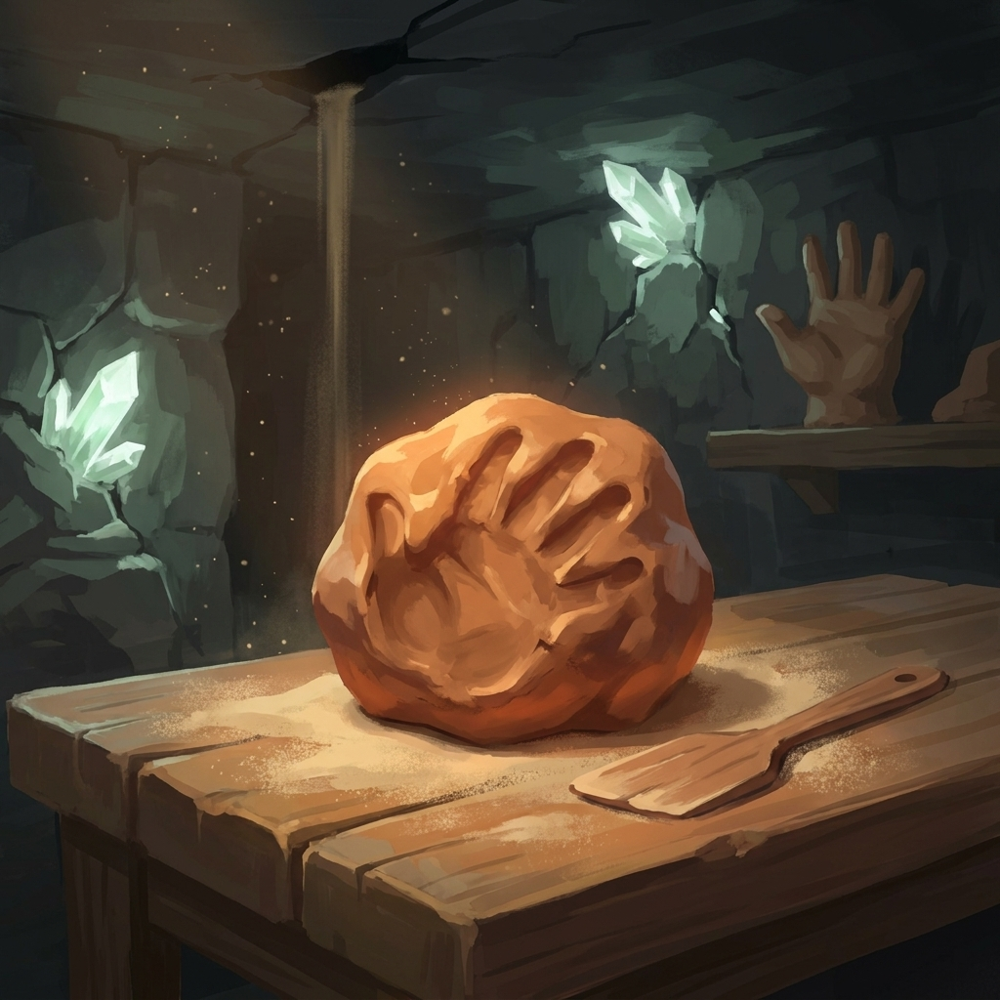
Nano Banana Pro1024×1024 · 1:1 · 1K · $0.143 · 19.5 среференс, не утверждён · 2026-09-26 20:56
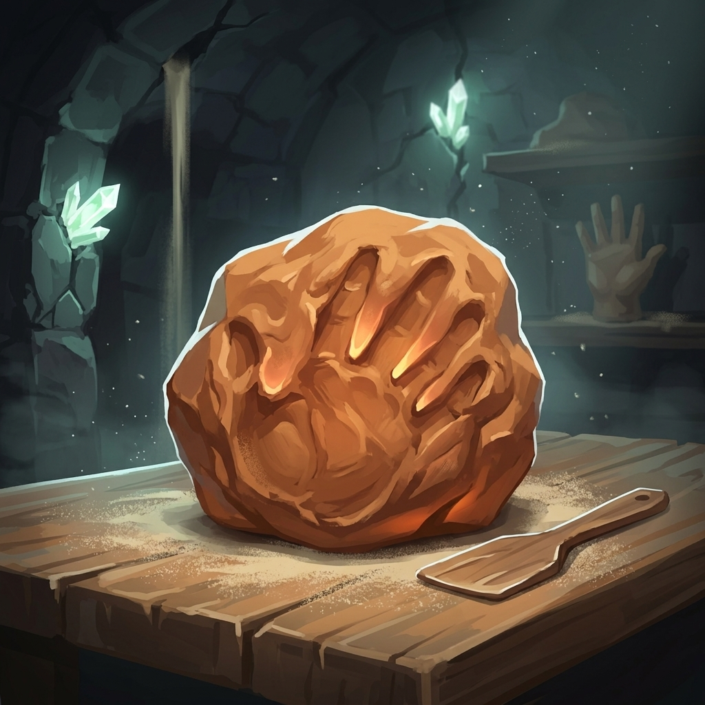
Nano Banana 21024×1024 · 1:1 · 1K · $0.0693 · 16.2 среференс, не утверждён · 2026-09-26 20:57
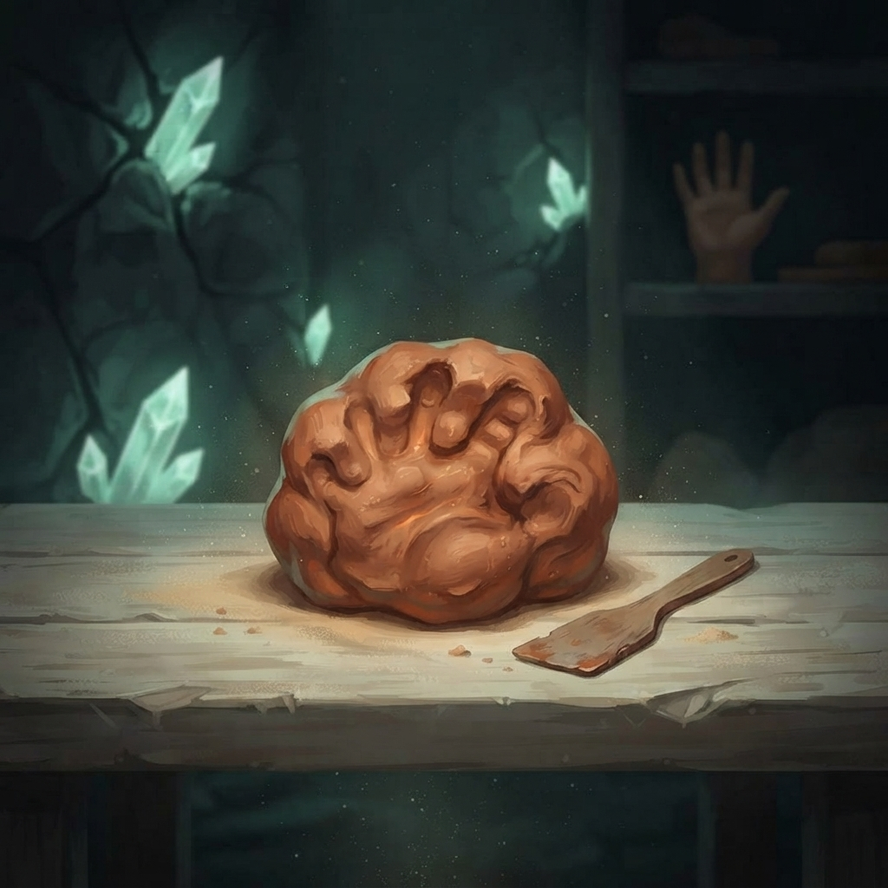
Nano Banana 2 Lite1024×1024 · 1:1 · 1K · $0.0351 · 4.7 среференс, не утверждён · 2026-09-26 20:57
Промт, как он ушёл в модель
Art style: hand-painted stylized dark-fantasy game art for a mobile RPG. Painterly digital illustration with visible, confident brush strokes and simplified planar shapes, crisp rim light on edges, strong readable silhouettes, deep near-black shadows. Light tells the story: a few strong sources — crystals and cracks that glow from within — throw colored light upward, the light comes from below. Cold and warm light contrast. Dust motes and grains of sand float in the light. Moderate detail, clean readable forms. No photorealism, no 3D-render look, no anime. Match the brushwork, lighting and color handling of the attached style reference images, but do NOT copy their subjects, objects, letters or composition. Format: square resource illustration for the inventory and the item card. One object, centered, about 55-60% of the frame, with a clear silhouette that still reads at 96 px. Beautiful atmospheric painted background of the place where the resource is found, softly out of focus and darker than the object, with a subtle dark vignette so the object stands out. Subject: 'Warm Clay', a craft resource from the Workshop of Forms. A single fist-sized lump of freshly kneaded clay, warm ochre-terracotta, with deep finger and palm prints, moist and soft; a faint warmth seems to live inside its folds, as if it were still warm from the hands that knead it every day (subtle warmth, NOT lava, NOT fire). It rests on a worn wooden worktable dusted with pale sand, a small wooden spatula beside it. Background: the dim, silent, abandoned Workshop of Forms deep underground — a thin stream of sand falls from a crack in the dark vault like an hourglass that nobody turns; white-green crystals glow coldly from within in cracks of the stone wall; the shape of an unfinished clay hand lies on a shelf in the gloom. The whole hall is cold white-green; the clay is the only warm thing in it. No text, no letters, no numbers, no real-world alphabets, no watermark, no signature, no logo, no UI elements, no border or frame around the picture.
Арена боя · Мастерская форм, вид сверху
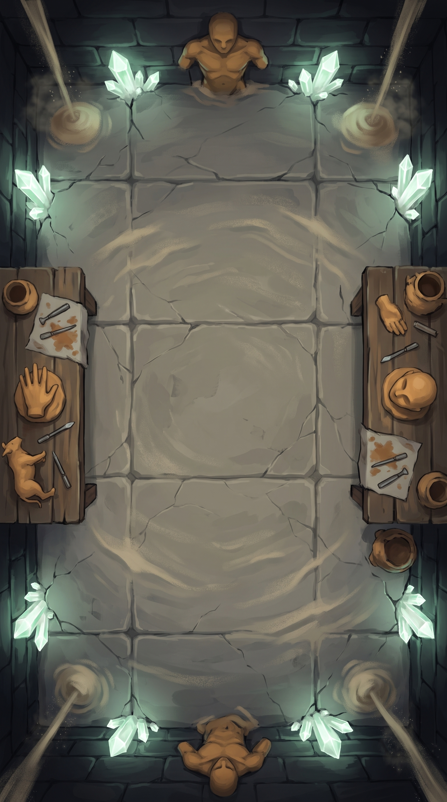
Nano Banana Pro1536×2752 · 9:16 · 2K · $0.1441 · 25.5 среференс, не утверждён · 2026-09-26 21:01
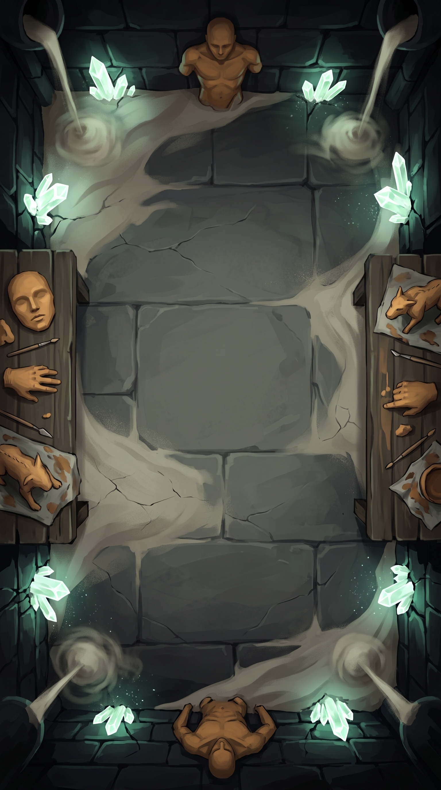
Nano Banana 21536×2752 · 9:16 · 2K · $0.1028 · 20.0 среференс, не утверждён · 2026-09-26 21:01
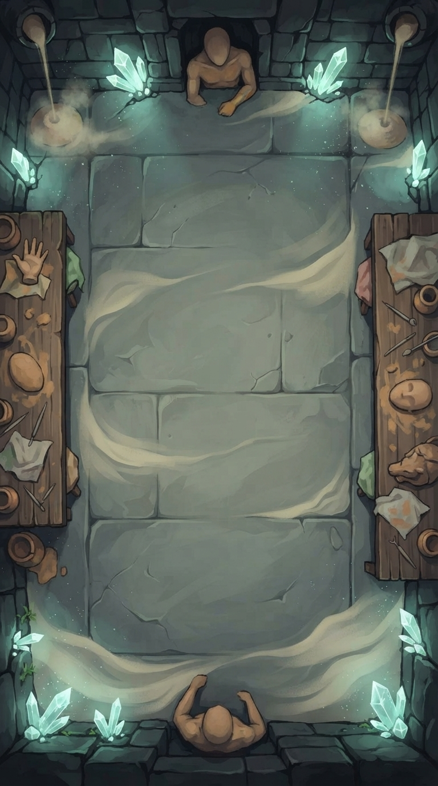
Nano Banana 2 Lite768×1376 · 9:16 · 1K · $0.0352 · 4.7 среференс, не утверждён · 2026-09-26 21:01
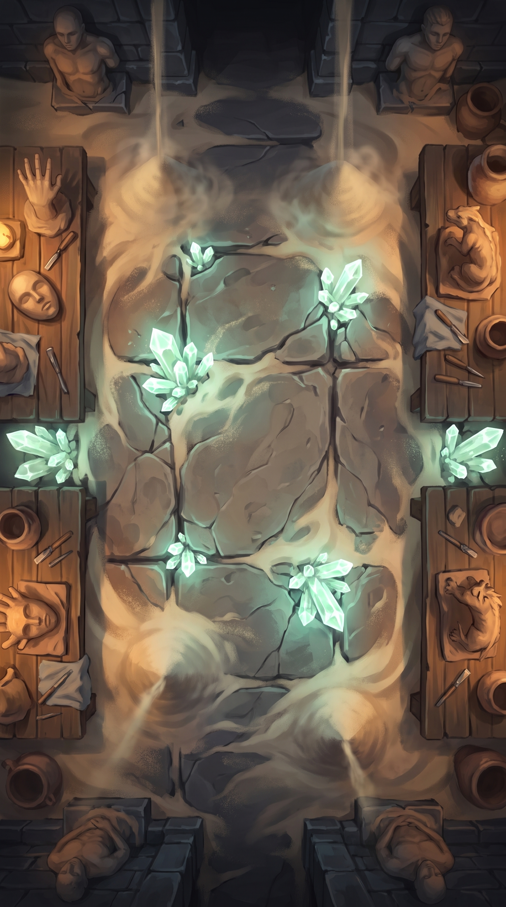
Nano Banana Pro1536×2752 · 9:16 · 2K · $0.1428 · 23.7 сзаменён: в первом промте Lite нарисовал слоты карт, Pro сделал зал тёплым; промт исправлен · 2026-09-26 20:57
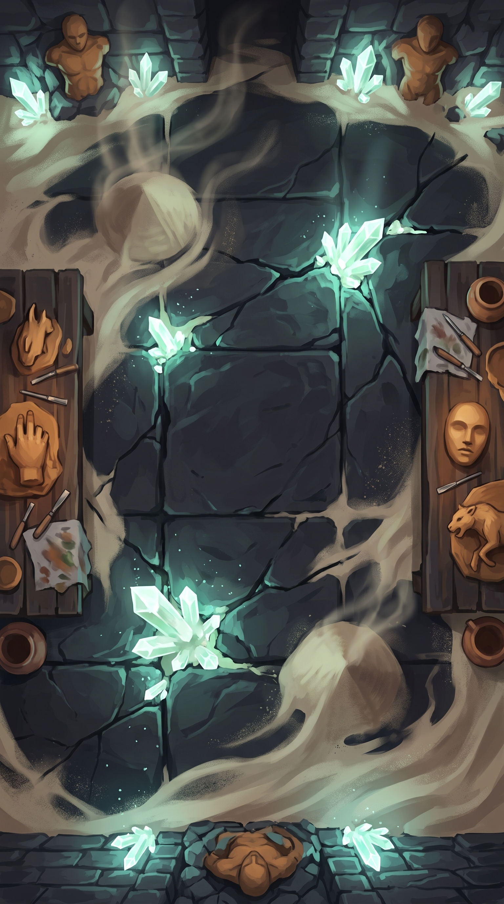
Nano Banana 21536×2752 · 9:16 · 2K · $0.1026 · 18.5 сзаменён: в первом промте Lite нарисовал слоты карт, Pro сделал зал тёплым; промт исправлен · 2026-09-26 20:57
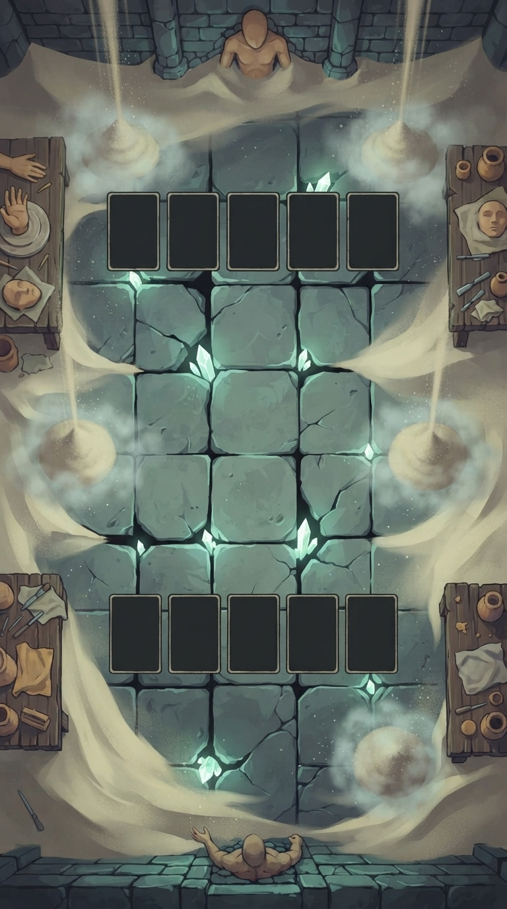
Nano Banana 2 Lite768×1376 · 9:16 · 1K · $0.0353 · 4.9 сзаменён: в первом промте Lite нарисовал слоты карт, Pro сделал зал тёплым; промт исправлен · 2026-09-26 20:58
Промт, как он ушёл в модель
Art style: hand-painted stylized dark-fantasy game art for a mobile RPG. Painterly digital illustration with visible, confident brush strokes and simplified planar shapes, crisp rim light on edges, strong readable silhouettes, deep near-black shadows. Light tells the story: a few strong sources — crystals and cracks that glow from within — throw colored light upward, the light comes from below. Cold and warm light contrast. Dust motes and grains of sand float in the light. Moderate detail, clean readable forms. No photorealism, no 3D-render look, no anime. Match the brushwork, lighting and color handling of the attached style reference images, but do NOT copy their subjects, objects, letters or composition. Format: vertical battle background for a phone screen, portrait 9:16. Strict top-down orthographic view, the camera looks straight down at the floor like a tabletop RPG battle map: no horizon, no perspective walls, no ceiling, no sky. The central playfield — the middle 60% of the width, from 15% to 85% of the height — is plain floor only: stone slabs, sand ripples and fine cracks, calm and lower in contrast. No crystals, objects, markings, slots, frames, rectangles, cards, tokens or figures on the playfield: the game places its own pieces there later. Put the interesting details along the edges and in the corners. Even, readable lighting over the playfield, no strong hotspot in the center. Subject: the floor of the Workshop of Forms, the first hall under the city of Endalor, where a god once sculpted living beings from clay and abandoned the work halfway. Large worn stone floor slabs with cracks; drifts and still ripples of pale sand. White-green crystals glowing from within grow only in the cracks along the edges and in the corners; their cold light spills onto the floor. In the corners: thin streams of sand fall from the unseen vault into small round piles with a faint haze, like hourglasses nobody turns. Along the left and right edges: parts of heavy wooden worktables seen from above with unfinished clay works lying on them — a hand without fingers, a face without features, half of a small beast — sculpting chisels, clay-stained cloths, clay pots. At the very top and bottom edges: the foot of the stone walls with half-formed clay bodies emerging from the stone, made precisely and calmly, unfinished, not grotesque. The hall is cold: near-black stone, white-green crystal light, pale sand. The only warm color is the ochre clay of the unfinished works. No candles, no fire, no warm lamps, no grid, no characters. No text, no letters, no numbers, no real-world alphabets, no watermark, no signature, no logo, no UI elements, no border or frame around the picture.
Ильмерра — эльфийка, лекарь, школа Воздуха, «Хранители Песочных Часов»
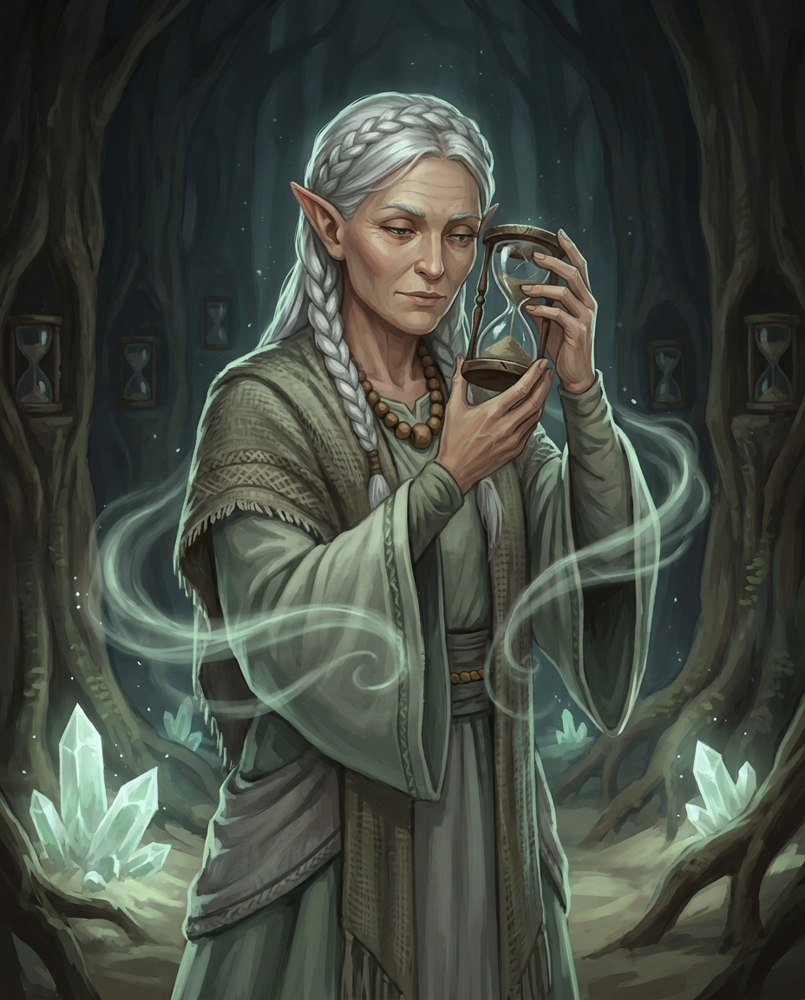
Nano Banana Pro928×1152 · 4:5 · 1K · $0.144 · 19.2 среференс, не утверждён · 2026-09-26 20:58
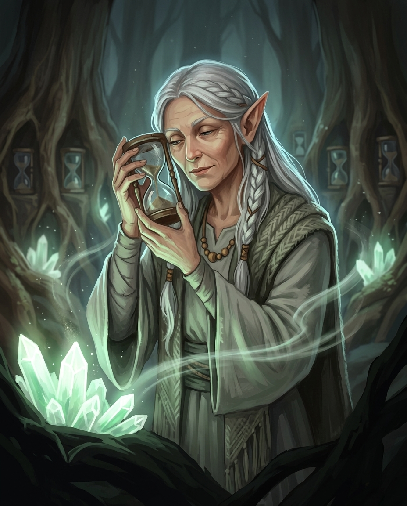
Nano Banana 2928×1152 · 4:5 · 1K · $0.0691 · 12.2 среференс, не утверждён · 2026-09-26 20:58
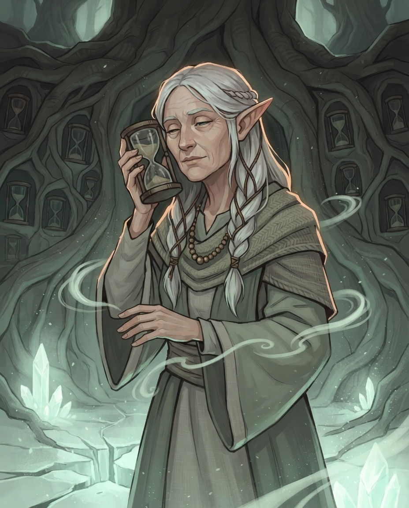
Nano Banana 2 Lite928×1152 · 4:5 · 1K · $0.0351 · 4.2 среференс, не утверждён · 2026-09-26 20:58
Промт, как он ушёл в модель
Art style: hand-painted stylized dark-fantasy game art for a mobile RPG. Painterly digital illustration with visible, confident brush strokes and simplified planar shapes, crisp rim light on edges, strong readable silhouettes, deep near-black shadows. Light tells the story: a few strong sources — crystals and cracks that glow from within — throw colored light upward, the light comes from below. Cold and warm light contrast. Dust motes and grains of sand float in the light. Moderate detail, clean readable forms. No photorealism, no 3D-render look, no anime. Match the brushwork, lighting and color handling of the attached style reference images, but do NOT copy their subjects, objects, letters or composition. Format: vertical hero card portrait, 4:5. Half-body, three-quarter view, head in the upper third, face well lit and readable at small size; the lower quarter may be darker because the card puts the name there. Rich atmospheric background that tells where the hero lived, with depth and soft focus, darker than the character. Light comes from below and from glowing crystals; rim light separates the figure from the background. Subject: Ilmerra, an elven woman from long ago, keeper of a hall where the hourglasses of those who had no kin were kept; a healer of the Air school. Ageless calm face with the fine lines of great age, gentle and attentive, long silver-white hair loosely braided with thin leather cords, pointed elven ears. She holds a small old hourglass with scratched glass close to her ear and listens to the sand inside, eyes half-closed. Layered druid robes of muted sage-green and grey linen, a woven shawl, a simple necklace of wooden beads; faint white-green wisps of wind curl around her sleeves (Air school). Background: a vast quiet hall among colossal tree roots in the heart of the elven forest; in niches between the roots stand rows of hourglasses, each one slightly different, dim; soft white-green light rises from below, sand motes drift in the air. She is lit from below by that white-green light, with a subtle rim light on her hair. No text, no letters, no numbers, no real-world alphabets, no watermark, no signature, no logo, no UI elements, no border or frame around the picture.
Доблесть — руна доблести
Nano Banana Pro1024×1024 · 1:1 · 1K · $0.1425 · 17.7 сальфа настоящая: углы прозрачные, фон исходника ровный на 100 %референс, не утверждён · 2026-09-26 20:58
Nano Banana 21024×1024 · 1:1 · 1K · $0.0686 · 8.9 сальфа настоящая: углы прозрачные, фон исходника ровный на 100 %референс, не утверждён · 2026-09-26 20:59
Nano Banana 2 Lite1024×1024 · 1:1 · 1K · $0.0348 · 4.8 сальфа настоящая: углы прозрачные, фон исходника ровный на 100 %референс, не утверждён · 2026-09-26 20:59
Nano Banana 21024×1024 · 1:1 · 1K · $0.0677 · 11.2 сальфа настоящая: углы прозрачные, фон исходника ровный на 100 %заменён: пробный запрос, вышла пентаграмма; промт исправлен · 2026-09-26 20:54
Промт, как он ушёл в модель
Art style: hand-painted stylized dark-fantasy game art for a mobile RPG. Painterly digital illustration with visible, confident brush strokes and simplified planar shapes, crisp rim light on edges, strong readable silhouettes, deep near-black shadows. Light tells the story: a few strong sources — crystals and cracks that glow from within — throw colored light upward, the light comes from below. Cold and warm light contrast. Dust motes and grains of sand float in the light. Moderate detail, clean readable forms. No photorealism, no 3D-render look, no anime. Match the brushwork, lighting and color handling of the attached style reference images, but do NOT copy their subjects, objects, letters or composition. Format: game UI icon, square. One bold emblem, centered, about 80% of the canvas, frontal view, a simple strong silhouette that stays readable at 24 px, crisp clean edges, painted material detail inside the silhouette. The glow stays inside the shape: no halo outside the silhouette. Subject: 'Rune of Valor', the emblem of a hero's valor. A thick rounded-hexagon tablet of dark basalt with a bevelled rim of old gold; on its face rises a solid, filled five-pointed star in raised relief, like a star of rank — NOT a pentagram, no interlaced or outlined star, no occult symbol. The star glows warm gold (#DDBC7A) from within; hairline cracks in the stone leak the same golden light. Frontal, symmetric, heavy and precious. Isolate the subject on a perfectly flat, uniform, solid pure magenta background (#FF00FF) that fills the whole canvas edge to edge: no gradient, no vignette, no texture, no floor, no cast shadow, no reflection, no glow or light spill on the background, no checkerboard transparency pattern. Leave a clear margin of background around the subject. Do not use magenta or similar colors anywhere in the subject. No text, no letters, no numbers, no real-world alphabets, no watermark, no signature, no logo, no UI elements, no border or frame around the picture.
Бафф «Оберег» — щит на союзнике
Nano Banana Pro1024×1024 · 1:1 · 1K · $0.1408 · 17.4 сальфа настоящая: углы прозрачные, фон исходника ровный на 100 %референс, не утверждён · 2026-09-26 20:59
Nano Banana 21024×1024 · 1:1 · 1K · $0.0689 · 9.5 сальфа настоящая: углы прозрачные, фон исходника ровный на 100 %референс, не утверждён · 2026-09-26 20:59
Nano Banana 2 Lite1024×1024 · 1:1 · 1K · $0.0345 · 4.0 сальфа настоящая: углы прозрачные, фон исходника ровный на 100 %референс, не утверждён · 2026-09-26 20:59
Промт, как он ушёл в модель
Art style: hand-painted stylized dark-fantasy game art for a mobile RPG. Painterly digital illustration with visible, confident brush strokes and simplified planar shapes, crisp rim light on edges, strong readable silhouettes, deep near-black shadows. Light tells the story: a few strong sources — crystals and cracks that glow from within — throw colored light upward, the light comes from below. Cold and warm light contrast. Dust motes and grains of sand float in the light. Moderate detail, clean readable forms. No photorealism, no 3D-render look, no anime. Match the brushwork, lighting and color handling of the attached style reference images, but do NOT copy their subjects, objects, letters or composition. Format: battle status-effect icon for a small round badge over a hero card, shown at 20-28 px. A circular medallion about 85% of the canvas: thin forged dark-iron rim, dark stone disc inside, one bold simple symbol in the center. Extremely readable, high contrast, minimal detail. Subject: the buff 'Ward', a protective shield on an ally. Rim of the medallion: dark iron with a thin teal (#48E5D4) glowing line that marks a positive effect. Symbol in the center: a bold dome-shaped shield of translucent ice-blue light (#8FDCFF) arching over a small amulet charm; the dome has a bright edge and a soft inner glow. The symbol takes about 60% of the medallion. Isolate the subject on a perfectly flat, uniform, solid pure magenta background (#FF00FF) that fills the whole canvas edge to edge: no gradient, no vignette, no texture, no floor, no cast shadow, no reflection, no glow or light spill on the background, no checkerboard transparency pattern. Leave a clear margin of background around the subject. Do not use magenta or similar colors anywhere in the subject. No text, no letters, no numbers, no real-world alphabets, no watermark, no signature, no logo, no UI elements, no border or frame around the picture.
Способность «Остановка» — школа Времени
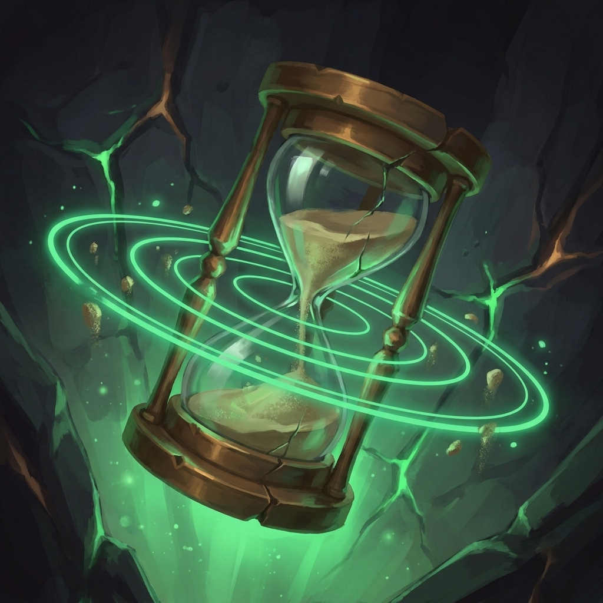
Nano Banana Pro1024×1024 · 1:1 · 1K · $0.1411 · 17.2 среференс, не утверждён · 2026-09-26 21:00
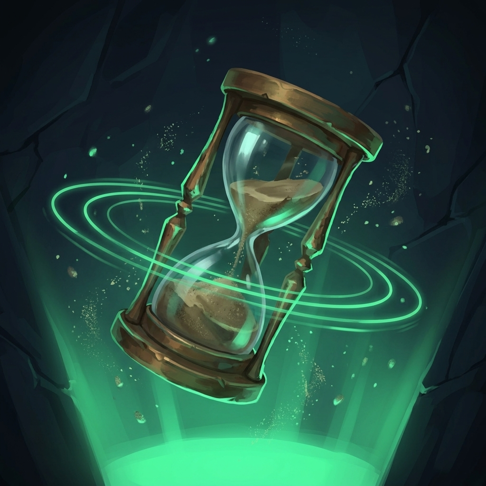
Nano Banana 21024×1024 · 1:1 · 1K · $0.0685 · 10.3 среференс, не утверждён · 2026-09-26 21:00
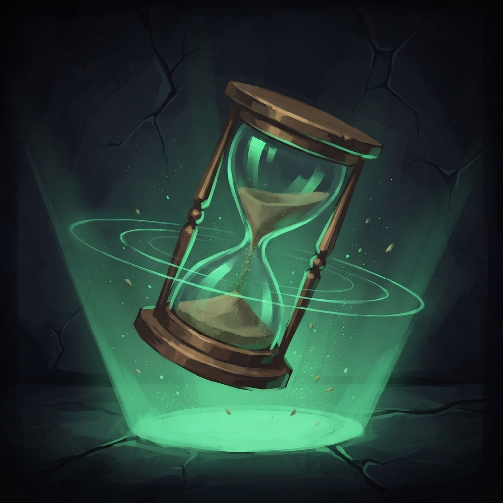
Nano Banana 2 Lite1024×1024 · 1:1 · 1K · $0.0347 · 4.5 среференс, не утверждён · 2026-09-26 21:00
Промт, как он ушёл в модель
Art style: hand-painted stylized dark-fantasy game art for a mobile RPG. Painterly digital illustration with visible, confident brush strokes and simplified planar shapes, crisp rim light on edges, strong readable silhouettes, deep near-black shadows. Light tells the story: a few strong sources — crystals and cracks that glow from within — throw colored light upward, the light comes from below. Cold and warm light contrast. Dust motes and grains of sand float in the light. Moderate detail, clean readable forms. No photorealism, no 3D-render look, no anime. Match the brushwork, lighting and color handling of the attached style reference images, but do NOT copy their subjects, objects, letters or composition. Format: square ability icon, full-bleed painting from edge to edge (the game puts its own frame on top). One clear central image with a bold silhouette readable at 48 px, dark background with a darker vignette at the edges, strong glow in the color of the magic school. Subject: 'Stop', a Time school control spell: the target loses its gathered attacks and cannot gather new ones for a while. An old bronze hourglass tilted in mid-air, its sand frozen mid-fall — grains hang motionless in the air around the glass; thin concentric rings of green light (Energium green, #4FDC8B) are frozen around it like ripples on still water; green light rises from below; dark stone background with faint cracks. Cold, still, precise. No text, no letters, no numbers, no real-world alphabets, no watermark, no signature, no logo, no UI elements, no border or frame around the picture.
Арена Мастерской форм, 21:9 — зоны карт по бокам свободны
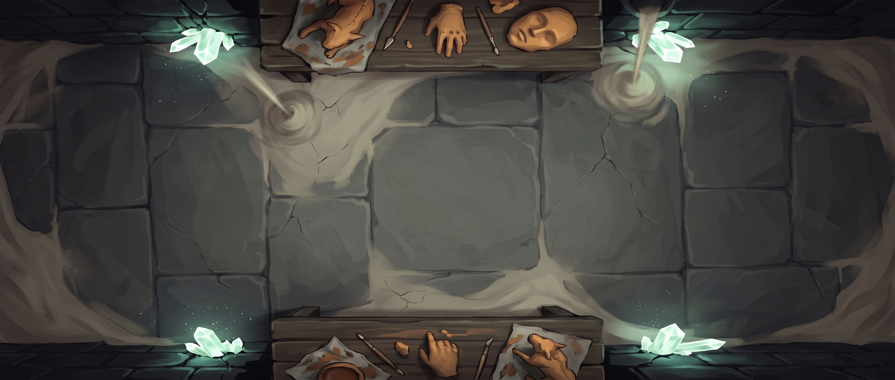
Nano Banana 23168×1344 · 21:9 · 2K · $0.1028 · 16.5 сждёт автора: вторая раскладка — по бокам, где лежат карты, только пол; стены тонкой полосой, столы и песок в середине · 2026-09-27 03:37
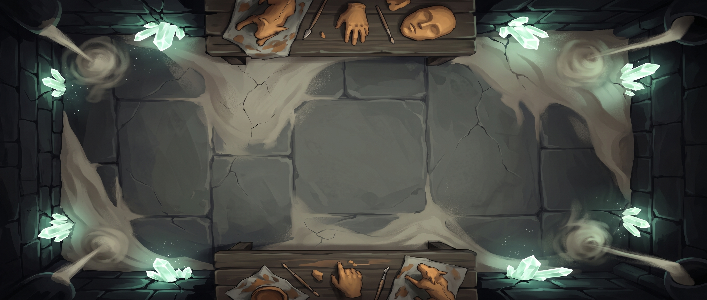
Nano Banana 23168×1344 · 21:9 · 2K · $0.1026 · 17.1 сзаменён: по бокам стены и кристаллы — карты легли бы в стену (замечание автора 27.09.2026); вторая раскладка — v2 · 2026-09-27 00:36
Промт, как он ушёл в модель
Art style: hand-painted stylized dark-fantasy game art for a mobile RPG. Painterly digital illustration with visible, confident brush strokes and simplified planar shapes, crisp rim light on edges, strong readable silhouettes, deep near-black shadows. Light tells the story: a few strong sources — crystals and cracks that glow from within — throw colored light upward, the light comes from below. Cold and warm light contrast. Dust motes and grains of sand float in the light. Moderate detail, clean readable forms. No photorealism, no 3D-render look, no anime. Match the brushwork, lighting and color handling of the attached style reference images (approved game art), but do NOT copy their subjects, objects, letters or composition unless told to. Format: wide horizontal battle background for a landscape phone screen, 21:9. Strict top-down orthographic view, the camera looks straight down at the floor like a tabletop RPG battle map: no horizon, no perspective walls, no ceiling, no sky. The game puts its cards along the left and right sides: five hero cards in the left quarter and five enemy cards in the right quarter, from the top edge to the bottom edge. So the left quarter (0-25% of the width) and the right quarter (75-100% of the width) must be open, flat, evenly lit floor over their whole height: stone slabs, sand and fine cracks only — no walls, no tables, no crystals, no objects, no falling sand there. The hall continues beyond the left and right edges of the picture: there are no side walls. Walls appear only as a thin strip along the very top and bottom edges, no more than 7% of the height. All details — worktables, clay works, crystals, falling sand — are placed only in the central half (25-75% of the width), close to the top and bottom edges; the middle of the central half stays calm, because the game shows banners there. The attached reference is the current version of this scene: keep its look, palette, lighting and objects, but recompose it by these rules. Subject: the floor of a long hall of the Workshop of Forms, the first hall under the city of Endalor, where a god once sculpted living beings from clay and abandoned the work halfway. Large worn stone floor slabs with cracks; drifts and still ripples of pale sand. In the central half only: at the top edge and at the bottom edge, one heavy wooden worktable each, seen from above, with unfinished clay works lying on them — a hand without fingers, a face without features, half of a small beast — sculpting chisels, clay-stained cloths; white-green crystals glowing from within in the cracks near the tables; one thin stream of sand falling from the unseen vault into a small round pile beside each table. The hall is cold: near-black stone, white-green crystal light, pale sand. The only warm color is the ochre clay of the unfinished works. No candles, no fire, no warm lamps, no grid, no characters, no cards. No text, no letters, no numbers, no real-world alphabets, no watermark, no signature, no logo, no UI elements, no border or frame around the picture.
Безликий образец — рядовой, сила
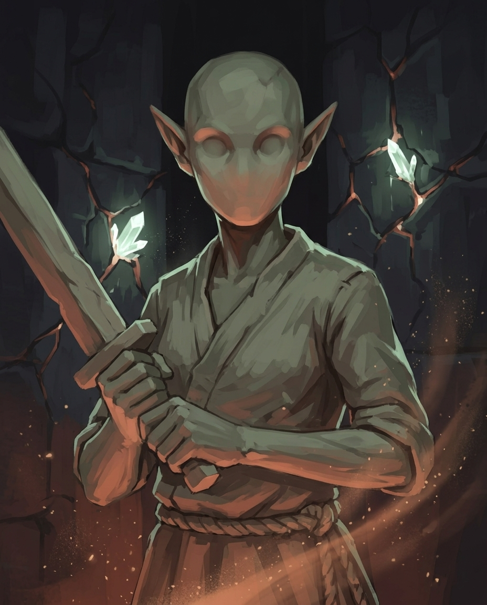
Nano Banana 2928×1152 · 4:5 · 1K · $0.0688 · 10.9 соснова — выбран автором 27.09.2026: Безликий образец, физ ДД силы (ADR-0013); он же эталон кадра врага · 2026-09-27 00:36
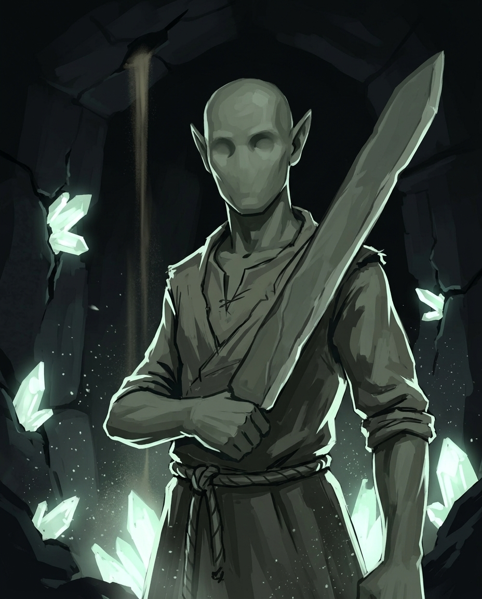
Nano Banana 2928×1152 · 4:5 · 1K · $0.0691 · 9.7 сзаменён: нарисован по старым фигурам GPT, автор просил новых врагов с нуля · 2026-09-27 00:42
Промт, как он ушёл в модель
Art style: hand-painted stylized dark-fantasy game art for a mobile RPG. Painterly digital illustration with visible, confident brush strokes and simplified planar shapes, crisp rim light on edges, strong readable silhouettes, deep near-black shadows. Light tells the story: a few strong sources — crystals and cracks that glow from within — throw colored light upward, the light comes from below. Cold and warm light contrast. Dust motes and grains of sand float in the light. Moderate detail, clean readable forms. No photorealism, no 3D-render look, no anime. Match the brushwork, lighting and color handling of the attached style reference images (approved game art), but do NOT copy their subjects, objects, letters or composition unless told to. Format: vertical enemy card portrait, 4:5, shown small on the battle field (about 74 px wide) and large in the bestiary. The figure fills most of the frame, head and shoulders in the upper third, clear silhouette. The creature must follow the attached character reference exactly: shape, proportions, missing parts, clothing and tools. Render it in the painted style of the attached style reference. Background: the dim abandoned Workshop of Forms deep underground — dark stone, a thin stream of sand falling from a crack above, white-green crystals glowing from within in the cracks; darker and softer than the figure. Light comes from below; the clay is the only warm color in the scene. Subject: 'Faceless Sample', the first unfinished work anyone meets in the Workshop. An elven figure of grey-green clay in a rough sketch of clothing, with a rope instead of a belt, holding a stone blank of a sword that has no crossguard yet. It has no face at all — only two shallow dents pressed by a thumb where the eyes should be — and still it looks straight at the viewer. Made simply but solidly, calm and honest, unfinished but not ugly. No text, no letters, no numbers, no real-world alphabets, no watermark, no signature, no logo, no UI elements, no border or frame around the picture.
Подмастерье — элита, сила
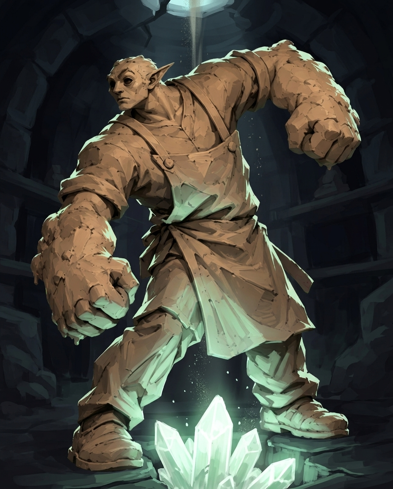
Nano Banana 2928×1152 · 4:5 · 1K · $0.0691 · 9.9 сзаменён: нарисован по старым фигурам GPT, автор просил новых врагов с нуля · 2026-09-27 00:36
Промт, как он ушёл в модель
Art style: hand-painted stylized dark-fantasy game art for a mobile RPG. Painterly digital illustration with visible, confident brush strokes and simplified planar shapes, crisp rim light on edges, strong readable silhouettes, deep near-black shadows. Light tells the story: a few strong sources — crystals and cracks that glow from within — throw colored light upward, the light comes from below. Cold and warm light contrast. Dust motes and grains of sand float in the light. Moderate detail, clean readable forms. No photorealism, no 3D-render look, no anime. Match the brushwork, lighting and color handling of the attached style reference images (approved game art), but do NOT copy their subjects, objects, letters or composition unless told to. Format: vertical enemy card portrait, 4:5, shown small on the battle field (about 74 px wide) and large in the bestiary. The figure fills most of the frame, head and shoulders in the upper third, clear silhouette. The creature must follow the attached character reference exactly: shape, proportions, missing parts, clothing and tools. Render it in the painted style of the attached style reference. Background: the dim abandoned Workshop of Forms deep underground — dark stone, a thin stream of sand falling from a crack above, white-green crystals glowing from within in the cracks; darker and softer than the figure. Light comes from below; the clay is the only warm color in the scene. Subject: 'Apprentice', a servant of the Workshop who still kneads clay for everyone although there is no one left to knead for. A stocky fellow in an apron over a rough shirt and wide trousers; his arms are covered in clay up to the elbows and twice as thick as they should be, fists like chopping blocks. A simple, almost kind face with two pressed hollows for eyes. Heavy, thorough, silent. No text, no letters, no numbers, no real-world alphabets, no watermark, no signature, no logo, no UI elements, no border or frame around the picture.
Первый набросок — босс Мастерской
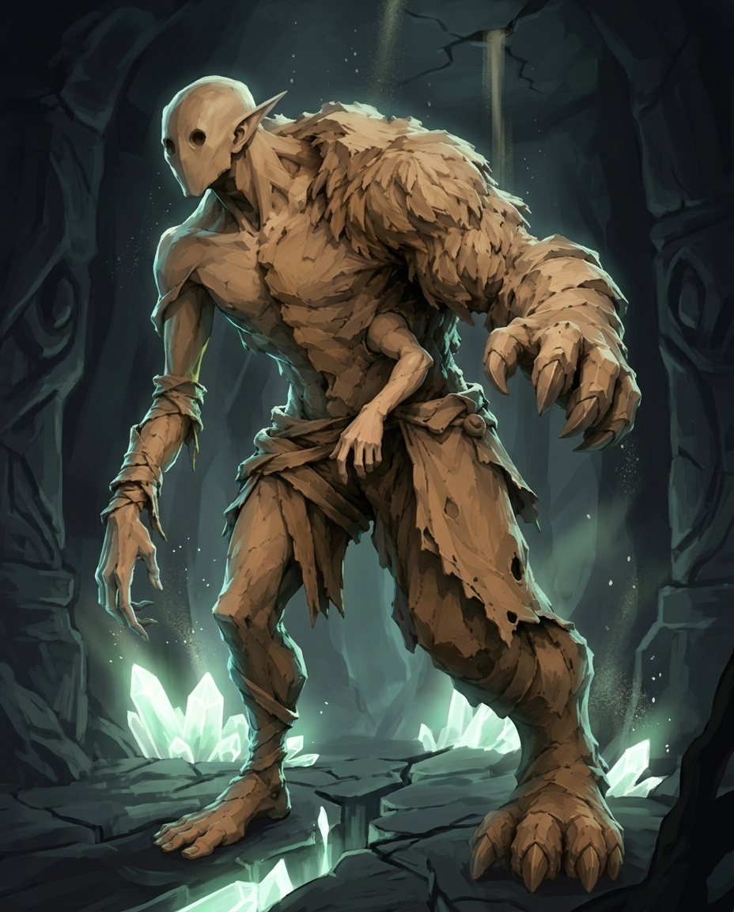
Nano Banana 2928×1152 · 4:5 · 1K · $0.0689 · 14.5 сзаменён: нарисован по старым фигурам GPT, автор просил новых врагов с нуля · 2026-09-27 00:37
Промт, как он ушёл в модель
Art style: hand-painted stylized dark-fantasy game art for a mobile RPG. Painterly digital illustration with visible, confident brush strokes and simplified planar shapes, crisp rim light on edges, strong readable silhouettes, deep near-black shadows. Light tells the story: a few strong sources — crystals and cracks that glow from within — throw colored light upward, the light comes from below. Cold and warm light contrast. Dust motes and grains of sand float in the light. Moderate detail, clean readable forms. No photorealism, no 3D-render look, no anime. Match the brushwork, lighting and color handling of the attached style reference images (approved game art), but do NOT copy their subjects, objects, letters or composition unless told to. Format: vertical enemy card portrait, 4:5, shown small on the battle field (about 74 px wide) and large in the bestiary. The figure fills most of the frame, head and shoulders in the upper third, clear silhouette. The creature must follow the attached character reference exactly: shape, proportions, missing parts, clothing and tools. Render it in the painted style of the attached style reference. Background: the dim abandoned Workshop of Forms deep underground — dark stone, a thin stream of sand falling from a crack above, white-green crystals glowing from within in the cracks; darker and softer than the figure. Light comes from below; the clay is the only warm color in the scene. Subject: 'The First Sketch', the boss of the last step of the Workshop — the very first attempt, begun and abandoned halfway. Huge, three times taller than a man, hunched, made of two halves that do not fit each other: the left half is an elf, the right half a beast — a shoulder in rough clay fur, an arm ending in a clawed paw, a beast's leg. Instead of a face a smooth mask with two hollows. A small foreign hand is stuck onto its side. It is not evil: it has been searching for a very long time for what to finish itself with. Show its scale — the figure barely fits the frame. No text, no letters, no numbers, no real-world alphabets, no watermark, no signature, no logo, no UI elements, no border or frame around the picture.
Школа Воздуха — Элазиум
Nano Banana 21024×1024 · 1:1 · 1K · $0.0685 · 9.3 сальфа настоящая: углы прозрачные, фон исходника ровный на 100 %партия 1, ждёт автора · 2026-09-27 00:37
Промт, как он ушёл в модель
Art style: hand-painted stylized dark-fantasy game art for a mobile RPG. Painterly digital illustration with visible, confident brush strokes and simplified planar shapes, crisp rim light on edges, strong readable silhouettes, deep near-black shadows. Light tells the story: a few strong sources — crystals and cracks that glow from within — throw colored light upward, the light comes from below. Cold and warm light contrast. Dust motes and grains of sand float in the light. Moderate detail, clean readable forms. No photorealism, no 3D-render look, no anime. Match the brushwork, lighting and color handling of the attached style reference images (approved game art), but do NOT copy their subjects, objects, letters or composition unless told to. Format: game UI icon of a magic school, square. One emblem centered, about 80% of the canvas: a charged carst crystal that glows from within in the school's color, with a small symbol of the element inside or around it. All seven school icons share the same composition, size, angle and painted material, so they read as one set. Simple strong silhouette readable at 20 px, crisp clean edges, the glow stays inside the silhouette. Subject: the school of Air. Elazium carst — a crystal of white with a green tint (#DFF4E5), light and translucent; three thin curling wind strokes wrap around it. Isolate the subject on a perfectly flat, uniform, solid pure magenta background (#FF00FF) that fills the whole canvas edge to edge: no gradient, no vignette, no texture, no floor, no cast shadow, no reflection, no glow or light spill on the background, no checkerboard transparency pattern. Leave a clear margin of background around the subject. Do not use magenta or similar colors anywhere in the subject. No text, no letters, no numbers, no real-world alphabets, no watermark, no signature, no logo, no UI elements, no border or frame around the picture.
Школа Земли — Рубидиум
Nano Banana 21024×1024 · 1:1 · 1K · $0.0689 · 10.2 сальфа настоящая: углы прозрачные, фон исходника ровный на 100 %партия 1, ждёт автора · 2026-09-27 00:42
Nano Banana 21024×1024 · 1:1 · 1K · $0.0687 · 9.5 сальфа настоящая: углы прозрачные, фон исходника ровный на 100 %заменён: розовый отсвет от пурпурного ключа; промт исправлен · 2026-09-27 00:37
Промт, как он ушёл в модель
Art style: hand-painted stylized dark-fantasy game art for a mobile RPG. Painterly digital illustration with visible, confident brush strokes and simplified planar shapes, crisp rim light on edges, strong readable silhouettes, deep near-black shadows. Light tells the story: a few strong sources — crystals and cracks that glow from within — throw colored light upward, the light comes from below. Cold and warm light contrast. Dust motes and grains of sand float in the light. Moderate detail, clean readable forms. No photorealism, no 3D-render look, no anime. Match the brushwork, lighting and color handling of the attached style reference images (approved game art), but do NOT copy their subjects, objects, letters or composition unless told to. Format: game UI icon of a magic school, square. One emblem centered, about 80% of the canvas: a charged carst crystal that glows from within in the school's color, with a small symbol of the element inside or around it. All seven school icons share the same composition, size, angle and painted material, so they read as one set. Simple strong silhouette readable at 20 px, crisp clean edges, the glow stays inside the silhouette. No light rays, no halo and no glow outside the crystal: the crystal ends with a crisp dark outline, and any glow stays inside it. No pink or magenta tint anywhere. Subject: the school of Earth. Rubidium carst — an amber-orange crystal (#EB9D40) rising from a rough rock base with a few small roots. Isolate the subject on a perfectly flat, uniform, solid pure magenta background (#FF00FF) that fills the whole canvas edge to edge: no gradient, no vignette, no texture, no floor, no cast shadow, no reflection, no glow or light spill on the background, no checkerboard transparency pattern. Leave a clear margin of background around the subject. Do not use magenta or similar colors anywhere in the subject. No text, no letters, no numbers, no real-world alphabets, no watermark, no signature, no logo, no UI elements, no border or frame around the picture.
Школа Огня — Нитриум
Nano Banana 21024×1024 · 1:1 · 1K · $0.0686 · 10.1 сальфа настоящая: углы прозрачные, фон исходника ровный на 100 %партия 1, ждёт автора · 2026-09-27 00:37
Промт, как он ушёл в модель
Art style: hand-painted stylized dark-fantasy game art for a mobile RPG. Painterly digital illustration with visible, confident brush strokes and simplified planar shapes, crisp rim light on edges, strong readable silhouettes, deep near-black shadows. Light tells the story: a few strong sources — crystals and cracks that glow from within — throw colored light upward, the light comes from below. Cold and warm light contrast. Dust motes and grains of sand float in the light. Moderate detail, clean readable forms. No photorealism, no 3D-render look, no anime. Match the brushwork, lighting and color handling of the attached style reference images (approved game art), but do NOT copy their subjects, objects, letters or composition unless told to. Format: game UI icon of a magic school, square. One emblem centered, about 80% of the canvas: a charged carst crystal that glows from within in the school's color, with a small symbol of the element inside or around it. All seven school icons share the same composition, size, angle and painted material, so they read as one set. Simple strong silhouette readable at 20 px, crisp clean edges, the glow stays inside the silhouette. Subject: the school of Fire. Nitrium carst — a scarlet crystal (#F0564A) with a living flame burning inside it. Isolate the subject on a perfectly flat, uniform, solid pure magenta background (#FF00FF) that fills the whole canvas edge to edge: no gradient, no vignette, no texture, no floor, no cast shadow, no reflection, no glow or light spill on the background, no checkerboard transparency pattern. Leave a clear margin of background around the subject. Do not use magenta or similar colors anywhere in the subject. No text, no letters, no numbers, no real-world alphabets, no watermark, no signature, no logo, no UI elements, no border or frame around the picture.
Школа Воды — Паладиум
Nano Banana 21024×1024 · 1:1 · 1K · $0.0685 · 7.5 сальфа настоящая: углы прозрачные, фон исходника ровный на 100 %партия 1, ждёт автора · 2026-09-27 00:37
Промт, как он ушёл в модель
Art style: hand-painted stylized dark-fantasy game art for a mobile RPG. Painterly digital illustration with visible, confident brush strokes and simplified planar shapes, crisp rim light on edges, strong readable silhouettes, deep near-black shadows. Light tells the story: a few strong sources — crystals and cracks that glow from within — throw colored light upward, the light comes from below. Cold and warm light contrast. Dust motes and grains of sand float in the light. Moderate detail, clean readable forms. No photorealism, no 3D-render look, no anime. Match the brushwork, lighting and color handling of the attached style reference images (approved game art), but do NOT copy their subjects, objects, letters or composition unless told to. Format: game UI icon of a magic school, square. One emblem centered, about 80% of the canvas: a charged carst crystal that glows from within in the school's color, with a small symbol of the element inside or around it. All seven school icons share the same composition, size, angle and painted material, so they read as one set. Simple strong silhouette readable at 20 px, crisp clean edges, the glow stays inside the silhouette. Subject: the school of Water. Paladium carst — a deep blue crystal (#5A94F7) with a drop and a circular ripple glowing inside it. Isolate the subject on a perfectly flat, uniform, solid pure magenta background (#FF00FF) that fills the whole canvas edge to edge: no gradient, no vignette, no texture, no floor, no cast shadow, no reflection, no glow or light spill on the background, no checkerboard transparency pattern. Leave a clear margin of background around the subject. Do not use magenta or similar colors anywhere in the subject. No text, no letters, no numbers, no real-world alphabets, no watermark, no signature, no logo, no UI elements, no border or frame around the picture.
Школа Времени — Энериум
Nano Banana 21024×1024 · 1:1 · 1K · $0.0688 · 9.1 сальфа настоящая: углы прозрачные, фон исходника ровный на 100 %партия 1, ждёт автора · 2026-09-27 00:38
Промт, как он ушёл в модель
Art style: hand-painted stylized dark-fantasy game art for a mobile RPG. Painterly digital illustration with visible, confident brush strokes and simplified planar shapes, crisp rim light on edges, strong readable silhouettes, deep near-black shadows. Light tells the story: a few strong sources — crystals and cracks that glow from within — throw colored light upward, the light comes from below. Cold and warm light contrast. Dust motes and grains of sand float in the light. Moderate detail, clean readable forms. No photorealism, no 3D-render look, no anime. Match the brushwork, lighting and color handling of the attached style reference images (approved game art), but do NOT copy their subjects, objects, letters or composition unless told to. Format: game UI icon of a magic school, square. One emblem centered, about 80% of the canvas: a charged carst crystal that glows from within in the school's color, with a small symbol of the element inside or around it. All seven school icons share the same composition, size, angle and painted material, so they read as one set. Simple strong silhouette readable at 20 px, crisp clean edges, the glow stays inside the silhouette. Subject: the school of Time. Energium carst — a green crystal (#4FDC8B) with a small hourglass silhouette glowing inside it. Isolate the subject on a perfectly flat, uniform, solid pure magenta background (#FF00FF) that fills the whole canvas edge to edge: no gradient, no vignette, no texture, no floor, no cast shadow, no reflection, no glow or light spill on the background, no checkerboard transparency pattern. Leave a clear margin of background around the subject. Do not use magenta or similar colors anywhere in the subject. No text, no letters, no numbers, no real-world alphabets, no watermark, no signature, no logo, no UI elements, no border or frame around the picture.
Школа Света — без покровителя
Nano Banana 21024×1024 · 1:1 · 1K · $0.0688 · 9.4 сальфа настоящая: углы прозрачные, фон исходника ровный на 100 %партия 1, ждёт автора · 2026-09-27 00:42
Nano Banana 21024×1024 · 1:1 · 1K · $0.0686 · 9.2 сальфа настоящая: углы прозрачные, фон исходника ровный на 100 %заменён: розовые лучи от пурпурного ключа; промт исправлен · 2026-09-27 00:38
Промт, как он ушёл в модель
Art style: hand-painted stylized dark-fantasy game art for a mobile RPG. Painterly digital illustration with visible, confident brush strokes and simplified planar shapes, crisp rim light on edges, strong readable silhouettes, deep near-black shadows. Light tells the story: a few strong sources — crystals and cracks that glow from within — throw colored light upward, the light comes from below. Cold and warm light contrast. Dust motes and grains of sand float in the light. Moderate detail, clean readable forms. No photorealism, no 3D-render look, no anime. Match the brushwork, lighting and color handling of the attached style reference images (approved game art), but do NOT copy their subjects, objects, letters or composition unless told to. Format: game UI icon of a magic school, square. One emblem centered, about 80% of the canvas: a charged carst crystal that glows from within in the school's color, with a small symbol of the element inside or around it. All seven school icons share the same composition, size, angle and painted material, so they read as one set. Simple strong silhouette readable at 20 px, crisp clean edges, the glow stays inside the silhouette. No light rays, no halo and no glow outside the crystal: the crystal ends with a crisp dark outline, and any glow stays inside it. No pink or magenta tint anywhere. Subject: the school of Light — a forbidden school without a god and without a carst. A narrow crystal-shaped shard of pure pale-gold light (#F4E6AE) radiating thin rays; no stone base. Isolate the subject on a perfectly flat, uniform, solid pure magenta background (#FF00FF) that fills the whole canvas edge to edge: no gradient, no vignette, no texture, no floor, no cast shadow, no reflection, no glow or light spill on the background, no checkerboard transparency pattern. Leave a clear margin of background around the subject. Do not use magenta or similar colors anywhere in the subject. No text, no letters, no numbers, no real-world alphabets, no watermark, no signature, no logo, no UI elements, no border or frame around the picture.
Школа Тьмы — без покровителя
Nano Banana 21024×1024 · 1:1 · 1K · $0.0687 · 10.5 сальфа настоящая: углы прозрачные, фон исходника ровный на 100 %партия 1, ждёт автора · 2026-09-27 00:38
Промт, как он ушёл в модель
Art style: hand-painted stylized dark-fantasy game art for a mobile RPG. Painterly digital illustration with visible, confident brush strokes and simplified planar shapes, crisp rim light on edges, strong readable silhouettes, deep near-black shadows. Light tells the story: a few strong sources — crystals and cracks that glow from within — throw colored light upward, the light comes from below. Cold and warm light contrast. Dust motes and grains of sand float in the light. Moderate detail, clean readable forms. No photorealism, no 3D-render look, no anime. Match the brushwork, lighting and color handling of the attached style reference images (approved game art), but do NOT copy their subjects, objects, letters or composition unless told to. Format: game UI icon of a magic school, square. One emblem centered, about 80% of the canvas: a charged carst crystal that glows from within in the school's color, with a small symbol of the element inside or around it. All seven school icons share the same composition, size, angle and painted material, so they read as one set. Simple strong silhouette readable at 20 px, crisp clean edges, the glow stays inside the silhouette. Subject: the school of Darkness — a forbidden school without a god and without a carst. A crystal-shaped shard of deep night with a soft lavender rim light (#A986EE) and a thin crescent of shadow curling around it. Isolate the subject on a perfectly flat, uniform, solid pure green background (#00FF00) that fills the whole canvas edge to edge: no gradient, no vignette, no texture, no floor, no cast shadow, no reflection, no glow or light spill on the background, no checkerboard transparency pattern. Leave a clear margin of background around the subject. Do not use green or similar colors anywhere in the subject. No text, no letters, no numbers, no real-world alphabets, no watermark, no signature, no logo, no UI elements, no border or frame around the picture.
Класс: танк
Nano Banana 21024×1024 · 1:1 · 1K · $0.0688 · 9.4 сальфа настоящая: углы прозрачные, фон исходника ровный на 100 %партия 1, ждёт автора · 2026-09-27 00:42
Nano Banana 21024×1024 · 1:1 · 1K · $0.0684 · 8.8 сальфа настоящая: углы прозрачные, фон исходника ровный на 100 %заменён: без подложки — набор классов разнобойный; промт исправлен · 2026-09-27 00:38
Промт, как он ушёл в модель
Art style: hand-painted stylized dark-fantasy game art for a mobile RPG. Painterly digital illustration with visible, confident brush strokes and simplified planar shapes, crisp rim light on edges, strong readable silhouettes, deep near-black shadows. Light tells the story: a few strong sources — crystals and cracks that glow from within — throw colored light upward, the light comes from below. Cold and warm light contrast. Dust motes and grains of sand float in the light. Moderate detail, clean readable forms. No photorealism, no 3D-render look, no anime. Match the brushwork, lighting and color handling of the attached style reference images (approved game art), but do NOT copy their subjects, objects, letters or composition unless told to. Format: game UI icon of a hero class, square. Every class icon sits on the same thick rounded-hexagon tablet of dark basalt with a bevelled rim of worn old gold, exactly like the Rune of Valor icon in the first reference image; the class symbol is carved and raised on the tablet in dark forged iron with old-gold edges. The tablet fills about 85% of the canvas. Neutral colors, no element colors, no pink, no light beams, no glow outside the tablet. All seven class icons share this tablet, size and angle, so they read as one set. Simple bold symbol readable at 20 px. Subject: the Tank class. A heavy tower shield with a riveted rim, seen from the front. Isolate the subject on a perfectly flat, uniform, solid pure magenta background (#FF00FF) that fills the whole canvas edge to edge: no gradient, no vignette, no texture, no floor, no cast shadow, no reflection, no glow or light spill on the background, no checkerboard transparency pattern. Leave a clear margin of background around the subject. Do not use magenta or similar colors anywhere in the subject. No text, no letters, no numbers, no real-world alphabets, no watermark, no signature, no logo, no UI elements, no border or frame around the picture.
Класс: физ ДД силы
Nano Banana 21024×1024 · 1:1 · 1K · $0.0685 · 9.1 сальфа настоящая: углы прозрачные, фон исходника ровный на 100 %партия 1, ждёт автора · 2026-09-27 00:42
Nano Banana 21024×1024 · 1:1 · 1K · $0.0686 · 9.4 сальфа не прошла: фон исходника не ровный ключ — возможно, нарисована шахматказаменён: без подложки и с розовым лучом от ключа; промт исправлен · 2026-09-27 00:38
Промт, как он ушёл в модель
Art style: hand-painted stylized dark-fantasy game art for a mobile RPG. Painterly digital illustration with visible, confident brush strokes and simplified planar shapes, crisp rim light on edges, strong readable silhouettes, deep near-black shadows. Light tells the story: a few strong sources — crystals and cracks that glow from within — throw colored light upward, the light comes from below. Cold and warm light contrast. Dust motes and grains of sand float in the light. Moderate detail, clean readable forms. No photorealism, no 3D-render look, no anime. Match the brushwork, lighting and color handling of the attached style reference images (approved game art), but do NOT copy their subjects, objects, letters or composition unless told to. Format: game UI icon of a hero class, square. Every class icon sits on the same thick rounded-hexagon tablet of dark basalt with a bevelled rim of worn old gold, exactly like the Rune of Valor icon in the first reference image; the class symbol is carved and raised on the tablet in dark forged iron with old-gold edges. The tablet fills about 85% of the canvas. Neutral colors, no element colors, no pink, no light beams, no glow outside the tablet. All seven class icons share this tablet, size and angle, so they read as one set. Simple bold symbol readable at 20 px. Subject: the strength damage dealer class. A heavy two-handed war axe, blade up, seen from the front. Isolate the subject on a perfectly flat, uniform, solid pure magenta background (#FF00FF) that fills the whole canvas edge to edge: no gradient, no vignette, no texture, no floor, no cast shadow, no reflection, no glow or light spill on the background, no checkerboard transparency pattern. Leave a clear margin of background around the subject. Do not use magenta or similar colors anywhere in the subject. No text, no letters, no numbers, no real-world alphabets, no watermark, no signature, no logo, no UI elements, no border or frame around the picture.
Класс: физ ДД ловкости
Nano Banana 21024×1024 · 1:1 · 1K · $0.0686 · 9.7 сальфа настоящая: углы прозрачные, фон исходника ровный на 100 %партия 1, ждёт автора · 2026-09-27 00:43
Nano Banana 21024×1024 · 1:1 · 1K · $0.0686 · 8.9 сальфа настоящая: углы прозрачные, фон исходника ровный на 100 %заменён: без подложки — набор разнобойный; промт исправлен · 2026-09-27 00:38
Промт, как он ушёл в модель
Art style: hand-painted stylized dark-fantasy game art for a mobile RPG. Painterly digital illustration with visible, confident brush strokes and simplified planar shapes, crisp rim light on edges, strong readable silhouettes, deep near-black shadows. Light tells the story: a few strong sources — crystals and cracks that glow from within — throw colored light upward, the light comes from below. Cold and warm light contrast. Dust motes and grains of sand float in the light. Moderate detail, clean readable forms. No photorealism, no 3D-render look, no anime. Match the brushwork, lighting and color handling of the attached style reference images (approved game art), but do NOT copy their subjects, objects, letters or composition unless told to. Format: game UI icon of a hero class, square. Every class icon sits on the same thick rounded-hexagon tablet of dark basalt with a bevelled rim of worn old gold, exactly like the Rune of Valor icon in the first reference image; the class symbol is carved and raised on the tablet in dark forged iron with old-gold edges. The tablet fills about 85% of the canvas. Neutral colors, no element colors, no pink, no light beams, no glow outside the tablet. All seven class icons share this tablet, size and angle, so they read as one set. Simple bold symbol readable at 20 px. Subject: the agility damage dealer class. A drawn short bow with an arrow nocked, the arrow pointing up and to the right. Isolate the subject on a perfectly flat, uniform, solid pure magenta background (#FF00FF) that fills the whole canvas edge to edge: no gradient, no vignette, no texture, no floor, no cast shadow, no reflection, no glow or light spill on the background, no checkerboard transparency pattern. Leave a clear margin of background around the subject. Do not use magenta or similar colors anywhere in the subject. No text, no letters, no numbers, no real-world alphabets, no watermark, no signature, no logo, no UI elements, no border or frame around the picture.
Класс: маг ДД
Nano Banana 21024×1024 · 1:1 · 1K · $0.0689 · 10.0 сальфа настоящая: углы прозрачные, фон исходника ровный на 100 %партия 1, ждёт автора · 2026-09-27 00:39
Промт, как он ушёл в модель
Art style: hand-painted stylized dark-fantasy game art for a mobile RPG. Painterly digital illustration with visible, confident brush strokes and simplified planar shapes, crisp rim light on edges, strong readable silhouettes, deep near-black shadows. Light tells the story: a few strong sources — crystals and cracks that glow from within — throw colored light upward, the light comes from below. Cold and warm light contrast. Dust motes and grains of sand float in the light. Moderate detail, clean readable forms. No photorealism, no 3D-render look, no anime. Match the brushwork, lighting and color handling of the attached style reference images (approved game art), but do NOT copy their subjects, objects, letters or composition unless told to. Format: game UI icon of a hero class, square. One emblem centered, about 80% of the canvas, made of dark forged iron with worn old-gold edges and a faint warm glow from below; neutral, no element colors. All seven class icons share the same material, size and angle, so they read as one set. Simple bold silhouette readable at 20 px, crisp clean edges. Subject: the magic damage dealer class. A short staff topped with a floating crystal shard and a small spark above it. Isolate the subject on a perfectly flat, uniform, solid pure magenta background (#FF00FF) that fills the whole canvas edge to edge: no gradient, no vignette, no texture, no floor, no cast shadow, no reflection, no glow or light spill on the background, no checkerboard transparency pattern. Leave a clear margin of background around the subject. Do not use magenta or similar colors anywhere in the subject. No text, no letters, no numbers, no real-world alphabets, no watermark, no signature, no logo, no UI elements, no border or frame around the picture.
Класс: лекарь
Nano Banana 21024×1024 · 1:1 · 1K · $0.0687 · 9.6 сальфа настоящая: углы прозрачные, фон исходника ровный на 100 %партия 1, ждёт автора · 2026-09-27 00:39
Промт, как он ушёл в модель
Art style: hand-painted stylized dark-fantasy game art for a mobile RPG. Painterly digital illustration with visible, confident brush strokes and simplified planar shapes, crisp rim light on edges, strong readable silhouettes, deep near-black shadows. Light tells the story: a few strong sources — crystals and cracks that glow from within — throw colored light upward, the light comes from below. Cold and warm light contrast. Dust motes and grains of sand float in the light. Moderate detail, clean readable forms. No photorealism, no 3D-render look, no anime. Match the brushwork, lighting and color handling of the attached style reference images (approved game art), but do NOT copy their subjects, objects, letters or composition unless told to. Format: game UI icon of a hero class, square. One emblem centered, about 80% of the canvas, made of dark forged iron with worn old-gold edges and a faint warm glow from below; neutral, no element colors. All seven class icons share the same material, size and angle, so they read as one set. Simple bold silhouette readable at 20 px, crisp clean edges. Subject: the healer class. An open palm facing up with a small drop of light floating above it. Isolate the subject on a perfectly flat, uniform, solid pure magenta background (#FF00FF) that fills the whole canvas edge to edge: no gradient, no vignette, no texture, no floor, no cast shadow, no reflection, no glow or light spill on the background, no checkerboard transparency pattern. Leave a clear margin of background around the subject. Do not use magenta or similar colors anywhere in the subject. No text, no letters, no numbers, no real-world alphabets, no watermark, no signature, no logo, no UI elements, no border or frame around the picture.
Класс: дебаффер
Nano Banana 21024×1024 · 1:1 · 1K · $0.0687 · 9.6 сальфа настоящая: углы прозрачные, фон исходника ровный на 100 %партия 1, ждёт автора · 2026-09-27 00:43
Nano Banana 21024×1024 · 1:1 · 1K · $0.0688 · 9.8 сальфа настоящая: углы прозрачные, фон исходника ровный на 100 %заменён: в круглой рамке — набор разнобойный; промт исправлен · 2026-09-27 00:39
Промт, как он ушёл в модель
Art style: hand-painted stylized dark-fantasy game art for a mobile RPG. Painterly digital illustration with visible, confident brush strokes and simplified planar shapes, crisp rim light on edges, strong readable silhouettes, deep near-black shadows. Light tells the story: a few strong sources — crystals and cracks that glow from within — throw colored light upward, the light comes from below. Cold and warm light contrast. Dust motes and grains of sand float in the light. Moderate detail, clean readable forms. No photorealism, no 3D-render look, no anime. Match the brushwork, lighting and color handling of the attached style reference images (approved game art), but do NOT copy their subjects, objects, letters or composition unless told to. Format: game UI icon of a hero class, square. Every class icon sits on the same thick rounded-hexagon tablet of dark basalt with a bevelled rim of worn old gold, exactly like the Rune of Valor icon in the first reference image; the class symbol is carved and raised on the tablet in dark forged iron with old-gold edges. The tablet fills about 85% of the canvas. Neutral colors, no element colors, no pink, no light beams, no glow outside the tablet. All seven class icons share this tablet, size and angle, so they read as one set. Simple bold symbol readable at 20 px. Subject: the debuffer class — weakens and binds. A short broken chain with one cracked link in the middle. Isolate the subject on a perfectly flat, uniform, solid pure magenta background (#FF00FF) that fills the whole canvas edge to edge: no gradient, no vignette, no texture, no floor, no cast shadow, no reflection, no glow or light spill on the background, no checkerboard transparency pattern. Leave a clear margin of background around the subject. Do not use magenta or similar colors anywhere in the subject. No text, no letters, no numbers, no real-world alphabets, no watermark, no signature, no logo, no UI elements, no border or frame around the picture.
Класс: фармящий
Nano Banana 21024×1024 · 1:1 · 1K · $0.0686 · 9.9 сальфа настоящая: углы прозрачные, фон исходника ровный на 100 %партия 1, ждёт автора · 2026-09-27 00:39
Промт, как он ушёл в модель
Art style: hand-painted stylized dark-fantasy game art for a mobile RPG. Painterly digital illustration with visible, confident brush strokes and simplified planar shapes, crisp rim light on edges, strong readable silhouettes, deep near-black shadows. Light tells the story: a few strong sources — crystals and cracks that glow from within — throw colored light upward, the light comes from below. Cold and warm light contrast. Dust motes and grains of sand float in the light. Moderate detail, clean readable forms. No photorealism, no 3D-render look, no anime. Match the brushwork, lighting and color handling of the attached style reference images (approved game art), but do NOT copy their subjects, objects, letters or composition unless told to. Format: game UI icon of a hero class, square. One emblem centered, about 80% of the canvas, made of dark forged iron with worn old-gold edges and a faint warm glow from below; neutral, no element colors. All seven class icons share the same material, size and angle, so they read as one set. Simple bold silhouette readable at 20 px, crisp clean edges. Subject: the gatherer class, whose passives raise the squad's loot. A small sack of goods tied with a rope, a single old coin leaning against it. Isolate the subject on a perfectly flat, uniform, solid pure magenta background (#FF00FF) that fills the whole canvas edge to edge: no gradient, no vignette, no texture, no floor, no cast shadow, no reflection, no glow or light spill on the background, no checkerboard transparency pattern. Leave a clear margin of background around the subject. Do not use magenta or similar colors anywhere in the subject. No text, no letters, no numbers, no real-world alphabets, no watermark, no signature, no logo, no UI elements, no border or frame around the picture.
Безликий образец — рядовой, сила
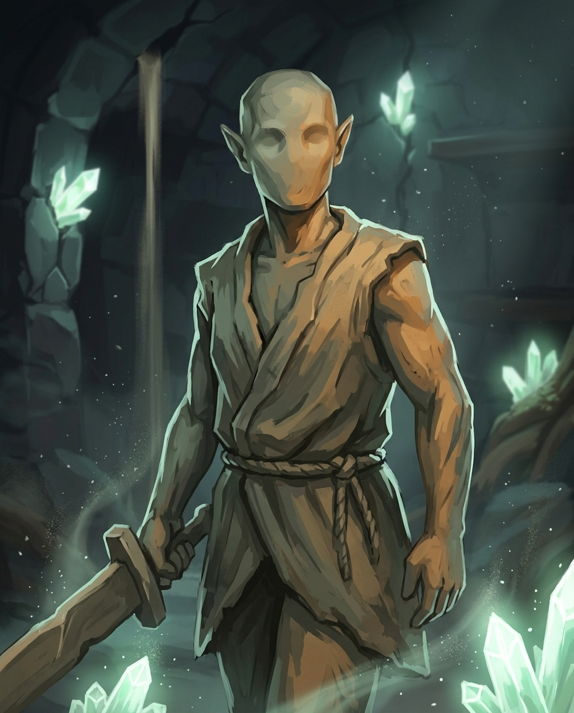
Nano Banana 2928×1152 · 4:5 · 1K · $0.069 · 14.7 сзаменён: полный рост — автор выбрал портретный ракурс, как у героев (ADR-0011) · 2026-09-27 00:52
Промт, как он ушёл в модель
Art style: hand-painted stylized dark-fantasy game art for a mobile RPG. Painterly digital illustration with visible, confident brush strokes and simplified planar shapes, crisp rim light on edges, strong readable silhouettes, deep near-black shadows. Light tells the story: a few strong sources — crystals and cracks that glow from within — throw colored light upward, the light comes from below. Dust motes and grains of sand float in the light. Moderate detail, clean readable forms. No photorealism, no 3D-render look, no anime. Match the brushwork, lighting and color handling of the attached style reference images: the first shows how we paint characters, the second shows the Workshop's clay and its cold white-green crystal light. Do NOT copy their subjects or composition. Format: vertical enemy card portrait, 4:5, shown small on the battle field (about 74 px wide) and large in the bestiary. Three-quarter view, the figure fills most of the frame, head and shoulders in the upper third, clear readable silhouette. This is a NEW ORIGINAL design made from the description only. World rule: every creature of the Workshop of Forms was sculpted of clay by a god and left unfinished — the 'samples' are rough unfinished tries, each named after its missing or unfinished part; the 'servants' are more finished, with even hands, faces, aprons and tools; the Master is the only finished one, smooth and polished. Everything is made precisely and calmly — unfinished, but not ugly and not grotesque. Clay colors: grey-green and warm ochre, visible finger marks and tool strokes on the clay. Figures have elven proportions unless the description says otherwise. Background: the dim abandoned Workshop of Forms deep underground — dark stone, a thin stream of sand falling from a crack above, white-green crystals glowing from within in the cracks; darker and softer than the figure. The whole scene is lit by cold white-green crystal light from below; no red, orange or warm light; the clay is the only warm color. All fourteen creatures of this set share the same painting style, palette and lighting. Subject: 'Faceless Sample', the first creature anyone meets in the Workshop. An elven figure of grey-green clay in a rough sketch of clothing, with a rope instead of a belt, holding a stone blank of a sword that has no crossguard yet. No face at all — only two shallow dents pressed by a thumb where the eyes should be; still it looks straight at the viewer. Made simply but solidly, honest, walks straight at you. No text, no letters, no numbers, no runes that look like letters, no watermark, no signature, no logo, no UI elements, no border or frame around the picture. No gore, no blood, no horror grotesque.
Долгорукий образец — рядовой, ловкость
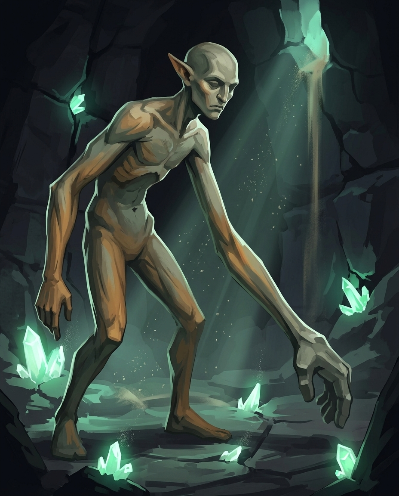
Nano Banana 2928×1152 · 4:5 · 1K · $0.0688 · 9.9 сзаменён: полный рост — автор выбрал портретный ракурс, как у героев (ADR-0011) · 2026-09-27 00:52
Промт, как он ушёл в модель
Art style: hand-painted stylized dark-fantasy game art for a mobile RPG. Painterly digital illustration with visible, confident brush strokes and simplified planar shapes, crisp rim light on edges, strong readable silhouettes, deep near-black shadows. Light tells the story: a few strong sources — crystals and cracks that glow from within — throw colored light upward, the light comes from below. Dust motes and grains of sand float in the light. Moderate detail, clean readable forms. No photorealism, no 3D-render look, no anime. Match the brushwork, lighting and color handling of the attached style reference images: the first shows how we paint characters, the second shows the Workshop's clay and its cold white-green crystal light. Do NOT copy their subjects or composition. Format: vertical enemy card portrait, 4:5, shown small on the battle field (about 74 px wide) and large in the bestiary. Three-quarter view, the figure fills most of the frame, head and shoulders in the upper third, clear readable silhouette. This is a NEW ORIGINAL design made from the description only. World rule: every creature of the Workshop of Forms was sculpted of clay by a god and left unfinished — the 'samples' are rough unfinished tries, each named after its missing or unfinished part; the 'servants' are more finished, with even hands, faces, aprons and tools; the Master is the only finished one, smooth and polished. Everything is made precisely and calmly — unfinished, but not ugly and not grotesque. Clay colors: grey-green and warm ochre, visible finger marks and tool strokes on the clay. Figures have elven proportions unless the description says otherwise. Background: the dim abandoned Workshop of Forms deep underground — dark stone, a thin stream of sand falling from a crack above, white-green crystals glowing from within in the cracks; darker and softer than the figure. The whole scene is lit by cold white-green crystal light from below; no red, orange or warm light; the clay is the only warm color. All fourteen creatures of this set share the same painting style, palette and lighting. Subject: 'Long-armed Sample'. Stooped and thin, with two different arms: one is ordinary, the other stretches almost to the ground and ends in a heavy stone hand, as if the maker began stretching it and could not stop. It keeps its distance and reaches those who stand at the back. No text, no letters, no numbers, no runes that look like letters, no watermark, no signature, no logo, no UI elements, no border or frame around the picture. No gore, no blood, no horror grotesque.
Пустотелый образец — рядовой, маг воздуха
Промт, как он ушёл в модель
Art style: hand-painted stylized dark-fantasy game art for a mobile RPG. Painterly digital illustration with visible, confident brush strokes and simplified planar shapes, crisp rim light on edges, strong readable silhouettes, deep near-black shadows. Light tells the story: a few strong sources — crystals and cracks that glow from within — throw colored light upward, the light comes from below. Dust motes and grains of sand float in the light. Moderate detail, clean readable forms. No photorealism, no 3D-render look, no anime. Match the brushwork, lighting and color handling of the attached style reference images: the first shows how we paint characters, the second shows the Workshop's clay and its cold white-green crystal light. Do NOT copy their subjects or composition. Format: vertical enemy card portrait, 4:5, shown small on the battle field (about 74 px wide) and large in the bestiary. Three-quarter view, the figure fills most of the frame, head and shoulders in the upper third, clear readable silhouette. This is a NEW ORIGINAL design made from the description only. World rule: every creature of the Workshop of Forms was sculpted of clay by a god and left unfinished — the 'samples' are rough unfinished tries, each named after its missing or unfinished part; the 'servants' are more finished, with even hands, faces, aprons and tools; the Master is the only finished one, smooth and polished. Everything is made precisely and calmly — unfinished, but not ugly and not grotesque. Clay colors: grey-green and warm ochre, visible finger marks and tool strokes on the clay. Figures have elven proportions unless the description says otherwise. Background: the dim abandoned Workshop of Forms deep underground — dark stone, a thin stream of sand falling from a crack above, white-green crystals glowing from within in the cracks; darker and softer than the figure. The whole scene is lit by cold white-green crystal light from below; no red, orange or warm light; the clay is the only warm color. All fourteen creatures of this set share the same painting style, palette and lighting. Subject: 'Hollow Sample', a shell. Its chest is open like an empty mould from which the casting was removed, and there is nothing inside but wind. It throws its head back and spreads its thin arms, and a whirl of sand and air bursts from its empty chest and mouth. No text, no letters, no numbers, no runes that look like letters, no watermark, no signature, no logo, no UI elements, no border or frame around the picture. No gore, no blood, no horror grotesque.
Безголовый образец — рядовой, держит удар
Промт, как он ушёл в модель
Art style: hand-painted stylized dark-fantasy game art for a mobile RPG. Painterly digital illustration with visible, confident brush strokes and simplified planar shapes, crisp rim light on edges, strong readable silhouettes, deep near-black shadows. Light tells the story: a few strong sources — crystals and cracks that glow from within — throw colored light upward, the light comes from below. Dust motes and grains of sand float in the light. Moderate detail, clean readable forms. No photorealism, no 3D-render look, no anime. Match the brushwork, lighting and color handling of the attached style reference images: the first shows how we paint characters, the second shows the Workshop's clay and its cold white-green crystal light. Do NOT copy their subjects or composition. Format: vertical enemy card portrait, 4:5, shown small on the battle field (about 74 px wide) and large in the bestiary. Three-quarter view, the figure fills most of the frame, head and shoulders in the upper third, clear readable silhouette. This is a NEW ORIGINAL design made from the description only. World rule: every creature of the Workshop of Forms was sculpted of clay by a god and left unfinished — the 'samples' are rough unfinished tries, each named after its missing or unfinished part; the 'servants' are more finished, with even hands, faces, aprons and tools; the Master is the only finished one, smooth and polished. Everything is made precisely and calmly — unfinished, but not ugly and not grotesque. Clay colors: grey-green and warm ochre, visible finger marks and tool strokes on the clay. Figures have elven proportions unless the description says otherwise. Background: the dim abandoned Workshop of Forms deep underground — dark stone, a thin stream of sand falling from a crack above, white-green crystals glowing from within in the cracks; darker and softer than the figure. The whole scene is lit by cold white-green crystal light from below; no red, orange or warm light; the clay is the only warm color. All fourteen creatures of this set share the same painting style, palette and lighting. Subject: 'Headless Sample'. A four-legged beast the size of a bull with no head: the neck simply ends, flat, as if cut along a ruler. Mighty shoulders, lumps of clay on its back, legs like logs. Calm and immovable, a living wall. No text, no letters, no numbers, no runes that look like letters, no watermark, no signature, no logo, no UI elements, no border or frame around the picture. No gore, no blood, no horror grotesque.
Сырой образец — рядовой, лекарь
Промт, как он ушёл в модель
Art style: hand-painted stylized dark-fantasy game art for a mobile RPG. Painterly digital illustration with visible, confident brush strokes and simplified planar shapes, crisp rim light on edges, strong readable silhouettes, deep near-black shadows. Light tells the story: a few strong sources — crystals and cracks that glow from within — throw colored light upward, the light comes from below. Dust motes and grains of sand float in the light. Moderate detail, clean readable forms. No photorealism, no 3D-render look, no anime. Match the brushwork, lighting and color handling of the attached style reference images: the first shows how we paint characters, the second shows the Workshop's clay and its cold white-green crystal light. Do NOT copy their subjects or composition. Format: vertical enemy card portrait, 4:5, shown small on the battle field (about 74 px wide) and large in the bestiary. Three-quarter view, the figure fills most of the frame, head and shoulders in the upper third, clear readable silhouette. This is a NEW ORIGINAL design made from the description only. World rule: every creature of the Workshop of Forms was sculpted of clay by a god and left unfinished — the 'samples' are rough unfinished tries, each named after its missing or unfinished part; the 'servants' are more finished, with even hands, faces, aprons and tools; the Master is the only finished one, smooth and polished. Everything is made precisely and calmly — unfinished, but not ugly and not grotesque. Clay colors: grey-green and warm ochre, visible finger marks and tool strokes on the clay. Figures have elven proportions unless the description says otherwise. Background: the dim abandoned Workshop of Forms deep underground — dark stone, a thin stream of sand falling from a crack above, white-green crystals glowing from within in the cracks; darker and softer than the figure. The whole scene is lit by cold white-green crystal light from below; no red, orange or warm light; the clay is the only warm color. All fourteen creatures of this set share the same painting style, palette and lighting. Subject: 'Raw Sample'. It was never dried: covered in drips as if half-melted in a sun that never shone there, wearing a clay apron, clay constantly dripping from its palms. It pinches clay off itself to patch the cracks of others. There is something kind about it. No text, no letters, no numbers, no runes that look like letters, no watermark, no signature, no logo, no UI elements, no border or frame around the picture. No gore, no blood, no horror grotesque.
Однорукий образец — редкий, убийца
Промт, как он ушёл в модель
Art style: hand-painted stylized dark-fantasy game art for a mobile RPG. Painterly digital illustration with visible, confident brush strokes and simplified planar shapes, crisp rim light on edges, strong readable silhouettes, deep near-black shadows. Light tells the story: a few strong sources — crystals and cracks that glow from within — throw colored light upward, the light comes from below. Dust motes and grains of sand float in the light. Moderate detail, clean readable forms. No photorealism, no 3D-render look, no anime. Match the brushwork, lighting and color handling of the attached style reference images: the first shows how we paint characters, the second shows the Workshop's clay and its cold white-green crystal light. Do NOT copy their subjects or composition. Format: vertical enemy card portrait, 4:5, shown small on the battle field (about 74 px wide) and large in the bestiary. Three-quarter view, the figure fills most of the frame, head and shoulders in the upper third, clear readable silhouette. This is a NEW ORIGINAL design made from the description only. World rule: every creature of the Workshop of Forms was sculpted of clay by a god and left unfinished — the 'samples' are rough unfinished tries, each named after its missing or unfinished part; the 'servants' are more finished, with even hands, faces, aprons and tools; the Master is the only finished one, smooth and polished. Everything is made precisely and calmly — unfinished, but not ugly and not grotesque. Clay colors: grey-green and warm ochre, visible finger marks and tool strokes on the clay. Figures have elven proportions unless the description says otherwise. Background: the dim abandoned Workshop of Forms deep underground — dark stone, a thin stream of sand falling from a crack above, white-green crystals glowing from within in the cracks; darker and softer than the figure. The whole scene is lit by cold white-green crystal light from below; no red, orange or warm light; the clay is the only warm color. All fourteen creatures of this set share the same painting style, palette and lighting. Subject: 'One-armed Sample'. Lean and fast, on long thin legs. Its only arm ends in a long blade like a splinter chipped from stone; the other shoulder is smoothed away completely, as if it was never meant to be. Made in a hurry, the fastest thing in the Workshop, poised to dart to the back rows. No text, no letters, no numbers, no runes that look like letters, no watermark, no signature, no logo, no UI elements, no border or frame around the picture. No gore, no blood, no horror grotesque.
Подмастерье — элита, сила
Промт, как он ушёл в модель
Art style: hand-painted stylized dark-fantasy game art for a mobile RPG. Painterly digital illustration with visible, confident brush strokes and simplified planar shapes, crisp rim light on edges, strong readable silhouettes, deep near-black shadows. Light tells the story: a few strong sources — crystals and cracks that glow from within — throw colored light upward, the light comes from below. Dust motes and grains of sand float in the light. Moderate detail, clean readable forms. No photorealism, no 3D-render look, no anime. Match the brushwork, lighting and color handling of the attached style reference images: the first shows how we paint characters, the second shows the Workshop's clay and its cold white-green crystal light. Do NOT copy their subjects or composition. Format: vertical enemy card portrait, 4:5, shown small on the battle field (about 74 px wide) and large in the bestiary. Three-quarter view, the figure fills most of the frame, head and shoulders in the upper third, clear readable silhouette. This is a NEW ORIGINAL design made from the description only. World rule: every creature of the Workshop of Forms was sculpted of clay by a god and left unfinished — the 'samples' are rough unfinished tries, each named after its missing or unfinished part; the 'servants' are more finished, with even hands, faces, aprons and tools; the Master is the only finished one, smooth and polished. Everything is made precisely and calmly — unfinished, but not ugly and not grotesque. Clay colors: grey-green and warm ochre, visible finger marks and tool strokes on the clay. Figures have elven proportions unless the description says otherwise. Background: the dim abandoned Workshop of Forms deep underground — dark stone, a thin stream of sand falling from a crack above, white-green crystals glowing from within in the cracks; darker and softer than the figure. The whole scene is lit by cold white-green crystal light from below; no red, orange or warm light; the clay is the only warm color. All fourteen creatures of this set share the same painting style, palette and lighting. Subject: 'Apprentice', a servant of the Workshop who still kneads clay for everyone although there is no one left to knead for. A stocky fellow in an apron over a rough shirt and wide trousers; his arms are covered in clay up to the elbows and twice as thick as they should be, fists like chopping blocks. A simple, almost kind face with two pressed hollows for eyes. No text, no letters, no numbers, no runes that look like letters, no watermark, no signature, no logo, no UI elements, no border or frame around the picture. No gore, no blood, no horror grotesque.
Резчик — элита, ловкость
Промт, как он ушёл в модель
Art style: hand-painted stylized dark-fantasy game art for a mobile RPG. Painterly digital illustration with visible, confident brush strokes and simplified planar shapes, crisp rim light on edges, strong readable silhouettes, deep near-black shadows. Light tells the story: a few strong sources — crystals and cracks that glow from within — throw colored light upward, the light comes from below. Dust motes and grains of sand float in the light. Moderate detail, clean readable forms. No photorealism, no 3D-render look, no anime. Match the brushwork, lighting and color handling of the attached style reference images: the first shows how we paint characters, the second shows the Workshop's clay and its cold white-green crystal light. Do NOT copy their subjects or composition. Format: vertical enemy card portrait, 4:5, shown small on the battle field (about 74 px wide) and large in the bestiary. Three-quarter view, the figure fills most of the frame, head and shoulders in the upper third, clear readable silhouette. This is a NEW ORIGINAL design made from the description only. World rule: every creature of the Workshop of Forms was sculpted of clay by a god and left unfinished — the 'samples' are rough unfinished tries, each named after its missing or unfinished part; the 'servants' are more finished, with even hands, faces, aprons and tools; the Master is the only finished one, smooth and polished. Everything is made precisely and calmly — unfinished, but not ugly and not grotesque. Clay colors: grey-green and warm ochre, visible finger marks and tool strokes on the clay. Figures have elven proportions unless the description says otherwise. Background: the dim abandoned Workshop of Forms deep underground — dark stone, a thin stream of sand falling from a crack above, white-green crystals glowing from within in the cracks; darker and softer than the figure. The whole scene is lit by cold white-green crystal light from below; no red, orange or warm light; the clay is the only warm color. All fourteen creatures of this set share the same painting style, palette and lighting. Subject: 'Carver', a servant of the Workshop who trimmed the excess from every blank. Tall, thin, stooped like everyone who bent over fine work for long. His apron is crossed with straps holding rows of chisels, and instead of a right hand he has a fan of thin blades. No text, no letters, no numbers, no runes that look like letters, no watermark, no signature, no logo, no UI elements, no border or frame around the picture. No gore, no blood, no horror grotesque.
Упор — элита, держит удар
Nano Banana 2928×1152 · 4:5 · 1K · $0.0686 · 12.5 соснова — выбран автором 27.09.2026: Упор, элита, танк — нарисован заново по рецепту партии 2, лицо эльфийское правкой (ADR-0013) · 2026-09-27 03:23
Nano Banana 2928×1152 · 4:5 · 1K · $0.0688 · 9.8 сзаменён: выглядел живым орком, плита сбоку, знак похож на букву · 2026-09-27 00:53
Промт, как он ушёл в модель
Keep the painterly style of the attached picture: the same brush strokes, light, colors and background. Edit the attached enemy portrait. Keep the creature's head, face, clay, clothes, the background, the light and the framing exactly as they are. Change only what is listed below. Change only his face and head: make it clearly elven and more refined — a broad but noble elven face with high cheekbones, a straight narrow nose, a calm steady mouth and no heavy brow ridge; sculpted clay hair pulled back tight into a short tail. Keep the pointed ears, the pressed eyes, the clay, the body, the pose, the slab with the hourglass, the background and the light exactly as they are. He must not look like an orc or an ogre. No text, no letters, no numbers, no watermark, no signature, no logo, no UI elements, no border or frame around the picture.
Мех — элита, маг воздуха
Промт, как он ушёл в модель
Art style: hand-painted stylized dark-fantasy game art for a mobile RPG. Painterly digital illustration with visible, confident brush strokes and simplified planar shapes, crisp rim light on edges, strong readable silhouettes, deep near-black shadows. Light tells the story: a few strong sources — crystals and cracks that glow from within — throw colored light upward, the light comes from below. Dust motes and grains of sand float in the light. Moderate detail, clean readable forms. No photorealism, no 3D-render look, no anime. Match the brushwork, lighting and color handling of the attached style reference images: the first shows how we paint characters, the second shows the Workshop's clay and its cold white-green crystal light. Do NOT copy their subjects or composition. Format: vertical enemy card portrait, 4:5, shown small on the battle field (about 74 px wide) and large in the bestiary. Three-quarter view, the figure fills most of the frame, head and shoulders in the upper third, clear readable silhouette. This is a NEW ORIGINAL design made from the description only. World rule: every creature of the Workshop of Forms was sculpted of clay by a god and left unfinished — the 'samples' are rough unfinished tries, each named after its missing or unfinished part; the 'servants' are more finished, with even hands, faces, aprons and tools; the Master is the only finished one, smooth and polished. Everything is made precisely and calmly — unfinished, but not ugly and not grotesque. Clay colors: grey-green and warm ochre, visible finger marks and tool strokes on the clay. Figures have elven proportions unless the description says otherwise. Background: the dim abandoned Workshop of Forms deep underground — dark stone, a thin stream of sand falling from a crack above, white-green crystals glowing from within in the cracks; darker and softer than the figure. The whole scene is lit by cold white-green crystal light from below; no red, orange or warm light; the clay is the only warm color. All fourteen creatures of this set share the same painting style, palette and lighting. Every creature is made entirely of clay: a matte clay surface with finger marks, seams and tool strokes; no human skin, no realistic flesh; hair is sculpted clay; eyes are pressed hollows or smooth clay without pupils. They must not look like living people, orcs or goblins. Subject: 'Bellows', a servant of the Workshop who once fanned the forges. A thin, sinewy clay body; his whole chest IS a forge bellows — pleated accordion folds of cracked clay between two flat clay boards. Two short nozzles stick out of his shoulders, each trailing a thin stream of dust. He presses the bellows chest with both hands as if about to blow on the whole world; a cloud of dust and sand swirls around him. No text, no letters, no numbers, no runes that look like letters, no watermark, no signature, no logo, no UI elements, no border or frame around the picture. No gore, no blood, no horror grotesque.
Штопарь — элита, лекарь
Промт, как он ушёл в модель
Art style: hand-painted stylized dark-fantasy game art for a mobile RPG. Painterly digital illustration with visible, confident brush strokes and simplified planar shapes, crisp rim light on edges, strong readable silhouettes, deep near-black shadows. Light tells the story: a few strong sources — crystals and cracks that glow from within — throw colored light upward, the light comes from below. Dust motes and grains of sand float in the light. Moderate detail, clean readable forms. No photorealism, no 3D-render look, no anime. Match the brushwork, lighting and color handling of the attached style reference images: the first shows how we paint characters, the second shows the Workshop's clay and its cold white-green crystal light. Do NOT copy their subjects or composition. Format: vertical enemy card portrait, 4:5, shown small on the battle field (about 74 px wide) and large in the bestiary. Three-quarter view, the figure fills most of the frame, head and shoulders in the upper third, clear readable silhouette. This is a NEW ORIGINAL design made from the description only. World rule: every creature of the Workshop of Forms was sculpted of clay by a god and left unfinished — the 'samples' are rough unfinished tries, each named after its missing or unfinished part; the 'servants' are more finished, with even hands, faces, aprons and tools; the Master is the only finished one, smooth and polished. Everything is made precisely and calmly — unfinished, but not ugly and not grotesque. Clay colors: grey-green and warm ochre, visible finger marks and tool strokes on the clay. Figures have elven proportions unless the description says otherwise. Background: the dim abandoned Workshop of Forms deep underground — dark stone, a thin stream of sand falling from a crack above, white-green crystals glowing from within in the cracks; darker and softer than the figure. The whole scene is lit by cold white-green crystal light from below; no red, orange or warm light; the clay is the only warm color. All fourteen creatures of this set share the same painting style, palette and lighting. Subject: 'Darner', a servant of the Workshop who sews up everything that cracked. Long-armed, stooped, in an apron; on one hand long needles instead of fingers. Spools of thread and a small pot of resin on his belt. Forever bending to thread a needle, calmly, even in battle. No text, no letters, no numbers, no runes that look like letters, no watermark, no signature, no logo, no UI elements, no border or frame around the picture. No gore, no blood, no horror grotesque.
Съёмщик — элита, снимает силу
Промт, как он ушёл в модель
Art style: hand-painted stylized dark-fantasy game art for a mobile RPG. Painterly digital illustration with visible, confident brush strokes and simplified planar shapes, crisp rim light on edges, strong readable silhouettes, deep near-black shadows. Light tells the story: a few strong sources — crystals and cracks that glow from within — throw colored light upward, the light comes from below. Dust motes and grains of sand float in the light. Moderate detail, clean readable forms. No photorealism, no 3D-render look, no anime. Match the brushwork, lighting and color handling of the attached style reference images: the first shows how we paint characters, the second shows the Workshop's clay and its cold white-green crystal light. Do NOT copy their subjects or composition. Format: vertical enemy card portrait, 4:5, shown small on the battle field (about 74 px wide) and large in the bestiary. Three-quarter view, the figure fills most of the frame, head and shoulders in the upper third, clear readable silhouette. This is a NEW ORIGINAL design made from the description only. World rule: every creature of the Workshop of Forms was sculpted of clay by a god and left unfinished — the 'samples' are rough unfinished tries, each named after its missing or unfinished part; the 'servants' are more finished, with even hands, faces, aprons and tools; the Master is the only finished one, smooth and polished. Everything is made precisely and calmly — unfinished, but not ugly and not grotesque. Clay colors: grey-green and warm ochre, visible finger marks and tool strokes on the clay. Figures have elven proportions unless the description says otherwise. Background: the dim abandoned Workshop of Forms deep underground — dark stone, a thin stream of sand falling from a crack above, white-green crystals glowing from within in the cracks; darker and softer than the figure. The whole scene is lit by cold white-green crystal light from below; no red, orange or warm light; the clay is the only warm color. All fourteen creatures of this set share the same painting style, palette and lighting. Every creature is made entirely of clay: a matte clay surface with finger marks, seams and tool strokes; no human skin, no realistic flesh; hair is sculpted clay; eyes are pressed hollows or smooth clay without pupils. They must not look like living people, orcs or goblins. Subject: 'Remover', a servant of the Workshop who took moulds from finished work. A calm, tall figure of smooth grey clay in a long clay apron down to the ankles; his own face is a quiet clay face with closed, pressed eyes. In his raised hand he holds an empty mask — a hollow clay face with no eyes, taken off like a mould from a finished piece. Three or four more empty masks hang from his belt on cords. An unsettling calm. No text, no letters, no numbers, no runes that look like letters, no watermark, no signature, no logo, no UI elements, no border or frame around the picture. No gore, no blood, no horror grotesque.
Первый набросок — босс Мастерской
Nano Banana 2928×1152 · 4:5 · 1K · $0.0691 · 12.0 сзаменён: не грозный — автор просил, чтобы босс биома пугал видом · 2026-09-27 00:54
Промт, как он ушёл в модель
Art style: hand-painted stylized dark-fantasy game art for a mobile RPG. Painterly digital illustration with visible, confident brush strokes and simplified planar shapes, crisp rim light on edges, strong readable silhouettes, deep near-black shadows. Light tells the story: a few strong sources — crystals and cracks that glow from within — throw colored light upward, the light comes from below. Dust motes and grains of sand float in the light. Moderate detail, clean readable forms. No photorealism, no 3D-render look, no anime. Match the brushwork, lighting and color handling of the attached style reference images: the first shows how we paint characters, the second shows the Workshop's clay and its cold white-green crystal light. Do NOT copy their subjects or composition. Format: vertical enemy card portrait, 4:5, shown small on the battle field (about 74 px wide) and large in the bestiary. Three-quarter view, the figure fills most of the frame, head and shoulders in the upper third, clear readable silhouette. This is a NEW ORIGINAL design made from the description only. World rule: every creature of the Workshop of Forms was sculpted of clay by a god and left unfinished — the 'samples' are rough unfinished tries, each named after its missing or unfinished part; the 'servants' are more finished, with even hands, faces, aprons and tools; the Master is the only finished one, smooth and polished. Everything is made precisely and calmly — unfinished, but not ugly and not grotesque. Clay colors: grey-green and warm ochre, visible finger marks and tool strokes on the clay. Figures have elven proportions unless the description says otherwise. Background: the dim abandoned Workshop of Forms deep underground — dark stone, a thin stream of sand falling from a crack above, white-green crystals glowing from within in the cracks; darker and softer than the figure. The whole scene is lit by cold white-green crystal light from below; no red, orange or warm light; the clay is the only warm color. All fourteen creatures of this set share the same painting style, palette and lighting. Every creature is made entirely of clay: a matte clay surface with finger marks, seams and tool strokes; no human skin, no realistic flesh; hair is sculpted clay; eyes are pressed hollows or smooth clay without pupils. They must not look like living people, orcs or goblins. Subject: 'The First Sketch', the BOSS of the Workshop of Forms — it must look menacing and overwhelming. A colossal hunched figure three times taller than a man, towering over the viewer from a low camera angle; it fills the whole frame and its head nearly touches the top edge. It is made of two halves that do not fit: the left half a gaunt elf of pale grey clay, the right half a huge beast — a massive shoulder in rough clay fur, a long arm ending in a great clawed paw raised to strike, a heavy beast leg. Instead of a face a smooth blank mask with two dark hollows, lit from below. A small foreign hand is stuck onto its side. Deep cracks run through its clay and thin streams of sand pour out of them. Tiny clay figures and a workbench at its feet show its scale. Not evil — terrifying in size and weight, like a storm about to fall. No text, no letters, no numbers, no runes that look like letters, no watermark, no signature, no logo, no UI elements, no border or frame around the picture. No gore, no blood, no horror grotesque.
Мастер — рунный страж Мастерской
Промт, как он ушёл в модель
Art style: hand-painted stylized dark-fantasy game art for a mobile RPG. Painterly digital illustration with visible, confident brush strokes and simplified planar shapes, crisp rim light on edges, strong readable silhouettes, deep near-black shadows. Light tells the story: a few strong sources — crystals and cracks that glow from within — throw colored light upward, the light comes from below. Dust motes and grains of sand float in the light. Moderate detail, clean readable forms. No photorealism, no 3D-render look, no anime. Match the brushwork, lighting and color handling of the attached style reference images: the first shows how we paint characters, the second shows the Workshop's clay and its cold white-green crystal light. Do NOT copy their subjects or composition. Format: vertical enemy card portrait, 4:5, shown small on the battle field (about 74 px wide) and large in the bestiary. Three-quarter view, the figure fills most of the frame, head and shoulders in the upper third, clear readable silhouette. This is a NEW ORIGINAL design made from the description only. World rule: every creature of the Workshop of Forms was sculpted of clay by a god and left unfinished — the 'samples' are rough unfinished tries, each named after its missing or unfinished part; the 'servants' are more finished, with even hands, faces, aprons and tools; the Master is the only finished one, smooth and polished. Everything is made precisely and calmly — unfinished, but not ugly and not grotesque. Clay colors: grey-green and warm ochre, visible finger marks and tool strokes on the clay. Figures have elven proportions unless the description says otherwise. Background: the dim abandoned Workshop of Forms deep underground — dark stone, a thin stream of sand falling from a crack above, white-green crystals glowing from within in the cracks; darker and softer than the figure. The whole scene is lit by cold white-green crystal light from below; no red, orange or warm light; the clay is the only warm color. All fourteen creatures of this set share the same painting style, palette and lighting. Subject: 'The Master', guardian of the road down. A tall elf of smooth, almost polished clay, long hair, a calm face, eyes closed. A master's apron, forearms wrapped; on his belt hangs a chisel of white-green stone glowing from within. One hand is raised, palm forward: stop. The only finished creature in the whole Workshop — noticeably more refined than the others. No text, no letters, no numbers, no runes that look like letters, no watermark, no signature, no logo, no UI elements, no border or frame around the picture. No gore, no blood, no horror grotesque.
Безликий образец — рядовой, сила
Промт, как он ушёл в модель
Art style: hand-painted stylized dark-fantasy game art for a mobile RPG. Painterly digital illustration with visible, confident brush strokes and simplified planar shapes, crisp rim light on edges, strong readable silhouettes, deep near-black shadows. Light tells the story: a few strong sources — crystals and cracks that glow from within — throw colored light upward, the light comes from below. Dust motes and grains of sand float in the light. Moderate detail, clean readable forms. No photorealism, no 3D-render look, no anime. Match the brushwork, lighting and color handling of the attached style reference images: the first shows how we paint and frame character portraits, the second shows the Workshop's clay and its cold white-green crystal light. Do NOT copy their subjects or composition. Format: vertical enemy card portrait, 4:5 — a PORTRAIT crop exactly like our heroes' card portraits (see the first reference image): bust to waist-up, three-quarter view, the face and upper body fill most of the frame, head in the upper third, readable at about 74 px wide. The creature's defining feature — the thing it is named after — must stay inside the frame even in this close crop. This is a NEW ORIGINAL design made from the description only. World rule: every creature of the Workshop of Forms was sculpted of clay by a god and left unfinished — the 'samples' are rough unfinished tries, the 'servants' are more finished, with even hands, faces, aprons and tools, the Master is the only finished one. Everything is made precisely and calmly — unfinished, but not ugly and not grotesque. Every creature is made entirely of clay: a matte clay surface with finger marks, seams and tool strokes; no human skin, no realistic flesh; hair is sculpted clay; eyes are pressed hollows or smooth clay without pupils. They must not look like living people, orcs or goblins. Clay colors: grey-green and warm ochre. Background: the dim abandoned Workshop of Forms — dark stone, a thin stream of sand falling from above, white-green crystals glowing from within in the cracks; darker and softer than the figure. Lit by cold white-green crystal light from below; no red, orange or warm light; the clay is the only warm color. All fourteen portraits share the same framing, painting style, palette and lighting. Subject: 'Faceless Sample', the first creature anyone meets in the Workshop. An elven figure of grey-green clay in a rough sketch of clothing, a rope instead of a belt, holding a stone blank of a sword without a crossguard upright in front of its chest. The faceless head is the focus: no face at all — only two shallow dents pressed by a thumb where the eyes should be; still it looks straight at the viewer. Simple, solid, honest. No text, no letters, no numbers, no runes that look like letters, no watermark, no signature, no logo, no UI elements, no border or frame around the picture. No gore, no blood, no horror grotesque.
Долгорукий образец — рядовой, ловкость
Промт, как он ушёл в модель
Art style: hand-painted stylized dark-fantasy game art for a mobile RPG. Painterly digital illustration with visible, confident brush strokes and simplified planar shapes, crisp rim light on edges, strong readable silhouettes, deep near-black shadows. Light tells the story: a few strong sources — crystals and cracks that glow from within — throw colored light upward, the light comes from below. Dust motes and grains of sand float in the light. Moderate detail, clean readable forms. No photorealism, no 3D-render look, no anime. Match the brushwork, lighting and color handling of the attached style reference images: the first shows how we paint and frame character portraits, the second shows the Workshop's clay and its cold white-green crystal light. Do NOT copy their subjects or composition. Format: vertical enemy card portrait, 4:5 — a PORTRAIT crop exactly like our heroes' card portraits (see the first reference image): bust to waist-up, three-quarter view, the face and upper body fill most of the frame, head in the upper third, readable at about 74 px wide. The creature's defining feature — the thing it is named after — must stay inside the frame even in this close crop. This is a NEW ORIGINAL design made from the description only. World rule: every creature of the Workshop of Forms was sculpted of clay by a god and left unfinished — the 'samples' are rough unfinished tries, the 'servants' are more finished, with even hands, faces, aprons and tools, the Master is the only finished one. Everything is made precisely and calmly — unfinished, but not ugly and not grotesque. Every creature is made entirely of clay: a matte clay surface with finger marks, seams and tool strokes; no human skin, no realistic flesh; hair is sculpted clay; eyes are pressed hollows or smooth clay without pupils. They must not look like living people, orcs or goblins. Clay colors: grey-green and warm ochre. Background: the dim abandoned Workshop of Forms — dark stone, a thin stream of sand falling from above, white-green crystals glowing from within in the cracks; darker and softer than the figure. Lit by cold white-green crystal light from below; no red, orange or warm light; the clay is the only warm color. All fourteen portraits share the same framing, painting style, palette and lighting. Subject: 'Long-armed Sample'. Stooped and thin, head lowered, watching. One arm is ordinary; the other is far longer and reaches toward the viewer, its heavy stone hand huge in the foreground — as if the maker began stretching it and could not stop. No text, no letters, no numbers, no runes that look like letters, no watermark, no signature, no logo, no UI elements, no border or frame around the picture. No gore, no blood, no horror grotesque.
Пустотелый образец — рядовой, маг воздуха
Промт, как он ушёл в модель
Art style: hand-painted stylized dark-fantasy game art for a mobile RPG. Painterly digital illustration with visible, confident brush strokes and simplified planar shapes, crisp rim light on edges, strong readable silhouettes, deep near-black shadows. Light tells the story: a few strong sources — crystals and cracks that glow from within — throw colored light upward, the light comes from below. Dust motes and grains of sand float in the light. Moderate detail, clean readable forms. No photorealism, no 3D-render look, no anime. Match the brushwork, lighting and color handling of the attached style reference images: the first shows how we paint and frame character portraits, the second shows the Workshop's clay and its cold white-green crystal light. Do NOT copy their subjects or composition. Format: vertical enemy card portrait, 4:5 — a PORTRAIT crop exactly like our heroes' card portraits (see the first reference image): bust to waist-up, three-quarter view, the face and upper body fill most of the frame, head in the upper third, readable at about 74 px wide. The creature's defining feature — the thing it is named after — must stay inside the frame even in this close crop. This is a NEW ORIGINAL design made from the description only. World rule: every creature of the Workshop of Forms was sculpted of clay by a god and left unfinished — the 'samples' are rough unfinished tries, the 'servants' are more finished, with even hands, faces, aprons and tools, the Master is the only finished one. Everything is made precisely and calmly — unfinished, but not ugly and not grotesque. Every creature is made entirely of clay: a matte clay surface with finger marks, seams and tool strokes; no human skin, no realistic flesh; hair is sculpted clay; eyes are pressed hollows or smooth clay without pupils. They must not look like living people, orcs or goblins. Clay colors: grey-green and warm ochre. Background: the dim abandoned Workshop of Forms — dark stone, a thin stream of sand falling from above, white-green crystals glowing from within in the cracks; darker and softer than the figure. Lit by cold white-green crystal light from below; no red, orange or warm light; the clay is the only warm color. All fourteen portraits share the same framing, painting style, palette and lighting. Subject: 'Hollow Sample', a shell. Its chest is open like an empty mould from which the casting was removed; nothing inside but wind. Head thrown back, thin arms spread, a whirl of sand and air bursting from its empty chest and mouth. No text, no letters, no numbers, no runes that look like letters, no watermark, no signature, no logo, no UI elements, no border or frame around the picture. No gore, no blood, no horror grotesque.
Безголовый образец — рядовой, держит удар
Промт, как он ушёл в модель
Art style: hand-painted stylized dark-fantasy game art for a mobile RPG. Painterly digital illustration with visible, confident brush strokes and simplified planar shapes, crisp rim light on edges, strong readable silhouettes, deep near-black shadows. Light tells the story: a few strong sources — crystals and cracks that glow from within — throw colored light upward, the light comes from below. Dust motes and grains of sand float in the light. Moderate detail, clean readable forms. No photorealism, no 3D-render look, no anime. Match the brushwork, lighting and color handling of the attached style reference images: the first shows how we paint and frame character portraits, the second shows the Workshop's clay and its cold white-green crystal light. Do NOT copy their subjects or composition. Format: vertical enemy card portrait, 4:5 — a PORTRAIT crop exactly like our heroes' card portraits (see the first reference image): bust to waist-up, three-quarter view, the face and upper body fill most of the frame, head in the upper third, readable at about 74 px wide. The creature's defining feature — the thing it is named after — must stay inside the frame even in this close crop. This is a NEW ORIGINAL design made from the description only. World rule: every creature of the Workshop of Forms was sculpted of clay by a god and left unfinished — the 'samples' are rough unfinished tries, the 'servants' are more finished, with even hands, faces, aprons and tools, the Master is the only finished one. Everything is made precisely and calmly — unfinished, but not ugly and not grotesque. Every creature is made entirely of clay: a matte clay surface with finger marks, seams and tool strokes; no human skin, no realistic flesh; hair is sculpted clay; eyes are pressed hollows or smooth clay without pupils. They must not look like living people, orcs or goblins. Clay colors: grey-green and warm ochre. Background: the dim abandoned Workshop of Forms — dark stone, a thin stream of sand falling from above, white-green crystals glowing from within in the cracks; darker and softer than the figure. Lit by cold white-green crystal light from below; no red, orange or warm light; the clay is the only warm color. All fourteen portraits share the same framing, painting style, palette and lighting. Subject: 'Headless Sample', a four-legged BEAST the size of a bull — not a humanoid, no human torso, no arms. Portrait of its front half at shoulder level, seen from the front three-quarter view: massive bull-like shoulders and forelegs like logs, lumps of clay on its back; where the head should be, the neck simply ends in a flat, smooth cut as if along a ruler. Calm and immovable, a living wall of clay. No text, no letters, no numbers, no runes that look like letters, no watermark, no signature, no logo, no UI elements, no border or frame around the picture. No gore, no blood, no horror grotesque.
Сырой образец — рядовой, лекарь
Промт, как он ушёл в модель
Art style: hand-painted stylized dark-fantasy game art for a mobile RPG. Painterly digital illustration with visible, confident brush strokes and simplified planar shapes, crisp rim light on edges, strong readable silhouettes, deep near-black shadows. Light tells the story: a few strong sources — crystals and cracks that glow from within — throw colored light upward, the light comes from below. Dust motes and grains of sand float in the light. Moderate detail, clean readable forms. No photorealism, no 3D-render look, no anime. Match the brushwork, lighting and color handling of the attached style reference images: the first shows how we paint and frame character portraits, the second shows the Workshop's clay and its cold white-green crystal light. Do NOT copy their subjects or composition. Format: vertical enemy card portrait, 4:5 — a PORTRAIT crop exactly like our heroes' card portraits (see the first reference image): bust to waist-up, three-quarter view, the face and upper body fill most of the frame, head in the upper third, readable at about 74 px wide. The creature's defining feature — the thing it is named after — must stay inside the frame even in this close crop. This is a NEW ORIGINAL design made from the description only. World rule: every creature of the Workshop of Forms was sculpted of clay by a god and left unfinished — the 'samples' are rough unfinished tries, the 'servants' are more finished, with even hands, faces, aprons and tools, the Master is the only finished one. Everything is made precisely and calmly — unfinished, but not ugly and not grotesque. Every creature is made entirely of clay: a matte clay surface with finger marks, seams and tool strokes; no human skin, no realistic flesh; hair is sculpted clay; eyes are pressed hollows or smooth clay without pupils. They must not look like living people, orcs or goblins. Clay colors: grey-green and warm ochre. Background: the dim abandoned Workshop of Forms — dark stone, a thin stream of sand falling from above, white-green crystals glowing from within in the cracks; darker and softer than the figure. Lit by cold white-green crystal light from below; no red, orange or warm light; the clay is the only warm color. All fourteen portraits share the same framing, painting style, palette and lighting. Subject: 'Raw Sample'. It was never dried: covered in drips as if half-melted, wearing a clay apron, clay dripping from its palms; it pinches clay off its own shoulder to patch a crack. A kind, patient face. No text, no letters, no numbers, no runes that look like letters, no watermark, no signature, no logo, no UI elements, no border or frame around the picture. No gore, no blood, no horror grotesque.
Однорукий образец — редкий, убийца
Промт, как он ушёл в модель
Art style: hand-painted stylized dark-fantasy game art for a mobile RPG. Painterly digital illustration with visible, confident brush strokes and simplified planar shapes, crisp rim light on edges, strong readable silhouettes, deep near-black shadows. Light tells the story: a few strong sources — crystals and cracks that glow from within — throw colored light upward, the light comes from below. Dust motes and grains of sand float in the light. Moderate detail, clean readable forms. No photorealism, no 3D-render look, no anime. Match the brushwork, lighting and color handling of the attached style reference images: the first shows how we paint and frame character portraits, the second shows the Workshop's clay and its cold white-green crystal light. Do NOT copy their subjects or composition. Format: vertical enemy card portrait, 4:5 — a PORTRAIT crop exactly like our heroes' card portraits (see the first reference image): bust to waist-up, three-quarter view, the face and upper body fill most of the frame, head in the upper third, readable at about 74 px wide. The creature's defining feature — the thing it is named after — must stay inside the frame even in this close crop. This is a NEW ORIGINAL design made from the description only. World rule: every creature of the Workshop of Forms was sculpted of clay by a god and left unfinished — the 'samples' are rough unfinished tries, the 'servants' are more finished, with even hands, faces, aprons and tools, the Master is the only finished one. Everything is made precisely and calmly — unfinished, but not ugly and not grotesque. Every creature is made entirely of clay: a matte clay surface with finger marks, seams and tool strokes; no human skin, no realistic flesh; hair is sculpted clay; eyes are pressed hollows or smooth clay without pupils. They must not look like living people, orcs or goblins. Clay colors: grey-green and warm ochre. Background: the dim abandoned Workshop of Forms — dark stone, a thin stream of sand falling from above, white-green crystals glowing from within in the cracks; darker and softer than the figure. Lit by cold white-green crystal light from below; no red, orange or warm light; the clay is the only warm color. All fourteen portraits share the same framing, painting style, palette and lighting. Subject: 'One-armed Sample'. Lean and tense, about to dart to the back rows. Its only arm ends in a long blade like a splinter chipped from stone, raised close beside its face; the other shoulder is smoothed away completely, flat, as if it was never meant to be. No text, no letters, no numbers, no runes that look like letters, no watermark, no signature, no logo, no UI elements, no border or frame around the picture. No gore, no blood, no horror grotesque.
Подмастерье — элита, сила
Промт, как он ушёл в модель
Art style: hand-painted stylized dark-fantasy game art for a mobile RPG. Painterly digital illustration with visible, confident brush strokes and simplified planar shapes, crisp rim light on edges, strong readable silhouettes, deep near-black shadows. Light tells the story: a few strong sources — crystals and cracks that glow from within — throw colored light upward, the light comes from below. Dust motes and grains of sand float in the light. Moderate detail, clean readable forms. No photorealism, no 3D-render look, no anime. Match the brushwork, lighting and color handling of the attached style reference images: the first shows how we paint and frame character portraits, the second shows the Workshop's clay and its cold white-green crystal light. Do NOT copy their subjects or composition. Format: vertical enemy card portrait, 4:5 — a PORTRAIT crop exactly like our heroes' card portraits (see the first reference image): bust to waist-up, three-quarter view, the face and upper body fill most of the frame, head in the upper third, readable at about 74 px wide. The creature's defining feature — the thing it is named after — must stay inside the frame even in this close crop. This is a NEW ORIGINAL design made from the description only. World rule: every creature of the Workshop of Forms was sculpted of clay by a god and left unfinished — the 'samples' are rough unfinished tries, the 'servants' are more finished, with even hands, faces, aprons and tools, the Master is the only finished one. Everything is made precisely and calmly — unfinished, but not ugly and not grotesque. Every creature is made entirely of clay: a matte clay surface with finger marks, seams and tool strokes; no human skin, no realistic flesh; hair is sculpted clay; eyes are pressed hollows or smooth clay without pupils. They must not look like living people, orcs or goblins. Clay colors: grey-green and warm ochre. Background: the dim abandoned Workshop of Forms — dark stone, a thin stream of sand falling from above, white-green crystals glowing from within in the cracks; darker and softer than the figure. Lit by cold white-green crystal light from below; no red, orange or warm light; the clay is the only warm color. All fourteen portraits share the same framing, painting style, palette and lighting. Subject: 'Apprentice', a servant who still kneads clay for everyone although there is no one left to knead for. Stocky; apron over a rough shirt; his clay-covered forearms are twice as thick as they should be, kneading a lump of clay in front of his chest; fists like chopping blocks. A simple, almost kind face; his eyes are two pressed hollows with no eyeballs. No text, no letters, no numbers, no runes that look like letters, no watermark, no signature, no logo, no UI elements, no border or frame around the picture. No gore, no blood, no horror grotesque.
Резчик — элита, ловкость
Промт, как он ушёл в модель
Art style: hand-painted stylized dark-fantasy game art for a mobile RPG. Painterly digital illustration with visible, confident brush strokes and simplified planar shapes, crisp rim light on edges, strong readable silhouettes, deep near-black shadows. Light tells the story: a few strong sources — crystals and cracks that glow from within — throw colored light upward, the light comes from below. Dust motes and grains of sand float in the light. Moderate detail, clean readable forms. No photorealism, no 3D-render look, no anime. Match the brushwork, lighting and color handling of the attached style reference images: the first shows how we paint and frame character portraits, the second shows the Workshop's clay and its cold white-green crystal light. Do NOT copy their subjects or composition. Format: vertical enemy card portrait, 4:5 — a PORTRAIT crop exactly like our heroes' card portraits (see the first reference image): bust to waist-up, three-quarter view, the face and upper body fill most of the frame, head in the upper third, readable at about 74 px wide. The creature's defining feature — the thing it is named after — must stay inside the frame even in this close crop. This is a NEW ORIGINAL design made from the description only. World rule: every creature of the Workshop of Forms was sculpted of clay by a god and left unfinished — the 'samples' are rough unfinished tries, the 'servants' are more finished, with even hands, faces, aprons and tools, the Master is the only finished one. Everything is made precisely and calmly — unfinished, but not ugly and not grotesque. Every creature is made entirely of clay: a matte clay surface with finger marks, seams and tool strokes; no human skin, no realistic flesh; hair is sculpted clay; eyes are pressed hollows or smooth clay without pupils. They must not look like living people, orcs or goblins. Clay colors: grey-green and warm ochre. Background: the dim abandoned Workshop of Forms — dark stone, a thin stream of sand falling from above, white-green crystals glowing from within in the cracks; darker and softer than the figure. Lit by cold white-green crystal light from below; no red, orange or warm light; the clay is the only warm color. All fourteen portraits share the same framing, painting style, palette and lighting. Subject: 'Carver', a servant who trimmed the excess from every blank. Tall, thin, stooped as if still bent over fine work; straps across the apron hold rows of chisels; instead of a right hand he has a fan of thin blades, raised in front of him. No text, no letters, no numbers, no runes that look like letters, no watermark, no signature, no logo, no UI elements, no border or frame around the picture. No gore, no blood, no horror grotesque.
Упор — элита, держит удар
Промт, как он ушёл в модель
Art style: hand-painted stylized dark-fantasy game art for a mobile RPG. Painterly digital illustration with visible, confident brush strokes and simplified planar shapes, crisp rim light on edges, strong readable silhouettes, deep near-black shadows. Light tells the story: a few strong sources — crystals and cracks that glow from within — throw colored light upward, the light comes from below. Dust motes and grains of sand float in the light. Moderate detail, clean readable forms. No photorealism, no 3D-render look, no anime. Match the brushwork, lighting and color handling of the attached style reference images: the first shows how we paint and frame character portraits, the second shows the Workshop's clay and its cold white-green crystal light. Do NOT copy their subjects or composition. Format: vertical enemy card portrait, 4:5 — a PORTRAIT crop exactly like our heroes' card portraits (see the first reference image): bust to waist-up, three-quarter view, the face and upper body fill most of the frame, head in the upper third, readable at about 74 px wide. The creature's defining feature — the thing it is named after — must stay inside the frame even in this close crop. This is a NEW ORIGINAL design made from the description only. World rule: every creature of the Workshop of Forms was sculpted of clay by a god and left unfinished — the 'samples' are rough unfinished tries, the 'servants' are more finished, with even hands, faces, aprons and tools, the Master is the only finished one. Everything is made precisely and calmly — unfinished, but not ugly and not grotesque. Every creature is made entirely of clay: a matte clay surface with finger marks, seams and tool strokes; no human skin, no realistic flesh; hair is sculpted clay; eyes are pressed hollows or smooth clay without pupils. They must not look like living people, orcs or goblins. Clay colors: grey-green and warm ochre. Background: the dim abandoned Workshop of Forms — dark stone, a thin stream of sand falling from above, white-green crystals glowing from within in the cracks; darker and softer than the figure. Lit by cold white-green crystal light from below; no red, orange or warm light; the clay is the only warm color. All fourteen portraits share the same framing, painting style, palette and lighting. Subject: 'Prop', a servant that held work in place while the clay set. Broad and squat; the top of a thick stone slab held in front of him like a tower shield fills the lower half of the frame, a simple carved hourglass outline visible on it (not letters, not a rune); above it his calm heavy clay head and the clay fingers gripping the slab's edges. No text, no letters, no numbers, no runes that look like letters, no watermark, no signature, no logo, no UI elements, no border or frame around the picture. No gore, no blood, no horror grotesque.
Мех — элита, маг воздуха
Промт, как он ушёл в модель
Art style: hand-painted stylized dark-fantasy game art for a mobile RPG. Painterly digital illustration with visible, confident brush strokes and simplified planar shapes, crisp rim light on edges, strong readable silhouettes, deep near-black shadows. Light tells the story: a few strong sources — crystals and cracks that glow from within — throw colored light upward, the light comes from below. Dust motes and grains of sand float in the light. Moderate detail, clean readable forms. No photorealism, no 3D-render look, no anime. Match the brushwork, lighting and color handling of the attached style reference images: the first shows how we paint and frame character portraits, the second shows the Workshop's clay and its cold white-green crystal light. Do NOT copy their subjects or composition. Format: vertical enemy card portrait, 4:5 — a PORTRAIT crop exactly like our heroes' card portraits (see the first reference image): bust to waist-up, three-quarter view, the face and upper body fill most of the frame, head in the upper third, readable at about 74 px wide. The creature's defining feature — the thing it is named after — must stay inside the frame even in this close crop. This is a NEW ORIGINAL design made from the description only. World rule: every creature of the Workshop of Forms was sculpted of clay by a god and left unfinished — the 'samples' are rough unfinished tries, the 'servants' are more finished, with even hands, faces, aprons and tools, the Master is the only finished one. Everything is made precisely and calmly — unfinished, but not ugly and not grotesque. Every creature is made entirely of clay: a matte clay surface with finger marks, seams and tool strokes; no human skin, no realistic flesh; hair is sculpted clay; eyes are pressed hollows or smooth clay without pupils. They must not look like living people, orcs or goblins. Clay colors: grey-green and warm ochre. Background: the dim abandoned Workshop of Forms — dark stone, a thin stream of sand falling from above, white-green crystals glowing from within in the cracks; darker and softer than the figure. Lit by cold white-green crystal light from below; no red, orange or warm light; the clay is the only warm color. All fourteen portraits share the same framing, painting style, palette and lighting. Subject: 'Bellows', a servant who once fanned the forges. Thin and sinewy; his chest IS a forge bellows — pleated accordion folds of cracked clay built into his own torso, not an instrument held in his hands. Short nozzles on his shoulders trail thin streams of dust; his hands press the folds of his own chest as if about to blow on the whole world. No text, no letters, no numbers, no runes that look like letters, no watermark, no signature, no logo, no UI elements, no border or frame around the picture. No gore, no blood, no horror grotesque.
Штопарь — элита, лекарь
Промт, как он ушёл в модель
Art style: hand-painted stylized dark-fantasy game art for a mobile RPG. Painterly digital illustration with visible, confident brush strokes and simplified planar shapes, crisp rim light on edges, strong readable silhouettes, deep near-black shadows. Light tells the story: a few strong sources — crystals and cracks that glow from within — throw colored light upward, the light comes from below. Dust motes and grains of sand float in the light. Moderate detail, clean readable forms. No photorealism, no 3D-render look, no anime. Match the brushwork, lighting and color handling of the attached style reference images: the first shows how we paint and frame character portraits, the second shows the Workshop's clay and its cold white-green crystal light. Do NOT copy their subjects or composition. Format: vertical enemy card portrait, 4:5 — a PORTRAIT crop exactly like our heroes' card portraits (see the first reference image): bust to waist-up, three-quarter view, the face and upper body fill most of the frame, head in the upper third, readable at about 74 px wide. The creature's defining feature — the thing it is named after — must stay inside the frame even in this close crop. This is a NEW ORIGINAL design made from the description only. World rule: every creature of the Workshop of Forms was sculpted of clay by a god and left unfinished — the 'samples' are rough unfinished tries, the 'servants' are more finished, with even hands, faces, aprons and tools, the Master is the only finished one. Everything is made precisely and calmly — unfinished, but not ugly and not grotesque. Every creature is made entirely of clay: a matte clay surface with finger marks, seams and tool strokes; no human skin, no realistic flesh; hair is sculpted clay; eyes are pressed hollows or smooth clay without pupils. They must not look like living people, orcs or goblins. Clay colors: grey-green and warm ochre. Background: the dim abandoned Workshop of Forms — dark stone, a thin stream of sand falling from above, white-green crystals glowing from within in the cracks; darker and softer than the figure. Lit by cold white-green crystal light from below; no red, orange or warm light; the clay is the only warm color. All fourteen portraits share the same framing, painting style, palette and lighting. Subject: 'Darner', a servant who sews up everything that cracked. Long-armed and stooped, bending to thread a needle even now; on one hand long needles instead of fingers; spools of thread on a strap across his chest and a small pot of resin. No text, no letters, no numbers, no runes that look like letters, no watermark, no signature, no logo, no UI elements, no border or frame around the picture. No gore, no blood, no horror grotesque.
Съёмщик — элита, снимает силу
Промт, как он ушёл в модель
Art style: hand-painted stylized dark-fantasy game art for a mobile RPG. Painterly digital illustration with visible, confident brush strokes and simplified planar shapes, crisp rim light on edges, strong readable silhouettes, deep near-black shadows. Light tells the story: a few strong sources — crystals and cracks that glow from within — throw colored light upward, the light comes from below. Dust motes and grains of sand float in the light. Moderate detail, clean readable forms. No photorealism, no 3D-render look, no anime. Match the brushwork, lighting and color handling of the attached style reference images: the first shows how we paint and frame character portraits, the second shows the Workshop's clay and its cold white-green crystal light. Do NOT copy their subjects or composition. Format: vertical enemy card portrait, 4:5 — a PORTRAIT crop exactly like our heroes' card portraits (see the first reference image): bust to waist-up, three-quarter view, the face and upper body fill most of the frame, head in the upper third, readable at about 74 px wide. The creature's defining feature — the thing it is named after — must stay inside the frame even in this close crop. This is a NEW ORIGINAL design made from the description only. World rule: every creature of the Workshop of Forms was sculpted of clay by a god and left unfinished — the 'samples' are rough unfinished tries, the 'servants' are more finished, with even hands, faces, aprons and tools, the Master is the only finished one. Everything is made precisely and calmly — unfinished, but not ugly and not grotesque. Every creature is made entirely of clay: a matte clay surface with finger marks, seams and tool strokes; no human skin, no realistic flesh; hair is sculpted clay; eyes are pressed hollows or smooth clay without pupils. They must not look like living people, orcs or goblins. Clay colors: grey-green and warm ochre. Background: the dim abandoned Workshop of Forms — dark stone, a thin stream of sand falling from above, white-green crystals glowing from within in the cracks; darker and softer than the figure. Lit by cold white-green crystal light from below; no red, orange or warm light; the clay is the only warm color. All fourteen portraits share the same framing, painting style, palette and lighting. Subject: 'Remover', a servant who took moulds from finished work. A calm figure of smooth grey clay in a long apron; his own quiet face has closed pressed eyes. His raised hand holds an empty eyeless clay mask beside his face; more blank masks hang on cords across his chest. An unsettling calm. No text, no letters, no numbers, no runes that look like letters, no watermark, no signature, no logo, no UI elements, no border or frame around the picture. No gore, no blood, no horror grotesque.
Первый набросок — босс Мастерской
Промт, как он ушёл в модель
Art style: hand-painted stylized dark-fantasy game art for a mobile RPG. Painterly digital illustration with visible, confident brush strokes and simplified planar shapes, crisp rim light on edges, strong readable silhouettes, deep near-black shadows. Light tells the story: a few strong sources — crystals and cracks that glow from within — throw colored light upward, the light comes from below. Dust motes and grains of sand float in the light. Moderate detail, clean readable forms. No photorealism, no 3D-render look, no anime. Match the brushwork, lighting and color handling of the attached style reference images: the first shows how we paint and frame character portraits, the second shows the Workshop's clay and its cold white-green crystal light. Do NOT copy their subjects or composition. Format: vertical enemy card portrait, 4:5 — a PORTRAIT crop exactly like our heroes' card portraits (see the first reference image): bust to waist-up, three-quarter view, the face and upper body fill most of the frame, head in the upper third, readable at about 74 px wide. The creature's defining feature — the thing it is named after — must stay inside the frame even in this close crop. This is a NEW ORIGINAL design made from the description only. World rule: every creature of the Workshop of Forms was sculpted of clay by a god and left unfinished — the 'samples' are rough unfinished tries, the 'servants' are more finished, with even hands, faces, aprons and tools, the Master is the only finished one. Everything is made precisely and calmly — unfinished, but not ugly and not grotesque. Every creature is made entirely of clay: a matte clay surface with finger marks, seams and tool strokes; no human skin, no realistic flesh; hair is sculpted clay; eyes are pressed hollows or smooth clay without pupils. They must not look like living people, orcs or goblins. Clay colors: grey-green and warm ochre. Background: the dim abandoned Workshop of Forms — dark stone, a thin stream of sand falling from above, white-green crystals glowing from within in the cracks; darker and softer than the figure. Lit by cold white-green crystal light from below; no red, orange or warm light; the clay is the only warm color. All fourteen portraits share the same framing, painting style, palette and lighting. Subject: 'The First Sketch', the BOSS of the Workshop — menacing even in a portrait. The colossal figure looms over the viewer from a low angle; its smooth blank mask with two dark hollows, lit from below, dominates the upper frame. The left side is a gaunt elven shoulder of pale clay; the right side a massive beast shoulder in rough clay fur, with a great clawed paw raised beside the mask. A small foreign hand is stuck onto its side. Deep cracks with thin streams of sand pouring out. It feels enormous even in this close crop. Not evil — terrifying in size and weight. No text, no letters, no numbers, no runes that look like letters, no watermark, no signature, no logo, no UI elements, no border or frame around the picture. No gore, no blood, no horror grotesque.
Мастер — рунный страж Мастерской
Промт, как он ушёл в модель
Art style: hand-painted stylized dark-fantasy game art for a mobile RPG. Painterly digital illustration with visible, confident brush strokes and simplified planar shapes, crisp rim light on edges, strong readable silhouettes, deep near-black shadows. Light tells the story: a few strong sources — crystals and cracks that glow from within — throw colored light upward, the light comes from below. Dust motes and grains of sand float in the light. Moderate detail, clean readable forms. No photorealism, no 3D-render look, no anime. Match the brushwork, lighting and color handling of the attached style reference images: the first shows how we paint and frame character portraits, the second shows the Workshop's clay and its cold white-green crystal light. Do NOT copy their subjects or composition. Format: vertical enemy card portrait, 4:5 — a PORTRAIT crop exactly like our heroes' card portraits (see the first reference image): bust to waist-up, three-quarter view, the face and upper body fill most of the frame, head in the upper third, readable at about 74 px wide. The creature's defining feature — the thing it is named after — must stay inside the frame even in this close crop. This is a NEW ORIGINAL design made from the description only. World rule: every creature of the Workshop of Forms was sculpted of clay by a god and left unfinished — the 'samples' are rough unfinished tries, the 'servants' are more finished, with even hands, faces, aprons and tools, the Master is the only finished one. Everything is made precisely and calmly — unfinished, but not ugly and not grotesque. Every creature is made entirely of clay: a matte clay surface with finger marks, seams and tool strokes; no human skin, no realistic flesh; hair is sculpted clay; eyes are pressed hollows or smooth clay without pupils. They must not look like living people, orcs or goblins. Clay colors: grey-green and warm ochre. Background: the dim abandoned Workshop of Forms — dark stone, a thin stream of sand falling from above, white-green crystals glowing from within in the cracks; darker and softer than the figure. Lit by cold white-green crystal light from below; no red, orange or warm light; the clay is the only warm color. All fourteen portraits share the same framing, painting style, palette and lighting. Subject: 'The Master', guardian of the road down. A tall elf of smooth, almost polished clay, long sculpted hair, a calm face with the eyes CLOSED. One hand raised palm forward toward the viewer: stop. A chisel of white-green stone glowing from within hangs at his belt, visible at the lower edge. The only finished creature in the Workshop — noticeably more refined than the others. No text, no letters, no numbers, no runes that look like letters, no watermark, no signature, no logo, no UI elements, no border or frame around the picture. No gore, no blood, no horror grotesque.
Долгорукий образец — рядовой, ловкость
Промт, как он ушёл в модель
Painted dark-fantasy game art by the same hand as the attached reference portrait. Enemy card portrait. Copy the attached reference portrait exactly in framing, crop, camera distance, painting style, lighting and palette: waist-up, NO legs; the head, shoulders, both arms and the torso fill the frame; the creature holds or shows its signature trait in front of its body. Same dark workshop background with cracks and a few glowing crystals, same dust in the light. The creature is made of clay like the reference. Only the creature changes. The creature: the Long-armed Sample. A stooped, thin clay figure with an elven head, watching from a distance. One arm is ordinary; the other is unnaturally long — its forearm stretches on and on and ends in a heavy stone hand, much bigger than the other hand, held in front of the body. No legs, no full body. No text, no letters, no numbers, no watermark, no signature, no logo, no UI elements, no border or frame around the picture.
Пересохший образец — рядовой, дебаффер (предложение)
Промт, как он ушёл в модель
Painted dark-fantasy game art: visible confident brush strokes, simplified planar shapes, crisp rim light, deep shadows, light from below, dust in the light. Same painterly hand as the attached reference. Enemy card portrait, 4:5. Take ONLY the camera from the attached reference image: the same camera angle, distance and staging — waist-up, no legs, the figure centered, facing the viewer in a slight three-quarter turn, its signature trait held or shown in front of the body. Do NOT copy anything else from the reference: design a completely different creature with its own body, face, clothes, silhouette, pose and colors, and give it its own background from its own corner of the Workshop of Forms. The creature: the Over-dried Sample, a rank-and-file debuffer of the Workshop of Forms. A clay figure left to dry too close to a forge and forgotten: its clay has turned pale grey-white, hard and brittle like a potsherd, covered from head to waist in a web of deep cracks, dry dust trickling out of them. A narrow, gaunt, barely sketched face, lips pulled tight by the dryness. One hand reaches toward the viewer, its fingers cracked down to a bone-white core, and thin cracks spread outward from its fingertips like frost across the air. Background: a cold, long-dead kiln of the Workshop behind it, cracked pottery shards on a shelf, a thin stream of sand, a few faint white-green crystals. Dry, brittle, unsettling. No legs, no full body. No text, no letters, no numbers, no watermark, no signature, no logo, no UI elements, no border or frame around the picture.
Однорукий образец — рядовой, физ ДД ловкости (решение автора 27.09.2026)
Nano Banana 2928×1152 · 4:5 · 1K · $0.0688 · 10.6 сзаменён: это перерисованный Безликий — картинка эталона прикладывалась к запросу. Дальше ракурс задаётся словами, без картинки · 2026-09-27 02:22
Nano Banana 2928×1152 · 4:5 · 1K · $0.0691 · 8.8 сзаменён: свой, не Безликий, но голова вышла собачьей, а лезвие зажато в кисти — по лору рука сама кончается лезвием · 2026-09-27 02:29
Nano Banana 2928×1152 · 4:5 · 1K · $0.0693 · 9.6 сзаменён: свой, но с двумя руками и лезвием в кисти — поправлен правками v4 и v5 · 2026-09-27 02:30
Nano Banana 2928×1152 · 4:5 · 1K · $0.0687 · 10.7 сзаменён: промежуточная правка — лишней руки нет, но кисть с ножом осталась и вылез второй клинок · 2026-09-27 02:31
Nano Banana 2928×1152 · 4:5 · 1K · $0.0688 · 10.8 сзаменён: автор — не враг и не эльф, история не читается: «уроды непонятного происхождения, кунсткамера». Образцы — незаконченные эльфы Виала · 2026-09-27 02:32
Nano Banana 2928×1152 · 4:5 · 1K · $0.069 · 9.5 сзаменён: эльф, история и бросок читаются, но в полный рост с ногами и клинок в кисти · 2026-09-27 02:45
Nano Banana Pro928×1152 · 4:5 · 1K · $0.1416 · 18.1 сзаменён: эльф, спешка и история читаются, но клинок в кулаке, а развёрнут спиной — не видно, что второго плеча нет · 2026-09-27 02:46
Промт, как он ушёл в модель
Painterly dark-fantasy card art, like a hand-painted oil sketch: visible textured brush strokes, simplified planar shapes, muted earthy colors, deep black shadows, crisp cold rim light, warm light from below, dust and sand hanging in the light. Not a 3D render, not a photo, not a cartoon, not anime. Enemy card portrait, 4:5. Camera at chest height. The creature is centered; the bottom edge of the picture cuts the body at the waist: head, torso and arms in frame, no hips, no legs — the legs are never visible, whatever the pose. The head sits in the upper third with a little space above it. It is an enemy: dangerous, alive and caught in action — not a specimen standing still like an exhibit. Its story reads from its body, its pose and the place around it. Every creature here is unfinished work of clay left by the god Vial in his Workshop of Forms; what is unfinished gives it its name and is clearly visible. The creature: the One-armed Sample — a rare, fast assassin of the Workshop, an unfinished elf sculpted from grey-green clay in a hurry. It is alive and moving — not a statue, not a bust on a stand. Elven proportions, long pointed ears swept back, a fine sharp elven face with high cheekbones, narrow almond eyes and a thin hard mouth; long hair roughed in with a few fast strokes of clay. A sketch of a hunter's clothing: a strap across the chest and a scrap of clay cloth. The haste shows everywhere: thumb smears, unsmoothed seams, rough lumps of clay left on the body. Its single arm has no hand: the forearm narrows and continues straight into a long jagged blade of pale stone, in line with the arm, like a splinter chipped off a rock; the blade is the end of the arm. There is no hand, no fist and no fingers anywhere in the picture. On the other side of the body there is no shoulder and no arm: a clean, smooth, flat slope of clay runs from the neck down to the waist, as if an arm there was never planned. Pose: caught mid-lunge straight toward the viewer — the upper body thrown forward and low, head forward, facing the viewer so that both sides of the body are clearly visible: the blade arm swept back and low to one side, ready to slash upward, and the smooth empty slope on the other side. Hair and the scrap of cloth whip back, sand and dust are torn up around it. Gaze: cold, narrowed eyes slide past the viewer, fixed on someone behind — the healer in the back row. Background: the corner of the Workshop where it was made, dark and cold: a sculptor's workbench with a split stone block, a long splinter missing from it; stone chips and an abandoned mallet on the bench; a thin column of sand pouring from the dark vault; cold white-green crystals glowing in the cracks of the floor light it from below — the crystals are white-green, never orange or amber. No legs, no full body. No text, no letters, no numbers, no watermark, no signature, no logo, no UI elements, no border or frame around the picture.
Пустотелый образец — рядовой, маг воздуха
Промт, как он ушёл в модель
Painterly dark-fantasy card art, like a hand-painted oil sketch: visible textured brush strokes, simplified planar shapes, muted earthy colors, deep black shadows, crisp cold rim light, warm light from below, dust and sand hanging in the light. Not a 3D render, not a photo, not a cartoon, not anime. Enemy card portrait, 4:5. Camera at chest height. The creature is centered; the bottom edge of the picture cuts the body at the waist: head, torso and arms in frame, no hips, no legs — the legs are never visible, whatever the pose. The head sits in the upper third with a little space above it. It is an enemy: dangerous, alive and caught in action — not a specimen standing still like an exhibit. Its story reads from its body, its pose and the place around it. Every creature here is unfinished work of clay left by the god Vial in his Workshop of Forms; what is unfinished gives it its name and is clearly visible. The creature: the Hollow Sample — a rank-and-file air mage of the Workshop, an unfinished elf that is only a shell. It was cast in a mould, not sculpted: a thin shell of pale sandy clay, thin as eggshell, with a faint casting seam running down the middle of its face and body. Elven features: long pointed ears, a narrow fine face, a smooth skull. Its chest is split open like an empty mould from which the casting was taken out: the two halves stand apart, and inside there is nothing — only darkness and wind; the inner walls are smooth like the inside of a mould. Pose: its head is thrown far back, face turned up to the dark vault, mouth wide open; its thin arms are spread wide. A whirlwind of sand and air bursts out of its open chest and its mouth, spirals up and around it and blasts outward toward the viewer, pushing everything away. Its eyes are closed — it breathes long and evenly, as if for all who were never allowed to breathe. Background: its own place — a silent empty hall of the Workshop; open empty moulds of clay lie on the shelves and tables behind it, the same shape as its chest; a column of falling sand is torn and bent by its wind. Cold white-green crystals glowing in the cracks of the floor light it from below — the only light in the hall. No legs, no full body. No text, no letters, no numbers, no watermark, no signature, no logo, no UI elements, no border or frame around the picture.
Гарт Нишевой — дворф, танк, Земля (сет 1)
Промт, как он ушёл в модель
Art style: hand-painted stylized dark-fantasy game art for a mobile RPG. Painterly digital illustration with visible, confident brush strokes and simplified planar shapes, crisp rim light on edges, strong readable silhouettes, deep near-black shadows. Light tells the story: a few strong sources — crystals and cracks that glow from within — throw colored light upward, the light comes from below. Cold and warm light contrast. Dust motes and grains of sand float in the light. Moderate detail, clean readable forms. No photorealism, no 3D-render look, no anime. Match the brushwork, lighting and color handling of the attached style reference images, but do NOT copy their subjects, objects, letters or composition. Format: vertical hero card portrait, 4:5. Half-body, three-quarter view, head in the upper third, face well lit and readable at small size; the lower quarter may be darker because the card puts the name there. Rich atmospheric background that tells where the hero lived, with depth and soft focus, darker than the character. Light comes from below and from glowing crystals; rim light separates the figure from the background. Subject: Garth the Niche-cutter, a dwarf tank of the Earth school, a keeper who cut niches in the mountain for the hourglasses of miners who had passed away. A broad, weathered dwarf of middle age with a heavy braided beard grey with stone dust, a strong calm face, deep-set patient eyes. A leather stonecutter's apron over dark chainmail, thick forearms; a heavy square shield like a slab of cut stone with a niche carved in its face, strapped to his arm; a stonecutter's hammer and chisel at his belt. He stands squarely behind his shield, immovable. Faint amber light of the Earth school glows in the cracks of the stone and along the shield's edge. Background: a hall carved inside a dwarven mountain; its walls are covered with rows of small niches, each exactly the width of a palm, each holding a small dusty hourglass; one tall niche cut to a full body's height stands empty in the wall behind him. Warm amber crystal light rises from below, stone dust hangs in the air. No text, no letters, no numbers, no real-world alphabets, no watermark, no signature, no logo, no UI elements, no border or frame around the picture. No bodies, no skulls, no blood.
Хравн Сборщик — северянин, физ ДД ловкости, Огонь (сет 1)
Промт, как он ушёл в модель
Art style: hand-painted stylized dark-fantasy game art for a mobile RPG. Painterly digital illustration with visible, confident brush strokes and simplified planar shapes, crisp rim light on edges, strong readable silhouettes, deep near-black shadows. Light tells the story: a few strong sources — crystals and cracks that glow from within — throw colored light upward, the light comes from below. Cold and warm light contrast. Dust motes and grains of sand float in the light. Moderate detail, clean readable forms. No photorealism, no 3D-render look, no anime. Match the brushwork, lighting and color handling of the attached style reference images, but do NOT copy their subjects, objects, letters or composition. Format: vertical hero card portrait, 4:5. Half-body, three-quarter view, head in the upper third, face well lit and readable at small size; the lower quarter may be darker because the card puts the name there. Rich atmospheric background that tells where the hero lived, with depth and soft focus, darker than the character. Light comes from below and from glowing crystals; rim light separates the figure from the background. Subject: Hravn the Gatherer, a northern warrior, a quick agile fighter of the Fire school; after every battle he gathered the hourglasses of the fallen and carried them home. Lean, sinewy and quick, a weathered face, a braided red-blond beard with iron rings, long hair tied back, a leather-and-fur northern jerkin, bracers. Two light hand axes: one hangs ready in his right hand, the other at his belt; small embers of the Fire school glow along their edges. Over his shoulder hangs a heavy leather sack bulging with hourglasses; in his left hand he holds up a small hourglass he has just picked from the sand and looks at it with a grave face. Background: a battlefield in the cold north after a battle, at dusk: pale sand drifts over dropped shields, spears and helmets, the wind carries sand across the field. Red-orange ember light rises from below, sparks and sand drift in the wind. No text, no letters, no numbers, no real-world alphabets, no watermark, no signature, no logo, no UI elements, no border or frame around the picture. No bodies, no skulls, no blood.
Мирт Переписчик — человек запада, дебаффер, Вода (сет 1)
Промт, как он ушёл в модель
Art style: hand-painted stylized dark-fantasy game art for a mobile RPG. Painterly digital illustration with visible, confident brush strokes and simplified planar shapes, crisp rim light on edges, strong readable silhouettes, deep near-black shadows. Light tells the story: a few strong sources — crystals and cracks that glow from within — throw colored light upward, the light comes from below. Cold and warm light contrast. Dust motes and grains of sand float in the light. Moderate detail, clean readable forms. No photorealism, no 3D-render look, no anime. Match the brushwork, lighting and color handling of the attached style reference images, but do NOT copy their subjects, objects, letters or composition. Format: vertical hero card portrait, 4:5. Half-body, three-quarter view, head in the upper third, face well lit and readable at small size; the lower quarter may be darker because the card puts the name there. Rich atmospheric background that tells where the hero lived, with depth and soft focus, darker than the character. Light comes from below and from glowing crystals; rim light separates the figure from the background. Subject: Mirt the Copyist, a man of the western lands, a debuffer of the Water school; a keeper who began writing down who the dead had been. A thin, careful scholar of middle years, clean-shaven, tired kind eyes, ink-stained fingers, a dark blue scholar's coat with a worn collar; he holds a writing board with a sheet of paper and a quill and writes a single line. Frost creeps from the tip of his quill across the paper and curls around his fingers as thin chains of ice — the Water school. Background: a quiet stone crypt beneath a temple hill, low arches, stone shelves along the walls with folded written sheets and small hourglasses laid on them; cold blue light spills from under an arch behind him. The crypt is calm, clean and dignified, it smells of stone, not of death. No text, no letters, no numbers, no real-world alphabets, no watermark, no signature, no logo, no UI elements, no border or frame around the picture. No bodies, no skulls, no blood.
Лаэйра — эльфийка, маг ДД, Время (сет 1)
Промт, как он ушёл в модель
Art style: hand-painted stylized dark-fantasy game art for a mobile RPG. Painterly digital illustration with visible, confident brush strokes and simplified planar shapes, crisp rim light on edges, strong readable silhouettes, deep near-black shadows. Light tells the story: a few strong sources — crystals and cracks that glow from within — throw colored light upward, the light comes from below. Cold and warm light contrast. Dust motes and grains of sand float in the light. Moderate detail, clean readable forms. No photorealism, no 3D-render look, no anime. Match the brushwork, lighting and color handling of the attached style reference images, but do NOT copy their subjects, objects, letters or composition. Format: vertical hero card portrait, 4:5. Half-body, three-quarter view, head in the upper third, face well lit and readable at small size; the lower quarter may be darker because the card puts the name there. Rich atmospheric background that tells where the hero lived, with depth and soft focus, darker than the character. Light comes from below and from glowing crystals; rim light separates the figure from the background. Subject: Laeira, an elven woman, a mage of the Time school, the last keeper of the brotherhood of hourglass keepers. Young by elven measure but serious; a narrow fine face, dark hair pinned up with a few loose strands, pointed elven ears, attentive grey-green eyes; a long dark robe with thin green trim of the Time school. She holds an old hourglass with a scratched glass and turns it over: the glass is empty, no sand falls, and around her a few grains of sand hang motionless in the air, stopped in time, glowing faint green. Background: her hall in the Time quarter of the city: long tables covered with empty hourglasses of every size; through a tall arched window, the rooftops of the quarter with big hourglass shapes over the roofs. Soft green light of the Time school rises from below. No text, no letters, no numbers, no real-world alphabets, no watermark, no signature, no logo, no UI elements, no border or frame around the picture. No bodies, no skulls, no blood.
Рамка ранга: элита
Nano Banana 21152×928 · 5:4 · 1K · $0.0683 · 9.1 сальфа настоящая: углы прозрачные, фон исходника ровный на 100 %проба 2 в стиле промта автора — ждёт автора: рамка ранга «элита» · 2026-09-27 04:58
Nano Banana 21152×928 · 5:4 · 1K · $0.0687 · 8.6 сальфа не прошла: углы не прозрачныезаменён: внутри окна дымка от свечения — после вырезки легла бы налётом на портрет · 2026-09-27 04:34
Nano Banana 21152×928 · 5:4 · 1K · $0.0687 · 8.4 сальфа настоящая: углы прозрачные, фон исходника ровный на 100 %заменён: первая проба — автор: «слишком просто»; вторая — в стиле его промта · 2026-09-27 04:36
Промт, как он ушёл в модель
Dark fantasy game art with a menacing, gloomy, mystical atmosphere. Digital painting with soft transitions, elaborate shadows and an artistic emphasis on details. Lighting effects bring it to life: magical glow, aura and embers, light that comes from inside the subject and from below. Rich worn materials: dark forged iron, old gold, weathered stone, carst crystals glowing from within. Precious, dramatic, high contrast. Format: an ornate frame for an enemy card in a dark fantasy card battler, landscape 5:4, seen straight on, symmetric. The frame is a border only. The whole canvas is solid pure black — outside the frame and inside its window alike; only the frame itself is painted, nothing inside the window. The border is about 9% of the frame width thick and richly detailed; ornaments rise above the top edge and stand out at the corners. The rank must read instantly even on a small card: the more dangerous the rank, the richer the material, the heavier the ornament and the stronger the magical light. Rank: Elite — the second of seven ranks, clearly above a plain rank-and-file enemy but far below a boss. Old bronze with a dark patina, heavy rivets and engraved bands along the border; at the top center a cut amber gem held in a bronze claw, a warm ember light pulsing inside the gem, faint amber embers drifting around the claw. The background is solid pure black (#000000), flat, edge to edge: no gradient, no texture, no floor, no vignette, no checkerboard. Glow, aura and magical light around the subject are welcome and fade into the black. Leave a clear margin of black around the subject on all sides. No text, no letters, no numbers, no real-world alphabets, no watermark, no signature, no logo, no UI elements.
Стихия: Время
Nano Banana 21024×1024 · 1:1 · 1K · $0.0685 · 8.9 сальфа настоящая: углы прозрачные, фон исходника ровный на 100 %проба 2 в стиле промта автора — ждёт автора: стихия Время · 2026-09-27 04:56
Промт, как он ушёл в модель
Dark fantasy game art with a menacing, gloomy, mystical atmosphere. Digital painting with soft transitions, elaborate shadows and an artistic emphasis on details. Lighting effects bring it to life: magical glow, aura and embers, light that comes from inside the subject and from below. Rich worn materials: dark forged iron, old gold, weathered stone, carst crystals glowing from within. Precious, dramatic, high contrast. Format: game icon of an element, square, no border around the picture. A round medallion about 70% of the canvas, centered: an ornate rim of dark forged iron and old gold; inside it the element itself is alive — its sign and its energy swirl and glow in the element's own color, and a soft magical aura spills beyond the rim into the black. All seven element medallions share the same rim, so they read as one set; the living element inside makes each one unique. The element of Time: an hourglass of old gold and glass in the center of the medallion; green Energium light (#4FDC8B) swirls around it, grains of sand hang frozen in the air mid-fall, a faint green aura spills beyond the rim. The background is solid pure black (#000000), flat, edge to edge: no gradient, no texture, no floor, no vignette, no checkerboard. Glow, aura and magical light around the subject are welcome and fade into the black. Leave a clear margin of black around the subject on all sides. No text, no letters, no numbers, no real-world alphabets, no watermark, no signature, no logo, no UI elements.
Класс: танк
Nano Banana 21024×1024 · 1:1 · 1K · $0.0686 · 9.9 сальфа настоящая: углы прозрачные, фон исходника ровный на 100 %проба 2 в стиле промта автора — ждёт автора: класс «танк» · 2026-09-27 04:56
Nano Banana 21024×1024 · 1:1 · 1K · $0.0686 · 8.9 сальфа настоящая: углы прозрачные, фон исходника ровный на 100 %заменён: круглый щит путается с медальоном стихии, лишние искры · 2026-09-27 04:35
Промт, как он ушёл в модель
Dark fantasy game art with a menacing, gloomy, mystical atmosphere. Digital painting with soft transitions, elaborate shadows and an artistic emphasis on details. Lighting effects bring it to life: magical glow, aura and embers, light that comes from inside the subject and from below. Rich worn materials: dark forged iron, old gold, weathered stone, carst crystals glowing from within. Precious, dramatic, high contrast. Format: game icon of a hero class, square, no border around the picture. One weapon or item that stands for the class, centered, about 75% of the canvas, shown whole at a slight dynamic angle. Richly detailed worn materials — dark forged iron, old wood, leather, old gold — with a magical accent: glowing runes, embers or an aura in cold turquoise or warm gold. A strong silhouette that still reads when the icon is small. The Tank class: a heavy heater shield — a flat top and a pointed bottom — of dark oak and blackened iron, battered by countless blows, with a thick riveted rim and an old-gold boss; faint turquoise runes glow in the cracks of the iron, as if the shield itself refuses to break. The background is solid pure black (#000000), flat, edge to edge: no gradient, no texture, no floor, no vignette, no checkerboard. Glow, aura and magical light around the subject are welcome and fade into the black. Leave a clear margin of black around the subject on all sides. No text, no letters, no numbers, no real-world alphabets, no watermark, no signature, no logo, no UI elements.
Редкость: эпическая (4 из 7)
Nano Banana 21024×1024 · 1:1 · 1K · $0.0682 · 8.2 сальфа настоящая: углы прозрачные, фон исходника ровный на 100 %проба 2 в стиле промта автора — ждёт автора: редкость «эпическая» · 2026-09-27 04:56
Промт, как он ушёл в модель
Dark fantasy game art with a menacing, gloomy, mystical atmosphere. Digital painting with soft transitions, elaborate shadows and an artistic emphasis on details. Lighting effects bring it to life: magical glow, aura and embers, light that comes from inside the subject and from below. Rich worn materials: dark forged iron, old gold, weathered stone, carst crystals glowing from within. Precious, dramatic, high contrast. Format: game icon of a rarity, square, no border around the picture. One carst crystal — the magic crystal of this world — upright, centered, about 70% of the canvas, floating in the dark. The seven rarities form a ladder from a dull cracked stone to a flawless crystal blazing with inner light: the higher the rarity, the cleaner the facets, the brighter the light inside and the stronger the aura and the floating shards around it. Epic rarity, the fourth of seven: a clean faceted violet crystal (#A986EE) with a strong violet light inside, bright inner facets, a soft violet aura around it and a few small violet shards floating nearby. The background is solid pure black (#000000), flat, edge to edge: no gradient, no texture, no floor, no vignette, no checkerboard. Glow, aura and magical light around the subject are welcome and fade into the black. Leave a clear margin of black around the subject on all sides. No text, no letters, no numbers, no real-world alphabets, no watermark, no signature, no logo, no UI elements.
Арена Эхо: Иш-Кантун, неделя эльфов — 21:9, одна сцена без перехода
Промт, как он ушёл в модель
Art style: hand-painted stylized dark-fantasy game art for a mobile RPG. Painterly digital illustration with visible, confident brush strokes and simplified planar shapes, crisp rim light on edges, strong readable silhouettes, deep near-black shadows. Light tells the story: a few strong sources — cracks and jade inlays in old stone that glow from within — throw colored light upward, the light comes from below. Cold and warm light contrast. Dust motes, pollen and tiny sparks float in the light. Moderate detail, clean readable forms. No photorealism, no 3D-render look, no anime, no cartoon. Format: wide horizontal battle background for a landscape phone screen, 21:9. Strict top-down orthographic view, the camera looks straight down at the ground like a tabletop RPG battle map: no horizon, no perspective, no side view of buildings, no sky. The attached image is our battle arena of a different place, the Workshop of Forms: take from it ONLY the straight-down camera, the scale, the layout of the zones and the painting style. Do NOT copy its objects, materials or colors: no worktables, no clay figures, no crystals, no sand. The game puts its cards along the left and right sides: five hero cards in the left quarter and five enemy cards in the right quarter, from the top edge to the bottom edge. So the left quarter (0-25% of the width) and the right quarter (75-100% of the width) must be open, flat, evenly lit ground over their whole height: plaza slabs, moss in the seams and fine cracks only — no steps, no walls, no statues, no bowls, no plants, no objects there. Unlike our biome arenas, this arena is a single scene: the fight begins and ends here, the camera never moves on to a next room, so nothing in the picture leads onward — no doorway, no road, no stairway, no passage out of the picture. The forest appears only as a thin dark strip along the very top and bottom edges, no more than 7% of the height. All details are placed only in the central half (25-75% of the width), close to the top and bottom edges; the middle of the central half stays calm and open, because the game shows banners there. Subject: the great plaza of Ish-Kantun at night, at the foot of a jade stepped pyramid deep in an ancient forest, seen straight from above — the one place where the whole fight happens. It is night and the plaza is dark, as dark as our Workshop arena: the slabs are dark grey-green stone in deep shadow, and the light comes only from below — from glowing cracks and grooves and from the copal embers. Ground: large worn, tightly fitted stone slabs, some lifted and cracked by roots; dark moss in the seams, a few fallen leaves and scattered green feathers; thin cracks glow from within with cold jade-green light. In the central half only: along the top edge, the lowest tiers of a dark jade-green stepped pyramid seen straight from above — straight parallel step edges, cut off by the top edge of the picture; along the bottom edge, a great round stone calendar disc set flat into the plaza, seen straight from above, only its upper half visible, carved with a few broad concentric rings of large simple ornament — notches, spirals, feathers, jaguar spots; no small signs, no glyphs — with jade-green light glowing in its grooves; near the pyramid and near the disc, two wide stone bowls of smoldering copal resin with warm amber embers and thin curls of pale smoke; a few black obsidian shards and jade beads on the slabs. Along the very top and bottom edges runs a thin strip of dark forest leaves and roots; no big leaves in the corners, the left and right quarters stay clear. Near-black shadows, cold jade-green light; the only warm color is the amber glow of the copal embers. No characters, no animals, no bodies, no cards, no grid. No text, no letters, no numbers, no glyphs, no hieroglyphs, no real-world scripts, no carvings that look like writing or numerals, no occult symbols, no watermark, no signature, no logo, no UI elements, no border or frame around the picture. No gore, no blood, no skulls, no sacrifice, no horror grotesque.
Лучник в перьях — Иш-Кантун, ступень 1, рядовой, физ ДД ловкости, Воздух
Промт, как он ушёл в модель
Art style: hand-painted stylized dark-fantasy game art for a mobile RPG. Painterly digital illustration with visible, confident brush strokes and simplified planar shapes, crisp rim light on edges, strong readable silhouettes, deep near-black shadows. Light tells the story: a few strong sources — cracks and jade inlays in old stone that glow from within — throw colored light upward, the light comes from below. Cold and warm light contrast. Dust motes, pollen and tiny sparks float in the light. Moderate detail, clean readable forms. No photorealism, no 3D-render look, no anime, no cartoon. Enemy card portrait, 4:5, shown small on the battle field (about 74 px wide) and large in the bestiary. Camera at chest height, waist-up: the bottom edge of the picture cuts the body at the waist — head, torso and arms in frame, no hips, no legs; the legs are never visible, whatever the pose. The figure is centered and fills most of the frame; the head sits in the upper third with a little space above it. The body is turned in a three-quarter view toward the LEFT side of the picture, where its enemies stand; its weapon, its spell or the thing it is named after is thrust toward the left and clearly shown in front of the body. It is an enemy: dangerous, alive and caught in action — not a model posing, not a statue. Its story reads from its body, its pose and the place around it. World: these are the people of Ish-Kantun, an ancient, long-lived forest civilization of elves: jade stepped pyramids in a dark forest, cloaks and headdresses of feathers, obsidian blades, quilted cotton armor, jaguar pelts, great carved stone calendars; they counted their days in the circles of the Great Count, and when the circle ended they came out of the forest to take other people's breath and start the count anew. Their look is inspired by the ancient Maya, but they are clearly ELVES: tall and slender, long pointed ears, ageless narrow faces, warm bronze skin with dark painted patterns, heavy jade ear spools; they must not look like real-world people, orcs or goblins. Colors: muted and earthy, like all our enemies — deep jade green, dark bronze, bone white, obsidian black, dull old gold, a little faded red; everything else sinks into near-black shadow. Light, the same for the whole set: night; the light comes from below — cold jade-green light glowing from within cracks and jade inlays in old stone rises onto the figure; crisp cold rim light on its edges; a small warm amber glow of embers is the only warm light. Background: its own place in Ish-Kantun, darker and softer than the figure, with depth. All fifteen portraits of this set share the same framing, painting style, palette and lighting. The enemy: the Feathered Archer, a rank-and-file archer of Ish-Kantun. A lean young elf with long pointed ears, long black hair tied up with bunches of dark green and grey feathers, a stripe of dark green paint across his eyes, a simple cotton wrap and a collar of bone beads; on his back a quiver of arrows fletched with the same feathers, and more feathers hang from the quiver. Action: he shoots from the foliage where no one can see him — half-hidden among giant dark leaves, only his face, arms and bow come out of them; he draws a long bow to full draw and aims to the left, the arrowhead a black obsidian point; his narrowed eyes are fixed on a target to the left. A breath of wind (Air) stirs the feathers and the leaves around him. Background: the dense night canopy of the forest of Ish-Kantun, huge leaves and hanging lianas; far below behind him, the dim shape of a stepped pyramid with a jade-green glow at its base. No text, no letters, no numbers, no glyphs, no hieroglyphs, no real-world scripts, no carvings that look like writing or numerals, no occult symbols, no watermark, no signature, no logo, no UI elements, no border or frame around the picture. No gore, no blood, no skulls, no sacrifice, no horror grotesque.
Воин в шкуре ягуара — Иш-Кантун, ступень 2, рядовой, физ ДД силы, Земля
Промт, как он ушёл в модель
Art style: hand-painted stylized dark-fantasy game art for a mobile RPG. Painterly digital illustration with visible, confident brush strokes and simplified planar shapes, crisp rim light on edges, strong readable silhouettes, deep near-black shadows. Light tells the story: a few strong sources — cracks and jade inlays in old stone that glow from within — throw colored light upward, the light comes from below. Cold and warm light contrast. Dust motes, pollen and tiny sparks float in the light. Moderate detail, clean readable forms. No photorealism, no 3D-render look, no anime, no cartoon. Enemy card portrait, 4:5, shown small on the battle field (about 74 px wide) and large in the bestiary. Camera at chest height, waist-up: the bottom edge of the picture cuts the body at the waist — head, torso and arms in frame, no hips, no legs; the legs are never visible, whatever the pose. The figure is centered and fills most of the frame; the head sits in the upper third with a little space above it. The body is turned in a three-quarter view toward the LEFT side of the picture, where its enemies stand; its weapon, its spell or the thing it is named after is thrust toward the left and clearly shown in front of the body. It is an enemy: dangerous, alive and caught in action — not a model posing, not a statue. Its story reads from its body, its pose and the place around it. World: these are the people of Ish-Kantun, an ancient, long-lived forest civilization of elves: jade stepped pyramids in a dark forest, cloaks and headdresses of feathers, obsidian blades, quilted cotton armor, jaguar pelts, great carved stone calendars; they counted their days in the circles of the Great Count, and when the circle ended they came out of the forest to take other people's breath and start the count anew. Their look is inspired by the ancient Maya, but they are clearly ELVES: tall and slender, long pointed ears, ageless narrow faces, warm bronze skin with dark painted patterns, heavy jade ear spools; they must not look like real-world people, orcs or goblins. Colors: muted and earthy, like all our enemies — deep jade green, dark bronze, bone white, obsidian black, dull old gold, a little faded red; everything else sinks into near-black shadow. Light, the same for the whole set: night; the light comes from below — cold jade-green light glowing from within cracks and jade inlays in old stone rises onto the figure; crisp cold rim light on its edges; a small warm amber glow of embers is the only warm light. Background: its own place in Ish-Kantun, darker and softer than the figure, with depth. All fifteen portraits of this set share the same framing, painting style, palette and lighting. The enemy: the Jaguar-Pelt Warrior, a rank-and-file fighter of Ish-Kantun. A strong, broad-shouldered elf with long pointed ears and jade ear spools, black hair bound in a high knot, bare arms painted with dark stripes; a spotted jaguar pelt is thrown over his shoulders like a cape, the jaguar's front paws knotted across his chest. Action: he swings a heavy flat wooden war club edged on both sides with rows of black obsidian teeth — the club is raised high over his shoulder and about to come down to the left; his mouth is open in a war cry. Stone chips and dust (Earth) jump up around him. Background: the foot of a jade stepped pyramid at night, its first steps behind him, jade-green light glowing from the cracks between the steps. No text, no letters, no numbers, no glyphs, no hieroglyphs, no real-world scripts, no carvings that look like writing or numerals, no occult symbols, no watermark, no signature, no logo, no UI elements, no border or frame around the picture. No gore, no blood, no skulls, no sacrifice, no horror grotesque.
Щитоносец в стёганом хлопке — Иш-Кантун, ступень 3, рядовой, танк, Земля
Промт, как он ушёл в модель
Art style: hand-painted stylized dark-fantasy game art for a mobile RPG. Painterly digital illustration with visible, confident brush strokes and simplified planar shapes, crisp rim light on edges, strong readable silhouettes, deep near-black shadows. Light tells the story: a few strong sources — cracks and jade inlays in old stone that glow from within — throw colored light upward, the light comes from below. Cold and warm light contrast. Dust motes, pollen and tiny sparks float in the light. Moderate detail, clean readable forms. No photorealism, no 3D-render look, no anime, no cartoon. Enemy card portrait, 4:5, shown small on the battle field (about 74 px wide) and large in the bestiary. Camera at chest height, waist-up: the bottom edge of the picture cuts the body at the waist — head, torso and arms in frame, no hips, no legs; the legs are never visible, whatever the pose. The figure is centered and fills most of the frame; the head sits in the upper third with a little space above it. The body is turned in a three-quarter view toward the LEFT side of the picture, where its enemies stand; its weapon, its spell or the thing it is named after is thrust toward the left and clearly shown in front of the body. It is an enemy: dangerous, alive and caught in action — not a model posing, not a statue. Its story reads from its body, its pose and the place around it. World: these are the people of Ish-Kantun, an ancient, long-lived forest civilization of elves: jade stepped pyramids in a dark forest, cloaks and headdresses of feathers, obsidian blades, quilted cotton armor, jaguar pelts, great carved stone calendars; they counted their days in the circles of the Great Count, and when the circle ended they came out of the forest to take other people's breath and start the count anew. Their look is inspired by the ancient Maya, but they are clearly ELVES: tall and slender, long pointed ears, ageless narrow faces, warm bronze skin with dark painted patterns, heavy jade ear spools; they must not look like real-world people, orcs or goblins. Colors: muted and earthy, like all our enemies — deep jade green, dark bronze, bone white, obsidian black, dull old gold, a little faded red; everything else sinks into near-black shadow. Light, the same for the whole set: night; the light comes from below — cold jade-green light glowing from within cracks and jade inlays in old stone rises onto the figure; crisp cold rim light on its edges; a small warm amber glow of embers is the only warm light. Background: its own place in Ish-Kantun, darker and softer than the figure, with depth. All fifteen portraits of this set share the same framing, painting style, palette and lighting. The enemy: the Quilted Shield-bearer, a rank-and-file tank of Ish-Kantun. A stocky, heavy elf with long pointed ears, jade ear spools and a stubborn, set face, in thick armor of quilted white cotton, padded and stitched in squares, stained by the forest. Action: a blow has just landed — he leans hard into a big round shield braced in front of him toward the LEFT, his shoulder pressed against its back, teeth clenched, holding his ground; the shield is woven reed covered with hide, painted with simple jaguar spots, its lower rim hung with a fringe of feathers; two arrows are stuck in it, torn feathers and splinters fly off its face. His other hand holds a short spear low, ready. The shield is on the left side of the picture, between him and his enemies. Background: a narrow forest path between two giant tree trunks wrapped in lianas; he blocks it completely; old path stones under the moss glow jade-green in their cracks. No text, no letters, no numbers, no glyphs, no hieroglyphs, no real-world scripts, no carvings that look like writing or numerals, no occult symbols, no watermark, no signature, no logo, no UI elements, no border or frame around the picture. No gore, no blood, no skulls, no sacrifice, no horror grotesque.
Метатель дротиков — Иш-Кантун, ступень 4, рядовой, физ ДД ловкости, Воздух
Промт, как он ушёл в модель
Art style: hand-painted stylized dark-fantasy game art for a mobile RPG. Painterly digital illustration with visible, confident brush strokes and simplified planar shapes, crisp rim light on edges, strong readable silhouettes, deep near-black shadows. Light tells the story: a few strong sources — cracks and jade inlays in old stone that glow from within — throw colored light upward, the light comes from below. Cold and warm light contrast. Dust motes, pollen and tiny sparks float in the light. Moderate detail, clean readable forms. No photorealism, no 3D-render look, no anime, no cartoon. Enemy card portrait, 4:5, shown small on the battle field (about 74 px wide) and large in the bestiary. Camera at chest height, waist-up: the bottom edge of the picture cuts the body at the waist — head, torso and arms in frame, no hips, no legs; the legs are never visible, whatever the pose. The figure is centered and fills most of the frame; the head sits in the upper third with a little space above it. The body is turned in a three-quarter view toward the LEFT side of the picture, where its enemies stand; its weapon, its spell or the thing it is named after is thrust toward the left and clearly shown in front of the body. It is an enemy: dangerous, alive and caught in action — not a model posing, not a statue. Its story reads from its body, its pose and the place around it. World: these are the people of Ish-Kantun, an ancient, long-lived forest civilization of elves: jade stepped pyramids in a dark forest, cloaks and headdresses of feathers, obsidian blades, quilted cotton armor, jaguar pelts, great carved stone calendars; they counted their days in the circles of the Great Count, and when the circle ended they came out of the forest to take other people's breath and start the count anew. Their look is inspired by the ancient Maya, but they are clearly ELVES: tall and slender, long pointed ears, ageless narrow faces, warm bronze skin with dark painted patterns, heavy jade ear spools; they must not look like real-world people, orcs or goblins. Colors: muted and earthy, like all our enemies — deep jade green, dark bronze, bone white, obsidian black, dull old gold, a little faded red; everything else sinks into near-black shadow. Light, the same for the whole set: night; the light comes from below — cold jade-green light glowing from within cracks and jade inlays in old stone rises onto the figure; crisp cold rim light on its edges; a small warm amber glow of embers is the only warm light. Background: its own place in Ish-Kantun, darker and softer than the figure, with depth. All fifteen portraits of this set share the same framing, painting style, palette and lighting. The enemy: the Dart Thrower, a rank-and-file skirmisher of Ish-Kantun. A wiry, light elf with long pointed ears, his head shaved except for one long tail of black hair, bands of feathers on his upper arms, red and black paint across his chest. Action: caught mid-throw — his arm whips forward toward the left holding a carved wooden spear-thrower shaped like a feathered serpent, and a long feathered dart is just leaving it and flying away to the left, a streak of wind (Air) behind it; two more darts are gripped in his other hand. Background: an overgrown causeway of white stone running through the night forest; far behind, a stepped pyramid dark against the trees, jade-green light glowing in the cracks of the causeway. No text, no letters, no numbers, no glyphs, no hieroglyphs, no real-world scripts, no carvings that look like writing or numerals, no occult symbols, no watermark, no signature, no logo, no UI elements, no border or frame around the picture. No gore, no blood, no skulls, no sacrifice, no horror grotesque.
Сборщик дыхания — Иш-Кантун, ступень 5, рядовой, дебаффер, Время
Промт, как он ушёл в модель
Art style: hand-painted stylized dark-fantasy game art for a mobile RPG. Painterly digital illustration with visible, confident brush strokes and simplified planar shapes, crisp rim light on edges, strong readable silhouettes, deep near-black shadows. Light tells the story: a few strong sources — cracks and jade inlays in old stone that glow from within — throw colored light upward, the light comes from below. Cold and warm light contrast. Dust motes, pollen and tiny sparks float in the light. Moderate detail, clean readable forms. No photorealism, no 3D-render look, no anime, no cartoon. Enemy card portrait, 4:5, shown small on the battle field (about 74 px wide) and large in the bestiary. Camera at chest height, waist-up: the bottom edge of the picture cuts the body at the waist — head, torso and arms in frame, no hips, no legs; the legs are never visible, whatever the pose. The figure is centered and fills most of the frame; the head sits in the upper third with a little space above it. The body is turned in a three-quarter view toward the LEFT side of the picture, where its enemies stand; its weapon, its spell or the thing it is named after is thrust toward the left and clearly shown in front of the body. It is an enemy: dangerous, alive and caught in action — not a model posing, not a statue. Its story reads from its body, its pose and the place around it. World: these are the people of Ish-Kantun, an ancient, long-lived forest civilization of elves: jade stepped pyramids in a dark forest, cloaks and headdresses of feathers, obsidian blades, quilted cotton armor, jaguar pelts, great carved stone calendars; they counted their days in the circles of the Great Count, and when the circle ended they came out of the forest to take other people's breath and start the count anew. Their look is inspired by the ancient Maya, but they are clearly ELVES: tall and slender, long pointed ears, ageless narrow faces, warm bronze skin with dark painted patterns, heavy jade ear spools; they must not look like real-world people, orcs or goblins. Colors: muted and earthy, like all our enemies — deep jade green, dark bronze, bone white, obsidian black, dull old gold, a little faded red; everything else sinks into near-black shadow. Light, the same for the whole set: night; the light comes from below — cold jade-green light glowing from within cracks and jade inlays in old stone rises onto the figure; crisp cold rim light on its edges; a small warm amber glow of embers is the only warm light. Background: its own place in Ish-Kantun, darker and softer than the figure, with depth. All fifteen portraits of this set share the same framing, painting style, palette and lighting. The enemy: the Breath Gatherer, a rank-and-file debuffer of Ish-Kantun. A thin, stooped, very old elf with an ageless narrow face and long pointed ears pulled down by heavy jade spools, in a plain dark cloak of grey feathers. Action: he holds out a small round clay vessel with a narrow neck toward the left, as if to someone's face, and a thin pale thread of breath, like mist, is drawn out of the air on the left into the mouth of the vessel; faint green motes of Time swirl in the thread. More small sealed clay vessels hang from his belt. His eyes are calm and hungry. Background: a stone terrace of a pyramid lined with rows of sealed clay jars, jade-green light seeping up from the cracks between the slabs. No text, no letters, no numbers, no glyphs, no hieroglyphs, no real-world scripts, no carvings that look like writing or numerals, no occult symbols, no watermark, no signature, no logo, no UI elements, no border or frame around the picture. No gore, no blood, no skulls, no sacrifice, no horror grotesque.
Хранительница копала — Иш-Кантун, ступень 6, рядовой, лекарь, Вода
Промт, как он ушёл в модель
Art style: hand-painted stylized dark-fantasy game art for a mobile RPG. Painterly digital illustration with visible, confident brush strokes and simplified planar shapes, crisp rim light on edges, strong readable silhouettes, deep near-black shadows. Light tells the story: a few strong sources — cracks and jade inlays in old stone that glow from within — throw colored light upward, the light comes from below. Cold and warm light contrast. Dust motes, pollen and tiny sparks float in the light. Moderate detail, clean readable forms. No photorealism, no 3D-render look, no anime, no cartoon. Enemy card portrait, 4:5, shown small on the battle field (about 74 px wide) and large in the bestiary. Camera at chest height, waist-up: the bottom edge of the picture cuts the body at the waist — head, torso and arms in frame, no hips, no legs; the legs are never visible, whatever the pose. The figure is centered and fills most of the frame; the head sits in the upper third with a little space above it. The body is turned in a three-quarter view toward the LEFT side of the picture, where its enemies stand; its weapon, its spell or the thing it is named after is thrust toward the left and clearly shown in front of the body. It is an enemy: dangerous, alive and caught in action — not a model posing, not a statue. Its story reads from its body, its pose and the place around it. World: these are the people of Ish-Kantun, an ancient, long-lived forest civilization of elves: jade stepped pyramids in a dark forest, cloaks and headdresses of feathers, obsidian blades, quilted cotton armor, jaguar pelts, great carved stone calendars; they counted their days in the circles of the Great Count, and when the circle ended they came out of the forest to take other people's breath and start the count anew. Their look is inspired by the ancient Maya, but they are clearly ELVES: tall and slender, long pointed ears, ageless narrow faces, warm bronze skin with dark painted patterns, heavy jade ear spools; they must not look like real-world people, orcs or goblins. Colors: muted and earthy, like all our enemies — deep jade green, dark bronze, bone white, obsidian black, dull old gold, a little faded red; everything else sinks into near-black shadow. Light, the same for the whole set: night; the light comes from below — cold jade-green light glowing from within cracks and jade inlays in old stone rises onto the figure; crisp cold rim light on its edges; a small warm amber glow of embers is the only warm light. Background: its own place in Ish-Kantun, darker and softer than the figure, with depth. All fifteen portraits of this set share the same framing, painting style, palette and lighting. The enemy: the Copal Keeper, a rank-and-file healer of Ish-Kantun. An elven woman with a long neck and a calm, stern face, long pointed ears with jade spools, long black hair braided with white cotton cords, a white cotton dress with a woven border and a shawl of dark feathers. Action: she lifts a shallow clay bowl of smoldering copal resin in both hands and blows across it toward the left: thick pale blue-white smoke pours from the bowl and flows to the left, curling and rippling like water (Water) — where it touches the fallen, they rise. The embers light her face from below with a warm amber glow, the only warm light. Background: a small forest shrine at night, a stone altar with more smoking bowls, jade-green light in the carved grooves of the stone below. No text, no letters, no numbers, no glyphs, no hieroglyphs, no real-world scripts, no carvings that look like writing or numerals, no occult symbols, no watermark, no signature, no logo, no UI elements, no border or frame around the picture. No gore, no blood, no skulls, no sacrifice, no horror grotesque.
Воин-ягуар — Иш-Кантун, ступень 7, элита, физ ДД силы, Огонь
Промт, как он ушёл в модель
Art style: hand-painted stylized dark-fantasy game art for a mobile RPG. Painterly digital illustration with visible, confident brush strokes and simplified planar shapes, crisp rim light on edges, strong readable silhouettes, deep near-black shadows. Light tells the story: a few strong sources — cracks and jade inlays in old stone that glow from within — throw colored light upward, the light comes from below. Cold and warm light contrast. Dust motes, pollen and tiny sparks float in the light. Moderate detail, clean readable forms. No photorealism, no 3D-render look, no anime, no cartoon. Enemy card portrait, 4:5, shown small on the battle field (about 74 px wide) and large in the bestiary. Camera at chest height, waist-up: the bottom edge of the picture cuts the body at the waist — head, torso and arms in frame, no hips, no legs; the legs are never visible, whatever the pose. The figure is centered and fills most of the frame; the head sits in the upper third with a little space above it. The body is turned in a three-quarter view toward the LEFT side of the picture, where its enemies stand; its weapon, its spell or the thing it is named after is thrust toward the left and clearly shown in front of the body. It is an enemy: dangerous, alive and caught in action — not a model posing, not a statue. Its story reads from its body, its pose and the place around it. World: these are the people of Ish-Kantun, an ancient, long-lived forest civilization of elves: jade stepped pyramids in a dark forest, cloaks and headdresses of feathers, obsidian blades, quilted cotton armor, jaguar pelts, great carved stone calendars; they counted their days in the circles of the Great Count, and when the circle ended they came out of the forest to take other people's breath and start the count anew. Their look is inspired by the ancient Maya, but they are clearly ELVES: tall and slender, long pointed ears, ageless narrow faces, warm bronze skin with dark painted patterns, heavy jade ear spools; they must not look like real-world people, orcs or goblins. Colors: muted and earthy, like all our enemies — deep jade green, dark bronze, bone white, obsidian black, dull old gold, a little faded red; everything else sinks into near-black shadow. Light, the same for the whole set: night; the light comes from below — cold jade-green light glowing from within cracks and jade inlays in old stone rises onto the figure; crisp cold rim light on its edges; a small warm amber glow of embers is the only warm light. Background: its own place in Ish-Kantun, darker and softer than the figure, with depth. All fifteen portraits of this set share the same framing, painting style, palette and lighting. The enemy: the Jaguar Warrior, an elite fighter of Ish-Kantun. A powerful elf warrior whose helmet is the whole head of a jaguar: his face looks out from between the open jaws, the upper fangs above his brow, his long pointed ears showing beside it; a spotted jaguar-skin suit on his arms and chest, a collar of jade beads. Action: he throws himself forward first, lunging toward the left, a sword-club raised high behind his head — a wide wooden blade lined along both edges with black obsidian shards — about to strike; hot sparks and embers (Fire) trail from the obsidian edges. His eyes blaze. Background: a temple stairway at night flanked by carved stone jaguar heads, jade-green light burning in their eyes and in the cracks of the steps. No text, no letters, no numbers, no glyphs, no hieroglyphs, no real-world scripts, no carvings that look like writing or numerals, no occult symbols, no watermark, no signature, no logo, no UI elements, no border or frame around the picture. No gore, no blood, no skulls, no sacrifice, no horror grotesque.
Лучник кецаля — Иш-Кантун, ступень 8, элита, физ ДД ловкости, Воздух
Промт, как он ушёл в модель
Art style: hand-painted stylized dark-fantasy game art for a mobile RPG. Painterly digital illustration with visible, confident brush strokes and simplified planar shapes, crisp rim light on edges, strong readable silhouettes, deep near-black shadows. Light tells the story: a few strong sources — cracks and jade inlays in old stone that glow from within — throw colored light upward, the light comes from below. Cold and warm light contrast. Dust motes, pollen and tiny sparks float in the light. Moderate detail, clean readable forms. No photorealism, no 3D-render look, no anime, no cartoon. Enemy card portrait, 4:5, shown small on the battle field (about 74 px wide) and large in the bestiary. Camera at chest height, waist-up: the bottom edge of the picture cuts the body at the waist — head, torso and arms in frame, no hips, no legs; the legs are never visible, whatever the pose. The figure is centered and fills most of the frame; the head sits in the upper third with a little space above it. The body is turned in a three-quarter view toward the LEFT side of the picture, where its enemies stand; its weapon, its spell or the thing it is named after is thrust toward the left and clearly shown in front of the body. It is an enemy: dangerous, alive and caught in action — not a model posing, not a statue. Its story reads from its body, its pose and the place around it. World: these are the people of Ish-Kantun, an ancient, long-lived forest civilization of elves: jade stepped pyramids in a dark forest, cloaks and headdresses of feathers, obsidian blades, quilted cotton armor, jaguar pelts, great carved stone calendars; they counted their days in the circles of the Great Count, and when the circle ended they came out of the forest to take other people's breath and start the count anew. Their look is inspired by the ancient Maya, but they are clearly ELVES: tall and slender, long pointed ears, ageless narrow faces, warm bronze skin with dark painted patterns, heavy jade ear spools; they must not look like real-world people, orcs or goblins. Colors: muted and earthy, like all our enemies — deep jade green, dark bronze, bone white, obsidian black, dull old gold, a little faded red; everything else sinks into near-black shadow. Light, the same for the whole set: night; the light comes from below — cold jade-green light glowing from within cracks and jade inlays in old stone rises onto the figure; crisp cold rim light on its edges; a small warm amber glow of embers is the only warm light. Background: its own place in Ish-Kantun, darker and softer than the figure, with depth. All fifteen portraits of this set share the same framing, painting style, palette and lighting. The enemy: the Quetzal Archer, an elite archer of Ish-Kantun. A tall, graceful elf with long pointed ears ringed with small gold rings, a band of dull gold on his brow, a long face with calm, merciless eyes; a long cloak of iridescent emerald-green quetzal feathers with long tail plumes. Action: he has just loosed an arrow to the left, the bowstring still trembling; the arrow, fletched with one long green quetzal feather, flies away to the left and curves in the air, leaving a spiraling trail of wind (Air), as if it is still searching for its target. His feather cloak flares in the gust. Background: the high terrace at the top of a stepped pyramid, the dark sea of the forest canopy far below, jade-green light rising from the edge of the terrace. No text, no letters, no numbers, no glyphs, no hieroglyphs, no real-world scripts, no carvings that look like writing or numerals, no occult symbols, no watermark, no signature, no logo, no UI elements, no border or frame around the picture. No gore, no blood, no skulls, no sacrifice, no horror grotesque.
Жрец в нефритовой маске — Иш-Кантун, ступень 9, элита, маг ДД, Вода
Промт, как он ушёл в модель
Art style: hand-painted stylized dark-fantasy game art for a mobile RPG. Painterly digital illustration with visible, confident brush strokes and simplified planar shapes, crisp rim light on edges, strong readable silhouettes, deep near-black shadows. Light tells the story: a few strong sources — cracks and jade inlays in old stone that glow from within — throw colored light upward, the light comes from below. Cold and warm light contrast. Dust motes, pollen and tiny sparks float in the light. Moderate detail, clean readable forms. No photorealism, no 3D-render look, no anime, no cartoon. Enemy card portrait, 4:5, shown small on the battle field (about 74 px wide) and large in the bestiary. Camera at chest height, waist-up: the bottom edge of the picture cuts the body at the waist — head, torso and arms in frame, no hips, no legs; the legs are never visible, whatever the pose. The figure is centered and fills most of the frame; the head sits in the upper third with a little space above it. The body is turned in a three-quarter view toward the LEFT side of the picture, where its enemies stand; its weapon, its spell or the thing it is named after is thrust toward the left and clearly shown in front of the body. It is an enemy: dangerous, alive and caught in action — not a model posing, not a statue. Its story reads from its body, its pose and the place around it. World: these are the people of Ish-Kantun, an ancient, long-lived forest civilization of elves: jade stepped pyramids in a dark forest, cloaks and headdresses of feathers, obsidian blades, quilted cotton armor, jaguar pelts, great carved stone calendars; they counted their days in the circles of the Great Count, and when the circle ended they came out of the forest to take other people's breath and start the count anew. Their look is inspired by the ancient Maya, but they are clearly ELVES: tall and slender, long pointed ears, ageless narrow faces, warm bronze skin with dark painted patterns, heavy jade ear spools; they must not look like real-world people, orcs or goblins. Colors: muted and earthy, like all our enemies — deep jade green, dark bronze, bone white, obsidian black, dull old gold, a little faded red; everything else sinks into near-black shadow. Light, the same for the whole set: night; the light comes from below — cold jade-green light glowing from within cracks and jade inlays in old stone rises onto the figure; crisp cold rim light on its edges; a small warm amber glow of embers is the only warm light. Background: its own place in Ish-Kantun, darker and softer than the figure, with depth. All fifteen portraits of this set share the same framing, painting style, palette and lighting. The enemy: the Jade-Masked Priest, an elite mage of Ish-Kantun. A tall, thin elf priest whose whole face is covered by a mask of small fitted jade plates, with eyes of mother-of-pearl that shine pale and empty; his long pointed ears come out beside the mask, hung with jade spools; a headdress of dark green feathers, a white cotton mantle, a collar of jade beads. Action: he thrusts one open palm toward the left and casts — a spiral of cold blue-green water droplets and mist (Water) streams from his palm to the left, and the light around it dims, as if he takes away part of the day; in his other hand he holds a small carved jade disc. Background: the inner sanctum of a temple, dark stone walls set with jade mosaic panels of plain geometric ornament, jade-green light from the grooves of the floor. No text, no letters, no numbers, no glyphs, no hieroglyphs, no real-world scripts, no carvings that look like writing or numerals, no occult symbols, no watermark, no signature, no logo, no UI elements, no border or frame around the picture. No gore, no blood, no skulls, no sacrifice, no horror grotesque.
Хранитель календаря — Иш-Кантун, ступень 10, элита, дебаффер, Время
Nano Banana 2928×1152 · 4:5 · 1K · $0.0691 · 9.5 сждёт автора: отобран для арены Иш-Кантуна (ADR-0025, п. 8) — правка v2: одно колесо, рука на ободе · 2026-09-28 11:16
Промт, как он ушёл в модель
Art style: hand-painted stylized dark-fantasy game art for a mobile RPG. Painterly digital illustration with visible, confident brush strokes and simplified planar shapes, crisp rim light on edges, strong readable silhouettes, deep near-black shadows. Light tells the story: a few strong sources — cracks and jade inlays in old stone that glow from within — throw colored light upward, the light comes from below. Cold and warm light contrast. Dust motes, pollen and tiny sparks float in the light. Moderate detail, clean readable forms. No photorealism, no 3D-render look, no anime, no cartoon. Enemy card portrait, 4:5, shown small on the battle field (about 74 px wide) and large in the bestiary. Camera at chest height, waist-up: the bottom edge of the picture cuts the body at the waist — head, torso and arms in frame, no hips, no legs; the legs are never visible, whatever the pose. The figure is centered and fills most of the frame; the head sits in the upper third with a little space above it. The body is turned in a three-quarter view toward the LEFT side of the picture, where its enemies stand; its weapon, its spell or the thing it is named after is thrust toward the left and clearly shown in front of the body. It is an enemy: dangerous, alive and caught in action — not a model posing, not a statue. Its story reads from its body, its pose and the place around it. World: these are the people of Ish-Kantun, an ancient, long-lived forest civilization of elves: jade stepped pyramids in a dark forest, cloaks and headdresses of feathers, obsidian blades, quilted cotton armor, jaguar pelts, great carved stone calendars; they counted their days in the circles of the Great Count, and when the circle ended they came out of the forest to take other people's breath and start the count anew. Their look is inspired by the ancient Maya, but they are clearly ELVES: tall and slender, long pointed ears, ageless narrow faces, warm bronze skin with dark painted patterns, heavy jade ear spools; they must not look like real-world people, orcs or goblins. Colors: muted and earthy, like all our enemies — deep jade green, dark bronze, bone white, obsidian black, dull old gold, a little faded red; everything else sinks into near-black shadow. Light, the same for the whole set: night; the light comes from below — cold jade-green light glowing from within cracks and jade inlays in old stone rises onto the figure; crisp cold rim light on its edges; a small warm amber glow of embers is the only warm light. Background: its own place in Ish-Kantun, darker and softer than the figure, with depth. All fifteen portraits of this set share the same framing, painting style, palette and lighting. EDIT MODE — this overrides everything above: do not draw a new picture, edit the attached image. The attached image is the current portrait of this enemy, the Calendar Keeper of Ish-Kantun: an old elf in profile turned to the left, pointing to the left, carrying one stone wheel of days on his back in a wooden frame. Keep the picture exactly as it is — the same elf, face, ears, jade ear spool, feather mantle, pointing hand, the wheel on his back with its carvings, the rings of green Time light, the pillars, the floor, the light, the colors and the painting style. Change only this: the second, upper stone disc behind his head is a mistake — remove it completely, together with the knob his raised hand is holding; in its place paint the dark courtyard with the glowing pillars, matching the rest of the background. His raised arm now bends down behind his shoulder, and his hand grips the top of the rim of the one wheel on his back, turning it. After the edit there is exactly one stone wheel in the picture. No text, no letters, no numbers, no glyphs, no hieroglyphs, no real-world scripts, no carvings that look like writing or numerals, no occult symbols, no watermark, no signature, no logo, no UI elements, no border or frame around the picture. No gore, no blood, no skulls, no sacrifice, no horror grotesque.
Владыка ягуаров — Иш-Кантун, ступень 11, босс недели, физ ДД силы, Земля
Промт, как он ушёл в модель
Art style: hand-painted stylized dark-fantasy game art for a mobile RPG. Painterly digital illustration with visible, confident brush strokes and simplified planar shapes, crisp rim light on edges, strong readable silhouettes, deep near-black shadows. Light tells the story: a few strong sources — cracks and jade inlays in old stone that glow from within — throw colored light upward, the light comes from below. Cold and warm light contrast. Dust motes, pollen and tiny sparks float in the light. Moderate detail, clean readable forms. No photorealism, no 3D-render look, no anime, no cartoon. Enemy card portrait, 4:5, shown small on the battle field (about 74 px wide) and large in the bestiary. Camera at chest height, waist-up: the bottom edge of the picture cuts the body at the waist — head, torso and arms in frame, no hips, no legs; the legs are never visible, whatever the pose. The figure is centered and fills most of the frame; the head sits in the upper third with a little space above it. The body is turned in a three-quarter view toward the LEFT side of the picture, where its enemies stand; its weapon, its spell or the thing it is named after is thrust toward the left and clearly shown in front of the body. It is an enemy: dangerous, alive and caught in action — not a model posing, not a statue. Its story reads from its body, its pose and the place around it. World: these are the people of Ish-Kantun, an ancient, long-lived forest civilization of elves: jade stepped pyramids in a dark forest, cloaks and headdresses of feathers, obsidian blades, quilted cotton armor, jaguar pelts, great carved stone calendars; they counted their days in the circles of the Great Count, and when the circle ended they came out of the forest to take other people's breath and start the count anew. Their look is inspired by the ancient Maya, but they are clearly ELVES: tall and slender, long pointed ears, ageless narrow faces, warm bronze skin with dark painted patterns, heavy jade ear spools; they must not look like real-world people, orcs or goblins. Colors: muted and earthy, like all our enemies — deep jade green, dark bronze, bone white, obsidian black, dull old gold, a little faded red; everything else sinks into near-black shadow. Light, the same for the whole set: night; the light comes from below — cold jade-green light glowing from within cracks and jade inlays in old stone rises onto the figure; crisp cold rim light on its edges; a small warm amber glow of embers is the only warm light. Background: its own place in Ish-Kantun, darker and softer than the figure, with depth. All fifteen portraits of this set share the same framing, painting style, palette and lighting. The enemy: the Lord of Jaguars, a boss of Ish-Kantun — menacing, heavy and powerful, filling the frame. A huge, heavily built elven warlord with long pointed ears and old scars, in the pelt of a BLACK jaguar: the black jaguar's head covers his head like a hood, its paws hang across his chest; a heavy necklace of large jade beads; a war club lined with black obsidian in his fist. Action: he strides forward toward the left without looking back, his free arm swept forward, leading the charge; behind him in the darkness, the eyes of jaguar warriors glow and their dark silhouettes follow him. Stone dust (Earth) rises around him. Background: the great plaza before a jade pyramid at night, jade-green light rising from the cracks of the plaza below. No text, no letters, no numbers, no glyphs, no hieroglyphs, no real-world scripts, no carvings that look like writing or numerals, no occult symbols, no watermark, no signature, no logo, no UI elements, no border or frame around the picture. No gore, no blood, no skulls, no sacrifice, no horror grotesque.
Верховный жрец Большого счёта — Иш-Кантун, ступень 12, босс недели, маг ДД, Время
Промт, как он ушёл в модель
Art style: hand-painted stylized dark-fantasy game art for a mobile RPG. Painterly digital illustration with visible, confident brush strokes and simplified planar shapes, crisp rim light on edges, strong readable silhouettes, deep near-black shadows. Light tells the story: a few strong sources — cracks and jade inlays in old stone that glow from within — throw colored light upward, the light comes from below. Cold and warm light contrast. Dust motes, pollen and tiny sparks float in the light. Moderate detail, clean readable forms. No photorealism, no 3D-render look, no anime, no cartoon. Enemy card portrait, 4:5, shown small on the battle field (about 74 px wide) and large in the bestiary. Camera at chest height, waist-up: the bottom edge of the picture cuts the body at the waist — head, torso and arms in frame, no hips, no legs; the legs are never visible, whatever the pose. The figure is centered and fills most of the frame; the head sits in the upper third with a little space above it. The body is turned in a three-quarter view toward the LEFT side of the picture, where its enemies stand; its weapon, its spell or the thing it is named after is thrust toward the left and clearly shown in front of the body. It is an enemy: dangerous, alive and caught in action — not a model posing, not a statue. Its story reads from its body, its pose and the place around it. World: these are the people of Ish-Kantun, an ancient, long-lived forest civilization of elves: jade stepped pyramids in a dark forest, cloaks and headdresses of feathers, obsidian blades, quilted cotton armor, jaguar pelts, great carved stone calendars; they counted their days in the circles of the Great Count, and when the circle ended they came out of the forest to take other people's breath and start the count anew. Their look is inspired by the ancient Maya, but they are clearly ELVES: tall and slender, long pointed ears, ageless narrow faces, warm bronze skin with dark painted patterns, heavy jade ear spools; they must not look like real-world people, orcs or goblins. Colors: muted and earthy, like all our enemies — deep jade green, dark bronze, bone white, obsidian black, dull old gold, a little faded red; everything else sinks into near-black shadow. Light, the same for the whole set: night; the light comes from below — cold jade-green light glowing from within cracks and jade inlays in old stone rises onto the figure; crisp cold rim light on its edges; a small warm amber glow of embers is the only warm light. Background: its own place in Ish-Kantun, darker and softer than the figure, with depth. All fifteen portraits of this set share the same framing, painting style, palette and lighting. The enemy: the High Priest of the Great Count, a boss of Ish-Kantun — imposing and ancient. A very old, tall, gaunt elf with long pointed ears, deep wrinkles and an ageless, sharp, proud face, dark paint around the eyes; a towering headdress of long green and white feathers as tall as he is rises far above his head and is cut by the top edge of the picture; a jaguar-pelt mantle; on his chest hangs a large round jade disc carved only with plain concentric rings of notches around a glowing center — the circle of dates. Action: he raises both hands, the jade disc on his chest glows green, and between his hands spin rings of green Time light shaped like calendar rings, which he hurls toward the left. He looks down at the viewer: he knows what day it is better than you. Background: the summit of the great pyramid at night — the dark doorway of the top temple in a plain stone frame, the night sky, the black forest far below; there are no carved discs, no calendars and no reliefs behind him. No text, no letters, no numbers, no glyphs, no hieroglyphs, no real-world scripts, no carvings that look like writing or numerals, no occult symbols, no watermark, no signature, no logo, no UI elements, no border or frame around the picture. No gore, no blood, no skulls, no sacrifice, no horror grotesque.
Владычица нефритовых ступеней — Иш-Кантун, ступень 13, босс недели, лекарь, Вода
Nano Banana 2928×1152 · 4:5 · 1K · $0.0686 · 11.0 сждёт автора: отобран для арены Иш-Кантуна (ADR-0025, п. 8) — правка v2: убран лишний наконечник копья · 2026-09-28 11:16
Промт, как он ушёл в модель
Art style: hand-painted stylized dark-fantasy game art for a mobile RPG. Painterly digital illustration with visible, confident brush strokes and simplified planar shapes, crisp rim light on edges, strong readable silhouettes, deep near-black shadows. Light tells the story: a few strong sources — cracks and jade inlays in old stone that glow from within — throw colored light upward, the light comes from below. Cold and warm light contrast. Dust motes, pollen and tiny sparks float in the light. Moderate detail, clean readable forms. No photorealism, no 3D-render look, no anime, no cartoon. Enemy card portrait, 4:5, shown small on the battle field (about 74 px wide) and large in the bestiary. Camera at chest height, waist-up: the bottom edge of the picture cuts the body at the waist — head, torso and arms in frame, no hips, no legs; the legs are never visible, whatever the pose. The figure is centered and fills most of the frame; the head sits in the upper third with a little space above it. The body is turned in a three-quarter view toward the LEFT side of the picture, where its enemies stand; its weapon, its spell or the thing it is named after is thrust toward the left and clearly shown in front of the body. It is an enemy: dangerous, alive and caught in action — not a model posing, not a statue. Its story reads from its body, its pose and the place around it. World: these are the people of Ish-Kantun, an ancient, long-lived forest civilization of elves: jade stepped pyramids in a dark forest, cloaks and headdresses of feathers, obsidian blades, quilted cotton armor, jaguar pelts, great carved stone calendars; they counted their days in the circles of the Great Count, and when the circle ended they came out of the forest to take other people's breath and start the count anew. Their look is inspired by the ancient Maya, but they are clearly ELVES: tall and slender, long pointed ears, ageless narrow faces, warm bronze skin with dark painted patterns, heavy jade ear spools; they must not look like real-world people, orcs or goblins. Colors: muted and earthy, like all our enemies — deep jade green, dark bronze, bone white, obsidian black, dull old gold, a little faded red; everything else sinks into near-black shadow. Light, the same for the whole set: night; the light comes from below — cold jade-green light glowing from within cracks and jade inlays in old stone rises onto the figure; crisp cold rim light on its edges; a small warm amber glow of embers is the only warm light. Background: its own place in Ish-Kantun, darker and softer than the figure, with depth. All fifteen portraits of this set share the same framing, painting style, palette and lighting. EDIT MODE — this overrides everything above: do not draw a new picture, edit the attached image. The attached image is the current portrait of this enemy, the Lady of the Jade Steps of Ish-Kantun. Keep the picture exactly as it is — the same elven queen, her face, ears, jade collar, feather cloak and feathered staff, the ribbon of water, the two warriors rising on the steps behind her, the steps, the light, the colors and the painting style. Change only this: remove the black spear point and its dark shaft that stick into the picture from the left edge at the height of her hand — they are a mistake; in their place continue the glowing ribbon of water and the dark jade steps, matching the surroundings. No text, no letters, no numbers, no glyphs, no hieroglyphs, no real-world scripts, no carvings that look like writing or numerals, no occult symbols, no watermark, no signature, no logo, no UI elements, no border or frame around the picture. No gore, no blood, no skulls, no sacrifice, no horror grotesque.
Последний день Круга — Иш-Кантун, ступень 14, Убер-босс недели, танк, Время
Промт, как он ушёл в модель
Art style: hand-painted stylized dark-fantasy game art for a mobile RPG. Painterly digital illustration with visible, confident brush strokes and simplified planar shapes, crisp rim light on edges, strong readable silhouettes, deep near-black shadows. Light tells the story: a few strong sources — cracks and jade inlays in old stone that glow from within — throw colored light upward, the light comes from below. Cold and warm light contrast. Dust motes, pollen and tiny sparks float in the light. Moderate detail, clean readable forms. No photorealism, no 3D-render look, no anime, no cartoon. Enemy card portrait, 4:5, shown small on the battle field (about 74 px wide) and large in the bestiary. Camera at chest height, waist-up: the bottom edge of the picture cuts the body at the waist — head, torso and arms in frame, no hips, no legs; the legs are never visible, whatever the pose. The figure is centered and fills most of the frame; the head sits in the upper third with a little space above it. The body is turned in a three-quarter view toward the LEFT side of the picture, where its enemies stand; its weapon, its spell or the thing it is named after is thrust toward the left and clearly shown in front of the body. It is an enemy: dangerous, alive and caught in action — not a model posing, not a statue. Its story reads from its body, its pose and the place around it. World: these are the people of Ish-Kantun, an ancient, long-lived forest civilization of elves: jade stepped pyramids in a dark forest, cloaks and headdresses of feathers, obsidian blades, quilted cotton armor, jaguar pelts, great carved stone calendars; they counted their days in the circles of the Great Count, and when the circle ended they came out of the forest to take other people's breath and start the count anew. Their look is inspired by the ancient Maya, but they are clearly ELVES: tall and slender, long pointed ears, ageless narrow faces, warm bronze skin with dark painted patterns, heavy jade ear spools; they must not look like real-world people, orcs or goblins. Colors: muted and earthy, like all our enemies — deep jade green, dark bronze, bone white, obsidian black, dull old gold, a little faded red; everything else sinks into near-black shadow. Light, the same for the whole set: night; the light comes from below — cold jade-green light glowing from within cracks and jade inlays in old stone rises onto the figure; crisp cold rim light on its edges; a small warm amber glow of embers is the only warm light. Background: its own place in Ish-Kantun, darker and softer than the figure, with depth. All fifteen portraits of this set share the same framing, painting style, palette and lighting. The enemy: the Last Day of the Circle, the uber-boss of the week — a colossal round stone wheel of the Great Count that rolls by itself. It is not a person: here the rules about waist, head and arms do not apply — instead the wheel fills the whole frame, seen from a low camera angle, its top near the top edge and its bottom cut by the bottom edge; it leans into its roll toward the left, and the dust and broken slabs it leaves behind trail off to the right. Its face is carved with only a few broad concentric rings of large simple ornament — notches, spirals, stepped frets and feathers — no small signs, no glyphs, no pictograms, no skulls; the only face on it is one big carved stone face at the center, with heavy closed eyes and an open mouth breathing out green mist. Around its thick rim runs a ring of square cells, one for every day of the circle, each carved with the same simple spiral — and exactly one cell, at the top of the rim, clearly visible and lit, is empty: smooth bare stone, like a missing tooth. Cold jade-green light of Time blazes from every groove; the plaza slabs crack and burst under its weight, chips and dust fly. No arms, no legs. Background: the plaza at the foot of the pyramid at night, broken slabs, the dark forest behind. No text, no letters, no numbers, no glyphs, no hieroglyphs, no real-world scripts, no carvings that look like writing or numerals, no occult symbols, no watermark, no signature, no logo, no UI elements, no border or frame around the picture. No gore, no blood, no skulls, no sacrifice, no horror grotesque.
Многоликий — пятнадцатая ступень недели эльфов, «враг тысячи лиц»
Промт, как он ушёл в модель
Art style: hand-painted stylized dark-fantasy game art for a mobile RPG. Painterly digital illustration with visible, confident brush strokes and simplified planar shapes, crisp rim light on edges, strong readable silhouettes, deep near-black shadows. Light tells the story: a few strong sources — cracks and jade inlays in old stone that glow from within — throw colored light upward, the light comes from below. Cold and warm light contrast. Dust motes, pollen and tiny sparks float in the light. Moderate detail, clean readable forms. No photorealism, no 3D-render look, no anime, no cartoon. Enemy card portrait, 4:5, shown small on the battle field (about 74 px wide) and large in the bestiary. Camera at chest height, waist-up: the bottom edge of the picture cuts the body at the waist — head, torso and arms in frame, no hips, no legs; the legs are never visible, whatever the pose. The figure is centered and fills most of the frame; the head sits in the upper third with a little space above it. The body is turned in a three-quarter view toward the LEFT side of the picture, where its enemies stand; its weapon, its spell or the thing it is named after is thrust toward the left and clearly shown in front of the body. It is an enemy: dangerous, alive and caught in action — not a model posing, not a statue. Its story reads from its body, its pose and the place around it. World: these are the people of Ish-Kantun, an ancient, long-lived forest civilization of elves: jade stepped pyramids in a dark forest, cloaks and headdresses of feathers, obsidian blades, quilted cotton armor, jaguar pelts, great carved stone calendars; they counted their days in the circles of the Great Count, and when the circle ended they came out of the forest to take other people's breath and start the count anew. Their look is inspired by the ancient Maya, but they are clearly ELVES: tall and slender, long pointed ears, ageless narrow faces, warm bronze skin with dark painted patterns, heavy jade ear spools; they must not look like real-world people, orcs or goblins. Colors: muted and earthy, like all our enemies — deep jade green, dark bronze, bone white, obsidian black, dull old gold, a little faded red; everything else sinks into near-black shadow. Light, the same for the whole set: night; the light comes from below — cold jade-green light glowing from within cracks and jade inlays in old stone rises onto the figure; crisp cold rim light on its edges; a small warm amber glow of embers is the only warm light. Background: its own place in Ish-Kantun, darker and softer than the figure, with depth. All fifteen portraits of this set share the same framing, painting style, palette and lighting. The enemy: the Many-Faced, the fifteenth and last enemy of the week, the one with a thousand faces: it wears the faces of those who were defeated this week. A tall, thin, long-armed figure in a long hooded cloak; the cloak is covered with dozens of small carved masks sewn on row over row like scales — faces of Ish-Kantun: jade mosaic faces with pearl eyes, snarling jaguar faces, calm painted faces crowned with feathers, stern stone faces. Under its hood there is no face of its own, only shadow; over the shadow it wears a jade mosaic mask with pale mother-of-pearl eyes. Action: it glides forward toward the left and with one long hand lifts the jade mask aside — and underneath there is already another face, a snarling jaguar mask. Thin green light (Time) glows in the empty eye holes of all the masks. The masks are carved wood, stone and jade, never skin. Background: the dark plaza of Ish-Kantun at night, broken masks scattered on cracked slabs, jade-green light rising from the cracks. Uncanny and unsettling, but not grotesque. No text, no letters, no numbers, no glyphs, no hieroglyphs, no real-world scripts, no carvings that look like writing or numerals, no occult symbols, no watermark, no signature, no logo, no UI elements, no border or frame around the picture. No gore, no blood, no skulls, no sacrifice, no horror grotesque.
Атрибут: боевая мощь (БМ)
Промт, как он ушёл в модель
Dark fantasy game art with a menacing, gloomy, mystical atmosphere. Digital painting with soft transitions, elaborate shadows and an artistic emphasis on details. Lighting effects bring it to life: magical glow, aura and embers, light that comes from inside the subject and from below. Rich worn materials: dark forged iron, old gold, weathered stone, carst crystals glowing from within. Precious, dramatic, high contrast. Format: game UI icon of a hero attribute, square, no border around the picture. One bold emblem, centered, about 80% of the canvas, seen straight on. It must stay readable at a tiny size, 24 px: one simple, strong, instantly recognizable silhouette built from a few large shapes with clear contrast between them. All the painterly detail lives inside the silhouette — worn metal, facets, light — never as small separate pieces around it: no sparks, embers, shards or particles floating around the emblem. A crisp bright rim light runs along the whole outline and cleanly separates it from the black. No runes, glyphs or symbols drawn on it. The attribute icons are one set: the same painting style and the same size in the frame; only the emblem, its material and the color of its light tell them apart. Combat Power — the whole might of a hero. The emblem: two heavy broadswords crossed in a bold X, points up, perfectly symmetric. Broad blades of dark forged steel with bright honed edges; heavy crossguards and round pommels of old gold. At the crossing point warm golden light (#DDBC7A) blazes from inside the metal and runs up along both edges to the points, as if all the hero's power is gathered there. Heavy, confident, triumphant. The background is solid pure black (#000000), flat, edge to edge: no gradient, no texture, no floor, no cast shadow, no vignette, no checkerboard. Any glow stays close to the emblem and fades into the black within a short distance. Leave a clear margin of black around the emblem on all sides. No text, no letters, no numbers, no real-world alphabets, no watermark, no signature, no logo, no UI elements.
Атрибут: физическая защита
Промт, как он ушёл в модель
Dark fantasy game art with a menacing, gloomy, mystical atmosphere. Digital painting with soft transitions, elaborate shadows and an artistic emphasis on details. Lighting effects bring it to life: magical glow, aura and embers, light that comes from inside the subject and from below. Rich worn materials: dark forged iron, old gold, weathered stone, carst crystals glowing from within. Precious, dramatic, high contrast. Format: game UI icon of a hero attribute, square, no border around the picture. One bold emblem, centered, about 80% of the canvas, seen straight on. It must stay readable at a tiny size, 24 px: one simple, strong, instantly recognizable silhouette built from a few large shapes with clear contrast between them. All the painterly detail lives inside the silhouette — worn metal, facets, light — never as small separate pieces around it: no sparks, embers, shards or particles floating around the emblem. A crisp bright rim light runs along the whole outline and cleanly separates it from the black. No runes, glyphs or symbols drawn on it. The attribute icons are one set: the same painting style and the same size in the frame; only the emblem, its material and the color of its light tell them apart. Physical Defense — how well the hero withstands blades and blows. The emblem: a single heater shield seen straight on, perfectly symmetric — a gently arched top edge and sides that curve down into a pointed bottom. This shield is forged: a face of dark blackened iron with a raised central ridge from the top edge down to the point, dents and scratches of countless blows, framed by a thick raised rim of old gold with a few heavy rivets. Warm golden light catches the rim and the ridge from below. No emblem on its face. Heavy, solid, unbreakable. The background is solid pure black (#000000), flat, edge to edge: no gradient, no texture, no floor, no cast shadow, no vignette, no checkerboard. Any glow stays close to the emblem and fades into the black within a short distance. Leave a clear margin of black around the emblem on all sides. No text, no letters, no numbers, no real-world alphabets, no watermark, no signature, no logo, no UI elements.
Атрибут: магическая защита
Промт, как он ушёл в модель
Dark fantasy game art with a menacing, gloomy, mystical atmosphere. Digital painting with soft transitions, elaborate shadows and an artistic emphasis on details. Lighting effects bring it to life: magical glow, aura and embers, light that comes from inside the subject and from below. Rich worn materials: dark forged iron, old gold, weathered stone, carst crystals glowing from within. Precious, dramatic, high contrast. Format: game UI icon of a hero attribute, square, no border around the picture. One bold emblem, centered, about 80% of the canvas, seen straight on. It must stay readable at a tiny size, 24 px: one simple, strong, instantly recognizable silhouette built from a few large shapes with clear contrast between them. All the painterly detail lives inside the silhouette — worn metal, facets, light — never as small separate pieces around it: no sparks, embers, shards or particles floating around the emblem. A crisp bright rim light runs along the whole outline and cleanly separates it from the black. No runes, glyphs or symbols drawn on it. The attribute icons are one set: the same painting style and the same size in the frame; only the emblem, its material and the color of its light tell them apart. Magical Defense — how well the hero withstands spells and elemental power. The emblem: a single heater shield seen straight on, perfectly symmetric — a gently arched top edge and sides that curve down into a pointed bottom. This shield is made of magic: one solid piece of translucent turquoise carst crystal (#48E5D4), cut into a few large clean facets that meet in a central ridge from the top edge down to the point, framed by a thick raised rim of old gold. Cold turquoise light glows from deep inside the crystal, brightest at its heart, and lights the gold rim from within; a soft turquoise aura hugs the outline. No emblem on its face. Clear, radiant, impenetrable. The background is solid pure black (#000000), flat, edge to edge: no gradient, no texture, no floor, no cast shadow, no vignette, no checkerboard. Any glow stays close to the emblem and fades into the black within a short distance. Leave a clear margin of black around the emblem on all sides. No text, no letters, no numbers, no real-world alphabets, no watermark, no signature, no logo, no UI elements.
Редкость: эпическая (4 из 7)
Nano Banana 21024×1024 · 1:1 · 1K · $0.0687 · 9.2 сальфа настоящая: углы прозрачные, фон исходника ровный на 100 %кристаллы редкости по ADR-0027 — одобрен автором 28.09.2026: эпическая (4 из 7) · 2026-09-28 13:41
Nano Banana 21024×1024 · 1:1 · 1K · $0.0684 · 12.1 сальфа настоящая: углы прозрачные, фон исходника ровный на 100 %заменён: проба — кристалл узкий, с колпачками; серия редкостей перерисована шире и без оправы (attr-rarity/) · 2026-09-28 13:04
Промт, как он ушёл в модель
Dark fantasy game art with a menacing, gloomy, mystical atmosphere. Digital painting with soft transitions, elaborate shadows and an artistic emphasis on details. Lighting effects bring it to life: magical glow, aura and embers, light that comes from inside the subject and from below. Rich worn materials: dark forged iron, old gold, weathered stone, carst crystals glowing from within. Precious, dramatic, high contrast. Format: game UI icon of a rarity, square, no border around the picture. One carst crystal — the magic crystal of this world — upright, centered, floating in the dark, about 80% of the canvas high. The crystal floats on pitch black: everything around it is solid pure black to the very edges of the canvas, never white or grey. All seven rarity icons are one series with one crystal shape: a faceted crystal drop, almond-like — full and rounded in its lower part, tapering to a point at the top, about two thirds as wide as it is tall — so that even at 24 px it reads as a solid spot of color. Its surface is cut into facets that lie like cells, with soft painterly edges; fine cracks run along the facets; a bright light rim runs along the whole contour. Energy of its own lives inside the crystal. The seven rarities form a ladder of inner light: the higher the rarity, the more light pours from inside. A bare crystal: no setting, no metal caps or bands, no stand, no base, no shards or sparks floating outside it. All the detail lives inside the silhouette. No runes, glyphs or symbols. Rarity: Epic, the fourth of seven. A violet crystal: inside it, crystalline cells — a honeycomb of inner facets — catch a steady violet light. The background is solid pure black (#000000), flat, edge to edge: no gradient, no texture, no floor, no cast shadow, no vignette, no checkerboard. Any glow stays close to the subject and fades into the black within a short distance. The whole icon with its glow fits inside the central 80% of the canvas in both width and height: an empty black margin of at least a tenth of the canvas stays on every side — top, bottom, left and right. No text, no letters, no numbers, no real-world alphabets, no watermark, no signature, no logo, no UI elements.
Атрибут: сила
Промт, как он ушёл в модель
Dark fantasy game art with a menacing, gloomy, mystical atmosphere. Digital painting with soft transitions, elaborate shadows and an artistic emphasis on details. Lighting effects bring it to life: magical glow, aura and embers, light that comes from inside the subject and from below. Rich worn materials: dark forged iron, old gold, weathered stone, carst crystals glowing from within. Precious, dramatic, high contrast. Format: game UI icon of a hero attribute, square, no border around the picture. One bold emblem, centered, about 80% of the canvas, seen straight on. It must stay readable at a tiny size, 24 px: one simple, strong, instantly recognizable silhouette built from a few large shapes with clear contrast between them. All the painterly detail lives inside the silhouette — worn metal, facets, light — never as small separate pieces around it: no sparks, embers, shards or particles floating around the emblem. A crisp bright rim light runs along the whole outline and cleanly separates it from the black. No runes, glyphs or symbols drawn on it. The attribute icons are one set: the same painting style and the same size in the frame; only the emblem, its material and the color of its light tell them apart. Strength — raw physical might. The emblem: a clenched fist in a heavy armored gauntlet, upright, seen straight on, knuckles toward the viewer. Plates of dark forged iron with old-gold knuckle guards and an old-gold cuff; warm golden light (#DDBC7A) glows between the plates and catches the knuckles from below. Heavy, unstoppable. The background is solid pure black (#000000), flat, edge to edge: no gradient, no texture, no floor, no cast shadow, no vignette, no checkerboard. Any glow stays close to the subject and fades into the black within a short distance. The whole icon with its glow fits inside the central 80% of the canvas in both width and height: an empty black margin of at least a tenth of the canvas stays on every side — top, bottom, left and right. No text, no letters, no numbers, no real-world alphabets, no watermark, no signature, no logo, no UI elements.
Доблесть
Nano Banana 21024×1024 · 1:1 · 1K · $0.0685 · 9.4 сальфа настоящая: углы прозрачные, фон исходника ровный на 100 %значки атрибутов — одобрен автором 28.09.2026: Доблесть · 2026-09-28 13:19
Nano Banana 21024×1024 · 1:1 · 1K · $0.0689 · 10.1 сальфа не прошла: углы не прозрачные; доля прозрачного вне 5–95 %; фон исходника не ровный ключ — возможно, нарисована шахматказаменён: модель залила фон белым вместо чёрного, звезда вышла розой ветров с восемью лучами; промт исправлен · 2026-09-28 13:17
Промт, как он ушёл в модель
Dark fantasy game art with a menacing, gloomy, mystical atmosphere. Digital painting with soft transitions, elaborate shadows and an artistic emphasis on details. Lighting effects bring it to life: magical glow, aura and embers, light that comes from inside the subject and from below. Rich worn materials: dark forged iron, old gold, weathered stone, carst crystals glowing from within. Precious, dramatic, high contrast. Format: game UI icon, square, no border around the picture. The base is a thick hexagonal tile of dark basalt, pointy-topped — one corner at the top, one at the bottom, straight vertical sides — seen straight on, with a thick bevelled rim of old gold and faint hairline cracks in the basalt; the tile is centered and about 75% of the canvas high. The tile floats on pitch black: everything outside the tile is solid pure black, never white or grey. Every icon of this set stands on the very same tile — the same shape, size, basalt and gold rim; only the emblem on its face changes. The emblem rests on the face of the tile, large and bold, filling most of the face, and glows with its own light. It must stay readable at a tiny size, 24 px: one simple, strong, instantly recognizable silhouette; all the painterly detail lives inside it — worn metal, wood, light — never as small separate pieces: no sparks, embers or particles floating around. A crisp bright rim light runs along the gold rim and cleanly separates the tile from the black. No runes, glyphs or symbols drawn on the tile. Valor — the rank a hero earns by breaking past their limits. On the tile: one solid star of old gold in raised relief with exactly four long sharp points — up, down, left and right — and nothing between them: no smaller diagonal points, no rays. Filled and solid, not outlined, not a pentagram, no occult sign. The star glows warm gold (#DDBC7A) from within, and the hairline cracks in the basalt leak the same golden light. The background is solid pure black (#000000), flat, edge to edge: no gradient, no texture, no floor, no cast shadow, no vignette, no checkerboard. Any glow stays close to the subject and fades into the black within a short distance. The whole icon with its glow fits inside the central 80% of the canvas in both width and height: an empty black margin of at least a tenth of the canvas stays on every side — top, bottom, left and right. No text, no letters, no numbers, no real-world alphabets, no watermark, no signature, no logo, no UI elements.
Класс: танк — щит
Nano Banana 21024×1024 · 1:1 · 1K · $0.0688 · 9.4 сальфа настоящая: углы прозрачные, фон исходника ровный на 100 %значки атрибутов — одобрен автором 28.09.2026: танк — щит · 2026-09-28 13:20
Промт, как он ушёл в модель
Dark fantasy game art with a menacing, gloomy, mystical atmosphere. Digital painting with soft transitions, elaborate shadows and an artistic emphasis on details. Lighting effects bring it to life: magical glow, aura and embers, light that comes from inside the subject and from below. Rich worn materials: dark forged iron, old gold, weathered stone, carst crystals glowing from within. Precious, dramatic, high contrast. Format: game UI icon, square, no border around the picture. The base is a thick hexagonal tile of dark basalt, pointy-topped — one corner at the top, one at the bottom, straight vertical sides — seen straight on, with a thick bevelled rim of old gold and faint hairline cracks in the basalt. The tile is compact and centered: its width is only about two thirds of the canvas width, and from its top corner to its bottom corner it spans about three quarters of the canvas height, with wide empty black space above it, below it and at its sides. The tile floats on pitch black: everything outside the tile is solid pure black, never white or grey. Every icon of this set stands on the very same tile — the same shape, size, basalt and gold rim; only the emblem on its face changes. The emblem rests on the face of the tile, large and bold, filling most of the face, and glows with its own light. It must stay readable at a tiny size, 24 px: one simple, strong, instantly recognizable silhouette; all the painterly detail lives inside it — worn metal, wood, light — never as small separate pieces: no sparks, embers or particles floating around. A crisp bright rim light runs along the gold rim and cleanly separates the tile from the black. No runes, glyphs or symbols drawn on the tile. Class: Tank — the one who takes the blows for the whole squad. On the tile: a heavy battered heater shield of dark oak planks bound with blackened iron, with a big round boss of old gold in its center, seen straight on; warm golden light catches the boss and the iron bands. The background is solid pure black (#000000), flat, edge to edge: no gradient, no texture, no floor, no cast shadow, no vignette, no checkerboard. Any glow stays close to the subject and fades into the black within a short distance. The whole icon with its glow fits inside the central 80% of the canvas in both width and height: an empty black margin of at least a tenth of the canvas stays on every side — top, bottom, left and right. No text, no letters, no numbers, no real-world alphabets, no watermark, no signature, no logo, no UI elements.
Атрибут: интеллект
Промт, как он ушёл в модель
Dark fantasy game art with a menacing, gloomy, mystical atmosphere. Digital painting with soft transitions, elaborate shadows and an artistic emphasis on details. Lighting effects bring it to life: magical glow, aura and embers, light that comes from inside the subject and from below. Rich worn materials: dark forged iron, old gold, weathered stone, carst crystals glowing from within. Precious, dramatic, high contrast. Format: game UI icon of a hero attribute, square, no border around the picture. One bold emblem, centered, about 80% of the canvas, seen straight on. It must stay readable at a tiny size, 24 px: one simple, strong, instantly recognizable silhouette built from a few large shapes with clear contrast between them. All the painterly detail lives inside the silhouette — worn metal, facets, light — never as small separate pieces around it: no sparks, embers, shards or particles floating around the emblem. A crisp bright rim light runs along the whole outline and cleanly separates it from the black. No runes, glyphs or symbols drawn on it. The attribute icons are one set: the same painting style and the same size in the frame; only the emblem, its material and the color of its light tell them apart. Intellect — the power of the mind and of magic. The emblem: an ancient closed tome standing upright, seen almost straight on and turned slightly so the thick block of its pages shows on one side. A cover of dark leather with heavy old-gold corners and an old-gold clasp; cold turquoise light (#48E5D4) seeps from between the pages along their edges. No symbols on the cover. Deep, wise, secret. The background is solid pure black (#000000), flat, edge to edge: no gradient, no texture, no floor, no cast shadow, no vignette, no checkerboard. Any glow stays close to the subject and fades into the black within a short distance. The whole icon with its glow fits inside the central 80% of the canvas in both width and height: an empty black margin of at least a tenth of the canvas stays on every side — top, bottom, left and right. No text, no letters, no numbers, no real-world alphabets, no watermark, no signature, no logo, no UI elements.
Атрибут: ловкость
Промт, как он ушёл в модель
Dark fantasy game art with a menacing, gloomy, mystical atmosphere. Digital painting with soft transitions, elaborate shadows and an artistic emphasis on details. Lighting effects bring it to life: magical glow, aura and embers, light that comes from inside the subject and from below. Rich worn materials: dark forged iron, old gold, weathered stone, carst crystals glowing from within. Precious, dramatic, high contrast. Format: game UI icon of a hero attribute, square, no border around the picture. One bold emblem, centered, about 80% of the canvas, seen straight on. It must stay readable at a tiny size, 24 px: one simple, strong, instantly recognizable silhouette built from a few large shapes with clear contrast between them. All the painterly detail lives inside the silhouette — worn metal, facets, light — never as small separate pieces around it: no sparks, embers, shards or particles floating around the emblem. A crisp bright rim light runs along the whole outline and cleanly separates it from the black. No runes, glyphs or symbols drawn on it. The attribute icons are one set: the same painting style and the same size in the frame; only the emblem, its material and the color of its light tell them apart. Agility — deftness and lightness of movement. The emblem: a single long feather standing upright with a gentle curve, its quill at the bottom. The feather is forged of old gold, fine and light, its vane cut into a few large smooth barbs; a bright warm light runs along its edge. Light, swift, precise. The background is solid pure black (#000000), flat, edge to edge: no gradient, no texture, no floor, no cast shadow, no vignette, no checkerboard. Any glow stays close to the subject and fades into the black within a short distance. The whole icon with its glow fits inside the central 80% of the canvas in both width and height: an empty black margin of at least a tenth of the canvas stays on every side — top, bottom, left and right. No text, no letters, no numbers, no real-world alphabets, no watermark, no signature, no logo, no UI elements.
Атрибут: выносливость
Nano Banana 21024×1024 · 1:1 · 1K · $0.0685 · 10.7 сальфа настоящая: углы прозрачные, фон исходника ровный на 100 %значки атрибутов — одобрен автором 28.09.2026: выносливость · 2026-09-28 13:23
Промт, как он ушёл в модель
Dark fantasy game art with a menacing, gloomy, mystical atmosphere. Digital painting with soft transitions, elaborate shadows and an artistic emphasis on details. Lighting effects bring it to life: magical glow, aura and embers, light that comes from inside the subject and from below. Rich worn materials: dark forged iron, old gold, weathered stone, carst crystals glowing from within. Precious, dramatic, high contrast. Format: game UI icon of a hero attribute, square, no border around the picture. One bold emblem, centered, about 80% of the canvas, seen straight on. The emblem floats on pitch black: everything around it is solid pure black to the very edges of the canvas, never white or grey, no frame. It must stay readable at a tiny size, 24 px: one simple, strong, instantly recognizable silhouette built from a few large shapes with clear contrast between them. All the painterly detail lives inside the silhouette — worn metal, facets, light — never as small separate pieces around it: no sparks, embers, shards or particles floating around the emblem. A crisp bright rim light runs along the whole outline and cleanly separates it from the black. No runes, glyphs or symbols drawn on it. The attribute icons are one set: the same painting style and the same size in the frame; only the emblem, its material and the color of its light tell them apart. Endurance — the stamina to take blow after blow. The emblem: a closed great helm seen straight on, perfectly symmetric: a heavy helmet of dark forged iron with a narrow dark visor slit, a band of old gold along the brow and down the middle, dented by countless blows; warm golden light catches its edges from below. The slit stays dark: no eyes inside. Unyielding. The background is solid pure black (#000000), flat, edge to edge: no gradient, no texture, no floor, no cast shadow, no vignette, no checkerboard. Any glow stays close to the subject and fades into the black within a short distance. The whole icon with its glow fits inside the central 80% of the canvas in both width and height: an empty black margin of at least a tenth of the canvas stays on every side — top, bottom, left and right. No text, no letters, no numbers, no real-world alphabets, no watermark, no signature, no logo, no UI elements.
Атрибут: скорость
Промт, как он ушёл в модель
Dark fantasy game art with a menacing, gloomy, mystical atmosphere. Digital painting with soft transitions, elaborate shadows and an artistic emphasis on details. Lighting effects bring it to life: magical glow, aura and embers, light that comes from inside the subject and from below. Rich worn materials: dark forged iron, old gold, weathered stone, carst crystals glowing from within. Precious, dramatic, high contrast. Format: game UI icon of a hero attribute, square, no border around the picture. One bold emblem, centered, about 80% of the canvas, seen straight on. It must stay readable at a tiny size, 24 px: one simple, strong, instantly recognizable silhouette built from a few large shapes with clear contrast between them. All the painterly detail lives inside the silhouette — worn metal, facets, light — never as small separate pieces around it: no sparks, embers, shards or particles floating around the emblem. A crisp bright rim light runs along the whole outline and cleanly separates it from the black. No runes, glyphs or symbols drawn on it. The attribute icons are one set: the same painting style and the same size in the frame; only the emblem, its material and the color of its light tell them apart. Speed — how fast the hero strikes. The emblem: one bold lightning bolt running diagonally from the upper right down to the lower left: a thick zigzag with three sharp bends, pointed at both ends, forged of old gold, its core blazing with warm white-gold light. Swift, sharp, electric. The background is solid pure black (#000000), flat, edge to edge: no gradient, no texture, no floor, no cast shadow, no vignette, no checkerboard. Any glow stays close to the subject and fades into the black within a short distance. The whole icon with its glow fits inside the central 80% of the canvas in both width and height: an empty black margin of at least a tenth of the canvas stays on every side — top, bottom, left and right. No text, no letters, no numbers, no real-world alphabets, no watermark, no signature, no logo, no UI elements.
Атрибут: здоровье
Промт, как он ушёл в модель
Dark fantasy game art with a menacing, gloomy, mystical atmosphere. Digital painting with soft transitions, elaborate shadows and an artistic emphasis on details. Lighting effects bring it to life: magical glow, aura and embers, light that comes from inside the subject and from below. Rich worn materials: dark forged iron, old gold, weathered stone, carst crystals glowing from within. Precious, dramatic, high contrast. Format: game UI icon of a hero attribute, square, no border around the picture. One bold emblem, centered, about 80% of the canvas, seen straight on. It must stay readable at a tiny size, 24 px: one simple, strong, instantly recognizable silhouette built from a few large shapes with clear contrast between them. All the painterly detail lives inside the silhouette — worn metal, facets, light — never as small separate pieces around it: no sparks, embers, shards or particles floating around the emblem. A crisp bright rim light runs along the whole outline and cleanly separates it from the black. No runes, glyphs or symbols drawn on it. The attribute icons are one set: the same painting style and the same size in the frame; only the emblem, its material and the color of its light tell them apart. Health — the life a hero can lose before falling. The emblem: a heart — the simple symbolic heart shape, not anatomical — carved from deep red carst crystal (#CF4D3D) and framed by a thin rim of old gold; warm red light pulses from deep inside it, and a soft red aura hugs the outline. Alive, precious. The background is solid pure black (#000000), flat, edge to edge: no gradient, no texture, no floor, no cast shadow, no vignette, no checkerboard. Any glow stays close to the subject and fades into the black within a short distance. The whole icon with its glow fits inside the central 80% of the canvas in both width and height: an empty black margin of at least a tenth of the canvas stays on every side — top, bottom, left and right. No text, no letters, no numbers, no real-world alphabets, no watermark, no signature, no logo, no UI elements.
Атрибут: физический урон
Промт, как он ушёл в модель
Dark fantasy game art with a menacing, gloomy, mystical atmosphere. Digital painting with soft transitions, elaborate shadows and an artistic emphasis on details. Lighting effects bring it to life: magical glow, aura and embers, light that comes from inside the subject and from below. Rich worn materials: dark forged iron, old gold, weathered stone, carst crystals glowing from within. Precious, dramatic, high contrast. Format: game UI icon of a hero attribute, square, no border around the picture. One bold emblem, centered, about 80% of the canvas, seen straight on. It must stay readable at a tiny size, 24 px: one simple, strong, instantly recognizable silhouette built from a few large shapes with clear contrast between them. All the painterly detail lives inside the silhouette — worn metal, facets, light — never as small separate pieces around it: no sparks, embers, shards or particles floating around the emblem. A crisp bright rim light runs along the whole outline and cleanly separates it from the black. No runes, glyphs or symbols drawn on it. The attribute icons are one set: the same painting style and the same size in the frame; only the emblem, its material and the color of its light tell them apart. Physical Damage — the force of weapon blows. The emblem: a single heavy broadsword, diagonal, its hilt at the lower left and its point at the upper right. A broad blade of dark forged steel with bright honed edges; a heavy crossguard and a round pommel of old gold; warm golden light (#DDBC7A) runs along the cutting edges. Sharp, brutal. The background is solid pure black (#000000), flat, edge to edge: no gradient, no texture, no floor, no cast shadow, no vignette, no checkerboard. Any glow stays close to the subject and fades into the black within a short distance. The whole icon with its glow fits inside the central 80% of the canvas in both width and height: an empty black margin of at least a tenth of the canvas stays on every side — top, bottom, left and right. No text, no letters, no numbers, no real-world alphabets, no watermark, no signature, no logo, no UI elements.
Атрибут: магический урон
Промт, как он ушёл в модель
Dark fantasy game art with a menacing, gloomy, mystical atmosphere. Digital painting with soft transitions, elaborate shadows and an artistic emphasis on details. Lighting effects bring it to life: magical glow, aura and embers, light that comes from inside the subject and from below. Rich worn materials: dark forged iron, old gold, weathered stone, carst crystals glowing from within. Precious, dramatic, high contrast. Format: game UI icon of a hero attribute, square, no border around the picture. One bold emblem, centered, about 80% of the canvas, seen straight on. It must stay readable at a tiny size, 24 px: one simple, strong, instantly recognizable silhouette built from a few large shapes with clear contrast between them. All the painterly detail lives inside the silhouette — worn metal, facets, light — never as small separate pieces around it: no sparks, embers, shards or particles floating around the emblem. A crisp bright rim light runs along the whole outline and cleanly separates it from the black. No runes, glyphs or symbols drawn on it. The attribute icons are one set: the same painting style and the same size in the frame; only the emblem, its material and the color of its light tell them apart. Magical Damage — the force of spells. The emblem: a single heavy broadsword, diagonal, its hilt at the lower left and its point at the upper right. Its broad blade is one piece of translucent turquoise carst crystal (#48E5D4) glowing from within, brightest along the edges and at the point; a heavy crossguard and a round pommel of old gold. A soft turquoise aura hugs the blade. Sharp, arcane. The background is solid pure black (#000000), flat, edge to edge: no gradient, no texture, no floor, no cast shadow, no vignette, no checkerboard. Any glow stays close to the subject and fades into the black within a short distance. The whole icon with its glow fits inside the central 80% of the canvas in both width and height: an empty black margin of at least a tenth of the canvas stays on every side — top, bottom, left and right. No text, no letters, no numbers, no real-world alphabets, no watermark, no signature, no logo, no UI elements.
Атрибут: уклонение
Промт, как он ушёл в модель
Dark fantasy game art with a menacing, gloomy, mystical atmosphere. Digital painting with soft transitions, elaborate shadows and an artistic emphasis on details. Lighting effects bring it to life: magical glow, aura and embers, light that comes from inside the subject and from below. Rich worn materials: dark forged iron, old gold, weathered stone, carst crystals glowing from within. Precious, dramatic, high contrast. Format: game UI icon of a hero attribute, square, no border around the picture. One bold emblem, centered, about 80% of the canvas, seen straight on. It must stay readable at a tiny size, 24 px: one simple, strong, instantly recognizable silhouette built from a few large shapes with clear contrast between them. All the painterly detail lives inside the silhouette — worn metal, facets, light — never as small separate pieces around it: no sparks, embers, shards or particles floating around the emblem. A crisp bright rim light runs along the whole outline and cleanly separates it from the black. No runes, glyphs or symbols drawn on it. The attribute icons are one set: the same painting style and the same size in the frame; only the emblem, its material and the color of its light tell them apart. Evasion — slipping away from a blow. The emblem: a winged boot seen from the side, its toe pointing right: a tall boot of dark leather with plates of blackened iron, and one swept wing of old gold rising from its heel. Warm golden light catches the wing and the edges. Light, elusive, quick. The background is solid pure black (#000000), flat, edge to edge: no gradient, no texture, no floor, no cast shadow, no vignette, no checkerboard. Any glow stays close to the subject and fades into the black within a short distance. The whole icon with its glow fits inside the central 80% of the canvas in both width and height: an empty black margin of at least a tenth of the canvas stays on every side — top, bottom, left and right. No text, no letters, no numbers, no real-world alphabets, no watermark, no signature, no logo, no UI elements.
Атрибут: шанс крита
Промт, как он ушёл в модель
Dark fantasy game art with a menacing, gloomy, mystical atmosphere. Digital painting with soft transitions, elaborate shadows and an artistic emphasis on details. Lighting effects bring it to life: magical glow, aura and embers, light that comes from inside the subject and from below. Rich worn materials: dark forged iron, old gold, weathered stone, carst crystals glowing from within. Precious, dramatic, high contrast. Format: game UI icon of a hero attribute, square, no border around the picture. One bold emblem, centered, about 80% of the canvas, seen straight on. It must stay readable at a tiny size, 24 px: one simple, strong, instantly recognizable silhouette built from a few large shapes with clear contrast between them. All the painterly detail lives inside the silhouette — worn metal, facets, light — never as small separate pieces around it: no sparks, embers, shards or particles floating around the emblem. A crisp bright rim light runs along the whole outline and cleanly separates it from the black. No runes, glyphs or symbols drawn on it. The attribute icons are one set: the same painting style and the same size in the frame; only the emblem, its material and the color of its light tell them apart. Critical Chance — the chance that a blow finds the weak spot. The emblem: a round archery target seen straight on — dark wood bound with rings of blackened iron and old gold — with a single arrow struck dead in its center, the shaft angled toward the upper right with the fletching at its end. A sharp flare of golden light blazes where the arrowhead bites. Precise, deadly. The background is solid pure black (#000000), flat, edge to edge: no gradient, no texture, no floor, no cast shadow, no vignette, no checkerboard. Any glow stays close to the subject and fades into the black within a short distance. The whole icon with its glow fits inside the central 80% of the canvas in both width and height: an empty black margin of at least a tenth of the canvas stays on every side — top, bottom, left and right. No text, no letters, no numbers, no real-world alphabets, no watermark, no signature, no logo, no UI elements.
Атрибут: урон крита
Nano Banana 21024×1024 · 1:1 · 1K · $0.0687 · 9.9 сальфа настоящая: углы прозрачные, фон исходника ровный на 100 %значки атрибутов — одобрен автором 28.09.2026: урон крита · 2026-09-28 13:24
Промт, как он ушёл в модель
Dark fantasy game art with a menacing, gloomy, mystical atmosphere. Digital painting with soft transitions, elaborate shadows and an artistic emphasis on details. Lighting effects bring it to life: magical glow, aura and embers, light that comes from inside the subject and from below. Rich worn materials: dark forged iron, old gold, weathered stone, carst crystals glowing from within. Precious, dramatic, high contrast. Format: game UI icon of a hero attribute, square, no border around the picture. One bold emblem, centered, about 80% of the canvas, seen straight on. The emblem floats on pitch black: everything around it is solid pure black to the very edges of the canvas, never white or grey, no frame. It must stay readable at a tiny size, 24 px: one simple, strong, instantly recognizable silhouette built from a few large shapes with clear contrast between them. All the painterly detail lives inside the silhouette — worn metal, facets, light — never as small separate pieces around it: no sparks, embers, shards or particles floating around the emblem. A crisp bright rim light runs along the whole outline and cleanly separates it from the black. No runes, glyphs or symbols drawn on it. The attribute icons are one set: the same painting style and the same size in the frame; only the emblem, its material and the color of its light tell them apart. Critical Damage — how much harder a critical blow strikes. The emblem: a violent starburst, the flash of a critical hit: a white-hot core with sharp uneven rays of different lengths, gold near the core and red-orange (#DC6A52) at the tips, their edges crisp like shards of hot metal. Irregular, not a symbol, one connected shape. The burst is compact: even its longest rays stop well short of the canvas edges, inside the central 80%, leaving a wide black margin all around. Explosive. The background is solid pure black (#000000), flat, edge to edge: no gradient, no texture, no floor, no cast shadow, no vignette, no checkerboard. Any glow stays close to the subject and fades into the black within a short distance. The whole icon with its glow fits inside the central 80% of the canvas in both width and height: an empty black margin of at least a tenth of the canvas stays on every side — top, bottom, left and right. No text, no letters, no numbers, no real-world alphabets, no watermark, no signature, no logo, no UI elements.
Редкость: обычная (1 из 7)
Nano Banana 21024×1024 · 1:1 · 1K · $0.0687 · 9.6 сальфа настоящая: углы прозрачные, фон исходника ровный на 100 %кристаллы редкости по ADR-0027 — одобрен автором 28.09.2026: обычная (1 из 7) · 2026-09-28 13:40
Промт, как он ушёл в модель
Dark fantasy game art with a menacing, gloomy, mystical atmosphere. Digital painting with soft transitions, elaborate shadows and an artistic emphasis on details. Lighting effects bring it to life: magical glow, aura and embers, light that comes from inside the subject and from below. Rich worn materials: dark forged iron, old gold, weathered stone, carst crystals glowing from within. Precious, dramatic, high contrast. Format: game UI icon of a rarity, square, no border around the picture. One carst crystal — the magic crystal of this world — upright, centered, floating in the dark, about 80% of the canvas high. The crystal floats on pitch black: everything around it is solid pure black to the very edges of the canvas, never white or grey. All seven rarity icons are one series with one crystal shape: a faceted crystal drop, almond-like — full and rounded in its lower part, tapering to a point at the top, about two thirds as wide as it is tall — so that even at 24 px it reads as a solid spot of color. Its surface is cut into facets that lie like cells, with soft painterly edges; fine cracks run along the facets; a bright light rim runs along the whole contour. Energy of its own lives inside the crystal. The seven rarities form a ladder of inner light: the higher the rarity, the more light pours from inside. A bare crystal: no setting, no metal caps or bands, no stand, no base, no shards or sparks floating outside it. All the detail lives inside the silhouette. No runes, glyphs or symbols. Rarity: Common, the first of seven — the dullest step. A white crystal cut into stone-like cells: matte pale cells like weathered stone, with cracks between them; hardly any light inside, only the cold pale glow of its rim. The background is solid pure black (#000000), flat, edge to edge: no gradient, no texture, no floor, no cast shadow, no vignette, no checkerboard. Any glow stays close to the subject and fades into the black within a short distance. The whole icon with its glow fits inside the central 80% of the canvas in both width and height: an empty black margin of at least a tenth of the canvas stays on every side — top, bottom, left and right. No text, no letters, no numbers, no real-world alphabets, no watermark, no signature, no logo, no UI elements.
Редкость: редкая (2 из 7)
Nano Banana 21024×1024 · 1:1 · 1K · $0.0685 · 11.0 сальфа настоящая: углы прозрачные, фон исходника ровный на 100 %кристаллы редкости по ADR-0027 — одобрен автором 28.09.2026: редкая (2 из 7) · 2026-09-28 13:43
Nano Banana 21024×1024 · 1:1 · 1K · $0.0688 · 9.9 сальфа настоящая: углы прозрачные, фон исходника ровный на 100 %заменён: ADR-0027 — автор сменил цвета редкостей и форму кристалла · 2026-09-28 13:24
Промт, как он ушёл в модель
Dark fantasy game art with a menacing, gloomy, mystical atmosphere. Digital painting with soft transitions, elaborate shadows and an artistic emphasis on details. Lighting effects bring it to life: magical glow, aura and embers, light that comes from inside the subject and from below. Rich worn materials: dark forged iron, old gold, weathered stone, carst crystals glowing from within. Precious, dramatic, high contrast. Format: game UI icon of a rarity, square, no border around the picture. One carst crystal — the magic crystal of this world — upright, centered, floating in the dark, about 80% of the canvas high. The crystal floats on pitch black: everything around it is solid pure black to the very edges of the canvas, never white or grey. All seven rarity icons are one series with one crystal shape: a faceted crystal drop, almond-like — full and rounded in its lower part, tapering to a point at the top, about two thirds as wide as it is tall — so that even at 24 px it reads as a solid spot of color. Its surface is cut into facets that lie like cells, with soft painterly edges; fine cracks run along the facets; a bright light rim runs along the whole contour. Energy of its own lives inside the crystal. The seven rarities form a ladder of inner light: the higher the rarity, the more light pours from inside. A bare crystal: no setting, no metal caps or bands, no stand, no base, no shards or sparks floating outside it. All the detail lives inside the silhouette. No runes, glyphs or symbols. Rarity: Rare, the second of seven. A saturated golden-yellow crystal, yellow through and through like citrine — clearly yellow, never white or grey: clean cut facets; bright sparks glint inside the facets, and a warm yellow light glows within. The background is solid pure black (#000000), flat, edge to edge: no gradient, no texture, no floor, no cast shadow, no vignette, no checkerboard. Any glow stays close to the subject and fades into the black within a short distance. The whole icon with its glow fits inside the central 80% of the canvas in both width and height: an empty black margin of at least a tenth of the canvas stays on every side — top, bottom, left and right. No text, no letters, no numbers, no real-world alphabets, no watermark, no signature, no logo, no UI elements.
Редкость: уникальная (3 из 7)
Nano Banana 21024×1024 · 1:1 · 1K · $0.0688 · 11.5 сальфа настоящая: углы прозрачные, фон исходника ровный на 100 %кристаллы редкости по ADR-0027 — одобрен автором 28.09.2026: уникальная (3 из 7) · 2026-09-28 13:43
Nano Banana 21024×1024 · 1:1 · 1K · $0.0685 · 10.2 сальфа настоящая: углы прозрачные, фон исходника ровный на 100 %заменён: ADR-0027 — автор сменил цвета редкостей и форму кристалла · 2026-09-28 13:24
Промт, как он ушёл в модель
Dark fantasy game art with a menacing, gloomy, mystical atmosphere. Digital painting with soft transitions, elaborate shadows and an artistic emphasis on details. Lighting effects bring it to life: magical glow, aura and embers, light that comes from inside the subject and from below. Rich worn materials: dark forged iron, old gold, weathered stone, carst crystals glowing from within. Precious, dramatic, high contrast. Format: game UI icon of a rarity, square, no border around the picture. One carst crystal — the magic crystal of this world — upright, centered, floating in the dark, about 80% of the canvas high. The crystal floats on pitch black: everything around it is solid pure black to the very edges of the canvas, never white or grey. All seven rarity icons are one series with one crystal shape: a faceted crystal drop, almond-like — full and rounded in its lower part, tapering to a point at the top, about two thirds as wide as it is tall — so that even at 24 px it reads as a solid spot of color. Its surface is cut into facets that lie like cells, with soft painterly edges; fine cracks run along the facets; a bright light rim runs along the whole contour. Energy of its own lives inside the crystal. The seven rarities form a ladder of inner light: the higher the rarity, the more light pours from inside. A bare crystal: no setting, no metal caps or bands, no stand, no base, no shards or sparks floating outside it. All the detail lives inside the silhouette. No runes, glyphs or symbols. Rarity: Unique, the third of seven. A turquoise crystal, turquoise through and through from its tip to its base, with no warm or orange tones anywhere: cracks radiate like a star from its glowing center, and cold light shines out from the center through them. No embers. The background is solid pure black (#000000), flat, edge to edge: no gradient, no texture, no floor, no cast shadow, no vignette, no checkerboard. Any glow stays close to the subject and fades into the black within a short distance. The whole icon with its glow fits inside the central 80% of the canvas in both width and height: an empty black margin of at least a tenth of the canvas stays on every side — top, bottom, left and right. No text, no letters, no numbers, no real-world alphabets, no watermark, no signature, no logo, no UI elements.
Редкость: древняя (5 из 7)
Nano Banana 21024×1024 · 1:1 · 1K · $0.0689 · 10.0 сальфа настоящая: углы прозрачные, фон исходника ровный на 100 %кристаллы редкости по ADR-0027 — одобрен автором 28.09.2026: древняя (5 из 7) · 2026-09-28 13:40
Промт, как он ушёл в модель
Dark fantasy game art with a menacing, gloomy, mystical atmosphere. Digital painting with soft transitions, elaborate shadows and an artistic emphasis on details. Lighting effects bring it to life: magical glow, aura and embers, light that comes from inside the subject and from below. Rich worn materials: dark forged iron, old gold, weathered stone, carst crystals glowing from within. Precious, dramatic, high contrast. Format: game UI icon of a rarity, square, no border around the picture. One carst crystal — the magic crystal of this world — upright, centered, floating in the dark, about 80% of the canvas high. The crystal floats on pitch black: everything around it is solid pure black to the very edges of the canvas, never white or grey. All seven rarity icons are one series with one crystal shape: a faceted crystal drop, almond-like — full and rounded in its lower part, tapering to a point at the top, about two thirds as wide as it is tall — so that even at 24 px it reads as a solid spot of color. Its surface is cut into facets that lie like cells, with soft painterly edges; fine cracks run along the facets; a bright light rim runs along the whole contour. Energy of its own lives inside the crystal. The seven rarities form a ladder of inner light: the higher the rarity, the more light pours from inside. A bare crystal: no setting, no metal caps or bands, no stand, no base, no shards or sparks floating outside it. All the detail lives inside the silhouette. No runes, glyphs or symbols. Rarity: Ancient, the fifth of seven. A deep red crystal: inside it a whirl of flame swirls around the center and lights it from within. The background is solid pure black (#000000), flat, edge to edge: no gradient, no texture, no floor, no cast shadow, no vignette, no checkerboard. Any glow stays close to the subject and fades into the black within a short distance. The whole icon with its glow fits inside the central 80% of the canvas in both width and height: an empty black margin of at least a tenth of the canvas stays on every side — top, bottom, left and right. No text, no letters, no numbers, no real-world alphabets, no watermark, no signature, no logo, no UI elements.
Редкость: первородная (6 из 7)
Nano Banana 21024×1024 · 1:1 · 1K · $0.0685 · 10.5 сальфа настоящая: углы прозрачные, фон исходника ровный на 100 %кристаллы редкости по ADR-0027 — одобрен автором 28.09.2026: первородная (6 из 7) · 2026-09-28 13:42
Промт, как он ушёл в модель
Dark fantasy game art with a menacing, gloomy, mystical atmosphere. Digital painting with soft transitions, elaborate shadows and an artistic emphasis on details. Lighting effects bring it to life: magical glow, aura and embers, light that comes from inside the subject and from below. Rich worn materials: dark forged iron, old gold, weathered stone, carst crystals glowing from within. Precious, dramatic, high contrast. Format: game UI icon of a rarity, square, no border around the picture. One carst crystal — the magic crystal of this world — upright, centered, floating in the dark, about 80% of the canvas high. The crystal floats on pitch black: everything around it is solid pure black to the very edges of the canvas, never white or grey. All seven rarity icons are one series with one crystal shape: a faceted crystal drop, almond-like — full and rounded in its lower part, tapering to a point at the top, about two thirds as wide as it is tall — so that even at 24 px it reads as a solid spot of color. Its surface is cut into facets that lie like cells, with soft painterly edges; fine cracks run along the facets; a bright light rim runs along the whole contour. Energy of its own lives inside the crystal. The seven rarities form a ladder of inner light: the higher the rarity, the more light pours from inside. A bare crystal: no setting, no metal caps or bands, no stand, no base, no shards or sparks floating outside it. All the detail lives inside the silhouette. No runes, glyphs or symbols. Rarity: Primordial, the sixth of seven. An orange crystal: fire burns inside it and flickers along its edges; strong warm light fills it. The background is solid pure black (#000000), flat, edge to edge: no gradient, no texture, no floor, no cast shadow, no vignette, no checkerboard. Any glow stays close to the subject and fades into the black within a short distance. The whole icon with its glow fits inside the central 80% of the canvas in both width and height: an empty black margin of at least a tenth of the canvas stays on every side — top, bottom, left and right. No text, no letters, no numbers, no real-world alphabets, no watermark, no signature, no logo, no UI elements.
Редкость: вневременная (7 из 7)
Nano Banana 21024×1024 · 1:1 · 1K · $0.0686 · 10.4 сальфа настоящая: углы прозрачные, фон исходника ровный на 100 %кристаллы редкости по ADR-0027 — одобрен автором 28.09.2026: вневременная (7 из 7) · 2026-09-28 13:42
Промт, как он ушёл в модель
Dark fantasy game art with a menacing, gloomy, mystical atmosphere. Digital painting with soft transitions, elaborate shadows and an artistic emphasis on details. Lighting effects bring it to life: magical glow, aura and embers, light that comes from inside the subject and from below. Rich worn materials: dark forged iron, old gold, weathered stone, carst crystals glowing from within. Precious, dramatic, high contrast. Format: game UI icon of a rarity, square, no border around the picture. One carst crystal — the magic crystal of this world — upright, centered, floating in the dark, about 80% of the canvas high. The crystal floats on pitch black: everything around it is solid pure black to the very edges of the canvas, never white or grey. All seven rarity icons are one series with one crystal shape: a faceted crystal drop, almond-like — full and rounded in its lower part, tapering to a point at the top, about two thirds as wide as it is tall — so that even at 24 px it reads as a solid spot of color. Its surface is cut into facets that lie like cells, with soft painterly edges; fine cracks run along the facets; a bright light rim runs along the whole contour. Energy of its own lives inside the crystal. The seven rarities form a ladder of inner light: the higher the rarity, the more light pours from inside. A bare crystal: no setting, no metal caps or bands, no stand, no base, no shards or sparks floating outside it. All the detail lives inside the silhouette. No runes, glyphs or symbols. Rarity: Timeless, the seventh of seven — the highest step. A vivid green crystal, the brightest of all: pure light pours from deep inside and fills it completely; a soft green aura hugs it. The background is solid pure black (#000000), flat, edge to edge: no gradient, no texture, no floor, no cast shadow, no vignette, no checkerboard. Any glow stays close to the subject and fades into the black within a short distance. The whole icon with its glow fits inside the central 80% of the canvas in both width and height: an empty black margin of at least a tenth of the canvas stays on every side — top, bottom, left and right. No text, no letters, no numbers, no real-world alphabets, no watermark, no signature, no logo, no UI elements.
Класс: физ ДД силы — меч
Промт, как он ушёл в модель
Dark fantasy game art with a menacing, gloomy, mystical atmosphere. Digital painting with soft transitions, elaborate shadows and an artistic emphasis on details. Lighting effects bring it to life: magical glow, aura and embers, light that comes from inside the subject and from below. Rich worn materials: dark forged iron, old gold, weathered stone, carst crystals glowing from within. Precious, dramatic, high contrast. Format: game UI icon, square, no border around the picture. The base is a thick hexagonal tile of dark basalt, pointy-topped — one corner at the top, one at the bottom, straight vertical sides — seen straight on, with a thick bevelled rim of old gold and faint hairline cracks in the basalt. The tile is compact and centered: its width is only about two thirds of the canvas width, and from its top corner to its bottom corner it spans about three quarters of the canvas height, with wide empty black space above it, below it and at its sides. The tile floats on pitch black: everything outside the tile is solid pure black, never white or grey. Every icon of this set stands on the very same tile — the same shape, size, basalt and gold rim; only the emblem on its face changes. The emblem rests on the face of the tile, large and bold, filling most of the face, and glows with its own light. It must stay readable at a tiny size, 24 px: one simple, strong, instantly recognizable silhouette; all the painterly detail lives inside it — worn metal, wood, light — never as small separate pieces: no sparks, embers or particles floating around. A crisp bright rim light runs along the gold rim and cleanly separates the tile from the black. No runes, glyphs or symbols drawn on the tile. Class: Strength fighter — a warrior who crushes foes in close combat. On the tile: a heavy battle sword laid diagonally across the face, its point to the upper right: a broad blade of dark forged steel with bright edges, an old-gold crossguard and pommel; warm golden light runs along the edge. The background is solid pure black (#000000), flat, edge to edge: no gradient, no texture, no floor, no cast shadow, no vignette, no checkerboard. Any glow stays close to the subject and fades into the black within a short distance. The whole icon with its glow fits inside the central 80% of the canvas in both width and height: an empty black margin of at least a tenth of the canvas stays on every side — top, bottom, left and right. No text, no letters, no numbers, no real-world alphabets, no watermark, no signature, no logo, no UI elements.
Класс: физ ДД ловкости — лук
Промт, как он ушёл в модель
Dark fantasy game art with a menacing, gloomy, mystical atmosphere. Digital painting with soft transitions, elaborate shadows and an artistic emphasis on details. Lighting effects bring it to life: magical glow, aura and embers, light that comes from inside the subject and from below. Rich worn materials: dark forged iron, old gold, weathered stone, carst crystals glowing from within. Precious, dramatic, high contrast. Format: game UI icon, square, no border around the picture. The base is a thick hexagonal tile of dark basalt, pointy-topped — one corner at the top, one at the bottom, straight vertical sides — seen straight on, with a thick bevelled rim of old gold and faint hairline cracks in the basalt. The tile is compact and centered: its width is only about two thirds of the canvas width, and from its top corner to its bottom corner it spans about three quarters of the canvas height, with wide empty black space above it, below it and at its sides. The tile floats on pitch black: everything outside the tile is solid pure black, never white or grey. Every icon of this set stands on the very same tile — the same shape, size, basalt and gold rim; only the emblem on its face changes. The emblem rests on the face of the tile, large and bold, filling most of the face, and glows with its own light. It must stay readable at a tiny size, 24 px: one simple, strong, instantly recognizable silhouette; all the painterly detail lives inside it — worn metal, wood, light — never as small separate pieces: no sparks, embers or particles floating around. A crisp bright rim light runs along the gold rim and cleanly separates the tile from the black. No runes, glyphs or symbols drawn on the tile. Class: Agility fighter — a rogue and archer who strikes from afar. On the tile: a recurve bow laid diagonally across the face, of dark wood bound with old gold at the grip and the tips, its string drawn taut with one arrow nocked; warm golden light catches the curve of the limbs. The background is solid pure black (#000000), flat, edge to edge: no gradient, no texture, no floor, no cast shadow, no vignette, no checkerboard. Any glow stays close to the subject and fades into the black within a short distance. The whole icon with its glow fits inside the central 80% of the canvas in both width and height: an empty black margin of at least a tenth of the canvas stays on every side — top, bottom, left and right. No text, no letters, no numbers, no real-world alphabets, no watermark, no signature, no logo, no UI elements.
Класс: маг ДД — посох с кристаллом
Промт, как он ушёл в модель
Dark fantasy game art with a menacing, gloomy, mystical atmosphere. Digital painting with soft transitions, elaborate shadows and an artistic emphasis on details. Lighting effects bring it to life: magical glow, aura and embers, light that comes from inside the subject and from below. Rich worn materials: dark forged iron, old gold, weathered stone, carst crystals glowing from within. Precious, dramatic, high contrast. Format: game UI icon, square, no border around the picture. The base is a thick hexagonal tile of dark basalt, pointy-topped — one corner at the top, one at the bottom, straight vertical sides — seen straight on, with a thick bevelled rim of old gold and faint hairline cracks in the basalt. The tile is compact and centered: its width is only about two thirds of the canvas width, and from its top corner to its bottom corner it spans about three quarters of the canvas height, with wide empty black space above it, below it and at its sides. The tile floats on pitch black: everything outside the tile is solid pure black, never white or grey. Every icon of this set stands on the very same tile — the same shape, size, basalt and gold rim; only the emblem on its face changes. The emblem rests on the face of the tile, large and bold, filling most of the face, and glows with its own light. It must stay readable at a tiny size, 24 px: one simple, strong, instantly recognizable silhouette; all the painterly detail lives inside it — worn metal, wood, light — never as small separate pieces: no sparks, embers or particles floating around. A crisp bright rim light runs along the gold rim and cleanly separates the tile from the black. No runes, glyphs or symbols drawn on the tile. Class: Mage — a caster of destructive spells. On the tile: a staff laid diagonally across the face — a shaft of dark wood bound with old gold, crowned at the top with a carst crystal that blazes with cold turquoise light (#48E5D4). The background is solid pure black (#000000), flat, edge to edge: no gradient, no texture, no floor, no cast shadow, no vignette, no checkerboard. Any glow stays close to the subject and fades into the black within a short distance. The whole icon with its glow fits inside the central 80% of the canvas in both width and height: an empty black margin of at least a tenth of the canvas stays on every side — top, bottom, left and right. No text, no letters, no numbers, no real-world alphabets, no watermark, no signature, no logo, no UI elements.
Класс: лекарь — чаша живой воды
Промт, как он ушёл в модель
Dark fantasy game art with a menacing, gloomy, mystical atmosphere. Digital painting with soft transitions, elaborate shadows and an artistic emphasis on details. Lighting effects bring it to life: magical glow, aura and embers, light that comes from inside the subject and from below. Rich worn materials: dark forged iron, old gold, weathered stone, carst crystals glowing from within. Precious, dramatic, high contrast. Format: game UI icon, square, no border around the picture. The base is a thick hexagonal tile of dark basalt, pointy-topped — one corner at the top, one at the bottom, straight vertical sides — seen straight on, with a thick bevelled rim of old gold and faint hairline cracks in the basalt. The tile is compact and centered: its width is only about two thirds of the canvas width, and from its top corner to its bottom corner it spans about three quarters of the canvas height, with wide empty black space above it, below it and at its sides. The tile floats on pitch black: everything outside the tile is solid pure black, never white or grey. Every icon of this set stands on the very same tile — the same shape, size, basalt and gold rim; only the emblem on its face changes. The emblem rests on the face of the tile, large and bold, filling most of the face, and glows with its own light. It must stay readable at a tiny size, 24 px: one simple, strong, instantly recognizable silhouette; all the painterly detail lives inside it — worn metal, wood, light — never as small separate pieces: no sparks, embers or particles floating around. A crisp bright rim light runs along the gold rim and cleanly separates the tile from the black. No runes, glyphs or symbols drawn on the tile. Class: Healer — the one who mends wounds with living water. On the tile: a chalice of old gold, seen straight on, brimming with living water that glows soft turquoise (#48E5D4); its light rises gently above the rim and lights the gold from within. The background is solid pure black (#000000), flat, edge to edge: no gradient, no texture, no floor, no cast shadow, no vignette, no checkerboard. Any glow stays close to the subject and fades into the black within a short distance. The whole icon with its glow fits inside the central 80% of the canvas in both width and height: an empty black margin of at least a tenth of the canvas stays on every side — top, bottom, left and right. No text, no letters, no numbers, no real-world alphabets, no watermark, no signature, no logo, no UI elements.
Класс: контроль (дебаффер) — оковы
Промт, как он ушёл в модель
Dark fantasy game art with a menacing, gloomy, mystical atmosphere. Digital painting with soft transitions, elaborate shadows and an artistic emphasis on details. Lighting effects bring it to life: magical glow, aura and embers, light that comes from inside the subject and from below. Rich worn materials: dark forged iron, old gold, weathered stone, carst crystals glowing from within. Precious, dramatic, high contrast. Format: game UI icon, square, no border around the picture. The base is a thick hexagonal tile of dark basalt, pointy-topped — one corner at the top, one at the bottom, straight vertical sides — seen straight on, with a thick bevelled rim of old gold and faint hairline cracks in the basalt. The tile is compact and centered: its width is only about two thirds of the canvas width, and from its top corner to its bottom corner it spans about three quarters of the canvas height, with wide empty black space above it, below it and at its sides. The tile floats on pitch black: everything outside the tile is solid pure black, never white or grey. Every icon of this set stands on the very same tile — the same shape, size, basalt and gold rim; only the emblem on its face changes. The emblem rests on the face of the tile, large and bold, filling most of the face, and glows with its own light. It must stay readable at a tiny size, 24 px: one simple, strong, instantly recognizable silhouette; all the painterly detail lives inside it — worn metal, wood, light — never as small separate pieces: no sparks, embers or particles floating around. A crisp bright rim light runs along the gold rim and cleanly separates the tile from the black. No runes, glyphs or symbols drawn on the tile. Class: Control — the one who binds, weakens and silences the enemy. On the tile: a pair of heavy iron shackles joined by a short chain of a few thick links; a dull rust-red light (#DC6A52) smoulders inside the iron of the cuffs. The background is solid pure black (#000000), flat, edge to edge: no gradient, no texture, no floor, no cast shadow, no vignette, no checkerboard. Any glow stays close to the subject and fades into the black within a short distance. The whole icon with its glow fits inside the central 80% of the canvas in both width and height: an empty black margin of at least a tenth of the canvas stays on every side — top, bottom, left and right. No text, no letters, no numbers, no real-world alphabets, no watermark, no signature, no logo, no UI elements.
Класс: фармер — кирка с мешком
Промт, как он ушёл в модель
Dark fantasy game art with a menacing, gloomy, mystical atmosphere. Digital painting with soft transitions, elaborate shadows and an artistic emphasis on details. Lighting effects bring it to life: magical glow, aura and embers, light that comes from inside the subject and from below. Rich worn materials: dark forged iron, old gold, weathered stone, carst crystals glowing from within. Precious, dramatic, high contrast. Format: game UI icon, square, no border around the picture. The base is a thick hexagonal tile of dark basalt, pointy-topped — one corner at the top, one at the bottom, straight vertical sides — seen straight on, with a thick bevelled rim of old gold and faint hairline cracks in the basalt. The tile is compact and centered: its width is only about two thirds of the canvas width, and from its top corner to its bottom corner it spans about three quarters of the canvas height, with wide empty black space above it, below it and at its sides. The tile floats on pitch black: everything outside the tile is solid pure black, never white or grey. Every icon of this set stands on the very same tile — the same shape, size, basalt and gold rim; only the emblem on its face changes. The emblem rests on the face of the tile, large and bold, filling most of the face, and glows with its own light. It must stay readable at a tiny size, 24 px: one simple, strong, instantly recognizable silhouette; all the painterly detail lives inside it — worn metal, wood, light — never as small separate pieces: no sparks, embers or particles floating around. A crisp bright rim light runs along the gold rim and cleanly separates the tile from the black. No runes, glyphs or symbols drawn on the tile. Class: Gatherer — the hero who mines and gathers resources. On the tile: a miner's pickaxe of dark iron on an old wooden haft, laid diagonally in front of a bulging leather sack tied at the neck; warm golden light glints on the edge of the pick. The background is solid pure black (#000000), flat, edge to edge: no gradient, no texture, no floor, no cast shadow, no vignette, no checkerboard. Any glow stays close to the subject and fades into the black within a short distance. The whole icon with its glow fits inside the central 80% of the canvas in both width and height: an empty black margin of at least a tenth of the canvas stays on every side — top, bottom, left and right. No text, no letters, no numbers, no real-world alphabets, no watermark, no signature, no logo, no UI elements.
Торбин Мешок — дворф, танк, Земля (c1-06, золото)
Промт, как он ушёл в модель
Art style: hand-painted stylized dark-fantasy game art for a mobile RPG. Painterly digital illustration with visible, confident brush strokes and simplified planar shapes, crisp rim light on edges, strong readable silhouettes, deep near-black shadows. Light tells the story: a few strong sources — crystals and cracks that glow from within — throw colored light upward, the light comes from below. Cold and warm light contrast. Dust motes and grains of sand float in the light. Moderate detail, clean readable forms. No photorealism, no 3D-render look, no anime. Match the brushwork, lighting and color handling of the attached style reference images, but do NOT copy their subjects, objects, letters or composition. Format: vertical hero card portrait, 4:5. Half-body portrait from the waist or hips up, three-quarter view; no knees, no legs, no feet in the frame. The hero's body is turned toward the right side of the picture, toward unseen enemies beyond the right edge, and the face is seen in three-quarter view looking to the right. Head in the upper third, the face large, well lit and readable at small size; the lower quarter may be darker because the card puts the name there. Rich atmospheric background that tells where the hero lived, with depth and soft focus, darker than the character. Light comes from below and from glowing crystals; rim light separates the figure from the background. Subject: Torbin the Sack, a dwarf tank of the Earth school; for thirty years he carried sacks of empty karst stone down the mountain road to an elven outpost and never took a single stone too many, and later he walked the roads beside a wandering elven healer, guarding her companions as if it were a fair deal. A stocky, broad-shouldered dwarf in his fifties with a sun-browned, honest face, a thick chestnut-brown beard tied with a leather cord, bushy brows, calm dependable eyes. A dusty travel jerkin of thick leather over a padded shirt, leather straps across the chest. Over his right shoulder he carries a heavy canvas sack; through its open neck show dull matte grey-white stones that do not glow at all. On his left arm a round shield of thick planks with an iron rim, worn by the road. Background: a dusty mountain road winding down from grey dwarven peaks toward the dark edge of an elven forest at dusk; road dust hangs in the air. Warm amber light of the Earth school rises from cracks in the road stones and glows along the shield's rim. No text, no letters, no numbers, no real-world alphabets, no runes or markings that look like writing, no watermark, no signature, no logo, no UI elements, no border or frame around the picture. No bodies, no skulls, no blood. Only one character in the foreground; exactly two arms and two hands.
Ильсар Слышащий — человек Эндалора, контроль, Время (c1-08, золото)
Промт, как он ушёл в модель
Art style: hand-painted stylized dark-fantasy game art for a mobile RPG. Painterly digital illustration with visible, confident brush strokes and simplified planar shapes, crisp rim light on edges, strong readable silhouettes, deep near-black shadows. Light tells the story: a few strong sources — crystals and cracks that glow from within — throw colored light upward, the light comes from below. Cold and warm light contrast. Dust motes and grains of sand float in the light. Moderate detail, clean readable forms. No photorealism, no 3D-render look, no anime. Match the brushwork, lighting and color handling of the attached style reference images, but do NOT copy their subjects, objects, letters or composition. Format: vertical hero card portrait, 4:5. Half-body portrait from the waist or hips up, three-quarter view; no knees, no legs, no feet in the frame. The hero's body is turned toward the right side of the picture, toward unseen enemies beyond the right edge, and the face is seen in three-quarter view looking to the right. Head in the upper third, the face large, well lit and readable at small size; the lower quarter may be darker because the card puts the name there. Rich atmospheric background that tells where the hero lived, with depth and soft focus, darker than the character. Light comes from below and from glowing crystals; rim light separates the figure from the background. Subject: Ilsar the Hearer, a young man of Endalor, the city of mages, a controller of the Time school; a student of Time who could hear charged stone humming deep in the rock better than his teachers, and who went down the mine to find the vein he had heard beneath a notched stair. About twenty, a thin attentive face, dark curly hair, a faint shadow of beard, eyes half-closed in concentration. A dark student's robe with thin green trim of the Time school, dusty at the hem, a small miner's lamp hanging from his belt. He stands close to the rock wall at the right side of the picture, turned toward it, one open palm pressed flat against the stone, head tilted, listening; under his palm thin veins of green light glow inside the rock. Around his other hand faint green rings of slowed time spread, and specks of dust hang motionless in the air. Background: a steep stone stairway going down inside a mine shaft, its steps worn hollow by generations of feet; far below, deep in the rock, a green glow. Soft green light of the Time school rises from below. No text, no letters, no numbers, no real-world alphabets, no runes or markings that look like writing, no watermark, no signature, no logo, no UI elements, no border or frame around the picture. No bodies, no skulls, no blood. Only one character in the foreground; exactly two arms and two hands.
Та, что уходит — зверь (разумная зверица), физ ДД ловкости / контроль, Воздух (c2-69, рулетка)
Промт, как он ушёл в модель
Art style: hand-painted stylized dark-fantasy game art for a mobile RPG. Painterly digital illustration with visible, confident brush strokes and simplified planar shapes, crisp rim light on edges, strong readable silhouettes, deep near-black shadows. Light tells the story: a few strong sources — crystals and cracks that glow from within — throw colored light upward, the light comes from below. Cold and warm light contrast. Dust motes and grains of sand float in the light. Moderate detail, clean readable forms. No photorealism, no 3D-render look, no anime. Match the brushwork, lighting and color handling of the attached style reference images, but do NOT copy their subjects, objects, letters or composition. Format: vertical hero card portrait, 4:5. Half-body portrait from the waist or hips up, three-quarter view; no knees, no legs, no feet in the frame. The hero's body is turned toward the right side of the picture, toward unseen enemies beyond the right edge, and the face is seen in three-quarter view looking to the right. Head in the upper third, the face large, well lit and readable at small size; the lower quarter may be darker because the card puts the name there. Rich atmospheric background that tells where the hero lived, with depth and soft focus, darker than the character. Light comes from below and from glowing crystals; rim light separates the figure from the background. Subject: She Who Leaves, a sentient beast, a swift hunter of the Air school who knocks her foes off their feet: an old grey she-beast of the dangerous stony lands at the foot of the dwarven mountain; for forty years she escaped every net of the dwarven trappers, and she drank only rainwater from the rocks, so she stayed herself. She is a great grey mountain lynx, larger than a wolf, with smoky grey fur faintly marked with darker spots, long black ear tufts, a grizzled muzzle, a notch torn in one ear, and wise, calm pale-gold eyes of a thinking creature. For this beast the half-body frame shows her head, chest and forelegs resting on a rock; her hindquarters are out of the frame. She is turned toward the right side of the picture, alert, about to leave. White-green wind of the Air school swirls around her paws and lifts her fur. Background: a grey stony wasteland under a rainy dusk sky, a hollow in the rock holding clear rainwater, an old hemp net cut through and left snagged on the rocks, the dark mass of a mountain far behind. Pale white-green light of the Air school rises from the rainwater and the wet stones below. No text, no letters, no numbers, no real-world alphabets, no runes or markings that look like writing, no watermark, no signature, no logo, no UI elements, no border or frame around the picture. No bodies, no skulls, no blood. Only one character in the foreground; exactly two arms and two hands.
Мирель из Гавани — человек запада, контроль, Вода (c1-07, золото)
Промт, как он ушёл в модель
Art style: hand-painted stylized dark-fantasy game art for a mobile RPG. Painterly digital illustration with visible, confident brush strokes and simplified planar shapes, crisp rim light on edges, strong readable silhouettes, deep near-black shadows. Light tells the story: a few strong sources — crystals and cracks that glow from within — throw colored light upward, the light comes from below. Cold and warm light contrast. Dust motes and grains of sand float in the light. Moderate detail, clean readable forms. No photorealism, no 3D-render look, no anime. Match the brushwork, lighting and color handling of the attached style reference images, but do NOT copy their subjects, objects, letters or composition. Format: vertical hero card portrait, 4:5. Half-body portrait from the waist or hips up, three-quarter view; no knees, no legs, no feet in the frame. The hero's body is turned toward the right side of the picture, toward unseen enemies beyond the right edge, and the face is seen in three-quarter view looking to the right. Head in the upper third, the face large, well lit and readable at small size; the lower quarter may be darker because the card puts the name there. Rich atmospheric background that tells where the hero lived, with depth and soft focus, darker than the character. Light comes from below and from glowing crystals; rim light separates the figure from the background. Subject: Mirel of the Harbour, a young woman of the western lands, a controller of the Water school: a harbour girl whom a wandering elven healer once nursed; she never learned to heal, but she learned to hold — the sick while a bone is set, a wounded beast, an enemy. About seventeen, slight but strong, a serious freckled face, dark hair tied back under a faded kerchief, grey-blue eyes that do not look away. A plain harbour dress of faded blue wool with rolled sleeves, a travelling shawl dusty from the roads, a small bundle of herbs tied at her belt. She holds both hands forward toward the right, fingers spread, and from her palms thin chains of clear blue water and ice stretch out, taut, holding something unseen in place. Background: the harbour of a great western trading city at dusk: a crowded stone quay, tall masts and furled sails, lanterns reflected in dark water. Cold blue light of the Water school rises from the wet stones below her, mist drifts over the water. No text, no letters, no numbers, no real-world alphabets, no runes or markings that look like writing, no watermark, no signature, no logo, no UI elements, no border or frame around the picture. No bodies, no skulls, no blood. Only one character in the foreground; exactly two arms and two hands.
Дорн Вечный Подмастерье — дворф, физ ДД силы, Огонь (c1-09, золото)
Промт, как он ушёл в модель
Art style: hand-painted stylized dark-fantasy game art for a mobile RPG. Painterly digital illustration with visible, confident brush strokes and simplified planar shapes, crisp rim light on edges, strong readable silhouettes, deep near-black shadows. Light tells the story: a few strong sources — crystals and cracks that glow from within — throw colored light upward, the light comes from below. Cold and warm light contrast. Dust motes and grains of sand float in the light. Moderate detail, clean readable forms. No photorealism, no 3D-render look, no anime. Match the brushwork, lighting and color handling of the attached style reference images, but do NOT copy their subjects, objects, letters or composition. Format: vertical hero card portrait, 4:5. Half-body portrait from the waist or hips up, three-quarter view; no knees, no legs, no feet in the frame. The hero's body is turned toward the right side of the picture, toward unseen enemies beyond the right edge, and the face is seen in three-quarter view looking to the right. Head in the upper third, the face large, well lit and readable at small size; the lower quarter may be darker because the card puts the name there. Rich atmospheric background that tells where the hero lived, with depth and soft focus, darker than the character. Light comes from below and from glowing crystals; rim light separates the figure from the background. Subject: Dorn the Eternal Apprentice, a dwarf warrior of great strength of the Fire school; every workshop of the dwarven mountain wanted him, so he never became a master anywhere, and he finished other masters' work so well that they could not find the seam. An older dwarf around sixty, a short soot-black beard shot with grey and singed at the ends, a broad nose, burn scars on thick forearms, kind stubborn eyes. A scorched leather smith's apron over a sleeveless tunic, a belt hung with tools of many crafts: tongs, a file, a small casting ladle, a wrench. He grips a heavy forge hammer in his right hand, ready to strike; on the anvil in front of him lies an unfinished sword blade, still glowing red, forged from parts of different metals joined together. Background: a vast dwarven forge hall carved in the rock, with many workshops along the walls — a foundry, an armoury, a hall of mechanisms — chimneys and chains in smoky gloom. Scarlet-red firelight of the Fire school rises from the forge below, sparks and embers drift in the air. No text, no letters, no numbers, no real-world alphabets, no runes or markings that look like writing, no watermark, no signature, no logo, no UI elements, no border or frame around the picture. No bodies, no skulls, no blood. Only one character in the foreground; exactly two arms and two hands.
Арена биома 2 «Подземный лес» — 21:9, дорога дальше вправо
Промт, как он ушёл в модель
Art style: hand-painted stylized dark-fantasy game art for a mobile RPG. Painterly digital illustration with visible, confident brush strokes and simplified planar shapes, crisp rim light on edges, strong readable silhouettes, deep near-black shadows. Light tells the story: a few strong sources — veins of crystal in the earth, pale roots and fallen leaves that glow from within — throw cold white-green light upward, the light comes from below. Cold and warm light contrast. Glowing spores, pollen and tiny motes float in the light. Moderate detail, clean readable forms. No photorealism, no 3D-render look, no anime, no cartoon. Draw exactly one image in a single pass: no alternative versions, no second attempts, no text in the reply. Format: wide horizontal battle background for a landscape phone screen, 21:9. Strict top-down orthographic view, the camera looks straight down at the ground like a tabletop RPG battle map: no horizon, no perspective, no side view of trees, no standing trunks, no sky. The attached image is our battle arena of a different place, the Workshop of Forms: take from it ONLY the straight-down camera, the scale, the layout of the zones, its darkness and the painting style. Do NOT copy its objects or materials: no worktables, no clay works, no sand, no stone floor slabs. The game puts its cards along the left and right sides: five hero cards in the left quarter and five enemy cards in the right quarter, from the top edge to the bottom edge. So the left quarter (0-25% of the width) and the right quarter (75-100% of the width) must be open, flat, evenly lit ground over their whole height: moss, earth, fallen leaves and fine glowing cracks only — no trunks, no big roots, no bushes, no mushrooms, no rocks, no objects there. The zones are invisible: no lines, no seams, no panels and no change of color or texture where the quarters meet the central half — the ground is one continuous surface. This arena is one stretch of a long way down: after each fight the camera moves on to the right into the next stretch of the same forest, so the ground continues beyond the left and right edges of the picture — no side walls, nothing closes the sides. The forest appears only as a thin dark strip along the very top and bottom edges, no more than 7% of the height. All details are placed only in the central half (25-75% of the width), close to the top and bottom edges; the middle of the central half stays calm and open, because the game shows banners there. Subject: a hunters' clearing in the Underground Forest, the finished creation of the god Vial, seen straight from above. It is dark, as dark as the attached arena: the ground lies in deep shadow and the light comes only from below — from glowing veins and cracks in the earth, glowing fallen leaves and glowing fungi. Ground: one continuous surface of dark soft earth covered with short pale grey-green moss and a litter of fallen pale leaves, some of them still glowing faintly white-green; fine cracks in the earth glow from within with cold white-green light. In the central half only: along the top edge, one giant fallen tree trunk with pale, almost white bark lies across, seen straight from above, both of its broken ends inside the central half; part of its bark is stripped off in long, even, honey-tan ribbons, and pale shelf fungi glowing white-green grow on it. Along the bottom edge, massive pale roots come in from the bottom edge and wrap around a vein of white-green crystal that breaks through the earth and glows from within — the tree drinks its light; the roots stay inside the central half. Small clusters of glowing white-green mushrooms beside the trunk and the roots; glowing spores drift above the ground. Along the very top and bottom edges runs a thin strip of dark roots and pale leaves, no more than 7% of the height; no ferns, no big leaves and no roots in the left and right quarters. Near-black shadows, cold white-green light; the only warm color is the honey-tan of the stripped bark ribbons. No characters, no animals, no bodies, no cards, no grid. No text, no letters, no numbers, no glyphs, no runes, no real-world scripts, no carvings that look like writing or numerals, no occult symbols, no watermark, no signature, no logo, no UI elements, no border or frame around the picture. No gore, no blood, no wounds, no skulls, no horror grotesque. No purple, no violet, no magenta light.
Бранн Изгнанник — дворф, танк, Земля (c1-10, золото)
Промт, как он ушёл в модель
Art style: hand-painted stylized dark-fantasy game art for a mobile RPG. Painterly digital illustration with visible, confident brush strokes and simplified planar shapes, crisp rim light on edges, strong readable silhouettes, deep near-black shadows. Light tells the story: a few strong sources — crystals and cracks that glow from within — throw colored light upward, the light comes from below. Cold and warm light contrast. Dust motes and grains of sand float in the light. Moderate detail, clean readable forms. No photorealism, no 3D-render look, no anime. Match the brushwork, lighting and color handling of the attached style reference images, but do NOT copy their subjects, objects, letters or composition. Format: vertical hero card portrait, 4:5. Half-body portrait from the waist or hips up, three-quarter view; no knees, no legs, no feet in the frame. The hero's body is turned toward the right side of the picture, toward unseen enemies beyond the right edge, and the face is seen in three-quarter view looking to the right. Head in the upper third, the face large, well lit and readable at small size; the lower quarter may be darker because the card puts the name there. Rich atmospheric background that tells where the hero lived, with depth and soft focus, darker than the character. Light comes from below and from glowing crystals; rim light separates the figure from the background. Subject: Brann the Exile, a dwarf tank of the Earth school; cast out of his mountain for carrying out what was not his, he became the best mercenary of the north; in a southern elven forest he was the first to feel that the path was lying, and he cut down one tree to lead his comrades to the water. Close half-body portrait: the picture is cut at his belt, and his head and broad shoulders fill the upper half of the frame — dwarves are short, so the camera comes close; no legs and no boots are visible. A hard dwarf in his prime, a scarred face with a broken nose, a black beard braided with iron rings, shaved temples, wary deep-set eyes. Dwarven mail under a northern fur cloak; on a cord at his throat hangs half of a coin, broken in two with a jagged edge. He holds a heavy rectangular iron shield, dented and scratched, high on his left arm, and raises a woodcutter's axe with pale wood chips on its blade in his right hand. Background: a dark primeval elven forest in mist, huge twisted trees crowding close, the path between them vanishing; behind him a freshly cut tree stump, pale and bright in the gloom. Warm amber light of the Earth school glows in the cracked earth and among the roots below, mist and spores drift in the light. No text, no letters, no numbers, no real-world alphabets, no runes or markings that look like writing, no watermark, no signature, no logo, no UI elements, no border or frame around the picture. No bodies, no skulls, no blood. Only one character in the foreground; exactly two arms and two hands.
Переярок — Подземный лес, рядовой 1, физ ДД силы, звери, Земля
Промт, как он ушёл в модель
Art style: hand-painted stylized dark-fantasy game art for a mobile RPG. Painterly digital illustration with visible, confident brush strokes and simplified planar shapes, crisp rim light on edges, strong readable silhouettes, deep near-black shadows. Light tells the story: a few strong sources — veins of crystal in the earth, pale roots and fallen leaves that glow from within — throw cold white-green light upward, the light comes from below. Cold and warm light contrast. Glowing spores, pollen and tiny motes float in the light. Moderate detail, clean readable forms. No photorealism, no 3D-render look, no anime, no cartoon. Enemy card portrait, 4:5, shown small on the battle field (about 74 px wide) and large in the bestiary, so the enemy must read as one bold, simple, well-lit silhouette against a darker background. Camera at chest height, waist-up: the bottom edge of the picture cuts the body at the waist — head, torso and arms in frame, no hips, no legs; the legs are never visible, whatever the pose. A beast is framed the same way: its head, chest and front legs fill the frame and the bottom edge cuts it behind the shoulders. The figure is centered and fills most of the frame; the head sits in the upper third with a little space above it. The body is turned in a three-quarter view toward the LEFT side of the picture, where its enemies stand; its weapon, its spell or the thing it is named after is thrust toward the left and clearly shown in front of the body. It is an enemy: dangerous, alive and caught in action — not a model posing, not a statue. Its story reads from its body, its pose and the place around it. No one in this set wears a hood unless its own description says so. World: the Underground Forest, the finished creation of the god Vial deep under the city of Endalor — what his Workshop of Forms left half-done is finished here. A forest without a sun: giant trees with pale, almost white trunks drink white-green light from glowing veins of crystal deep in the earth; their leaves glow cold white-green, the air is thick with drifting glowing spores, and a dark cave vault is lost high above the canopy. Its hunters are finished elves: tall and lean, long pointed ears, fine narrow faces, both hands, clothes of woven bast and bark strips; their skin is pale as the trunks, smooth and matte like fine dense clay — they are the god's finished work, not living people, calm and unhurried. Its beasts are bigger than the beasts of the surface and move in packs. Colors: muted and cold, like all our enemies — bone-white bark, pale grey-green moss, dark bottle green, ash grey, a little honey-tan bast and dull ochre; everything else sinks into near-black shadow. Light, the same for the whole set: the light comes from below — cold white-green light glowing from within veins of crystal in the earth, pale roots and fallen leaves rises onto the figure and lights it from underneath; crisp cold white-green rim light on its edges; the only warm colors are the honey-tan of bast and a dull ochre. Background: its own place in the Underground Forest, darker and softer than the figure, with depth. All fourteen portraits of this set share the same framing, painting style, palette and lighting. The enemy: the Yearling, a rank-and-file brawler of the Underground Forest — a young wolf in its second winter, as big as a calf. It is a beast: its head, chest and front legs fill the frame, the bottom edge cuts it behind the shoulders. A long narrow muzzle, a thick ruff, long legs; its fur is pale, almost white, like the trunks of the forest, with grey-green shadows; its eyes shine with a cold white-green glint. Action: it springs forward toward the left, low and fast, jaws wide open to seize its prey; its front paws reach out and tear up clods of moss and dark earth (Earth) that fly around it. Behind it in the darkness between the trunks, several pairs of white-green eyes glow — where there is one yearling, there is a pack. Background: pale glowing trunks of the forest, the ground covered with pale moss and fallen glowing leaves, white-green veins of light in the earth below. No text, no letters, no numbers, no glyphs, no runes, no real-world scripts, no carvings that look like writing or numerals, no occult symbols, no watermark, no signature, no logo, no UI elements, no border or frame around the picture. No gore, no blood, no wounds, no skulls, no horror grotesque. No purple, no violet, no magenta light.
Самир Недоучка — человек Эндалора, маг ДД, Огонь (c1-11, золото)
Промт, как он ушёл в модель
Art style: hand-painted stylized dark-fantasy game art for a mobile RPG. Painterly digital illustration with visible, confident brush strokes and simplified planar shapes, crisp rim light on edges, strong readable silhouettes, deep near-black shadows. Light tells the story: a few strong sources — crystals and cracks that glow from within — throw colored light upward, the light comes from below. Cold and warm light contrast. Dust motes and grains of sand float in the light. Moderate detail, clean readable forms. No photorealism, no 3D-render look, no anime. Match the brushwork, lighting and color handling of the attached style reference images, but do NOT copy their subjects, objects, letters or composition. Format: vertical hero card portrait, 4:5. Half-body portrait from the waist or hips up, three-quarter view; no knees, no legs, no feet in the frame. The hero's body is turned toward the right side of the picture, toward unseen enemies beyond the right edge, and the face is seen in three-quarter view looking to the right. Head in the upper third, the face large, well lit and readable at small size; the lower quarter may be darker because the card puts the name there. Rich atmospheric background that tells where the hero lived, with depth and soft focus, darker than the character. Light comes from below and from glowing crystals; rim light separates the figure from the background. EDIT MODE — this overrides everything above: do not draw a new picture, edit the attached image. The attached image is the current portrait of this hero, Samir the Dropout: a young man in a torn grey student's robe with scarlet trim, holding a tongue of scarlet fire over his gloved hand in a mine tunnel. Keep the picture exactly as it is — the same young man, his face, hair, robe, bandaged sleeve, both hands, the flame, the glove, the tunnel, the stairway, the light, the colors and the painting style. Change only this: on the back of the leather glove there are four metal sockets; the lowest one, the small empty ring nearest the edge of the hand, below the other empty ring, is a mistake — remove it completely and paint plain dark leather in its place. After the edit the glove has exactly three sockets: two with glowing red stones and one empty. Nothing else changes. No text, no letters, no numbers, no real-world alphabets, no runes or markings that look like writing, no watermark, no signature, no logo, no UI elements, no border or frame around the picture. No bodies, no skulls, no blood. Only one character in the foreground; exactly two arms and two hands.
Загонщик — Подземный лес, рядовой 2, физ ДД ловкости, эльфы, Воздух
Промт, как он ушёл в модель
Art style: hand-painted stylized dark-fantasy game art for a mobile RPG. Painterly digital illustration with visible, confident brush strokes and simplified planar shapes, crisp rim light on edges, strong readable silhouettes, deep near-black shadows. Light tells the story: a few strong sources — veins of crystal in the earth, pale roots and fallen leaves that glow from within — throw cold white-green light upward, the light comes from below. Cold and warm light contrast. Glowing spores, pollen and tiny motes float in the light. Moderate detail, clean readable forms. No photorealism, no 3D-render look, no anime, no cartoon. Enemy card portrait, 4:5, shown small on the battle field (about 74 px wide) and large in the bestiary, so the enemy must read as one bold, simple, well-lit silhouette against a darker background. Camera at chest height, waist-up: the bottom edge of the picture cuts the body at the waist — head, torso and arms in frame, no hips, no legs; the legs are never visible, whatever the pose. A beast is framed the same way: its head, chest and front legs fill the frame and the bottom edge cuts it behind the shoulders. The figure is centered and fills most of the frame; the head sits in the upper third with a little space above it. The body is turned in a three-quarter view toward the LEFT side of the picture, where its enemies stand; its weapon, its spell or the thing it is named after is thrust toward the left and clearly shown in front of the body. It is an enemy: dangerous, alive and caught in action — not a model posing, not a statue. Its story reads from its body, its pose and the place around it. No one in this set wears a hood unless its own description says so. World: the Underground Forest, the finished creation of the god Vial deep under the city of Endalor — what his Workshop of Forms left half-done is finished here. A forest without a sun: giant trees with pale, almost white trunks drink white-green light from glowing veins of crystal deep in the earth; their leaves glow cold white-green, the air is thick with drifting glowing spores, and a dark cave vault is lost high above the canopy. Its hunters are finished elves: tall and lean, long pointed ears, fine narrow faces, both hands, clothes of woven bast and bark strips; their skin is pale as the trunks, smooth and matte like fine dense clay — they are the god's finished work, not living people, calm and unhurried. Its beasts are bigger than the beasts of the surface and move in packs. Colors: muted and cold, like all our enemies — bone-white bark, pale grey-green moss, dark bottle green, ash grey, a little honey-tan bast and dull ochre; everything else sinks into near-black shadow. Light, the same for the whole set: the light comes from below — cold white-green light glowing from within veins of crystal in the earth, pale roots and fallen leaves rises onto the figure and lights it from underneath; crisp cold white-green rim light on its edges; the only warm colors are the honey-tan of bast and a dull ochre. Background: its own place in the Underground Forest, darker and softer than the figure, with depth. All fourteen portraits of this set share the same framing, painting style, palette and lighting. The enemy: the Beater, a rank-and-file archer of the Underground Forest — a young elf hunter who drives the game toward the pack. Lean and light, long pointed ears, a narrow, calm face, pale skin like the trunks, ash-grey hair tied back with a strip of bast; a short jacket of woven bast strips, a bast quiver of arrows on his back. Action: he has crept up without a sound and crouches low behind a thick pale root that runs across the bottom of the picture in front of his waist; he draws a short curved bow to full draw and aims to the left and slightly down, at a wounded prey trying to crawl away; his eyes are fixed on it, patient and cold. A thin thread of white-green wind (Air) curls around the arrowhead. Background: a tangle of huge pale roots in the dark forest, glowing leaves on the ground, white-green light rising from a crack in the earth below him. No text, no letters, no numbers, no glyphs, no runes, no real-world scripts, no carvings that look like writing or numerals, no occult symbols, no watermark, no signature, no logo, no UI elements, no border or frame around the picture. No gore, no blood, no wounds, no skulls, no horror grotesque. No purple, no violet, no magenta light.
Ингеборг Клеть — дворфийка, танк, Земля (c1-12, золото)
Промт, как он ушёл в модель
Art style: hand-painted stylized dark-fantasy game art for a mobile RPG. Painterly digital illustration with visible, confident brush strokes and simplified planar shapes, crisp rim light on edges, strong readable silhouettes, deep near-black shadows. Light tells the story: a few strong sources — crystals and cracks that glow from within — throw colored light upward, the light comes from below. Cold and warm light contrast. Dust motes and grains of sand float in the light. Moderate detail, clean readable forms. No photorealism, no 3D-render look, no anime. Match the brushwork, lighting and color handling of the attached style reference images, but do NOT copy their subjects, objects, letters or composition. Format: vertical hero card portrait, 4:5. Half-body portrait from the waist or hips up, three-quarter view; no knees, no legs, no feet in the frame. The hero's body is turned toward the right side of the picture, toward unseen enemies beyond the right edge, and the face is seen in three-quarter view looking to the right. Head in the upper third, the face large, well lit and readable at small size; the lower quarter may be darker because the card puts the name there. Rich atmospheric background that tells where the hero lived, with depth and soft focus, darker than the character. Light comes from below and from glowing crystals; rim light separates the figure from the background. Subject: Ingeborg of the Cage, a dwarf woman, a tank of the Earth school; for half a century she worked the mine cage that lowers workers into the shaft under the city of mages, and she counted how many went down each morning and how many came back each evening. An elderly dwarf woman around seventy, short and very broad, beardless, a strong square jaw, a weathered stern face, iron-grey hair in two thick braids wound around her head, thick muscular forearms, worn leather gauntlets. A heavy leather work coat over riveted iron plates. A heavy iron chain is wound around her right forearm and hangs down; on her left arm she bears a square shield made from a riveted iron plate of the cage door, battered and scraped. Background: the top of a deep mine shaft inside a stone cavern: a wooden-and-iron mine cage hangs on chains over the dark drop, big gear wheels and a stone counterweight on thick chains beside it. Warm amber light of the Earth school rises from the shaft below and from cracks in the stone floor, dust hangs in the air. No text, no letters, no numbers, no real-world alphabets, no runes or markings that look like writing, no watermark, no signature, no logo, no UI elements, no border or frame around the picture. No bodies, no skulls, no blood. Only one character in the foreground; exactly two arms and two hands.
Пыльник — Подземный лес, рядовой 3, маг ДД, эльфы, Воздух
Промт, как он ушёл в модель
Art style: hand-painted stylized dark-fantasy game art for a mobile RPG. Painterly digital illustration with visible, confident brush strokes and simplified planar shapes, crisp rim light on edges, strong readable silhouettes, deep near-black shadows. Light tells the story: a few strong sources — veins of crystal in the earth, pale roots and fallen leaves that glow from within — throw cold white-green light upward, the light comes from below. Cold and warm light contrast. Glowing spores, pollen and tiny motes float in the light. Moderate detail, clean readable forms. No photorealism, no 3D-render look, no anime, no cartoon. Enemy card portrait, 4:5, shown small on the battle field (about 74 px wide) and large in the bestiary, so the enemy must read as one bold, simple, well-lit silhouette against a darker background. Camera at chest height, waist-up: the bottom edge of the picture cuts the body at the waist — head, torso and arms in frame, no hips, no legs; the legs are never visible, whatever the pose. A beast is framed the same way: its head, chest and front legs fill the frame and the bottom edge cuts it behind the shoulders. The figure is centered and fills most of the frame; the head sits in the upper third with a little space above it. The body is turned in a three-quarter view toward the LEFT side of the picture, where its enemies stand; its weapon, its spell or the thing it is named after is thrust toward the left and clearly shown in front of the body. It is an enemy: dangerous, alive and caught in action — not a model posing, not a statue. Its story reads from its body, its pose and the place around it. No one in this set wears a hood unless its own description says so. World: the Underground Forest, the finished creation of the god Vial deep under the city of Endalor — what his Workshop of Forms left half-done is finished here. A forest without a sun: giant trees with pale, almost white trunks drink white-green light from glowing veins of crystal deep in the earth; their leaves glow cold white-green, the air is thick with drifting glowing spores, and a dark cave vault is lost high above the canopy. Its hunters are finished elves: tall and lean, long pointed ears, fine narrow faces, both hands, clothes of woven bast and bark strips; their skin is pale as the trunks, smooth and matte like fine dense clay — they are the god's finished work, not living people, calm and unhurried. Its beasts are bigger than the beasts of the surface and move in packs. Colors: muted and cold, like all our enemies — bone-white bark, pale grey-green moss, dark bottle green, ash grey, a little honey-tan bast and dull ochre; everything else sinks into near-black shadow. Light, the same for the whole set: the light comes from below — cold white-green light glowing from within veins of crystal in the earth, pale roots and fallen leaves rises onto the figure and lights it from underneath; crisp cold white-green rim light on its edges; the only warm colors are the honey-tan of bast and a dull ochre. Background: its own place in the Underground Forest, darker and softer than the figure, with depth. All fourteen portraits of this set share the same framing, painting style, palette and lighting. The enemy: the Duster, a rank-and-file mage of the Underground Forest — a thin, narrow-shouldered elf with long pointed ears and hollow cheeks, pale skin like the trunks, long straight ash-pale hair; a sleeveless tunic of woven bast; at his belt hangs a bulging bast sack of spores that glows faintly through its weave. Action: he leans toward the left and exhales a long stream of glowing white-green spore dust from his lips, and with a sweep of his open hand he sends it on — a gust of wind (Air) catches the dust and carries it to the left in a wide swirling cloud that fills the left side of the picture. His eyes are half-closed, calm. Background: a glade of huge pale puffball mushrooms bursting with glowing spores, pale trunks behind, white-green light rising from the ground below. No text, no letters, no numbers, no glyphs, no runes, no real-world scripts, no carvings that look like writing or numerals, no occult symbols, no watermark, no signature, no logo, no UI elements, no border or frame around the picture. No gore, no blood, no wounds, no skulls, no horror grotesque. No purple, no violet, no magenta light.
Люсиль Штопальщица — человек запада, лекарь, Вода (c1-13, золото)
Промт, как он ушёл в модель
Art style: hand-painted stylized dark-fantasy game art for a mobile RPG. Painterly digital illustration with visible, confident brush strokes and simplified planar shapes, crisp rim light on edges, strong readable silhouettes, deep near-black shadows. Light tells the story: a few strong sources — crystals and cracks that glow from within — throw colored light upward, the light comes from below. Cold and warm light contrast. Dust motes and grains of sand float in the light. Moderate detail, clean readable forms. No photorealism, no 3D-render look, no anime. Match the brushwork, lighting and color handling of the attached style reference images, but do NOT copy their subjects, objects, letters or composition. Format: vertical hero card portrait, 4:5. Half-body portrait from the waist or hips up, three-quarter view; no knees, no legs, no feet in the frame. The hero's body is turned toward the right side of the picture, toward unseen enemies beyond the right edge, and the face is seen in three-quarter view looking to the right. Head in the upper third, the face large, well lit and readable at small size; the lower quarter may be darker because the card puts the name there. Rich atmospheric background that tells where the hero lived, with depth and soft focus, darker than the character. Light comes from below and from glowing crystals; rim light separates the figure from the background. Subject: Lucille the Mender, a woman of the western harbour city, a healer of the Water school; she mended sails so well that her seams never parted, until one day she had to stitch people. A sturdy woman in her mid-forties, a round, calm, capable face with laugh lines, auburn hair going grey tucked under a linen cap, strong salt-roughened hands. A plain grey linen dress with rolled sleeves, a canvas apron with pockets full of thread and needles, a sailmaker's leather palm guard on her right hand. She pulls a long curved sail needle through heavy sailcloth draped over her arm; the thread shines with cool blue light, and droplets of glowing water run along the seam — the Water school. Background: a sail loft by the harbour: vast pale sails hanging from the ceiling beams, coils of rope, a tall window over the sea with masts beyond it. Cold blue light of the Water school rises from below, fine lint and dust float in the light. No text, no letters, no numbers, no real-world alphabets, no runes or markings that look like writing, no watermark, no signature, no logo, no UI elements, no border or frame around the picture. No bodies, no skulls, no blood. Only one character in the foreground; exactly two arms and two hands.
Лесной тур — Подземный лес, рядовой 4, танк, звери, Земля
Промт, как он ушёл в модель
Art style: hand-painted stylized dark-fantasy game art for a mobile RPG. Painterly digital illustration with visible, confident brush strokes and simplified planar shapes, crisp rim light on edges, strong readable silhouettes, deep near-black shadows. Light tells the story: a few strong sources — veins of crystal in the earth, pale roots and fallen leaves that glow from within — throw cold white-green light upward, the light comes from below. Cold and warm light contrast. Glowing spores, pollen and tiny motes float in the light. Moderate detail, clean readable forms. No photorealism, no 3D-render look, no anime, no cartoon. Enemy card portrait, 4:5, shown small on the battle field (about 74 px wide) and large in the bestiary, so the enemy must read as one bold, simple, well-lit silhouette against a darker background. Camera at chest height, waist-up: the bottom edge of the picture cuts the body at the waist — head, torso and arms in frame, no hips, no legs; the legs are never visible, whatever the pose. A beast is framed the same way: its head, chest and front legs fill the frame and the bottom edge cuts it behind the shoulders. The figure is centered and fills most of the frame; the head sits in the upper third with a little space above it. The body is turned in a three-quarter view toward the LEFT side of the picture, where its enemies stand; its weapon, its spell or the thing it is named after is thrust toward the left and clearly shown in front of the body. It is an enemy: dangerous, alive and caught in action — not a model posing, not a statue. Its story reads from its body, its pose and the place around it. No one in this set wears a hood unless its own description says so. World: the Underground Forest, the finished creation of the god Vial deep under the city of Endalor — what his Workshop of Forms left half-done is finished here. A forest without a sun: giant trees with pale, almost white trunks drink white-green light from glowing veins of crystal deep in the earth; their leaves glow cold white-green, the air is thick with drifting glowing spores, and a dark cave vault is lost high above the canopy. Its hunters are finished elves: tall and lean, long pointed ears, fine narrow faces, both hands, clothes of woven bast and bark strips; their skin is pale as the trunks, smooth and matte like fine dense clay — they are the god's finished work, not living people, calm and unhurried. Its beasts are bigger than the beasts of the surface and move in packs. Colors: muted and cold, like all our enemies — bone-white bark, pale grey-green moss, dark bottle green, ash grey, a little honey-tan bast and dull ochre; everything else sinks into near-black shadow. Light, the same for the whole set: the light comes from below — cold white-green light glowing from within veins of crystal in the earth, pale roots and fallen leaves rises onto the figure and lights it from underneath; crisp cold white-green rim light on its edges; the only warm colors are the honey-tan of bast and a dull ochre. Background: its own place in the Underground Forest, darker and softer than the figure, with depth. All fourteen portraits of this set share the same framing, painting style, palette and lighting. The enemy: the Forest Aurochs, a rank-and-file tank of the Underground Forest — a wild bull taller than a man. It is a beast: its massive head, huge chest and front legs fill the frame, the bottom edge cuts it behind the shoulders. Dark grey-brown shaggy hide, a thick pale mane on its neck and hump; long forward-curving horns overgrown with pale moss, with clusters of small glowing white-green mushrooms growing on them. Action: it has lowered its head and turned its horns toward the left, stamps with a front hoof and snorts two jets of pale steam; clods of earth and moss jump around its hooves (Earth). It stands like a wall and dares everyone to strike it. Background: a clearing between pale trunks, trampled moss, white-green light rising from veins in the ground below it. No text, no letters, no numbers, no glyphs, no runes, no real-world scripts, no carvings that look like writing or numerals, no occult symbols, no watermark, no signature, no logo, no UI elements, no border or frame around the picture. No gore, no blood, no wounds, no skulls, no horror grotesque. No purple, no violet, no magenta light.
Сверр Мехоноша — северянин, маг ДД, Огонь (c1-14, золото)
Промт, как он ушёл в модель
Art style: hand-painted stylized dark-fantasy game art for a mobile RPG. Painterly digital illustration with visible, confident brush strokes and simplified planar shapes, crisp rim light on edges, strong readable silhouettes, deep near-black shadows. Light tells the story: a few strong sources — crystals and cracks that glow from within — throw colored light upward, the light comes from below. Cold and warm light contrast. Dust motes and grains of sand float in the light. Moderate detail, clean readable forms. No photorealism, no 3D-render look, no anime. Match the brushwork, lighting and color handling of the attached style reference images, but do NOT copy their subjects, objects, letters or composition. Format: vertical hero card portrait, 4:5. Half-body portrait from the waist or hips up, three-quarter view; no knees, no legs, no feet in the frame. The hero's body is turned toward the right side of the picture, toward unseen enemies beyond the right edge, and the face is seen in three-quarter view looking to the right. Head in the upper third, the face large, well lit and readable at small size; the lower quarter may be darker because the card puts the name there. Rich atmospheric background that tells where the hero lived, with depth and soft focus, darker than the character. Light comes from below and from glowing crystals; rim light separates the figure from the background. Subject: Sverr the Bellows-keeper, a northern man, a battle mage of the Fire school; the fire temple found him too weak for a warrior and too quiet for a mage, so he was put to the forge bellows, and there he learned to hold fire with his breath. Lean and wiry, in his thirties, a quiet, focused, gentle face, pale straw-blond hair tied back, a short fair beard, soot on one cheek, sinewy arms with rolled-up sleeves, a scorched leather apron over a plain wool tunic. His left hand rests on the handle of a huge leather forge bellows; his right hand is raised, palm up, and he breathes out slowly toward it — above his palm the fire rises and twists obediently into a spiral of scarlet flame. Background: a smoky forge in a stone vault beneath a northern fire temple: a great glowing hearth, a sword blade lying in the coals, chains and tongs, dark stone. Scarlet-red light of the Fire school rises from the hearth below, sparks swirl in his breath. No text, no letters, no numbers, no real-world alphabets, no runes or markings that look like writing, no watermark, no signature, no logo, no UI elements, no border or frame around the picture. No bodies, no skulls, no blood. Only one character in the foreground; exactly two arms and two hands.
Травник — Подземный лес, рядовой 5, лекарь, эльфы, Воздух
Промт, как он ушёл в модель
Art style: hand-painted stylized dark-fantasy game art for a mobile RPG. Painterly digital illustration with visible, confident brush strokes and simplified planar shapes, crisp rim light on edges, strong readable silhouettes, deep near-black shadows. Light tells the story: a few strong sources — veins of crystal in the earth, pale roots and fallen leaves that glow from within — throw cold white-green light upward, the light comes from below. Cold and warm light contrast. Glowing spores, pollen and tiny motes float in the light. Moderate detail, clean readable forms. No photorealism, no 3D-render look, no anime, no cartoon. Enemy card portrait, 4:5, shown small on the battle field (about 74 px wide) and large in the bestiary, so the enemy must read as one bold, simple, well-lit silhouette against a darker background. Camera at chest height, waist-up: the bottom edge of the picture cuts the body at the waist — head, torso and arms in frame, no hips, no legs; the legs are never visible, whatever the pose. A beast is framed the same way: its head, chest and front legs fill the frame and the bottom edge cuts it behind the shoulders. The figure is centered and fills most of the frame; the head sits in the upper third with a little space above it. The body is turned in a three-quarter view toward the LEFT side of the picture, where its enemies stand; its weapon, its spell or the thing it is named after is thrust toward the left and clearly shown in front of the body. It is an enemy: dangerous, alive and caught in action — not a model posing, not a statue. Its story reads from its body, its pose and the place around it. No one in this set wears a hood unless its own description says so. World: the Underground Forest, the finished creation of the god Vial deep under the city of Endalor — what his Workshop of Forms left half-done is finished here. A forest without a sun: giant trees with pale, almost white trunks drink white-green light from glowing veins of crystal deep in the earth; their leaves glow cold white-green, the air is thick with drifting glowing spores, and a dark cave vault is lost high above the canopy. Its hunters are finished elves: tall and lean, long pointed ears, fine narrow faces, both hands, clothes of woven bast and bark strips; their skin is pale as the trunks, smooth and matte like fine dense clay — they are the god's finished work, not living people, calm and unhurried. Its beasts are bigger than the beasts of the surface and move in packs. Colors: muted and cold, like all our enemies — bone-white bark, pale grey-green moss, dark bottle green, ash grey, a little honey-tan bast and dull ochre; everything else sinks into near-black shadow. Light, the same for the whole set: the light comes from below — cold white-green light glowing from within veins of crystal in the earth, pale roots and fallen leaves rises onto the figure and lights it from underneath; crisp cold white-green rim light on its edges; the only warm colors are the honey-tan of bast and a dull ochre. Background: its own place in the Underground Forest, darker and softer than the figure, with depth. All fourteen portraits of this set share the same framing, painting style, palette and lighting. The enemy: the Herbalist, a rank-and-file healer of the Underground Forest — an elf of middle years with long pointed ears, a gentle, focused face, pale skin like the trunks, long hair bound with a band of bast; a bast apron with pockets stuffed with bunches of pale herbs, more bunches tied at his belt. His hands are stained bright green to the wrists with herb juice. Action: he holds out toward the left a poultice of crushed pale herbs wrapped in a broad glowing leaf, pressing it forward as if onto a wound, while his other hand wrings a bunch of pale herbs and green juice drips between his fingers; a soft white-green breeze (Air) carries a glowing vapor from the poultice to the left. Background: his herb store among the roots — bunches of pale herbs drying on bast cords strung between two trunks, white-green light from the ground below. No text, no letters, no numbers, no glyphs, no runes, no real-world scripts, no carvings that look like writing or numerals, no occult symbols, no watermark, no signature, no logo, no UI elements, no border or frame around the picture. No gore, no blood, no wounds, no skulls, no horror grotesque. No purple, no violet, no magenta light.
Нуаэль Странница — эльфийка, лекарь, Воздух (c1-15, золото)
Промт, как он ушёл в модель
Art style: hand-painted stylized dark-fantasy game art for a mobile RPG. Painterly digital illustration with visible, confident brush strokes and simplified planar shapes, crisp rim light on edges, strong readable silhouettes, deep near-black shadows. Light tells the story: a few strong sources — crystals and cracks that glow from within — throw colored light upward, the light comes from below. Cold and warm light contrast. Dust motes and grains of sand float in the light. Moderate detail, clean readable forms. No photorealism, no 3D-render look, no anime. Match the brushwork, lighting and color handling of the attached style reference images, but do NOT copy their subjects, objects, letters or composition. Format: vertical hero card portrait, 4:5. Half-body portrait from the waist or hips up, three-quarter view; no knees, no legs, no feet in the frame. The hero's body is turned toward the right side of the picture, toward unseen enemies beyond the right edge, and the face is seen in three-quarter view looking to the right. Head in the upper third, the face large, well lit and readable at small size; the lower quarter may be darker because the card puts the name there. Rich atmospheric background that tells where the hero lived, with depth and soft focus, darker than the character. Light comes from below and from glowing crystals; rim light separates the figure from the background. EDIT MODE — this overrides everything above: do not draw a new picture, edit the attached image. The attached image is the current portrait of this hero, Nuael the Wanderer: a woman in a hooded brown travel cloak with a long honey-brown braid, holding a small wooden cup with white-green vapour, on an old road among dark hills at dusk. Keep the picture exactly as it is — the same woman, her face, braid, cloak, satchel, herbs, scroll, bedrolls, cup and vapour, the road, the crystals, the light, the colors and the painting style. Change only this: she is an elf, so she must have a clearly visible pointed elven ear. On the visible side of her head, between her temple and the braid, a long slender pointed elven ear comes out through her hair, its tip rising above the hair, softly lit by the white-green light. Nothing else changes. No text, no letters, no numbers, no real-world alphabets, no runes or markings that look like writing, no watermark, no signature, no logo, no UI elements, no border or frame around the picture. No bodies, no skulls, no blood. Only one character in the foreground; exactly two arms and two hands.
Бледная рысь — Подземный лес, рядовой 6, редкий убийца, звери, Воздух
Промт, как он ушёл в модель
Art style: hand-painted stylized dark-fantasy game art for a mobile RPG. Painterly digital illustration with visible, confident brush strokes and simplified planar shapes, crisp rim light on edges, strong readable silhouettes, deep near-black shadows. Light tells the story: a few strong sources — veins of crystal in the earth, pale roots and fallen leaves that glow from within — throw cold white-green light upward, the light comes from below. Cold and warm light contrast. Glowing spores, pollen and tiny motes float in the light. Moderate detail, clean readable forms. No photorealism, no 3D-render look, no anime, no cartoon. Enemy card portrait, 4:5, shown small on the battle field (about 74 px wide) and large in the bestiary, so the enemy must read as one bold, simple, well-lit silhouette against a darker background. Camera at chest height, waist-up: the bottom edge of the picture cuts the body at the waist — head, torso and arms in frame, no hips, no legs; the legs are never visible, whatever the pose. A beast is framed the same way: its head, chest and front legs fill the frame and the bottom edge cuts it behind the shoulders. The figure is centered and fills most of the frame; the head sits in the upper third with a little space above it. The body is turned in a three-quarter view toward the LEFT side of the picture, where its enemies stand; its weapon, its spell or the thing it is named after is thrust toward the left and clearly shown in front of the body. It is an enemy: dangerous, alive and caught in action — not a model posing, not a statue. Its story reads from its body, its pose and the place around it. No one in this set wears a hood unless its own description says so. World: the Underground Forest, the finished creation of the god Vial deep under the city of Endalor — what his Workshop of Forms left half-done is finished here. A forest without a sun: giant trees with pale, almost white trunks drink white-green light from glowing veins of crystal deep in the earth; their leaves glow cold white-green, the air is thick with drifting glowing spores, and a dark cave vault is lost high above the canopy. Its hunters are finished elves: tall and lean, long pointed ears, fine narrow faces, both hands, clothes of woven bast and bark strips; their skin is pale as the trunks, smooth and matte like fine dense clay — they are the god's finished work, not living people, calm and unhurried. Its beasts are bigger than the beasts of the surface and move in packs. Colors: muted and cold, like all our enemies — bone-white bark, pale grey-green moss, dark bottle green, ash grey, a little honey-tan bast and dull ochre; everything else sinks into near-black shadow. Light, the same for the whole set: the light comes from below — cold white-green light glowing from within veins of crystal in the earth, pale roots and fallen leaves rises onto the figure and lights it from underneath; crisp cold white-green rim light on its edges; the only warm colors are the honey-tan of bast and a dull ochre. Background: its own place in the Underground Forest, darker and softer than the figure, with depth. All fourteen portraits of this set share the same framing, painting style, palette and lighting. The enemy: the Pale Lynx, a rare and deadly hunter of the Underground Forest — a big lynx, larger than a wolf. It is a beast: its head, chest and front legs fill the frame, the bottom edge cuts it behind the shoulders. Pale, almost white fur with faint grey spots, a ruff of long fur on its cheeks; the long tufts on the tips of its ears glow white-green like the leaves; cold pale eyes. Action: it is caught in the middle of a leap from the canopy, diving down toward the left, front paws flung forward with claws out, mouth open in a hiss, aiming for the healer at the back of the enemy line. Leaves and glowing spores whirl in the wind of its jump (Air). Background: the branches of the canopy around it, glowing white-green leaves, pale trunks falling away into the dark depth below, lit from below. No text, no letters, no numbers, no glyphs, no runes, no real-world scripts, no carvings that look like writing or numerals, no occult symbols, no watermark, no signature, no logo, no UI elements, no border or frame around the picture. No gore, no blood, no wounds, no skulls, no horror grotesque. No purple, no violet, no magenta light.
Ульва Смазчица — дворфийка, лекарь, Земля (c2-41, рулетка)
Промт, как он ушёл в модель
Art style: hand-painted stylized dark-fantasy game art for a mobile RPG. Painterly digital illustration with visible, confident brush strokes and simplified planar shapes, crisp rim light on edges, strong readable silhouettes, deep near-black shadows. Light tells the story: a few strong sources — crystals and cracks that glow from within — throw colored light upward, the light comes from below. Cold and warm light contrast. Dust motes and grains of sand float in the light. Moderate detail, clean readable forms. No photorealism, no 3D-render look, no anime. Match the brushwork, lighting and color handling of the attached style reference images, but do NOT copy their subjects, objects, letters or composition. Format: vertical hero card portrait, 4:5. Half-body portrait from the waist or hips up, three-quarter view; no knees, no legs, no feet in the frame. The hero's body is turned toward the right side of the picture, toward unseen enemies beyond the right edge, and the face is seen in three-quarter view looking to the right. Head in the upper third, the face large, well lit and readable at small size; the lower quarter may be darker because the card puts the name there. Rich atmospheric background that tells where the hero lived, with depth and soft focus, darker than the character. Light comes from below and from glowing crystals; rim light separates the figure from the background. Subject: Ulva the Oiler, a dwarf woman, a healer of the Earth school; like her mother and grandmother she oils the gears of the great dwarven machine that holds a flying city in the sky, and she carries gear oil and bandages for the workers' torn hands in the same bag. She is unmistakably a dwarf: very short and very broad, stocky and powerful, with shoulders as wide as a blacksmith's, a thick neck, a broad face with a wide nose, ruddy cheeks and a strong jaw, big hard-working hands; beardless. In her late forties, a smudge of oil on one cheek, thick reddish-brown hair in two heavy braids bound with small iron rings, a work scarf over her head, sleeves rolled up on thick forearms. A leather work apron stained with oil, a heavy shoulder bag full of rolled linen bandages; a big iron key hangs on her belt. In her right hand a long-spouted brass oil can, in her left a roll of clean bandage glowing with the warm amber healing light of the Earth school. Background: deep inside the heart of a colossal machine: huge brass and iron gear wheels, shafts and rivets, pipes, steam and narrow catwalks. Warm amber light of the Earth school rises from below, dust and drops of oil glint in the light. No text, no letters, no numbers, no real-world alphabets, no runes or markings that look like writing, no watermark, no signature, no logo, no UI elements, no border or frame around the picture. No bodies, no skulls, no blood. Only one character in the foreground; exactly two arms and two hands.
Секач — Подземный лес, элита, физ ДД силы, звери, Земля
Промт, как он ушёл в модель
Art style: hand-painted stylized dark-fantasy game art for a mobile RPG. Painterly digital illustration with visible, confident brush strokes and simplified planar shapes, crisp rim light on edges, strong readable silhouettes, deep near-black shadows. Light tells the story: a few strong sources — veins of crystal in the earth, pale roots and fallen leaves that glow from within — throw cold white-green light upward, the light comes from below. Cold and warm light contrast. Glowing spores, pollen and tiny motes float in the light. Moderate detail, clean readable forms. No photorealism, no 3D-render look, no anime, no cartoon. Enemy card portrait, 4:5, shown small on the battle field (about 74 px wide) and large in the bestiary, so the enemy must read as one bold, simple, well-lit silhouette against a darker background. Camera at chest height, waist-up: the bottom edge of the picture cuts the body at the waist — head, torso and arms in frame, no hips, no legs; the legs are never visible, whatever the pose. A beast is framed the same way: its head, chest and front legs fill the frame and the bottom edge cuts it behind the shoulders. The figure is centered and fills most of the frame; the head sits in the upper third with a little space above it. The body is turned in a three-quarter view toward the LEFT side of the picture, where its enemies stand; its weapon, its spell or the thing it is named after is thrust toward the left and clearly shown in front of the body. It is an enemy: dangerous, alive and caught in action — not a model posing, not a statue. Its story reads from its body, its pose and the place around it. No one in this set wears a hood unless its own description says so. World: the Underground Forest, the finished creation of the god Vial deep under the city of Endalor — what his Workshop of Forms left half-done is finished here. A forest without a sun: giant trees with pale, almost white trunks drink white-green light from glowing veins of crystal deep in the earth; their leaves glow cold white-green, the air is thick with drifting glowing spores, and a dark cave vault is lost high above the canopy. Its hunters are finished elves: tall and lean, long pointed ears, fine narrow faces, both hands, clothes of woven bast and bark strips; their skin is pale as the trunks, smooth and matte like fine dense clay — they are the god's finished work, not living people, calm and unhurried. Its beasts are bigger than the beasts of the surface and move in packs. Colors: muted and cold, like all our enemies — bone-white bark, pale grey-green moss, dark bottle green, ash grey, a little honey-tan bast and dull ochre; everything else sinks into near-black shadow. Light, the same for the whole set: the light comes from below — cold white-green light glowing from within veins of crystal in the earth, pale roots and fallen leaves rises onto the figure and lights it from underneath; crisp cold white-green rim light on its edges; the only warm colors are the honey-tan of bast and a dull ochre. Background: its own place in the Underground Forest, darker and softer than the figure, with depth. All fourteen portraits of this set share the same framing, painting style, palette and lighting. The enemy: the Tusker, an elite brawler of the Underground Forest — an old wild boar, huge and heavy. It is a beast: its head, chest and front legs fill the frame, the bottom edge cuts it behind the shoulders. Its bristles stand up along its neck and back like dark iron wire; its long curved tusks are tangled with old pale roots that grew right through lumps of dark grey ore, and the ore glints on the tusks. Small, furious, knowing eyes. Action: it charges straight toward the left with its head low and tusks up, about to hook and toss; its hooves throw up earth, moss and stones (Earth). Background: a gully of pale roots and broken grey rock, a crack in the earth glowing white-green below. No text, no letters, no numbers, no glyphs, no runes, no real-world scripts, no carvings that look like writing or numerals, no occult symbols, no watermark, no signature, no logo, no UI elements, no border or frame around the picture. No gore, no blood, no wounds, no skulls, no horror grotesque. No purple, no violet, no magenta light.
Старший егерь — Подземный лес, элита, физ ДД ловкости, эльфы, Воздух
Промт, как он ушёл в модель
Art style: hand-painted stylized dark-fantasy game art for a mobile RPG. Painterly digital illustration with visible, confident brush strokes and simplified planar shapes, crisp rim light on edges, strong readable silhouettes, deep near-black shadows. Light tells the story: a few strong sources — veins of crystal in the earth, pale roots and fallen leaves that glow from within — throw cold white-green light upward, the light comes from below. Cold and warm light contrast. Glowing spores, pollen and tiny motes float in the light. Moderate detail, clean readable forms. No photorealism, no 3D-render look, no anime, no cartoon. Enemy card portrait, 4:5, shown small on the battle field (about 74 px wide) and large in the bestiary, so the enemy must read as one bold, simple, well-lit silhouette against a darker background. Camera at chest height, waist-up: the bottom edge of the picture cuts the body at the waist — head, torso and arms in frame, no hips, no legs; the legs are never visible, whatever the pose. A beast is framed the same way: its head, chest and front legs fill the frame and the bottom edge cuts it behind the shoulders. The figure is centered and fills most of the frame; the head sits in the upper third with a little space above it. The body is turned in a three-quarter view toward the LEFT side of the picture, where its enemies stand; its weapon, its spell or the thing it is named after is thrust toward the left and clearly shown in front of the body. It is an enemy: dangerous, alive and caught in action — not a model posing, not a statue. Its story reads from its body, its pose and the place around it. No one in this set wears a hood unless its own description says so. World: the Underground Forest, the finished creation of the god Vial deep under the city of Endalor — what his Workshop of Forms left half-done is finished here. A forest without a sun: giant trees with pale, almost white trunks drink white-green light from glowing veins of crystal deep in the earth; their leaves glow cold white-green, the air is thick with drifting glowing spores, and a dark cave vault is lost high above the canopy. Its hunters are finished elves: tall and lean, long pointed ears, fine narrow faces, both hands, clothes of woven bast and bark strips; their skin is pale as the trunks, smooth and matte like fine dense clay — they are the god's finished work, not living people, calm and unhurried. Its beasts are bigger than the beasts of the surface and move in packs. Colors: muted and cold, like all our enemies — bone-white bark, pale grey-green moss, dark bottle green, ash grey, a little honey-tan bast and dull ochre; everything else sinks into near-black shadow. Light, the same for the whole set: the light comes from below — cold white-green light glowing from within veins of crystal in the earth, pale roots and fallen leaves rises onto the figure and lights it from underneath; crisp cold white-green rim light on its edges; the only warm colors are the honey-tan of bast and a dull ochre. Background: its own place in the Underground Forest, darker and softer than the figure, with depth. All fourteen portraits of this set share the same framing, painting style, palette and lighting. EDIT MODE — this overrides everything above: do not draw a new picture, edit the attached image. The attached image is the current portrait of this enemy, the Elder Huntsman of the Underground Forest: a tall pale elf in a woven bast coat who blows a horn and points to the left, pale wolves behind him. Keep the picture exactly as it is — the same elf, his face, ears and grey hair, the horn at his lips, the woven bast coat, the pointing hand, the three wolves, the pale trunks, the roots, the glowing crystal, the light, the colors and the painting style. Change only this: now two bows cross in front of him at the height of his waist — that is a mistake. There must be exactly one bow. Remove completely the second, lower bow with its string — the long curved stave that runs across the picture from the left edge, next to the head of the lower-left wolf, over his coat to the right edge; in its place continue his bast coat, the dark roots and the wolf. Keep only the one bow held in his pointing hand, with one string. After the edit there is exactly one bow in the picture. No text, no letters, no numbers, no glyphs, no runes, no real-world scripts, no carvings that look like writing or numerals, no occult symbols, no watermark, no signature, no logo, no UI elements, no border or frame around the picture. No gore, no blood, no wounds, no skulls, no horror grotesque. No purple, no violet, no magenta light.
Настильщик — Подземный лес, элита, танк, эльфы, Земля
Промт, как он ушёл в модель
Art style: hand-painted stylized dark-fantasy game art for a mobile RPG. Painterly digital illustration with visible, confident brush strokes and simplified planar shapes, crisp rim light on edges, strong readable silhouettes, deep near-black shadows. Light tells the story: a few strong sources — veins of crystal in the earth, pale roots and fallen leaves that glow from within — throw cold white-green light upward, the light comes from below. Cold and warm light contrast. Glowing spores, pollen and tiny motes float in the light. Moderate detail, clean readable forms. No photorealism, no 3D-render look, no anime, no cartoon. Enemy card portrait, 4:5, shown small on the battle field (about 74 px wide) and large in the bestiary, so the enemy must read as one bold, simple, well-lit silhouette against a darker background. Camera at chest height, waist-up: the bottom edge of the picture cuts the body at the waist — head, torso and arms in frame, no hips, no legs; the legs are never visible, whatever the pose. A beast is framed the same way: its head, chest and front legs fill the frame and the bottom edge cuts it behind the shoulders. The figure is centered and fills most of the frame; the head sits in the upper third with a little space above it. The body is turned in a three-quarter view toward the LEFT side of the picture, where its enemies stand; its weapon, its spell or the thing it is named after is thrust toward the left and clearly shown in front of the body. It is an enemy: dangerous, alive and caught in action — not a model posing, not a statue. Its story reads from its body, its pose and the place around it. No one in this set wears a hood unless its own description says so. World: the Underground Forest, the finished creation of the god Vial deep under the city of Endalor — what his Workshop of Forms left half-done is finished here. A forest without a sun: giant trees with pale, almost white trunks drink white-green light from glowing veins of crystal deep in the earth; their leaves glow cold white-green, the air is thick with drifting glowing spores, and a dark cave vault is lost high above the canopy. Its hunters are finished elves: tall and lean, long pointed ears, fine narrow faces, both hands, clothes of woven bast and bark strips; their skin is pale as the trunks, smooth and matte like fine dense clay — they are the god's finished work, not living people, calm and unhurried. Its beasts are bigger than the beasts of the surface and move in packs. Colors: muted and cold, like all our enemies — bone-white bark, pale grey-green moss, dark bottle green, ash grey, a little honey-tan bast and dull ochre; everything else sinks into near-black shadow. Light, the same for the whole set: the light comes from below — cold white-green light glowing from within veins of crystal in the earth, pale roots and fallen leaves rises onto the figure and lights it from underneath; crisp cold white-green rim light on its edges; the only warm colors are the honey-tan of bast and a dull ochre. Background: its own place in the Underground Forest, darker and softer than the figure, with depth. All fourteen portraits of this set share the same framing, painting style, palette and lighting. The enemy: the Decker, an elite tank of the Underground Forest — a stocky, heavy-set elf, broad as a door, with long pointed ears, pale skin like the trunks, a stubborn, set face and short ash-grey hair; a thick jacket of layered bast. Action: he braces in front of him, toward the LEFT, a big deck of springy pale boughs woven tightly together like a raft, gripping it by its crossbars like a shield; a blow has just landed on it — the woven deck bends and springs back, two broken arrows are stuck in it, splinters and leaves fly off its face; his shoulder is pressed against its back and his teeth are clenched. The deck is on the left side of the picture, between him and his enemies. Clods of earth jump at its lower edge (Earth). Background: a narrow passage between two giant pale trunks that he blocks completely, white-green light glowing from the roots below. No text, no letters, no numbers, no glyphs, no runes, no real-world scripts, no carvings that look like writing or numerals, no occult symbols, no watermark, no signature, no logo, no UI elements, no border or frame around the picture. No gore, no blood, no wounds, no skulls, no horror grotesque. No purple, no violet, no magenta light.
Листовей — Подземный лес, элита, маг ДД, эльфы, Воздух
Промт, как он ушёл в модель
Art style: hand-painted stylized dark-fantasy game art for a mobile RPG. Painterly digital illustration with visible, confident brush strokes and simplified planar shapes, crisp rim light on edges, strong readable silhouettes, deep near-black shadows. Light tells the story: a few strong sources — veins of crystal in the earth, pale roots and fallen leaves that glow from within — throw cold white-green light upward, the light comes from below. Cold and warm light contrast. Glowing spores, pollen and tiny motes float in the light. Moderate detail, clean readable forms. No photorealism, no 3D-render look, no anime, no cartoon. Enemy card portrait, 4:5, shown small on the battle field (about 74 px wide) and large in the bestiary, so the enemy must read as one bold, simple, well-lit silhouette against a darker background. Camera at chest height, waist-up: the bottom edge of the picture cuts the body at the waist — head, torso and arms in frame, no hips, no legs; the legs are never visible, whatever the pose. A beast is framed the same way: its head, chest and front legs fill the frame and the bottom edge cuts it behind the shoulders. The figure is centered and fills most of the frame; the head sits in the upper third with a little space above it. The body is turned in a three-quarter view toward the LEFT side of the picture, where its enemies stand; its weapon, its spell or the thing it is named after is thrust toward the left and clearly shown in front of the body. It is an enemy: dangerous, alive and caught in action — not a model posing, not a statue. Its story reads from its body, its pose and the place around it. No one in this set wears a hood unless its own description says so. World: the Underground Forest, the finished creation of the god Vial deep under the city of Endalor — what his Workshop of Forms left half-done is finished here. A forest without a sun: giant trees with pale, almost white trunks drink white-green light from glowing veins of crystal deep in the earth; their leaves glow cold white-green, the air is thick with drifting glowing spores, and a dark cave vault is lost high above the canopy. Its hunters are finished elves: tall and lean, long pointed ears, fine narrow faces, both hands, clothes of woven bast and bark strips; their skin is pale as the trunks, smooth and matte like fine dense clay — they are the god's finished work, not living people, calm and unhurried. Its beasts are bigger than the beasts of the surface and move in packs. Colors: muted and cold, like all our enemies — bone-white bark, pale grey-green moss, dark bottle green, ash grey, a little honey-tan bast and dull ochre; everything else sinks into near-black shadow. Light, the same for the whole set: the light comes from below — cold white-green light glowing from within veins of crystal in the earth, pale roots and fallen leaves rises onto the figure and lights it from underneath; crisp cold white-green rim light on its edges; the only warm colors are the honey-tan of bast and a dull ochre. Background: its own place in the Underground Forest, darker and softer than the figure, with depth. All fourteen portraits of this set share the same framing, painting style, palette and lighting. The enemy: the Leafwinder, an elite mage of the Underground Forest — a tall, slender elf with long pointed ears, pale skin like the trunks, long pale hair lifted by the wind and a sharp, dreamy face; his head is bare, no hood. He wears a long cloak made of hundreds of glowing white-green leaves stitched onto bast, and leaves keep peeling off it. Action: he sweeps one arm toward the left and a storm of glowing white-green leaves whirls off his cloak and pours to the left in a wide spiral, sharp-edged and bright (Air); in his other raised hand a single leaf blazes with blinding white-green light. Leaves circle around him all the time. Background: a pale grove of the Underground Forest in a thick fall of glowing leaves, white-green light rising from the ground below. No text, no letters, no numbers, no glyphs, no runes, no real-world scripts, no carvings that look like writing or numerals, no occult symbols, no watermark, no signature, no logo, no UI elements, no border or frame around the picture. No gore, no blood, no wounds, no skulls, no horror grotesque. No purple, no violet, no magenta light.
Тавиэль Невидимая — эльфийка, физ ДД ловкости, Воздух (c2-42, рулетка)
Промт, как он ушёл в модель
Art style: hand-painted stylized dark-fantasy game art for a mobile RPG. Painterly digital illustration with visible, confident brush strokes and simplified planar shapes, crisp rim light on edges, strong readable silhouettes, deep near-black shadows. Light tells the story: a few strong sources — crystals and cracks that glow from within — throw colored light upward, the light comes from below. Cold and warm light contrast. Dust motes and grains of sand float in the light. Moderate detail, clean readable forms. No photorealism, no 3D-render look, no anime. Match the brushwork, lighting and color handling of the attached style reference images, but do NOT copy their subjects, objects, letters or composition. Format: vertical hero card portrait, 4:5. Half-body portrait from the waist or hips up, three-quarter view; no knees, no legs, no feet in the frame. The hero's body is turned toward the right side of the picture, toward unseen enemies beyond the right edge, and the face is seen in three-quarter view looking to the right. Head in the upper third, the face large, well lit and readable at small size; the lower quarter may be darker because the card puts the name there. Rich atmospheric background that tells where the hero lived, with depth and soft focus, darker than the character. Light comes from below and from glowing crystals; rim light separates the figure from the background. Subject: Taviel the Unseen, an elven woman, a tracker of the southern elven forest, a swift warrior of the Air school; for six days she walked right beside a northern war band in the forest, and none of them ever saw her. Close half-body portrait: the picture is cut at her waist; her head and shoulders fill the upper half of the frame, her face turned toward the right in three-quarter view, large and clearly lit. A lean young elven woman with sharp calm features, keen grey eyes, pale skin, dark hair tied back, long pointed ears, a green-grey hood pushed back from her head. Tracker's clothing of soft leather and a long mottled cloak of grey and moss green whose edges seem to dissolve into the mist and the leaves; a worn leather purse hangs at her belt. She holds two long elven knives, one in each hand, crossed low in front of her. Pale white-green wind of the Air school curls around her, carrying leaves and hiding her. Background: a misty primeval forest of colossal trees; far behind her, small between the trunks, a column of northern warriors passes by, unaware of her. Pale white-green light of the Air school rises from below and from the mossy roots, mist and spores drift in the light. No text, no letters, no numbers, no real-world alphabets, no runes or markings that look like writing, no watermark, no signature, no logo, no UI elements, no border or frame around the picture. No bodies, no skulls, no blood. Only one character in the foreground; exactly two arms and two hands.
Знахарка — Подземный лес, элита, лекарь, эльфы, Воздух
Промт, как он ушёл в модель
Art style: hand-painted stylized dark-fantasy game art for a mobile RPG. Painterly digital illustration with visible, confident brush strokes and simplified planar shapes, crisp rim light on edges, strong readable silhouettes, deep near-black shadows. Light tells the story: a few strong sources — veins of crystal in the earth, pale roots and fallen leaves that glow from within — throw cold white-green light upward, the light comes from below. Cold and warm light contrast. Glowing spores, pollen and tiny motes float in the light. Moderate detail, clean readable forms. No photorealism, no 3D-render look, no anime, no cartoon. Enemy card portrait, 4:5, shown small on the battle field (about 74 px wide) and large in the bestiary, so the enemy must read as one bold, simple, well-lit silhouette against a darker background. Camera at chest height, waist-up: the bottom edge of the picture cuts the body at the waist — head, torso and arms in frame, no hips, no legs; the legs are never visible, whatever the pose. A beast is framed the same way: its head, chest and front legs fill the frame and the bottom edge cuts it behind the shoulders. The figure is centered and fills most of the frame; the head sits in the upper third with a little space above it. The body is turned in a three-quarter view toward the LEFT side of the picture, where its enemies stand; its weapon, its spell or the thing it is named after is thrust toward the left and clearly shown in front of the body. It is an enemy: dangerous, alive and caught in action — not a model posing, not a statue. Its story reads from its body, its pose and the place around it. No one in this set wears a hood unless its own description says so. World: the Underground Forest, the finished creation of the god Vial deep under the city of Endalor — what his Workshop of Forms left half-done is finished here. A forest without a sun: giant trees with pale, almost white trunks drink white-green light from glowing veins of crystal deep in the earth; their leaves glow cold white-green, the air is thick with drifting glowing spores, and a dark cave vault is lost high above the canopy. Its hunters are finished elves: tall and lean, long pointed ears, fine narrow faces, both hands, clothes of woven bast and bark strips; their skin is pale as the trunks, smooth and matte like fine dense clay — they are the god's finished work, not living people, calm and unhurried. Its beasts are bigger than the beasts of the surface and move in packs. Colors: muted and cold, like all our enemies — bone-white bark, pale grey-green moss, dark bottle green, ash grey, a little honey-tan bast and dull ochre; everything else sinks into near-black shadow. Light, the same for the whole set: the light comes from below — cold white-green light glowing from within veins of crystal in the earth, pale roots and fallen leaves rises onto the figure and lights it from underneath; crisp cold white-green rim light on its edges; the only warm colors are the honey-tan of bast and a dull ochre. Background: its own place in the Underground Forest, darker and softer than the figure, with depth. All fourteen portraits of this set share the same framing, painting style, palette and lighting. The enemy: the Wisewoman, an elite healer of the Underground Forest — an elven woman with long pointed ears, pale skin like the trunks, a long calm face with narrowed wise eyes, long ash-pale hair braided with strips of bast and small pale leaves; a long dress of woven bast, a string of dried pale herbs across her chest. Action: in both hands she holds out toward the left a deep bowl of curved bark full of liquid white-green light — Elazium drawn from a vein under the roots; the glow of the bowl lights her face from below; a glowing vapor rises from it and flows to the left like a soft wind (Air), spreading into a faint shimmering veil that shields her kin. Background: the hollow under the roots of a giant tree where a vein of glowing white-green crystal breaks through the earth — her source; pale roots arch above her. No text, no letters, no numbers, no glyphs, no runes, no real-world scripts, no carvings that look like writing or numerals, no occult symbols, no watermark, no signature, no logo, no UI elements, no border or frame around the picture. No gore, no blood, no wounds, no skulls, no horror grotesque. No purple, no violet, no magenta light.
Корвин Перевозчик — человек, физ ДД силы / контроль, Земля (c2-43, рулетка)
Промт, как он ушёл в модель
Art style: hand-painted stylized dark-fantasy game art for a mobile RPG. Painterly digital illustration with visible, confident brush strokes and simplified planar shapes, crisp rim light on edges, strong readable silhouettes, deep near-black shadows. Light tells the story: a few strong sources — crystals and cracks that glow from within — throw colored light upward, the light comes from below. Cold and warm light contrast. Dust motes and grains of sand float in the light. Moderate detail, clean readable forms. No photorealism, no 3D-render look, no anime. Match the brushwork, lighting and color handling of the attached style reference images, but do NOT copy their subjects, objects, letters or composition. Format: vertical hero card portrait, 4:5. Half-body portrait from the waist or hips up, three-quarter view; no knees, no legs, no feet in the frame. The hero's body is turned toward the right side of the picture, toward unseen enemies beyond the right edge, and the face is seen in three-quarter view looking to the right. Head in the upper third, the face large, well lit and readable at small size; the lower quarter may be darker because the card puts the name there. Rich atmospheric background that tells where the hero lived, with depth and soft focus, darker than the character. Light comes from below and from glowing crystals; rim light separates the figure from the background. Subject: Korvin the Carrier, a human man, a strong warrior of the Earth school who also weakens his foes; a haulier who carried goods into the dwarven mountain and never asked who paid, and who, on the night the dead stirred in the deep hall, stood beside its guard and carried a fallen candle-keeper's candle back up to the gates. A rugged man in his forties, a weathered unshaven face with a scar on the chin, dark hair tied back, tired steady eyes. A heavy road-worn coat of oiled leather, a thick scarf, fingerless gloves, a coil of haulier's rope over one shoulder. In his right hand he holds a heavy iron crowbar, his weapon; in his left hand a lit tallow candle, shielding its flame, wax dripping onto his glove. Background: a vast deep hall carved in the rock of the dwarven mountain: tall dark niches line the walls, a small candle burns at the foot of each, and whatever stands inside the niches is lost in deep shadow; behind him a hand cart with closed iron-bound crates, a thin sliver of cold violet light leaking from a gap in one of them. Warm amber light of the Earth school rises from cracks in the stone floor, dust hangs in the air. No text, no letters, no numbers, no real-world alphabets, no runes or markings that look like writing, no watermark, no signature, no logo, no UI elements, no border or frame around the picture. No bodies, no skulls, no blood. Only one character in the foreground; exactly two arms and two hands.
Лыкодёр — Подземный лес, элита, дебаффер, эльфы, Воздух
Промт, как он ушёл в модель
Art style: hand-painted stylized dark-fantasy game art for a mobile RPG. Painterly digital illustration with visible, confident brush strokes and simplified planar shapes, crisp rim light on edges, strong readable silhouettes, deep near-black shadows. Light tells the story: a few strong sources — veins of crystal in the earth, pale roots and fallen leaves that glow from within — throw cold white-green light upward, the light comes from below. Cold and warm light contrast. Glowing spores, pollen and tiny motes float in the light. Moderate detail, clean readable forms. No photorealism, no 3D-render look, no anime, no cartoon. Enemy card portrait, 4:5, shown small on the battle field (about 74 px wide) and large in the bestiary, so the enemy must read as one bold, simple, well-lit silhouette against a darker background. Camera at chest height, waist-up: the bottom edge of the picture cuts the body at the waist — head, torso and arms in frame, no hips, no legs; the legs are never visible, whatever the pose. A beast is framed the same way: its head, chest and front legs fill the frame and the bottom edge cuts it behind the shoulders. The figure is centered and fills most of the frame; the head sits in the upper third with a little space above it. The body is turned in a three-quarter view toward the LEFT side of the picture, where its enemies stand; its weapon, its spell or the thing it is named after is thrust toward the left and clearly shown in front of the body. It is an enemy: dangerous, alive and caught in action — not a model posing, not a statue. Its story reads from its body, its pose and the place around it. No one in this set wears a hood unless its own description says so. World: the Underground Forest, the finished creation of the god Vial deep under the city of Endalor — what his Workshop of Forms left half-done is finished here. A forest without a sun: giant trees with pale, almost white trunks drink white-green light from glowing veins of crystal deep in the earth; their leaves glow cold white-green, the air is thick with drifting glowing spores, and a dark cave vault is lost high above the canopy. Its hunters are finished elves: tall and lean, long pointed ears, fine narrow faces, both hands, clothes of woven bast and bark strips; their skin is pale as the trunks, smooth and matte like fine dense clay — they are the god's finished work, not living people, calm and unhurried. Its beasts are bigger than the beasts of the surface and move in packs. Colors: muted and cold, like all our enemies — bone-white bark, pale grey-green moss, dark bottle green, ash grey, a little honey-tan bast and dull ochre; everything else sinks into near-black shadow. Light, the same for the whole set: the light comes from below — cold white-green light glowing from within veins of crystal in the earth, pale roots and fallen leaves rises onto the figure and lights it from underneath; crisp cold white-green rim light on its edges; the only warm colors are the honey-tan of bast and a dull ochre. Background: its own place in the Underground Forest, darker and softer than the figure, with depth. All fourteen portraits of this set share the same framing, painting style, palette and lighting. The enemy: the Bast-Stripper, an elite debuffer of the Underground Forest — a dry, gaunt, sinewy elf with long pointed ears, pale skin like the trunks, a narrow, patient, unhurried face and short grey hair; long ribbons of freshly stripped honey-tan bast hang over both his shoulders like scarves. Action: with one hand he throws a long ribbon of bast toward the left; it twists through the air into a loop, like a snare, to bind someone's feet; his other hand holds a bark-stripping drawknife — a curved blade with a wooden handle at each end — low at his side. A draught of air (Air) lifts the ribbons. Background: a fallen pale giant trunk behind him, stripped of its bark in long, even ribbons, white-green light glowing from the bare wood and from the ground below. No text, no letters, no numbers, no glyphs, no runes, no real-world scripts, no carvings that look like writing or numerals, no occult symbols, no watermark, no signature, no logo, no UI elements, no border or frame around the picture. No gore, no blood, no wounds, no skulls, no horror grotesque. No purple, no violet, no magenta light.
Фиэна Смотрящая — эльфийка, контроль / лекарь, Воздух (c2-44, рулетка)
Промт, как он ушёл в модель
Art style: hand-painted stylized dark-fantasy game art for a mobile RPG. Painterly digital illustration with visible, confident brush strokes and simplified planar shapes, crisp rim light on edges, strong readable silhouettes, deep near-black shadows. Light tells the story: a few strong sources — crystals and cracks that glow from within — throw colored light upward, the light comes from below. Cold and warm light contrast. Dust motes and grains of sand float in the light. Moderate detail, clean readable forms. No photorealism, no 3D-render look, no anime. Match the brushwork, lighting and color handling of the attached style reference images, but do NOT copy their subjects, objects, letters or composition. Format: vertical hero card portrait, 4:5. Half-body portrait from the waist or hips up, three-quarter view; no knees, no legs, no feet in the frame. The hero's body is turned toward the right side of the picture, toward unseen enemies beyond the right edge, and the face is seen in three-quarter view looking to the right. Head in the upper third, the face large, well lit and readable at small size; the lower quarter may be darker because the card puts the name there. Rich atmospheric background that tells where the hero lived, with depth and soft focus, darker than the character. Light comes from below and from glowing crystals; rim light separates the figure from the background. Subject: Fiena the Watcher, an elven woman of the southern elven forest, a Watcher of the Air school who binds foes and heals friends with the wind; Watchers see through the eyes of forest creatures, and through the eyes of a heron she was the first to see the sails of a northern fleet. A young elven woman with a fine, still face, long ash-blond hair lifted by the wind, pointed ears; her eyes glow softly white-green — she is seeing through other eyes. A long grey robe with a mantle of grey heron feathers over her shoulders, a thin circlet of woven twigs. A grey heron stands on her raised left forearm with its wings half open; her right hand is lifted, and white-green wind of the Air school spirals from her fingers. Background: the edge of the forest on a cliff above a wide southern bay at dusk; far below on the water, many ships with pale sails stand at anchor. Pale white-green light of the Air school rises from below, feathers and leaves drift in the wind. No text, no letters, no numbers, no real-world alphabets, no runes or markings that look like writing, no watermark, no signature, no logo, no UI elements, no border or frame around the picture. No bodies, no skulls, no blood. Only one character in the foreground; exactly two arms and two hands.
Матерь стаи — босс биома «Подземный лес», звери, Земля
Промт, как он ушёл в модель
Art style: hand-painted stylized dark-fantasy game art for a mobile RPG. Painterly digital illustration with visible, confident brush strokes and simplified planar shapes, crisp rim light on edges, strong readable silhouettes, deep near-black shadows. Light tells the story: a few strong sources — veins of crystal in the earth, pale roots and fallen leaves that glow from within — throw cold white-green light upward, the light comes from below. Cold and warm light contrast. Glowing spores, pollen and tiny motes float in the light. Moderate detail, clean readable forms. No photorealism, no 3D-render look, no anime, no cartoon. Enemy card portrait, 4:5, shown small on the battle field (about 74 px wide) and large in the bestiary, so the enemy must read as one bold, simple, well-lit silhouette against a darker background. Camera at chest height, waist-up: the bottom edge of the picture cuts the body at the waist — head, torso and arms in frame, no hips, no legs; the legs are never visible, whatever the pose. A beast is framed the same way: its head, chest and front legs fill the frame and the bottom edge cuts it behind the shoulders. The figure is centered and fills most of the frame; the head sits in the upper third with a little space above it. The body is turned in a three-quarter view toward the LEFT side of the picture, where its enemies stand; its weapon, its spell or the thing it is named after is thrust toward the left and clearly shown in front of the body. It is an enemy: dangerous, alive and caught in action — not a model posing, not a statue. Its story reads from its body, its pose and the place around it. No one in this set wears a hood unless its own description says so. World: the Underground Forest, the finished creation of the god Vial deep under the city of Endalor — what his Workshop of Forms left half-done is finished here. A forest without a sun: giant trees with pale, almost white trunks drink white-green light from glowing veins of crystal deep in the earth; their leaves glow cold white-green, the air is thick with drifting glowing spores, and a dark cave vault is lost high above the canopy. Its hunters are finished elves: tall and lean, long pointed ears, fine narrow faces, both hands, clothes of woven bast and bark strips; their skin is pale as the trunks, smooth and matte like fine dense clay — they are the god's finished work, not living people, calm and unhurried. Its beasts are bigger than the beasts of the surface and move in packs. Colors: muted and cold, like all our enemies — bone-white bark, pale grey-green moss, dark bottle green, ash grey, a little honey-tan bast and dull ochre; everything else sinks into near-black shadow. Light, the same for the whole set: the light comes from below — cold white-green light glowing from within veins of crystal in the earth, pale roots and fallen leaves rises onto the figure and lights it from underneath; crisp cold white-green rim light on its edges; the only warm colors are the honey-tan of bast and a dull ochre. Background: its own place in the Underground Forest, darker and softer than the figure, with depth. All fourteen portraits of this set share the same framing, painting style, palette and lighting. The enemy: the Mother of the Pack, the boss of the Underground Forest — a she-beast as big as a house, menacing and powerful, barely fitting the frame. It is a beast: her head, chest and front legs fill the frame, the bottom edge cuts her behind the shoulders. In her there is a little of every beast of the forest: the build and muzzle of a wolf, the massive humped shoulders of a bear, the long tufted ears of a lynx; her fur is pale like the trunks, and a long pale mane along her neck and spine glows cold white-green from within. Action: she lowers her huge head toward the left and draws back her lips in a deep snarl, one enormous front paw raised to strike down to the left; the ground cracks under her other paw (Earth). At her side, under her chest, a young pale wolf of her litter crouches and snarls toward the left too. Background: her den among giant pale roots, glowing white-green veins in the earth, more pale eyes of her litter in the dark. No text, no letters, no numbers, no glyphs, no runes, no real-world scripts, no carvings that look like writing or numerals, no occult symbols, no watermark, no signature, no logo, no UI elements, no border or frame around the picture. No gore, no blood, no wounds, no skulls, no horror grotesque. No purple, no violet, no magenta light.
Хорса Взломщица — человек запада, физ ДД ловкости / контроль, Огонь (c2-45, рулетка)
Промт, как он ушёл в модель
Art style: hand-painted stylized dark-fantasy game art for a mobile RPG. Painterly digital illustration with visible, confident brush strokes and simplified planar shapes, crisp rim light on edges, strong readable silhouettes, deep near-black shadows. Light tells the story: a few strong sources — crystals and cracks that glow from within — throw colored light upward, the light comes from below. Cold and warm light contrast. Dust motes and grains of sand float in the light. Moderate detail, clean readable forms. No photorealism, no 3D-render look, no anime. Match the brushwork, lighting and color handling of the attached style reference images, but do NOT copy their subjects, objects, letters or composition. Format: vertical hero card portrait, 4:5. Half-body portrait from the waist or hips up, three-quarter view; no knees, no legs, no feet in the frame. The hero's body is turned toward the right side of the picture, toward unseen enemies beyond the right edge, and the face is seen in three-quarter view looking to the right. Head in the upper third, the face large, well lit and readable at small size; the lower quarter may be darker because the card puts the name there. Rich atmospheric background that tells where the hero lived, with depth and soft focus, darker than the character. Light comes from below and from glowing crystals; rim light separates the figure from the background. Subject: Horsa the Burglar, a woman of the western lands, a swift fighter of the Fire school who also cripples her foes; a lock-breaker who opened locks that dwarves call unbreakable, and who got inside the dwarven mountain without paying — through a foundry pipe, under the shift horn. A wiry woman of about thirty, a sharp clever face smeared with soot, quick dark eyes, short-cropped black hair, a thin scar through one eyebrow. A close-fitting dark leather jacket with many small pockets, a roll of lockpicks open on her forearm, a small pouch of powder at her belt. She leans in close to the lock of a massive round dwarven vault door at the right side of the picture, listening to it; the lock is a plain mechanism of interlocking iron rings and bolts without any markings. In her left hand a thin lockpick, in her right a short knife whose edge glows red-hot. Background: the hot interior of a dwarven foundry: huge pipes, a channel of molten metal glowing below, iron gratings, drifting smoke. Scarlet-red light of the Fire school rises from the molten metal below, sparks drift in the heat. No text, no letters, no numbers, no real-world alphabets, no runes or markings that look like writing, no watermark, no signature, no logo, no UI elements, no border or frame around the picture. No bodies, no skulls, no blood. Only one character in the foreground; exactly two arms and two hands.
Отголосок Виала — рунный босс «Подземного леса», страж доблести, саганы, Воздух
Промт, как он ушёл в модель
Art style: hand-painted stylized dark-fantasy game art for a mobile RPG. Painterly digital illustration with visible, confident brush strokes and simplified planar shapes, crisp rim light on edges, strong readable silhouettes, deep near-black shadows. Light tells the story: a few strong sources — veins of crystal in the earth, pale roots and fallen leaves that glow from within — throw cold white-green light upward, the light comes from below. Cold and warm light contrast. Glowing spores, pollen and tiny motes float in the light. Moderate detail, clean readable forms. No photorealism, no 3D-render look, no anime, no cartoon. Enemy card portrait, 4:5, shown small on the battle field (about 74 px wide) and large in the bestiary, so the enemy must read as one bold, simple, well-lit silhouette against a darker background. Camera at chest height, waist-up: the bottom edge of the picture cuts the body at the waist — head, torso and arms in frame, no hips, no legs; the legs are never visible, whatever the pose. A beast is framed the same way: its head, chest and front legs fill the frame and the bottom edge cuts it behind the shoulders. The figure is centered and fills most of the frame; the head sits in the upper third with a little space above it. The body is turned in a three-quarter view toward the LEFT side of the picture, where its enemies stand; its weapon, its spell or the thing it is named after is thrust toward the left and clearly shown in front of the body. It is an enemy: dangerous, alive and caught in action — not a model posing, not a statue. Its story reads from its body, its pose and the place around it. No one in this set wears a hood unless its own description says so. World: the Underground Forest, the finished creation of the god Vial deep under the city of Endalor — what his Workshop of Forms left half-done is finished here. A forest without a sun: giant trees with pale, almost white trunks drink white-green light from glowing veins of crystal deep in the earth; their leaves glow cold white-green, the air is thick with drifting glowing spores, and a dark cave vault is lost high above the canopy. Its hunters are finished elves: tall and lean, long pointed ears, fine narrow faces, both hands, clothes of woven bast and bark strips; their skin is pale as the trunks, smooth and matte like fine dense clay — they are the god's finished work, not living people, calm and unhurried. Its beasts are bigger than the beasts of the surface and move in packs. Colors: muted and cold, like all our enemies — bone-white bark, pale grey-green moss, dark bottle green, ash grey, a little honey-tan bast and dull ochre; everything else sinks into near-black shadow. Light, the same for the whole set: the light comes from below — cold white-green light glowing from within veins of crystal in the earth, pale roots and fallen leaves rises onto the figure and lights it from underneath; crisp cold white-green rim light on its edges; the only warm colors are the honey-tan of bast and a dull ochre. Background: its own place in the Underground Forest, darker and softer than the figure, with depth. All fourteen portraits of this set share the same framing, painting style, palette and lighting. The enemy: the Echo of Vial, the rune guardian at the road down — the trace of the god himself: a whirlwind of spores, leaves and glowing pollen that keeps its shape only while it moves. It is not a body of flesh: a tall spinning vortex of pale leaves, glowing white-green spores and pale pollen fills the frame from the bottom edge to the top. In the heart of the vortex, for a moment, the upper half of a figure shows through, made of the same leaves and light: a wanderer in a long robe with a deep hood — the hood hides the face in shadow, with only a faint white-green glow where the eyes would be. The figure is turned toward the left and draws a long bow, aiming to the left, and the arrow on the string is a streak of pure wind (Air). The figure is only half there, its edges dissolving into the whirling leaves. Background: the dark Underground Forest bending under its wind — pale trunks leaning, leaves torn from the branches and drawn into the vortex, white-green light from the ground below. No text, no letters, no numbers, no glyphs, no runes, no real-world scripts, no carvings that look like writing or numerals, no occult symbols, no watermark, no signature, no logo, no UI elements, no border or frame around the picture. No gore, no blood, no wounds, no skulls, no horror grotesque. No purple, no violet, no magenta light.
Брокк Первый Ключ — дворф, танк, Земля (c2-46, рулетка)
Промт, как он ушёл в модель
Art style: hand-painted stylized dark-fantasy game art for a mobile RPG. Painterly digital illustration with visible, confident brush strokes and simplified planar shapes, crisp rim light on edges, strong readable silhouettes, deep near-black shadows. Light tells the story: a few strong sources — crystals and cracks that glow from within — throw colored light upward, the light comes from below. Cold and warm light contrast. Dust motes and grains of sand float in the light. Moderate detail, clean readable forms. No photorealism, no 3D-render look, no anime. Match the brushwork, lighting and color handling of the attached style reference images, but do NOT copy their subjects, objects, letters or composition. Format: vertical hero card portrait, 4:5. Half-body portrait from the waist or hips up, three-quarter view; no knees, no legs, no feet in the frame. The hero's body is turned toward the right side of the picture, toward unseen enemies beyond the right edge, and the face is seen in three-quarter view looking to the right. Head in the upper third, the face large, well lit and readable at small size; the lower quarter may be darker because the card puts the name there. Rich atmospheric background that tells where the hero lived, with depth and soft focus, darker than the character. Light comes from below and from glowing crystals; rim light separates the figure from the background. Subject: Brokk the First Key, a very old dwarf, a tank of the Earth school; for twenty years he riveted a great machine beneath a city that still stood on the ground, then he turned its first key and the whole city rose into the sky, and he held that key for sixty years. A very old dwarf, stooped but still immensely broad, a long snow-white beard braided with small iron rivets, a bald weathered head, deep wrinkles, fierce pale eyes that have seen the ground fall away. A riveter's leather coat over old dark armour plates, heavy riveting gauntlets. A huge old iron key, as long as his forearm, hangs on a chain around his neck, and he grips it at his chest with his right hand; on his left arm a round shield of riveted iron plates, its rim studded with rivets like the machine. Background: the heart of a colossal dwarven machine, gears and riveted beams in the gloom; through a great opening behind him, far below, clouds and the distant ground. Warm amber light of the Earth school rises from below and glows along the rivets; dust hangs in the air. No text, no letters, no numbers, no real-world alphabets, no runes or markings that look like writing, no watermark, no signature, no logo, no UI elements, no border or frame around the picture. No bodies, no skulls, no blood. Only one character in the foreground; exactly two arms and two hands.
Хальдур Под Завалом — дворф, танк / лекарь, Земля (c2-66, рулетка)
Промт, как он ушёл в модель
Art style: hand-painted stylized dark-fantasy game art for a mobile RPG. Painterly digital illustration with visible, confident brush strokes and simplified planar shapes, crisp rim light on edges, strong readable silhouettes, deep near-black shadows. Light tells the story: a few strong sources — crystals and cracks that glow from within — throw colored light upward, the light comes from below. Cold and warm light contrast. Dust motes and grains of sand float in the light. Moderate detail, clean readable forms. No photorealism, no 3D-render look, no anime. Match the brushwork, lighting and color handling of the attached style reference images, but do NOT copy their subjects, objects, letters or composition. Format: vertical hero card portrait, 4:5. Half-body portrait from the waist or hips up, three-quarter view; no knees, no legs, no feet in the frame. The hero's body is turned toward the right side of the picture, toward unseen enemies beyond the right edge, and the face is seen in three-quarter view looking to the right. Head in the upper third, the face large, well lit and readable at small size; the lower quarter may be darker because the card puts the name there. Rich atmospheric background that tells where the hero lived, with depth and soft focus, darker than the character. Light comes from below and from glowing crystals; rim light separates the figure from the background. EDIT MODE — this overrides everything above: do not draw a new picture, edit the attached image. The attached image is the current portrait of this hero, Haldur Under the Rubble, a dwarf miner in a collapsed tunnel. Keep the picture exactly as it is — the same dwarf, his pose, face, half-closed eyes, beard, leather cap, jerkin, belt, the hand on his chest, the timber shield, the broken props, the rubble, the crystals, the light and the painting style. Change only this: his skin is painted flat grey like stone, which is a mistake — give his face, arms and hands the natural warm, ruddy skin tone of a living dwarf, only lightly powdered with grey rock dust on the forehead, cheeks and forearms. Nothing else changes. No text, no letters, no numbers, no real-world alphabets, no runes or markings that look like writing, no watermark, no signature, no logo, no UI elements, no border or frame around the picture. No bodies, no skulls, no blood. Only one character in the foreground; exactly two arms and two hands.
Кэалин — эльф, лекарь / контроль, Воздух (c2-67, рулетка)
Промт, как он ушёл в модель
Art style: hand-painted stylized dark-fantasy game art for a mobile RPG. Painterly digital illustration with visible, confident brush strokes and simplified planar shapes, crisp rim light on edges, strong readable silhouettes, deep near-black shadows. Light tells the story: a few strong sources — crystals and cracks that glow from within — throw colored light upward, the light comes from below. Cold and warm light contrast. Dust motes and grains of sand float in the light. Moderate detail, clean readable forms. No photorealism, no 3D-render look, no anime. Match the brushwork, lighting and color handling of the attached style reference images, but do NOT copy their subjects, objects, letters or composition. Format: vertical hero card portrait, 4:5. Half-body portrait from the waist or hips up, three-quarter view; no knees, no legs, no feet in the frame. The hero's body is turned toward the right side of the picture, toward unseen enemies beyond the right edge, and the face is seen in three-quarter view looking to the right. Head in the upper third, the face large, well lit and readable at small size; the lower quarter may be darker because the card puts the name there. Rich atmospheric background that tells where the hero lived, with depth and soft focus, darker than the character. Light comes from below and from glowing crystals; rim light separates the figure from the background. Subject: Kaelin, an elven man, a healer of the Air school who also weakens foes; he came to the dwarven mountain with a caravan of elven remedies and taught the miners to breathe in bad air, and he lived thirty years among the dwarves, a stranger they needed. A tall slender elven man who looks about forty by human measure, a calm gentle face, long straight dark-auburn hair tied back, pointed ears, quiet eyes. A travelling healer's coat of muted sage green, a bandolier of small glass vials with pale green infusions across his chest, a cloth breathing mask lowered around his neck. His left hand rests on his chest; his right hand is raised, palm up, and he breathes out slowly: a stream of clean white-green air flows from his palm and pushes back the heavy haze. Background: a lower tunnel of a dwarven mine full of heavy, murky, yellow-grey air, pit props, dim miners' lamps. Pale white-green light of the Air school rises from below and surrounds him with clear air; dust hangs in the murk beyond. No text, no letters, no numbers, no real-world alphabets, no runes or markings that look like writing, no watermark, no signature, no logo, no UI elements, no border or frame around the picture. No bodies, no skulls, no blood. Only one character in the foreground; exactly two arms and two hands.
Горм Факельщик — дворф, танк, Огонь (c2-68, рулетка)
Промт, как он ушёл в модель
Art style: hand-painted stylized dark-fantasy game art for a mobile RPG. Painterly digital illustration with visible, confident brush strokes and simplified planar shapes, crisp rim light on edges, strong readable silhouettes, deep near-black shadows. Light tells the story: a few strong sources — crystals and cracks that glow from within — throw colored light upward, the light comes from below. Cold and warm light contrast. Dust motes and grains of sand float in the light. Moderate detail, clean readable forms. No photorealism, no 3D-render look, no anime. Match the brushwork, lighting and color handling of the attached style reference images, but do NOT copy their subjects, objects, letters or composition. Format: vertical hero card portrait, 4:5. Half-body portrait from the waist or hips up, three-quarter view; no knees, no legs, no feet in the frame. The hero's body is turned toward the right side of the picture, toward unseen enemies beyond the right edge, and the face is seen in three-quarter view looking to the right. Head in the upper third, the face large, well lit and readable at small size; the lower quarter may be darker because the card puts the name there. Rich atmospheric background that tells where the hero lived, with depth and soft focus, darker than the character. Light comes from below and from glowing crystals; rim light separates the figure from the background. Subject: Gorm the Torchbearer, a dwarf, a tank of the Fire school, guardian of the deepest hall of the dwarven mountain, where the dead are stood in niches facing their work; on the night the dead stepped out of the niches he took up a torch, though for a dwarf fire near the dead is a disgrace. A dwarf in his fifties, broad and grim, a copper-red beard in two heavy braids streaked with soot, a heavy brow, eyes full of grief and resolve. Dark iron armour and a guardian's heavy cloak. On his left arm a tall dark iron shield; in his raised right hand a blazing torch, scarlet flames streaming. Background: a vast, deep, ancient hall: rows of tall niches carved in the walls, the nearest niches blackened and scorched by fire, the others lost in darkness, nothing visible inside them; behind him a narrow archway that he guards. Scarlet-red light of the Fire school from the torch and from embers on the floor below, smoke and sparks in the air. No text, no letters, no numbers, no real-world alphabets, no runes or markings that look like writing, no watermark, no signature, no logo, no UI elements, no border or frame around the picture. No bodies, no skulls, no blood. Only one character in the foreground; exactly two arms and two hands.
Рудокоп — Искусственный Стоун-Хейм, рядовой 1, физ ДД силы, дворфы, Земля
Промт, как он ушёл в модель
Art style: hand-painted stylized dark-fantasy game art for a mobile RPG. Painterly digital illustration with visible, confident brush strokes and simplified planar shapes, crisp rim light on edges, strong readable silhouettes, deep near-black shadows. Light tells the story: a few strong sources — glowing coals, forge mouths, molten lava in stone gutters and cracks in the stone that glow from within — throw warm amber light upward, the light comes from below. Warm and cold light contrast. Sparks, ash and dust float in the light. Moderate detail, clean readable forms. No photorealism, no 3D-render look, no anime, no cartoon. Enemy card portrait, 4:5, shown small on the battle field (about 74 px wide) and large in the bestiary, so the enemy must read as one bold, simple, well-lit silhouette against a darker background. Camera at chest height, waist-up: the bottom edge of the picture cuts the body at the waist — head, torso and arms in frame, no hips, no legs; the legs are never visible, whatever the pose. A beast or a machine is framed the same way: its head or front, chest and front legs fill the frame and the bottom edge cuts it behind the shoulders. The figure is centered and fills most of the frame; the head sits in the upper third with a little space above it. The body is turned in a three-quarter view toward the LEFT side of the picture, where its enemies stand; its weapon, its spell or the thing it is named after is thrust toward the left and clearly shown in front of the body. It is an enemy: dangerous, alive and caught in action — not a model posing, not a statue. Its story reads from its body, its pose and the place around it. No one in this set wears a hood unless its own description says so. World: Artificial Stoneheim, the finished creation of the god Ularion deep under the city of Endalor — a full-size sketch of a dwarven city, and it is alive: forges, hammers, hoists, tiers and bridges, molten lava running in stone gutters. For a thousand years everything here has worked without a quarrel and without a mistake. The forges burn Rubidium, and its light is amber. Its dwarves are finished, not puppets: short, broad and strong, with braided carved stone beards, and their skin is smooth, warm stone the color of sandstone and baked clay, without joints or seams; each has his own craft, his leather apron, cap or caftan and his tools; they do not tire and do not argue, their faces are calm and busy. They are the god's finished work, not living people. Beside them work machines of iron and brass, work beasts in collars and stone sagans. Colors: muted, like all our enemies — warm sandstone and baked-clay stone, soot black, dark iron, dull brass, worn brown leather; the light is amber and molten orange; everything else sinks into near-black shadow. Light, the same for the whole set: the light comes from below — warm amber light from Rubidium coals, forge mouths and lava gutters rises onto the figure and lights it from underneath; crisp cool grey-blue rim light on its edges and cold blue-grey smoke are the only cold notes. Background: its own place in Stoneheim, darker and softer than the figure, with depth. All fourteen portraits of this set share the same framing, painting style, palette and lighting. The enemy: the Miner, a rank-and-file brawler of Stoneheim — a stone dwarf in a battered leather helmet and a leather jerkin, with a thick braided stone beard and calm, tireless eyes. Action: he swings a heavy iron pickaxe down toward the left with both hands, about to strike through armor; chips of rock and glowing amber ore burst out where it bites (Earth). Background: a mine face deep in Stoneheim, veins of glowing amber Rubidium ore in the dark rock, a rail track and an empty ore cart behind him, amber light from below. No text, no letters, no numbers, no glyphs, no runes, no real-world scripts, no carvings that look like writing or numerals, no occult symbols, no heraldry, no watermark, no signature, no logo, no UI elements, no border or frame around the picture. No gore, no blood, no wounds, no skulls, no horror grotesque. No purple, no violet, no magenta light.
Арена Эхо: Ан-Кешар, неделя людей — 21:9, одна сцена без перехода
Промт, как он ушёл в модель
Art style: hand-painted stylized dark-fantasy game art for a mobile RPG. Painterly digital illustration with visible, confident brush strokes and simplified planar shapes, crisp rim light on edges, strong readable silhouettes, deep near-black shadows. Light tells the story: a few strong sources — cracks and lapis-lazuli inlays in old brick and stone that glow from within — throw colored light upward, the light comes from below. Cold and warm light contrast. Dust motes and tiny sparks like stars float in the light. Moderate detail, clean readable forms. No photorealism, no 3D-render look, no anime, no cartoon. Format: wide horizontal battle background for a landscape phone screen, 21:9. Strict top-down orthographic view, the camera looks straight down at the ground like a tabletop RPG battle map: no horizon, no perspective, no side view of buildings, no sky. The attached image is our battle arena of a different place, the Workshop of Forms: take from it ONLY the straight-down camera, the scale, the layout of the zones and the painting style. Do NOT copy its objects, materials or colors: no worktables, no clay figures, no crystals, no sand. The game puts its cards along the left and right sides: five hero cards in the left quarter and five enemy cards in the right quarter, from the top edge to the bottom edge. So the left quarter (0-25% of the width) and the right quarter (75-100% of the width) must be open, flat, evenly lit ground over their whole height: brick paving, dust in the seams and fine cracks only — no steps, no walls, no statues, no bowls, no plants, no objects there. Unlike our biome arenas, this arena is a single scene: the fight begins and ends here, the camera never moves on to a next room, so nothing in the picture leads onward — no doorway, no road, no stairway, no passage out of the picture. The river reeds appear only as a thin dark strip along the very top and bottom edges, no more than 7% of the height. All details are placed only in the central half (25-75% of the width), close to the top and bottom edges; the middle of the central half stays calm and open, because the game shows banners there. Subject: the great terrace at the foot of a star-gazers' stepped tower in An-Keshar at night, seen straight from above — the one place where the whole fight happens. It is night and the terrace is dark, as dark as our Workshop arena: the paving is dark fired brick in deep shadow, and the light comes only from below — from glowing cracks and lapis inlays and from the braziers. Ground: large square bricks of dark burnt clay laid in straight rows, worn and cracked, dust and river sand in the seams, here and there a small inlaid tile of blue lapis lazuli; thin cracks glow from within with cold deep-blue light, with tiny gold specks glittering in it like stars. In the central half only: along the top edge, the lowest tiers of a dark stepped tower of fired brick, seen straight from above — straight parallel step edges, the faces of the tiers set with bands of dark blue glazed bricks and a few small gold eight-pointed star rosettes, cut off by the top edge of the picture; along the bottom edge, a great round basin of still black water set into the terrace and rimmed with blue glazed bricks, seen straight from above, only its upper half visible — the water mirrors a scatter of small bright star points, the sky the star-gazers read; only two small bronze braziers, one on each side of the foot of the tower, with warm amber embers and thin curls of pale smoke — their warm glow is small and stays close to them; a few broken bronze spearheads and scattered lapis beads on the bricks. Along the very top and bottom edges runs a thin strip of dark river reeds, very low; no reeds or plants in the corners, the left and right quarters stay clear. The whole terrace is bathed in cold deep-blue night light, so the old bricks look dark blue-grey, not warm brown. Near-black shadows, cold deep-blue light; the only warm color is the small amber glow of the two braziers. No characters, no animals, no bodies, no cards, no grid. No text, no letters, no numbers, no glyphs, no hieroglyphs, no real-world scripts, no carvings that look like writing or numerals, no occult symbols, no watermark, no signature, no logo, no UI elements, no border or frame around the picture. No gore, no blood, no skulls, no sacrifice, no horror grotesque. No cuneiform, no wedge-shaped marks, no inscriptions on tablets, banners, walls or clothing.
Арена Эхо: Орда Златого Оленя, неделя зверей — 21:9, одна сцена без перехода
Промт, как он ушёл в модель
Art style: hand-painted stylized dark-fantasy game art for a mobile RPG. Painterly digital illustration with visible, confident brush strokes and simplified planar shapes, crisp rim light on edges, strong readable silhouettes, deep near-black shadows. Light tells the story: a few strong sources — cracks in the dry steppe earth and old gold that glow from within — throw colored light upward, the light comes from below. Cold and warm light contrast. Dust motes, grass seeds and tiny sparks float in the light. Moderate detail, clean readable forms. No photorealism, no 3D-render look, no anime, no cartoon. Format: wide horizontal battle background for a landscape phone screen, 21:9. Strict top-down orthographic view, the camera looks straight down at the ground like a tabletop RPG battle map: no horizon, no perspective, no side view of buildings, no sky. The attached image is our battle arena of a different place, the Workshop of Forms: take from it ONLY the straight-down camera, the scale, the layout of the zones and the painting style. Do NOT copy its objects, materials or colors: no worktables, no clay figures, no crystals, no sand. The game puts its cards along the left and right sides: five hero cards in the left quarter and five enemy cards in the right quarter, from the top edge to the bottom edge. So the left quarter (0-25% of the width) and the right quarter (75-100% of the width) must be open, flat, evenly lit ground over their whole height: trampled steppe earth, short dry grass and fine cracks only — no steps, no walls, no statues, no bowls, no plants, no objects there. Unlike our biome arenas, this arena is a single scene: the fight begins and ends here, the camera never moves on to a next room, so nothing in the picture leads onward — no doorway, no road, no stairway, no passage out of the picture. The tall steppe grass appears only as a thin dark strip along the very top and bottom edges, no more than 7% of the height. All details are placed only in the central half (25-75% of the width), close to the top and bottom edges; the middle of the central half stays calm and open, because the game shows banners there. Subject: the flat top of the great royal kurgan in the steppe of the Horde of the Golden Stag at night, seen from exactly above like a map — the one place where the whole fight happens; nothing stands up toward the camera, everything lies flat on the ground. It is night and the ground is dark, as dark as our Workshop arena: dry earth and short dark grass in deep shadow, and the light comes only from below — from glowing cracks in the earth and from the gold. Ground: hard, dry, trampled steppe earth, cracked like old clay, patches of short dark grass and a few flat stones, many hoof prints and paw prints pressed into it; thin cracks glow from within with warm gold light. In the central half only: along the top edge, the stone rim of the kurgan — a curved row of big flat grey stones laid into the earth, seen from exactly above as flat shapes, with strips of red wool and small gold plaques lying on them, cut off by the top edge of the picture; along the bottom edge, a huge round gold plaque lying flat on the earth, seen from exactly above, only its upper half visible: beaten gold in the steppe animal style — a great stag lying with its legs tucked under it and its long branching antlers swept back along its back, big simple shapes, no small signs — with warm gold light glowing in its grooves; near the stones and near the plaque, two small ritual fires in rings of stones with warm embers and thin curls of smoke; a few shed antler tines tipped with gold, gold rings, small gold bells, tufts of grey fur and eagle feathers on the earth. Along the very top and bottom edges runs a thin strip of dark feather grass seen from above; no big plants in the corners, the left and right quarters stay clear. The painting fills the whole picture from edge to edge: no black bars, no dark vignette frame. Near-black shadows, warm gold light from the cracks and the gold; the only cold color is the pale moonlight on the edges of the stones. No living characters, no living animals, no bodies, no cards, no grid. No text, no letters, no numbers, no glyphs, no hieroglyphs, no real-world scripts, no carvings that look like writing or numerals, no occult symbols, no watermark, no signature, no logo, no UI elements, no border or frame around the picture. No gore, no blood, no skulls, no sacrifice, no horror grotesque. No riders, no people leading or riding the beasts, no hunting scenes, no wounds.
Арена Эхо: Ицаль, неделя саганов — 21:9, одна сцена без перехода
Промт, как он ушёл в модель
Art style: hand-painted stylized dark-fantasy game art for a mobile RPG. Painterly digital illustration with visible, confident brush strokes and simplified planar shapes, crisp rim light on edges, strong readable silhouettes, deep near-black shadows. Light tells the story: a few strong sources — cracks in black obsidian and basalt that glow from within with living fire — throw colored light upward, the light comes from below. Cold and warm light contrast. Ash flakes, dust motes and tiny sparks float in the light. Moderate detail, clean readable forms. No photorealism, no 3D-render look, no anime, no cartoon. Format: wide horizontal battle background for a landscape phone screen, 21:9. Strict top-down orthographic view, the camera looks straight down at the ground like a tabletop RPG battle map: no horizon, no perspective, no side view of buildings, no sky. The attached image is our battle arena of a different place, the Workshop of Forms: take from it ONLY the straight-down camera, the scale, the layout of the zones and the painting style. Do NOT copy its objects, materials or colors: no worktables, no clay figures, no crystals, no sand. The game puts its cards along the left and right sides: five hero cards in the left quarter and five enemy cards in the right quarter, from the top edge to the bottom edge. So the left quarter (0-25% of the width) and the right quarter (75-100% of the width) must be open, flat, evenly lit ground over their whole height: basalt slabs, ash in the seams and fine cracks only — no steps, no walls, no statues, no bowls, no plants, no objects there. Unlike our biome arenas, this arena is a single scene: the fight begins and ends here, the camera never moves on to a next room, so nothing in the picture leads onward — no doorway, no road, no stairway, no passage out of the picture. Cooled black lava appears only as a thin dark strip along the very top and bottom edges, no more than 7% of the height. All details are placed only in the central half (25-75% of the width), close to the top and bottom edges; the middle of the central half stays calm and open, because the game shows banners there. Subject: the mirror plaza of Itsal at night, a court in a city of black obsidian mirrors, seen straight from above — the one place where the whole fight happens. It is night and the plaza is dark, as dark as our Workshop arena: the slabs are black basalt and obsidian in deep shadow, and the light comes only from below — from glowing cracks and from the bowls of living fire. Ground: large slabs of black basalt, their surface polished almost like a mirror, grey ash in the seams; thin cracks glow from within with hot orange-red light of living fire. In the central half only: along the top edge, the base of a mirror tower seen straight from above — two tiers of polished black obsidian with sharp straight edges, their glassy tops reflecting the fire, cut off by the top edge of the picture; along the bottom edge, a great round mirror of polished black obsidian set flat into the plaza, seen straight from above, only its upper half visible, ringed with a broad band of beaten gold sun rays — simple ray shapes, no face, no signs — the fire of the plaza reflected in its black surface; near the tower and near the mirror, two wide obsidian bowls of living fire with flames and thin curls of smoke; a few broken shards of obsidian mirror reflecting the fire and drifts of grey ash on the slabs. Along the very top and bottom edges runs a thin strip of cooled black lava and ash; nothing in the corners, the left and right quarters stay clear. Near-black shadows, hot orange-red light from the cracks and the fire; the only cold color is the pale reflections in the polished obsidian. No characters, no animals, no bodies, no cards, no grid. No text, no letters, no numbers, no glyphs, no hieroglyphs, no real-world scripts, no carvings that look like writing or numerals, no occult symbols, no watermark, no signature, no logo, no UI elements, no border or frame around the picture. No gore, no blood, no skulls, no sacrifice, no horror grotesque. No horns, no devils, no demons.
Арена Эхо: Хатун-Руми, неделя дворфов — 21:9, одна сцена без перехода
Промт, как он ушёл в модель
Art style: hand-painted stylized dark-fantasy game art for a mobile RPG. Painterly digital illustration with visible, confident brush strokes and simplified planar shapes, crisp rim light on edges, strong readable silhouettes, deep near-black shadows. Light tells the story: a few strong sources — cracks and veins of white quartz in old granite that glow from within — throw colored light upward, the light comes from below. Cold and warm light contrast. Dust motes, frost glitter and tiny sparks float in the light. Moderate detail, clean readable forms. No photorealism, no 3D-render look, no anime, no cartoon. Format: wide horizontal battle background for a landscape phone screen, 21:9. Strict top-down orthographic view, the camera looks straight down at the ground like a tabletop RPG battle map: no horizon, no perspective, no side view of buildings, no sky. The attached image is our battle arena of a different place, the Workshop of Forms: take from it ONLY the straight-down camera, the scale, the layout of the zones and the painting style. Do NOT copy its objects, materials or colors: no worktables, no clay figures, no crystals, no sand. The game puts its cards along the left and right sides: five hero cards in the left quarter and five enemy cards in the right quarter, from the top edge to the bottom edge. So the left quarter (0-25% of the width) and the right quarter (75-100% of the width) must be open, flat, evenly lit ground over their whole height: fitted granite stones, frost in the seams and fine cracks only — no steps, no walls, no statues, no bowls, no plants, no objects there. Unlike our biome arenas, this arena is a single scene: the fight begins and ends here, the camera never moves on to a next room, so nothing in the picture leads onward — no doorway, no road, no stairway, no passage out of the picture. The mountain rock appears only as a thin dark strip along the very top and bottom edges, no more than 7% of the height. All details are placed only in the central half (25-75% of the width), close to the top and bottom edges; the middle of the central half stays calm and open, because the game shows banners there. Subject: the high plaza of Hatun-Rumi at night, a wide terrace cut into a mountainside, seen straight from above — the one place where the whole fight happens. It is night and the plaza is dark, as dark as our Workshop arena: the stones are dark grey granite in deep shadow, and the light comes only from below — from glowing quartz veins and cracks and from the braziers. Ground: large many-sided granite stones fitted together without mortar in a tight irregular pattern, their edges softly rounded, so tight that no blade fits between them; frost and a few tufts of dry mountain grass in the seams; thin veins of white quartz and fine cracks glow from within with cold silvery-white light. In the central half only: along the top edge, the top of a massive terrace wall of fitted many-sided stones, rising in two tiers, seen straight from above and cut off by the top edge of the picture; along the bottom edge, a great knot-record laid out flat on the stones, seen straight from above, only its upper half visible: a thick main cord bent into a wide circle, and from it hundreds of thinner cords of dyed wool — muted red, ochre, white, black and dark green — spread outward like rays, each tied with a few simple knots; near the wall and near the cords, two wide stone braziers with warm amber embers and thin curls of pale smoke; a few round sling stones, a dropped wool sling and a gold ear plug on the stones. Along the very top and bottom edges runs a thin strip of dark mountain rock and frost; no big rocks in the corners, the left and right quarters stay clear. Near-black shadows, cold silvery-white light; the only warm color is the amber glow of the braziers. No characters, no animals, no bodies, no cards, no grid. No text, no letters, no numbers, no glyphs, no hieroglyphs, no real-world scripts, no carvings that look like writing or numerals, no occult symbols, no watermark, no signature, no logo, no UI elements, no border or frame around the picture. No gore, no blood, no skulls, no sacrifice, no horror grotesque. No inscriptions and no letter-like patterns on walls, cloth or cords.
Арена биома 3 «Библиотека Улариона» — 21:9, дорога дальше вправо
Промт, как он ушёл в модель
Art style: hand-painted stylized dark-fantasy game art for a mobile RPG. Painterly digital illustration with visible, confident brush strokes and simplified planar shapes, crisp rim light on edges, strong readable silhouettes, deep near-black shadows. Light tells the story: a few strong sources — the sand of hourglasses, cracks in the stone floor and fine grooves in old stone that glow from within — throw warm amber light upward, the light comes from below. Warm and cold light contrast. Dust motes and fine stone grit float in the light. Moderate detail, clean readable forms. No photorealism, no 3D-render look, no anime, no cartoon. Format: wide horizontal battle background for a landscape phone screen, 21:9. Strict top-down orthographic view, the camera looks straight down at the floor like a tabletop RPG battle map: no horizon, no perspective walls, no side view of bookcases, no ceiling, no sky. The attached image is our battle arena of a different place, the Workshop of Forms: take from it ONLY the straight-down camera, the scale, the layout of the zones, its darkness and the painting style. Do NOT copy its objects, materials or colors: no wooden worktables, no clay works, no sand, no white-green crystals, no green light — here all the light is warm amber. The game puts its cards along the left and right sides: five hero cards in the left quarter and five enemy cards in the right quarter, from the top edge to the bottom edge. So the left quarter (0-25% of the width) and the right quarter (75-100% of the width) must be open, flat, evenly lit floor over their whole height: stone slabs, dust and fine glowing cracks only — no shelves, no tables, no tablets, no objects there. The zones are invisible: no lines, no seams, no panels and no change of color or texture where the quarters meet the central half — the floor is one continuous surface. This arena is one stretch of a long way down: after each fight the camera moves on to the right into the next stretch of the same hall, so the floor continues beyond the left and right edges of the picture — no side walls, nothing closes the sides. Bookcases appear only as a thin strip along the very top and bottom edges, no more than 7% of the height. All details are placed only in the central half (25-75% of the width), close to the top and bottom edges; the middle of the central half stays calm and open, because the game shows banners there. Subject: an aisle of the Library of Ularion, the stone library of the god of knowledge, seen straight from above. It is dark, as dark as the attached arena: the floor lies in deep shadow and the light comes only from below — from amber-glowing cracks in the floor, from the amber sand of hourglasses and from a great bronze gear set into the floor. Floor: large, precisely fitted slabs of dark grey basalt, worn smooth, fine dust and a few chips of stone on them; thin cracks glow from within with warm amber light. Along the very top and bottom edges, the tops of long stone bookcases, seen straight from above, form a thin strip no more than 7% of the height, stacked with plain stone tablets and stone cylinders lying on their sides; the bookcases run on through the left and right edges of the picture. In the central half only: near the top edge, one long, heavy stone worktable seen straight from above, and on it, mixed together, parts of stone dwarf-puppets and of mechanisms — a stone hand with bronze ball joints, a bronze elbow hinge, a stone forearm, a few small bronze gears, bronze tools, a small oil can — and one bronze hourglass whose amber sand glows. Near the bottom edge, a great bronze gear wheel set flat into the floor, seen straight from above, only its upper half visible above the bottom edge, amber light glowing between its teeth and spokes; beside it, a short stack of plain stone tablets and a second glowing hourglass. The tablets and cylinders are plain: smooth faces with only fine worn grooves, no letters, no signs. Dark grey stone, dull bronze and warm amber light; the only cold notes are the grey-blue shadows. No characters, no bodies, no cards, no grid. No text, no letters, no numbers, no glyphs, no runes that look like letters, no real-world scripts, no carvings that look like writing or numerals, no occult symbols, no watermark, no signature, no logo, no UI elements, no border or frame around the picture. Tablets, cylinders, cords and walls carry no writing and no signs: only fine worn grooves and texture. No gore, no blood, no skulls, no horror grotesque. No purple, no violet, no magenta light.
Бронзовый копейщик — Ан-Кешар, ступень 1, рядовой, физ ДД силы, Земля
Промт, как он ушёл в модель
Art style: hand-painted stylized dark-fantasy game art for a mobile RPG. Painterly digital illustration with visible, confident brush strokes and simplified planar shapes, crisp rim light on edges, strong readable silhouettes, deep near-black shadows. Light tells the story: a few strong sources — cracks and lapis-lazuli inlays in old brick and stone that glow from within — throw colored light upward, the light comes from below. Cold and warm light contrast. Dust motes and tiny sparks like stars float in the light. Moderate detail, clean readable forms. No photorealism, no 3D-render look, no anime, no cartoon. Enemy card portrait, 4:5, shown small on the battle field (about 74 px wide) and large in the bestiary. Camera at chest height, waist-up: the bottom edge of the picture cuts the body at the waist — head, torso and arms in frame, no hips, no legs; the legs are never visible, whatever the pose. The figure is centered and fills most of the frame; the head sits in the upper third with a little space above it. The body is turned in a three-quarter view toward the LEFT side of the picture, where its enemies stand; its weapon, its spell or the thing it is named after is thrust toward the left and clearly shown in front of the body. It is an enemy: dangerous, alive and caught in action — not a model posing, not a statue. Its story reads from its body, its pose and the place around it. A beast is framed the same way: its head, chest and forelegs in frame, the rest of its body cut off by the edge of the picture. World: these are the people of An-Keshar, an ancient civilization of star-gazers who lived along great slow rivers: stepped towers of fired brick faced with glazed blue bricks and gold, bronze ranks of spearmen, light chariots drawn by wild asses, banners with winged lions; they gave every night its own name, read the sky and marched when the sky said it was time. Their look is inspired by ancient Mesopotamia, but they are a people of this world, not real-world people. They are clearly HUMANS: ordinary human proportions and faces, round human ears, never pointed; the men wear long black beards curled into rows of tight ringlets, the women long braided hair; dark kohl-lined eyes, warm olive-brown skin. They wear long wool robes and fringed shawls, conical bronze helmets, bronze scale armor, collars of lapis-lazuli beads and small gold star rosettes. Colors: muted and earthy, like all our enemies — deep lapis-lazuli blue, burnt-brick red-brown, dark bronze, bone-white wool, dull old gold; everything else sinks into near-black shadow. Light, the same for the whole set: night under a sky full of stars; the light comes from below — cold deep-blue light glowing from within cracks and lapis-lazuli inlays in old brick and stone rises onto the figure, with tiny gold specks glittering in it like stars; crisp cold blue rim light on its edges; a small warm amber glow of oil lamps and bronze braziers is the only warm light. Background: its own place in An-Keshar, darker and softer than the figure, with depth. All fifteen portraits of this set share the same framing, painting style, palette and lighting. The enemy: the Bronze Spearman, a rank-and-file warrior of An-Keshar. A broad-shouldered man with a black beard curled in tight ringlets, a conical bronze helmet with a short nose guard, a leather cape sewn with small bronze discs over a wool tunic. Action: he marches in a tight rank and thrusts a very long spear — twice his height — forward to the left with both hands, the leaf-shaped bronze spearhead close in front; his face is grim and fixed, he never steps out of the rank: beside and behind him, the dark silhouettes of the same bronze helmets and a forest of spears go on into the darkness. Dust and grit (Earth) rise around him. Background: a broad road of fired brick before a dark stepped tower at night, deep-blue light glowing in the cracks between the bricks, stars above. No text, no letters, no numbers, no glyphs, no hieroglyphs, no real-world scripts, no carvings that look like writing or numerals, no occult symbols, no watermark, no signature, no logo, no UI elements, no border or frame around the picture. No gore, no blood, no skulls, no sacrifice, no horror grotesque. No cuneiform, no wedge-shaped marks, no inscriptions on tablets, banners, walls or clothing.
Волк с бляхой — Орда Златого Оленя, ступень 1, рядовой, физ ДД ловкости, Воздух
Промт, как он ушёл в модель
Art style: hand-painted stylized dark-fantasy game art for a mobile RPG. Painterly digital illustration with visible, confident brush strokes and simplified planar shapes, crisp rim light on edges, strong readable silhouettes, deep near-black shadows. Light tells the story: a few strong sources — cracks in the dry steppe earth and old gold that glow from within — throw colored light upward, the light comes from below. Cold and warm light contrast. Dust motes, grass seeds and tiny sparks float in the light. Moderate detail, clean readable forms. No photorealism, no 3D-render look, no anime, no cartoon. Enemy card portrait, 4:5, shown small on the battle field (about 74 px wide) and large in the bestiary. The enemies of this set are beasts. Camera at chest height, close: the beast's head, chest and forelegs are in frame; the bottom edge of the picture cuts the body at the chest and forelegs, the rest of the body is cut off by the edge of the picture or hidden behind — never a full-body side view; a bird or a griffin — head, chest and spread wings. The beast is centered and fills most of the frame; the head sits in the upper third with a little space above it. The body is turned in a three-quarter view toward the LEFT side of the picture, where its enemies stand; its antlers, tusks, jaws, claws or the thing it is named after are thrust toward the left and clearly shown in front of the body. It is an enemy: dangerous, alive and caught in action — not a hunting trophy, not a statue. Its story reads from its body, its pose and the place around it. World: these are the Horde of the Golden Stag, an ancient steppe realm of intelligent beasts — great deer, wolves, boars, saigas, golden eagles, elks, snow leopards and griffins, who thought and spoke like people and crossed the steppe in great migrations. They wore gold: antlers and tusks sheathed and ringed in gold, gold plaques on the chest with stags and griffins, twisted gold neck rings, felt cloths with bold appliqué patterns, tassels of red wool, little gold bells. Their land is the endless night steppe with feather grass, great grassy mounds (kurgans) and tall standing stones. Their look is inspired by the animal style of the ancient steppe nomads, but they are clearly BEASTS: real animal bodies on four legs, animal heads, no human hands, no clothing except their gold and felt, never animal-headed people; what shows their mind is their eyes — intelligent, attentive and proud. Colors: muted and earthy, like all our enemies — dull old gold, burnt ochre, dark brown and grey fur, faded red wool, felt beige; everything else sinks into near-black shadow. Light, the same for the whole set: night on the steppe; the light comes from below — warm gold light glowing from within cracks in the dry earth and from the gold on their bodies rises onto the figure; crisp cold pale-blue moonlight rim light on the edges of the fur; the moonlight is the only cold light. Background: its own place in the steppe of the Horde, darker and softer than the figure, with depth. All fifteen portraits of this set share the same framing, painting style, palette and lighting. The enemy: the Plaque Wolf, a rank-and-file hunter of the Horde. A lean grey steppe wolf with intelligent amber eyes; a gold plaque hangs on a leather cord on its chest, and on the plaque a curled stag in simple raised relief. Action: it has just snapped at an enemy to the left and is already springing back — jaws open in a snarl, fangs bared, forelegs braced, ears flat; a gust of wind (Air) ruffles its fur and swirls dust and dry grass. Background: the night steppe, tall feather grass silvered by the moon, a dark kurgan on the horizon; warm gold light glowing in the cracks of the dry earth. No text, no letters, no numbers, no glyphs, no hieroglyphs, no real-world scripts, no carvings that look like writing or numerals, no occult symbols, no watermark, no signature, no logo, no UI elements, no border or frame around the picture. No gore, no blood, no skulls, no sacrifice, no horror grotesque. No riders, no people leading or riding the beasts, no hunting scenes, no wounds.
Угольный пёс — Ицаль, ступень 1, рядовой, физ ДД ловкости, Огонь
Промт, как он ушёл в модель
Art style: hand-painted stylized dark-fantasy game art for a mobile RPG. Painterly digital illustration with visible, confident brush strokes and simplified planar shapes, crisp rim light on edges, strong readable silhouettes, deep near-black shadows. Light tells the story: a few strong sources — cracks in black obsidian and basalt that glow from within with living fire — throw colored light upward, the light comes from below. Cold and warm light contrast. Ash flakes, dust motes and tiny sparks float in the light. Moderate detail, clean readable forms. No photorealism, no 3D-render look, no anime, no cartoon. Enemy card portrait, 4:5, shown small on the battle field (about 74 px wide) and large in the bestiary. Camera at chest height, waist-up: the bottom edge of the picture cuts the body at the waist — head, torso and arms in frame, no hips, no legs; the legs are never visible, whatever the pose. The figure is centered and fills most of the frame; the head sits in the upper third with a little space above it. The body is turned in a three-quarter view toward the LEFT side of the picture, where its enemies stand; its weapon, its spell or the thing it is named after is thrust toward the left and clearly shown in front of the body. It is an enemy: dangerous, alive and caught in action — not a model posing, not a statue. Its story reads from its body, its pose and the place around it. A beast is framed the same way: its head, chest and forelegs in frame, the rest of its body cut off by the edge of the picture; a serpent — its head and the front coils of its body. World: these are the people of Itsal, an ancient civilization of sagans — beings of living fire. They lived in cities of black obsidian mirrors: walls and towers of polished black volcanic glass that reflect their fire again and again, on a plain of ash and black basalt; every generation of them called itself a new sun. They wore sun discs of beaten gold, collars of obsidian and gold, crests of feathers made of flame; feathered fire serpents flew over their cities, and dogs of smoldering coal guarded them. Their look is inspired by the ancient Aztecs, but they are clearly SAGANS, not people: their bodies are living fire held in a human-like shape — a skin like a dark crust of cooling charcoal and obsidian, cracked all over, with orange-gold fire glowing through every crack; hair and beards of flame; eyes of white-gold fire; no human skin, no ordinary hair, no horns, no tails. No jade, no jungle, no stepped pyramids: their world is black glass, ash and fire. Colors: muted and smoky, like all our enemies — obsidian black, charcoal grey, ash white, dull old gold, deep ember red and orange; everything else sinks into near-black shadow. Light, the same for the whole set: night; the light comes from below — hot orange-red light of living fire glowing from within cracks in black obsidian and basalt, and from their own bodies, rises onto the figure; crisp cold pale-blue reflections gleam on the polished obsidian mirrors — the only cold light. Background: its own place in Itsal, darker and softer than the figure, with depth: walls and towers of polished black obsidian that mirror the fire, ash drifting in the air, a night sky dark with smoke. All fifteen portraits of this set share the same framing, painting style, palette and lighting. The enemy: the Coal Hound, a rank-and-file hunter of Itsal. It is a beast, not a person: a lean, fast hound made of smoldering coals — its body is lumps of black charcoal fitted together like muscles, glowing orange in every gap, sparks trailing from its ears, eyes of white-gold fire. Its head, chest and forelegs fill the frame. Action: it lunges low toward the left, jaws open, teeth glowing; embers and sparks (Fire) scatter from its paws, and the ground where it lay is burned black. Background: a street between black obsidian walls at night that mirror its fire, ash in the air; hot orange light in the cracks of the basalt pavement. No text, no letters, no numbers, no glyphs, no hieroglyphs, no real-world scripts, no carvings that look like writing or numerals, no occult symbols, no watermark, no signature, no logo, no UI elements, no border or frame around the picture. No gore, no blood, no skulls, no sacrifice, no horror grotesque. No horns, no devils, no demons.
Пращник уступов — Хатун-Руми, ступень 1, рядовой, физ ДД ловкости, Воздух
Промт, как он ушёл в модель
Art style: hand-painted stylized dark-fantasy game art for a mobile RPG. Painterly digital illustration with visible, confident brush strokes and simplified planar shapes, crisp rim light on edges, strong readable silhouettes, deep near-black shadows. Light tells the story: a few strong sources — cracks and veins of white quartz in old granite that glow from within — throw colored light upward, the light comes from below. Cold and warm light contrast. Dust motes, frost glitter and tiny sparks float in the light. Moderate detail, clean readable forms. No photorealism, no 3D-render look, no anime, no cartoon. Enemy card portrait, 4:5, shown small on the battle field (about 74 px wide) and large in the bestiary. Camera at chest height, waist-up: the bottom edge of the picture cuts the body at the waist — head, torso and arms in frame, no hips, no legs; the legs are never visible, whatever the pose. The figure is centered and fills most of the frame; the head sits in the upper third with a little space above it. The body is turned in a three-quarter view toward the LEFT side of the picture, where its enemies stand; its weapon, its spell or the thing it is named after is thrust toward the left and clearly shown in front of the body. It is an enemy: dangerous, alive and caught in action — not a model posing, not a statue. Its story reads from its body, its pose and the place around it. Dwarves are short, but the camera is just as close: the bottom edge of the picture cuts the dwarf at the belt — no legs, no boots, no feet in the picture. World: these are the people of Hatun-Rumi, an ancient mountain civilization of dwarves: terraces cut into steep mountainsides, walls of huge many-sided stones fitted together without mortar so tightly that no blade fits between them, roads carved along the cliffs, swaying rope bridges of braided grass over deep gorges; instead of writing they kept long cords with knots; their lords carried the roads down into the valleys and bound every valley to their terraces. Their look is inspired by the ancient Andes, but they are clearly DWARVES, not humans and not real-world people: short, very stocky and broad, heavy-boned, with big hands, large noses, deep-set eyes and long thick beards braided and bound with knotted colored cords. They wear tunics and cloaks of thick dyed wool with bold stepped zigzag bands and stripes, knitted caps with ear flaps, gold ear plugs, feathers of the mountain condor; they fight with slings of braided wool, stone hammers, bronze axes and maces with star-shaped heads. Colors: muted and earthy, like all our enemies — cold grey granite, dark slate, muted brick-red and ochre wool, dull old gold, a little faded dark green; everything else sinks into near-black shadow. Light, the same for the whole set: night high in the mountains; the light comes from below — cold silvery-white light, like moonlight on snow, glowing from within cracks and veins of white quartz in the old granite rises onto the figure; crisp cold silver rim light on its edges; a small warm amber glow of embers is the only warm light. Background: its own place in Hatun-Rumi, darker and softer than the figure, with depth: terraces, fitted stone walls, cliffs, gorges and snowy peaks. All fifteen portraits of this set share the same framing, painting style, palette and lighting. The enemy: the Terrace Slinger, a rank-and-file skirmisher of Hatun-Rumi. A young, stocky dwarf with a short braided red-brown beard tied with colored cords, a knitted wool cap with ear flaps, a brick-red wool tunic with a zigzag band, a leather pouch of round stones at his belt. Action: he leans out over the edge of a high terrace, above his enemies, and whirls a sling of braided dyed wool; he is caught at the moment of release, his arm whipping forward and down toward the left, a round stone flying from the sling to the left with a streak of wind (Air) behind it; he looks down to the left — he strikes from above. Background: stone terraces on a steep mountainside at night, a dark valley far below; silver-white light glowing in the quartz veins of the terrace stones. No text, no letters, no numbers, no glyphs, no hieroglyphs, no real-world scripts, no carvings that look like writing or numerals, no occult symbols, no watermark, no signature, no logo, no UI elements, no border or frame around the picture. No gore, no blood, no skulls, no sacrifice, no horror grotesque. No inscriptions and no letter-like patterns on walls, cloth or cords.
Негнущаяся кукла — Библиотека Улариона, рядовой 1, физ ДД силы, дворфы, Земля
Промт, как он ушёл в модель
Art style: hand-painted stylized dark-fantasy game art for a mobile RPG. Painterly digital illustration with visible, confident brush strokes and simplified planar shapes, crisp rim light on edges, strong readable silhouettes, deep near-black shadows. Light tells the story: a few strong sources — the sand of hourglasses, cracks in the stone floor and fine grooves in old stone that glow from within — throw warm amber light upward, the light comes from below. Warm and cold light contrast. Dust motes and fine stone grit float in the light. Moderate detail, clean readable forms. No photorealism, no 3D-render look, no anime, no cartoon. Enemy card portrait, 4:5, shown small on the battle field (about 74 px wide) and large in the bestiary, so the enemy must read as one bold, simple, well-lit silhouette against a darker background. Camera at chest height, waist-up: the bottom edge of the picture cuts the body at the waist — head, torso and arms in frame, no hips, no legs; the legs are never visible, whatever the pose. A beast is framed the same way: its head, chest and front legs fill the frame and the bottom edge cuts it behind the shoulders. The figure is centered and fills most of the frame; the head sits in the upper third with a little space above it. The body is turned in a three-quarter view toward the LEFT side of the picture, where its enemies stand; its weapon, its spell or the thing it is named after is thrust toward the left and clearly shown in front of the body. It is an enemy: dangerous, alive and caught in action — not a model posing, not a statue. Its story reads from its body, its pose and the place around it. No one in this set wears a hood. World: the Library of Ularion, the workshop of the god of knowledge deep under the city of Endalor — a real ancient library cut in dark stone. Its halls go down and down; on long stone shelves lie stone tablets and stone cylinders covered with fine engraved grooves — the writing that only Ularion can read; it shows only as a worn texture of fine lines, never as letters or signs. On the worktables, parts of dwarves and parts of mechanisms lie mixed together: the god made the people and the machine with the same hands. At every work place stands an hourglass of bronze and glass with glowing amber sand. Its servants are dwarf-puppets: short, stocky and broad like dwarves, with blocky carved stone beards, made of grey stone and dull bronze and moved by bronze ball joints at the neck, shoulders, elbows and wrists; their hands know the work, but their blank eyes of dull stone do not understand what is written. They are made things, not living people. Stone beetles live in the shelves; the stone sagans are rock that has noticed itself. Colors: muted, like all our enemies — dark grey basalt, dull bronze and old brass, soot black, dusty ochre; everything else sinks into near-black shadow. Light, the same for the whole set: the light comes from below — warm amber light glowing from the sand of the hourglasses, from cracks in the stone floor and from the grooves of the tablets rises onto the figure and lights it from underneath; crisp cool grey-blue rim light on its edges is the only cold light. Background: its own place in the Library, darker and softer than the figure, with depth. All fourteen portraits of this set share the same framing, painting style, palette and lighting. The enemy: the Unbending Puppet, a rank-and-file brawler of the Library — a dwarf-puppet of grey stone that was made without joints at the elbows: each arm is one straight, rigid piece of stone from the bronze ball joint at the shoulder down to the heavy square fist. Short and broad, a blocky carved stone beard, blank eyes of dull stone, a flat, stubborn face. Action: it cannot bend, so it strikes with its whole body — it swings its rigid torso and both straight stone arms together like one battering ram, fists first, toward the left; stone chips and dust burst from its fists and shoulders (Earth). Background: a narrow aisle between tall stone shelves stacked with plain stone tablets and cylinders, an hourglass with glowing amber sand on a shelf, amber light glowing in the cracks of the floor below. No text, no letters, no numbers, no glyphs, no runes that look like letters, no real-world scripts, no carvings that look like writing or numerals, no occult symbols, no watermark, no signature, no logo, no UI elements, no border or frame around the picture. Tablets, cylinders, cords and walls carry no writing and no signs: only fine worn grooves and texture. No gore, no blood, no skulls, no horror grotesque. No purple, no violet, no magenta light.
Крылатый лев знамён — Ан-Кешар, ступень 11, босс недели, физ ДД силы, Огонь
Промт, как он ушёл в модель
Art style: hand-painted stylized dark-fantasy game art for a mobile RPG. Painterly digital illustration with visible, confident brush strokes and simplified planar shapes, crisp rim light on edges, strong readable silhouettes, deep near-black shadows. Light tells the story: a few strong sources — cracks and lapis-lazuli inlays in old brick and stone that glow from within — throw colored light upward, the light comes from below. Cold and warm light contrast. Dust motes and tiny sparks like stars float in the light. Moderate detail, clean readable forms. No photorealism, no 3D-render look, no anime, no cartoon. Enemy card portrait, 4:5, shown small on the battle field (about 74 px wide) and large in the bestiary. Camera at chest height, waist-up: the bottom edge of the picture cuts the body at the waist — head, torso and arms in frame, no hips, no legs; the legs are never visible, whatever the pose. The figure is centered and fills most of the frame; the head sits in the upper third with a little space above it. The body is turned in a three-quarter view toward the LEFT side of the picture, where its enemies stand; its weapon, its spell or the thing it is named after is thrust toward the left and clearly shown in front of the body. It is an enemy: dangerous, alive and caught in action — not a model posing, not a statue. Its story reads from its body, its pose and the place around it. A beast is framed the same way: its head, chest and forelegs in frame, the rest of its body cut off by the edge of the picture. World: these are the people of An-Keshar, an ancient civilization of star-gazers who lived along great slow rivers: stepped towers of fired brick faced with glazed blue bricks and gold, bronze ranks of spearmen, light chariots drawn by wild asses, banners with winged lions; they gave every night its own name, read the sky and marched when the sky said it was time. Their look is inspired by ancient Mesopotamia, but they are a people of this world, not real-world people. They are clearly HUMANS: ordinary human proportions and faces, round human ears, never pointed; the men wear long black beards curled into rows of tight ringlets, the women long braided hair; dark kohl-lined eyes, warm olive-brown skin. They wear long wool robes and fringed shawls, conical bronze helmets, bronze scale armor, collars of lapis-lazuli beads and small gold star rosettes. Colors: muted and earthy, like all our enemies — deep lapis-lazuli blue, burnt-brick red-brown, dark bronze, bone-white wool, dull old gold; everything else sinks into near-black shadow. Light, the same for the whole set: night under a sky full of stars; the light comes from below — cold deep-blue light glowing from within cracks and lapis-lazuli inlays in old brick and stone rises onto the figure, with tiny gold specks glittering in it like stars; crisp cold blue rim light on its edges; a small warm amber glow of oil lamps and bronze braziers is the only warm light. Background: its own place in An-Keshar, darker and softer than the figure, with depth. All fifteen portraits of this set share the same framing, painting style, palette and lighting. The enemy: the Winged Lion of the Banners, a boss of An-Keshar — menacing, heavy and powerful, filling the frame. It is a beast, not a person: a huge lion with the wings of an eagle that has stepped down from a banner — its mane is made of curled bronze ringlets, like the beards of the people of An-Keshar, its eyes are polished blue lapis-lazuli stones glowing with cold blue light, its hide is dark gold. Its head, chest and forelegs fill the frame, the rest of its body is cut off by the right edge; its great eagle wings are spread wide behind it, cut by the edges of the picture. Action: it lunges forward to the left with a roar, one huge forepaw with bronze claws raised to strike; hot embers and sparks (Fire) stream from its bronze mane and its wing feathers. Background: an empty blue banner hanging torn on its pole behind it — the lion is gone from the cloth; the stepped tower at night, deep-blue light in the cracks of the plaza. No text, no letters, no numbers, no glyphs, no hieroglyphs, no real-world scripts, no carvings that look like writing or numerals, no occult symbols, no watermark, no signature, no logo, no UI elements, no border or frame around the picture. No gore, no blood, no skulls, no sacrifice, no horror grotesque. No cuneiform, no wedge-shaped marks, no inscriptions on tablets, banners, walls or clothing.
Клепальщик — Искусственный Стоун-Хейм, рядовой 2, физ ДД ловкости, дворфы, Огонь
Промт, как он ушёл в модель
Art style: hand-painted stylized dark-fantasy game art for a mobile RPG. Painterly digital illustration with visible, confident brush strokes and simplified planar shapes, crisp rim light on edges, strong readable silhouettes, deep near-black shadows. Light tells the story: a few strong sources — glowing coals, forge mouths, molten lava in stone gutters and cracks in the stone that glow from within — throw warm amber light upward, the light comes from below. Warm and cold light contrast. Sparks, ash and dust float in the light. Moderate detail, clean readable forms. No photorealism, no 3D-render look, no anime, no cartoon. Enemy card portrait, 4:5, shown small on the battle field (about 74 px wide) and large in the bestiary, so the enemy must read as one bold, simple, well-lit silhouette against a darker background. Camera at chest height, waist-up: the bottom edge of the picture cuts the body at the waist — head, torso and arms in frame, no hips, no legs; the legs are never visible, whatever the pose. A beast or a machine is framed the same way: its head or front, chest and front legs fill the frame and the bottom edge cuts it behind the shoulders. The figure is centered and fills most of the frame; the head sits in the upper third with a little space above it. The body is turned in a three-quarter view toward the LEFT side of the picture, where its enemies stand; its weapon, its spell or the thing it is named after is thrust toward the left and clearly shown in front of the body. It is an enemy: dangerous, alive and caught in action — not a model posing, not a statue. Its story reads from its body, its pose and the place around it. No one in this set wears a hood unless its own description says so. World: Artificial Stoneheim, the finished creation of the god Ularion deep under the city of Endalor — a full-size sketch of a dwarven city, and it is alive: forges, hammers, hoists, tiers and bridges, molten lava running in stone gutters. For a thousand years everything here has worked without a quarrel and without a mistake. The forges burn Rubidium, and its light is amber. Its dwarves are finished, not puppets: short, broad and strong, with braided carved stone beards, and their skin is smooth, warm stone the color of sandstone and baked clay, without joints or seams; each has his own craft, his leather apron, cap or caftan and his tools; they do not tire and do not argue, their faces are calm and busy. They are the god's finished work, not living people. Beside them work machines of iron and brass, work beasts in collars and stone sagans. Colors: muted, like all our enemies — warm sandstone and baked-clay stone, soot black, dark iron, dull brass, worn brown leather; the light is amber and molten orange; everything else sinks into near-black shadow. Light, the same for the whole set: the light comes from below — warm amber light from Rubidium coals, forge mouths and lava gutters rises onto the figure and lights it from underneath; crisp cool grey-blue rim light on its edges and cold blue-grey smoke are the only cold notes. Background: its own place in Stoneheim, darker and softer than the figure, with depth. All fourteen portraits of this set share the same framing, painting style, palette and lighting. The enemy: the Riveter, a rank-and-file striker of Stoneheim — a lean, quick stone dwarf with a short braided stone beard, a leather cap and a scorched leather apron; a belt of glowing red-hot rivets crosses his chest like a bandolier. Action: with long iron tongs he flings a red-hot rivet toward the left like a dart, aimed at the wounded; it flies trailing sparks and a streak of scarlet heat (Fire); with his other hand he already pulls the next glowing rivet from the belt. Background: an iron bridge being riveted high above a lava gutter, falling sparks, amber light from below. No text, no letters, no numbers, no glyphs, no runes, no real-world scripts, no carvings that look like writing or numerals, no occult symbols, no heraldry, no watermark, no signature, no logo, no UI elements, no border or frame around the picture. No gore, no blood, no wounds, no skulls, no horror grotesque. No purple, no violet, no magenta light.
Носитель солнечного диска — Ицаль, ступень 2, рядовой, танк, Огонь
Промт, как он ушёл в модель
Art style: hand-painted stylized dark-fantasy game art for a mobile RPG. Painterly digital illustration with visible, confident brush strokes and simplified planar shapes, crisp rim light on edges, strong readable silhouettes, deep near-black shadows. Light tells the story: a few strong sources — cracks in black obsidian and basalt that glow from within with living fire — throw colored light upward, the light comes from below. Cold and warm light contrast. Ash flakes, dust motes and tiny sparks float in the light. Moderate detail, clean readable forms. No photorealism, no 3D-render look, no anime, no cartoon. Enemy card portrait, 4:5, shown small on the battle field (about 74 px wide) and large in the bestiary. Camera at chest height, waist-up: the bottom edge of the picture cuts the body at the waist — head, torso and arms in frame, no hips, no legs; the legs are never visible, whatever the pose. The figure is centered and fills most of the frame; the head sits in the upper third with a little space above it. The body is turned in a three-quarter view toward the LEFT side of the picture, where its enemies stand; its weapon, its spell or the thing it is named after is thrust toward the left and clearly shown in front of the body. It is an enemy: dangerous, alive and caught in action — not a model posing, not a statue. Its story reads from its body, its pose and the place around it. A beast is framed the same way: its head, chest and forelegs in frame, the rest of its body cut off by the edge of the picture; a serpent — its head and the front coils of its body. World: these are the people of Itsal, an ancient civilization of sagans — beings of living fire. They lived in cities of black obsidian mirrors: walls and towers of polished black volcanic glass that reflect their fire again and again, on a plain of ash and black basalt; every generation of them called itself a new sun. They wore sun discs of beaten gold, collars of obsidian and gold, crests of feathers made of flame; feathered fire serpents flew over their cities, and dogs of smoldering coal guarded them. Their look is inspired by the ancient Aztecs, but they are clearly SAGANS, not people: their bodies are living fire held in a human-like shape — a skin like a dark crust of cooling charcoal and obsidian, cracked all over, with orange-gold fire glowing through every crack; hair and beards of flame; eyes of white-gold fire; no human skin, no ordinary hair, no horns, no tails. No jade, no jungle, no stepped pyramids: their world is black glass, ash and fire. Colors: muted and smoky, like all our enemies — obsidian black, charcoal grey, ash white, dull old gold, deep ember red and orange; everything else sinks into near-black shadow. Light, the same for the whole set: night; the light comes from below — hot orange-red light of living fire glowing from within cracks in black obsidian and basalt, and from their own bodies, rises onto the figure; crisp cold pale-blue reflections gleam on the polished obsidian mirrors — the only cold light. Background: its own place in Itsal, darker and softer than the figure, with depth: walls and towers of polished black obsidian that mirror the fire, ash drifting in the air, a night sky dark with smoke. All fifteen portraits of this set share the same framing, painting style, palette and lighting. The enemy: the Sun Disc Bearer, a rank-and-file tank of Itsal. A broad, heavy sagan with a body of cracked dark ember-crust glowing orange through the cracks, a short crest of flame on its head and eyes of white fire. Action: it braces behind a great round disc of beaten gold held as a shield toward the LEFT — the disc blazes so brightly that it hurts to look at: blinding rays burst from its face toward the left, heat shimmering (Fire); the disc has simple rays around its rim, no face and no signs. Its other hand holds a short club edged with obsidian. The disc is on the left side of the picture, between it and its enemies. Background: an obsidian mirror wall behind it reflecting the blaze; hot orange light in the cracks of the pavement. No text, no letters, no numbers, no glyphs, no hieroglyphs, no real-world scripts, no carvings that look like writing or numerals, no occult symbols, no watermark, no signature, no logo, no UI elements, no border or frame around the picture. No gore, no blood, no skulls, no sacrifice, no horror grotesque. No horns, no devils, no demons.
Беркут-метчик — Орда Златого Оленя, ступень 4, рядовой, дебаффер, Воздух
Промт, как он ушёл в модель
Art style: hand-painted stylized dark-fantasy game art for a mobile RPG. Painterly digital illustration with visible, confident brush strokes and simplified planar shapes, crisp rim light on edges, strong readable silhouettes, deep near-black shadows. Light tells the story: a few strong sources — cracks in the dry steppe earth and old gold that glow from within — throw colored light upward, the light comes from below. Cold and warm light contrast. Dust motes, grass seeds and tiny sparks float in the light. Moderate detail, clean readable forms. No photorealism, no 3D-render look, no anime, no cartoon. Enemy card portrait, 4:5, shown small on the battle field (about 74 px wide) and large in the bestiary. The enemies of this set are beasts. Camera at chest height, close: the beast's head, chest and forelegs are in frame; the bottom edge of the picture cuts the body at the chest and forelegs, the rest of the body is cut off by the edge of the picture or hidden behind — never a full-body side view; a bird or a griffin — head, chest and spread wings. The beast is centered and fills most of the frame; the head sits in the upper third with a little space above it. The body is turned in a three-quarter view toward the LEFT side of the picture, where its enemies stand; its antlers, tusks, jaws, claws or the thing it is named after are thrust toward the left and clearly shown in front of the body. It is an enemy: dangerous, alive and caught in action — not a hunting trophy, not a statue. Its story reads from its body, its pose and the place around it. World: these are the Horde of the Golden Stag, an ancient steppe realm of intelligent beasts — great deer, wolves, boars, saigas, golden eagles, elks, snow leopards and griffins, who thought and spoke like people and crossed the steppe in great migrations. They wore gold: antlers and tusks sheathed and ringed in gold, gold plaques on the chest with stags and griffins, twisted gold neck rings, felt cloths with bold appliqué patterns, tassels of red wool, little gold bells. Their land is the endless night steppe with feather grass, great grassy mounds (kurgans) and tall standing stones. Their look is inspired by the animal style of the ancient steppe nomads, but they are clearly BEASTS: real animal bodies on four legs, animal heads, no human hands, no clothing except their gold and felt, never animal-headed people; what shows their mind is their eyes — intelligent, attentive and proud. Colors: muted and earthy, like all our enemies — dull old gold, burnt ochre, dark brown and grey fur, faded red wool, felt beige; everything else sinks into near-black shadow. Light, the same for the whole set: night on the steppe; the light comes from below — warm gold light glowing from within cracks in the dry earth and from the gold on their bodies rises onto the figure; crisp cold pale-blue moonlight rim light on the edges of the fur; the moonlight is the only cold light. Background: its own place in the steppe of the Horde, darker and softer than the figure, with depth. All fifteen portraits of this set share the same framing, painting style, palette and lighting. The enemy: the Marking Eagle, a rank-and-file debuffer of the Horde. A huge golden eagle with dark brown plumage and a golden nape, fierce intelligent eyes, a narrow gold band with a tiny griffin plaque around its neck. Its head, chest and spread wings fill the frame. Action: it circles above the migration and swoops down toward the left, wings spread wide, talons forward; its dark shadow falls on the ground far below to the left — whoever the shadow touches, the herd will not let go; wisps of wind (Air) curl from its wingtips. Background: the night sky over the steppe, the herd below as dark shapes, the moon; warm gold light glowing in the cracks of the earth far below. No text, no letters, no numbers, no glyphs, no hieroglyphs, no real-world scripts, no carvings that look like writing or numerals, no occult symbols, no watermark, no signature, no logo, no UI elements, no border or frame around the picture. No gore, no blood, no skulls, no sacrifice, no horror grotesque. No riders, no people leading or riding the beasts, no hunting scenes, no wounds.
Строитель стены — Хатун-Руми, ступень 7, элита, танк, Земля
Промт, как он ушёл в модель
Art style: hand-painted stylized dark-fantasy game art for a mobile RPG. Painterly digital illustration with visible, confident brush strokes and simplified planar shapes, crisp rim light on edges, strong readable silhouettes, deep near-black shadows. Light tells the story: a few strong sources — cracks and veins of white quartz in old granite that glow from within — throw colored light upward, the light comes from below. Cold and warm light contrast. Dust motes, frost glitter and tiny sparks float in the light. Moderate detail, clean readable forms. No photorealism, no 3D-render look, no anime, no cartoon. Enemy card portrait, 4:5, shown small on the battle field (about 74 px wide) and large in the bestiary. Camera at chest height, waist-up: the bottom edge of the picture cuts the body at the waist — head, torso and arms in frame, no hips, no legs; the legs are never visible, whatever the pose. The figure is centered and fills most of the frame; the head sits in the upper third with a little space above it. The body is turned in a three-quarter view toward the LEFT side of the picture, where its enemies stand; its weapon, its spell or the thing it is named after is thrust toward the left and clearly shown in front of the body. It is an enemy: dangerous, alive and caught in action — not a model posing, not a statue. Its story reads from its body, its pose and the place around it. World: these are the people of Hatun-Rumi, an ancient mountain civilization of dwarves: terraces cut into steep mountainsides, walls of huge many-sided stones fitted together without mortar so tightly that no blade fits between them, roads carved along the cliffs, swaying rope bridges of braided grass over deep gorges; instead of writing they kept long cords with knots; their lords carried the roads down into the valleys and bound every valley to their terraces. Their look is inspired by the ancient Andes, but they are clearly DWARVES, not humans and not real-world people: short, very stocky and broad, heavy-boned, with big hands, large noses, deep-set eyes and long thick beards braided and bound with knotted colored cords. They wear tunics and cloaks of thick dyed wool with bold stepped zigzag bands and stripes, knitted caps with ear flaps, gold ear plugs, feathers of the mountain condor; they fight with slings of braided wool, stone hammers, bronze axes and maces with star-shaped heads. Colors: muted and earthy, like all our enemies — cold grey granite, dark slate, muted brick-red and ochre wool, dull old gold, a little faded dark green; everything else sinks into near-black shadow. Light, the same for the whole set: night high in the mountains; the light comes from below — cold silvery-white light, like moonlight on snow, glowing from within cracks and veins of white quartz in the old granite rises onto the figure; crisp cold silver rim light on its edges; a small warm amber glow of embers is the only warm light. Background: its own place in Hatun-Rumi, darker and softer than the figure, with depth: terraces, fitted stone walls, cliffs, gorges and snowy peaks. All fifteen portraits of this set share the same framing, painting style, palette and lighting. The enemy: the Wall Builder, an elite tank of Hatun-Rumi. A colossal, block-shaped dwarf, almost as wide as he is tall, and built just like their walls: his shoulders, arms and chest are armored with plates of many-sided grey stone fitted so tightly that no blade fits between them; a thick grey beard in heavy braids. Action: he heaves a huge many-sided stone block and slams it into place in front of him to the left — a wall is rising between him and his enemies, stone to stone; dust and chips (Earth) burst from the joints. Background: massive terrace walls of fitted stones at night; silver-white light in the quartz veins. No text, no letters, no numbers, no glyphs, no hieroglyphs, no real-world scripts, no carvings that look like writing or numerals, no occult symbols, no watermark, no signature, no logo, no UI elements, no border or frame around the picture. No gore, no blood, no skulls, no sacrifice, no horror grotesque. No inscriptions and no letter-like patterns on walls, cloth or cords.
Разболтанная кукла — Библиотека Улариона, рядовой 2, физ ДД ловкости, дворфы, Земля
Промт, как он ушёл в модель
Art style: hand-painted stylized dark-fantasy game art for a mobile RPG. Painterly digital illustration with visible, confident brush strokes and simplified planar shapes, crisp rim light on edges, strong readable silhouettes, deep near-black shadows. Light tells the story: a few strong sources — the sand of hourglasses, cracks in the stone floor and fine grooves in old stone that glow from within — throw warm amber light upward, the light comes from below. Warm and cold light contrast. Dust motes and fine stone grit float in the light. Moderate detail, clean readable forms. No photorealism, no 3D-render look, no anime, no cartoon. Draw exactly one image in a single pass: no alternative versions, no second attempts, no text in the reply. Enemy card portrait, 4:5, shown small on the battle field (about 74 px wide) and large in the bestiary, so the enemy must read as one bold, simple, well-lit silhouette against a darker background. Camera at chest height, waist-up: the bottom edge of the picture cuts the body at the waist — head, torso and arms in frame; keep the hips and legs out of the frame. A beast or a machine is framed like a bust too: its head, chest and front legs fill the frame, and the bottom edge cuts it behind the shoulders. The figure is centered and fills most of the frame; the head sits in the upper third with a little space above it. The body is turned in a three-quarter view toward the LEFT side of the picture, where its enemies stand; its weapon, its spell or the thing it is named after is thrust toward the left and clearly shown in front of the body. It is an enemy: dangerous, alive and caught in action — not a model posing, not a statue. Its story reads from its body, its pose and the place around it. No one in this set wears a hood. World: the Library of Ularion, the workshop of the god of knowledge deep under the city of Endalor — a real ancient library cut in dark stone. Its halls go down and down; on long stone shelves lie stone tablets and stone cylinders covered with fine engraved grooves — the writing that only Ularion can read; it shows only as a worn texture of fine lines, never as letters or signs. On the worktables, parts of dwarves and parts of mechanisms lie mixed together: the god made the people and the machine with the same hands. At every work place stands an hourglass of bronze and glass with glowing amber sand. Its servants are dwarf-puppets: short, stocky and broad like dwarves, with blocky carved stone beards, made of grey stone and dull bronze and moved by bronze ball joints at the neck, shoulders, elbows and wrists; their hands know the work, but their blank eyes of dull stone do not understand what is written. They are made things, not living people. Stone beetles live in the shelves; the stone sagans are rock that has noticed itself. Colors: muted, like all our enemies — dark grey basalt, dull bronze and old brass, soot black, dusty ochre; everything else sinks into near-black shadow. Light, the same for the whole set: the light comes from below — warm amber light glowing from the sand of the hourglasses, from cracks in the stone floor and from the grooves of the tablets rises onto the figure and lights it from underneath; crisp cool grey-blue rim light on its edges is the only cold light. Background: its own place in the Library, darker and softer than the figure, with depth. All fourteen portraits of this set share the same framing, painting style, palette and lighting. EDIT MODE — this overrides everything above: do not draw a new picture, edit the attached image and change only one thing. The stone puppet in the attached image has one arm too many. In the lower left part of its body there is a stone arm hanging straight down, with an open stone hand at the height of its hips, below and to the right of the hourglass — erase this whole hanging arm, from the bronze ball at its shoulder down to its fingers, and paint the dark floor and the edge of the worktable in its place. Keep the folding arm that zigzags far out to the left, keep the arm that hangs down on the right side of the picture, and keep everything else exactly as it is. No text, no letters, no numbers, no glyphs, no runes that look like letters, no real-world scripts, no carvings that look like writing or numerals, no occult symbols, no watermark, no signature, no logo, no UI elements, no border or frame around the picture. Tablets, cylinders, cords and walls carry no writing and no signs: only fine worn grooves and texture. No gore, no blood, no skulls, no horror grotesque. No purple, no violet, no magenta light.
Мостовой саган — Искусственный Стоун-Хейм, рядовой 3, маг ДД, саганы, Земля
Промт, как он ушёл в модель
Art style: hand-painted stylized dark-fantasy game art for a mobile RPG. Painterly digital illustration with visible, confident brush strokes and simplified planar shapes, crisp rim light on edges, strong readable silhouettes, deep near-black shadows. Light tells the story: a few strong sources — glowing coals, forge mouths, molten lava in stone gutters and cracks in the stone that glow from within — throw warm amber light upward, the light comes from below. Warm and cold light contrast. Sparks, ash and dust float in the light. Moderate detail, clean readable forms. No photorealism, no 3D-render look, no anime, no cartoon. Enemy card portrait, 4:5, shown small on the battle field (about 74 px wide) and large in the bestiary, so the enemy must read as one bold, simple, well-lit silhouette against a darker background. Camera at chest height, waist-up: the bottom edge of the picture cuts the body at the waist — head, torso and arms in frame, no hips, no legs; the legs are never visible, whatever the pose. A beast or a machine is framed the same way: its head or front, chest and front legs fill the frame and the bottom edge cuts it behind the shoulders. The figure is centered and fills most of the frame; the head sits in the upper third with a little space above it. The body is turned in a three-quarter view toward the LEFT side of the picture, where its enemies stand; its weapon, its spell or the thing it is named after is thrust toward the left and clearly shown in front of the body. It is an enemy: dangerous, alive and caught in action — not a model posing, not a statue. Its story reads from its body, its pose and the place around it. No one in this set wears a hood unless its own description says so. World: Artificial Stoneheim, the finished creation of the god Ularion deep under the city of Endalor — a full-size sketch of a dwarven city, and it is alive: forges, hammers, hoists, tiers and bridges, molten lava running in stone gutters. For a thousand years everything here has worked without a quarrel and without a mistake. The forges burn Rubidium, and its light is amber. Its dwarves are finished, not puppets: short, broad and strong, with braided carved stone beards, and their skin is smooth, warm stone the color of sandstone and baked clay, without joints or seams; each has his own craft, his leather apron, cap or caftan and his tools; they do not tire and do not argue, their faces are calm and busy. They are the god's finished work, not living people. Beside them work machines of iron and brass, work beasts in collars and stone sagans. Colors: muted, like all our enemies — warm sandstone and baked-clay stone, soot black, dark iron, dull brass, worn brown leather; the light is amber and molten orange; everything else sinks into near-black shadow. Light, the same for the whole set: the light comes from below — warm amber light from Rubidium coals, forge mouths and lava gutters rises onto the figure and lights it from underneath; crisp cool grey-blue rim light on its edges and cold blue-grey smoke are the only cold notes. Background: its own place in Stoneheim, darker and softer than the figure, with depth. All fourteen portraits of this set share the same framing, painting style, palette and lighting. The enemy: the Pavement Sagan, a rank-and-file mage of Stoneheim — a piece of the city's pavement that has stood up: a hunched, heavy shape with a head, broad shoulders and two thick arms, made entirely of fitted square paving blocks and cobbles, with warm amber light glowing in the seams between the stones; two short seams glow brighter where the eyes would be. It has no face, no beard and no clothes. Action: it tears paving stones out of its own shoulder and hurls a hail of cobbles and gravel toward the left (Earth); the stones fly in a glowing spray, and new ones slide into their place. Background: a street of Stoneheim with a torn-up patch of pavement where it lay, forges glowing behind, amber light from below. No text, no letters, no numbers, no glyphs, no runes, no real-world scripts, no carvings that look like writing or numerals, no occult symbols, no heraldry, no watermark, no signature, no logo, no UI elements, no border or frame around the picture. No gore, no blood, no wounds, no skulls, no horror grotesque. No purple, no violet, no magenta light.
Гружёная вагонетка — Искусственный Стоун-Хейм, рядовой 4, танк, аппараты, Земля
Промт, как он ушёл в модель
Art style: hand-painted stylized dark-fantasy game art for a mobile RPG. Painterly digital illustration with visible, confident brush strokes and simplified planar shapes, crisp rim light on edges, strong readable silhouettes, deep near-black shadows. Light tells the story: a few strong sources — glowing coals, forge mouths, molten lava in stone gutters and cracks in the stone that glow from within — throw warm amber light upward, the light comes from below. Warm and cold light contrast. Sparks, ash and dust float in the light. Moderate detail, clean readable forms. No photorealism, no 3D-render look, no anime, no cartoon. Enemy card portrait, 4:5, shown small on the battle field (about 74 px wide) and large in the bestiary, so the enemy must read as one bold, simple, well-lit silhouette against a darker background. Camera at chest height, waist-up: the bottom edge of the picture cuts the body at the waist — head, torso and arms in frame, no hips, no legs; the legs are never visible, whatever the pose. A beast or a machine is framed the same way: its head or front, chest and front legs fill the frame and the bottom edge cuts it behind the shoulders. The figure is centered and fills most of the frame; the head sits in the upper third with a little space above it. The body is turned in a three-quarter view toward the LEFT side of the picture, where its enemies stand; its weapon, its spell or the thing it is named after is thrust toward the left and clearly shown in front of the body. It is an enemy: dangerous, alive and caught in action — not a model posing, not a statue. Its story reads from its body, its pose and the place around it. No one in this set wears a hood unless its own description says so. World: Artificial Stoneheim, the finished creation of the god Ularion deep under the city of Endalor — a full-size sketch of a dwarven city, and it is alive: forges, hammers, hoists, tiers and bridges, molten lava running in stone gutters. For a thousand years everything here has worked without a quarrel and without a mistake. The forges burn Rubidium, and its light is amber. Its dwarves are finished, not puppets: short, broad and strong, with braided carved stone beards, and their skin is smooth, warm stone the color of sandstone and baked clay, without joints or seams; each has his own craft, his leather apron, cap or caftan and his tools; they do not tire and do not argue, their faces are calm and busy. They are the god's finished work, not living people. Beside them work machines of iron and brass, work beasts in collars and stone sagans. Colors: muted, like all our enemies — warm sandstone and baked-clay stone, soot black, dark iron, dull brass, worn brown leather; the light is amber and molten orange; everything else sinks into near-black shadow. Light, the same for the whole set: the light comes from below — warm amber light from Rubidium coals, forge mouths and lava gutters rises onto the figure and lights it from underneath; crisp cool grey-blue rim light on its edges and cold blue-grey smoke are the only cold notes. Background: its own place in Stoneheim, darker and softer than the figure, with depth. All fourteen portraits of this set share the same framing, painting style, palette and lighting. The enemy: the Loaded Cart, a rank-and-file tank of Stoneheim — a heavy iron mine cart that walks: instead of wheels it stands on four short, thick forged-iron legs. It is not a person: here the rules about waist, head and arms do not apply — the cart fills the frame, seen from a low three-quarter angle, its front end turned toward the LEFT; its two front legs are visible and cut by the bottom edge. It is heaped high with lumps of ore that glow amber from within; riveted iron plates, dents and soot. It has no face and no eyes — it is a machine. Action: it has just driven into the enemy line and stopped dead, braced on its forged legs; lumps of ore bounce off its heap, sparks and stone dust spray around its feet (Earth). Background: rails and a mine gallery of Stoneheim, a hoist chain hanging, amber light from below. No text, no letters, no numbers, no glyphs, no runes, no real-world scripts, no carvings that look like writing or numerals, no occult symbols, no heraldry, no watermark, no signature, no logo, no UI elements, no border or frame around the picture. No gore, no blood, no wounds, no skulls, no horror grotesque. No purple, no violet, no magenta light.
Шепчущий щебень — Библиотека Улариона, рядовой 3, маг ДД, саганы, Земля
Промт, как он ушёл в модель
Art style: hand-painted stylized dark-fantasy game art for a mobile RPG. Painterly digital illustration with visible, confident brush strokes and simplified planar shapes, crisp rim light on edges, strong readable silhouettes, deep near-black shadows. Light tells the story: a few strong sources — the sand of hourglasses, cracks in the stone floor and fine grooves in old stone that glow from within — throw warm amber light upward, the light comes from below. Warm and cold light contrast. Dust motes and fine stone grit float in the light. Moderate detail, clean readable forms. No photorealism, no 3D-render look, no anime, no cartoon. Enemy card portrait, 4:5, shown small on the battle field (about 74 px wide) and large in the bestiary, so the enemy must read as one bold, simple, well-lit silhouette against a darker background. Camera at chest height, waist-up: the bottom edge of the picture cuts the body at the waist — head, torso and arms in frame, no hips, no legs; the legs are never visible, whatever the pose. A beast is framed the same way: its head, chest and front legs fill the frame and the bottom edge cuts it behind the shoulders. The figure is centered and fills most of the frame; the head sits in the upper third with a little space above it. The body is turned in a three-quarter view toward the LEFT side of the picture, where its enemies stand; its weapon, its spell or the thing it is named after is thrust toward the left and clearly shown in front of the body. It is an enemy: dangerous, alive and caught in action — not a model posing, not a statue. Its story reads from its body, its pose and the place around it. No one in this set wears a hood. World: the Library of Ularion, the workshop of the god of knowledge deep under the city of Endalor — a real ancient library cut in dark stone. Its halls go down and down; on long stone shelves lie stone tablets and stone cylinders covered with fine engraved grooves — the writing that only Ularion can read; it shows only as a worn texture of fine lines, never as letters or signs. On the worktables, parts of dwarves and parts of mechanisms lie mixed together: the god made the people and the machine with the same hands. At every work place stands an hourglass of bronze and glass with glowing amber sand. Its servants are dwarf-puppets: short, stocky and broad like dwarves, with blocky carved stone beards, made of grey stone and dull bronze and moved by bronze ball joints at the neck, shoulders, elbows and wrists; their hands know the work, but their blank eyes of dull stone do not understand what is written. They are made things, not living people. Stone beetles live in the shelves; the stone sagans are rock that has noticed itself. Colors: muted, like all our enemies — dark grey basalt, dull bronze and old brass, soot black, dusty ochre; everything else sinks into near-black shadow. Light, the same for the whole set: the light comes from below — warm amber light glowing from the sand of the hourglasses, from cracks in the stone floor and from the grooves of the tablets rises onto the figure and lights it from underneath; crisp cool grey-blue rim light on its edges is the only cold light. Background: its own place in the Library, darker and softer than the figure, with depth. All fourteen portraits of this set share the same framing, painting style, palette and lighting. The enemy: the Whispering Rubble, a rank-and-file mage of the Library — a stone sagan: a swarm of grey stone grit and small sharp chips that has noticed itself and holds together in the rough shape of a stooped dwarf — head, shoulders and two arms of hovering, swirling crumbs, with warm amber light glowing in the gaps between the stones. Its face is only a hollow in the swarm with a darker mouth-like gap, from which grit keeps pouring out and gathering again, as if it whispers. Action: it flings one arm toward the left, and the arm breaks into a stream of sharp stone crumbs that rains to the left over its enemies (Earth); its body crumbles and re-forms as it moves. Background: a collapsed stone shelf and a heap of broken plain tablets, dust hanging in the amber light from the cracks of the floor below. No text, no letters, no numbers, no glyphs, no runes that look like letters, no real-world scripts, no carvings that look like writing or numerals, no occult symbols, no watermark, no signature, no logo, no UI elements, no border or frame around the picture. Tablets, cylinders, cords and walls carry no writing and no signs: only fine worn grooves and texture. No gore, no blood, no skulls, no horror grotesque. No purple, no violet, no magenta light.
Лудильщик — Искусственный Стоун-Хейм, рядовой 5, лекарь, дворфы, Огонь
Промт, как он ушёл в модель
Art style: hand-painted stylized dark-fantasy game art for a mobile RPG. Painterly digital illustration with visible, confident brush strokes and simplified planar shapes, crisp rim light on edges, strong readable silhouettes, deep near-black shadows. Light tells the story: a few strong sources — glowing coals, forge mouths, molten lava in stone gutters and cracks in the stone that glow from within — throw warm amber light upward, the light comes from below. Warm and cold light contrast. Sparks, ash and dust float in the light. Moderate detail, clean readable forms. No photorealism, no 3D-render look, no anime, no cartoon. Enemy card portrait, 4:5, shown small on the battle field (about 74 px wide) and large in the bestiary, so the enemy must read as one bold, simple, well-lit silhouette against a darker background. Camera at chest height, waist-up: the bottom edge of the picture cuts the body at the waist — head, torso and arms in frame, no hips, no legs; the legs are never visible, whatever the pose. A beast or a machine is framed the same way: its head or front, chest and front legs fill the frame and the bottom edge cuts it behind the shoulders. The figure is centered and fills most of the frame; the head sits in the upper third with a little space above it. The body is turned in a three-quarter view toward the LEFT side of the picture, where its enemies stand; its weapon, its spell or the thing it is named after is thrust toward the left and clearly shown in front of the body. It is an enemy: dangerous, alive and caught in action — not a model posing, not a statue. Its story reads from its body, its pose and the place around it. No one in this set wears a hood unless its own description says so. World: Artificial Stoneheim, the finished creation of the god Ularion deep under the city of Endalor — a full-size sketch of a dwarven city, and it is alive: forges, hammers, hoists, tiers and bridges, molten lava running in stone gutters. For a thousand years everything here has worked without a quarrel and without a mistake. The forges burn Rubidium, and its light is amber. Its dwarves are finished, not puppets: short, broad and strong, with braided carved stone beards, and their skin is smooth, warm stone the color of sandstone and baked clay, without joints or seams; each has his own craft, his leather apron, cap or caftan and his tools; they do not tire and do not argue, their faces are calm and busy. They are the god's finished work, not living people. Beside them work machines of iron and brass, work beasts in collars and stone sagans. Colors: muted, like all our enemies — warm sandstone and baked-clay stone, soot black, dark iron, dull brass, worn brown leather; the light is amber and molten orange; everything else sinks into near-black shadow. Light, the same for the whole set: the light comes from below — warm amber light from Rubidium coals, forge mouths and lava gutters rises onto the figure and lights it from underneath; crisp cool grey-blue rim light on its edges and cold blue-grey smoke are the only cold notes. Background: its own place in Stoneheim, darker and softer than the figure, with depth. All fourteen portraits of this set share the same framing, painting style, palette and lighting. The enemy: the Tinker, a rank-and-file healer of Stoneheim — a stout stone dwarf with a braided stone beard tucked into his leather apron, a leather cap, a small iron pot of molten silver tin hanging from his belt; he patches both dwarves and machines. Action: he points a brass blowtorch toward the left, its tongue of flame roaring (Fire); in the flame he melts a stick of tin held in his other hand, and the molten tin sprays to the left as a bright silver film that spreads in the air like a gleaming shield. Background: a repair corner of Stoneheim, a half-mended iron machine with fresh silver seams of tin, amber light from below. No text, no letters, no numbers, no glyphs, no runes, no real-world scripts, no carvings that look like writing or numerals, no occult symbols, no heraldry, no watermark, no signature, no logo, no UI elements, no border or frame around the picture. No gore, no blood, no wounds, no skulls, no horror grotesque. No purple, no violet, no magenta light.
Пошлинник — Искусственный Стоун-Хейм, рядовой 6, редкий убийца, дворфы, Земля
Промт, как он ушёл в модель
Art style: hand-painted stylized dark-fantasy game art for a mobile RPG. Painterly digital illustration with visible, confident brush strokes and simplified planar shapes, crisp rim light on edges, strong readable silhouettes, deep near-black shadows. Light tells the story: a few strong sources — glowing coals, forge mouths, molten lava in stone gutters and cracks in the stone that glow from within — throw warm amber light upward, the light comes from below. Warm and cold light contrast. Sparks, ash and dust float in the light. Moderate detail, clean readable forms. No photorealism, no 3D-render look, no anime, no cartoon. Enemy card portrait, 4:5, shown small on the battle field (about 74 px wide) and large in the bestiary, so the enemy must read as one bold, simple, well-lit silhouette against a darker background. Camera at chest height, waist-up: the bottom edge of the picture cuts the body at the waist — head, torso and arms in frame, no hips, no legs; the legs are never visible, whatever the pose. A beast or a machine is framed the same way: its head or front, chest and front legs fill the frame and the bottom edge cuts it behind the shoulders. The figure is centered and fills most of the frame; the head sits in the upper third with a little space above it. The body is turned in a three-quarter view toward the LEFT side of the picture, where its enemies stand; its weapon, its spell or the thing it is named after is thrust toward the left and clearly shown in front of the body. It is an enemy: dangerous, alive and caught in action — not a model posing, not a statue. Its story reads from its body, its pose and the place around it. No one in this set wears a hood unless its own description says so. World: Artificial Stoneheim, the finished creation of the god Ularion deep under the city of Endalor — a full-size sketch of a dwarven city, and it is alive: forges, hammers, hoists, tiers and bridges, molten lava running in stone gutters. For a thousand years everything here has worked without a quarrel and without a mistake. The forges burn Rubidium, and its light is amber. Its dwarves are finished, not puppets: short, broad and strong, with braided carved stone beards, and their skin is smooth, warm stone the color of sandstone and baked clay, without joints or seams; each has his own craft, his leather apron, cap or caftan and his tools; they do not tire and do not argue, their faces are calm and busy. They are the god's finished work, not living people. Beside them work machines of iron and brass, work beasts in collars and stone sagans. Colors: muted, like all our enemies — warm sandstone and baked-clay stone, soot black, dark iron, dull brass, worn brown leather; the light is amber and molten orange; everything else sinks into near-black shadow. Light, the same for the whole set: the light comes from below — warm amber light from Rubidium coals, forge mouths and lava gutters rises onto the figure and lights it from underneath; crisp cool grey-blue rim light on its edges and cold blue-grey smoke are the only cold notes. Background: its own place in Stoneheim, darker and softer than the figure, with depth. All fourteen portraits of this set share the same framing, painting style, palette and lighting. The enemy: the Toll-Taker, a rare and deadly assassin of Stoneheim — a neat stone dwarf in a clean, dark, long caftan with brass buttons, his stone beard combed and bound with a brass ring; a small pair of brass scales hangs at his belt. He comes up by himself and takes his due. Action: he steps forward toward the left and reaches out his open palm, as if for payment, while his other hand drives a short, broad knife forward low toward the left, aimed at the healer at the back of the enemy line; a thin stream of amber light flows from the left into his open palm (Earth). His face is polite and cold. Background: the gate of a Stoneheim quarter with a heavy iron toll barrier, forges glowing behind, amber light from below. No text, no letters, no numbers, no glyphs, no runes, no real-world scripts, no carvings that look like writing or numerals, no occult symbols, no heraldry, no watermark, no signature, no logo, no UI elements, no border or frame around the picture. No gore, no blood, no wounds, no skulls, no horror grotesque. No purple, no violet, no magenta light.
Каменный жук — Библиотека Улариона, рядовой 4, танк, звери, Земля
Промт, как он ушёл в модель
Art style: hand-painted stylized dark-fantasy game art for a mobile RPG. Painterly digital illustration with visible, confident brush strokes and simplified planar shapes, crisp rim light on edges, strong readable silhouettes, deep near-black shadows. Light tells the story: a few strong sources — the sand of hourglasses, cracks in the stone floor and fine grooves in old stone that glow from within — throw warm amber light upward, the light comes from below. Warm and cold light contrast. Dust motes and fine stone grit float in the light. Moderate detail, clean readable forms. No photorealism, no 3D-render look, no anime, no cartoon. Enemy card portrait, 4:5, shown small on the battle field (about 74 px wide) and large in the bestiary, so the enemy must read as one bold, simple, well-lit silhouette against a darker background. Camera at chest height, waist-up: the bottom edge of the picture cuts the body at the waist — head, torso and arms in frame, no hips, no legs; the legs are never visible, whatever the pose. A beast is framed the same way: its head, chest and front legs fill the frame and the bottom edge cuts it behind the shoulders. The figure is centered and fills most of the frame; the head sits in the upper third with a little space above it. The body is turned in a three-quarter view toward the LEFT side of the picture, where its enemies stand; its weapon, its spell or the thing it is named after is thrust toward the left and clearly shown in front of the body. It is an enemy: dangerous, alive and caught in action — not a model posing, not a statue. Its story reads from its body, its pose and the place around it. No one in this set wears a hood. World: the Library of Ularion, the workshop of the god of knowledge deep under the city of Endalor — a real ancient library cut in dark stone. Its halls go down and down; on long stone shelves lie stone tablets and stone cylinders covered with fine engraved grooves — the writing that only Ularion can read; it shows only as a worn texture of fine lines, never as letters or signs. On the worktables, parts of dwarves and parts of mechanisms lie mixed together: the god made the people and the machine with the same hands. At every work place stands an hourglass of bronze and glass with glowing amber sand. Its servants are dwarf-puppets: short, stocky and broad like dwarves, with blocky carved stone beards, made of grey stone and dull bronze and moved by bronze ball joints at the neck, shoulders, elbows and wrists; their hands know the work, but their blank eyes of dull stone do not understand what is written. They are made things, not living people. Stone beetles live in the shelves; the stone sagans are rock that has noticed itself. Colors: muted, like all our enemies — dark grey basalt, dull bronze and old brass, soot black, dusty ochre; everything else sinks into near-black shadow. Light, the same for the whole set: the light comes from below — warm amber light glowing from the sand of the hourglasses, from cracks in the stone floor and from the grooves of the tablets rises onto the figure and lights it from underneath; crisp cool grey-blue rim light on its edges is the only cold light. Background: its own place in the Library, darker and softer than the figure, with depth. All fourteen portraits of this set share the same framing, painting style, palette and lighting. The enemy: the Stone Beetle, a rank-and-file tank of the Library — a beetle as big as a traveling chest that lives in the stone shelves. It is a beast: its head, the front of its domed shell and its front legs fill the frame, seen from a low angle close to the floor; its head points to the left side of the picture. Its shell is grey stone, scratched all over with fine, worn, meaningless scratches, and warm amber light glows from the seams between its shell plates. Action: it braces itself toward the LEFT, head low, the front edge of its shell raised like a shield, short mandibles open wide; it scrapes the floor with its thick stone front legs, and stone grit and dust jump around it (Earth) — it will not let anyone past. Background: the bottom shelf of a huge stone bookcase where it lives, rows of plain stone cylinders and tablets, amber light glowing in the cracks of the floor below. No text, no letters, no numbers, no glyphs, no runes that look like letters, no real-world scripts, no carvings that look like writing or numerals, no occult symbols, no watermark, no signature, no logo, no UI elements, no border or frame around the picture. Tablets, cylinders, cords and walls carry no writing and no signs: only fine worn grooves and texture. No gore, no blood, no skulls, no horror grotesque. No purple, no violet, no magenta light.
Молотобоец — Искусственный Стоун-Хейм, элита, физ ДД силы, дворфы, Земля
Промт, как он ушёл в модель
Art style: hand-painted stylized dark-fantasy game art for a mobile RPG. Painterly digital illustration with visible, confident brush strokes and simplified planar shapes, crisp rim light on edges, strong readable silhouettes, deep near-black shadows. Light tells the story: a few strong sources — glowing coals, forge mouths, molten lava in stone gutters and cracks in the stone that glow from within — throw warm amber light upward, the light comes from below. Warm and cold light contrast. Sparks, ash and dust float in the light. Moderate detail, clean readable forms. No photorealism, no 3D-render look, no anime, no cartoon. Enemy card portrait, 4:5, shown small on the battle field (about 74 px wide) and large in the bestiary, so the enemy must read as one bold, simple, well-lit silhouette against a darker background. Camera at chest height, waist-up: the bottom edge of the picture cuts the body at the waist — head, torso and arms in frame, no hips, no legs; the legs are never visible, whatever the pose. A beast or a machine is framed the same way: its head or front, chest and front legs fill the frame and the bottom edge cuts it behind the shoulders. The figure is centered and fills most of the frame; the head sits in the upper third with a little space above it. The body is turned in a three-quarter view toward the LEFT side of the picture, where its enemies stand; its weapon, its spell or the thing it is named after is thrust toward the left and clearly shown in front of the body. It is an enemy: dangerous, alive and caught in action — not a model posing, not a statue. Its story reads from its body, its pose and the place around it. No one in this set wears a hood unless its own description says so. World: Artificial Stoneheim, the finished creation of the god Ularion deep under the city of Endalor — a full-size sketch of a dwarven city, and it is alive: forges, hammers, hoists, tiers and bridges, molten lava running in stone gutters. For a thousand years everything here has worked without a quarrel and without a mistake. The forges burn Rubidium, and its light is amber. Its dwarves are finished, not puppets: short, broad and strong, with braided carved stone beards, and their skin is smooth, warm stone the color of sandstone and baked clay, without joints or seams; each has his own craft, his leather apron, cap or caftan and his tools; they do not tire and do not argue, their faces are calm and busy. They are the god's finished work, not living people. Beside them work machines of iron and brass, work beasts in collars and stone sagans. Colors: muted, like all our enemies — warm sandstone and baked-clay stone, soot black, dark iron, dull brass, worn brown leather; the light is amber and molten orange; everything else sinks into near-black shadow. Light, the same for the whole set: the light comes from below — warm amber light from Rubidium coals, forge mouths and lava gutters rises onto the figure and lights it from underneath; crisp cool grey-blue rim light on its edges and cold blue-grey smoke are the only cold notes. Background: its own place in Stoneheim, darker and softer than the figure, with depth. All fourteen portraits of this set share the same framing, painting style, palette and lighting. The enemy: the Hammerer, an elite brawler of Stoneheim — a huge-shouldered stone dwarf, bare stone arms thick as logs, a braided stone beard tucked into a leather apron. His great sledgehammer has struck the same mark for a thousand years, and its striking face is worn perfectly flat and smooth as a mirror. Action: he brings the sledgehammer down in a great arc toward the left, about to strike; sparks and amber light burst around it (Earth). Background: his forge — a massive anvil with one deep, perfectly round dent worn into it in the same place, glowing forge mouths behind, amber light from below. No text, no letters, no numbers, no glyphs, no runes, no real-world scripts, no carvings that look like writing or numerals, no occult symbols, no heraldry, no watermark, no signature, no logo, no UI elements, no border or frame around the picture. No gore, no blood, no wounds, no skulls, no horror grotesque. No purple, no violet, no magenta light.
Цепник — Искусственный Стоун-Хейм, элита, физ ДД ловкости, дворфы, Земля
Промт, как он ушёл в модель
Art style: hand-painted stylized dark-fantasy game art for a mobile RPG. Painterly digital illustration with visible, confident brush strokes and simplified planar shapes, crisp rim light on edges, strong readable silhouettes, deep near-black shadows. Light tells the story: a few strong sources — glowing coals, forge mouths, molten lava in stone gutters and cracks in the stone that glow from within — throw warm amber light upward, the light comes from below. Warm and cold light contrast. Sparks, ash and dust float in the light. Moderate detail, clean readable forms. No photorealism, no 3D-render look, no anime, no cartoon. Enemy card portrait, 4:5, shown small on the battle field (about 74 px wide) and large in the bestiary, so the enemy must read as one bold, simple, well-lit silhouette against a darker background. Camera at chest height, waist-up: the bottom edge of the picture cuts the body at the waist — head, torso and arms in frame, no hips, no legs; the legs are never visible, whatever the pose. A beast or a machine is framed the same way: its head or front, chest and front legs fill the frame and the bottom edge cuts it behind the shoulders. The figure is centered and fills most of the frame; the head sits in the upper third with a little space above it. The body is turned in a three-quarter view toward the LEFT side of the picture, where its enemies stand; its weapon, its spell or the thing it is named after is thrust toward the left and clearly shown in front of the body. It is an enemy: dangerous, alive and caught in action — not a model posing, not a statue. Its story reads from its body, its pose and the place around it. No one in this set wears a hood unless its own description says so. World: Artificial Stoneheim, the finished creation of the god Ularion deep under the city of Endalor — a full-size sketch of a dwarven city, and it is alive: forges, hammers, hoists, tiers and bridges, molten lava running in stone gutters. For a thousand years everything here has worked without a quarrel and without a mistake. The forges burn Rubidium, and its light is amber. Its dwarves are finished, not puppets: short, broad and strong, with braided carved stone beards, and their skin is smooth, warm stone the color of sandstone and baked clay, without joints or seams; each has his own craft, his leather apron, cap or caftan and his tools; they do not tire and do not argue, their faces are calm and busy. They are the god's finished work, not living people. Beside them work machines of iron and brass, work beasts in collars and stone sagans. Colors: muted, like all our enemies — warm sandstone and baked-clay stone, soot black, dark iron, dull brass, worn brown leather; the light is amber and molten orange; everything else sinks into near-black shadow. Light, the same for the whole set: the light comes from below — warm amber light from Rubidium coals, forge mouths and lava gutters rises onto the figure and lights it from underneath; crisp cool grey-blue rim light on its edges and cold blue-grey smoke are the only cold notes. Background: its own place in Stoneheim, darker and softer than the figure, with depth. All fourteen portraits of this set share the same framing, painting style, palette and lighting. The enemy: the Chainman, an elite striker of Stoneheim — a wiry, quick stone dwarf with a short braided stone beard and a leather cap; a heavy iron hoisting chain is wound many times around his forearm like a bandage of iron. Action: he lashes the chain toward the left — its free end with a heavy iron hook whips out in a wide, fast curve, striking three times in one blow; links clatter, sparks and stone dust fly (Earth). Background: the hoists of Stoneheim — great chains and hooks hanging from winches above a deep shaft, tiers and bridges in the amber haze below. No text, no letters, no numbers, no glyphs, no runes, no real-world scripts, no carvings that look like writing or numerals, no occult symbols, no heraldry, no watermark, no signature, no logo, no UI elements, no border or frame around the picture. No gore, no blood, no wounds, no skulls, no horror grotesque. No purple, no violet, no magenta light.
Протекающая кукла — Библиотека Улариона, рядовой 5, лекарь, дворфы, Земля
Промт, как он ушёл в модель
Art style: hand-painted stylized dark-fantasy game art for a mobile RPG. Painterly digital illustration with visible, confident brush strokes and simplified planar shapes, crisp rim light on edges, strong readable silhouettes, deep near-black shadows. Light tells the story: a few strong sources — the sand of hourglasses, cracks in the stone floor and fine grooves in old stone that glow from within — throw warm amber light upward, the light comes from below. Warm and cold light contrast. Dust motes and fine stone grit float in the light. Moderate detail, clean readable forms. No photorealism, no 3D-render look, no anime, no cartoon. Enemy card portrait, 4:5, shown small on the battle field (about 74 px wide) and large in the bestiary, so the enemy must read as one bold, simple, well-lit silhouette against a darker background. Camera at chest height, waist-up: the bottom edge of the picture cuts the body at the waist — head, torso and arms in frame, no hips, no legs; the legs are never visible, whatever the pose. A beast is framed the same way: its head, chest and front legs fill the frame and the bottom edge cuts it behind the shoulders. The figure is centered and fills most of the frame; the head sits in the upper third with a little space above it. The body is turned in a three-quarter view toward the LEFT side of the picture, where its enemies stand; its weapon, its spell or the thing it is named after is thrust toward the left and clearly shown in front of the body. It is an enemy: dangerous, alive and caught in action — not a model posing, not a statue. Its story reads from its body, its pose and the place around it. No one in this set wears a hood. World: the Library of Ularion, the workshop of the god of knowledge deep under the city of Endalor — a real ancient library cut in dark stone. Its halls go down and down; on long stone shelves lie stone tablets and stone cylinders covered with fine engraved grooves — the writing that only Ularion can read; it shows only as a worn texture of fine lines, never as letters or signs. On the worktables, parts of dwarves and parts of mechanisms lie mixed together: the god made the people and the machine with the same hands. At every work place stands an hourglass of bronze and glass with glowing amber sand. Its servants are dwarf-puppets: short, stocky and broad like dwarves, with blocky carved stone beards, made of grey stone and dull bronze and moved by bronze ball joints at the neck, shoulders, elbows and wrists; their hands know the work, but their blank eyes of dull stone do not understand what is written. They are made things, not living people. Stone beetles live in the shelves; the stone sagans are rock that has noticed itself. Colors: muted, like all our enemies — dark grey basalt, dull bronze and old brass, soot black, dusty ochre; everything else sinks into near-black shadow. Light, the same for the whole set: the light comes from below — warm amber light glowing from the sand of the hourglasses, from cracks in the stone floor and from the grooves of the tablets rises onto the figure and lights it from underneath; crisp cool grey-blue rim light on its edges is the only cold light. Background: its own place in the Library, darker and softer than the figure, with depth. All fourteen portraits of this set share the same framing, painting style, palette and lighting. The enemy: the Leaking Puppet, a rank-and-file healer of the Library — a dwarf-puppet of grey stone and bronze with a kind, sorrowful carved face, blank stone eyes and a carved stone beard; dark, glowing amber oil seeps from every one of its bronze joints — neck, shoulders, elbows, wrists — and runs down its stone body in shining streaks. Action: it holds out toward the left its cupped stone palm full of glowing amber oil, offering it, dripping, to oil someone else's joint, even though its own oil is running out; with its other hand it presses a rag to its own leaking shoulder. Background: a worktable with an hourglass whose amber sand has almost run out, puppet parts and oil stains on the stone, amber light from the cracks of the floor below. No text, no letters, no numbers, no glyphs, no runes that look like letters, no real-world scripts, no carvings that look like writing or numerals, no occult symbols, no watermark, no signature, no logo, no UI elements, no border or frame around the picture. Tablets, cylinders, cords and walls carry no writing and no signs: only fine worn grooves and texture. No gore, no blood, no skulls, no horror grotesque. No purple, no violet, no magenta light.
Ломовой ящер — Искусственный Стоун-Хейм, элита, танк, звери, Земля
Промт, как он ушёл в модель
Art style: hand-painted stylized dark-fantasy game art for a mobile RPG. Painterly digital illustration with visible, confident brush strokes and simplified planar shapes, crisp rim light on edges, strong readable silhouettes, deep near-black shadows. Light tells the story: a few strong sources — glowing coals, forge mouths, molten lava in stone gutters and cracks in the stone that glow from within — throw warm amber light upward, the light comes from below. Warm and cold light contrast. Sparks, ash and dust float in the light. Moderate detail, clean readable forms. No photorealism, no 3D-render look, no anime, no cartoon. Enemy card portrait, 4:5, shown small on the battle field (about 74 px wide) and large in the bestiary, so the enemy must read as one bold, simple, well-lit silhouette against a darker background. Camera at chest height, waist-up: the bottom edge of the picture cuts the body at the waist — head, torso and arms in frame, no hips, no legs; the legs are never visible, whatever the pose. A beast or a machine is framed the same way: its head or front, chest and front legs fill the frame and the bottom edge cuts it behind the shoulders. The figure is centered and fills most of the frame; the head sits in the upper third with a little space above it. The body is turned in a three-quarter view toward the LEFT side of the picture, where its enemies stand; its weapon, its spell or the thing it is named after is thrust toward the left and clearly shown in front of the body. It is an enemy: dangerous, alive and caught in action — not a model posing, not a statue. Its story reads from its body, its pose and the place around it. No one in this set wears a hood unless its own description says so. World: Artificial Stoneheim, the finished creation of the god Ularion deep under the city of Endalor — a full-size sketch of a dwarven city, and it is alive: forges, hammers, hoists, tiers and bridges, molten lava running in stone gutters. For a thousand years everything here has worked without a quarrel and without a mistake. The forges burn Rubidium, and its light is amber. Its dwarves are finished, not puppets: short, broad and strong, with braided carved stone beards, and their skin is smooth, warm stone the color of sandstone and baked clay, without joints or seams; each has his own craft, his leather apron, cap or caftan and his tools; they do not tire and do not argue, their faces are calm and busy. They are the god's finished work, not living people. Beside them work machines of iron and brass, work beasts in collars and stone sagans. Colors: muted, like all our enemies — warm sandstone and baked-clay stone, soot black, dark iron, dull brass, worn brown leather; the light is amber and molten orange; everything else sinks into near-black shadow. Light, the same for the whole set: the light comes from below — warm amber light from Rubidium coals, forge mouths and lava gutters rises onto the figure and lights it from underneath; crisp cool grey-blue rim light on its edges and cold blue-grey smoke are the only cold notes. Background: its own place in Stoneheim, darker and softer than the figure, with depth. All fourteen portraits of this set share the same framing, painting style, palette and lighting. The enemy: the Dray Lizard, an elite tank of Stoneheim — a heavy work beast, a huge lizard that pulls the ore carts. It is a beast: its head, chest and front legs fill the frame, the bottom edge cuts it behind the shoulders; its head points to the left side of the picture. Its thick hide is made of plates like warm grey stone; a broad iron collar, worn to a mirror shine by a thousand years of work, sits around its neck, with a broken harness strap hanging from it. Action: it plants itself across the road facing the LEFT, head lowered and jaws open in a hiss, front legs spread wide, as immovable as a loaded train; dust and grit jump from under its claws (Earth). Background: rails and a line of ore carts behind it, forges glowing in the distance, amber light from below. No text, no letters, no numbers, no glyphs, no runes, no real-world scripts, no carvings that look like writing or numerals, no occult symbols, no heraldry, no watermark, no signature, no logo, no UI elements, no border or frame around the picture. No gore, no blood, no wounds, no skulls, no horror grotesque. No purple, no violet, no magenta light.
Арена Эхо: Мешен-Гар, неделя искажённых — 21:9, одна сцена без перехода
Промт, как он ушёл в модель
Art style: hand-painted stylized dark-fantasy game art for a mobile RPG. Painterly digital illustration with visible, confident brush strokes and simplified planar shapes, crisp rim light on edges, strong readable silhouettes, deep near-black shadows. Light tells the story: a few strong sources — cracks and lapis inlays in old alabaster that glow from within — throw colored light upward, the light comes from below. Cold and warm light contrast. Dust motes and tiny sparks float in the light. Moderate detail, clean readable forms. No photorealism, no 3D-render look, no anime, no cartoon. Format: wide horizontal battle background for a landscape phone screen, 21:9. Strict top-down orthographic view, the camera looks straight down at the ground like a tabletop RPG battle map: no horizon, no perspective, no side view of buildings, no sky. The attached image is our battle arena of a different place, the Workshop of Forms: take from it ONLY the straight-down camera, the scale, the layout of the zones and the painting style. Do NOT copy its objects, materials or colors: no worktables, no clay figures, no crystals, no sand. The game puts its cards along the left and right sides: five hero cards in the left quarter and five enemy cards in the right quarter, from the top edge to the bottom edge. So the left quarter (0-25% of the width) and the right quarter (75-100% of the width) must be open, flat, evenly lit ground over their whole height: alabaster slabs and fine cracks only — no steps, no walls, no statues, no lamps, no masks, no objects there. Unlike our biome arenas, this arena is a single scene: the fight begins and ends here, the camera never moves on to a next room, so nothing in the picture leads onward — no doorway, no gate, no road, no stairway, no passage out of the picture. The walls of the court appear only as a thin dark strip of glazed-brick wall tops along the very top and bottom edges, no more than 7% of the height. All details are placed only in the central half (25-75% of the width), close to the top and bottom edges; the middle of the central half stays calm and open, because the game shows banners there. Subject: the gate-court of a great temple of Meshen-Gar at night, seen straight from above — the one place where the whole fight happens. It is night and the court is dark, as dark as our Workshop arena: the slabs are dark, time-worn alabaster in deep shadow, and the light comes only from below — from glowing cracks and inlays. Ground: large, tightly fitted square slabs of old alabaster, dark and cracked; thin cracks glow from within with cold violet light. In the central half only: along the top edge, the front of a wide low dais faced with glazed lapis-blue bricks, with a band of simple white-and-gold rosettes along its edge, seen straight from above, cut off by the top edge of the picture; on the dais, two tall bronze lamp stands with bowls of oil burning with small warm amber flames and thin curls of smoke; along the bottom edge, a great round mosaic set flat into the floor, seen straight from above, only its upper half visible — broad concentric rings of large simple ornament: a ring of rosettes, a ring of spread feathered wings, a ring of calm mask-faces around the center — with violet light glowing in its grooves; a few cast-off masks of gold and alabaster, a broken bronze horn and scattered feathers lie on the slabs near the dais and near the mosaic. Along the very top and bottom edges runs a thin strip of dark glazed-brick wall tops; the left and right quarters stay clear. Near-black shadows, cold violet light; the only warm color is the amber glow of the oil lamps. No characters, no animals, no bodies, no cards, no grid. No text, no letters, no numbers, no glyphs, no hieroglyphs, no cuneiform, no real-world scripts, no carvings that look like writing or numerals, no occult symbols, no watermark, no signature, no logo, no UI elements, no border or frame around the picture. No gore, no blood, no skulls, no sacrifice, no horror grotesque.
Арена Эхо: Медный Архай, неделя аппаратов — 21:9, одна сцена без перехода
Промт, как он ушёл в модель
Art style: hand-painted stylized dark-fantasy game art for a mobile RPG. Painterly digital illustration with visible, confident brush strokes and simplified planar shapes, crisp rim light on edges, strong readable silhouettes, deep near-black shadows. Light tells the story: a few strong sources — the seams of copper plates and fire grates in old stone that glow from within — throw colored light upward, the light comes from below. Cold and warm light contrast. Dust motes and tiny sparks float in the light. Moderate detail, clean readable forms. No photorealism, no 3D-render look, no anime, no cartoon. Format: wide horizontal battle background for a landscape phone screen, 21:9. Strict top-down orthographic view, the camera looks straight down at the ground like a tabletop RPG battle map: no horizon, no perspective, no side view of buildings, no sky. The attached image is our battle arena of a different place, the Workshop of Forms: take from it ONLY the straight-down camera, the scale, the layout of the zones and the painting style. Do NOT copy its objects, materials or colors: no worktables, no clay figures, no crystals, no sand. The game puts its cards along the left and right sides: five hero cards in the left quarter and five enemy cards in the right quarter, from the top edge to the bottom edge. So the left quarter (0-25% of the width) and the right quarter (75-100% of the width) must be open, flat, evenly lit ground over their whole height: stone slabs, thin copper strips in the seams and fine cracks only — no steps, no walls, no statues, no bowls, no machines, no objects there. Unlike our biome arenas, this arena is a single scene: the fight begins and ends here, the camera never moves on to a next room, so nothing in the picture leads onward — no doorway, no road, no stairway, no passage out of the picture. The labyrinth walls appear only as a thin dark strip of flat wall tops along the very top and bottom edges, no more than 7% of the height. All details are placed only in the central half (25-75% of the width), close to the top and bottom edges; the middle of the central half stays calm and open, because the game shows banners there. Subject: the heart of the copper labyrinth of Copper Archai on an island at night, seen straight from above — a wide square courtyard in the center of the labyrinth, the one place where the whole fight happens. It is night and the courtyard is dark, as dark as our Workshop arena: the slabs are dark grey stone in deep shadow, and the light comes only from below — from glowing seams and grates. Ground: large worn, tightly fitted dark stone slabs; thin strips of copper, green with verdigris, run along the seams between the slabs, and in some of them molten orange fire glows from within; fine cracks glow orange. In the central half only: along the top edge, a long low bronze furnace grate set flat into the floor, seen straight from above — straight parallel bars glowing red-orange with the fire of a forge beneath, thin smoke rising — cut off by the top edge of the picture; along the bottom edge, a great round bronze plate set flat into the courtyard, seen straight from above, only its upper half visible, engraved with a simple labyrinth of a few broad winding concentric paths — no signs, no letters — with molten orange light glowing in its grooves; near the grate and near the plate, two wide bronze fire bowls on low tripods with glowing coals and thin curls of smoke; a few scattered copper gears, big rivets, a broken bronze spring and a dropped copper winding key on the slabs. Along the very top and bottom edges runs a thin strip of the flat tops of dark stone labyrinth walls capped with green-patinated copper; the left and right quarters stay clear. Near-black shadows, hot molten-orange light from below; a faint cold sea-teal moonlight on the verdigris is the only cold color. No characters, no animals, no bodies, no cards, no grid. No text, no letters, no numbers, no glyphs, no hieroglyphs, no real-world scripts, no Greek letters, no carvings that look like writing or numerals, no occult symbols, no watermark, no signature, no logo, no UI elements, no border or frame around the picture. No gore, no blood, no skulls, no sacrifice, no horror grotesque.
Арена Эхо: Та-Нехем, неделя нежити — 21:9, одна сцена без перехода
Промт, как он ушёл в модель
Art style: hand-painted stylized dark-fantasy game art for a mobile RPG. Painterly digital illustration with visible, confident brush strokes and simplified planar shapes, crisp rim light on edges, strong readable silhouettes, deep near-black shadows. Light tells the story: a few strong sources — cracks and salt crystals in old stone that glow from within — throw colored light upward, the light comes from below. Cold and warm light contrast. Dust motes, grains of sand and tiny sparks float in the light. Moderate detail, clean readable forms. No photorealism, no 3D-render look, no anime, no cartoon. Format: wide horizontal battle background for a landscape phone screen, 21:9. Strict top-down orthographic view, the camera looks straight down at the ground like a tabletop RPG battle map: no horizon, no perspective, no side view of buildings, no sky. The attached image is our battle arena of a different place, the Workshop of Forms: take from it ONLY the straight-down camera, the scale, the layout of the zones and the painting style. Do NOT copy its objects, materials or colors: no worktables, no clay figures, no crystals, no flowing streams of sand. The game puts its cards along the left and right sides: five hero cards in the left quarter and five enemy cards in the right quarter, from the top edge to the bottom edge. So the left quarter (0-25% of the width) and the right quarter (75-100% of the width) must be open, flat, evenly lit ground over their whole height: sandstone slabs, a little salt crust, fine sand in the seams and fine cracks only — no steps, no walls, no statues, no lamps, no plants, no objects there. Unlike our biome arenas, this arena is a single scene: the fight begins and ends here, the camera never moves on to a next room, so nothing in the picture leads onward — no doorway, no road, no stairway, no passage out of the picture. The desert appears only as a thin strip of drifted sand along the very top edge and the river only as a thin strip of dark reeds along the very bottom edge, each no more than 7% of the height. All details are placed only in the central half (25-75% of the width), close to the top and bottom edges; the middle of the central half stays calm and open, because the game shows banners there. EDIT MODE — this overrides everything above: do not draw a new picture, edit the attached image. The attached image is NOT the Workshop of Forms: it is the current arena of this week, the salt court of Ta-Nehem, seen straight from above. Keep the picture exactly as it is — the same straight-down camera, the sandstone slabs and their layout, the closed sarcophagus on its bier at the top, the round glowing salt basin at the bottom, the oil lamps, the scarab amulets, linen strips and faience beads, the turquoise glowing cracks and the painting style. Change only this: 1) remove the tall reeds and cattails from the bottom-left and bottom-right corners — there continue the same flat sandstone slabs; along the very bottom edge keep only a thin, low strip of dark reeds, no taller than 5% of the picture height, and no plants at all in the left and right quarters; 2) make the whole scene darker, like deep night, as dark as a night battle map: the sandstone slabs sink into deep shadow, and the light comes only from the turquoise cracks, the glowing salt and the small lamp flames. No text, no letters, no numbers, no glyphs, no hieroglyphs, no real-world scripts, no carvings that look like writing or numerals, no occult symbols, no watermark, no signature, no logo, no UI elements, no border or frame around the picture. No gore, no blood, no skulls, no skeletons of people, no rotting flesh, no decay, no sacrifice, no horror grotesque.
Стёртая кукла — Библиотека Улариона, рядовой 6, редкий убийца, дворфы, Воздух
Промт, как он ушёл в модель
Art style: hand-painted stylized dark-fantasy game art for a mobile RPG. Painterly digital illustration with visible, confident brush strokes and simplified planar shapes, crisp rim light on edges, strong readable silhouettes, deep near-black shadows. Light tells the story: a few strong sources — the sand of hourglasses, cracks in the stone floor and fine grooves in old stone that glow from within — throw warm amber light upward, the light comes from below. Warm and cold light contrast. Dust motes and fine stone grit float in the light. Moderate detail, clean readable forms. No photorealism, no 3D-render look, no anime, no cartoon. Enemy card portrait, 4:5, shown small on the battle field (about 74 px wide) and large in the bestiary, so the enemy must read as one bold, simple, well-lit silhouette against a darker background. Camera at chest height, waist-up: the bottom edge of the picture cuts the body at the waist — head, torso and arms in frame, no hips, no legs; the legs are never visible, whatever the pose. A beast is framed the same way: its head, chest and front legs fill the frame and the bottom edge cuts it behind the shoulders. The figure is centered and fills most of the frame; the head sits in the upper third with a little space above it. The body is turned in a three-quarter view toward the LEFT side of the picture, where its enemies stand; its weapon, its spell or the thing it is named after is thrust toward the left and clearly shown in front of the body. It is an enemy: dangerous, alive and caught in action — not a model posing, not a statue. Its story reads from its body, its pose and the place around it. No one in this set wears a hood. World: the Library of Ularion, the workshop of the god of knowledge deep under the city of Endalor — a real ancient library cut in dark stone. Its halls go down and down; on long stone shelves lie stone tablets and stone cylinders covered with fine engraved grooves — the writing that only Ularion can read; it shows only as a worn texture of fine lines, never as letters or signs. On the worktables, parts of dwarves and parts of mechanisms lie mixed together: the god made the people and the machine with the same hands. At every work place stands an hourglass of bronze and glass with glowing amber sand. Its servants are dwarf-puppets: short, stocky and broad like dwarves, with blocky carved stone beards, made of grey stone and dull bronze and moved by bronze ball joints at the neck, shoulders, elbows and wrists; their hands know the work, but their blank eyes of dull stone do not understand what is written. They are made things, not living people. Stone beetles live in the shelves; the stone sagans are rock that has noticed itself. Colors: muted, like all our enemies — dark grey basalt, dull bronze and old brass, soot black, dusty ochre; everything else sinks into near-black shadow. Light, the same for the whole set: the light comes from below — warm amber light glowing from the sand of the hourglasses, from cracks in the stone floor and from the grooves of the tablets rises onto the figure and lights it from underneath; crisp cool grey-blue rim light on its edges is the only cold light. Background: its own place in the Library, darker and softer than the figure, with depth. All fourteen portraits of this set share the same framing, painting style, palette and lighting. The enemy: the Erased Puppet, a rare and deadly assassin of the Library — a slim dwarf-puppet of pale grey stone from which every mark has been scraped off: its whole surface is smooth and bare, polished by long even scrape marks, without a single sign; its calm face is scraped smooth too, with only shallow eyes and a thin mouth, and its short beard is worn down to a smooth stub. Its bronze joints are wrapped in dark cloth so they make no sound. Action: it slips silently out of the narrow gap between two tall stone shelves and lunges low toward the left, a thin bronze scraping blade thrust forward in one hand, aimed at the healer at the back of the enemy line; a cold draught (Air) stirs the dust behind it. Background: the dark gap between two stone shelves stacked with plain tablets, a faint amber glow rising from the floor below. No text, no letters, no numbers, no glyphs, no runes that look like letters, no real-world scripts, no carvings that look like writing or numerals, no occult symbols, no watermark, no signature, no logo, no UI elements, no border or frame around the picture. Tablets, cylinders, cords and walls carry no writing and no signs: only fine worn grooves and texture. No gore, no blood, no skulls, no horror grotesque. No purple, no violet, no magenta light.
Арена Эхо: Безымянные, неделя Забытых — 21:9, одна сцена без перехода
Промт, как он ушёл в модель
Art style: hand-painted stylized dark-fantasy game art for a mobile RPG. Painterly digital illustration with visible, confident brush strokes and simplified planar shapes, crisp rim light on edges, strong readable silhouettes, deep near-black shadows. Light tells the story: a few strong sources — cracks and fresh smooth cuts in old stone that glow from within — throw colored light upward, the light comes from below. Cold and warm light contrast. Dust motes, drifting stone dust and tiny sparks float in the light. Moderate detail, clean readable forms. No photorealism, no 3D-render look, no anime, no cartoon. Format: wide horizontal battle background for a landscape phone screen, 21:9. Strict top-down orthographic view, the camera looks straight down at the ground like a tabletop RPG battle map: no horizon, no perspective, no side view of stones or buildings, no sky. The attached image is our battle arena of a different place, the Workshop of Forms: take from it ONLY the straight-down camera, the scale, the layout of the zones and the painting style. Do NOT copy its objects, materials or colors: no worktables, no clay figures, no crystals, no sand. The game puts its cards along the left and right sides: five hero cards in the left quarter and five enemy cards in the right quarter, from the top edge to the bottom edge. So the left quarter (0-25% of the width) and the right quarter (75-100% of the width) must be open, flat, evenly lit ground over their whole height: flat flagstones, short moor grass and moss in the seams and fine cracks only — no standing stones, no walls, no fires, no plants, no objects there. Unlike our biome arenas, this arena is a single scene: the fight begins and ends here, the camera never moves on to a next room, so nothing in the picture leads onward — no doorway, no road, no path, no stairway, no passage out of the picture. The moor appears only as a thin dark strip of heather along the very top and bottom edges, no more than 7% of the height. All details are placed only in the central half (25-75% of the width), close to the top and bottom edges; the middle of the central half stays calm and open, because the game shows banners there. Subject: the inside of a great stone circle of the Nameless on a moor at night, seen straight from above — the one place where the whole fight happens. It is night and the ground is dark, as dark as our Workshop arena: flat grey flagstones and short moor grass in deep shadow, and the light comes only from below — from glowing fresh cuts in the stone and heaps of pale dust. Ground: large flat, worn grey flagstones laid in the turf, dark moss and short grass in the seams; fine cracks glow from within with cold silver-white light. In the central half only: along the top edge, two great fallen standing stones lying flat on the ground side by side, seen straight from above — long rounded grey slabs whose upper faces have been freshly cut smooth and clean, the smooth cuts glowing faint silver-white — cut off by the top edge of the picture; along the bottom edge, a great flat round altar stone set into the ground, seen straight from above, only its upper half visible, its face scraped smooth and blank — no signs, no runes, no notches — with silver-white light glowing in the fine cracks around it and a ring of pale stone dust; near the fallen stones and near the altar stone, two small peat fires in rings of stones with warm amber embers and thin curls of smoke; a few bronze chisels, a wooden mallet, stone chips and small heaps of pale dust on the flagstones. Along the very top and bottom edges runs a thin strip of dark heather; no big stones in the corners, the left and right quarters stay clear. Near-black shadows, cold silver-white light; the only warm color is the amber glow of the peat fires. No characters, no animals, no bodies, no cards, no grid. No text, no letters, no numbers, no glyphs, no runes, no ogham notches, no hieroglyphs, no real-world scripts, no carvings that look like writing or numerals, no occult symbols, no watermark, no signature, no logo, no UI elements, no border or frame around the picture. No gore, no blood, no skulls, no sacrifice, no horror grotesque.
Желобник — Искусственный Стоун-Хейм, элита, маг ДД, дворфы, Огонь
Промт, как он ушёл в модель
Art style: hand-painted stylized dark-fantasy game art for a mobile RPG. Painterly digital illustration with visible, confident brush strokes and simplified planar shapes, crisp rim light on edges, strong readable silhouettes, deep near-black shadows. Light tells the story: a few strong sources — glowing coals, forge mouths, molten lava in stone gutters and cracks in the stone that glow from within — throw warm amber light upward, the light comes from below. Warm and cold light contrast. Sparks, ash and dust float in the light. Moderate detail, clean readable forms. No photorealism, no 3D-render look, no anime, no cartoon. Enemy card portrait, 4:5, shown small on the battle field (about 74 px wide) and large in the bestiary, so the enemy must read as one bold, simple, well-lit silhouette against a darker background. Camera at chest height, waist-up: the bottom edge of the picture cuts the body at the waist — head, torso and arms in frame, no hips, no legs; the legs are never visible, whatever the pose. A beast or a machine is framed the same way: its head or front, chest and front legs fill the frame and the bottom edge cuts it behind the shoulders. The figure is centered and fills most of the frame; the head sits in the upper third with a little space above it. The body is turned in a three-quarter view toward the LEFT side of the picture, where its enemies stand; its weapon, its spell or the thing it is named after is thrust toward the left and clearly shown in front of the body. It is an enemy: dangerous, alive and caught in action — not a model posing, not a statue. Its story reads from its body, its pose and the place around it. No one in this set wears a hood unless its own description says so. World: Artificial Stoneheim, the finished creation of the god Ularion deep under the city of Endalor — a full-size sketch of a dwarven city, and it is alive: forges, hammers, hoists, tiers and bridges, molten lava running in stone gutters. For a thousand years everything here has worked without a quarrel and without a mistake. The forges burn Rubidium, and its light is amber. Its dwarves are finished, not puppets: short, broad and strong, with braided carved stone beards, and their skin is smooth, warm stone the color of sandstone and baked clay, without joints or seams; each has his own craft, his leather apron, cap or caftan and his tools; they do not tire and do not argue, their faces are calm and busy. They are the god's finished work, not living people. Beside them work machines of iron and brass, work beasts in collars and stone sagans. Colors: muted, like all our enemies — warm sandstone and baked-clay stone, soot black, dark iron, dull brass, worn brown leather; the light is amber and molten orange; everything else sinks into near-black shadow. Light, the same for the whole set: the light comes from below — warm amber light from Rubidium coals, forge mouths and lava gutters rises onto the figure and lights it from underneath; crisp cool grey-blue rim light on its edges and cold blue-grey smoke are the only cold notes. Background: its own place in Stoneheim, darker and softer than the figure, with depth. All fourteen portraits of this set share the same framing, painting style, palette and lighting. The enemy: the Gutterman, an elite mage of Stoneheim — a stone dwarf with a long braided stone beard in which sparks glow and crackle, in a thick leather apron and heavy leather gloves. With a long iron hook he steers the lava in the gutters. Action: he sweeps his long iron hook through the molten lava in a stone gutter in front of him and flings a wave of glowing orange lava toward the left (Fire); glowing drops and sparks fly. Background: stone gutters of lava running along the tiers of Stoneheim, a bridge above them, amber and orange light from below. No text, no letters, no numbers, no glyphs, no runes, no real-world scripts, no carvings that look like writing or numerals, no occult symbols, no heraldry, no watermark, no signature, no logo, no UI elements, no border or frame around the picture. No gore, no blood, no wounds, no skulls, no horror grotesque. No purple, no violet, no magenta light.
Танцор в маске — Мешен-Гар, ступень 1, рядовой, физ ДД ловкости, Воздух
Промт, как он ушёл в модель
Art style: hand-painted stylized dark-fantasy game art for a mobile RPG. Painterly digital illustration with visible, confident brush strokes and simplified planar shapes, crisp rim light on edges, strong readable silhouettes, deep near-black shadows. Light tells the story: a few strong sources — cracks and lapis inlays in old alabaster that glow from within — throw colored light upward, the light comes from below. Cold and warm light contrast. Dust motes and tiny sparks float in the light. Moderate detail, clean readable forms. No photorealism, no 3D-render look, no anime, no cartoon. Enemy card portrait, 4:5, shown small on the battle field (about 74 px wide) and large in the bestiary. Camera at chest height, waist-up: the bottom edge of the picture cuts the body at the waist — head, torso and arms in frame, no hips, no legs; the legs are never visible, whatever the pose. The figure is centered and fills most of the frame; the head sits in the upper third with a little space above it. The body is turned in a three-quarter view toward the LEFT side of the picture, where its enemies stand; its weapon, its spell or the thing it is named after is thrust toward the left and clearly shown in front of the body. It is an enemy: dangerous, alive and caught in action — not a model posing, not a statue. Its story reads from its body, its pose and the place around it. World: these are the people of Meshen-Gar, an ancient civilization that changed their own bodies at will — they grew wings, horns, stone skin, scales, a second face. Winged bulls with the faces of bearded men guard their temple gates, and their priests wear masks over masks. When they came out of their gates, they spread over the land like a tide and took the shape of everyone they touched. Their look is inspired by ancient Assyria and Babylon — long, tightly curled beards and hair, fringed robes, gold bands and rosettes, walls of glazed lapis-blue bricks, alabaster, bronze — but every one of them is clearly CHANGED: each bears a change of the body — curved horns, feathered wings, a second face, patches of scales or stone skin — and many wear masks; strange and uncanny, but deliberate and beautiful, never diseased or grotesque; they must not look like real-world people. Ornament is only broad and simple — rosettes, feathers, zigzags, wings — never letters, never cuneiform, never rows of small marks. Colors: muted and deep, like all our enemies — deep lapis blue, dull old gold, pale alabaster, dark bronze, bitumen black, a little faded red; everything else sinks into near-black shadow. Light, the same for the whole set: night; the light comes from below — cold violet light glowing from within cracks in old alabaster and from lapis inlays rises onto the figure; crisp cold violet rim light on its edges; a small warm amber glow of oil lamps is the only warm light. Background: its own place in Meshen-Gar, darker and softer than the figure, with depth. All fifteen portraits of this set share the same framing, painting style, palette and lighting. The enemy: the Masked Dancer, a rank-and-file fighter of Meshen-Gar. A lithe, long-limbed young dancer with small curved horns growing through his curled black hair, bare arms with gold bands, a fringed sash across his chest; his face is covered by a smooth gold mask, and at its edges you can see the rims of two more masks under it — a mask over a mask over a mask. Action: he whirls toward the left in a dance, two curved bronze sickle-swords in his hands cutting arcs of wind (Air) through the air in front of him; the top mask has slipped a little aside, showing another mask beneath. Background: a temple courtyard at night, walls of glazed lapis-blue bricks with bands of gold rosettes, violet light from the cracks of the floor. No text, no letters, no numbers, no glyphs, no hieroglyphs, no cuneiform, no real-world scripts, no carvings that look like writing or numerals, no occult symbols, no watermark, no signature, no logo, no UI elements, no border or frame around the picture. No gore, no blood, no skulls, no sacrifice, no horror grotesque.
Безликий носильщик — Безымянные, ступень 1, рядовой, танк, Земля
Промт, как он ушёл в модель
Art style: hand-painted stylized dark-fantasy game art for a mobile RPG. Painterly digital illustration with visible, confident brush strokes and simplified planar shapes, crisp rim light on edges, strong readable silhouettes, deep near-black shadows. Light tells the story: a few strong sources — cracks and fresh smooth cuts in old stone that glow from within — throw colored light upward, the light comes from below. Cold and warm light contrast. Dust motes, drifting stone dust and tiny sparks float in the light. Moderate detail, clean readable forms. No photorealism, no 3D-render look, no anime, no cartoon. Enemy card portrait, 4:5, shown small on the battle field (about 74 px wide) and large in the bestiary. Camera at chest height, waist-up: the bottom edge of the picture cuts the body at the waist — head, torso and arms in frame, no hips, no legs; the legs are never visible, whatever the pose. The figure is centered and fills most of the frame; the head sits in the upper third with a little space above it. The body is turned in a three-quarter view toward the LEFT side of the picture, where its enemies stand; its weapon, its spell or the thing it is named after is thrust toward the left and clearly shown in front of the body. It is an enemy: dangerous, alive and caught in action — not a model posing, not a statue. Its story reads from its body, its pose and the place around it. World: these are the Nameless, an ancient people who gave up their names. Their neighbours believed that a name cut into a standing stone holds a person in the world — so the Nameless went from stone circle to stone circle and cut the names off every stone. Their look is inspired by the ancient Celts and the builders of stone circles — moors, heather, mist, standing stones, cloaks of undyed wool, bronze chisels and wooden mallets — but they are clearly the NAMELESS: nothing on them bears a sign, a pattern or a mark; their faces are blank: they wear masks of pale stone that are completely smooth and featureless, like an egg — no eye holes, no nose, no mouth, no lips — or they have no face at all, only smooth blank skin like a river pebble; the hems of their grey cloaks fray into pale mist, as if they were being forgotten. Quiet and uncanny, never horrifying; they must not look like real-world people, monks or ghosts. The stones around them are plain: where a name was, there is only a smooth fresh cut — never letters, never runes, never notches in rows. Colors: muted and cold, like all our enemies — stone grey, undyed wool grey and brown, moss green, peat black, dull bronze, pale stone dust; everything else sinks into near-black shadow. Light, the same for the whole set: night; the light comes from below — cold silver-white light glowing from within fresh smooth cuts in old stone and from the pale dust of cut-off names rises onto the figure; crisp cold rim light on its edges; a small warm amber glow of a peat fire is the only warm light. Background: its own place among the moors and stone circles of the Nameless, darker and softer than the figure, with depth. All fifteen portraits of this set share the same framing, painting style, palette and lighting. EDIT MODE — this overrides everything above: do not draw a new picture, edit the attached image. The attached image is the current portrait of this enemy, the Faceless Bearer of the Nameless: a big man in a grey hood and cloak, raising his fist to the left, carrying a tall standing stone on his back with a glowing smooth cut. Keep the picture exactly as it is — the same figure, hood, cloak, raised fist, arm, straps, the stone on his back and its glowing cut, the flying chips, the stones and the small fire in the background, the light, the colors and the painting style. Change only this: he has no face — the face under his hood becomes a completely smooth, blank oval of pale grey stone, like an egg: no eyes, no eyelids, no brows, no nose, no mouth, no lips, no features at all, only soft light and shadow on the smooth surface. No text, no letters, no numbers, no glyphs, no runes, no ogham notches, no hieroglyphs, no real-world scripts, no carvings that look like writing or numerals, no occult symbols, no watermark, no signature, no logo, no UI elements, no border or frame around the picture. No gore, no blood, no skulls, no sacrifice, no horror grotesque.
Спелёнутый мертвец — Та-Нехем, ступень 1, рядовой, физ ДД силы, Земля
Промт, как он ушёл в модель
Art style: hand-painted stylized dark-fantasy game art for a mobile RPG. Painterly digital illustration with visible, confident brush strokes and simplified planar shapes, crisp rim light on edges, strong readable silhouettes, deep near-black shadows. Light tells the story: a few strong sources — cracks and salt crystals in old stone that glow from within — throw colored light upward, the light comes from below. Cold and warm light contrast. Dust motes, grains of sand and tiny sparks float in the light. Moderate detail, clean readable forms. No photorealism, no 3D-render look, no anime, no cartoon. Enemy card portrait, 4:5, shown small on the battle field (about 74 px wide) and large in the bestiary. Camera at chest height, waist-up: the bottom edge of the picture cuts the body at the waist — head, torso and arms in frame, no hips, no legs; the legs are never visible, whatever the pose. The figure is centered and fills most of the frame; the head sits in the upper third with a little space above it. The body is turned in a three-quarter view toward the LEFT side of the picture, where its enemies stand; its weapon, its spell or the thing it is named after is thrust toward the left and clearly shown in front of the body. It is an enemy: dangerous, moving and caught in action — not a model posing, not a statue. Its story reads from its body, its pose and the place around it. World: these are the dead of Ta-Nehem, an ancient kingdom by a river of reeds and sand. They dried their dead with salt and wrapped them in linen so that the form would not leave them, and a dead king went on ruling; then the dead kings rose with their army and marched on the living to lead them into their eternal kingdom. Their look is inspired by ancient Egypt — linen wrappings, gold masks, broad collars of gold and blue-green faience beads, striped royal headcloths, jackal-headed guards, golden scarabs, reeds and sand — but they are clearly the risen DEAD: bodies wrapped in stiff linen crusted with white salt, dark dry hands like old polished wood where the linen has slipped, and calm eyes that glow pale turquoise; dignified, eerie and ancient, never rotting, never skeletal, never gory; they must not look like real-world people or like a horror-film mummy. Walls, columns and objects are plain or carry only broad simple ornament — lotus petals, reeds, stripes, zigzags, feathers — never hieroglyphs, never rows of small signs or little pictures. Colors: muted and dry, like all our enemies — salt white, pale linen, sand ochre, dull old gold, faded turquoise and lapis faience, dark river green, near-black; everything else sinks into near-black shadow. Light, the same for the whole set: night; the light comes from below — cold pale turquoise light glowing from within salt crystals and cracks in old stone rises onto the figure; crisp cold turquoise rim light on its edges; a small warm amber glow of oil lamps, caught by the gold, is the only warm light. Background: its own place in Ta-Nehem, darker and softer than the figure, with depth. All fifteen portraits of this set share the same framing, painting style, palette and lighting. The enemy: the Wrapped Dead, a rank-and-file warrior of Ta-Nehem. A broad, heavy dead man wrapped from head to waist in strips of old linen, stiff and white with crusted salt, salt crystals glittering on the wrappings; one strip has come loose and hangs from his arm; through a gap in the wrappings of his face two calm pale turquoise lights glow as eyes; a broad collar of faded blue-green faience beads. Action: he has just risen again from the sand where he fell — sand and salt pour off his shoulders — and he swings a heavy wrapped fist toward the left; sand and stone chips (Earth) burst up around him. Background: the night desert by the river of reeds, the dark doorway of a tomb cut into a cliff, pale turquoise light in the salt-crusted cracks. No text, no letters, no numbers, no glyphs, no hieroglyphs, no real-world scripts, no carvings that look like writing or numerals, no occult symbols, no watermark, no signature, no logo, no UI elements, no border or frame around the picture. No gore, no blood, no skulls, no skeletons of people, no rotting flesh, no decay, no sacrifice, no horror grotesque.
Заводной копейщик — Медный Архай, ступень 1, рядовой, физ ДД силы, Земля
Промт, как он ушёл в модель
Art style: hand-painted stylized dark-fantasy game art for a mobile RPG. Painterly digital illustration with visible, confident brush strokes and simplified planar shapes, crisp rim light on edges, strong readable silhouettes, deep near-black shadows. Light tells the story: a few strong sources — the seams of copper plates and fire grates in old stone that glow from within — throw colored light upward, the light comes from below. Cold and warm light contrast. Dust motes and tiny sparks float in the light. Moderate detail, clean readable forms. No photorealism, no 3D-render look, no anime, no cartoon. Enemy card portrait, 4:5, shown small on the battle field (about 74 px wide) and large in the bestiary. Camera at chest height, waist-up: the bottom edge of the picture cuts the body at the waist — head, torso and arms in frame, no hips, no legs; the legs are never visible, whatever the pose. The figure is centered and fills most of the frame; the head sits in the upper third with a little space above it. The body is turned in a three-quarter view toward the LEFT side of the picture, where its enemies stand; its weapon, its spell or the thing it is named after is thrust toward the left and clearly shown in front of the body. It is an enemy: dangerous, moving and caught in action — not a model posing, not a statue on a plinth. Its story reads from its body, its pose and the place around it. World: these are the guardians of Copper Archai, an ancient island civilization: islands ringed by copper giants, cities built as labyrinths of pale stone and copper, red columns that taper downward, fire-breathing copper bulls, and clockwork guards that walk the shore three times a day; the guards came down from the shores deep into the land and turned the valleys into labyrinths. Every enemy of this set is a MACHINE, an automaton — not a person in armor: a body of hammered copper and bronze plates held by big rivets, hinged joints with small gears showing in the gaps, winding keys and coiled springs; fire burns inside them instead of blood and glows through the seams of their plates and the slits of their eyes; their faces are calm, stern copper masks in an archaic style — almond eyes, a faint closed smile, beards and hair of fine curled copper wire. Their look is inspired by ancient Crete and archaic Greek bronzes, but they must not look like real-world statues, knights, robots, steampunk or science fiction: no glass, no pipes, no dials, no screens, no modern bolts. Ornament is only broad and simple — waves, spirals, meander bands, rosettes — never letters. Colors: muted metal and stone, like all our enemies — dull copper, dark bronze, blue-green verdigris patina, bone-white stone, soot black, a little faded red; everything else sinks into near-black shadow. Light, the same for the whole set: night; the light comes from below — hot molten-orange light: the fire inside the machines shines through their seams, and fire grates and cracks in the stone floor glow beneath them, rising onto the figure; crisp cold sea-teal rim light of the moonlit sea on its edges; the teal rim light and the green verdigris are the only cold colors. Background: its own place in Copper Archai, darker and softer than the figure, with depth. All fifteen portraits of this set share the same framing, painting style, palette and lighting. The enemy: the Clockwork Spearman, a rank-and-file soldier of Copper Archai. A soldier-automaton of hammered copper: a calm archaic copper face with almond eyes that glow orange from the fire inside, a crested copper helmet, riveted plates on the chest and shoulders, hinged elbows with small gears showing in the joints; a big copper winding key sticks out of his back behind the shoulder. Action: he thrusts a long bronze spear straight to the left with both hands, caught in the middle of his three thrusts — the leaf-shaped spear point is shown large in front of him; the key in his back is still turning. Dust and stone chips (Earth) jump up around him. Background: a narrow corridor of the labyrinth at night, walls of pale stone blocks with copper-capped tops, a fire grate in the floor glowing orange beneath him. No text, no letters, no numbers, no glyphs, no hieroglyphs, no real-world scripts, no Greek letters, no carvings that look like writing or numerals, no occult symbols, no watermark, no signature, no logo, no UI elements, no border or frame around the picture. No gore, no blood, no skulls, no sacrifice, no horror grotesque.
Истопник — Искусственный Стоун-Хейм, элита, лекарь, дворфы, Огонь
Промт, как он ушёл в модель
Art style: hand-painted stylized dark-fantasy game art for a mobile RPG. Painterly digital illustration with visible, confident brush strokes and simplified planar shapes, crisp rim light on edges, strong readable silhouettes, deep near-black shadows. Light tells the story: a few strong sources — glowing coals, forge mouths, molten lava in stone gutters and cracks in the stone that glow from within — throw warm amber light upward, the light comes from below. Warm and cold light contrast. Sparks, ash and dust float in the light. Moderate detail, clean readable forms. No photorealism, no 3D-render look, no anime, no cartoon. Enemy card portrait, 4:5, shown small on the battle field (about 74 px wide) and large in the bestiary, so the enemy must read as one bold, simple, well-lit silhouette against a darker background. Camera at chest height, waist-up: the bottom edge of the picture cuts the body at the waist — head, torso and arms in frame, no hips, no legs; the legs are never visible, whatever the pose. A beast or a machine is framed the same way: its head or front, chest and front legs fill the frame and the bottom edge cuts it behind the shoulders. The figure is centered and fills most of the frame; the head sits in the upper third with a little space above it. The body is turned in a three-quarter view toward the LEFT side of the picture, where its enemies stand; its weapon, its spell or the thing it is named after is thrust toward the left and clearly shown in front of the body. It is an enemy: dangerous, alive and caught in action — not a model posing, not a statue. Its story reads from its body, its pose and the place around it. No one in this set wears a hood unless its own description says so. World: Artificial Stoneheim, the finished creation of the god Ularion deep under the city of Endalor — a full-size sketch of a dwarven city, and it is alive: forges, hammers, hoists, tiers and bridges, molten lava running in stone gutters. For a thousand years everything here has worked without a quarrel and without a mistake. The forges burn Rubidium, and its light is amber. Its dwarves are finished, not puppets: short, broad and strong, with braided carved stone beards, and their skin is smooth, warm stone the color of sandstone and baked clay, without joints or seams; each has his own craft, his leather apron, cap or caftan and his tools; they do not tire and do not argue, their faces are calm and busy. They are the god's finished work, not living people. Beside them work machines of iron and brass, work beasts in collars and stone sagans. Colors: muted, like all our enemies — warm sandstone and baked-clay stone, soot black, dark iron, dull brass, worn brown leather; the light is amber and molten orange; everything else sinks into near-black shadow. Light, the same for the whole set: the light comes from below — warm amber light from Rubidium coals, forge mouths and lava gutters rises onto the figure and lights it from underneath; crisp cool grey-blue rim light on its edges and cold blue-grey smoke are the only cold notes. Background: its own place in Stoneheim, darker and softer than the figure, with depth. All fourteen portraits of this set share the same framing, painting style, palette and lighting. The enemy: the Stoker, an elite healer of Stoneheim — a stocky stone dwarf with a soot-streaked face, a braided stone beard singed at the tips, a leather apron and thick gloves; he feeds Rubidium to the forges and to his own. Action: with a broad iron scoop he tosses a glittering arc of glowing amber grains toward the left; the grains shine warm amber as they fly and settle on his kin like healing sparks (Fire); his face is lit from below by their glow. Background: a row of forge mouths blazing amber, heaps of amber grains, rising sparks. No text, no letters, no numbers, no glyphs, no runes, no real-world scripts, no carvings that look like writing or numerals, no occult symbols, no heraldry, no watermark, no signature, no logo, no UI elements, no border or frame around the picture. No gore, no blood, no wounds, no skulls, no horror grotesque. No purple, no violet, no magenta light.
Крылатый бык-страж — Мешен-Гар, ступень 7, элита, танк, Земля
Промт, как он ушёл в модель
Art style: hand-painted stylized dark-fantasy game art for a mobile RPG. Painterly digital illustration with visible, confident brush strokes and simplified planar shapes, crisp rim light on edges, strong readable silhouettes, deep near-black shadows. Light tells the story: a few strong sources — cracks and lapis inlays in old alabaster that glow from within — throw colored light upward, the light comes from below. Cold and warm light contrast. Dust motes and tiny sparks float in the light. Moderate detail, clean readable forms. No photorealism, no 3D-render look, no anime, no cartoon. Enemy card portrait, 4:5, shown small on the battle field (about 74 px wide) and large in the bestiary. Camera at chest height, waist-up: the bottom edge of the picture cuts the body at the waist — head, torso and arms in frame, no hips, no legs; the legs are never visible, whatever the pose. The figure is centered and fills most of the frame; the head sits in the upper third with a little space above it. The body is turned in a three-quarter view toward the LEFT side of the picture, where its enemies stand; its weapon, its spell or the thing it is named after is thrust toward the left and clearly shown in front of the body. It is an enemy: dangerous, alive and caught in action — not a model posing, not a statue. Its story reads from its body, its pose and the place around it. World: these are the people of Meshen-Gar, an ancient civilization that changed their own bodies at will — they grew wings, horns, stone skin, scales, a second face. Winged bulls with the faces of bearded men guard their temple gates, and their priests wear masks over masks. When they came out of their gates, they spread over the land like a tide and took the shape of everyone they touched. Their look is inspired by ancient Assyria and Babylon — long, tightly curled beards and hair, fringed robes, gold bands and rosettes, walls of glazed lapis-blue bricks, alabaster, bronze — but every one of them is clearly CHANGED: each bears a change of the body — curved horns, feathered wings, a second face, patches of scales or stone skin — and many wear masks; strange and uncanny, but deliberate and beautiful, never diseased or grotesque; they must not look like real-world people. Ornament is only broad and simple — rosettes, feathers, zigzags, wings — never letters, never cuneiform, never rows of small marks. Colors: muted and deep, like all our enemies — deep lapis blue, dull old gold, pale alabaster, dark bronze, bitumen black, a little faded red; everything else sinks into near-black shadow. Light, the same for the whole set: night; the light comes from below — cold violet light glowing from within cracks in old alabaster and from lapis inlays rises onto the figure; crisp cold violet rim light on its edges; a small warm amber glow of oil lamps is the only warm light. Background: its own place in Meshen-Gar, darker and softer than the figure, with depth. All fifteen portraits of this set share the same framing, painting style, palette and lighting. The enemy: the Winged Bull Guard, an elite tank of Meshen-Gar — a living winged BULL with the head of a bearded man, like the great winged bull guardians of the gates of ancient Assyria, but alive and moving. It is not a person and has no human arms and no human body: its body is the body of a huge bull — a massive deep chest, heavy shoulders and thick front legs with hooves, covered with rows of tight curls of hair; great feathered wings grow from its shoulders; only its head is human — a stern, calm bearded face with a long square beard of tight curls and a tall cap ringed with horns. For this beast the rule about legs does not apply: its head, its wings, its bull chest and its front legs fill the frame, seen in a three-quarter view turned to the left. Action: it steps forward toward the left, one front hoof raised, and spreads its wings wide like a wall to hold the gate behind it; its heavy stare pins its enemy to the spot; the slabs crack under its hooves and stone dust (Earth) rises. Background: a huge gate of glazed lapis-blue bricks with rows of gold rosettes, violet light from the cracks of the threshold. No text, no letters, no numbers, no glyphs, no hieroglyphs, no cuneiform, no real-world scripts, no carvings that look like writing or numerals, no occult symbols, no watermark, no signature, no logo, no UI elements, no border or frame around the picture. No gore, no blood, no skulls, no sacrifice, no horror grotesque.
Колесница из костей — Та-Нехем, ступень 7, элита, физ ДД силы, Огонь
Промт, как он ушёл в модель
Art style: hand-painted stylized dark-fantasy game art for a mobile RPG. Painterly digital illustration with visible, confident brush strokes and simplified planar shapes, crisp rim light on edges, strong readable silhouettes, deep near-black shadows. Light tells the story: a few strong sources — cracks and salt crystals in old stone that glow from within — throw colored light upward, the light comes from below. Cold and warm light contrast. Dust motes, grains of sand and tiny sparks float in the light. Moderate detail, clean readable forms. No photorealism, no 3D-render look, no anime, no cartoon. Enemy card portrait, 4:5, shown small on the battle field (about 74 px wide) and large in the bestiary. Camera at chest height, waist-up: the bottom edge of the picture cuts the body at the waist — head, torso and arms in frame, no hips, no legs; the legs are never visible, whatever the pose. The figure is centered and fills most of the frame; the head sits in the upper third with a little space above it. The body is turned in a three-quarter view toward the LEFT side of the picture, where its enemies stand; its weapon, its spell or the thing it is named after is thrust toward the left and clearly shown in front of the body. It is an enemy: dangerous, moving and caught in action — not a model posing, not a statue. Its story reads from its body, its pose and the place around it. World: these are the dead of Ta-Nehem, an ancient kingdom by a river of reeds and sand. They dried their dead with salt and wrapped them in linen so that the form would not leave them, and a dead king went on ruling; then the dead kings rose with their army and marched on the living to lead them into their eternal kingdom. Their look is inspired by ancient Egypt — linen wrappings, gold masks, broad collars of gold and blue-green faience beads, striped royal headcloths, jackal-headed guards, golden scarabs, reeds and sand — but they are clearly the risen DEAD: bodies wrapped in stiff linen crusted with white salt, dark dry hands like old polished wood where the linen has slipped, and calm eyes that glow pale turquoise; dignified, eerie and ancient, never rotting, never skeletal, never gory; they must not look like real-world people or like a horror-film mummy. Walls, columns and objects are plain or carry only broad simple ornament — lotus petals, reeds, stripes, zigzags, feathers — never hieroglyphs, never rows of small signs or little pictures. Colors: muted and dry, like all our enemies — salt white, pale linen, sand ochre, dull old gold, faded turquoise and lapis faience, dark river green, near-black; everything else sinks into near-black shadow. Light, the same for the whole set: night; the light comes from below — cold pale turquoise light glowing from within salt crystals and cracks in old stone rises onto the figure; crisp cold turquoise rim light on its edges; a small warm amber glow of oil lamps, caught by the gold, is the only warm light. Background: its own place in Ta-Nehem, darker and softer than the figure, with depth. All fifteen portraits of this set share the same framing, painting style, palette and lighting. The enemy: the Chariot of Bones, an elite fighter of Ta-Nehem. It is not a person: here the rules about waist, head and arms do not apply — a war chariot with its two horses fills the frame, seen from the side in a three-quarter view, galloping toward the LEFT: the two horses run in front, on the left side of the picture, their heads toward the left edge, and the chariot rolls behind them on the right. The chariot is EMPTY: no one rides in it — no driver, no rider, no king; it drives itself. It is a light two-wheeled chariot built of huge clean bones like old polished ivory: its curved side rail is a row of long ribs, its pole is a line of vertebrae, its wheels have spokes of bone — only a chariot, not the skeleton of anyone, no skulls; its wheels throw fire and sparks (Fire) from the stones. The two horses are dead horses of Ta-Nehem, wrapped in salt-white linen, with gold plates on their faces and glowing turquoise eyes; loose strips of linen stream behind them. Background: a paved road through the desert at night, dust and embers. No text, no letters, no numbers, no glyphs, no hieroglyphs, no real-world scripts, no carvings that look like writing or numerals, no occult symbols, no watermark, no signature, no logo, no UI elements, no border or frame around the picture. No gore, no blood, no skulls, no skeletons of people, no rotting flesh, no decay, no sacrifice, no horror grotesque.
Каменная голова — Безымянные, ступень 7, элита, танк, Земля
Промт, как он ушёл в модель
Art style: hand-painted stylized dark-fantasy game art for a mobile RPG. Painterly digital illustration with visible, confident brush strokes and simplified planar shapes, crisp rim light on edges, strong readable silhouettes, deep near-black shadows. Light tells the story: a few strong sources — cracks and fresh smooth cuts in old stone that glow from within — throw colored light upward, the light comes from below. Cold and warm light contrast. Dust motes, drifting stone dust and tiny sparks float in the light. Moderate detail, clean readable forms. No photorealism, no 3D-render look, no anime, no cartoon. Enemy card portrait, 4:5, shown small on the battle field (about 74 px wide) and large in the bestiary. Camera at chest height, waist-up: the bottom edge of the picture cuts the body at the waist — head, torso and arms in frame, no hips, no legs; the legs are never visible, whatever the pose. The figure is centered and fills most of the frame; the head sits in the upper third with a little space above it. The body is turned in a three-quarter view toward the LEFT side of the picture, where its enemies stand; its weapon, its spell or the thing it is named after is thrust toward the left and clearly shown in front of the body. It is an enemy: dangerous, alive and caught in action — not a model posing, not a statue. Its story reads from its body, its pose and the place around it. World: these are the Nameless, an ancient people who gave up their names. Their neighbours believed that a name cut into a standing stone holds a person in the world — so the Nameless went from stone circle to stone circle and cut the names off every stone. Their look is inspired by the ancient Celts and the builders of stone circles — moors, heather, mist, standing stones, cloaks of undyed wool, bronze chisels and wooden mallets — but they are clearly the NAMELESS: nothing on them bears a sign, a pattern or a mark; their faces are blank — hidden behind smooth masks of pale stone with no eyes and no mouth, or smooth and featureless themselves, like a river pebble; the hems of their grey cloaks fray into pale mist, as if they were being forgotten. Quiet and uncanny, never horrifying; they must not look like real-world people, monks or ghosts. The stones around them are plain: where a name was, there is only a smooth fresh cut — never letters, never runes, never notches in rows. Colors: muted and cold, like all our enemies — stone grey, undyed wool grey and brown, moss green, peat black, dull bronze, pale stone dust; everything else sinks into near-black shadow. Light, the same for the whole set: night; the light comes from below — cold silver-white light glowing from within fresh smooth cuts in old stone and from the pale dust of cut-off names rises onto the figure; crisp cold rim light on its edges; a small warm amber glow of a peat fire is the only warm light. Background: its own place among the moors and stone circles of the Nameless, darker and softer than the figure, with depth. All fifteen portraits of this set share the same framing, painting style, palette and lighting. The enemy: the Stone Head, an elite tank of the Nameless. It is not a person: here the rules about waist, head and arms do not apply — instead a huge head of grey stone as tall as a man fills the whole frame, seen from a low camera angle, its top near the top edge and its bottom cut by the bottom edge. It is smooth as a river pebble: only the soft shapes of a brow, a nose and a chin are there, and no eyes, no mouth, no ears — calm, blank and heavy; thin cracks on its surface glow silver-white. It rolls toward the LEFT, tilted in its roll, and the flagstones it crushes burst into chips and dust (Earth) that trail off to the right. No arms, no body. Background: the moor at night, heather, a stone circle in the mist. No text, no letters, no numbers, no glyphs, no runes, no ogham notches, no hieroglyphs, no real-world scripts, no carvings that look like writing or numerals, no occult symbols, no watermark, no signature, no logo, no UI elements, no border or frame around the picture. No gore, no blood, no skulls, no sacrifice, no horror grotesque.
Огненный бык — Медный Архай, ступень 7, элита, физ ДД силы, Огонь
Промт, как он ушёл в модель
Art style: hand-painted stylized dark-fantasy game art for a mobile RPG. Painterly digital illustration with visible, confident brush strokes and simplified planar shapes, crisp rim light on edges, strong readable silhouettes, deep near-black shadows. Light tells the story: a few strong sources — the seams of copper plates and fire grates in old stone that glow from within — throw colored light upward, the light comes from below. Cold and warm light contrast. Dust motes and tiny sparks float in the light. Moderate detail, clean readable forms. No photorealism, no 3D-render look, no anime, no cartoon. Enemy card portrait, 4:5, shown small on the battle field (about 74 px wide) and large in the bestiary. Camera at chest height, waist-up: the bottom edge of the picture cuts the body at the waist — head, torso and arms in frame, no hips, no legs; the legs are never visible, whatever the pose. The figure is centered and fills most of the frame; the head sits in the upper third with a little space above it. The body is turned in a three-quarter view toward the LEFT side of the picture, where its enemies stand; its weapon, its spell or the thing it is named after is thrust toward the left and clearly shown in front of the body. It is an enemy: dangerous, moving and caught in action — not a model posing, not a statue on a plinth. Its story reads from its body, its pose and the place around it. World: these are the guardians of Copper Archai, an ancient island civilization: islands ringed by copper giants, cities built as labyrinths of pale stone and copper, red columns that taper downward, fire-breathing copper bulls, and clockwork guards that walk the shore three times a day; the guards came down from the shores deep into the land and turned the valleys into labyrinths. Every enemy of this set is a MACHINE, an automaton — not a person in armor: a body of hammered copper and bronze plates held by big rivets, hinged joints with small gears showing in the gaps, winding keys and coiled springs; fire burns inside them instead of blood and glows through the seams of their plates and the slits of their eyes; their faces are calm, stern copper masks in an archaic style — almond eyes, a faint closed smile, beards and hair of fine curled copper wire. Their look is inspired by ancient Crete and archaic Greek bronzes, but they must not look like real-world statues, knights, robots, steampunk or science fiction: no glass, no pipes, no dials, no screens, no modern bolts. Ornament is only broad and simple — waves, spirals, meander bands, rosettes — never letters. Colors: muted metal and stone, like all our enemies — dull copper, dark bronze, blue-green verdigris patina, bone-white stone, soot black, a little faded red; everything else sinks into near-black shadow. Light, the same for the whole set: night; the light comes from below — hot molten-orange light: the fire inside the machines shines through their seams, and fire grates and cracks in the stone floor glow beneath them, rising onto the figure; crisp cold sea-teal rim light of the moonlit sea on its edges; the teal rim light and the green verdigris are the only cold colors. Background: its own place in Copper Archai, darker and softer than the figure, with depth. All fifteen portraits of this set share the same framing, painting style, palette and lighting. The enemy: the Fire Bull, an elite fighter of Copper Archai. It is not a person: its head, horns, neck and chest fill the frame, turned in a three-quarter view to the left, the bottom edge cuts it at the chest. A bull of hammered copper plates with a massive neck and shoulders and long curved horns tipped with bronze; its belly is a forge — through the seams of its chest and a grate in its side the fire inside glows white-orange. Action: it lowers its horns and charges to the left, breathing a jet of fire from its nostrils and open mouth toward the left; sparks fly and the slabs crack under its weight (Fire). Background: a courtyard of the labyrinth at night, red columns that taper downward, smoke. No text, no letters, no numbers, no glyphs, no hieroglyphs, no real-world scripts, no Greek letters, no carvings that look like writing or numerals, no occult symbols, no watermark, no signature, no logo, no UI elements, no border or frame around the picture. No gore, no blood, no skulls, no sacrifice, no horror grotesque.
Литейщик — Искусственный Стоун-Хейм, элита, дебаффер, дворфы, Огонь
Промт, как он ушёл в модель
Art style: hand-painted stylized dark-fantasy game art for a mobile RPG. Painterly digital illustration with visible, confident brush strokes and simplified planar shapes, crisp rim light on edges, strong readable silhouettes, deep near-black shadows. Light tells the story: a few strong sources — glowing coals, forge mouths, molten lava in stone gutters and cracks in the stone that glow from within — throw warm amber light upward, the light comes from below. Warm and cold light contrast. Sparks, ash and dust float in the light. Moderate detail, clean readable forms. No photorealism, no 3D-render look, no anime, no cartoon. Enemy card portrait, 4:5, shown small on the battle field (about 74 px wide) and large in the bestiary, so the enemy must read as one bold, simple, well-lit silhouette against a darker background. Camera at chest height, waist-up: the bottom edge of the picture cuts the body at the waist — head, torso and arms in frame, no hips, no legs; the legs are never visible, whatever the pose. A beast or a machine is framed the same way: its head or front, chest and front legs fill the frame and the bottom edge cuts it behind the shoulders. The figure is centered and fills most of the frame; the head sits in the upper third with a little space above it. The body is turned in a three-quarter view toward the LEFT side of the picture, where its enemies stand; its weapon, its spell or the thing it is named after is thrust toward the left and clearly shown in front of the body. It is an enemy: dangerous, alive and caught in action — not a model posing, not a statue. Its story reads from its body, its pose and the place around it. No one in this set wears a hood unless its own description says so. World: Artificial Stoneheim, the finished creation of the god Ularion deep under the city of Endalor — a full-size sketch of a dwarven city, and it is alive: forges, hammers, hoists, tiers and bridges, molten lava running in stone gutters. For a thousand years everything here has worked without a quarrel and without a mistake. The forges burn Rubidium, and its light is amber. Its dwarves are finished, not puppets: short, broad and strong, with braided carved stone beards, and their skin is smooth, warm stone the color of sandstone and baked clay, without joints or seams; each has his own craft, his leather apron, cap or caftan and his tools; they do not tire and do not argue, their faces are calm and busy. They are the god's finished work, not living people. Beside them work machines of iron and brass, work beasts in collars and stone sagans. Colors: muted, like all our enemies — warm sandstone and baked-clay stone, soot black, dark iron, dull brass, worn brown leather; the light is amber and molten orange; everything else sinks into near-black shadow. Light, the same for the whole set: the light comes from below — warm amber light from Rubidium coals, forge mouths and lava gutters rises onto the figure and lights it from underneath; crisp cool grey-blue rim light on its edges and cold blue-grey smoke are the only cold notes. Background: its own place in Stoneheim, darker and softer than the figure, with depth. All fourteen portraits of this set share the same framing, painting style, palette and lighting. The enemy: the Founder, an elite debuffer of Stoneheim — a stone dwarf with a braided stone beard and a stern, careful face, in a heavy leather apron burned through in a hundred small places and never torn, heavy leather gloves; a stoneware jug of acid hangs from his belt. Action: he flings acid from a second stoneware jug toward the left in a hissing, smoking arc of pale yellow liquid that eats into whatever it touches (Fire); in his other hand he holds long tongs. Background: a foundry of Stoneheim, molten metal glowing in open moulds, amber light from below. No text, no letters, no numbers, no glyphs, no runes, no real-world scripts, no carvings that look like writing or numerals, no occult symbols, no heraldry, no watermark, no signature, no logo, no UI elements, no border or frame around the picture. No gore, no blood, no wounds, no skulls, no horror grotesque. No purple, no violet, no magenta light.
Глава города — босс биома «Искусственный Стоун-Хейм», дворфы, Земля
Промт, как он ушёл в модель
Art style: hand-painted stylized dark-fantasy game art for a mobile RPG. Painterly digital illustration with visible, confident brush strokes and simplified planar shapes, crisp rim light on edges, strong readable silhouettes, deep near-black shadows. Light tells the story: a few strong sources — glowing coals, forge mouths, molten lava in stone gutters and cracks in the stone that glow from within — throw warm amber light upward, the light comes from below. Warm and cold light contrast. Sparks, ash and dust float in the light. Moderate detail, clean readable forms. No photorealism, no 3D-render look, no anime, no cartoon. Enemy card portrait, 4:5, shown small on the battle field (about 74 px wide) and large in the bestiary, so the enemy must read as one bold, simple, well-lit silhouette against a darker background. Camera at chest height, waist-up: the bottom edge of the picture cuts the body at the waist — head, torso and arms in frame, no hips, no legs; the legs are never visible, whatever the pose. A beast or a machine is framed the same way: its head or front, chest and front legs fill the frame and the bottom edge cuts it behind the shoulders. The figure is centered and fills most of the frame; the head sits in the upper third with a little space above it. The body is turned in a three-quarter view toward the LEFT side of the picture, where its enemies stand; its weapon, its spell or the thing it is named after is thrust toward the left and clearly shown in front of the body. It is an enemy: dangerous, alive and caught in action — not a model posing, not a statue. Its story reads from its body, its pose and the place around it. No one in this set wears a hood unless its own description says so. World: Artificial Stoneheim, the finished creation of the god Ularion deep under the city of Endalor — a full-size sketch of a dwarven city, and it is alive: forges, hammers, hoists, tiers and bridges, molten lava running in stone gutters. For a thousand years everything here has worked without a quarrel and without a mistake. The forges burn Rubidium, and its light is amber. Its dwarves are finished, not puppets: short, broad and strong, with braided carved stone beards, and their skin is smooth, warm stone the color of sandstone and baked clay, without joints or seams; each has his own craft, his leather apron, cap or caftan and his tools; they do not tire and do not argue, their faces are calm and busy. They are the god's finished work, not living people. Beside them work machines of iron and brass, work beasts in collars and stone sagans. Colors: muted, like all our enemies — warm sandstone and baked-clay stone, soot black, dark iron, dull brass, worn brown leather; the light is amber and molten orange; everything else sinks into near-black shadow. Light, the same for the whole set: the light comes from below — warm amber light from Rubidium coals, forge mouths and lava gutters rises onto the figure and lights it from underneath; crisp cool grey-blue rim light on its edges and cold blue-grey smoke are the only cold notes. Background: its own place in Stoneheim, darker and softer than the figure, with depth. All fourteen portraits of this set share the same framing, painting style, palette and lighting. The enemy: the Head of the City, the boss of Stoneheim — a stone dwarf no taller and no broader than the others, yet commanding: a heavy dark caftan, a heavy chain of office of brass links across his chest, and on his head a hollow crown of amber — a thin shell of glowing amber with nothing inside. A braided stone beard, a calm, heavy face. Action: he stretches one hand toward the left and points — a decree: the whole quarter must strike there; behind him his own people rise out of the darkness — silhouettes of stone dwarves with hammers, chains and hooks, their eyes glowing amber, all turning to where he points (Earth: dust rises from the pavement). Background: the square of a Stoneheim quarter, tiers and bridges above, forges glowing, amber light from below. No text, no letters, no numbers, no glyphs, no runes, no real-world scripts, no carvings that look like writing or numerals, no occult symbols, no heraldry, no watermark, no signature, no logo, no UI elements, no border or frame around the picture. No gore, no blood, no wounds, no skulls, no horror grotesque. No purple, no violet, no magenta light.
Отголосок Улариона — рунный босс «Искусственного Стоун-Хейма», страж доблести, саганы, Земля
Промт, как он ушёл в модель
Art style: hand-painted stylized dark-fantasy game art for a mobile RPG. Painterly digital illustration with visible, confident brush strokes and simplified planar shapes, crisp rim light on edges, strong readable silhouettes, deep near-black shadows. Light tells the story: a few strong sources — glowing coals, forge mouths, molten lava in stone gutters and cracks in the stone that glow from within — throw warm amber light upward, the light comes from below. Warm and cold light contrast. Sparks, ash and dust float in the light. Moderate detail, clean readable forms. No photorealism, no 3D-render look, no anime, no cartoon. Enemy card portrait, 4:5, shown small on the battle field (about 74 px wide) and large in the bestiary, so the enemy must read as one bold, simple, well-lit silhouette against a darker background. Camera at chest height, waist-up: the bottom edge of the picture cuts the body at the waist — head, torso and arms in frame, no hips, no legs; the legs are never visible, whatever the pose. A beast or a machine is framed the same way: its head or front, chest and front legs fill the frame and the bottom edge cuts it behind the shoulders. The figure is centered and fills most of the frame; the head sits in the upper third with a little space above it. The body is turned in a three-quarter view toward the LEFT side of the picture, where its enemies stand; its weapon, its spell or the thing it is named after is thrust toward the left and clearly shown in front of the body. It is an enemy: dangerous, alive and caught in action — not a model posing, not a statue. Its story reads from its body, its pose and the place around it. No one in this set wears a hood unless its own description says so. World: Artificial Stoneheim, the finished creation of the god Ularion deep under the city of Endalor — a full-size sketch of a dwarven city, and it is alive: forges, hammers, hoists, tiers and bridges, molten lava running in stone gutters. For a thousand years everything here has worked without a quarrel and without a mistake. The forges burn Rubidium, and its light is amber. Its dwarves are finished, not puppets: short, broad and strong, with braided carved stone beards, and their skin is smooth, warm stone the color of sandstone and baked clay, without joints or seams; each has his own craft, his leather apron, cap or caftan and his tools; they do not tire and do not argue, their faces are calm and busy. They are the god's finished work, not living people. Beside them work machines of iron and brass, work beasts in collars and stone sagans. Colors: muted, like all our enemies — warm sandstone and baked-clay stone, soot black, dark iron, dull brass, worn brown leather; the light is amber and molten orange; everything else sinks into near-black shadow. Light, the same for the whole set: the light comes from below — warm amber light from Rubidium coals, forge mouths and lava gutters rises onto the figure and lights it from underneath; crisp cool grey-blue rim light on its edges and cold blue-grey smoke are the only cold notes. Background: its own place in Stoneheim, darker and softer than the figure, with depth. All fourteen portraits of this set share the same framing, painting style, palette and lighting. The enemy: the Echo of Ularion, the rune guardian at the road down — the trace of the god himself: a great boulder of stone that has noticed itself. It is not a body of flesh: a massive rough rock that has taken the outline of a wanderer in a long robe with a deep hood — the hood and the robe are the rock itself, cracked and heavy; under the hood there is no face, only darkness with an amber glow deep inside. Veins of Rubidium run through the whole rock and glow amber-orange. One arm of rock grips a staff — a long, rough pillar of stone. Action: he swings the stone staff toward the left in a heavy blow; the ground splits and heaves, stones rise from it (Earth). Background: a dark hall on the road down below Stoneheim, amber light rising from cracks in the ground. No text, no letters, no numbers, no glyphs, no runes, no real-world scripts, no carvings that look like writing or numerals, no occult symbols, no heraldry, no watermark, no signature, no logo, no UI elements, no border or frame around the picture. No gore, no blood, no wounds, no skulls, no horror grotesque. No purple, no violet, no magenta light.
Искрометатель — Ицаль, ступень 3, рядовой, маг ДД, Огонь
Промт, как он ушёл в модель
Art style: hand-painted stylized dark-fantasy game art for a mobile RPG. Painterly digital illustration with visible, confident brush strokes and simplified planar shapes, crisp rim light on edges, strong readable silhouettes, deep near-black shadows. Light tells the story: a few strong sources — cracks in black obsidian and basalt that glow from within with living fire — throw colored light upward, the light comes from below. Cold and warm light contrast. Ash flakes, dust motes and tiny sparks float in the light. Moderate detail, clean readable forms. No photorealism, no 3D-render look, no anime, no cartoon. Enemy card portrait, 4:5, shown small on the battle field (about 74 px wide) and large in the bestiary. Camera at chest height, waist-up: the bottom edge of the picture cuts the body at the waist — head, torso and arms in frame, no hips, no legs; the legs are never visible, whatever the pose. The figure is centered and fills most of the frame; the head sits in the upper third with a little space above it. The body is turned in a three-quarter view toward the LEFT side of the picture, where its enemies stand; its weapon, its spell or the thing it is named after is thrust toward the left and clearly shown in front of the body. It is an enemy: dangerous, alive and caught in action — not a model posing, not a statue. Its story reads from its body, its pose and the place around it. A beast is framed the same way: its head, chest and forelegs in frame, the rest of its body cut off by the edge of the picture; a serpent — its head and the front coils of its body. World: these are the people of Itsal, an ancient civilization of sagans — beings of living fire. They lived in cities of black obsidian mirrors: walls and towers of polished black volcanic glass that reflect their fire again and again, on a plain of ash and black basalt; every generation of them called itself a new sun. They wore sun discs of beaten gold, collars of obsidian and gold, crests of feathers made of flame; feathered fire serpents flew over their cities, and dogs of smoldering coal guarded them. Their look is inspired by the ancient Aztecs, but they are clearly SAGANS, not people: their bodies are living fire held in a human-like shape — a skin like a dark crust of cooling charcoal and obsidian, cracked all over, with orange-gold fire glowing through every crack; hair and beards of flame; eyes of white-gold fire; no human skin, no ordinary hair, no horns, no tails. No jade, no jungle, no stepped pyramids: their world is black glass, ash and fire. Colors: muted and smoky, like all our enemies — obsidian black, charcoal grey, ash white, dull old gold, deep ember red and orange; everything else sinks into near-black shadow. Light, the same for the whole set: night; the light comes from below — hot orange-red light of living fire glowing from within cracks in black obsidian and basalt, and from their own bodies, rises onto the figure; crisp cold pale-blue reflections gleam on the polished obsidian mirrors — the only cold light. Background: its own place in Itsal, darker and softer than the figure, with depth: walls and towers of polished black obsidian that mirror the fire, ash drifting in the air, a night sky dark with smoke. All fifteen portraits of this set share the same framing, painting style, palette and lighting. The enemy: the Spark Thrower, a rank-and-file mage of Itsal. A wiry, restless sagan, its ember-crust body cracked with bright orange light, flame hair flaring, a collar of obsidian beads. Action: it hurls a handful of sparks toward the left — a spray of bright sparks and small fireballs flies from its open palm — while its other hand is already scooping more sparks from the fire that burns in its own chest. The air around it is bright and stifling, full of heat haze and smoke (Fire). Background: a smoky obsidian courtyard at night; hot orange light in the cracks. No text, no letters, no numbers, no glyphs, no hieroglyphs, no real-world scripts, no carvings that look like writing or numerals, no occult symbols, no watermark, no signature, no logo, no UI elements, no border or frame around the picture. No gore, no blood, no skulls, no sacrifice, no horror grotesque. No horns, no devils, no demons.
Щитоносец с каменным щитом — Хатун-Руми, ступень 2, рядовой, танк, Земля
Промт, как он ушёл в модель
Art style: hand-painted stylized dark-fantasy game art for a mobile RPG. Painterly digital illustration with visible, confident brush strokes and simplified planar shapes, crisp rim light on edges, strong readable silhouettes, deep near-black shadows. Light tells the story: a few strong sources — cracks and veins of white quartz in old granite that glow from within — throw colored light upward, the light comes from below. Cold and warm light contrast. Dust motes, frost glitter and tiny sparks float in the light. Moderate detail, clean readable forms. No photorealism, no 3D-render look, no anime, no cartoon. Enemy card portrait, 4:5, shown small on the battle field (about 74 px wide) and large in the bestiary. Camera at chest height, waist-up: the bottom edge of the picture cuts the body at the waist — head, torso and arms in frame, no hips, no legs; the legs are never visible, whatever the pose. The figure is centered and fills most of the frame; the head sits in the upper third with a little space above it. The body is turned in a three-quarter view toward the LEFT side of the picture, where its enemies stand; its weapon, its spell or the thing it is named after is thrust toward the left and clearly shown in front of the body. It is an enemy: dangerous, alive and caught in action — not a model posing, not a statue. Its story reads from its body, its pose and the place around it. Dwarves are short, but the camera is just as close: the bottom edge of the picture cuts the dwarf at the belt — no legs, no boots, no feet in the picture. World: these are the people of Hatun-Rumi, an ancient mountain civilization of dwarves: terraces cut into steep mountainsides, walls of huge many-sided stones fitted together without mortar so tightly that no blade fits between them, roads carved along the cliffs, swaying rope bridges of braided grass over deep gorges; instead of writing they kept long cords with knots; their lords carried the roads down into the valleys and bound every valley to their terraces. Their look is inspired by the ancient Andes, but they are clearly DWARVES, not humans and not real-world people: short, very stocky and broad, heavy-boned, with big hands, large noses, deep-set eyes and long thick beards braided and bound with knotted colored cords. They wear tunics and cloaks of thick dyed wool with bold stepped zigzag bands and stripes, knitted caps with ear flaps, gold ear plugs, feathers of the mountain condor; they fight with slings of braided wool, stone hammers, bronze axes and maces with star-shaped heads. Colors: muted and earthy, like all our enemies — cold grey granite, dark slate, muted brick-red and ochre wool, dull old gold, a little faded dark green; everything else sinks into near-black shadow. Light, the same for the whole set: night high in the mountains; the light comes from below — cold silvery-white light, like moonlight on snow, glowing from within cracks and veins of white quartz in the old granite rises onto the figure; crisp cold silver rim light on its edges; a small warm amber glow of embers is the only warm light. Background: its own place in Hatun-Rumi, darker and softer than the figure, with depth: terraces, fitted stone walls, cliffs, gorges and snowy peaks. All fifteen portraits of this set share the same framing, painting style, palette and lighting. The enemy: the Stone-Shield Bearer, a rank-and-file tank of Hatun-Rumi. A very broad, heavy dwarf with a thick black beard in two braids, a helmet of woven cane bound with bronze, a quilted wool tunic. Action: a heavy blow has just landed — he leans hard into a massive shield braced in front of him toward the LEFT, his shoulder against its back, teeth clenched, not moving an inch; the shield is a slab made of several many-sided grey stones fitted together without a gap, like their walls, bound in a wooden frame; stone dust and chips (Earth) burst off its face. His other hand grips a short club with a star-shaped bronze head. The shield is on the left side of the picture, between him and his enemies. Background: a wall of the same fitted many-sided stones behind him at night, silver-white light in the quartz veins. No text, no letters, no numbers, no glyphs, no hieroglyphs, no real-world scripts, no carvings that look like writing or numerals, no occult symbols, no watermark, no signature, no logo, no UI elements, no border or frame around the picture. No gore, no blood, no skulls, no sacrifice, no horror grotesque. No inscriptions and no letter-like patterns on walls, cloth or cords.
Плясунья в дыму — Ицаль, ступень 4, рядовой, физ ДД ловкости, Воздух
Промт, как он ушёл в модель
Art style: hand-painted stylized dark-fantasy game art for a mobile RPG. Painterly digital illustration with visible, confident brush strokes and simplified planar shapes, crisp rim light on edges, strong readable silhouettes, deep near-black shadows. Light tells the story: a few strong sources — cracks in black obsidian and basalt that glow from within with living fire — throw colored light upward, the light comes from below. Cold and warm light contrast. Ash flakes, dust motes and tiny sparks float in the light. Moderate detail, clean readable forms. No photorealism, no 3D-render look, no anime, no cartoon. Enemy card portrait, 4:5, shown small on the battle field (about 74 px wide) and large in the bestiary. Camera at chest height, waist-up: the bottom edge of the picture cuts the body at the waist — head, torso and arms in frame, no hips, no legs; the legs are never visible, whatever the pose. The figure is centered and fills most of the frame; the head sits in the upper third with a little space above it. The body is turned in a three-quarter view toward the LEFT side of the picture, where its enemies stand; its weapon, its spell or the thing it is named after is thrust toward the left and clearly shown in front of the body. It is an enemy: dangerous, alive and caught in action — not a model posing, not a statue. Its story reads from its body, its pose and the place around it. A beast is framed the same way: its head, chest and forelegs in frame, the rest of its body cut off by the edge of the picture; a serpent — its head and the front coils of its body. World: these are the people of Itsal, an ancient civilization of sagans — beings of living fire. They lived in cities of black obsidian mirrors: walls and towers of polished black volcanic glass that reflect their fire again and again, on a plain of ash and black basalt; every generation of them called itself a new sun. They wore sun discs of beaten gold, collars of obsidian and gold, crests of feathers made of flame; feathered fire serpents flew over their cities, and dogs of smoldering coal guarded them. Their look is inspired by the ancient Aztecs, but they are clearly SAGANS, not people: their bodies are living fire held in a human-like shape — a skin like a dark crust of cooling charcoal and obsidian, cracked all over, with orange-gold fire glowing through every crack; hair and beards of flame; eyes of white-gold fire; no human skin, no ordinary hair, no horns, no tails. No jade, no jungle, no stepped pyramids: their world is black glass, ash and fire. Colors: muted and smoky, like all our enemies — obsidian black, charcoal grey, ash white, dull old gold, deep ember red and orange; everything else sinks into near-black shadow. Light, the same for the whole set: night; the light comes from below — hot orange-red light of living fire glowing from within cracks in black obsidian and basalt, and from their own bodies, rises onto the figure; crisp cold pale-blue reflections gleam on the polished obsidian mirrors — the only cold light. Background: its own place in Itsal, darker and softer than the figure, with depth: walls and towers of polished black obsidian that mirror the fire, ash drifting in the air, a night sky dark with smoke. All fifteen portraits of this set share the same framing, painting style, palette and lighting. The enemy: the Smoke Dancer, a rank-and-file fighter of Itsal. A slender female sagan, seen waist-up, dancing inside thick grey smoke — her body is almost lost in the smoke, only the dim orange glow of her ember-crust and her white-gold eyes show through; what is clearly visible are her two black obsidian knives, gleaming with reflected fire, flashing toward the left in a spinning dance. Swirls of wind (Air) twist the smoke into spirals around her. Background: a smoke-filled obsidian street at night; hot orange light in the cracks. No text, no letters, no numbers, no glyphs, no hieroglyphs, no real-world scripts, no carvings that look like writing or numerals, no occult symbols, no watermark, no signature, no logo, no UI elements, no border or frame around the picture. No gore, no blood, no skulls, no sacrifice, no horror grotesque. No horns, no devils, no demons.
Щитоносец ряда — Ан-Кешар, ступень 2, рядовой, танк, Земля
Промт, как он ушёл в модель
Art style: hand-painted stylized dark-fantasy game art for a mobile RPG. Painterly digital illustration with visible, confident brush strokes and simplified planar shapes, crisp rim light on edges, strong readable silhouettes, deep near-black shadows. Light tells the story: a few strong sources — cracks and lapis-lazuli inlays in old brick and stone that glow from within — throw colored light upward, the light comes from below. Cold and warm light contrast. Dust motes and tiny sparks like stars float in the light. Moderate detail, clean readable forms. No photorealism, no 3D-render look, no anime, no cartoon. Enemy card portrait, 4:5, shown small on the battle field (about 74 px wide) and large in the bestiary. Camera at chest height, waist-up: the bottom edge of the picture cuts the body at the waist — head, torso and arms in frame, no hips, no legs; the legs are never visible, whatever the pose. The figure is centered and fills most of the frame; the head sits in the upper third with a little space above it. The body is turned in a three-quarter view toward the LEFT side of the picture, where its enemies stand; its weapon, its spell or the thing it is named after is thrust toward the left and clearly shown in front of the body. It is an enemy: dangerous, alive and caught in action — not a model posing, not a statue. Its story reads from its body, its pose and the place around it. A beast is framed the same way: its head, chest and forelegs in frame, the rest of its body cut off by the edge of the picture. World: these are the people of An-Keshar, an ancient civilization of star-gazers who lived along great slow rivers: stepped towers of fired brick faced with glazed blue bricks and gold, bronze ranks of spearmen, light chariots drawn by wild asses, banners with winged lions; they gave every night its own name, read the sky and marched when the sky said it was time. Their look is inspired by ancient Mesopotamia, but they are a people of this world, not real-world people. They are clearly HUMANS: ordinary human proportions and faces, round human ears, never pointed; the men wear long black beards curled into rows of tight ringlets, the women long braided hair; dark kohl-lined eyes, warm olive-brown skin. They wear long wool robes and fringed shawls, conical bronze helmets, bronze scale armor, collars of lapis-lazuli beads and small gold star rosettes. Colors: muted and earthy, like all our enemies — deep lapis-lazuli blue, burnt-brick red-brown, dark bronze, bone-white wool, dull old gold; everything else sinks into near-black shadow. Light, the same for the whole set: night under a sky full of stars; the light comes from below — cold deep-blue light glowing from within cracks and lapis-lazuli inlays in old brick and stone rises onto the figure, with tiny gold specks glittering in it like stars; crisp cold blue rim light on its edges; a small warm amber glow of oil lamps and bronze braziers is the only warm light. Background: its own place in An-Keshar, darker and softer than the figure, with depth. All fifteen portraits of this set share the same framing, painting style, palette and lighting. The enemy: the Rank Shield-bearer, a rank-and-file tank of An-Keshar. A heavy, thick-necked man as wide as two, with a black ringleted beard, a scar across his cheek, a round bronze helmet and a padded leather coat. Action: a heavy blow has just landed — he leans hard into a tall shield braced in front of him toward the LEFT, his shoulder pressed against its back, teeth clenched, holding the line for two; the shield is woven reed covered with hide, with a bronze eight-pointed star in its center; dust and stone chips (Earth) burst off its face. In his other hand, low, a short curved bronze sword. The shield is on the left side of the picture, between him and his enemies. Background: the rank behind him — more shields and spears in the darkness; a brick wall with a band of blue glazed bricks, deep-blue light in its cracks. No text, no letters, no numbers, no glyphs, no hieroglyphs, no real-world scripts, no carvings that look like writing or numerals, no occult symbols, no watermark, no signature, no logo, no UI elements, no border or frame around the picture. No gore, no blood, no skulls, no sacrifice, no horror grotesque. No cuneiform, no wedge-shaped marks, no inscriptions on tablets, banners, walls or clothing.
Подгонщик — Библиотека Улариона, элита, физ ДД силы, дворфы, Земля
Промт, как он ушёл в модель
Art style: hand-painted stylized dark-fantasy game art for a mobile RPG. Painterly digital illustration with visible, confident brush strokes and simplified planar shapes, crisp rim light on edges, strong readable silhouettes, deep near-black shadows. Light tells the story: a few strong sources — the sand of hourglasses, cracks in the stone floor and fine grooves in old stone that glow from within — throw warm amber light upward, the light comes from below. Warm and cold light contrast. Dust motes and fine stone grit float in the light. Moderate detail, clean readable forms. No photorealism, no 3D-render look, no anime, no cartoon. Enemy card portrait, 4:5, shown small on the battle field (about 74 px wide) and large in the bestiary, so the enemy must read as one bold, simple, well-lit silhouette against a darker background. Camera at chest height, waist-up: the bottom edge of the picture cuts the body at the waist — head, torso and arms in frame, no hips, no legs; the legs are never visible, whatever the pose. A beast is framed the same way: its head, chest and front legs fill the frame and the bottom edge cuts it behind the shoulders. The figure is centered and fills most of the frame; the head sits in the upper third with a little space above it. The body is turned in a three-quarter view toward the LEFT side of the picture, where its enemies stand; its weapon, its spell or the thing it is named after is thrust toward the left and clearly shown in front of the body. It is an enemy: dangerous, alive and caught in action — not a model posing, not a statue. Its story reads from its body, its pose and the place around it. No one in this set wears a hood. World: the Library of Ularion, the workshop of the god of knowledge deep under the city of Endalor — a real ancient library cut in dark stone. Its halls go down and down; on long stone shelves lie stone tablets and stone cylinders covered with fine engraved grooves — the writing that only Ularion can read; it shows only as a worn texture of fine lines, never as letters or signs. On the worktables, parts of dwarves and parts of mechanisms lie mixed together: the god made the people and the machine with the same hands. At every work place stands an hourglass of bronze and glass with glowing amber sand. Its servants are dwarf-puppets: short, stocky and broad like dwarves, with blocky carved stone beards, made of grey stone and dull bronze and moved by bronze ball joints at the neck, shoulders, elbows and wrists; their hands know the work, but their blank eyes of dull stone do not understand what is written. They are made things, not living people. Stone beetles live in the shelves; the stone sagans are rock that has noticed itself. Colors: muted, like all our enemies — dark grey basalt, dull bronze and old brass, soot black, dusty ochre; everything else sinks into near-black shadow. Light, the same for the whole set: the light comes from below — warm amber light glowing from the sand of the hourglasses, from cracks in the stone floor and from the grooves of the tablets rises onto the figure and lights it from underneath; crisp cool grey-blue rim light on its edges is the only cold light. Background: its own place in the Library, darker and softer than the figure, with depth. All fourteen portraits of this set share the same framing, painting style, palette and lighting. The enemy: the Fitter, an elite brawler of the Library — a broad dwarf-puppet of grey stone and bronze, heavier than the others, with a square carved stone beard, blank stone eyes and thick stone forearms; a leather strap across his chest holds a wooden box full of bronze hinges and spare joints at his side. Action: he raises a heavy bronze hammer high and brings it down toward the left, as if knocking a part into place — or knocking it out; bronze hinges and pins jump out of the box, stone chips fly (Earth). Background: a long worktable with stone arms, hands and gears laid out in rows waiting to be fitted, an hourglass with glowing amber sand, amber light glowing in the cracks of the floor below. No text, no letters, no numbers, no glyphs, no runes that look like letters, no real-world scripts, no carvings that look like writing or numerals, no occult symbols, no watermark, no signature, no logo, no UI elements, no border or frame around the picture. Tablets, cylinders, cords and walls carry no writing and no signs: only fine worn grooves and texture. No gore, no blood, no skulls, no horror grotesque. No purple, no violet, no magenta light.
Жрец в синем — Ан-Кешар, ступень 3, рядовой, маг ДД, Вода
Промт, как он ушёл в модель
Art style: hand-painted stylized dark-fantasy game art for a mobile RPG. Painterly digital illustration with visible, confident brush strokes and simplified planar shapes, crisp rim light on edges, strong readable silhouettes, deep near-black shadows. Light tells the story: a few strong sources — cracks and lapis-lazuli inlays in old brick and stone that glow from within — throw colored light upward, the light comes from below. Cold and warm light contrast. Dust motes and tiny sparks like stars float in the light. Moderate detail, clean readable forms. No photorealism, no 3D-render look, no anime, no cartoon. Enemy card portrait, 4:5, shown small on the battle field (about 74 px wide) and large in the bestiary. Camera at chest height, waist-up: the bottom edge of the picture cuts the body at the waist — head, torso and arms in frame, no hips, no legs; the legs are never visible, whatever the pose. The figure is centered and fills most of the frame; the head sits in the upper third with a little space above it. The body is turned in a three-quarter view toward the LEFT side of the picture, where its enemies stand; its weapon, its spell or the thing it is named after is thrust toward the left and clearly shown in front of the body. It is an enemy: dangerous, alive and caught in action — not a model posing, not a statue. Its story reads from its body, its pose and the place around it. A beast is framed the same way: its head, chest and forelegs in frame, the rest of its body cut off by the edge of the picture. World: these are the people of An-Keshar, an ancient civilization of star-gazers who lived along great slow rivers: stepped towers of fired brick faced with glazed blue bricks and gold, bronze ranks of spearmen, light chariots drawn by wild asses, banners with winged lions; they gave every night its own name, read the sky and marched when the sky said it was time. Their look is inspired by ancient Mesopotamia, but they are a people of this world, not real-world people. They are clearly HUMANS: ordinary human proportions and faces, round human ears, never pointed; the men wear long black beards curled into rows of tight ringlets, the women long braided hair; dark kohl-lined eyes, warm olive-brown skin. They wear long wool robes and fringed shawls, conical bronze helmets, bronze scale armor, collars of lapis-lazuli beads and small gold star rosettes. Colors: muted and earthy, like all our enemies — deep lapis-lazuli blue, burnt-brick red-brown, dark bronze, bone-white wool, dull old gold; everything else sinks into near-black shadow. Light, the same for the whole set: night under a sky full of stars; the light comes from below — cold deep-blue light glowing from within cracks and lapis-lazuli inlays in old brick and stone rises onto the figure, with tiny gold specks glittering in it like stars; crisp cold blue rim light on its edges; a small warm amber glow of oil lamps and bronze braziers is the only warm light. Background: its own place in An-Keshar, darker and softer than the figure, with depth. All fifteen portraits of this set share the same framing, painting style, palette and lighting. The enemy: the Priest in Blue, a rank-and-file mage of An-Keshar. A thin man with a shaved head, a long narrow black beard curled in ringlets and kohl-lined eyes, a deep-blue mantle scattered with small gold stars wrapped over one shoulder, a string of lapis counting beads in one hand. Action: he counts aloud, his mouth open mid-word; around him hang small drops of cold water, each shining like a star — he has counted them all — and with a sweep of his other arm he hurls them to the left as a spinning stream of icy water (Water). Background: a dark temple courtyard with a pool of still water that mirrors the stars, deep-blue light glowing in the cracks of the paving. No text, no letters, no numbers, no glyphs, no hieroglyphs, no real-world scripts, no carvings that look like writing or numerals, no occult symbols, no watermark, no signature, no logo, no UI elements, no border or frame around the picture. No gore, no blood, no skulls, no sacrifice, no horror grotesque. No cuneiform, no wedge-shaped marks, no inscriptions on tablets, banners, walls or clothing.
Жрец зеркала — Ицаль, ступень 5, рядовой, дебаффер, Время
Промт, как он ушёл в модель
Art style: hand-painted stylized dark-fantasy game art for a mobile RPG. Painterly digital illustration with visible, confident brush strokes and simplified planar shapes, crisp rim light on edges, strong readable silhouettes, deep near-black shadows. Light tells the story: a few strong sources — cracks in black obsidian and basalt that glow from within with living fire — throw colored light upward, the light comes from below. Cold and warm light contrast. Ash flakes, dust motes and tiny sparks float in the light. Moderate detail, clean readable forms. No photorealism, no 3D-render look, no anime, no cartoon. Enemy card portrait, 4:5, shown small on the battle field (about 74 px wide) and large in the bestiary. Camera at chest height, waist-up: the bottom edge of the picture cuts the body at the waist — head, torso and arms in frame, no hips, no legs; the legs are never visible, whatever the pose. The figure is centered and fills most of the frame; the head sits in the upper third with a little space above it. The body is turned in a three-quarter view toward the LEFT side of the picture, where its enemies stand; its weapon, its spell or the thing it is named after is thrust toward the left and clearly shown in front of the body. It is an enemy: dangerous, alive and caught in action — not a model posing, not a statue. Its story reads from its body, its pose and the place around it. A beast is framed the same way: its head, chest and forelegs in frame, the rest of its body cut off by the edge of the picture; a serpent — its head and the front coils of its body. World: these are the people of Itsal, an ancient civilization of sagans — beings of living fire. They lived in cities of black obsidian mirrors: walls and towers of polished black volcanic glass that reflect their fire again and again, on a plain of ash and black basalt; every generation of them called itself a new sun. They wore sun discs of beaten gold, collars of obsidian and gold, crests of feathers made of flame; feathered fire serpents flew over their cities, and dogs of smoldering coal guarded them. Their look is inspired by the ancient Aztecs, but they are clearly SAGANS, not people: their bodies are living fire held in a human-like shape — a skin like a dark crust of cooling charcoal and obsidian, cracked all over, with orange-gold fire glowing through every crack; hair and beards of flame; eyes of white-gold fire; no human skin, no ordinary hair, no horns, no tails. No jade, no jungle, no stepped pyramids: their world is black glass, ash and fire. Colors: muted and smoky, like all our enemies — obsidian black, charcoal grey, ash white, dull old gold, deep ember red and orange; everything else sinks into near-black shadow. Light, the same for the whole set: night; the light comes from below — hot orange-red light of living fire glowing from within cracks in black obsidian and basalt, and from their own bodies, rises onto the figure; crisp cold pale-blue reflections gleam on the polished obsidian mirrors — the only cold light. Background: its own place in Itsal, darker and softer than the figure, with depth: walls and towers of polished black obsidian that mirror the fire, ash drifting in the air, a night sky dark with smoke. All fifteen portraits of this set share the same framing, painting style, palette and lighting. The enemy: the Mirror Priest, a rank-and-file debuffer of Itsal. A tall, thin sagan priest with a dark ember-crust body, a crown of flame feathers and a long ash-grey cloak. Action: it holds up a round, polished obsidian mirror in a gold frame toward the left; in the black mirror there is only a dim, blurred, slowed reflection, and green light of Time (Time) spirals slowly out of the mirror toward the left like a slow whirlpool — in the mirror you are slower than here. Background: a hall of obsidian mirrors at night reflecting its fire again and again; hot orange light in the cracks. No text, no letters, no numbers, no glyphs, no hieroglyphs, no real-world scripts, no carvings that look like writing or numerals, no occult symbols, no watermark, no signature, no logo, no UI elements, no border or frame around the picture. No gore, no blood, no skulls, no sacrifice, no horror grotesque. No horns, no devils, no demons.
Кабан-страж — Орда Златого Оленя, ступень 2, рядовой, танк, Земля
Промт, как он ушёл в модель
Art style: hand-painted stylized dark-fantasy game art for a mobile RPG. Painterly digital illustration with visible, confident brush strokes and simplified planar shapes, crisp rim light on edges, strong readable silhouettes, deep near-black shadows. Light tells the story: a few strong sources — cracks in the dry steppe earth and old gold that glow from within — throw colored light upward, the light comes from below. Cold and warm light contrast. Dust motes, grass seeds and tiny sparks float in the light. Moderate detail, clean readable forms. No photorealism, no 3D-render look, no anime, no cartoon. Enemy card portrait, 4:5, shown small on the battle field (about 74 px wide) and large in the bestiary. The enemies of this set are beasts. Camera at chest height, close: the beast's head, chest and forelegs are in frame; the bottom edge of the picture cuts the body at the chest and forelegs, the rest of the body is cut off by the edge of the picture or hidden behind — never a full-body side view; a bird or a griffin — head, chest and spread wings. The beast is centered and fills most of the frame; the head sits in the upper third with a little space above it. The body is turned in a three-quarter view toward the LEFT side of the picture, where its enemies stand; its antlers, tusks, jaws, claws or the thing it is named after are thrust toward the left and clearly shown in front of the body. It is an enemy: dangerous, alive and caught in action — not a hunting trophy, not a statue. Its story reads from its body, its pose and the place around it. World: these are the Horde of the Golden Stag, an ancient steppe realm of intelligent beasts — great deer, wolves, boars, saigas, golden eagles, elks, snow leopards and griffins, who thought and spoke like people and crossed the steppe in great migrations. They wore gold: antlers and tusks sheathed and ringed in gold, gold plaques on the chest with stags and griffins, twisted gold neck rings, felt cloths with bold appliqué patterns, tassels of red wool, little gold bells. Their land is the endless night steppe with feather grass, great grassy mounds (kurgans) and tall standing stones. Their look is inspired by the animal style of the ancient steppe nomads, but they are clearly BEASTS: real animal bodies on four legs, animal heads, no human hands, no clothing except their gold and felt, never animal-headed people; what shows their mind is their eyes — intelligent, attentive and proud. Colors: muted and earthy, like all our enemies — dull old gold, burnt ochre, dark brown and grey fur, faded red wool, felt beige; everything else sinks into near-black shadow. Light, the same for the whole set: night on the steppe; the light comes from below — warm gold light glowing from within cracks in the dry earth and from the gold on their bodies rises onto the figure; crisp cold pale-blue moonlight rim light on the edges of the fur; the moonlight is the only cold light. Background: its own place in the steppe of the Horde, darker and softer than the figure, with depth. All fifteen portraits of this set share the same framing, painting style, palette and lighting. The enemy: the Boar Guard, a rank-and-file tank of the Horde. A massive, bristly dark boar with small, stubborn, intelligent eyes, its tusks ringed with gold rings, a thick felt cloth on its hump with a bold appliqué pattern in red and ochre. Action: it braces its forelegs into the earth, head lowered and tusks toward the LEFT, and takes a charge head-on — it stands where it was put and does not give a step; clods of earth and dust (Earth) burst up around its forelegs. Background: the night steppe by a dark kurgan, a standing stone behind it; warm gold light in the cracks of the dry earth. No text, no letters, no numbers, no glyphs, no hieroglyphs, no real-world scripts, no carvings that look like writing or numerals, no occult symbols, no watermark, no signature, no logo, no UI elements, no border or frame around the picture. No gore, no blood, no skulls, no sacrifice, no horror grotesque. No riders, no people leading or riding the beasts, no hunting scenes, no wounds.
Бегун верёвочных мостов — Хатун-Руми, ступень 3, рядовой, физ ДД ловкости, Воздух
Промт, как он ушёл в модель
Art style: hand-painted stylized dark-fantasy game art for a mobile RPG. Painterly digital illustration with visible, confident brush strokes and simplified planar shapes, crisp rim light on edges, strong readable silhouettes, deep near-black shadows. Light tells the story: a few strong sources — cracks and veins of white quartz in old granite that glow from within — throw colored light upward, the light comes from below. Cold and warm light contrast. Dust motes, frost glitter and tiny sparks float in the light. Moderate detail, clean readable forms. No photorealism, no 3D-render look, no anime, no cartoon. Enemy card portrait, 4:5, shown small on the battle field (about 74 px wide) and large in the bestiary. Camera at chest height, waist-up: the bottom edge of the picture cuts the body at the waist — head, torso and arms in frame, no hips, no legs; the legs are never visible, whatever the pose. The figure is centered and fills most of the frame; the head sits in the upper third with a little space above it. The body is turned in a three-quarter view toward the LEFT side of the picture, where its enemies stand; its weapon, its spell or the thing it is named after is thrust toward the left and clearly shown in front of the body. It is an enemy: dangerous, alive and caught in action — not a model posing, not a statue. Its story reads from its body, its pose and the place around it. Dwarves are short, but the camera is just as close: the bottom edge of the picture cuts the dwarf at the belt — no legs, no boots, no feet in the picture. World: these are the people of Hatun-Rumi, an ancient mountain civilization of dwarves: terraces cut into steep mountainsides, walls of huge many-sided stones fitted together without mortar so tightly that no blade fits between them, roads carved along the cliffs, swaying rope bridges of braided grass over deep gorges; instead of writing they kept long cords with knots; their lords carried the roads down into the valleys and bound every valley to their terraces. Their look is inspired by the ancient Andes, but they are clearly DWARVES, not humans and not real-world people: short, very stocky and broad, heavy-boned, with big hands, large noses, deep-set eyes and long thick beards braided and bound with knotted colored cords. They wear tunics and cloaks of thick dyed wool with bold stepped zigzag bands and stripes, knitted caps with ear flaps, gold ear plugs, feathers of the mountain condor; they fight with slings of braided wool, stone hammers, bronze axes and maces with star-shaped heads. Colors: muted and earthy, like all our enemies — cold grey granite, dark slate, muted brick-red and ochre wool, dull old gold, a little faded dark green; everything else sinks into near-black shadow. Light, the same for the whole set: night high in the mountains; the light comes from below — cold silvery-white light, like moonlight on snow, glowing from within cracks and veins of white quartz in the old granite rises onto the figure; crisp cold silver rim light on its edges; a small warm amber glow of embers is the only warm light. Background: its own place in Hatun-Rumi, darker and softer than the figure, with depth: terraces, fitted stone walls, cliffs, gorges and snowy peaks. All fifteen portraits of this set share the same framing, painting style, palette and lighting. The enemy: the Rope-Bridge Runner, a rank-and-file skirmisher of Hatun-Rumi. A young dwarf — the lightest of his people, yet still short, very broad and heavy-boned — with a big head, a thick neck, a large nose and a thick braided beard tied with colored cords that reaches down his chest; bare, thick arms; a sleeveless ochre wool tunic with a zigzag band; his hair tied back with a colored cord. The camera is close, at chest height: we see him from the belt up, the thick rope handrail of the bridge runs across the bottom of the picture in front of his belt, and his legs are hidden below it. Action: he runs straight at his enemy along a rope bridge of braided grass, and the bridge under him does not sway; he leans forward to the left, one hand sliding along the rope handrail, the other drawing a short bronze knife with a half-moon blade toward the left, his eyes on the target to the left. The wind (Air) tugs at his tunic, his beard and the ropes. Background: a deep gorge at night far below, the rope handrails of the bridge running back behind him to a cliff with fitted stone walls; silver-white light glowing in the quartz veins of the cliff. No text, no letters, no numbers, no glyphs, no hieroglyphs, no real-world scripts, no carvings that look like writing or numerals, no occult symbols, no watermark, no signature, no logo, no UI elements, no border or frame around the picture. No gore, no blood, no skulls, no sacrifice, no horror grotesque. No inscriptions and no letter-like patterns on walls, cloth or cords.
Хранитель очага — Ицаль, ступень 6, рядовой, лекарь, Земля
Промт, как он ушёл в модель
Art style: hand-painted stylized dark-fantasy game art for a mobile RPG. Painterly digital illustration with visible, confident brush strokes and simplified planar shapes, crisp rim light on edges, strong readable silhouettes, deep near-black shadows. Light tells the story: a few strong sources — cracks in black obsidian and basalt that glow from within with living fire — throw colored light upward, the light comes from below. Cold and warm light contrast. Ash flakes, dust motes and tiny sparks float in the light. Moderate detail, clean readable forms. No photorealism, no 3D-render look, no anime, no cartoon. Enemy card portrait, 4:5, shown small on the battle field (about 74 px wide) and large in the bestiary. Camera at chest height, waist-up: the bottom edge of the picture cuts the body at the waist — head, torso and arms in frame, no hips, no legs; the legs are never visible, whatever the pose. The figure is centered and fills most of the frame; the head sits in the upper third with a little space above it. The body is turned in a three-quarter view toward the LEFT side of the picture, where its enemies stand; its weapon, its spell or the thing it is named after is thrust toward the left and clearly shown in front of the body. It is an enemy: dangerous, alive and caught in action — not a model posing, not a statue. Its story reads from its body, its pose and the place around it. A beast is framed the same way: its head, chest and forelegs in frame, the rest of its body cut off by the edge of the picture; a serpent — its head and the front coils of its body. World: these are the people of Itsal, an ancient civilization of sagans — beings of living fire. They lived in cities of black obsidian mirrors: walls and towers of polished black volcanic glass that reflect their fire again and again, on a plain of ash and black basalt; every generation of them called itself a new sun. They wore sun discs of beaten gold, collars of obsidian and gold, crests of feathers made of flame; feathered fire serpents flew over their cities, and dogs of smoldering coal guarded them. Their look is inspired by the ancient Aztecs, but they are clearly SAGANS, not people: their bodies are living fire held in a human-like shape — a skin like a dark crust of cooling charcoal and obsidian, cracked all over, with orange-gold fire glowing through every crack; hair and beards of flame; eyes of white-gold fire; no human skin, no ordinary hair, no horns, no tails. No jade, no jungle, no stepped pyramids: their world is black glass, ash and fire. Colors: muted and smoky, like all our enemies — obsidian black, charcoal grey, ash white, dull old gold, deep ember red and orange; everything else sinks into near-black shadow. Light, the same for the whole set: night; the light comes from below — hot orange-red light of living fire glowing from within cracks in black obsidian and basalt, and from their own bodies, rises onto the figure; crisp cold pale-blue reflections gleam on the polished obsidian mirrors — the only cold light. Background: its own place in Itsal, darker and softer than the figure, with depth: walls and towers of polished black obsidian that mirror the fire, ash drifting in the air, a night sky dark with smoke. All fifteen portraits of this set share the same framing, painting style, palette and lighting. The enemy: the Hearth Keeper, a rank-and-file healer of Itsal. An old, calm, heavy sagan whose ember-crust is thick and dark like old basalt, with a warm glow deep in its cracks and a beard of low, slow flames. Action: it carries a small living fire cupped in both palms and holds it out toward the left, to press it to a comrade's wound; the fire in its hands is soft and golden, and small glowing pebbles and ash (Earth) circle around it. Background: a hearth niche in an obsidian wall at night with a great fire bowl behind; hot orange light in the cracks. No text, no letters, no numbers, no glyphs, no hieroglyphs, no real-world scripts, no carvings that look like writing or numerals, no occult symbols, no watermark, no signature, no logo, no UI elements, no border or frame around the picture. No gore, no blood, no skulls, no sacrifice, no horror grotesque. No horns, no devils, no demons.
Возница колесницы — Ан-Кешар, ступень 4, рядовой, физ ДД ловкости, Воздух
Промт, как он ушёл в модель
Art style: hand-painted stylized dark-fantasy game art for a mobile RPG. Painterly digital illustration with visible, confident brush strokes and simplified planar shapes, crisp rim light on edges, strong readable silhouettes, deep near-black shadows. Light tells the story: a few strong sources — cracks and lapis-lazuli inlays in old brick and stone that glow from within — throw colored light upward, the light comes from below. Cold and warm light contrast. Dust motes and tiny sparks like stars float in the light. Moderate detail, clean readable forms. No photorealism, no 3D-render look, no anime, no cartoon. Enemy card portrait, 4:5, shown small on the battle field (about 74 px wide) and large in the bestiary. Camera at chest height, waist-up: the bottom edge of the picture cuts the body at the waist — head, torso and arms in frame, no hips, no legs; the legs are never visible, whatever the pose. The figure is centered and fills most of the frame; the head sits in the upper third with a little space above it. The body is turned in a three-quarter view toward the LEFT side of the picture, where its enemies stand; its weapon, its spell or the thing it is named after is thrust toward the left and clearly shown in front of the body. It is an enemy: dangerous, alive and caught in action — not a model posing, not a statue. Its story reads from its body, its pose and the place around it. A beast is framed the same way: its head, chest and forelegs in frame, the rest of its body cut off by the edge of the picture. World: these are the people of An-Keshar, an ancient civilization of star-gazers who lived along great slow rivers: stepped towers of fired brick faced with glazed blue bricks and gold, bronze ranks of spearmen, light chariots drawn by wild asses, banners with winged lions; they gave every night its own name, read the sky and marched when the sky said it was time. Their look is inspired by ancient Mesopotamia, but they are a people of this world, not real-world people. They are clearly HUMANS: ordinary human proportions and faces, round human ears, never pointed; the men wear long black beards curled into rows of tight ringlets, the women long braided hair; dark kohl-lined eyes, warm olive-brown skin. They wear long wool robes and fringed shawls, conical bronze helmets, bronze scale armor, collars of lapis-lazuli beads and small gold star rosettes. Colors: muted and earthy, like all our enemies — deep lapis-lazuli blue, burnt-brick red-brown, dark bronze, bone-white wool, dull old gold; everything else sinks into near-black shadow. Light, the same for the whole set: night under a sky full of stars; the light comes from below — cold deep-blue light glowing from within cracks and lapis-lazuli inlays in old brick and stone rises onto the figure, with tiny gold specks glittering in it like stars; crisp cold blue rim light on its edges; a small warm amber glow of oil lamps and bronze braziers is the only warm light. Background: its own place in An-Keshar, darker and softer than the figure, with depth. All fifteen portraits of this set share the same framing, painting style, palette and lighting. The enemy: the Chariot Driver, a rank-and-file skirmisher of An-Keshar. A young, lean man with a short curled beard, his hair bound with a cloth band, a quiver of javelins at his side. Action: he races past in a light two-wheeled chariot and never stops, leaning forward over its front rail — the rail and the wicker side of the chariot cut him at the waist; the chariot charges toward the left, pulled by two wild asses whose heads and manes reach the left edge of the picture; the reins are wrapped around one fist, and his other hand raises a javelin to throw to the left. Wind (Air) whips his hair, the manes and the dust behind him. Background: a blur of the brick road and the dark rank he passes, deep-blue light in the cracks of the road, stars above. No text, no letters, no numbers, no glyphs, no hieroglyphs, no real-world scripts, no carvings that look like writing or numerals, no occult symbols, no watermark, no signature, no logo, no UI elements, no border or frame around the picture. No gore, no blood, no skulls, no sacrifice, no horror grotesque. No cuneiform, no wedge-shaped marks, no inscriptions on tablets, banners, walls or clothing.
Каменщик долины — Хатун-Руми, ступень 4, рядовой, физ ДД силы, Земля
Промт, как он ушёл в модель
Art style: hand-painted stylized dark-fantasy game art for a mobile RPG. Painterly digital illustration with visible, confident brush strokes and simplified planar shapes, crisp rim light on edges, strong readable silhouettes, deep near-black shadows. Light tells the story: a few strong sources — cracks and veins of white quartz in old granite that glow from within — throw colored light upward, the light comes from below. Cold and warm light contrast. Dust motes, frost glitter and tiny sparks float in the light. Moderate detail, clean readable forms. No photorealism, no 3D-render look, no anime, no cartoon. Enemy card portrait, 4:5, shown small on the battle field (about 74 px wide) and large in the bestiary. Camera at chest height, waist-up: the bottom edge of the picture cuts the body at the waist — head, torso and arms in frame, no hips, no legs; the legs are never visible, whatever the pose. The figure is centered and fills most of the frame; the head sits in the upper third with a little space above it. The body is turned in a three-quarter view toward the LEFT side of the picture, where its enemies stand; its weapon, its spell or the thing it is named after is thrust toward the left and clearly shown in front of the body. It is an enemy: dangerous, alive and caught in action — not a model posing, not a statue. Its story reads from its body, its pose and the place around it. Dwarves are short, but the camera is just as close: the bottom edge of the picture cuts the dwarf at the belt — no legs, no boots, no feet in the picture. World: these are the people of Hatun-Rumi, an ancient mountain civilization of dwarves: terraces cut into steep mountainsides, walls of huge many-sided stones fitted together without mortar so tightly that no blade fits between them, roads carved along the cliffs, swaying rope bridges of braided grass over deep gorges; instead of writing they kept long cords with knots; their lords carried the roads down into the valleys and bound every valley to their terraces. Their look is inspired by the ancient Andes, but they are clearly DWARVES, not humans and not real-world people: short, very stocky and broad, heavy-boned, with big hands, large noses, deep-set eyes and long thick beards braided and bound with knotted colored cords. They wear tunics and cloaks of thick dyed wool with bold stepped zigzag bands and stripes, knitted caps with ear flaps, gold ear plugs, feathers of the mountain condor; they fight with slings of braided wool, stone hammers, bronze axes and maces with star-shaped heads. Colors: muted and earthy, like all our enemies — cold grey granite, dark slate, muted brick-red and ochre wool, dull old gold, a little faded dark green; everything else sinks into near-black shadow. Light, the same for the whole set: night high in the mountains; the light comes from below — cold silvery-white light, like moonlight on snow, glowing from within cracks and veins of white quartz in the old granite rises onto the figure; crisp cold silver rim light on its edges; a small warm amber glow of embers is the only warm light. Background: its own place in Hatun-Rumi, darker and softer than the figure, with depth: terraces, fitted stone walls, cliffs, gorges and snowy peaks. All fifteen portraits of this set share the same framing, painting style, palette and lighting. The enemy: the Valley Mason, a rank-and-file warrior of Hatun-Rumi. A massive, hunched, heavily muscled dwarf with a grey-streaked beard braided and tucked into his belt, a leather apron over a dyed wool tunic, forearms like tree trunks white with stone dust. Action: he swings a heavy stone hammer — a round river stone lashed to a thick wooden handle — high over his shoulder and brings it down toward the left, to set his enemy into the wall; stone chips and dust (Earth) burst from the stones he strikes. Background: a half-built terrace wall of huge many-sided stones fitted without mortar, a valley in darkness below; silver-white light in the quartz veins of the stones. No text, no letters, no numbers, no glyphs, no hieroglyphs, no real-world scripts, no carvings that look like writing or numerals, no occult symbols, no watermark, no signature, no logo, no UI elements, no border or frame around the picture. No gore, no blood, no skulls, no sacrifice, no horror grotesque. No inscriptions and no letter-like patterns on walls, cloth or cords.
Пернатый огненный змей — Ицаль, ступень 7, элита, маг ДД, Огонь
Промт, как он ушёл в модель
Art style: hand-painted stylized dark-fantasy game art for a mobile RPG. Painterly digital illustration with visible, confident brush strokes and simplified planar shapes, crisp rim light on edges, strong readable silhouettes, deep near-black shadows. Light tells the story: a few strong sources — cracks in black obsidian and basalt that glow from within with living fire — throw colored light upward, the light comes from below. Cold and warm light contrast. Ash flakes, dust motes and tiny sparks float in the light. Moderate detail, clean readable forms. No photorealism, no 3D-render look, no anime, no cartoon. Enemy card portrait, 4:5, shown small on the battle field (about 74 px wide) and large in the bestiary. Camera at chest height, waist-up: the bottom edge of the picture cuts the body at the waist — head, torso and arms in frame, no hips, no legs; the legs are never visible, whatever the pose. The figure is centered and fills most of the frame; the head sits in the upper third with a little space above it. The body is turned in a three-quarter view toward the LEFT side of the picture, where its enemies stand; its weapon, its spell or the thing it is named after is thrust toward the left and clearly shown in front of the body. It is an enemy: dangerous, alive and caught in action — not a model posing, not a statue. Its story reads from its body, its pose and the place around it. A beast is framed the same way: its head, chest and forelegs in frame, the rest of its body cut off by the edge of the picture; a serpent — its head and the front coils of its body. World: these are the people of Itsal, an ancient civilization of sagans — beings of living fire. They lived in cities of black obsidian mirrors: walls and towers of polished black volcanic glass that reflect their fire again and again, on a plain of ash and black basalt; every generation of them called itself a new sun. They wore sun discs of beaten gold, collars of obsidian and gold, crests of feathers made of flame; feathered fire serpents flew over their cities, and dogs of smoldering coal guarded them. Their look is inspired by the ancient Aztecs, but they are clearly SAGANS, not people: their bodies are living fire held in a human-like shape — a skin like a dark crust of cooling charcoal and obsidian, cracked all over, with orange-gold fire glowing through every crack; hair and beards of flame; eyes of white-gold fire; no human skin, no ordinary hair, no horns, no tails. No jade, no jungle, no stepped pyramids: their world is black glass, ash and fire. Colors: muted and smoky, like all our enemies — obsidian black, charcoal grey, ash white, dull old gold, deep ember red and orange; everything else sinks into near-black shadow. Light, the same for the whole set: night; the light comes from below — hot orange-red light of living fire glowing from within cracks in black obsidian and basalt, and from their own bodies, rises onto the figure; crisp cold pale-blue reflections gleam on the polished obsidian mirrors — the only cold light. Background: its own place in Itsal, darker and softer than the figure, with depth: walls and towers of polished black obsidian that mirror the fire, ash drifting in the air, a night sky dark with smoke. All fifteen portraits of this set share the same framing, painting style, palette and lighting. The enemy: the Feathered Fire Serpent, an elite mage of Itsal. It is not a person: a great serpent as long as a street, covered in feathers made of flame — orange and red flame feathers along its body, a crest and ruff of fire around its head, obsidian-black scales under the flames, eyes of white-gold fire. Its head and the front coils of its body fill the frame, the rest of its long body trails away behind it into the distance. Action: it flies low toward the left with its jaws wide open, breathing a wave of fire (Fire) down to the left; everything under it burns. Background: a street of obsidian walls at night lit by its fire, the flames mirrored in the black glass; hot orange light in the cracks of the pavement. No text, no letters, no numbers, no glyphs, no hieroglyphs, no real-world scripts, no carvings that look like writing or numerals, no occult symbols, no watermark, no signature, no logo, no UI elements, no border or frame around the picture. No gore, no blood, no skulls, no sacrifice, no horror grotesque. No horns, no devils, no demons.
Писец таблиц — Ан-Кешар, ступень 5, рядовой, лекарь, Вода
Промт, как он ушёл в модель
Art style: hand-painted stylized dark-fantasy game art for a mobile RPG. Painterly digital illustration with visible, confident brush strokes and simplified planar shapes, crisp rim light on edges, strong readable silhouettes, deep near-black shadows. Light tells the story: a few strong sources — cracks and lapis-lazuli inlays in old brick and stone that glow from within — throw colored light upward, the light comes from below. Cold and warm light contrast. Dust motes and tiny sparks like stars float in the light. Moderate detail, clean readable forms. No photorealism, no 3D-render look, no anime, no cartoon. Enemy card portrait, 4:5, shown small on the battle field (about 74 px wide) and large in the bestiary. Camera at chest height, waist-up: the bottom edge of the picture cuts the body at the waist — head, torso and arms in frame, no hips, no legs; the legs are never visible, whatever the pose. The figure is centered and fills most of the frame; the head sits in the upper third with a little space above it. The body is turned in a three-quarter view toward the LEFT side of the picture, where its enemies stand; its weapon, its spell or the thing it is named after is thrust toward the left and clearly shown in front of the body. It is an enemy: dangerous, alive and caught in action — not a model posing, not a statue. Its story reads from its body, its pose and the place around it. A beast is framed the same way: its head, chest and forelegs in frame, the rest of its body cut off by the edge of the picture. World: these are the people of An-Keshar, an ancient civilization of star-gazers who lived along great slow rivers: stepped towers of fired brick faced with glazed blue bricks and gold, bronze ranks of spearmen, light chariots drawn by wild asses, banners with winged lions; they gave every night its own name, read the sky and marched when the sky said it was time. Their look is inspired by ancient Mesopotamia, but they are a people of this world, not real-world people. They are clearly HUMANS: ordinary human proportions and faces, round human ears, never pointed; the men wear long black beards curled into rows of tight ringlets, the women long braided hair; dark kohl-lined eyes, warm olive-brown skin. They wear long wool robes and fringed shawls, conical bronze helmets, bronze scale armor, collars of lapis-lazuli beads and small gold star rosettes. Colors: muted and earthy, like all our enemies — deep lapis-lazuli blue, burnt-brick red-brown, dark bronze, bone-white wool, dull old gold; everything else sinks into near-black shadow. Light, the same for the whole set: night under a sky full of stars; the light comes from below — cold deep-blue light glowing from within cracks and lapis-lazuli inlays in old brick and stone rises onto the figure, with tiny gold specks glittering in it like stars; crisp cold blue rim light on its edges; a small warm amber glow of oil lamps and bronze braziers is the only warm light. Background: its own place in An-Keshar, darker and softer than the figure, with depth. All fifteen portraits of this set share the same framing, painting style, palette and lighting. The enemy: the Tablet Scribe, a rank-and-file healer of An-Keshar. A plump, balding middle-aged man with a short curled beard, a bone-white wool robe with a fringed shawl, a reed pen tucked behind his ear, a leather satchel of clay tablets at his side. Action: he holds a soft wet clay tablet out toward the left and wipes its face smooth with his thumb — as the marks vanish from the clay, the wounds of his comrades close: ripples of cool blue water (Water) spread from the tablet toward the left. The tablet in his hand is blank and freshly smoothed, with no marks on it at all. Background: a scribes' room of fired brick at night, shelves of stacked clay tablets seen only edge-on, a small oil lamp with a warm amber flame, deep-blue light from the cracks in the floor. No text, no letters, no numbers, no glyphs, no hieroglyphs, no real-world scripts, no carvings that look like writing or numerals, no occult symbols, no watermark, no signature, no logo, no UI elements, no border or frame around the picture. No gore, no blood, no skulls, no sacrifice, no horror grotesque. No cuneiform, no wedge-shaped marks, no inscriptions on tablets, banners, walls or clothing.
Сайгак-загонщик — Орда Златого Оленя, ступень 3, рядовой, физ ДД силы, Земля
Промт, как он ушёл в модель
Art style: hand-painted stylized dark-fantasy game art for a mobile RPG. Painterly digital illustration with visible, confident brush strokes and simplified planar shapes, crisp rim light on edges, strong readable silhouettes, deep near-black shadows. Light tells the story: a few strong sources — cracks in the dry steppe earth and old gold that glow from within — throw colored light upward, the light comes from below. Cold and warm light contrast. Dust motes, grass seeds and tiny sparks float in the light. Moderate detail, clean readable forms. No photorealism, no 3D-render look, no anime, no cartoon. Enemy card portrait, 4:5, shown small on the battle field (about 74 px wide) and large in the bestiary. The enemies of this set are beasts. Camera at chest height, close: the beast's head, chest and forelegs are in frame; the bottom edge of the picture cuts the body at the chest and forelegs, the rest of the body is cut off by the edge of the picture or hidden behind — never a full-body side view; a bird or a griffin — head, chest and spread wings. The beast is centered and fills most of the frame; the head sits in the upper third with a little space above it. The body is turned in a three-quarter view toward the LEFT side of the picture, where its enemies stand; its antlers, tusks, jaws, claws or the thing it is named after are thrust toward the left and clearly shown in front of the body. It is an enemy: dangerous, alive and caught in action — not a hunting trophy, not a statue. Its story reads from its body, its pose and the place around it. World: these are the Horde of the Golden Stag, an ancient steppe realm of intelligent beasts — great deer, wolves, boars, saigas, golden eagles, elks, snow leopards and griffins, who thought and spoke like people and crossed the steppe in great migrations. They wore gold: antlers and tusks sheathed and ringed in gold, gold plaques on the chest with stags and griffins, twisted gold neck rings, felt cloths with bold appliqué patterns, tassels of red wool, little gold bells. Their land is the endless night steppe with feather grass, great grassy mounds (kurgans) and tall standing stones. Their look is inspired by the animal style of the ancient steppe nomads, but they are clearly BEASTS: real animal bodies on four legs, animal heads, no human hands, no clothing except their gold and felt, never animal-headed people; what shows their mind is their eyes — intelligent, attentive and proud. Colors: muted and earthy, like all our enemies — dull old gold, burnt ochre, dark brown and grey fur, faded red wool, felt beige; everything else sinks into near-black shadow. Light, the same for the whole set: night on the steppe; the light comes from below — warm gold light glowing from within cracks in the dry earth and from the gold on their bodies rises onto the figure; crisp cold pale-blue moonlight rim light on the edges of the fur; the moonlight is the only cold light. Background: its own place in the steppe of the Horde, darker and softer than the figure, with depth. All fifteen portraits of this set share the same framing, painting style, palette and lighting. The enemy: the Saiga Driver, a rank-and-file fighter of the Horde. A saiga antelope with its strange big hooked nose, pale sandy fur and sharp determined eyes, its ridged lyre-shaped horns sheathed in gold. Action: it charges toward the left at full gallop, head lowered, horns forward, driving its enemy before it until it falls; clods of earth and dust (Earth) fly from its front hooves. Behind it, the dark shapes of the running herd. Background: the night steppe, dust clouds in the moonlight; warm gold light in the cracks of the earth. No text, no letters, no numbers, no glyphs, no hieroglyphs, no real-world scripts, no carvings that look like writing or numerals, no occult symbols, no watermark, no signature, no logo, no UI elements, no border or frame around the picture. No gore, no blood, no skulls, no sacrifice, no horror grotesque. No riders, no people leading or riding the beasts, no hunting scenes, no wounds.
Вязальщик долга — Хатун-Руми, ступень 5, рядовой, дебаффер, Время
Промт, как он ушёл в модель
Art style: hand-painted stylized dark-fantasy game art for a mobile RPG. Painterly digital illustration with visible, confident brush strokes and simplified planar shapes, crisp rim light on edges, strong readable silhouettes, deep near-black shadows. Light tells the story: a few strong sources — cracks and veins of white quartz in old granite that glow from within — throw colored light upward, the light comes from below. Cold and warm light contrast. Dust motes, frost glitter and tiny sparks float in the light. Moderate detail, clean readable forms. No photorealism, no 3D-render look, no anime, no cartoon. Enemy card portrait, 4:5, shown small on the battle field (about 74 px wide) and large in the bestiary. Camera at chest height, waist-up: the bottom edge of the picture cuts the body at the waist — head, torso and arms in frame, no hips, no legs; the legs are never visible, whatever the pose. The figure is centered and fills most of the frame; the head sits in the upper third with a little space above it. The body is turned in a three-quarter view toward the LEFT side of the picture, where its enemies stand; its weapon, its spell or the thing it is named after is thrust toward the left and clearly shown in front of the body. It is an enemy: dangerous, alive and caught in action — not a model posing, not a statue. Its story reads from its body, its pose and the place around it. Dwarves are short, but the camera is just as close: the bottom edge of the picture cuts the dwarf at the belt — no legs, no boots, no feet in the picture. World: these are the people of Hatun-Rumi, an ancient mountain civilization of dwarves: terraces cut into steep mountainsides, walls of huge many-sided stones fitted together without mortar so tightly that no blade fits between them, roads carved along the cliffs, swaying rope bridges of braided grass over deep gorges; instead of writing they kept long cords with knots; their lords carried the roads down into the valleys and bound every valley to their terraces. Their look is inspired by the ancient Andes, but they are clearly DWARVES, not humans and not real-world people: short, very stocky and broad, heavy-boned, with big hands, large noses, deep-set eyes and long thick beards braided and bound with knotted colored cords. They wear tunics and cloaks of thick dyed wool with bold stepped zigzag bands and stripes, knitted caps with ear flaps, gold ear plugs, feathers of the mountain condor; they fight with slings of braided wool, stone hammers, bronze axes and maces with star-shaped heads. Colors: muted and earthy, like all our enemies — cold grey granite, dark slate, muted brick-red and ochre wool, dull old gold, a little faded dark green; everything else sinks into near-black shadow. Light, the same for the whole set: night high in the mountains; the light comes from below — cold silvery-white light, like moonlight on snow, glowing from within cracks and veins of white quartz in the old granite rises onto the figure; crisp cold silver rim light on its edges; a small warm amber glow of embers is the only warm light. Background: its own place in Hatun-Rumi, darker and softer than the figure, with depth: terraces, fitted stone walls, cliffs, gorges and snowy peaks. All fifteen portraits of this set share the same framing, painting style, palette and lighting. The enemy: the Debt Knotter, a rank-and-file debuffer of Hatun-Rumi. A small, old, sly dwarf with a long thin white beard braided with dozens of tiny knotted cords, sharp narrow eyes, a dark wool cloak; a long cord with many knots hangs over his shoulder and down his chest. Action: he holds a length of colored cord out toward the left in his gnarled fingers and pulls a new knot tight — every knot is someone's debt, and this one is yours: a thin thread of green light of Time (Time) runs from the knot to the left, binding his enemy; faint green motes of Time swirl around it; his lips move, counting. Background: a narrow stone lane between fitted walls at night, knotted cords hanging from pegs in the wall; silver-white light in the cracks. No text, no letters, no numbers, no glyphs, no hieroglyphs, no real-world scripts, no carvings that look like writing or numerals, no occult symbols, no watermark, no signature, no logo, no UI elements, no border or frame around the picture. No gore, no blood, no skulls, no sacrifice, no horror grotesque. No inscriptions and no letter-like patterns on walls, cloth or cords.
Воин двух дисков — Ицаль, ступень 8, элита, физ ДД силы, Огонь
Промт, как он ушёл в модель
Art style: hand-painted stylized dark-fantasy game art for a mobile RPG. Painterly digital illustration with visible, confident brush strokes and simplified planar shapes, crisp rim light on edges, strong readable silhouettes, deep near-black shadows. Light tells the story: a few strong sources — cracks in black obsidian and basalt that glow from within with living fire — throw colored light upward, the light comes from below. Cold and warm light contrast. Ash flakes, dust motes and tiny sparks float in the light. Moderate detail, clean readable forms. No photorealism, no 3D-render look, no anime, no cartoon. Enemy card portrait, 4:5, shown small on the battle field (about 74 px wide) and large in the bestiary. Camera at chest height, waist-up: the bottom edge of the picture cuts the body at the waist — head, torso and arms in frame, no hips, no legs; the legs are never visible, whatever the pose. The figure is centered and fills most of the frame; the head sits in the upper third with a little space above it. The body is turned in a three-quarter view toward the LEFT side of the picture, where its enemies stand; its weapon, its spell or the thing it is named after is thrust toward the left and clearly shown in front of the body. It is an enemy: dangerous, alive and caught in action — not a model posing, not a statue. Its story reads from its body, its pose and the place around it. A beast is framed the same way: its head, chest and forelegs in frame, the rest of its body cut off by the edge of the picture; a serpent — its head and the front coils of its body. World: these are the people of Itsal, an ancient civilization of sagans — beings of living fire. They lived in cities of black obsidian mirrors: walls and towers of polished black volcanic glass that reflect their fire again and again, on a plain of ash and black basalt; every generation of them called itself a new sun. They wore sun discs of beaten gold, collars of obsidian and gold, crests of feathers made of flame; feathered fire serpents flew over their cities, and dogs of smoldering coal guarded them. Their look is inspired by the ancient Aztecs, but they are clearly SAGANS, not people: their bodies are living fire held in a human-like shape — a skin like a dark crust of cooling charcoal and obsidian, cracked all over, with orange-gold fire glowing through every crack; hair and beards of flame; eyes of white-gold fire; no human skin, no ordinary hair, no horns, no tails. No jade, no jungle, no stepped pyramids: their world is black glass, ash and fire. Colors: muted and smoky, like all our enemies — obsidian black, charcoal grey, ash white, dull old gold, deep ember red and orange; everything else sinks into near-black shadow. Light, the same for the whole set: night; the light comes from below — hot orange-red light of living fire glowing from within cracks in black obsidian and basalt, and from their own bodies, rises onto the figure; crisp cold pale-blue reflections gleam on the polished obsidian mirrors — the only cold light. Background: its own place in Itsal, darker and softer than the figure, with depth: walls and towers of polished black obsidian that mirror the fire, ash drifting in the air, a night sky dark with smoke. All fifteen portraits of this set share the same framing, painting style, palette and lighting. The enemy: the Warrior of Two Discs, an elite fighter of Itsal. A powerful, broad sagan warrior with a body of cracked ember-crust blazing orange at the joints, a crest of flame feathers and eyes of white fire. Action: it holds a round gold sun disc with sharpened, rayed edges in each hand and swings both forward toward the left like wings beating together, the discs trailing arcs of fire (Fire); the discs have simple rays, no faces, no signs. Background: an obsidian plaza at night, mirrors reflecting the arcs of fire; hot orange light in the cracks. No text, no letters, no numbers, no glyphs, no hieroglyphs, no real-world scripts, no carvings that look like writing or numerals, no occult symbols, no watermark, no signature, no logo, no UI elements, no border or frame around the picture. No gore, no blood, no skulls, no sacrifice, no horror grotesque. No horns, no devils, no demons.
Счётчик ночей — Ан-Кешар, ступень 6, рядовой, дебаффер, Время
Промт, как он ушёл в модель
Art style: hand-painted stylized dark-fantasy game art for a mobile RPG. Painterly digital illustration with visible, confident brush strokes and simplified planar shapes, crisp rim light on edges, strong readable silhouettes, deep near-black shadows. Light tells the story: a few strong sources — cracks and lapis-lazuli inlays in old brick and stone that glow from within — throw colored light upward, the light comes from below. Cold and warm light contrast. Dust motes and tiny sparks like stars float in the light. Moderate detail, clean readable forms. No photorealism, no 3D-render look, no anime, no cartoon. Enemy card portrait, 4:5, shown small on the battle field (about 74 px wide) and large in the bestiary. Camera at chest height, waist-up: the bottom edge of the picture cuts the body at the waist — head, torso and arms in frame, no hips, no legs; the legs are never visible, whatever the pose. The figure is centered and fills most of the frame; the head sits in the upper third with a little space above it. The body is turned in a three-quarter view toward the LEFT side of the picture, where its enemies stand; its weapon, its spell or the thing it is named after is thrust toward the left and clearly shown in front of the body. It is an enemy: dangerous, alive and caught in action — not a model posing, not a statue. Its story reads from its body, its pose and the place around it. A beast is framed the same way: its head, chest and forelegs in frame, the rest of its body cut off by the edge of the picture. World: these are the people of An-Keshar, an ancient civilization of star-gazers who lived along great slow rivers: stepped towers of fired brick faced with glazed blue bricks and gold, bronze ranks of spearmen, light chariots drawn by wild asses, banners with winged lions; they gave every night its own name, read the sky and marched when the sky said it was time. Their look is inspired by ancient Mesopotamia, but they are a people of this world, not real-world people. They are clearly HUMANS: ordinary human proportions and faces, round human ears, never pointed; the men wear long black beards curled into rows of tight ringlets, the women long braided hair; dark kohl-lined eyes, warm olive-brown skin. They wear long wool robes and fringed shawls, conical bronze helmets, bronze scale armor, collars of lapis-lazuli beads and small gold star rosettes. Colors: muted and earthy, like all our enemies — deep lapis-lazuli blue, burnt-brick red-brown, dark bronze, bone-white wool, dull old gold; everything else sinks into near-black shadow. Light, the same for the whole set: night under a sky full of stars; the light comes from below — cold deep-blue light glowing from within cracks and lapis-lazuli inlays in old brick and stone rises onto the figure, with tiny gold specks glittering in it like stars; crisp cold blue rim light on its edges; a small warm amber glow of oil lamps and bronze braziers is the only warm light. Background: its own place in An-Keshar, darker and softer than the figure, with depth. All fifteen portraits of this set share the same framing, painting style, palette and lighting. The enemy: the Counter of Nights, a rank-and-file debuffer of An-Keshar. A gaunt old man with deep-set eyes and a long grey ringleted beard, in a dark blue robe; on his chest hangs a clay tablet on a cord, covered only with rows of small star-shaped dots — one star for each named night — no writing. Action: he lifts a sharp reed stylus and strikes one star off the tablet with a hard stroke, and at that moment a thin thread of green light of Time (Time) is torn from the left toward him, draining the strength of his enemy; he stares to the left, cold and satisfied. Background: the flat roof of a stepped tower at night under a sky full of stars, deep-blue light rising from the cracks of the brick roof. No text, no letters, no numbers, no glyphs, no hieroglyphs, no real-world scripts, no carvings that look like writing or numerals, no occult symbols, no watermark, no signature, no logo, no UI elements, no border or frame around the picture. No gore, no blood, no skulls, no sacrifice, no horror grotesque. No cuneiform, no wedge-shaped marks, no inscriptions on tablets, banners, walls or clothing.
Травник уступов — Хатун-Руми, ступень 6, рядовой, лекарь, Вода
Промт, как он ушёл в модель
Art style: hand-painted stylized dark-fantasy game art for a mobile RPG. Painterly digital illustration with visible, confident brush strokes and simplified planar shapes, crisp rim light on edges, strong readable silhouettes, deep near-black shadows. Light tells the story: a few strong sources — cracks and veins of white quartz in old granite that glow from within — throw colored light upward, the light comes from below. Cold and warm light contrast. Dust motes, frost glitter and tiny sparks float in the light. Moderate detail, clean readable forms. No photorealism, no 3D-render look, no anime, no cartoon. Enemy card portrait, 4:5, shown small on the battle field (about 74 px wide) and large in the bestiary. Camera at chest height, waist-up: the bottom edge of the picture cuts the body at the waist — head, torso and arms in frame, no hips, no legs; the legs are never visible, whatever the pose. The figure is centered and fills most of the frame; the head sits in the upper third with a little space above it. The body is turned in a three-quarter view toward the LEFT side of the picture, where its enemies stand; its weapon, its spell or the thing it is named after is thrust toward the left and clearly shown in front of the body. It is an enemy: dangerous, alive and caught in action — not a model posing, not a statue. Its story reads from its body, its pose and the place around it. Dwarves are short, but the camera is just as close: the bottom edge of the picture cuts the dwarf at the belt — no legs, no boots, no feet in the picture. World: these are the people of Hatun-Rumi, an ancient mountain civilization of dwarves: terraces cut into steep mountainsides, walls of huge many-sided stones fitted together without mortar so tightly that no blade fits between them, roads carved along the cliffs, swaying rope bridges of braided grass over deep gorges; instead of writing they kept long cords with knots; their lords carried the roads down into the valleys and bound every valley to their terraces. Their look is inspired by the ancient Andes, but they are clearly DWARVES, not humans and not real-world people: short, very stocky and broad, heavy-boned, with big hands, large noses, deep-set eyes and long thick beards braided and bound with knotted colored cords. They wear tunics and cloaks of thick dyed wool with bold stepped zigzag bands and stripes, knitted caps with ear flaps, gold ear plugs, feathers of the mountain condor; they fight with slings of braided wool, stone hammers, bronze axes and maces with star-shaped heads. Colors: muted and earthy, like all our enemies — cold grey granite, dark slate, muted brick-red and ochre wool, dull old gold, a little faded dark green; everything else sinks into near-black shadow. Light, the same for the whole set: night high in the mountains; the light comes from below — cold silvery-white light, like moonlight on snow, glowing from within cracks and veins of white quartz in the old granite rises onto the figure; crisp cold silver rim light on its edges; a small warm amber glow of embers is the only warm light. Background: its own place in Hatun-Rumi, darker and softer than the figure, with depth: terraces, fitted stone walls, cliffs, gorges and snowy peaks. All fifteen portraits of this set share the same framing, painting style, palette and lighting. The enemy: the Terrace Herbalist, a rank-and-file healer of Hatun-Rumi. A round-bellied old dwarf with a kind, weathered face and a white braided beard tied with green cords, a wool cap with ear flaps, bunches of dried herbs hanging from his shoulder bag and a pouch of leaves at his belt. Action: seen waist-up, he pours a warm infusion from a dried gourd toward the left, and the steam and the infusion flow to the left like a stream of shimmering water (Water), reaching the fallen on the narrow path and lifting them. Background: a narrow mountain path along a cliff at night, small terraced fields, a tiny warm fire in a stone niche; silver-white light in the quartz veins of the path. No text, no letters, no numbers, no glyphs, no hieroglyphs, no real-world scripts, no carvings that look like writing or numerals, no occult symbols, no watermark, no signature, no logo, no UI elements, no border or frame around the picture. No gore, no blood, no skulls, no sacrifice, no horror grotesque. No inscriptions and no letter-like patterns on walls, cloth or cords.
Зеркальщица — Ицаль, ступень 9, элита, дебаффер, Время
Промт, как он ушёл в модель
Art style: hand-painted stylized dark-fantasy game art for a mobile RPG. Painterly digital illustration with visible, confident brush strokes and simplified planar shapes, crisp rim light on edges, strong readable silhouettes, deep near-black shadows. Light tells the story: a few strong sources — cracks in black obsidian and basalt that glow from within with living fire — throw colored light upward, the light comes from below. Cold and warm light contrast. Ash flakes, dust motes and tiny sparks float in the light. Moderate detail, clean readable forms. No photorealism, no 3D-render look, no anime, no cartoon. Enemy card portrait, 4:5, shown small on the battle field (about 74 px wide) and large in the bestiary. Camera at chest height, waist-up: the bottom edge of the picture cuts the body at the waist — head, torso and arms in frame, no hips, no legs; the legs are never visible, whatever the pose. The figure is centered and fills most of the frame; the head sits in the upper third with a little space above it. The body is turned in a three-quarter view toward the LEFT side of the picture, where its enemies stand; its weapon, its spell or the thing it is named after is thrust toward the left and clearly shown in front of the body. It is an enemy: dangerous, alive and caught in action — not a model posing, not a statue. Its story reads from its body, its pose and the place around it. A beast is framed the same way: its head, chest and forelegs in frame, the rest of its body cut off by the edge of the picture; a serpent — its head and the front coils of its body. World: these are the people of Itsal, an ancient civilization of sagans — beings of living fire. They lived in cities of black obsidian mirrors: walls and towers of polished black volcanic glass that reflect their fire again and again, on a plain of ash and black basalt; every generation of them called itself a new sun. They wore sun discs of beaten gold, collars of obsidian and gold, crests of feathers made of flame; feathered fire serpents flew over their cities, and dogs of smoldering coal guarded them. Their look is inspired by the ancient Aztecs, but they are clearly SAGANS, not people: their bodies are living fire held in a human-like shape — a skin like a dark crust of cooling charcoal and obsidian, cracked all over, with orange-gold fire glowing through every crack; hair and beards of flame; eyes of white-gold fire; no human skin, no ordinary hair, no horns, no tails. No jade, no jungle, no stepped pyramids: their world is black glass, ash and fire. Colors: muted and smoky, like all our enemies — obsidian black, charcoal grey, ash white, dull old gold, deep ember red and orange; everything else sinks into near-black shadow. Light, the same for the whole set: night; the light comes from below — hot orange-red light of living fire glowing from within cracks in black obsidian and basalt, and from their own bodies, rises onto the figure; crisp cold pale-blue reflections gleam on the polished obsidian mirrors — the only cold light. Background: its own place in Itsal, darker and softer than the figure, with depth: walls and towers of polished black obsidian that mirror the fire, ash drifting in the air, a night sky dark with smoke. All fifteen portraits of this set share the same framing, painting style, palette and lighting. The enemy: the Mirror Maiden, an elite debuffer of Itsal. A tall, elegant female sagan with a body of dark ember-crust traced with thin lines of glowing fire, long hair of slow-burning flame, a collar of obsidian and gold. Action: she holds two round obsidian mirrors in gold frames facing each other, stretched out to the left, and between them opens an endless corridor of reflections spiraling with green light of Time (Time) — whoever is caught between them is lost. Background: a maze of obsidian mirrors at night reflecting her fire; hot orange light in the cracks. No text, no letters, no numbers, no glyphs, no hieroglyphs, no real-world scripts, no carvings that look like writing or numerals, no occult symbols, no watermark, no signature, no logo, no UI elements, no border or frame around the picture. No gore, no blood, no skulls, no sacrifice, no horror grotesque. No horns, no devils, no demons.
Лосиха-знахарка — Орда Златого Оленя, ступень 5, рядовой, лекарь, Вода
Промт, как он ушёл в модель
Art style: hand-painted stylized dark-fantasy game art for a mobile RPG. Painterly digital illustration with visible, confident brush strokes and simplified planar shapes, crisp rim light on edges, strong readable silhouettes, deep near-black shadows. Light tells the story: a few strong sources — cracks in the dry steppe earth and old gold that glow from within — throw colored light upward, the light comes from below. Cold and warm light contrast. Dust motes, grass seeds and tiny sparks float in the light. Moderate detail, clean readable forms. No photorealism, no 3D-render look, no anime, no cartoon. Enemy card portrait, 4:5, shown small on the battle field (about 74 px wide) and large in the bestiary. The enemies of this set are beasts. Camera at chest height, close: the beast's head, chest and forelegs are in frame; the bottom edge of the picture cuts the body at the chest and forelegs, the rest of the body is cut off by the edge of the picture or hidden behind — never a full-body side view; a bird or a griffin — head, chest and spread wings. The beast is centered and fills most of the frame; the head sits in the upper third with a little space above it. The body is turned in a three-quarter view toward the LEFT side of the picture, where its enemies stand; its antlers, tusks, jaws, claws or the thing it is named after are thrust toward the left and clearly shown in front of the body. It is an enemy: dangerous, alive and caught in action — not a hunting trophy, not a statue. Its story reads from its body, its pose and the place around it. World: these are the Horde of the Golden Stag, an ancient steppe realm of intelligent beasts — great deer, wolves, boars, saigas, golden eagles, elks, snow leopards and griffins, who thought and spoke like people and crossed the steppe in great migrations. They wore gold: antlers and tusks sheathed and ringed in gold, gold plaques on the chest with stags and griffins, twisted gold neck rings, felt cloths with bold appliqué patterns, tassels of red wool, little gold bells. Their land is the endless night steppe with feather grass, great grassy mounds (kurgans) and tall standing stones. Their look is inspired by the animal style of the ancient steppe nomads, but they are clearly BEASTS: real animal bodies on four legs, animal heads, no human hands, no clothing except their gold and felt, never animal-headed people; what shows their mind is their eyes — intelligent, attentive and proud. Colors: muted and earthy, like all our enemies — dull old gold, burnt ochre, dark brown and grey fur, faded red wool, felt beige; everything else sinks into near-black shadow. Light, the same for the whole set: night on the steppe; the light comes from below — warm gold light glowing from within cracks in the dry earth and from the gold on their bodies rises onto the figure; crisp cold pale-blue moonlight rim light on the edges of the fur; the moonlight is the only cold light. Background: its own place in the steppe of the Horde, darker and softer than the figure, with depth. All fifteen portraits of this set share the same framing, painting style, palette and lighting. The enemy: the Elk Healer, a rank-and-file healer of the Horde. A big old female moose with a long gentle face, a heavy drooping muzzle, a dewlap under the chin and wise dark eyes; unlike other cows she has small flat antlers, and they are wrapped in red wool; little gold bells hang on a cord around her neck. Action: walking with the herd, she lowers her head toward the left and breathes out a soft stream of cool blue water mist (Water) that flows to the left and licks the wounds of the herd closed; the bells on her neck swing. Background: the night steppe with a shallow stream, the herd moving in the darkness behind her; warm gold light in the cracks of the earth. No text, no letters, no numbers, no glyphs, no hieroglyphs, no real-world scripts, no carvings that look like writing or numerals, no occult symbols, no watermark, no signature, no logo, no UI elements, no border or frame around the picture. No gore, no blood, no skulls, no sacrifice, no horror grotesque. No riders, no people leading or riding the beasts, no hunting scenes, no wounds.
Угольный вожак — Ицаль, ступень 10, элита, танк, Земля
Промт, как он ушёл в модель
Art style: hand-painted stylized dark-fantasy game art for a mobile RPG. Painterly digital illustration with visible, confident brush strokes and simplified planar shapes, crisp rim light on edges, strong readable silhouettes, deep near-black shadows. Light tells the story: a few strong sources — cracks in black obsidian and basalt that glow from within with living fire — throw colored light upward, the light comes from below. Cold and warm light contrast. Ash flakes, dust motes and tiny sparks float in the light. Moderate detail, clean readable forms. No photorealism, no 3D-render look, no anime, no cartoon. Enemy card portrait, 4:5, shown small on the battle field (about 74 px wide) and large in the bestiary. Camera at chest height, waist-up: the bottom edge of the picture cuts the body at the waist — head, torso and arms in frame, no hips, no legs; the legs are never visible, whatever the pose. The figure is centered and fills most of the frame; the head sits in the upper third with a little space above it. The body is turned in a three-quarter view toward the LEFT side of the picture, where its enemies stand; its weapon, its spell or the thing it is named after is thrust toward the left and clearly shown in front of the body. It is an enemy: dangerous, alive and caught in action — not a model posing, not a statue. Its story reads from its body, its pose and the place around it. A beast is framed the same way: its head, chest and forelegs in frame, the rest of its body cut off by the edge of the picture; a serpent — its head and the front coils of its body. World: these are the people of Itsal, an ancient civilization of sagans — beings of living fire. They lived in cities of black obsidian mirrors: walls and towers of polished black volcanic glass that reflect their fire again and again, on a plain of ash and black basalt; every generation of them called itself a new sun. They wore sun discs of beaten gold, collars of obsidian and gold, crests of feathers made of flame; feathered fire serpents flew over their cities, and dogs of smoldering coal guarded them. Their look is inspired by the ancient Aztecs, but they are clearly SAGANS, not people: their bodies are living fire held in a human-like shape — a skin like a dark crust of cooling charcoal and obsidian, cracked all over, with orange-gold fire glowing through every crack; hair and beards of flame; eyes of white-gold fire; no human skin, no ordinary hair, no horns, no tails. No jade, no jungle, no stepped pyramids: their world is black glass, ash and fire. Colors: muted and smoky, like all our enemies — obsidian black, charcoal grey, ash white, dull old gold, deep ember red and orange; everything else sinks into near-black shadow. Light, the same for the whole set: night; the light comes from below — hot orange-red light of living fire glowing from within cracks in black obsidian and basalt, and from their own bodies, rises onto the figure; crisp cold pale-blue reflections gleam on the polished obsidian mirrors — the only cold light. Background: its own place in Itsal, darker and softer than the figure, with depth: walls and towers of polished black obsidian that mirror the fire, ash drifting in the air, a night sky dark with smoke. All fifteen portraits of this set share the same framing, painting style, palette and lighting. The enemy: the Coal Pack Leader, an elite tank of Itsal. It is a beast, not a person: a huge hound as big as a bull, made of cooling coal — outside a thick crust of matte black coal and ash, cracked, with a deep glowing heat inside the cracks, eyes of dull red fire. Its head, chest and forelegs fill the frame. Action: it plants its forelegs and braces toward the LEFT, head lowered, blocking the way; a heavy blow has just landed and flakes of black crust and ash (Earth) spray off its shoulder, showing the heat beneath; it growls. Background: a field of cooled black lava at the edge of the city, obsidian towers behind; hot orange light in the cracks. No text, no letters, no numbers, no glyphs, no hieroglyphs, no real-world scripts, no carvings that look like writing or numerals, no occult symbols, no watermark, no signature, no logo, no UI elements, no border or frame around the picture. No gore, no blood, no skulls, no sacrifice, no horror grotesque. No horns, no devils, no demons.
Знаменосец льва — Ан-Кешар, ступень 7, элита, танк, Огонь
Промт, как он ушёл в модель
Art style: hand-painted stylized dark-fantasy game art for a mobile RPG. Painterly digital illustration with visible, confident brush strokes and simplified planar shapes, crisp rim light on edges, strong readable silhouettes, deep near-black shadows. Light tells the story: a few strong sources — cracks and lapis-lazuli inlays in old brick and stone that glow from within — throw colored light upward, the light comes from below. Cold and warm light contrast. Dust motes and tiny sparks like stars float in the light. Moderate detail, clean readable forms. No photorealism, no 3D-render look, no anime, no cartoon. Enemy card portrait, 4:5, shown small on the battle field (about 74 px wide) and large in the bestiary. Camera at chest height, waist-up: the bottom edge of the picture cuts the body at the waist — head, torso and arms in frame, no hips, no legs; the legs are never visible, whatever the pose. The figure is centered and fills most of the frame; the head sits in the upper third with a little space above it. The body is turned in a three-quarter view toward the LEFT side of the picture, where its enemies stand; its weapon, its spell or the thing it is named after is thrust toward the left and clearly shown in front of the body. It is an enemy: dangerous, alive and caught in action — not a model posing, not a statue. Its story reads from its body, its pose and the place around it. A beast is framed the same way: its head, chest and forelegs in frame, the rest of its body cut off by the edge of the picture. World: these are the people of An-Keshar, an ancient civilization of star-gazers who lived along great slow rivers: stepped towers of fired brick faced with glazed blue bricks and gold, bronze ranks of spearmen, light chariots drawn by wild asses, banners with winged lions; they gave every night its own name, read the sky and marched when the sky said it was time. Their look is inspired by ancient Mesopotamia, but they are a people of this world, not real-world people. They are clearly HUMANS: ordinary human proportions and faces, round human ears, never pointed; the men wear long black beards curled into rows of tight ringlets, the women long braided hair; dark kohl-lined eyes, warm olive-brown skin. They wear long wool robes and fringed shawls, conical bronze helmets, bronze scale armor, collars of lapis-lazuli beads and small gold star rosettes. Colors: muted and earthy, like all our enemies — deep lapis-lazuli blue, burnt-brick red-brown, dark bronze, bone-white wool, dull old gold; everything else sinks into near-black shadow. Light, the same for the whole set: night under a sky full of stars; the light comes from below — cold deep-blue light glowing from within cracks and lapis-lazuli inlays in old brick and stone rises onto the figure, with tiny gold specks glittering in it like stars; crisp cold blue rim light on its edges; a small warm amber glow of oil lamps and bronze braziers is the only warm light. Background: its own place in An-Keshar, darker and softer than the figure, with depth. All fifteen portraits of this set share the same framing, painting style, palette and lighting. The enemy: the Lion Standard-bearer, an elite tank of An-Keshar. A towering, heavily built man with a thick ringleted black beard, a high conical bronze helmet, bronze scale armor and a cloak of dark blue wool. Action: with one fist he holds high a tall standard — a bronze pole topped with a winged lion of beaten gold, and below it a long banner of dark blue cloth with a golden winged lion on it, streaming to the left; with his other arm he thrusts a round bronze shield forward toward the left, bracing against the enemy — while the banner is raised, the rank does not break. Sparks and embers (Fire) blow off the edges of the banner like off a torch. Background: the rank standing firm behind him, spears in the darkness, a stepped tower with deep-blue light in its cracks. No text, no letters, no numbers, no glyphs, no hieroglyphs, no real-world scripts, no carvings that look like writing or numerals, no occult symbols, no watermark, no signature, no logo, no UI elements, no border or frame around the picture. No gore, no blood, no skulls, no sacrifice, no horror grotesque. No cuneiform, no wedge-shaped marks, no inscriptions on tablets, banners, walls or clothing.
Ирбис-лазутчик — Орда Златого Оленя, ступень 6, рядовой, физ ДД ловкости, Воздух
Промт, как он ушёл в модель
Art style: hand-painted stylized dark-fantasy game art for a mobile RPG. Painterly digital illustration with visible, confident brush strokes and simplified planar shapes, crisp rim light on edges, strong readable silhouettes, deep near-black shadows. Light tells the story: a few strong sources — cracks in the dry steppe earth and old gold that glow from within — throw colored light upward, the light comes from below. Cold and warm light contrast. Dust motes, grass seeds and tiny sparks float in the light. Moderate detail, clean readable forms. No photorealism, no 3D-render look, no anime, no cartoon. Enemy card portrait, 4:5, shown small on the battle field (about 74 px wide) and large in the bestiary. The enemies of this set are beasts. Camera at chest height, close: the beast's head, chest and forelegs are in frame; the bottom edge of the picture cuts the body at the chest and forelegs, the rest of the body is cut off by the edge of the picture or hidden behind — never a full-body side view; a bird or a griffin — head, chest and spread wings. The beast is centered and fills most of the frame; the head sits in the upper third with a little space above it. The body is turned in a three-quarter view toward the LEFT side of the picture, where its enemies stand; its antlers, tusks, jaws, claws or the thing it is named after are thrust toward the left and clearly shown in front of the body. It is an enemy: dangerous, alive and caught in action — not a hunting trophy, not a statue. Its story reads from its body, its pose and the place around it. World: these are the Horde of the Golden Stag, an ancient steppe realm of intelligent beasts — great deer, wolves, boars, saigas, golden eagles, elks, snow leopards and griffins, who thought and spoke like people and crossed the steppe in great migrations. They wore gold: antlers and tusks sheathed and ringed in gold, gold plaques on the chest with stags and griffins, twisted gold neck rings, felt cloths with bold appliqué patterns, tassels of red wool, little gold bells. Their land is the endless night steppe with feather grass, great grassy mounds (kurgans) and tall standing stones. Their look is inspired by the animal style of the ancient steppe nomads, but they are clearly BEASTS: real animal bodies on four legs, animal heads, no human hands, no clothing except their gold and felt, never animal-headed people; what shows their mind is their eyes — intelligent, attentive and proud. Colors: muted and earthy, like all our enemies — dull old gold, burnt ochre, dark brown and grey fur, faded red wool, felt beige; everything else sinks into near-black shadow. Light, the same for the whole set: night on the steppe; the light comes from below — warm gold light glowing from within cracks in the dry earth and from the gold on their bodies rises onto the figure; crisp cold pale-blue moonlight rim light on the edges of the fur; the moonlight is the only cold light. Background: its own place in the steppe of the Horde, darker and softer than the figure, with depth. All fifteen portraits of this set share the same framing, painting style, palette and lighting. The enemy: the Snow Leopard Scout, a rank-and-file hunter of the Horde. A snow leopard with thick pale grey fur with dark rosettes, cold pale green intelligent eyes and a gold ring earring in one ear. Action: it springs out from behind a rock toward the left — it comes at you from behind — forepaws stretched out with claws bared, jaws open; a gust of wind (Air) flattens the grass. Background: rocky outcrops at the edge of the night steppe, moonlight; warm gold light in the cracks of the rocks. No text, no letters, no numbers, no glyphs, no hieroglyphs, no real-world scripts, no carvings that look like writing or numerals, no occult symbols, no watermark, no signature, no logo, no UI elements, no border or frame around the picture. No gore, no blood, no skulls, no sacrifice, no horror grotesque. No riders, no people leading or riding the beasts, no hunting scenes, no wounds.
Старший пращник — Хатун-Руми, ступень 8, элита, физ ДД ловкости, Огонь
Промт, как он ушёл в модель
Art style: hand-painted stylized dark-fantasy game art for a mobile RPG. Painterly digital illustration with visible, confident brush strokes and simplified planar shapes, crisp rim light on edges, strong readable silhouettes, deep near-black shadows. Light tells the story: a few strong sources — cracks and veins of white quartz in old granite that glow from within — throw colored light upward, the light comes from below. Cold and warm light contrast. Dust motes, frost glitter and tiny sparks float in the light. Moderate detail, clean readable forms. No photorealism, no 3D-render look, no anime, no cartoon. Enemy card portrait, 4:5, shown small on the battle field (about 74 px wide) and large in the bestiary. Camera at chest height, waist-up: the bottom edge of the picture cuts the body at the waist — head, torso and arms in frame, no hips, no legs; the legs are never visible, whatever the pose. The figure is centered and fills most of the frame; the head sits in the upper third with a little space above it. The body is turned in a three-quarter view toward the LEFT side of the picture, where its enemies stand; its weapon, its spell or the thing it is named after is thrust toward the left and clearly shown in front of the body. It is an enemy: dangerous, alive and caught in action — not a model posing, not a statue. Its story reads from its body, its pose and the place around it. Dwarves are short, but the camera is just as close: the bottom edge of the picture cuts the dwarf at the belt — no legs, no boots, no feet in the picture. World: these are the people of Hatun-Rumi, an ancient mountain civilization of dwarves: terraces cut into steep mountainsides, walls of huge many-sided stones fitted together without mortar so tightly that no blade fits between them, roads carved along the cliffs, swaying rope bridges of braided grass over deep gorges; instead of writing they kept long cords with knots; their lords carried the roads down into the valleys and bound every valley to their terraces. Their look is inspired by the ancient Andes, but they are clearly DWARVES, not humans and not real-world people: short, very stocky and broad, heavy-boned, with big hands, large noses, deep-set eyes and long thick beards braided and bound with knotted colored cords. They wear tunics and cloaks of thick dyed wool with bold stepped zigzag bands and stripes, knitted caps with ear flaps, gold ear plugs, feathers of the mountain condor; they fight with slings of braided wool, stone hammers, bronze axes and maces with star-shaped heads. Colors: muted and earthy, like all our enemies — cold grey granite, dark slate, muted brick-red and ochre wool, dull old gold, a little faded dark green; everything else sinks into near-black shadow. Light, the same for the whole set: night high in the mountains; the light comes from below — cold silvery-white light, like moonlight on snow, glowing from within cracks and veins of white quartz in the old granite rises onto the figure; crisp cold silver rim light on its edges; a small warm amber glow of embers is the only warm light. Background: its own place in Hatun-Rumi, darker and softer than the figure, with depth: terraces, fitted stone walls, cliffs, gorges and snowy peaks. All fifteen portraits of this set share the same framing, painting style, palette and lighting. The enemy: the Elder Slinger, an elite skirmisher of Hatun-Rumi. A grizzled, broad dwarf with a long iron-grey beard in many braids, a crest of condor feathers on his wool cap, a cloak of dark wool with a bold stepped zigzag border. Action: he whirls a very long sling — as long as he is tall — in a wide circle, and a stone glowing red-hot with fire (Fire) flies from it far to the left, trailing sparks and smoke; his eyes follow it far down. Background: the highest terrace at night, a vast drop behind him with a river glinting far below in the valley; silver-white light in the quartz veins of the terrace edge. No text, no letters, no numbers, no glyphs, no hieroglyphs, no real-world scripts, no carvings that look like writing or numerals, no occult symbols, no watermark, no signature, no logo, no UI elements, no border or frame around the picture. No gore, no blood, no skulls, no sacrifice, no horror grotesque. No inscriptions and no letter-like patterns on walls, cloth or cords.
Верховный зеркальщик — Ицаль, ступень 11, босс недели, маг ДД, Время
Промт, как он ушёл в модель
Art style: hand-painted stylized dark-fantasy game art for a mobile RPG. Painterly digital illustration with visible, confident brush strokes and simplified planar shapes, crisp rim light on edges, strong readable silhouettes, deep near-black shadows. Light tells the story: a few strong sources — cracks in black obsidian and basalt that glow from within with living fire — throw colored light upward, the light comes from below. Cold and warm light contrast. Ash flakes, dust motes and tiny sparks float in the light. Moderate detail, clean readable forms. No photorealism, no 3D-render look, no anime, no cartoon. Enemy card portrait, 4:5, shown small on the battle field (about 74 px wide) and large in the bestiary. Camera at chest height, waist-up: the bottom edge of the picture cuts the body at the waist — head, torso and arms in frame, no hips, no legs; the legs are never visible, whatever the pose. The figure is centered and fills most of the frame; the head sits in the upper third with a little space above it. The body is turned in a three-quarter view toward the LEFT side of the picture, where its enemies stand; its weapon, its spell or the thing it is named after is thrust toward the left and clearly shown in front of the body. It is an enemy: dangerous, alive and caught in action — not a model posing, not a statue. Its story reads from its body, its pose and the place around it. A beast is framed the same way: its head, chest and forelegs in frame, the rest of its body cut off by the edge of the picture; a serpent — its head and the front coils of its body. World: these are the people of Itsal, an ancient civilization of sagans — beings of living fire. They lived in cities of black obsidian mirrors: walls and towers of polished black volcanic glass that reflect their fire again and again, on a plain of ash and black basalt; every generation of them called itself a new sun. They wore sun discs of beaten gold, collars of obsidian and gold, crests of feathers made of flame; feathered fire serpents flew over their cities, and dogs of smoldering coal guarded them. Their look is inspired by the ancient Aztecs, but they are clearly SAGANS, not people: their bodies are living fire held in a human-like shape — a skin like a dark crust of cooling charcoal and obsidian, cracked all over, with orange-gold fire glowing through every crack; hair and beards of flame; eyes of white-gold fire; no human skin, no ordinary hair, no horns, no tails. No jade, no jungle, no stepped pyramids: their world is black glass, ash and fire. Colors: muted and smoky, like all our enemies — obsidian black, charcoal grey, ash white, dull old gold, deep ember red and orange; everything else sinks into near-black shadow. Light, the same for the whole set: night; the light comes from below — hot orange-red light of living fire glowing from within cracks in black obsidian and basalt, and from their own bodies, rises onto the figure; crisp cold pale-blue reflections gleam on the polished obsidian mirrors — the only cold light. Background: its own place in Itsal, darker and softer than the figure, with depth: walls and towers of polished black obsidian that mirror the fire, ash drifting in the air, a night sky dark with smoke. All fifteen portraits of this set share the same framing, painting style, palette and lighting. The enemy: the High Mirror Master, a boss of Itsal — imposing and dangerous. A tall, gaunt sagan lord with a dark ember-crust body, a tall crown of flame feathers and a long gold-edged ash-grey mantle; round obsidian mirrors hang around him on gold chains from a gold yoke on his shoulders, and in each mirror burns its own small sun. Action: he raises his hands and all the mirrors turn toward the left and flare together — beams of green light of Time (Time) strike from them to the left. Background: the top of an obsidian mirror tower at night; hot orange light in the cracks. No text, no letters, no numbers, no glyphs, no hieroglyphs, no real-world scripts, no carvings that look like writing or numerals, no occult symbols, no watermark, no signature, no logo, no UI elements, no border or frame around the picture. No gore, no blood, no skulls, no sacrifice, no horror grotesque. No horns, no devils, no demons.
Колесничий с серпами — Ан-Кешар, ступень 8, элита, физ ДД силы, Воздух
Промт, как он ушёл в модель
Art style: hand-painted stylized dark-fantasy game art for a mobile RPG. Painterly digital illustration with visible, confident brush strokes and simplified planar shapes, crisp rim light on edges, strong readable silhouettes, deep near-black shadows. Light tells the story: a few strong sources — cracks and lapis-lazuli inlays in old brick and stone that glow from within — throw colored light upward, the light comes from below. Cold and warm light contrast. Dust motes and tiny sparks like stars float in the light. Moderate detail, clean readable forms. No photorealism, no 3D-render look, no anime, no cartoon. Enemy card portrait, 4:5, shown small on the battle field (about 74 px wide) and large in the bestiary. Camera at chest height, waist-up: the bottom edge of the picture cuts the body at the waist — head, torso and arms in frame, no hips, no legs; the legs are never visible, whatever the pose. The figure is centered and fills most of the frame; the head sits in the upper third with a little space above it. The body is turned in a three-quarter view toward the LEFT side of the picture, where its enemies stand; its weapon, its spell or the thing it is named after is thrust toward the left and clearly shown in front of the body. It is an enemy: dangerous, alive and caught in action — not a model posing, not a statue. Its story reads from its body, its pose and the place around it. A beast is framed the same way: its head, chest and forelegs in frame, the rest of its body cut off by the edge of the picture. World: these are the people of An-Keshar, an ancient civilization of star-gazers who lived along great slow rivers: stepped towers of fired brick faced with glazed blue bricks and gold, bronze ranks of spearmen, light chariots drawn by wild asses, banners with winged lions; they gave every night its own name, read the sky and marched when the sky said it was time. Their look is inspired by ancient Mesopotamia, but they are a people of this world, not real-world people. They are clearly HUMANS: ordinary human proportions and faces, round human ears, never pointed; the men wear long black beards curled into rows of tight ringlets, the women long braided hair; dark kohl-lined eyes, warm olive-brown skin. They wear long wool robes and fringed shawls, conical bronze helmets, bronze scale armor, collars of lapis-lazuli beads and small gold star rosettes. Colors: muted and earthy, like all our enemies — deep lapis-lazuli blue, burnt-brick red-brown, dark bronze, bone-white wool, dull old gold; everything else sinks into near-black shadow. Light, the same for the whole set: night under a sky full of stars; the light comes from below — cold deep-blue light glowing from within cracks and lapis-lazuli inlays in old brick and stone rises onto the figure, with tiny gold specks glittering in it like stars; crisp cold blue rim light on its edges; a small warm amber glow of oil lamps and bronze braziers is the only warm light. Background: its own place in An-Keshar, darker and softer than the figure, with depth. All fifteen portraits of this set share the same framing, painting style, palette and lighting. The enemy: the Scythed Charioteer, an elite warrior of An-Keshar. A huge man with a thick ringleted beard, a crested bronze helmet and bronze scale armor, standing in a heavy war chariot faced with bronze plates. Action: the chariot thunders toward the left; he stands in its box — its high front cuts him at the waist — the reins wound around one fist, a heavy bronze axe raised high in the other; at the bottom of the picture a long curved bronze scythe blade juts out from the hub of the heavy wheel, spinning; the team that pulls the chariot is beyond the left edge of the picture, only the taut reins lead out of the frame to the left. A gale of wind (Air) and cut reeds fly in its wake; behind it, a cleared path through tall reeds. Background: a field of tall reeds cut flat behind the chariot, the night sky full of stars, deep-blue light in the cracks of the ground. No text, no letters, no numbers, no glyphs, no hieroglyphs, no real-world scripts, no carvings that look like writing or numerals, no occult symbols, no watermark, no signature, no logo, no UI elements, no border or frame around the picture. No gore, no blood, no skulls, no sacrifice, no horror grotesque. No cuneiform, no wedge-shaped marks, no inscriptions on tablets, banners, walls or clothing.
Волчий вожак — Орда Златого Оленя, ступень 7, элита, физ ДД силы, Огонь
Промт, как он ушёл в модель
Art style: hand-painted stylized dark-fantasy game art for a mobile RPG. Painterly digital illustration with visible, confident brush strokes and simplified planar shapes, crisp rim light on edges, strong readable silhouettes, deep near-black shadows. Light tells the story: a few strong sources — cracks in the dry steppe earth and old gold that glow from within — throw colored light upward, the light comes from below. Cold and warm light contrast. Dust motes, grass seeds and tiny sparks float in the light. Moderate detail, clean readable forms. No photorealism, no 3D-render look, no anime, no cartoon. Enemy card portrait, 4:5, shown small on the battle field (about 74 px wide) and large in the bestiary. The enemies of this set are beasts. Camera at chest height, close: the beast's head, chest and forelegs are in frame; the bottom edge of the picture cuts the body at the chest and forelegs, the rest of the body is cut off by the edge of the picture or hidden behind — never a full-body side view; a bird or a griffin — head, chest and spread wings. The beast is centered and fills most of the frame; the head sits in the upper third with a little space above it. The body is turned in a three-quarter view toward the LEFT side of the picture, where its enemies stand; its antlers, tusks, jaws, claws or the thing it is named after are thrust toward the left and clearly shown in front of the body. It is an enemy: dangerous, alive and caught in action — not a hunting trophy, not a statue. Its story reads from its body, its pose and the place around it. World: these are the Horde of the Golden Stag, an ancient steppe realm of intelligent beasts — great deer, wolves, boars, saigas, golden eagles, elks, snow leopards and griffins, who thought and spoke like people and crossed the steppe in great migrations. They wore gold: antlers and tusks sheathed and ringed in gold, gold plaques on the chest with stags and griffins, twisted gold neck rings, felt cloths with bold appliqué patterns, tassels of red wool, little gold bells. Their land is the endless night steppe with feather grass, great grassy mounds (kurgans) and tall standing stones. Their look is inspired by the animal style of the ancient steppe nomads, but they are clearly BEASTS: real animal bodies on four legs, animal heads, no human hands, no clothing except their gold and felt, never animal-headed people; what shows their mind is their eyes — intelligent, attentive and proud. Colors: muted and earthy, like all our enemies — dull old gold, burnt ochre, dark brown and grey fur, faded red wool, felt beige; everything else sinks into near-black shadow. Light, the same for the whole set: night on the steppe; the light comes from below — warm gold light glowing from within cracks in the dry earth and from the gold on their bodies rises onto the figure; crisp cold pale-blue moonlight rim light on the edges of the fur; the moonlight is the only cold light. Background: its own place in the steppe of the Horde, darker and softer than the figure, with depth. All fifteen portraits of this set share the same framing, painting style, palette and lighting. The enemy: the Wolf Pack Leader, an elite fighter of the Horde. A huge dark grey wolf, heavier than any other, with a thick ruff, a scar across its muzzle, fierce amber eyes and a heavy twisted gold neck ring. Action: it charges toward the left, snarling, leading the pack to where the enemy is weakest; embers and sparks (Fire) fly from its fur and its breath glows hot. Behind it in the darkness, the eyes of its pack glow and their dark silhouettes follow. Background: the night steppe, dark kurgans under the moon; warm gold light in the cracks of the earth. No text, no letters, no numbers, no glyphs, no hieroglyphs, no real-world scripts, no carvings that look like writing or numerals, no occult symbols, no watermark, no signature, no logo, no UI elements, no border or frame around the picture. No gore, no blood, no skulls, no sacrifice, no horror grotesque. No riders, no people leading or riding the beasts, no hunting scenes, no wounds.
Жрица верхней ступени — Ан-Кешар, ступень 9, элита, лекарь, Время
Промт, как он ушёл в модель
Art style: hand-painted stylized dark-fantasy game art for a mobile RPG. Painterly digital illustration with visible, confident brush strokes and simplified planar shapes, crisp rim light on edges, strong readable silhouettes, deep near-black shadows. Light tells the story: a few strong sources — cracks and lapis-lazuli inlays in old brick and stone that glow from within — throw colored light upward, the light comes from below. Cold and warm light contrast. Dust motes and tiny sparks like stars float in the light. Moderate detail, clean readable forms. No photorealism, no 3D-render look, no anime, no cartoon. Enemy card portrait, 4:5, shown small on the battle field (about 74 px wide) and large in the bestiary. Camera at chest height, waist-up: the bottom edge of the picture cuts the body at the waist — head, torso and arms in frame, no hips, no legs; the legs are never visible, whatever the pose. The figure is centered and fills most of the frame; the head sits in the upper third with a little space above it. The body is turned in a three-quarter view toward the LEFT side of the picture, where its enemies stand; its weapon, its spell or the thing it is named after is thrust toward the left and clearly shown in front of the body. It is an enemy: dangerous, alive and caught in action — not a model posing, not a statue. Its story reads from its body, its pose and the place around it. A beast is framed the same way: its head, chest and forelegs in frame, the rest of its body cut off by the edge of the picture. World: these are the people of An-Keshar, an ancient civilization of star-gazers who lived along great slow rivers: stepped towers of fired brick faced with glazed blue bricks and gold, bronze ranks of spearmen, light chariots drawn by wild asses, banners with winged lions; they gave every night its own name, read the sky and marched when the sky said it was time. Their look is inspired by ancient Mesopotamia, but they are a people of this world, not real-world people. They are clearly HUMANS: ordinary human proportions and faces, round human ears, never pointed; the men wear long black beards curled into rows of tight ringlets, the women long braided hair; dark kohl-lined eyes, warm olive-brown skin. They wear long wool robes and fringed shawls, conical bronze helmets, bronze scale armor, collars of lapis-lazuli beads and small gold star rosettes. Colors: muted and earthy, like all our enemies — deep lapis-lazuli blue, burnt-brick red-brown, dark bronze, bone-white wool, dull old gold; everything else sinks into near-black shadow. Light, the same for the whole set: night under a sky full of stars; the light comes from below — cold deep-blue light glowing from within cracks and lapis-lazuli inlays in old brick and stone rises onto the figure, with tiny gold specks glittering in it like stars; crisp cold blue rim light on its edges; a small warm amber glow of oil lamps and bronze braziers is the only warm light. Background: its own place in An-Keshar, darker and softer than the figure, with depth. All fifteen portraits of this set share the same framing, painting style, palette and lighting. The enemy: the Priestess of the Upper Step, an elite healer of An-Keshar. A tall, stately woman with long black braided hair under a gold diadem of small star rosettes, kohl-lined eyes, a long deep-blue robe with a fringed shawl and a collar of lapis beads. Action: she comes down from the tower only at night — seen waist-up on its upper steps, she raises one hand high: above her palm hangs a small cluster of bright stars, and their soft green light of Time (Time) falls in streams toward the left like a gentle rain, and under it wounds close; her other hand is held out to the left, open. Her face is calm and severe. Background: the upper steps of the stepped tower behind her and the night sky full of stars; deep-blue light glowing in the cracks of the steps. No text, no letters, no numbers, no glyphs, no hieroglyphs, no real-world scripts, no carvings that look like writing or numerals, no occult symbols, no watermark, no signature, no logo, no UI elements, no border or frame around the picture. No gore, no blood, no skulls, no sacrifice, no horror grotesque. No cuneiform, no wedge-shaped marks, no inscriptions on tablets, banners, walls or clothing.
Владыка пернатых змеев — Ицаль, ступень 12, босс недели, физ ДД силы, Воздух
Промт, как он ушёл в модель
Art style: hand-painted stylized dark-fantasy game art for a mobile RPG. Painterly digital illustration with visible, confident brush strokes and simplified planar shapes, crisp rim light on edges, strong readable silhouettes, deep near-black shadows. Light tells the story: a few strong sources — cracks in black obsidian and basalt that glow from within with living fire — throw colored light upward, the light comes from below. Cold and warm light contrast. Ash flakes, dust motes and tiny sparks float in the light. Moderate detail, clean readable forms. No photorealism, no 3D-render look, no anime, no cartoon. Enemy card portrait, 4:5, shown small on the battle field (about 74 px wide) and large in the bestiary. Camera at chest height, waist-up: the bottom edge of the picture cuts the body at the waist — head, torso and arms in frame, no hips, no legs; the legs are never visible, whatever the pose. The figure is centered and fills most of the frame; the head sits in the upper third with a little space above it. The body is turned in a three-quarter view toward the LEFT side of the picture, where its enemies stand; its weapon, its spell or the thing it is named after is thrust toward the left and clearly shown in front of the body. It is an enemy: dangerous, alive and caught in action — not a model posing, not a statue. Its story reads from its body, its pose and the place around it. A beast is framed the same way: its head, chest and forelegs in frame, the rest of its body cut off by the edge of the picture; a serpent — its head and the front coils of its body. World: these are the people of Itsal, an ancient civilization of sagans — beings of living fire. They lived in cities of black obsidian mirrors: walls and towers of polished black volcanic glass that reflect their fire again and again, on a plain of ash and black basalt; every generation of them called itself a new sun. They wore sun discs of beaten gold, collars of obsidian and gold, crests of feathers made of flame; feathered fire serpents flew over their cities, and dogs of smoldering coal guarded them. Their look is inspired by the ancient Aztecs, but they are clearly SAGANS, not people: their bodies are living fire held in a human-like shape — a skin like a dark crust of cooling charcoal and obsidian, cracked all over, with orange-gold fire glowing through every crack; hair and beards of flame; eyes of white-gold fire; no human skin, no ordinary hair, no horns, no tails. No jade, no jungle, no stepped pyramids: their world is black glass, ash and fire. Colors: muted and smoky, like all our enemies — obsidian black, charcoal grey, ash white, dull old gold, deep ember red and orange; everything else sinks into near-black shadow. Light, the same for the whole set: night; the light comes from below — hot orange-red light of living fire glowing from within cracks in black obsidian and basalt, and from their own bodies, rises onto the figure; crisp cold pale-blue reflections gleam on the polished obsidian mirrors — the only cold light. Background: its own place in Itsal, darker and softer than the figure, with depth: walls and towers of polished black obsidian that mirror the fire, ash drifting in the air, a night sky dark with smoke. All fifteen portraits of this set share the same framing, painting style, palette and lighting. The enemy: the Lord of the Feathered Serpents, a boss of Itsal — menacing and powerful, filling the frame. It is not a person: a giant feathered serpent whose feathers burn with white flame — white-hot feathers along its body and a great ruff of white fire around its head, obsidian-black scales, blinding white eyes. Its head and the front coils of its body fill the frame. Action: it dives toward the left, jaws wide, and a gale of wind (Air) tears white flames off its feathers; behind it, smaller orange-feathered fire serpents fly in a wedge. Background: the night sky over the obsidian city; hot orange light rising from the city below. No text, no letters, no numbers, no glyphs, no hieroglyphs, no real-world scripts, no carvings that look like writing or numerals, no occult symbols, no watermark, no signature, no logo, no UI elements, no border or frame around the picture. No gore, no blood, no skulls, no sacrifice, no horror grotesque. No horns, no devils, no demons.
Рогатый привратник — Мешен-Гар, ступень 2, рядовой, танк, Земля
Промт, как он ушёл в модель
Art style: hand-painted stylized dark-fantasy game art for a mobile RPG. Painterly digital illustration with visible, confident brush strokes and simplified planar shapes, crisp rim light on edges, strong readable silhouettes, deep near-black shadows. Light tells the story: a few strong sources — cracks and lapis inlays in old alabaster that glow from within — throw colored light upward, the light comes from below. Cold and warm light contrast. Dust motes and tiny sparks float in the light. Moderate detail, clean readable forms. No photorealism, no 3D-render look, no anime, no cartoon. Enemy card portrait, 4:5, shown small on the battle field (about 74 px wide) and large in the bestiary. Camera at chest height, waist-up: the bottom edge of the picture cuts the body at the waist — head, torso and arms in frame, no hips, no legs; the legs are never visible, whatever the pose. The figure is centered and fills most of the frame; the head sits in the upper third with a little space above it. The body is turned in a three-quarter view toward the LEFT side of the picture, where its enemies stand; its weapon, its spell or the thing it is named after is thrust toward the left and clearly shown in front of the body. It is an enemy: dangerous, alive and caught in action — not a model posing, not a statue. Its story reads from its body, its pose and the place around it. World: these are the people of Meshen-Gar, an ancient civilization that changed their own bodies at will — they grew wings, horns, stone skin, scales, a second face. Winged bulls with the faces of bearded men guard their temple gates, and their priests wear masks over masks. When they came out of their gates, they spread over the land like a tide and took the shape of everyone they touched. Their look is inspired by ancient Assyria and Babylon — long, tightly curled beards and hair, fringed robes, gold bands and rosettes, walls of glazed lapis-blue bricks, alabaster, bronze — but every one of them is clearly CHANGED: each bears a change of the body — curved horns, feathered wings, a second face, patches of scales or stone skin — and many wear masks; strange and uncanny, but deliberate and beautiful, never diseased or grotesque; they must not look like real-world people. Ornament is only broad and simple — rosettes, feathers, zigzags, wings — never letters, never cuneiform, never rows of small marks. Colors: muted and deep, like all our enemies — deep lapis blue, dull old gold, pale alabaster, dark bronze, bitumen black, a little faded red; everything else sinks into near-black shadow. Light, the same for the whole set: night; the light comes from below — cold violet light glowing from within cracks in old alabaster and from lapis inlays rises onto the figure; crisp cold violet rim light on its edges; a small warm amber glow of oil lamps is the only warm light. Background: its own place in Meshen-Gar, darker and softer than the figure, with depth. All fifteen portraits of this set share the same framing, painting style, palette and lighting. The enemy: the Horned Gatekeeper, a rank-and-file tank of Meshen-Gar. A massive, broad man who grew great curling ram's horns and a skin of grey stone to stand at the gate forever: his shoulders, arms and chest are stone skin, cracked like old alabaster, with violet light in the cracks; a long square beard in tight curls; a bronze belt with a rosette. Action: a blow has just landed — he lowers his head and braces his great horns toward the LEFT like a shield, arms spread wide to bar the way; chips of stone (Earth) fly off his shoulders where the blows hit. Background: a great closed gate of glazed lapis-blue bricks with bronze-studded doors right behind him, violet light seeping from the cracks of the threshold. No text, no letters, no numbers, no glyphs, no hieroglyphs, no cuneiform, no real-world scripts, no carvings that look like writing or numerals, no occult symbols, no watermark, no signature, no logo, no UI elements, no border or frame around the picture. No gore, no blood, no skulls, no sacrifice, no horror grotesque.
Заводной щитник — Медный Архай, ступень 2, рядовой, танк, Земля
Промт, как он ушёл в модель
Art style: hand-painted stylized dark-fantasy game art for a mobile RPG. Painterly digital illustration with visible, confident brush strokes and simplified planar shapes, crisp rim light on edges, strong readable silhouettes, deep near-black shadows. Light tells the story: a few strong sources — the seams of copper plates and fire grates in old stone that glow from within — throw colored light upward, the light comes from below. Cold and warm light contrast. Dust motes and tiny sparks float in the light. Moderate detail, clean readable forms. No photorealism, no 3D-render look, no anime, no cartoon. Enemy card portrait, 4:5, shown small on the battle field (about 74 px wide) and large in the bestiary. Camera at chest height, waist-up: the bottom edge of the picture cuts the body at the waist — head, torso and arms in frame, no hips, no legs; the legs are never visible, whatever the pose. The figure is centered and fills most of the frame; the head sits in the upper third with a little space above it. The body is turned in a three-quarter view toward the LEFT side of the picture, where its enemies stand; its weapon, its spell or the thing it is named after is thrust toward the left and clearly shown in front of the body. It is an enemy: dangerous, moving and caught in action — not a model posing, not a statue on a plinth. Its story reads from its body, its pose and the place around it. World: these are the guardians of Copper Archai, an ancient island civilization: islands ringed by copper giants, cities built as labyrinths of pale stone and copper, red columns that taper downward, fire-breathing copper bulls, and clockwork guards that walk the shore three times a day; the guards came down from the shores deep into the land and turned the valleys into labyrinths. Every enemy of this set is a MACHINE, an automaton — not a person in armor: a body of hammered copper and bronze plates held by big rivets, hinged joints with small gears showing in the gaps, winding keys and coiled springs; fire burns inside them instead of blood and glows through the seams of their plates and the slits of their eyes; their faces are calm, stern copper masks in an archaic style — almond eyes, a faint closed smile, beards and hair of fine curled copper wire. Their look is inspired by ancient Crete and archaic Greek bronzes, but they must not look like real-world statues, knights, robots, steampunk or science fiction: no glass, no pipes, no dials, no screens, no modern bolts. Ornament is only broad and simple — waves, spirals, meander bands, rosettes — never letters. Colors: muted metal and stone, like all our enemies — dull copper, dark bronze, blue-green verdigris patina, bone-white stone, soot black, a little faded red; everything else sinks into near-black shadow. Light, the same for the whole set: night; the light comes from below — hot molten-orange light: the fire inside the machines shines through their seams, and fire grates and cracks in the stone floor glow beneath them, rising onto the figure; crisp cold sea-teal rim light of the moonlit sea on its edges; the teal rim light and the green verdigris are the only cold colors. Background: its own place in Copper Archai, darker and softer than the figure, with depth. All fifteen portraits of this set share the same framing, painting style, palette and lighting. The enemy: the Clockwork Shield-bearer, a rank-and-file tank of Copper Archai. Composition: the big round bronze shield is on the LEFT side of the picture and covers the lower left third of it; the automaton stands behind it on the right, turned in a three-quarter view to the left, leaning his shoulder into the back of the shield, his stern bearded copper face looking over its upper rim toward the left. He is a squat, heavy automaton of thick dented copper plates, broad as a door, with a low rounded helmet and glowing eye slits; the shield is riveted straight onto his forearm with a ring of large rivets — arm and shield are one piece; he carries no sword and no other weapon; a winding key sticks out of his back. Action: a blow has just landed on the shield — sparks and stone dust (Earth) burst off its dented face toward the left, and he keeps marching forward into it, never stepping back. Background: a stone quay on the shore of the island at night, dark waves with pale foam, fire grates glowing orange in the stones of the quay. No text, no letters, no numbers, no glyphs, no hieroglyphs, no real-world scripts, no Greek letters, no carvings that look like writing or numerals, no occult symbols, no watermark, no signature, no logo, no UI elements, no border or frame around the picture. No gore, no blood, no skulls, no sacrifice, no horror grotesque.
Кабан в золоте — Орда Златого Оленя, ступень 8, элита, танк, Земля
Промт, как он ушёл в модель
Art style: hand-painted stylized dark-fantasy game art for a mobile RPG. Painterly digital illustration with visible, confident brush strokes and simplified planar shapes, crisp rim light on edges, strong readable silhouettes, deep near-black shadows. Light tells the story: a few strong sources — cracks in the dry steppe earth and old gold that glow from within — throw colored light upward, the light comes from below. Cold and warm light contrast. Dust motes, grass seeds and tiny sparks float in the light. Moderate detail, clean readable forms. No photorealism, no 3D-render look, no anime, no cartoon. Enemy card portrait, 4:5, shown small on the battle field (about 74 px wide) and large in the bestiary. The enemies of this set are beasts. Camera at chest height, close: the beast's head, chest and forelegs are in frame; the bottom edge of the picture cuts the body at the chest and forelegs, the rest of the body is cut off by the edge of the picture or hidden behind — never a full-body side view; a bird or a griffin — head, chest and spread wings. The beast is centered and fills most of the frame; the head sits in the upper third with a little space above it. The body is turned in a three-quarter view toward the LEFT side of the picture, where its enemies stand; its antlers, tusks, jaws, claws or the thing it is named after are thrust toward the left and clearly shown in front of the body. It is an enemy: dangerous, alive and caught in action — not a hunting trophy, not a statue. Its story reads from its body, its pose and the place around it. World: these are the Horde of the Golden Stag, an ancient steppe realm of intelligent beasts — great deer, wolves, boars, saigas, golden eagles, elks, snow leopards and griffins, who thought and spoke like people and crossed the steppe in great migrations. They wore gold: antlers and tusks sheathed and ringed in gold, gold plaques on the chest with stags and griffins, twisted gold neck rings, felt cloths with bold appliqué patterns, tassels of red wool, little gold bells. Their land is the endless night steppe with feather grass, great grassy mounds (kurgans) and tall standing stones. Their look is inspired by the animal style of the ancient steppe nomads, but they are clearly BEASTS: real animal bodies on four legs, animal heads, no human hands, no clothing except their gold and felt, never animal-headed people; what shows their mind is their eyes — intelligent, attentive and proud. Colors: muted and earthy, like all our enemies — dull old gold, burnt ochre, dark brown and grey fur, faded red wool, felt beige; everything else sinks into near-black shadow. Light, the same for the whole set: night on the steppe; the light comes from below — warm gold light glowing from within cracks in the dry earth and from the gold on their bodies rises onto the figure; crisp cold pale-blue moonlight rim light on the edges of the fur; the moonlight is the only cold light. Background: its own place in the steppe of the Horde, darker and softer than the figure, with depth. All fifteen portraits of this set share the same framing, painting style, palette and lighting. The enemy: the Golden Boar, an elite tank of the Horde. An enormous old boar as big as an ox, with heavy tusks entirely sheathed in gold, gold plaques with griffins on the felt armor on its flanks and shoulders, a crest of stiff bristles and small, wise, furious eyes. Action: it stands like a rock in the middle of a stampede — dark shapes of the herd stream past it on both sides — and it lowers its golden tusks toward the left and braces; the earth cracks (Earth) under its forelegs, dust rising. Background: the night steppe in dust clouds; warm gold light in the cracks. No text, no letters, no numbers, no glyphs, no hieroglyphs, no real-world scripts, no carvings that look like writing or numerals, no occult symbols, no watermark, no signature, no logo, no UI elements, no border or frame around the picture. No gore, no blood, no skulls, no sacrifice, no horror grotesque. No riders, no people leading or riding the beasts, no hunting scenes, no wounds.
Жрец узлового шнура — Хатун-Руми, ступень 9, элита, маг ДД, Время
Промт, как он ушёл в модель
Art style: hand-painted stylized dark-fantasy game art for a mobile RPG. Painterly digital illustration with visible, confident brush strokes and simplified planar shapes, crisp rim light on edges, strong readable silhouettes, deep near-black shadows. Light tells the story: a few strong sources — cracks and veins of white quartz in old granite that glow from within — throw colored light upward, the light comes from below. Cold and warm light contrast. Dust motes, frost glitter and tiny sparks float in the light. Moderate detail, clean readable forms. No photorealism, no 3D-render look, no anime, no cartoon. Enemy card portrait, 4:5, shown small on the battle field (about 74 px wide) and large in the bestiary. Camera at chest height, waist-up: the bottom edge of the picture cuts the body at the waist — head, torso and arms in frame, no hips, no legs; the legs are never visible, whatever the pose. The figure is centered and fills most of the frame; the head sits in the upper third with a little space above it. The body is turned in a three-quarter view toward the LEFT side of the picture, where its enemies stand; its weapon, its spell or the thing it is named after is thrust toward the left and clearly shown in front of the body. It is an enemy: dangerous, alive and caught in action — not a model posing, not a statue. Its story reads from its body, its pose and the place around it. Dwarves are short, but the camera is just as close: the bottom edge of the picture cuts the dwarf at the belt — no legs, no boots, no feet in the picture. World: these are the people of Hatun-Rumi, an ancient mountain civilization of dwarves: terraces cut into steep mountainsides, walls of huge many-sided stones fitted together without mortar so tightly that no blade fits between them, roads carved along the cliffs, swaying rope bridges of braided grass over deep gorges; instead of writing they kept long cords with knots; their lords carried the roads down into the valleys and bound every valley to their terraces. Their look is inspired by the ancient Andes, but they are clearly DWARVES, not humans and not real-world people: short, very stocky and broad, heavy-boned, with big hands, large noses, deep-set eyes and long thick beards braided and bound with knotted colored cords. They wear tunics and cloaks of thick dyed wool with bold stepped zigzag bands and stripes, knitted caps with ear flaps, gold ear plugs, feathers of the mountain condor; they fight with slings of braided wool, stone hammers, bronze axes and maces with star-shaped heads. Colors: muted and earthy, like all our enemies — cold grey granite, dark slate, muted brick-red and ochre wool, dull old gold, a little faded dark green; everything else sinks into near-black shadow. Light, the same for the whole set: night high in the mountains; the light comes from below — cold silvery-white light, like moonlight on snow, glowing from within cracks and veins of white quartz in the old granite rises onto the figure; crisp cold silver rim light on its edges; a small warm amber glow of embers is the only warm light. Background: its own place in Hatun-Rumi, darker and softer than the figure, with depth: terraces, fitted stone walls, cliffs, gorges and snowy peaks. All fifteen portraits of this set share the same framing, painting style, palette and lighting. The enemy: the Priest of the Knotted Cord, an elite mage of Hatun-Rumi. A gaunt old dwarf priest with a very long white beard braided into a single thick rope, a headdress of condor feathers, a gold ear plug in each ear, a long dark wool robe with bands of stepped zigzags. Action: he holds a great bundle of cords so long that they trail away behind him into the darkness of the valley, and with both hands he pulls one knot tight, jerking it toward himself — and a loop of green light of Time (Time) tightens in the air to the left, catching the breath of his enemy. Green motes of Time drift along the cords. Background: a temple of fitted stones at night with trapezoid niches in the walls; silver-white light in the quartz veins. No text, no letters, no numbers, no glyphs, no hieroglyphs, no real-world scripts, no carvings that look like writing or numerals, no occult symbols, no watermark, no signature, no logo, no UI elements, no border or frame around the picture. No gore, no blood, no skulls, no sacrifice, no horror grotesque. No inscriptions and no letter-like patterns on walls, cloth or cords.
Звездочёт-прорицатель — Ан-Кешар, ступень 10, элита, маг ДД, Время
Промт, как он ушёл в модель
Art style: hand-painted stylized dark-fantasy game art for a mobile RPG. Painterly digital illustration with visible, confident brush strokes and simplified planar shapes, crisp rim light on edges, strong readable silhouettes, deep near-black shadows. Light tells the story: a few strong sources — cracks and lapis-lazuli inlays in old brick and stone that glow from within — throw colored light upward, the light comes from below. Cold and warm light contrast. Dust motes and tiny sparks like stars float in the light. Moderate detail, clean readable forms. No photorealism, no 3D-render look, no anime, no cartoon. Enemy card portrait, 4:5, shown small on the battle field (about 74 px wide) and large in the bestiary. Camera at chest height, waist-up: the bottom edge of the picture cuts the body at the waist — head, torso and arms in frame, no hips, no legs; the legs are never visible, whatever the pose. The figure is centered and fills most of the frame; the head sits in the upper third with a little space above it. The body is turned in a three-quarter view toward the LEFT side of the picture, where its enemies stand; its weapon, its spell or the thing it is named after is thrust toward the left and clearly shown in front of the body. It is an enemy: dangerous, alive and caught in action — not a model posing, not a statue. Its story reads from its body, its pose and the place around it. A beast is framed the same way: its head, chest and forelegs in frame, the rest of its body cut off by the edge of the picture. World: these are the people of An-Keshar, an ancient civilization of star-gazers who lived along great slow rivers: stepped towers of fired brick faced with glazed blue bricks and gold, bronze ranks of spearmen, light chariots drawn by wild asses, banners with winged lions; they gave every night its own name, read the sky and marched when the sky said it was time. Their look is inspired by ancient Mesopotamia, but they are a people of this world, not real-world people. They are clearly HUMANS: ordinary human proportions and faces, round human ears, never pointed; the men wear long black beards curled into rows of tight ringlets, the women long braided hair; dark kohl-lined eyes, warm olive-brown skin. They wear long wool robes and fringed shawls, conical bronze helmets, bronze scale armor, collars of lapis-lazuli beads and small gold star rosettes. Colors: muted and earthy, like all our enemies — deep lapis-lazuli blue, burnt-brick red-brown, dark bronze, bone-white wool, dull old gold; everything else sinks into near-black shadow. Light, the same for the whole set: night under a sky full of stars; the light comes from below — cold deep-blue light glowing from within cracks and lapis-lazuli inlays in old brick and stone rises onto the figure, with tiny gold specks glittering in it like stars; crisp cold blue rim light on its edges; a small warm amber glow of oil lamps and bronze braziers is the only warm light. Background: its own place in An-Keshar, darker and softer than the figure, with depth. All fifteen portraits of this set share the same framing, painting style, palette and lighting. The enemy: the Star-reading Seer, an elite mage of An-Keshar. An old man with a sharp hooked nose, a bald head with long white hair falling behind his ears and a long white beard curled in tight ringlets, one eye pale and milky from years of staring at the stars; no hat — only a thin gold band with small star rosettes around his head; a dark blue wool robe with a fringed shawl and a collar of lapis beads. He carries no staff. Action: he does not look at his enemies — he looks up at the sky, where he has already read where you will stand: with one hand he holds a small bronze sighting ring up to his milky eye, and with the other arm he points to the left, and there, on the ground at the left edge, a ring of green light of Time (Time) already burns where his blow will fall. Background: the flat roof of the tower at night under a sky full of stars; deep-blue light in the cracks of the roof. No text, no letters, no numbers, no glyphs, no hieroglyphs, no real-world scripts, no carvings that look like writing or numerals, no occult symbols, no watermark, no signature, no logo, no UI elements, no border or frame around the picture. No gore, no blood, no skulls, no sacrifice, no horror grotesque. No cuneiform, no wedge-shaped marks, no inscriptions on tablets, banners, walls or clothing.
Крылатый вестник — Мешен-Гар, ступень 3, рядовой, физ ДД ловкости, Воздух
Промт, как он ушёл в модель
Art style: hand-painted stylized dark-fantasy game art for a mobile RPG. Painterly digital illustration with visible, confident brush strokes and simplified planar shapes, crisp rim light on edges, strong readable silhouettes, deep near-black shadows. Light tells the story: a few strong sources — cracks and lapis inlays in old alabaster that glow from within — throw colored light upward, the light comes from below. Cold and warm light contrast. Dust motes and tiny sparks float in the light. Moderate detail, clean readable forms. No photorealism, no 3D-render look, no anime, no cartoon. Enemy card portrait, 4:5, shown small on the battle field (about 74 px wide) and large in the bestiary. Camera at chest height, waist-up: the bottom edge of the picture cuts the body at the waist — head, torso and arms in frame, no hips, no legs; the legs are never visible, whatever the pose. The figure is centered and fills most of the frame; the head sits in the upper third with a little space above it. The body is turned in a three-quarter view toward the LEFT side of the picture, where its enemies stand; its weapon, its spell or the thing it is named after is thrust toward the left and clearly shown in front of the body. It is an enemy: dangerous, alive and caught in action — not a model posing, not a statue. Its story reads from its body, its pose and the place around it. World: these are the people of Meshen-Gar, an ancient civilization that changed their own bodies at will — they grew wings, horns, stone skin, scales, a second face. Winged bulls with the faces of bearded men guard their temple gates, and their priests wear masks over masks. When they came out of their gates, they spread over the land like a tide and took the shape of everyone they touched. Their look is inspired by ancient Assyria and Babylon — long, tightly curled beards and hair, fringed robes, gold bands and rosettes, walls of glazed lapis-blue bricks, alabaster, bronze — but every one of them is clearly CHANGED: each bears a change of the body — curved horns, feathered wings, a second face, patches of scales or stone skin — and many wear masks; strange and uncanny, but deliberate and beautiful, never diseased or grotesque; they must not look like real-world people. Ornament is only broad and simple — rosettes, feathers, zigzags, wings — never letters, never cuneiform, never rows of small marks. Colors: muted and deep, like all our enemies — deep lapis blue, dull old gold, pale alabaster, dark bronze, bitumen black, a little faded red; everything else sinks into near-black shadow. Light, the same for the whole set: night; the light comes from below — cold violet light glowing from within cracks in old alabaster and from lapis inlays rises onto the figure; crisp cold violet rim light on its edges; a small warm amber glow of oil lamps is the only warm light. Background: its own place in Meshen-Gar, darker and softer than the figure, with depth. All fifteen portraits of this set share the same framing, painting style, palette and lighting. EDIT MODE — this overrides everything above: do not draw a new picture, edit the attached image. The attached image is the current portrait of this enemy, the Winged Herald of Meshen-Gar: a young winged man with curled black hair and a gold headband, diving to the left over the night rooftops with a bronze dagger. Keep the picture exactly as it is — the same young man, face, hair, headband, tunic, dagger, hands, the great dark wings, the rooftops, the violet glow, the light, the colors and the painting style. Change only this: the picture has a white margin and a thin frame line around it, with the wings breaking out of the frame — this is a mistake. Remove the white margin and the frame line completely: extend the night sky, the dark rooftops and the violet glow so that the painting fills the whole canvas from edge to edge; the wings simply continue into the night sky and are cut by the edges of the picture. No white areas anywhere. No text, no letters, no numbers, no glyphs, no hieroglyphs, no cuneiform, no real-world scripts, no carvings that look like writing or numerals, no occult symbols, no watermark, no signature, no logo, no UI elements, no border or frame around the picture. No gore, no blood, no skulls, no sacrifice, no horror grotesque.
Тень с пустым щитом — Безымянные, ступень 2, рядовой, физ ДД ловкости, Воздух
Промт, как он ушёл в модель
Art style: hand-painted stylized dark-fantasy game art for a mobile RPG. Painterly digital illustration with visible, confident brush strokes and simplified planar shapes, crisp rim light on edges, strong readable silhouettes, deep near-black shadows. Light tells the story: a few strong sources — cracks and fresh smooth cuts in old stone that glow from within — throw colored light upward, the light comes from below. Cold and warm light contrast. Dust motes, drifting stone dust and tiny sparks float in the light. Moderate detail, clean readable forms. No photorealism, no 3D-render look, no anime, no cartoon. Enemy card portrait, 4:5, shown small on the battle field (about 74 px wide) and large in the bestiary. Camera at chest height, waist-up: the bottom edge of the picture cuts the body at the waist — head, torso and arms in frame, no hips, no legs; the legs are never visible, whatever the pose. The figure is centered and fills most of the frame; the head sits in the upper third with a little space above it. The body is turned in a three-quarter view toward the LEFT side of the picture, where its enemies stand; its weapon, its spell or the thing it is named after is thrust toward the left and clearly shown in front of the body. It is an enemy: dangerous, alive and caught in action — not a model posing, not a statue. Its story reads from its body, its pose and the place around it. World: these are the Nameless, an ancient people who gave up their names. Their neighbours believed that a name cut into a standing stone holds a person in the world — so the Nameless went from stone circle to stone circle and cut the names off every stone. Their look is inspired by the ancient Celts and the builders of stone circles — moors, heather, mist, standing stones, cloaks of undyed wool, bronze chisels and wooden mallets — but they are clearly the NAMELESS: nothing on them bears a sign, a pattern or a mark; their faces are blank: they wear masks of pale stone that are completely smooth and featureless, like an egg — no eye holes, no nose, no mouth, no lips — or they have no face at all, only smooth blank skin like a river pebble; the hems of their grey cloaks fray into pale mist, as if they were being forgotten. Quiet and uncanny, never horrifying; they must not look like real-world people, monks or ghosts. The stones around them are plain: where a name was, there is only a smooth fresh cut — never letters, never runes, never notches in rows. Colors: muted and cold, like all our enemies — stone grey, undyed wool grey and brown, moss green, peat black, dull bronze, pale stone dust; everything else sinks into near-black shadow. Light, the same for the whole set: night; the light comes from below — cold silver-white light glowing from within fresh smooth cuts in old stone and from the pale dust of cut-off names rises onto the figure; crisp cold rim light on its edges; a small warm amber glow of a peat fire is the only warm light. Background: its own place among the moors and stone circles of the Nameless, darker and softer than the figure, with depth. All fifteen portraits of this set share the same framing, painting style, palette and lighting. The enemy: the Shadow with the Blank Shield, a rank-and-file fighter of the Nameless. A lithe woman of the Nameless wrapped in a dark grey hooded cloak, half of her still dissolved into the shadow of a standing stone; a small round shield of plain dark wood with a bronze rim and nothing on it — no sign at all; her face is a smooth blank oval with no features. Action: she steps out of the shadow and strikes fast to the left with a short leaf-shaped bronze sword; a gust of wind (Air) tears at her cloak; the half of her body still in the shadow is barely visible. Background: the dark side of a tall standing stone on a moor at night, silver light in a fresh cut on the stone. No text, no letters, no numbers, no glyphs, no runes, no ogham notches, no hieroglyphs, no real-world scripts, no carvings that look like writing or numerals, no occult symbols, no watermark, no signature, no logo, no UI elements, no border or frame around the picture. No gore, no blood, no skulls, no sacrifice, no horror grotesque.
Медная гончая — Медный Архай, ступень 3, рядовой, физ ДД ловкости, Воздух
Промт, как он ушёл в модель
Art style: hand-painted stylized dark-fantasy game art for a mobile RPG. Painterly digital illustration with visible, confident brush strokes and simplified planar shapes, crisp rim light on edges, strong readable silhouettes, deep near-black shadows. Light tells the story: a few strong sources — the seams of copper plates and fire grates in old stone that glow from within — throw colored light upward, the light comes from below. Cold and warm light contrast. Dust motes and tiny sparks float in the light. Moderate detail, clean readable forms. No photorealism, no 3D-render look, no anime, no cartoon. Enemy card portrait, 4:5, shown small on the battle field (about 74 px wide) and large in the bestiary. Camera at chest height, waist-up: the bottom edge of the picture cuts the body at the waist — head, torso and arms in frame, no hips, no legs; the legs are never visible, whatever the pose. The figure is centered and fills most of the frame; the head sits in the upper third with a little space above it. The body is turned in a three-quarter view toward the LEFT side of the picture, where its enemies stand; its weapon, its spell or the thing it is named after is thrust toward the left and clearly shown in front of the body. It is an enemy: dangerous, moving and caught in action — not a model posing, not a statue on a plinth. Its story reads from its body, its pose and the place around it. World: these are the guardians of Copper Archai, an ancient island civilization: islands ringed by copper giants, cities built as labyrinths of pale stone and copper, red columns that taper downward, fire-breathing copper bulls, and clockwork guards that walk the shore three times a day; the guards came down from the shores deep into the land and turned the valleys into labyrinths. Every enemy of this set is a MACHINE, an automaton — not a person in armor: a body of hammered copper and bronze plates held by big rivets, hinged joints with small gears showing in the gaps, winding keys and coiled springs; fire burns inside them instead of blood and glows through the seams of their plates and the slits of their eyes; their faces are calm, stern copper masks in an archaic style — almond eyes, a faint closed smile, beards and hair of fine curled copper wire. Their look is inspired by ancient Crete and archaic Greek bronzes, but they must not look like real-world statues, knights, robots, steampunk or science fiction: no glass, no pipes, no dials, no screens, no modern bolts. Ornament is only broad and simple — waves, spirals, meander bands, rosettes — never letters. Colors: muted metal and stone, like all our enemies — dull copper, dark bronze, blue-green verdigris patina, bone-white stone, soot black, a little faded red; everything else sinks into near-black shadow. Light, the same for the whole set: night; the light comes from below — hot molten-orange light: the fire inside the machines shines through their seams, and fire grates and cracks in the stone floor glow beneath them, rising onto the figure; crisp cold sea-teal rim light of the moonlit sea on its edges; the teal rim light and the green verdigris are the only cold colors. Background: its own place in Copper Archai, darker and softer than the figure, with depth. All fifteen portraits of this set share the same framing, painting style, palette and lighting. The enemy: the Copper Hound, a rank-and-file hunter of Copper Archai. It is not a person: its head, neck and chest fill the frame, turned in a three-quarter view to the left, the bottom edge cuts it at the chest. A lean hunting hound made of hammered copper plates, a long narrow muzzle with bronze teeth, ears like thin copper blades laid back, a collar with a small winding key; its eyes burn orange with the fire inside, and hot light glows through the seams of its neck. Action: it has caught the scent of strangers — head low, nose forward, it lunges to the left with its jaws open; a gust of wind (Air) streams along its body, throwing sand and sea foam. Background: the night shore of the island, wet dark sand and surf, far away the dark silhouette of a copper giant standing in the sea. No text, no letters, no numbers, no glyphs, no hieroglyphs, no real-world scripts, no Greek letters, no carvings that look like writing or numerals, no occult symbols, no watermark, no signature, no logo, no UI elements, no border or frame around the picture. No gore, no blood, no skulls, no sacrifice, no horror grotesque.
Грифон степи — Орда Златого Оленя, ступень 9, элита, маг ДД, Воздух
Промт, как он ушёл в модель
Art style: hand-painted stylized dark-fantasy game art for a mobile RPG. Painterly digital illustration with visible, confident brush strokes and simplified planar shapes, crisp rim light on edges, strong readable silhouettes, deep near-black shadows. Light tells the story: a few strong sources — cracks in the dry steppe earth and old gold that glow from within — throw colored light upward, the light comes from below. Cold and warm light contrast. Dust motes, grass seeds and tiny sparks float in the light. Moderate detail, clean readable forms. No photorealism, no 3D-render look, no anime, no cartoon. Enemy card portrait, 4:5, shown small on the battle field (about 74 px wide) and large in the bestiary. The enemies of this set are beasts. Camera at chest height, close: the beast's head, chest and forelegs are in frame; the bottom edge of the picture cuts the body at the chest and forelegs, the rest of the body is cut off by the edge of the picture or hidden behind — never a full-body side view; a bird or a griffin — head, chest and spread wings. The beast is centered and fills most of the frame; the head sits in the upper third with a little space above it. The body is turned in a three-quarter view toward the LEFT side of the picture, where its enemies stand; its antlers, tusks, jaws, claws or the thing it is named after are thrust toward the left and clearly shown in front of the body. It is an enemy: dangerous, alive and caught in action — not a hunting trophy, not a statue. Its story reads from its body, its pose and the place around it. World: these are the Horde of the Golden Stag, an ancient steppe realm of intelligent beasts — great deer, wolves, boars, saigas, golden eagles, elks, snow leopards and griffins, who thought and spoke like people and crossed the steppe in great migrations. They wore gold: antlers and tusks sheathed and ringed in gold, gold plaques on the chest with stags and griffins, twisted gold neck rings, felt cloths with bold appliqué patterns, tassels of red wool, little gold bells. Their land is the endless night steppe with feather grass, great grassy mounds (kurgans) and tall standing stones. Their look is inspired by the animal style of the ancient steppe nomads, but they are clearly BEASTS: real animal bodies on four legs, animal heads, no human hands, no clothing except their gold and felt, never animal-headed people; what shows their mind is their eyes — intelligent, attentive and proud. Colors: muted and earthy, like all our enemies — dull old gold, burnt ochre, dark brown and grey fur, faded red wool, felt beige; everything else sinks into near-black shadow. Light, the same for the whole set: night on the steppe; the light comes from below — warm gold light glowing from within cracks in the dry earth and from the gold on their bodies rises onto the figure; crisp cold pale-blue moonlight rim light on the edges of the fur; the moonlight is the only cold light. Background: its own place in the steppe of the Horde, darker and softer than the figure, with depth. All fifteen portraits of this set share the same framing, painting style, palette and lighting. The enemy: the Steppe Griffin, an elite mage of the Horde. A griffin with the head of an eagle crowned with a curled gold crest, the body of a lion, great wings covered in gold scales, fierce intelligent eyes. Its head, chest, forelegs and spread wings fill the frame. Action: it hangs in the air and beats its golden wings toward the left, and a blast of wind (Air) full of dust and torn grass strikes from the sky to the left. Background: the night sky over the steppe, kurgans below; warm gold light glowing in the cracks of the earth far below and on its gold scales. No text, no letters, no numbers, no glyphs, no hieroglyphs, no real-world scripts, no carvings that look like writing or numerals, no occult symbols, no watermark, no signature, no logo, no UI elements, no border or frame around the picture. No gore, no blood, no skulls, no sacrifice, no horror grotesque. No riders, no people leading or riding the beasts, no hunting scenes, no wounds.
Сторож моста — Хатун-Руми, ступень 10, элита, физ ДД силы, Земля
Промт, как он ушёл в модель
Art style: hand-painted stylized dark-fantasy game art for a mobile RPG. Painterly digital illustration with visible, confident brush strokes and simplified planar shapes, crisp rim light on edges, strong readable silhouettes, deep near-black shadows. Light tells the story: a few strong sources — cracks and veins of white quartz in old granite that glow from within — throw colored light upward, the light comes from below. Cold and warm light contrast. Dust motes, frost glitter and tiny sparks float in the light. Moderate detail, clean readable forms. No photorealism, no 3D-render look, no anime, no cartoon. Enemy card portrait, 4:5, shown small on the battle field (about 74 px wide) and large in the bestiary. Camera at chest height, waist-up: the bottom edge of the picture cuts the body at the waist — head, torso and arms in frame, no hips, no legs; the legs are never visible, whatever the pose. The figure is centered and fills most of the frame; the head sits in the upper third with a little space above it. The body is turned in a three-quarter view toward the LEFT side of the picture, where its enemies stand; its weapon, its spell or the thing it is named after is thrust toward the left and clearly shown in front of the body. It is an enemy: dangerous, alive and caught in action — not a model posing, not a statue. Its story reads from its body, its pose and the place around it. Dwarves are short, but the camera is just as close: the bottom edge of the picture cuts the dwarf at the belt — no legs, no boots, no feet in the picture. World: these are the people of Hatun-Rumi, an ancient mountain civilization of dwarves: terraces cut into steep mountainsides, walls of huge many-sided stones fitted together without mortar so tightly that no blade fits between them, roads carved along the cliffs, swaying rope bridges of braided grass over deep gorges; instead of writing they kept long cords with knots; their lords carried the roads down into the valleys and bound every valley to their terraces. Their look is inspired by the ancient Andes, but they are clearly DWARVES, not humans and not real-world people: short, very stocky and broad, heavy-boned, with big hands, large noses, deep-set eyes and long thick beards braided and bound with knotted colored cords. They wear tunics and cloaks of thick dyed wool with bold stepped zigzag bands and stripes, knitted caps with ear flaps, gold ear plugs, feathers of the mountain condor; they fight with slings of braided wool, stone hammers, bronze axes and maces with star-shaped heads. Colors: muted and earthy, like all our enemies — cold grey granite, dark slate, muted brick-red and ochre wool, dull old gold, a little faded dark green; everything else sinks into near-black shadow. Light, the same for the whole set: night high in the mountains; the light comes from below — cold silvery-white light, like moonlight on snow, glowing from within cracks and veins of white quartz in the old granite rises onto the figure; crisp cold silver rim light on its edges; a small warm amber glow of embers is the only warm light. Background: its own place in Hatun-Rumi, darker and softer than the figure, with depth: terraces, fitted stone walls, cliffs, gorges and snowy peaks. All fifteen portraits of this set share the same framing, painting style, palette and lighting. The enemy: the Bridge Warden, an elite warrior of Hatun-Rumi. A grim, heavily built dwarf with a black beard in two thick braids tied with red cords, a crested bronze helmet, a padded wool coat. Action: seen waist-up at the stone anchor of a rope bridge, he swings a heavy bronze axe with a broad half-moon blade down toward the left, cutting the thick braided ropes of the bridge; the cut ropes snap and whip away into the gorge on the left, and splinters and stone dust (Earth) spray from the anchor. Background: a deep gorge at night, the stone anchor posts of the bridge, fitted stone walls; silver-white light in the quartz veins. No text, no letters, no numbers, no glyphs, no hieroglyphs, no real-world scripts, no carvings that look like writing or numerals, no occult symbols, no watermark, no signature, no logo, no UI elements, no border or frame around the picture. No gore, no blood, no skulls, no sacrifice, no horror grotesque. No inscriptions and no letter-like patterns on walls, cloth or cords.
Новое Солнце — Ицаль, ступень 13, босс недели, лекарь, Огонь
Промт, как он ушёл в модель
Art style: hand-painted stylized dark-fantasy game art for a mobile RPG. Painterly digital illustration with visible, confident brush strokes and simplified planar shapes, crisp rim light on edges, strong readable silhouettes, deep near-black shadows. Light tells the story: a few strong sources — cracks in black obsidian and basalt that glow from within with living fire — throw colored light upward, the light comes from below. Cold and warm light contrast. Ash flakes, dust motes and tiny sparks float in the light. Moderate detail, clean readable forms. No photorealism, no 3D-render look, no anime, no cartoon. Enemy card portrait, 4:5, shown small on the battle field (about 74 px wide) and large in the bestiary. Camera at chest height, waist-up: the bottom edge of the picture cuts the body at the waist — head, torso and arms in frame, no hips, no legs; the legs are never visible, whatever the pose. The figure is centered and fills most of the frame; the head sits in the upper third with a little space above it. The body is turned in a three-quarter view toward the LEFT side of the picture, where its enemies stand; its weapon, its spell or the thing it is named after is thrust toward the left and clearly shown in front of the body. It is an enemy: dangerous, alive and caught in action — not a model posing, not a statue. Its story reads from its body, its pose and the place around it. A beast is framed the same way: its head, chest and forelegs in frame, the rest of its body cut off by the edge of the picture; a serpent — its head and the front coils of its body. World: these are the people of Itsal, an ancient civilization of sagans — beings of living fire. They lived in cities of black obsidian mirrors: walls and towers of polished black volcanic glass that reflect their fire again and again, on a plain of ash and black basalt; every generation of them called itself a new sun. They wore sun discs of beaten gold, collars of obsidian and gold, crests of feathers made of flame; feathered fire serpents flew over their cities, and dogs of smoldering coal guarded them. Their look is inspired by the ancient Aztecs, but they are clearly SAGANS, not people: their bodies are living fire held in a human-like shape — a skin like a dark crust of cooling charcoal and obsidian, cracked all over, with orange-gold fire glowing through every crack; hair and beards of flame; eyes of white-gold fire; no human skin, no ordinary hair, no horns, no tails. No jade, no jungle, no stepped pyramids: their world is black glass, ash and fire. Colors: muted and smoky, like all our enemies — obsidian black, charcoal grey, ash white, dull old gold, deep ember red and orange; everything else sinks into near-black shadow. Light, the same for the whole set: night; the light comes from below — hot orange-red light of living fire glowing from within cracks in black obsidian and basalt, and from their own bodies, rises onto the figure; crisp cold pale-blue reflections gleam on the polished obsidian mirrors — the only cold light. Background: its own place in Itsal, darker and softer than the figure, with depth: walls and towers of polished black obsidian that mirror the fire, ash drifting in the air, a night sky dark with smoke. All fifteen portraits of this set share the same framing, painting style, palette and lighting. The enemy: the New Sun, a boss of Itsal — the ruler of his generation who named himself a sun: radiant and proud. A tall sagan ruler whose whole body blazes bright gold-white, the brightest thing in the picture; a crown of golden rays, a great gold collar, eyes like two small suns. Action: he raises one hand and warm golden healing light (Fire) pours from him toward the left in rays, onto his own; behind him his retinue — dim sagans covered in soot, their fire dull — bow in the smoke, while he shines. Background: a throne hall of obsidian mirrors reflecting his blaze; hot orange light in the cracks. No text, no letters, no numbers, no glyphs, no hieroglyphs, no real-world scripts, no carvings that look like writing or numerals, no occult symbols, no watermark, no signature, no logo, no UI elements, no border or frame around the picture. No gore, no blood, no skulls, no sacrifice, no horror grotesque. No horns, no devils, no demons.
Малая химера — Мешен-Гар, ступень 4, рядовой, физ ДД силы, Огонь
Промт, как он ушёл в модель
Art style: hand-painted stylized dark-fantasy game art for a mobile RPG. Painterly digital illustration with visible, confident brush strokes and simplified planar shapes, crisp rim light on edges, strong readable silhouettes, deep near-black shadows. Light tells the story: a few strong sources — cracks and lapis inlays in old alabaster that glow from within — throw colored light upward, the light comes from below. Cold and warm light contrast. Dust motes and tiny sparks float in the light. Moderate detail, clean readable forms. No photorealism, no 3D-render look, no anime, no cartoon. Enemy card portrait, 4:5, shown small on the battle field (about 74 px wide) and large in the bestiary. Camera at chest height, waist-up: the bottom edge of the picture cuts the body at the waist — head, torso and arms in frame, no hips, no legs; the legs are never visible, whatever the pose. The figure is centered and fills most of the frame; the head sits in the upper third with a little space above it. The body is turned in a three-quarter view toward the LEFT side of the picture, where its enemies stand; its weapon, its spell or the thing it is named after is thrust toward the left and clearly shown in front of the body. It is an enemy: dangerous, alive and caught in action — not a model posing, not a statue. Its story reads from its body, its pose and the place around it. World: these are the people of Meshen-Gar, an ancient civilization that changed their own bodies at will — they grew wings, horns, stone skin, scales, a second face. Winged bulls with the faces of bearded men guard their temple gates, and their priests wear masks over masks. When they came out of their gates, they spread over the land like a tide and took the shape of everyone they touched. Their look is inspired by ancient Assyria and Babylon — long, tightly curled beards and hair, fringed robes, gold bands and rosettes, walls of glazed lapis-blue bricks, alabaster, bronze — but every one of them is clearly CHANGED: each bears a change of the body — curved horns, feathered wings, a second face, patches of scales or stone skin — and many wear masks; strange and uncanny, but deliberate and beautiful, never diseased or grotesque; they must not look like real-world people. Ornament is only broad and simple — rosettes, feathers, zigzags, wings — never letters, never cuneiform, never rows of small marks. Colors: muted and deep, like all our enemies — deep lapis blue, dull old gold, pale alabaster, dark bronze, bitumen black, a little faded red; everything else sinks into near-black shadow. Light, the same for the whole set: night; the light comes from below — cold violet light glowing from within cracks in old alabaster and from lapis inlays rises onto the figure; crisp cold violet rim light on its edges; a small warm amber glow of oil lamps is the only warm light. Background: its own place in Meshen-Gar, darker and softer than the figure, with depth. All fifteen portraits of this set share the same framing, painting style, palette and lighting. The enemy: the Lesser Chimera, a rank-and-file beast of Meshen-Gar. It is not a person: its three heads and its chest fill the frame, turned in a three-quarter view to the left, the bottom edge cuts it at the chest. A chimera the size of a pony: a lion in front with a mane of tight curls like on old reliefs and a gold collar; a goat's head with curved horns grows from the middle of its back; its tail is a long serpent that rears over its back with open jaws. The three heads snarl in three different directions — the lion toward the left, the goat up, the serpent to the right — arguing where to strike; small flames and sparks (Fire) spit from the lion's jaws. Background: the steps before a temple of glazed bricks at night, violet light in the cracks. No text, no letters, no numbers, no glyphs, no hieroglyphs, no cuneiform, no real-world scripts, no carvings that look like writing or numerals, no occult symbols, no watermark, no signature, no logo, no UI elements, no border or frame around the picture. No gore, no blood, no skulls, no sacrifice, no horror grotesque.
Срезатель — Безымянные, ступень 3, рядовой, физ ДД силы, Земля
Промт, как он ушёл в модель
Art style: hand-painted stylized dark-fantasy game art for a mobile RPG. Painterly digital illustration with visible, confident brush strokes and simplified planar shapes, crisp rim light on edges, strong readable silhouettes, deep near-black shadows. Light tells the story: a few strong sources — cracks and fresh smooth cuts in old stone that glow from within — throw colored light upward, the light comes from below. Cold and warm light contrast. Dust motes, drifting stone dust and tiny sparks float in the light. Moderate detail, clean readable forms. No photorealism, no 3D-render look, no anime, no cartoon. Enemy card portrait, 4:5, shown small on the battle field (about 74 px wide) and large in the bestiary. Camera at chest height, waist-up: the bottom edge of the picture cuts the body at the waist — head, torso and arms in frame, no hips, no legs; the legs are never visible, whatever the pose. The figure is centered and fills most of the frame; the head sits in the upper third with a little space above it. The body is turned in a three-quarter view toward the LEFT side of the picture, where its enemies stand; its weapon, its spell or the thing it is named after is thrust toward the left and clearly shown in front of the body. It is an enemy: dangerous, alive and caught in action — not a model posing, not a statue. Its story reads from its body, its pose and the place around it. World: these are the Nameless, an ancient people who gave up their names. Their neighbours believed that a name cut into a standing stone holds a person in the world — so the Nameless went from stone circle to stone circle and cut the names off every stone. Their look is inspired by the ancient Celts and the builders of stone circles — moors, heather, mist, standing stones, cloaks of undyed wool, bronze chisels and wooden mallets — but they are clearly the NAMELESS: nothing on them bears a sign, a pattern or a mark; their faces are blank: they wear masks of pale stone that are completely smooth and featureless, like an egg — no eye holes, no nose, no mouth, no lips — or they have no face at all, only smooth blank skin like a river pebble; the hems of their grey cloaks fray into pale mist, as if they were being forgotten. Quiet and uncanny, never horrifying; they must not look like real-world people, monks or ghosts. The stones around them are plain: where a name was, there is only a smooth fresh cut — never letters, never runes, never notches in rows. Colors: muted and cold, like all our enemies — stone grey, undyed wool grey and brown, moss green, peat black, dull bronze, pale stone dust; everything else sinks into near-black shadow. Light, the same for the whole set: night; the light comes from below — cold silver-white light glowing from within fresh smooth cuts in old stone and from the pale dust of cut-off names rises onto the figure; crisp cold rim light on its edges; a small warm amber glow of a peat fire is the only warm light. Background: its own place among the moors and stone circles of the Nameless, darker and softer than the figure, with depth. All fifteen portraits of this set share the same framing, painting style, palette and lighting. The enemy: the Cutter, a rank-and-file fighter of the Nameless. A strong, thick-armed man in a leather apron over grey wool, sleeves rolled up, forearms white with stone dust; his face is hidden behind a smooth blank mask of pale stone tied with a cord. Action: he swings a heavy wooden mallet and strikes a long bronze chisel held out to the left, as if his enemy were a stone with a name to cut off; stone chips and pale glowing dust (Earth) burst from the chisel's point toward the left. Background: a stone circle at night, standing stones behind him with fresh smooth cuts glowing silver-white. No text, no letters, no numbers, no glyphs, no runes, no ogham notches, no hieroglyphs, no real-world scripts, no carvings that look like writing or numerals, no occult symbols, no watermark, no signature, no logo, no UI elements, no border or frame around the picture. No gore, no blood, no skulls, no sacrifice, no horror grotesque.
Строитель лабиринта — Медный Архай, ступень 4, рядовой, дебаффер, Время
Промт, как он ушёл в модель
Art style: hand-painted stylized dark-fantasy game art for a mobile RPG. Painterly digital illustration with visible, confident brush strokes and simplified planar shapes, crisp rim light on edges, strong readable silhouettes, deep near-black shadows. Light tells the story: a few strong sources — the seams of copper plates and fire grates in old stone that glow from within — throw colored light upward, the light comes from below. Cold and warm light contrast. Dust motes and tiny sparks float in the light. Moderate detail, clean readable forms. No photorealism, no 3D-render look, no anime, no cartoon. Enemy card portrait, 4:5, shown small on the battle field (about 74 px wide) and large in the bestiary. Camera at chest height, waist-up: the bottom edge of the picture cuts the body at the waist — head, torso and arms in frame, no hips, no legs; the legs are never visible, whatever the pose. The figure is centered and fills most of the frame; the head sits in the upper third with a little space above it. The body is turned in a three-quarter view toward the LEFT side of the picture, where its enemies stand; its weapon, its spell or the thing it is named after is thrust toward the left and clearly shown in front of the body. It is an enemy: dangerous, moving and caught in action — not a model posing, not a statue on a plinth. Its story reads from its body, its pose and the place around it. World: these are the guardians of Copper Archai, an ancient island civilization: islands ringed by copper giants, cities built as labyrinths of pale stone and copper, red columns that taper downward, fire-breathing copper bulls, and clockwork guards that walk the shore three times a day; the guards came down from the shores deep into the land and turned the valleys into labyrinths. Every enemy of this set is a MACHINE, an automaton — not a person in armor: a body of hammered copper and bronze plates held by big rivets, hinged joints with small gears showing in the gaps, winding keys and coiled springs; fire burns inside them instead of blood and glows through the seams of their plates and the slits of their eyes; their faces are calm, stern copper masks in an archaic style — almond eyes, a faint closed smile, beards and hair of fine curled copper wire. Their look is inspired by ancient Crete and archaic Greek bronzes, but they must not look like real-world statues, knights, robots, steampunk or science fiction: no glass, no pipes, no dials, no screens, no modern bolts. Ornament is only broad and simple — waves, spirals, meander bands, rosettes — never letters. Colors: muted metal and stone, like all our enemies — dull copper, dark bronze, blue-green verdigris patina, bone-white stone, soot black, a little faded red; everything else sinks into near-black shadow. Light, the same for the whole set: night; the light comes from below — hot molten-orange light: the fire inside the machines shines through their seams, and fire grates and cracks in the stone floor glow beneath them, rising onto the figure; crisp cold sea-teal rim light of the moonlit sea on its edges; the teal rim light and the green verdigris are the only cold colors. Background: its own place in Copper Archai, darker and softer than the figure, with depth. All fifteen portraits of this set share the same framing, painting style, palette and lighting. The enemy: the Labyrinth Builder, a rank-and-file debuffer of Copper Archai. A thin, stooped automaton of copper and bronze with long jointed arms; his head is a narrow copper head with the same calm archaic face as the other guardians of Copper Archai — almond eyes glowing orange, a faint closed smile, a thin curled beard of copper wire — not a robot with a visor; a bronze mason's rod in one hand. Waist-up: the bottom edge cuts him at the waist. Action: he strikes the floor with the rod and sweeps his other hand to the left — and to the left of him, stone blocks and copper sheets burst up out of the ground by themselves and stack into a wall, right where someone was about to step; faint green motes of Time swirl around the rising wall. Background: a half-built labyrinth at night, rows of unfinished walls, fire grates glowing orange in the floor. No text, no letters, no numbers, no glyphs, no hieroglyphs, no real-world scripts, no Greek letters, no carvings that look like writing or numerals, no occult symbols, no watermark, no signature, no logo, no UI elements, no border or frame around the picture. No gore, no blood, no skulls, no sacrifice, no horror grotesque.
Олень-певчий — Орда Златого Оленя, ступень 10, элита, лекарь, Время
Промт, как он ушёл в модель
Art style: hand-painted stylized dark-fantasy game art for a mobile RPG. Painterly digital illustration with visible, confident brush strokes and simplified planar shapes, crisp rim light on edges, strong readable silhouettes, deep near-black shadows. Light tells the story: a few strong sources — cracks in the dry steppe earth and old gold that glow from within — throw colored light upward, the light comes from below. Cold and warm light contrast. Dust motes, grass seeds and tiny sparks float in the light. Moderate detail, clean readable forms. No photorealism, no 3D-render look, no anime, no cartoon. Enemy card portrait, 4:5, shown small on the battle field (about 74 px wide) and large in the bestiary. The enemies of this set are beasts. Camera at chest height, close: the beast's head, chest and forelegs are in frame; the bottom edge of the picture cuts the body at the chest and forelegs, the rest of the body is cut off by the edge of the picture or hidden behind — never a full-body side view; a bird or a griffin — head, chest and spread wings. The beast is centered and fills most of the frame; the head sits in the upper third with a little space above it. The body is turned in a three-quarter view toward the LEFT side of the picture, where its enemies stand; its antlers, tusks, jaws, claws or the thing it is named after are thrust toward the left and clearly shown in front of the body. It is an enemy: dangerous, alive and caught in action — not a hunting trophy, not a statue. Its story reads from its body, its pose and the place around it. World: these are the Horde of the Golden Stag, an ancient steppe realm of intelligent beasts — great deer, wolves, boars, saigas, golden eagles, elks, snow leopards and griffins, who thought and spoke like people and crossed the steppe in great migrations. They wore gold: antlers and tusks sheathed and ringed in gold, gold plaques on the chest with stags and griffins, twisted gold neck rings, felt cloths with bold appliqué patterns, tassels of red wool, little gold bells. Their land is the endless night steppe with feather grass, great grassy mounds (kurgans) and tall standing stones. Their look is inspired by the animal style of the ancient steppe nomads, but they are clearly BEASTS: real animal bodies on four legs, animal heads, no human hands, no clothing except their gold and felt, never animal-headed people; what shows their mind is their eyes — intelligent, attentive and proud. Colors: muted and earthy, like all our enemies — dull old gold, burnt ochre, dark brown and grey fur, faded red wool, felt beige; everything else sinks into near-black shadow. Light, the same for the whole set: night on the steppe; the light comes from below — warm gold light glowing from within cracks in the dry earth and from the gold on their bodies rises onto the figure; crisp cold pale-blue moonlight rim light on the edges of the fur; the moonlight is the only cold light. Background: its own place in the steppe of the Horde, darker and softer than the figure, with depth. All fifteen portraits of this set share the same framing, painting style, palette and lighting. The enemy: the Singing Stag, an elite healer of the Horde. A graceful red deer stag with huge branching antlers covered in thin gold leaf, small gold bells hanging from the tines, a proud gentle face with intelligent eyes. Action: it lifts its head and calls — mouth open in a long call, the bells ringing — and rings of green light of Time (Time) spread from its antlers toward the left, and in the darkness to the left the fallen of the herd rise again. Background: the night steppe, the herd in the darkness, a big moon; warm gold light in the cracks of the earth. No text, no letters, no numbers, no glyphs, no hieroglyphs, no real-world scripts, no carvings that look like writing or numerals, no occult symbols, no watermark, no signature, no logo, no UI elements, no border or frame around the picture. No gore, no blood, no skulls, no sacrifice, no horror grotesque. No riders, no people leading or riding the beasts, no hunting scenes, no wounds.
Счётчик податей — Хатун-Руми, ступень 11, босс недели, дебаффер, Время
Промт, как он ушёл в модель
Art style: hand-painted stylized dark-fantasy game art for a mobile RPG. Painterly digital illustration with visible, confident brush strokes and simplified planar shapes, crisp rim light on edges, strong readable silhouettes, deep near-black shadows. Light tells the story: a few strong sources — cracks and veins of white quartz in old granite that glow from within — throw colored light upward, the light comes from below. Cold and warm light contrast. Dust motes, frost glitter and tiny sparks float in the light. Moderate detail, clean readable forms. No photorealism, no 3D-render look, no anime, no cartoon. Enemy card portrait, 4:5, shown small on the battle field (about 74 px wide) and large in the bestiary. Camera at chest height, waist-up: the bottom edge of the picture cuts the body at the waist — head, torso and arms in frame, no hips, no legs; the legs are never visible, whatever the pose. The figure is centered and fills most of the frame; the head sits in the upper third with a little space above it. The body is turned in a three-quarter view toward the LEFT side of the picture, where its enemies stand; its weapon, its spell or the thing it is named after is thrust toward the left and clearly shown in front of the body. It is an enemy: dangerous, alive and caught in action — not a model posing, not a statue. Its story reads from its body, its pose and the place around it. Dwarves are short, but the camera is just as close: the bottom edge of the picture cuts the dwarf at the belt — no legs, no boots, no feet in the picture. World: these are the people of Hatun-Rumi, an ancient mountain civilization of dwarves: terraces cut into steep mountainsides, walls of huge many-sided stones fitted together without mortar so tightly that no blade fits between them, roads carved along the cliffs, swaying rope bridges of braided grass over deep gorges; instead of writing they kept long cords with knots; their lords carried the roads down into the valleys and bound every valley to their terraces. Their look is inspired by the ancient Andes, but they are clearly DWARVES, not humans and not real-world people: short, very stocky and broad, heavy-boned, with big hands, large noses, deep-set eyes and long thick beards braided and bound with knotted colored cords. They wear tunics and cloaks of thick dyed wool with bold stepped zigzag bands and stripes, knitted caps with ear flaps, gold ear plugs, feathers of the mountain condor; they fight with slings of braided wool, stone hammers, bronze axes and maces with star-shaped heads. Colors: muted and earthy, like all our enemies — cold grey granite, dark slate, muted brick-red and ochre wool, dull old gold, a little faded dark green; everything else sinks into near-black shadow. Light, the same for the whole set: night high in the mountains; the light comes from below — cold silvery-white light, like moonlight on snow, glowing from within cracks and veins of white quartz in the old granite rises onto the figure; crisp cold silver rim light on its edges; a small warm amber glow of embers is the only warm light. Background: its own place in Hatun-Rumi, darker and softer than the figure, with depth: terraces, fitted stone walls, cliffs, gorges and snowy peaks. All fifteen portraits of this set share the same framing, painting style, palette and lighting. The enemy: the Tribute Counter, a boss of Hatun-Rumi — imposing and cold. A fat, heavy old dwarf with small cold eyes and a long silver beard braided with knotted cords, wrapped all over in thousands of knotted cords of many dyed colors — they hang from his shoulders, arms and belt like a heavy cloak: every cord a valley, every knot a house; gold ear plugs. Action: he lifts one cord toward the left, runs his thick fingers along its knots and pulls one tight — and green threads of Time (Time) stretch from all his cords toward the left like a closing net; he remembers exactly how much you owe. Background: a storehouse of fitted stone at night, rows of knotted cords hanging in the dark; silver-white light glowing in the quartz veins of the walls. No text, no letters, no numbers, no glyphs, no hieroglyphs, no real-world scripts, no carvings that look like writing or numerals, no occult symbols, no watermark, no signature, no logo, no UI elements, no border or frame around the picture. No gore, no blood, no skulls, no sacrifice, no horror grotesque. No inscriptions and no letter-like patterns on walls, cloth or cords.
Рой жуков — Та-Нехем, ступень 2, рядовой, физ ДД ловкости, Воздух
Промт, как он ушёл в модель
Art style: hand-painted stylized dark-fantasy game art for a mobile RPG. Painterly digital illustration with visible, confident brush strokes and simplified planar shapes, crisp rim light on edges, strong readable silhouettes, deep near-black shadows. Light tells the story: a few strong sources — cracks and salt crystals in old stone that glow from within — throw colored light upward, the light comes from below. Cold and warm light contrast. Dust motes, grains of sand and tiny sparks float in the light. Moderate detail, clean readable forms. No photorealism, no 3D-render look, no anime, no cartoon. Enemy card portrait, 4:5, shown small on the battle field (about 74 px wide) and large in the bestiary. Camera at chest height, waist-up: the bottom edge of the picture cuts the body at the waist — head, torso and arms in frame, no hips, no legs; the legs are never visible, whatever the pose. The figure is centered and fills most of the frame; the head sits in the upper third with a little space above it. The body is turned in a three-quarter view toward the LEFT side of the picture, where its enemies stand; its weapon, its spell or the thing it is named after is thrust toward the left and clearly shown in front of the body. It is an enemy: dangerous, moving and caught in action — not a model posing, not a statue. Its story reads from its body, its pose and the place around it. World: these are the dead of Ta-Nehem, an ancient kingdom by a river of reeds and sand. They dried their dead with salt and wrapped them in linen so that the form would not leave them, and a dead king went on ruling; then the dead kings rose with their army and marched on the living to lead them into their eternal kingdom. Their look is inspired by ancient Egypt — linen wrappings, gold masks, broad collars of gold and blue-green faience beads, striped royal headcloths, jackal-headed guards, golden scarabs, reeds and sand — but they are clearly the risen DEAD: bodies wrapped in stiff linen crusted with white salt, dark dry hands like old polished wood where the linen has slipped, and calm eyes that glow pale turquoise; dignified, eerie and ancient, never rotting, never skeletal, never gory; they must not look like real-world people or like a horror-film mummy. Walls, columns and objects are plain or carry only broad simple ornament — lotus petals, reeds, stripes, zigzags, feathers — never hieroglyphs, never rows of small signs or little pictures. Colors: muted and dry, like all our enemies — salt white, pale linen, sand ochre, dull old gold, faded turquoise and lapis faience, dark river green, near-black; everything else sinks into near-black shadow. Light, the same for the whole set: night; the light comes from below — cold pale turquoise light glowing from within salt crystals and cracks in old stone rises onto the figure; crisp cold turquoise rim light on its edges; a small warm amber glow of oil lamps, caught by the gold, is the only warm light. Background: its own place in Ta-Nehem, darker and softer than the figure, with depth. All fifteen portraits of this set share the same framing, painting style, palette and lighting. The painting fills the whole canvas edge to edge: no white margin, no border, no frame, no inset. The enemy: the Beetle Swarm, a rank-and-file swarm of Ta-Nehem. It is not a person: a living cloud of hundreds of scarab beetles with golden backs fills the frame — a dense swirling swarm that rears up like a wave and rushes toward the LEFT; in the foreground a few large scarabs are shown in detail — shining gold wing cases, dark legs, thin wings open in flight; the swarm glitters in the pale turquoise light; wind (Air) streams through it, lifting sand. Background: the dark entrance hall of a tomb at night, massive plain columns, a gold funeral mask lying face-up in the sand. No text, no letters, no numbers, no glyphs, no hieroglyphs, no real-world scripts, no carvings that look like writing or numerals, no occult symbols, no watermark, no signature, no logo, no UI elements, no border or frame around the picture. No gore, no blood, no skulls, no skeletons of people, no rotting flesh, no decay, no sacrifice, no horror grotesque.
Двуликий послушник — Мешен-Гар, ступень 5, рядовой, лекарь, Вода
Промт, как он ушёл в модель
Art style: hand-painted stylized dark-fantasy game art for a mobile RPG. Painterly digital illustration with visible, confident brush strokes and simplified planar shapes, crisp rim light on edges, strong readable silhouettes, deep near-black shadows. Light tells the story: a few strong sources — cracks and lapis inlays in old alabaster that glow from within — throw colored light upward, the light comes from below. Cold and warm light contrast. Dust motes and tiny sparks float in the light. Moderate detail, clean readable forms. No photorealism, no 3D-render look, no anime, no cartoon. Enemy card portrait, 4:5, shown small on the battle field (about 74 px wide) and large in the bestiary. Camera at chest height, waist-up: the bottom edge of the picture cuts the body at the waist — head, torso and arms in frame, no hips, no legs; the legs are never visible, whatever the pose. The figure is centered and fills most of the frame; the head sits in the upper third with a little space above it. The body is turned in a three-quarter view toward the LEFT side of the picture, where its enemies stand; its weapon, its spell or the thing it is named after is thrust toward the left and clearly shown in front of the body. It is an enemy: dangerous, alive and caught in action — not a model posing, not a statue. Its story reads from its body, its pose and the place around it. World: these are the people of Meshen-Gar, an ancient civilization that changed their own bodies at will — they grew wings, horns, stone skin, scales, a second face. Winged bulls with the faces of bearded men guard their temple gates, and their priests wear masks over masks. When they came out of their gates, they spread over the land like a tide and took the shape of everyone they touched. Their look is inspired by ancient Assyria and Babylon — long, tightly curled beards and hair, fringed robes, gold bands and rosettes, walls of glazed lapis-blue bricks, alabaster, bronze — but every one of them is clearly CHANGED: each bears a change of the body — curved horns, feathered wings, a second face, patches of scales or stone skin — and many wear masks; strange and uncanny, but deliberate and beautiful, never diseased or grotesque; they must not look like real-world people. Ornament is only broad and simple — rosettes, feathers, zigzags, wings — never letters, never cuneiform, never rows of small marks. Colors: muted and deep, like all our enemies — deep lapis blue, dull old gold, pale alabaster, dark bronze, bitumen black, a little faded red; everything else sinks into near-black shadow. Light, the same for the whole set: night; the light comes from below — cold violet light glowing from within cracks in old alabaster and from lapis inlays rises onto the figure; crisp cold violet rim light on its edges; a small warm amber glow of oil lamps is the only warm light. Background: its own place in Meshen-Gar, darker and softer than the figure, with depth. All fifteen portraits of this set share the same framing, painting style, palette and lighting. The enemy: the Two-Faced Novice, a rank-and-file healer of Meshen-Gar. A young novice priest whose shaved head has two faces, back to back like on an old coin: the face turned toward the LEFT sings with an open mouth, the face turned toward the right weeps with closed eyes; both faces are calm and beautiful, not monstrous. He wears a plain white fringed robe and a necklace of lapis beads and holds a small bronze bowl. Action: he sings toward the left, and the song flows out of his mouth as a ribbon of shimmering blue water (Water) that curls through the air to the left; the tears of the weeping face drip into the bowl. Background: a dim temple hall with alabaster walls carved only with rosettes and feathered wings, violet light from the floor. No text, no letters, no numbers, no glyphs, no hieroglyphs, no cuneiform, no real-world scripts, no carvings that look like writing or numerals, no occult symbols, no watermark, no signature, no logo, no UI elements, no border or frame around the picture. No gore, no blood, no skulls, no sacrifice, no horror grotesque.
Шептун без голоса — Безымянные, ступень 4, рядовой, дебаффер, Время
Промт, как он ушёл в модель
Art style: hand-painted stylized dark-fantasy game art for a mobile RPG. Painterly digital illustration with visible, confident brush strokes and simplified planar shapes, crisp rim light on edges, strong readable silhouettes, deep near-black shadows. Light tells the story: a few strong sources — cracks and fresh smooth cuts in old stone that glow from within — throw colored light upward, the light comes from below. Cold and warm light contrast. Dust motes, drifting stone dust and tiny sparks float in the light. Moderate detail, clean readable forms. No photorealism, no 3D-render look, no anime, no cartoon. Enemy card portrait, 4:5, shown small on the battle field (about 74 px wide) and large in the bestiary. Camera at chest height, waist-up: the bottom edge of the picture cuts the body at the waist — head, torso and arms in frame, no hips, no legs; the legs are never visible, whatever the pose. The figure is centered and fills most of the frame; the head sits in the upper third with a little space above it. The body is turned in a three-quarter view toward the LEFT side of the picture, where its enemies stand; its weapon, its spell or the thing it is named after is thrust toward the left and clearly shown in front of the body. It is an enemy: dangerous, alive and caught in action — not a model posing, not a statue. Its story reads from its body, its pose and the place around it. World: these are the Nameless, an ancient people who gave up their names. Their neighbours believed that a name cut into a standing stone holds a person in the world — so the Nameless went from stone circle to stone circle and cut the names off every stone. Their look is inspired by the ancient Celts and the builders of stone circles — moors, heather, mist, standing stones, cloaks of undyed wool, bronze chisels and wooden mallets — but they are clearly the NAMELESS: nothing on them bears a sign, a pattern or a mark; their faces are blank: they wear masks of pale stone that are completely smooth and featureless, like an egg — no eye holes, no nose, no mouth, no lips — or they have no face at all, only smooth blank skin like a river pebble; the hems of their grey cloaks fray into pale mist, as if they were being forgotten. Quiet and uncanny, never horrifying; they must not look like real-world people, monks or ghosts. The stones around them are plain: where a name was, there is only a smooth fresh cut — never letters, never runes, never notches in rows. Colors: muted and cold, like all our enemies — stone grey, undyed wool grey and brown, moss green, peat black, dull bronze, pale stone dust; everything else sinks into near-black shadow. Light, the same for the whole set: night; the light comes from below — cold silver-white light glowing from within fresh smooth cuts in old stone and from the pale dust of cut-off names rises onto the figure; crisp cold rim light on its edges; a small warm amber glow of a peat fire is the only warm light. Background: its own place among the moors and stone circles of the Nameless, darker and softer than the figure, with depth. All fifteen portraits of this set share the same framing, painting style, palette and lighting. The enemy: the Voiceless Whisperer, a rank-and-file debuffer of the Nameless. A thin, old, hunched man in a long grey hooded cloak; a smooth blank half-mask of pale stone covers his eyes and brow, and below it his thin pale lips move in a whisper, but no sound comes out. Action: he leans toward the left and whispers, one long hand cupped by his mouth; the soundless whisper flows to the left as faint rings of green Time light that ripple the air, and the drifting dust in their path stops and turns back. Background: moor mist among standing stones at night, silver light in the fresh cuts of the stones. No text, no letters, no numbers, no glyphs, no runes, no ogham notches, no hieroglyphs, no real-world scripts, no carvings that look like writing or numerals, no occult symbols, no watermark, no signature, no logo, no UI elements, no border or frame around the picture. No gore, no blood, no skulls, no sacrifice, no horror grotesque.
Смазчик — Медный Архай, ступень 5, рядовой, лекарь, Вода
Промт, как он ушёл в модель
Art style: hand-painted stylized dark-fantasy game art for a mobile RPG. Painterly digital illustration with visible, confident brush strokes and simplified planar shapes, crisp rim light on edges, strong readable silhouettes, deep near-black shadows. Light tells the story: a few strong sources — the seams of copper plates and fire grates in old stone that glow from within — throw colored light upward, the light comes from below. Cold and warm light contrast. Dust motes and tiny sparks float in the light. Moderate detail, clean readable forms. No photorealism, no 3D-render look, no anime, no cartoon. Enemy card portrait, 4:5, shown small on the battle field (about 74 px wide) and large in the bestiary. Camera at chest height, waist-up: the bottom edge of the picture cuts the body at the waist — head, torso and arms in frame, no hips, no legs; the legs are never visible, whatever the pose. The figure is centered and fills most of the frame; the head sits in the upper third with a little space above it. The body is turned in a three-quarter view toward the LEFT side of the picture, where its enemies stand; its weapon, its spell or the thing it is named after is thrust toward the left and clearly shown in front of the body. It is an enemy: dangerous, moving and caught in action — not a model posing, not a statue on a plinth. Its story reads from its body, its pose and the place around it. World: these are the guardians of Copper Archai, an ancient island civilization: islands ringed by copper giants, cities built as labyrinths of pale stone and copper, red columns that taper downward, fire-breathing copper bulls, and clockwork guards that walk the shore three times a day; the guards came down from the shores deep into the land and turned the valleys into labyrinths. Every enemy of this set is a MACHINE, an automaton — not a person in armor: a body of hammered copper and bronze plates held by big rivets, hinged joints with small gears showing in the gaps, winding keys and coiled springs; fire burns inside them instead of blood and glows through the seams of their plates and the slits of their eyes; their faces are calm, stern copper masks in an archaic style — almond eyes, a faint closed smile, beards and hair of fine curled copper wire. Their look is inspired by ancient Crete and archaic Greek bronzes, but they must not look like real-world statues, knights, robots, steampunk or science fiction: no glass, no pipes, no dials, no screens, no modern bolts. Ornament is only broad and simple — waves, spirals, meander bands, rosettes — never letters. Colors: muted metal and stone, like all our enemies — dull copper, dark bronze, blue-green verdigris patina, bone-white stone, soot black, a little faded red; everything else sinks into near-black shadow. Light, the same for the whole set: night; the light comes from below — hot molten-orange light: the fire inside the machines shines through their seams, and fire grates and cracks in the stone floor glow beneath them, rising onto the figure; crisp cold sea-teal rim light of the moonlit sea on its edges; the teal rim light and the green verdigris are the only cold colors. Background: its own place in Copper Archai, darker and softer than the figure, with depth. All fifteen portraits of this set share the same framing, painting style, palette and lighting. The enemy: the Oiler, a rank-and-file healer of Copper Archai. A small, round-bellied automaton with a simple, kindly copper face, a leather apron over his copper body and a belt hung with little bronze oil flasks. Action: he holds out toward the left a copper oil can with a very long, thin, curved spout and pours a thin shining stream of oil; the stream flows through the air to the left like a ribbon of water (Water), glinting blue and gold, to seal the cracks in copper so that it holds again. Background: a repair niche inside the labyrinth at night, gears and copper parts hanging on hooks, a fire grate glowing orange in the floor. No text, no letters, no numbers, no glyphs, no hieroglyphs, no real-world scripts, no Greek letters, no carvings that look like writing or numerals, no occult symbols, no watermark, no signature, no logo, no UI elements, no border or frame around the picture. No gore, no blood, no skulls, no sacrifice, no horror grotesque.
Верховный жрец в синем — Ан-Кешар, ступень 12, босс недели, маг ДД, Вода
Промт, как он ушёл в модель
Art style: hand-painted stylized dark-fantasy game art for a mobile RPG. Painterly digital illustration with visible, confident brush strokes and simplified planar shapes, crisp rim light on edges, strong readable silhouettes, deep near-black shadows. Light tells the story: a few strong sources — cracks and lapis-lazuli inlays in old brick and stone that glow from within — throw colored light upward, the light comes from below. Cold and warm light contrast. Dust motes and tiny sparks like stars float in the light. Moderate detail, clean readable forms. No photorealism, no 3D-render look, no anime, no cartoon. Enemy card portrait, 4:5, shown small on the battle field (about 74 px wide) and large in the bestiary. Camera at chest height, waist-up: the bottom edge of the picture cuts the body at the waist — head, torso and arms in frame, no hips, no legs; the legs are never visible, whatever the pose. The figure is centered and fills most of the frame; the head sits in the upper third with a little space above it. The body is turned in a three-quarter view toward the LEFT side of the picture, where its enemies stand; its weapon, its spell or the thing it is named after is thrust toward the left and clearly shown in front of the body. It is an enemy: dangerous, alive and caught in action — not a model posing, not a statue. Its story reads from its body, its pose and the place around it. A beast is framed the same way: its head, chest and forelegs in frame, the rest of its body cut off by the edge of the picture. World: these are the people of An-Keshar, an ancient civilization of star-gazers who lived along great slow rivers: stepped towers of fired brick faced with glazed blue bricks and gold, bronze ranks of spearmen, light chariots drawn by wild asses, banners with winged lions; they gave every night its own name, read the sky and marched when the sky said it was time. Their look is inspired by ancient Mesopotamia, but they are a people of this world, not real-world people. They are clearly HUMANS: ordinary human proportions and faces, round human ears, never pointed; the men wear long black beards curled into rows of tight ringlets, the women long braided hair; dark kohl-lined eyes, warm olive-brown skin. They wear long wool robes and fringed shawls, conical bronze helmets, bronze scale armor, collars of lapis-lazuli beads and small gold star rosettes. Colors: muted and earthy, like all our enemies — deep lapis-lazuli blue, burnt-brick red-brown, dark bronze, bone-white wool, dull old gold; everything else sinks into near-black shadow. Light, the same for the whole set: night under a sky full of stars; the light comes from below — cold deep-blue light glowing from within cracks and lapis-lazuli inlays in old brick and stone rises onto the figure, with tiny gold specks glittering in it like stars; crisp cold blue rim light on its edges; a small warm amber glow of oil lamps and bronze braziers is the only warm light. Background: its own place in An-Keshar, darker and softer than the figure, with depth. All fifteen portraits of this set share the same framing, painting style, palette and lighting. The enemy: the High Priest in Blue, a boss of An-Keshar — imposing and dangerous. A tall, gaunt old man with a long black-and-silver ringleted beard and fierce kohl-lined eyes, a tall cylindrical crown of dark blue felt with gold bands; his vast mantle is darker than the night he named, and the stars on it truly burn — real tiny stars glow and twinkle in the dark cloth. Action: he spreads his arms and the mantle wide; from his raised hand a great wave of cold dark water (Water), full of reflected stars, rises and rolls toward the left. Background: the top of the stepped tower at night under a starry sky; deep-blue light glowing in the cracks of the brick below. No text, no letters, no numbers, no glyphs, no hieroglyphs, no real-world scripts, no carvings that look like writing or numerals, no occult symbols, no watermark, no signature, no logo, no UI elements, no border or frame around the picture. No gore, no blood, no skulls, no sacrifice, no horror grotesque. No cuneiform, no wedge-shaped marks, no inscriptions on tablets, banners, walls or clothing.
Владыка дороги вниз — Хатун-Руми, ступень 12, босс недели, физ ДД силы, Земля
Промт, как он ушёл в модель
Art style: hand-painted stylized dark-fantasy game art for a mobile RPG. Painterly digital illustration with visible, confident brush strokes and simplified planar shapes, crisp rim light on edges, strong readable silhouettes, deep near-black shadows. Light tells the story: a few strong sources — cracks and veins of white quartz in old granite that glow from within — throw colored light upward, the light comes from below. Cold and warm light contrast. Dust motes, frost glitter and tiny sparks float in the light. Moderate detail, clean readable forms. No photorealism, no 3D-render look, no anime, no cartoon. Enemy card portrait, 4:5, shown small on the battle field (about 74 px wide) and large in the bestiary. Camera at chest height, waist-up: the bottom edge of the picture cuts the body at the waist — head, torso and arms in frame, no hips, no legs; the legs are never visible, whatever the pose. The figure is centered and fills most of the frame; the head sits in the upper third with a little space above it. The body is turned in a three-quarter view toward the LEFT side of the picture, where its enemies stand; its weapon, its spell or the thing it is named after is thrust toward the left and clearly shown in front of the body. It is an enemy: dangerous, alive and caught in action — not a model posing, not a statue. Its story reads from its body, its pose and the place around it. Dwarves are short, but the camera is just as close: the bottom edge of the picture cuts the dwarf at the belt — no legs, no boots, no feet in the picture. World: these are the people of Hatun-Rumi, an ancient mountain civilization of dwarves: terraces cut into steep mountainsides, walls of huge many-sided stones fitted together without mortar so tightly that no blade fits between them, roads carved along the cliffs, swaying rope bridges of braided grass over deep gorges; instead of writing they kept long cords with knots; their lords carried the roads down into the valleys and bound every valley to their terraces. Their look is inspired by the ancient Andes, but they are clearly DWARVES, not humans and not real-world people: short, very stocky and broad, heavy-boned, with big hands, large noses, deep-set eyes and long thick beards braided and bound with knotted colored cords. They wear tunics and cloaks of thick dyed wool with bold stepped zigzag bands and stripes, knitted caps with ear flaps, gold ear plugs, feathers of the mountain condor; they fight with slings of braided wool, stone hammers, bronze axes and maces with star-shaped heads. Colors: muted and earthy, like all our enemies — cold grey granite, dark slate, muted brick-red and ochre wool, dull old gold, a little faded dark green; everything else sinks into near-black shadow. Light, the same for the whole set: night high in the mountains; the light comes from below — cold silvery-white light, like moonlight on snow, glowing from within cracks and veins of white quartz in the old granite rises onto the figure; crisp cold silver rim light on its edges; a small warm amber glow of embers is the only warm light. Background: its own place in Hatun-Rumi, darker and softer than the figure, with depth: terraces, fitted stone walls, cliffs, gorges and snowy peaks. All fifteen portraits of this set share the same framing, painting style, palette and lighting. The enemy: the Lord of the Road Down, a boss of Hatun-Rumi — menacing, heavy and powerful, filling the frame. A huge, broad dwarf warlord with a great black-and-grey beard in braids bound with gold rings, a cloak of dark mountain-eagle feathers spreading from his shoulders like wings, a bronze helmet crowned with condor feathers, a heavy bronze mace with a star-shaped head in his fist. Action: seen waist-up, he leads the way down a steep road carved along a cliff, swinging the star-headed mace forward toward the left; rocks break loose and crash down (Earth) around him, dust rising. Behind him, dark ranks of dwarves follow him down the road. Background: the road cut along the cliff face at night, a vast valley below in darkness; silver-white light in the quartz veins of the cliff. No text, no letters, no numbers, no glyphs, no hieroglyphs, no real-world scripts, no carvings that look like writing or numerals, no occult symbols, no watermark, no signature, no logo, no UI elements, no border or frame around the picture. No gore, no blood, no skulls, no sacrifice, no horror grotesque. No inscriptions and no letter-like patterns on walls, cloth or cords.
Олень-вождь в золоте — Орда Златого Оленя, ступень 11, босс недели, физ ДД силы, Земля
Промт, как он ушёл в модель
Art style: hand-painted stylized dark-fantasy game art for a mobile RPG. Painterly digital illustration with visible, confident brush strokes and simplified planar shapes, crisp rim light on edges, strong readable silhouettes, deep near-black shadows. Light tells the story: a few strong sources — cracks in the dry steppe earth and old gold that glow from within — throw colored light upward, the light comes from below. Cold and warm light contrast. Dust motes, grass seeds and tiny sparks float in the light. Moderate detail, clean readable forms. No photorealism, no 3D-render look, no anime, no cartoon. Enemy card portrait, 4:5, shown small on the battle field (about 74 px wide) and large in the bestiary. The enemies of this set are beasts. Camera at chest height, close: the beast's head, chest and forelegs are in frame; the bottom edge of the picture cuts the body at the chest and forelegs, the rest of the body is cut off by the edge of the picture or hidden behind — never a full-body side view; a bird or a griffin — head, chest and spread wings. The beast is centered and fills most of the frame; the head sits in the upper third with a little space above it. The body is turned in a three-quarter view toward the LEFT side of the picture, where its enemies stand; its antlers, tusks, jaws, claws or the thing it is named after are thrust toward the left and clearly shown in front of the body. It is an enemy: dangerous, alive and caught in action — not a hunting trophy, not a statue. Its story reads from its body, its pose and the place around it. World: these are the Horde of the Golden Stag, an ancient steppe realm of intelligent beasts — great deer, wolves, boars, saigas, golden eagles, elks, snow leopards and griffins, who thought and spoke like people and crossed the steppe in great migrations. They wore gold: antlers and tusks sheathed and ringed in gold, gold plaques on the chest with stags and griffins, twisted gold neck rings, felt cloths with bold appliqué patterns, tassels of red wool, little gold bells. Their land is the endless night steppe with feather grass, great grassy mounds (kurgans) and tall standing stones. Their look is inspired by the animal style of the ancient steppe nomads, but they are clearly BEASTS: real animal bodies on four legs, animal heads, no human hands, no clothing except their gold and felt, never animal-headed people; what shows their mind is their eyes — intelligent, attentive and proud. Colors: muted and earthy, like all our enemies — dull old gold, burnt ochre, dark brown and grey fur, faded red wool, felt beige; everything else sinks into near-black shadow. Light, the same for the whole set: night on the steppe; the light comes from below — warm gold light glowing from within cracks in the dry earth and from the gold on their bodies rises onto the figure; crisp cold pale-blue moonlight rim light on the edges of the fur; the moonlight is the only cold light. Background: its own place in the steppe of the Horde, darker and softer than the figure, with depth. All fifteen portraits of this set share the same framing, painting style, palette and lighting. The enemy: the Golden Chief Stag, a boss of the Horde — menacing, heavy and powerful, filling the frame. A massive stag, far bigger than a horse, with enormous antlers sheathed in gold to the very tips, a gold plaque as big as a shield on its chest with a curled stag in simple relief, a thick dark mane on its neck, scars on its face, fierce, proud, intelligent eyes. Action: it charges toward the left, head lowered, gold antlers forward, leading its hundred — behind it in the darkness, a hundred antlered silhouettes follow; the earth cracks and stones and dust (Earth) burst up under its front hooves. Background: the night steppe, dust clouds under the moon; warm gold light in the cracks of the earth. No text, no letters, no numbers, no glyphs, no hieroglyphs, no real-world scripts, no carvings that look like writing or numerals, no occult symbols, no watermark, no signature, no logo, no UI elements, no border or frame around the picture. No gore, no blood, no skulls, no sacrifice, no horror grotesque. No riders, no people leading or riding the beasts, no hunting scenes, no wounds.
Сниматель обличий — Мешен-Гар, ступень 6, рядовой, дебаффер, Время
Промт, как он ушёл в модель
Art style: hand-painted stylized dark-fantasy game art for a mobile RPG. Painterly digital illustration with visible, confident brush strokes and simplified planar shapes, crisp rim light on edges, strong readable silhouettes, deep near-black shadows. Light tells the story: a few strong sources — cracks and lapis inlays in old alabaster that glow from within — throw colored light upward, the light comes from below. Cold and warm light contrast. Dust motes and tiny sparks float in the light. Moderate detail, clean readable forms. No photorealism, no 3D-render look, no anime, no cartoon. Enemy card portrait, 4:5, shown small on the battle field (about 74 px wide) and large in the bestiary. Camera at chest height, waist-up: the bottom edge of the picture cuts the body at the waist — head, torso and arms in frame, no hips, no legs; the legs are never visible, whatever the pose. The figure is centered and fills most of the frame; the head sits in the upper third with a little space above it. The body is turned in a three-quarter view toward the LEFT side of the picture, where its enemies stand; its weapon, its spell or the thing it is named after is thrust toward the left and clearly shown in front of the body. It is an enemy: dangerous, alive and caught in action — not a model posing, not a statue. Its story reads from its body, its pose and the place around it. World: these are the people of Meshen-Gar, an ancient civilization that changed their own bodies at will — they grew wings, horns, stone skin, scales, a second face. Winged bulls with the faces of bearded men guard their temple gates, and their priests wear masks over masks. When they came out of their gates, they spread over the land like a tide and took the shape of everyone they touched. Their look is inspired by ancient Assyria and Babylon — long, tightly curled beards and hair, fringed robes, gold bands and rosettes, walls of glazed lapis-blue bricks, alabaster, bronze — but every one of them is clearly CHANGED: each bears a change of the body — curved horns, feathered wings, a second face, patches of scales or stone skin — and many wear masks; strange and uncanny, but deliberate and beautiful, never diseased or grotesque; they must not look like real-world people. Ornament is only broad and simple — rosettes, feathers, zigzags, wings — never letters, never cuneiform, never rows of small marks. Colors: muted and deep, like all our enemies — deep lapis blue, dull old gold, pale alabaster, dark bronze, bitumen black, a little faded red; everything else sinks into near-black shadow. Light, the same for the whole set: night; the light comes from below — cold violet light glowing from within cracks in old alabaster and from lapis inlays rises onto the figure; crisp cold violet rim light on its edges; a small warm amber glow of oil lamps is the only warm light. Background: its own place in Meshen-Gar, darker and softer than the figure, with depth. All fifteen portraits of this set share the same framing, painting style, palette and lighting. The enemy: the Shape-Taker, a rank-and-file debuffer of Meshen-Gar. A tall, thin, stooped man whose arms grew too long, with very long fingers, a long curled beard and a dark fringed robe; his own face is hidden behind a plain smooth bronze mask. Action: he reaches out to the left with his long hand and pulls a thin glowing likeness off his enemy, like peeling off a mask — a translucent mask of light shaped like a face, trailing green motes of Time; the taken likeness is made of light, never of skin. Background: a narrow passage between alabaster walls at night, violet light in the cracks. No text, no letters, no numbers, no glyphs, no hieroglyphs, no cuneiform, no real-world scripts, no carvings that look like writing or numerals, no occult symbols, no watermark, no signature, no logo, no UI elements, no border or frame around the picture. No gore, no blood, no skulls, no sacrifice, no horror grotesque.
Солевой копейщик — Та-Нехем, ступень 3, рядовой, танк, Земля
Промт, как он ушёл в модель
Art style: hand-painted stylized dark-fantasy game art for a mobile RPG. Painterly digital illustration with visible, confident brush strokes and simplified planar shapes, crisp rim light on edges, strong readable silhouettes, deep near-black shadows. Light tells the story: a few strong sources — cracks and salt crystals in old stone that glow from within — throw colored light upward, the light comes from below. Cold and warm light contrast. Dust motes, grains of sand and tiny sparks float in the light. Moderate detail, clean readable forms. No photorealism, no 3D-render look, no anime, no cartoon. Enemy card portrait, 4:5, shown small on the battle field (about 74 px wide) and large in the bestiary. Camera at chest height, waist-up: the bottom edge of the picture cuts the body at the waist — head, torso and arms in frame, no hips, no legs; the legs are never visible, whatever the pose. The figure is centered and fills most of the frame; the head sits in the upper third with a little space above it. The body is turned in a three-quarter view toward the LEFT side of the picture, where its enemies stand; its weapon, its spell or the thing it is named after is thrust toward the left and clearly shown in front of the body. It is an enemy: dangerous, moving and caught in action — not a model posing, not a statue. Its story reads from its body, its pose and the place around it. World: these are the dead of Ta-Nehem, an ancient kingdom by a river of reeds and sand. They dried their dead with salt and wrapped them in linen so that the form would not leave them, and a dead king went on ruling; then the dead kings rose with their army and marched on the living to lead them into their eternal kingdom. Their look is inspired by ancient Egypt — linen wrappings, gold masks, broad collars of gold and blue-green faience beads, striped royal headcloths, jackal-headed guards, golden scarabs, reeds and sand — but they are clearly the risen DEAD: bodies wrapped in stiff linen crusted with white salt, dark dry hands like old polished wood where the linen has slipped, and calm eyes that glow pale turquoise; dignified, eerie and ancient, never rotting, never skeletal, never gory; they must not look like real-world people or like a horror-film mummy. Walls, columns and objects are plain or carry only broad simple ornament — lotus petals, reeds, stripes, zigzags, feathers — never hieroglyphs, never rows of small signs or little pictures. Colors: muted and dry, like all our enemies — salt white, pale linen, sand ochre, dull old gold, faded turquoise and lapis faience, dark river green, near-black; everything else sinks into near-black shadow. Light, the same for the whole set: night; the light comes from below — cold pale turquoise light glowing from within salt crystals and cracks in old stone rises onto the figure; crisp cold turquoise rim light on its edges; a small warm amber glow of oil lamps, caught by the gold, is the only warm light. Background: its own place in Ta-Nehem, darker and softer than the figure, with depth. All fifteen portraits of this set share the same framing, painting style, palette and lighting. The enemy: the Salt Spearman, a rank-and-file tank of Ta-Nehem. A tall, lean dead soldier, dry and hard as old wood: his body is wrapped in salt-crusted linen, his face wrapped too, with only a narrow gap where two calm turquoise lights glow; a striped linen headcloth; his bare forearms are dark and polished like driftwood. Action: a blow has just landed — he braces a tall shield of crocodile hide, ridged and scaly with a bronze rim, in front of him toward the LEFT, and holds a bronze spear ready above it; sand bursts around him (Earth). The shield is on the left side of the picture, between him and his enemies. Background: the reed banks of the dark river at night, a line of wrapped soldiers standing behind him in dark silhouette. No text, no letters, no numbers, no glyphs, no hieroglyphs, no real-world scripts, no carvings that look like writing or numerals, no occult symbols, no watermark, no signature, no logo, no UI elements, no border or frame around the picture. No gore, no blood, no skulls, no skeletons of people, no rotting flesh, no decay, no sacrifice, no horror grotesque.
Метатель раскалённых шаров — Медный Архай, ступень 6, рядовой, маг ДД, Огонь
Промт, как он ушёл в модель
Art style: hand-painted stylized dark-fantasy game art for a mobile RPG. Painterly digital illustration with visible, confident brush strokes and simplified planar shapes, crisp rim light on edges, strong readable silhouettes, deep near-black shadows. Light tells the story: a few strong sources — the seams of copper plates and fire grates in old stone that glow from within — throw colored light upward, the light comes from below. Cold and warm light contrast. Dust motes and tiny sparks float in the light. Moderate detail, clean readable forms. No photorealism, no 3D-render look, no anime, no cartoon. Enemy card portrait, 4:5, shown small on the battle field (about 74 px wide) and large in the bestiary. Camera at chest height, waist-up: the bottom edge of the picture cuts the body at the waist — head, torso and arms in frame, no hips, no legs; the legs are never visible, whatever the pose. The figure is centered and fills most of the frame; the head sits in the upper third with a little space above it. The body is turned in a three-quarter view toward the LEFT side of the picture, where its enemies stand; its weapon, its spell or the thing it is named after is thrust toward the left and clearly shown in front of the body. It is an enemy: dangerous, moving and caught in action — not a model posing, not a statue on a plinth. Its story reads from its body, its pose and the place around it. World: these are the guardians of Copper Archai, an ancient island civilization: islands ringed by copper giants, cities built as labyrinths of pale stone and copper, red columns that taper downward, fire-breathing copper bulls, and clockwork guards that walk the shore three times a day; the guards came down from the shores deep into the land and turned the valleys into labyrinths. Every enemy of this set is a MACHINE, an automaton — not a person in armor: a body of hammered copper and bronze plates held by big rivets, hinged joints with small gears showing in the gaps, winding keys and coiled springs; fire burns inside them instead of blood and glows through the seams of their plates and the slits of their eyes; their faces are calm, stern copper masks in an archaic style — almond eyes, a faint closed smile, beards and hair of fine curled copper wire. Their look is inspired by ancient Crete and archaic Greek bronzes, but they must not look like real-world statues, knights, robots, steampunk or science fiction: no glass, no pipes, no dials, no screens, no modern bolts. Ornament is only broad and simple — waves, spirals, meander bands, rosettes — never letters. Colors: muted metal and stone, like all our enemies — dull copper, dark bronze, blue-green verdigris patina, bone-white stone, soot black, a little faded red; everything else sinks into near-black shadow. Light, the same for the whole set: night; the light comes from below — hot molten-orange light: the fire inside the machines shines through their seams, and fire grates and cracks in the stone floor glow beneath them, rising onto the figure; crisp cold sea-teal rim light of the moonlit sea on its edges; the teal rim light and the green verdigris are the only cold colors. Background: its own place in Copper Archai, darker and softer than the figure, with depth. All fifteen portraits of this set share the same framing, painting style, palette and lighting. The enemy: the Thrower of Red-Hot Balls, a rank-and-file caster of Copper Archai. A tall automaton with long jointed arms; a deep bronze bowl is fixed on his shoulder, full of copper balls glowing red-hot and smoking. Action: caught mid-throw — his long arm whips forward over his head toward the left and hurls a red-hot copper ball high over a stone wall; the ball flies away to the left trailing fire and sparks (Fire); his other hand already reaches back into the bowl for the next ball. Background: the top of a labyrinth wall at night, the maze of walls below him, the glow of forges. No text, no letters, no numbers, no glyphs, no hieroglyphs, no real-world scripts, no Greek letters, no carvings that look like writing or numerals, no occult symbols, no watermark, no signature, no logo, no UI elements, no border or frame around the picture. No gore, no blood, no skulls, no sacrifice, no horror grotesque.
Царь-звездочёт — Ан-Кешар, ступень 13, босс недели, танк, Земля
Промт, как он ушёл в модель
Art style: hand-painted stylized dark-fantasy game art for a mobile RPG. Painterly digital illustration with visible, confident brush strokes and simplified planar shapes, crisp rim light on edges, strong readable silhouettes, deep near-black shadows. Light tells the story: a few strong sources — cracks and lapis-lazuli inlays in old brick and stone that glow from within — throw colored light upward, the light comes from below. Cold and warm light contrast. Dust motes and tiny sparks like stars float in the light. Moderate detail, clean readable forms. No photorealism, no 3D-render look, no anime, no cartoon. Enemy card portrait, 4:5, shown small on the battle field (about 74 px wide) and large in the bestiary. Camera at chest height, waist-up: the bottom edge of the picture cuts the body at the waist — head, torso and arms in frame, no hips, no legs; the legs are never visible, whatever the pose. The figure is centered and fills most of the frame; the head sits in the upper third with a little space above it. The body is turned in a three-quarter view toward the LEFT side of the picture, where its enemies stand; its weapon, its spell or the thing it is named after is thrust toward the left and clearly shown in front of the body. It is an enemy: dangerous, alive and caught in action — not a model posing, not a statue. Its story reads from its body, its pose and the place around it. A beast is framed the same way: its head, chest and forelegs in frame, the rest of its body cut off by the edge of the picture. World: these are the people of An-Keshar, an ancient civilization of star-gazers who lived along great slow rivers: stepped towers of fired brick faced with glazed blue bricks and gold, bronze ranks of spearmen, light chariots drawn by wild asses, banners with winged lions; they gave every night its own name, read the sky and marched when the sky said it was time. Their look is inspired by ancient Mesopotamia, but they are a people of this world, not real-world people. They are clearly HUMANS: ordinary human proportions and faces, round human ears, never pointed; the men wear long black beards curled into rows of tight ringlets, the women long braided hair; dark kohl-lined eyes, warm olive-brown skin. They wear long wool robes and fringed shawls, conical bronze helmets, bronze scale armor, collars of lapis-lazuli beads and small gold star rosettes. Colors: muted and earthy, like all our enemies — deep lapis-lazuli blue, burnt-brick red-brown, dark bronze, bone-white wool, dull old gold; everything else sinks into near-black shadow. Light, the same for the whole set: night under a sky full of stars; the light comes from below — cold deep-blue light glowing from within cracks and lapis-lazuli inlays in old brick and stone rises onto the figure, with tiny gold specks glittering in it like stars; crisp cold blue rim light on its edges; a small warm amber glow of oil lamps and bronze braziers is the only warm light. Background: its own place in An-Keshar, darker and softer than the figure, with depth. All fifteen portraits of this set share the same framing, painting style, palette and lighting. The enemy: the Star-gazer King, a boss of An-Keshar — imposing, heavy and unshakable. A massive, broad old king with a magnificent long beard of tight black-and-grey ringlets, a heavy crown of red fired clay banded with gold, kohl-lined eyes; a heavy gold-fringed cloak over bronze scale armor. Action: he holds before him a tall staff crowned with seven gold stars and raises his other hand toward the left in a commanding gesture — the order to march, because the sky has spoken; the seven stars on the staff blaze; the ground cracks and heavy chunks of brick and stone dust (Earth) rise around him. Behind him in the darkness, rows of bronze helmets and spears wait for his word. Background: the great stairway of the tallest tower at night, stars above; deep-blue light in the cracks. No text, no letters, no numbers, no glyphs, no hieroglyphs, no real-world scripts, no carvings that look like writing or numerals, no occult symbols, no watermark, no signature, no logo, no UI elements, no border or frame around the picture. No gore, no blood, no skulls, no sacrifice, no horror grotesque. No cuneiform, no wedge-shaped marks, no inscriptions on tablets, banners, walls or clothing.
Грифон царского кургана — Орда Златого Оленя, ступень 12, босс недели, маг ДД, Огонь
Промт, как он ушёл в модель
Art style: hand-painted stylized dark-fantasy game art for a mobile RPG. Painterly digital illustration with visible, confident brush strokes and simplified planar shapes, crisp rim light on edges, strong readable silhouettes, deep near-black shadows. Light tells the story: a few strong sources — cracks in the dry steppe earth and old gold that glow from within — throw colored light upward, the light comes from below. Cold and warm light contrast. Dust motes, grass seeds and tiny sparks float in the light. Moderate detail, clean readable forms. No photorealism, no 3D-render look, no anime, no cartoon. Enemy card portrait, 4:5, shown small on the battle field (about 74 px wide) and large in the bestiary. The enemies of this set are beasts. Camera at chest height, close: the beast's head, chest and forelegs are in frame; the bottom edge of the picture cuts the body at the chest and forelegs, the rest of the body is cut off by the edge of the picture or hidden behind — never a full-body side view; a bird or a griffin — head, chest and spread wings. The beast is centered and fills most of the frame; the head sits in the upper third with a little space above it. The body is turned in a three-quarter view toward the LEFT side of the picture, where its enemies stand; its antlers, tusks, jaws, claws or the thing it is named after are thrust toward the left and clearly shown in front of the body. It is an enemy: dangerous, alive and caught in action — not a hunting trophy, not a statue. Its story reads from its body, its pose and the place around it. World: these are the Horde of the Golden Stag, an ancient steppe realm of intelligent beasts — great deer, wolves, boars, saigas, golden eagles, elks, snow leopards and griffins, who thought and spoke like people and crossed the steppe in great migrations. They wore gold: antlers and tusks sheathed and ringed in gold, gold plaques on the chest with stags and griffins, twisted gold neck rings, felt cloths with bold appliqué patterns, tassels of red wool, little gold bells. Their land is the endless night steppe with feather grass, great grassy mounds (kurgans) and tall standing stones. Their look is inspired by the animal style of the ancient steppe nomads, but they are clearly BEASTS: real animal bodies on four legs, animal heads, no human hands, no clothing except their gold and felt, never animal-headed people; what shows their mind is their eyes — intelligent, attentive and proud. Colors: muted and earthy, like all our enemies — dull old gold, burnt ochre, dark brown and grey fur, faded red wool, felt beige; everything else sinks into near-black shadow. Light, the same for the whole set: night on the steppe; the light comes from below — warm gold light glowing from within cracks in the dry earth and from the gold on their bodies rises onto the figure; crisp cold pale-blue moonlight rim light on the edges of the fur; the moonlight is the only cold light. Background: its own place in the steppe of the Horde, darker and softer than the figure, with depth. All fifteen portraits of this set share the same framing, painting style, palette and lighting. The enemy: the Griffin of the Royal Kurgan, a boss of the Horde — the biggest of the griffins, huge and possessive. An eagle's head crowned with a curled gold crest, a lion's body, great wings of gold scales tipped with fiery red, gold talons. Action: it rears up on its nest on top of the royal kurgan, wings spread wide, and screams toward the left, and a torrent of fire (Fire) pours from its beak toward the left; one foreleg grips the rim of its nest — a nest woven of branches and gold: plaques, neck rings and bells. Background: the top of the great kurgan at night, the steppe far below, the moon; warm gold light from the gold in the nest and from the cracks of the mound. No text, no letters, no numbers, no glyphs, no hieroglyphs, no real-world scripts, no carvings that look like writing or numerals, no occult symbols, no watermark, no signature, no logo, no UI elements, no border or frame around the picture. No gore, no blood, no skulls, no sacrifice, no horror grotesque. No riders, no people leading or riding the beasts, no hunting scenes, no wounds.
Собиратель пыли — Безымянные, ступень 5, рядовой, лекарь, Вода
Промт, как он ушёл в модель
Art style: hand-painted stylized dark-fantasy game art for a mobile RPG. Painterly digital illustration with visible, confident brush strokes and simplified planar shapes, crisp rim light on edges, strong readable silhouettes, deep near-black shadows. Light tells the story: a few strong sources — cracks and fresh smooth cuts in old stone that glow from within — throw colored light upward, the light comes from below. Cold and warm light contrast. Dust motes, drifting stone dust and tiny sparks float in the light. Moderate detail, clean readable forms. No photorealism, no 3D-render look, no anime, no cartoon. Enemy card portrait, 4:5, shown small on the battle field (about 74 px wide) and large in the bestiary. Camera at chest height, waist-up: the bottom edge of the picture cuts the body at the waist — head, torso and arms in frame, no hips, no legs; the legs are never visible, whatever the pose. The figure is centered and fills most of the frame; the head sits in the upper third with a little space above it. The body is turned in a three-quarter view toward the LEFT side of the picture, where its enemies stand; its weapon, its spell or the thing it is named after is thrust toward the left and clearly shown in front of the body. It is an enemy: dangerous, alive and caught in action — not a model posing, not a statue. Its story reads from its body, its pose and the place around it. World: these are the Nameless, an ancient people who gave up their names. Their neighbours believed that a name cut into a standing stone holds a person in the world — so the Nameless went from stone circle to stone circle and cut the names off every stone. Their look is inspired by the ancient Celts and the builders of stone circles — moors, heather, mist, standing stones, cloaks of undyed wool, bronze chisels and wooden mallets — but they are clearly the NAMELESS: nothing on them bears a sign, a pattern or a mark; their faces are blank: they wear masks of pale stone that are completely smooth and featureless, like an egg — no eye holes, no nose, no mouth, no lips — or they have no face at all, only smooth blank skin like a river pebble; the hems of their grey cloaks fray into pale mist, as if they were being forgotten. Quiet and uncanny, never horrifying; they must not look like real-world people, monks or ghosts. The stones around them are plain: where a name was, there is only a smooth fresh cut — never letters, never runes, never notches in rows. Colors: muted and cold, like all our enemies — stone grey, undyed wool grey and brown, moss green, peat black, dull bronze, pale stone dust; everything else sinks into near-black shadow. Light, the same for the whole set: night; the light comes from below — cold silver-white light glowing from within fresh smooth cuts in old stone and from the pale dust of cut-off names rises onto the figure; crisp cold rim light on its edges; a small warm amber glow of a peat fire is the only warm light. Background: its own place among the moors and stone circles of the Nameless, darker and softer than the figure, with depth. All fifteen portraits of this set share the same framing, painting style, palette and lighting. The enemy: the Dust Gatherer, a rank-and-file healer of the Nameless. A small, stooped Nameless in a patched grey cloak with the hood up, his face a smooth blank mask of pale stone; a broom of heather twigs on his back and a leather bag full of pale glowing dust at his hip. Action: he scoops a handful of pale dust from the bag and casts it to the left: the dust flows through the air like a stream of water (Water), glittering blue-silver, to settle on the wounds of his own. Background: the foot of a standing stone at night, heaps of pale dust at its base glowing silver-white, heather. No text, no letters, no numbers, no glyphs, no runes, no ogham notches, no hieroglyphs, no real-world scripts, no carvings that look like writing or numerals, no occult symbols, no watermark, no signature, no logo, no UI elements, no border or frame around the picture. No gore, no blood, no skulls, no sacrifice, no horror grotesque.
Шакалоглавый серпоносец — Та-Нехем, ступень 4, рядовой, физ ДД ловкости, Огонь
Промт, как он ушёл в модель
Art style: hand-painted stylized dark-fantasy game art for a mobile RPG. Painterly digital illustration with visible, confident brush strokes and simplified planar shapes, crisp rim light on edges, strong readable silhouettes, deep near-black shadows. Light tells the story: a few strong sources — cracks and salt crystals in old stone that glow from within — throw colored light upward, the light comes from below. Cold and warm light contrast. Dust motes, grains of sand and tiny sparks float in the light. Moderate detail, clean readable forms. No photorealism, no 3D-render look, no anime, no cartoon. Enemy card portrait, 4:5, shown small on the battle field (about 74 px wide) and large in the bestiary. Camera at chest height, waist-up: the bottom edge of the picture cuts the body at the waist — head, torso and arms in frame, no hips, no legs; the legs are never visible, whatever the pose. The figure is centered and fills most of the frame; the head sits in the upper third with a little space above it. The body is turned in a three-quarter view toward the LEFT side of the picture, where its enemies stand; its weapon, its spell or the thing it is named after is thrust toward the left and clearly shown in front of the body. It is an enemy: dangerous, moving and caught in action — not a model posing, not a statue. Its story reads from its body, its pose and the place around it. World: these are the dead of Ta-Nehem, an ancient kingdom by a river of reeds and sand. They dried their dead with salt and wrapped them in linen so that the form would not leave them, and a dead king went on ruling; then the dead kings rose with their army and marched on the living to lead them into their eternal kingdom. Their look is inspired by ancient Egypt — linen wrappings, gold masks, broad collars of gold and blue-green faience beads, striped royal headcloths, jackal-headed guards, golden scarabs, reeds and sand — but they are clearly the risen DEAD: bodies wrapped in stiff linen crusted with white salt, dark dry hands like old polished wood where the linen has slipped, and calm eyes that glow pale turquoise; dignified, eerie and ancient, never rotting, never skeletal, never gory; they must not look like real-world people or like a horror-film mummy. Walls, columns and objects are plain or carry only broad simple ornament — lotus petals, reeds, stripes, zigzags, feathers — never hieroglyphs, never rows of small signs or little pictures. Colors: muted and dry, like all our enemies — salt white, pale linen, sand ochre, dull old gold, faded turquoise and lapis faience, dark river green, near-black; everything else sinks into near-black shadow. Light, the same for the whole set: night; the light comes from below — cold pale turquoise light glowing from within salt crystals and cracks in old stone rises onto the figure; crisp cold turquoise rim light on its edges; a small warm amber glow of oil lamps, caught by the gold, is the only warm light. Background: its own place in Ta-Nehem, darker and softer than the figure, with depth. All fifteen portraits of this set share the same framing, painting style, palette and lighting. The enemy: the Jackal-Headed Reaper, a rank-and-file fighter of Ta-Nehem. A lean, fast warrior with the head of a black jackal — long muzzle, tall pointed ears, pale turquoise eyes; his body wrapped in strips of salt-white linen, gold armbands and a narrow gold collar. Action: he swings a long-handled bronze sickle — a curved blade on a pole as tall as he is — in a wide arc toward the left; the blade trails fire and sparks (Fire) and cuts through a loose strip of linen in the air. Background: an avenue of plain stone columns in the desert at night, pale turquoise light in the cracks of the slabs. No text, no letters, no numbers, no glyphs, no hieroglyphs, no real-world scripts, no carvings that look like writing or numerals, no occult symbols, no watermark, no signature, no logo, no UI elements, no border or frame around the picture. No gore, no blood, no skulls, no skeletons of people, no rotting flesh, no decay, no sacrifice, no horror grotesque.
Солнечный владыка узлов — Хатун-Руми, ступень 13, босс недели, маг ДД, Огонь
Промт, как он ушёл в модель
Art style: hand-painted stylized dark-fantasy game art for a mobile RPG. Painterly digital illustration with visible, confident brush strokes and simplified planar shapes, crisp rim light on edges, strong readable silhouettes, deep near-black shadows. Light tells the story: a few strong sources — cracks and veins of white quartz in old granite that glow from within — throw colored light upward, the light comes from below. Cold and warm light contrast. Dust motes, frost glitter and tiny sparks float in the light. Moderate detail, clean readable forms. No photorealism, no 3D-render look, no anime, no cartoon. Enemy card portrait, 4:5, shown small on the battle field (about 74 px wide) and large in the bestiary. Camera at chest height, waist-up: the bottom edge of the picture cuts the body at the waist — head, torso and arms in frame, no hips, no legs; the legs are never visible, whatever the pose. The figure is centered and fills most of the frame; the head sits in the upper third with a little space above it. The body is turned in a three-quarter view toward the LEFT side of the picture, where its enemies stand; its weapon, its spell or the thing it is named after is thrust toward the left and clearly shown in front of the body. It is an enemy: dangerous, alive and caught in action — not a model posing, not a statue. Its story reads from its body, its pose and the place around it. Dwarves are short, but the camera is just as close: the bottom edge of the picture cuts the dwarf at the belt — no legs, no boots, no feet in the picture. World: these are the people of Hatun-Rumi, an ancient mountain civilization of dwarves: terraces cut into steep mountainsides, walls of huge many-sided stones fitted together without mortar so tightly that no blade fits between them, roads carved along the cliffs, swaying rope bridges of braided grass over deep gorges; instead of writing they kept long cords with knots; their lords carried the roads down into the valleys and bound every valley to their terraces. Their look is inspired by the ancient Andes, but they are clearly DWARVES, not humans and not real-world people: short, very stocky and broad, heavy-boned, with big hands, large noses, deep-set eyes and long thick beards braided and bound with knotted colored cords. They wear tunics and cloaks of thick dyed wool with bold stepped zigzag bands and stripes, knitted caps with ear flaps, gold ear plugs, feathers of the mountain condor; they fight with slings of braided wool, stone hammers, bronze axes and maces with star-shaped heads. Colors: muted and earthy, like all our enemies — cold grey granite, dark slate, muted brick-red and ochre wool, dull old gold, a little faded dark green; everything else sinks into near-black shadow. Light, the same for the whole set: night high in the mountains; the light comes from below — cold silvery-white light, like moonlight on snow, glowing from within cracks and veins of white quartz in the old granite rises onto the figure; crisp cold silver rim light on its edges; a small warm amber glow of embers is the only warm light. Background: its own place in Hatun-Rumi, darker and softer than the figure, with depth: terraces, fitted stone walls, cliffs, gorges and snowy peaks. All fifteen portraits of this set share the same framing, painting style, palette and lighting. The enemy: the Sun Lord of Knots, a boss of Hatun-Rumi — imposing and proud. A stately old dwarf ruler with a magnificent white beard braided with gold threads, great gold earrings hanging down to his shoulders, a headband with a plain gold sun disc with simple rays and no face on it, a belt made of knotted cords, a fine wool tunic with stepped zigzag bands. Action: he holds up the main cord — a thick golden cord from which hang countless knotted cords, all the valleys — and fire (Fire) runs along it: the cords burn, and he casts a wave of flame toward the left from the burning cord. Background: a temple of fitted stones at night with walls sheathed in gold plates; silver-white light in the quartz veins, warm firelight on the gold. No text, no letters, no numbers, no glyphs, no hieroglyphs, no real-world scripts, no carvings that look like writing or numerals, no occult symbols, no watermark, no signature, no logo, no UI elements, no border or frame around the picture. No gore, no blood, no skulls, no sacrifice, no horror grotesque. No inscriptions and no letter-like patterns on walls, cloth or cords.
Береговой обходчик — Медный Архай, ступень 8, элита, танк, Земля
Промт, как он ушёл в модель
Art style: hand-painted stylized dark-fantasy game art for a mobile RPG. Painterly digital illustration with visible, confident brush strokes and simplified planar shapes, crisp rim light on edges, strong readable silhouettes, deep near-black shadows. Light tells the story: a few strong sources — the seams of copper plates and fire grates in old stone that glow from within — throw colored light upward, the light comes from below. Cold and warm light contrast. Dust motes and tiny sparks float in the light. Moderate detail, clean readable forms. No photorealism, no 3D-render look, no anime, no cartoon. Enemy card portrait, 4:5, shown small on the battle field (about 74 px wide) and large in the bestiary. Camera at chest height, waist-up: the bottom edge of the picture cuts the body at the waist — head, torso and arms in frame, no hips, no legs; the legs are never visible, whatever the pose. The figure is centered and fills most of the frame; the head sits in the upper third with a little space above it. The body is turned in a three-quarter view toward the LEFT side of the picture, where its enemies stand; its weapon, its spell or the thing it is named after is thrust toward the left and clearly shown in front of the body. It is an enemy: dangerous, moving and caught in action — not a model posing, not a statue on a plinth. Its story reads from its body, its pose and the place around it. World: these are the guardians of Copper Archai, an ancient island civilization: islands ringed by copper giants, cities built as labyrinths of pale stone and copper, red columns that taper downward, fire-breathing copper bulls, and clockwork guards that walk the shore three times a day; the guards came down from the shores deep into the land and turned the valleys into labyrinths. Every enemy of this set is a MACHINE, an automaton — not a person in armor: a body of hammered copper and bronze plates held by big rivets, hinged joints with small gears showing in the gaps, winding keys and coiled springs; fire burns inside them instead of blood and glows through the seams of their plates and the slits of their eyes; their faces are calm, stern copper masks in an archaic style — almond eyes, a faint closed smile, beards and hair of fine curled copper wire. Their look is inspired by ancient Crete and archaic Greek bronzes, but they must not look like real-world statues, knights, robots, steampunk or science fiction: no glass, no pipes, no dials, no screens, no modern bolts. Ornament is only broad and simple — waves, spirals, meander bands, rosettes — never letters. Colors: muted metal and stone, like all our enemies — dull copper, dark bronze, blue-green verdigris patina, bone-white stone, soot black, a little faded red; everything else sinks into near-black shadow. Light, the same for the whole set: night; the light comes from below — hot molten-orange light: the fire inside the machines shines through their seams, and fire grates and cracks in the stone floor glow beneath them, rising onto the figure; crisp cold sea-teal rim light of the moonlit sea on its edges; the teal rim light and the green verdigris are the only cold colors. Background: its own place in Copper Archai, darker and softer than the figure, with depth. All fifteen portraits of this set share the same framing, painting style, palette and lighting. The enemy: the Shore Walker, an elite tank of Copper Archai. Very tall, seen from a low angle so that he looks as tall as a lighthouse: a tall, narrow automaton of copper plates whose head is a round copper lantern cage with a fire burning inside it, throwing a beam of orange light across the night; a long bronze pole in one hand, a big round copper shield on the other arm. Action: he stops in his round of the shore, turns the beam of his lantern head to the left and bars the way — the shield raised toward the LEFT, the pole planted in the sand; sea spray and stones (Earth) burst around him. Background: the rocky shore of the island at night, the dark sea with pale surf. No text, no letters, no numbers, no glyphs, no hieroglyphs, no real-world scripts, no Greek letters, no carvings that look like writing or numerals, no occult symbols, no watermark, no signature, no logo, no UI elements, no border or frame around the picture. No gore, no blood, no skulls, no sacrifice, no horror grotesque.
Названная Ночь — Ан-Кешар, ступень 14, Убер-босс недели, маг ДД, Время
Промт, как он ушёл в модель
Art style: hand-painted stylized dark-fantasy game art for a mobile RPG. Painterly digital illustration with visible, confident brush strokes and simplified planar shapes, crisp rim light on edges, strong readable silhouettes, deep near-black shadows. Light tells the story: a few strong sources — cracks and lapis-lazuli inlays in old brick and stone that glow from within — throw colored light upward, the light comes from below. Cold and warm light contrast. Dust motes and tiny sparks like stars float in the light. Moderate detail, clean readable forms. No photorealism, no 3D-render look, no anime, no cartoon. Enemy card portrait, 4:5, shown small on the battle field (about 74 px wide) and large in the bestiary. Camera at chest height, waist-up: the bottom edge of the picture cuts the body at the waist — head, torso and arms in frame, no hips, no legs; the legs are never visible, whatever the pose. The figure is centered and fills most of the frame; the head sits in the upper third with a little space above it. The body is turned in a three-quarter view toward the LEFT side of the picture, where its enemies stand; its weapon, its spell or the thing it is named after is thrust toward the left and clearly shown in front of the body. It is an enemy: dangerous, alive and caught in action — not a model posing, not a statue. Its story reads from its body, its pose and the place around it. A beast is framed the same way: its head, chest and forelegs in frame, the rest of its body cut off by the edge of the picture. World: these are the people of An-Keshar, an ancient civilization of star-gazers who lived along great slow rivers: stepped towers of fired brick faced with glazed blue bricks and gold, bronze ranks of spearmen, light chariots drawn by wild asses, banners with winged lions; they gave every night its own name, read the sky and marched when the sky said it was time. Their look is inspired by ancient Mesopotamia, but they are a people of this world, not real-world people. They are clearly HUMANS: ordinary human proportions and faces, round human ears, never pointed; the men wear long black beards curled into rows of tight ringlets, the women long braided hair; dark kohl-lined eyes, warm olive-brown skin. They wear long wool robes and fringed shawls, conical bronze helmets, bronze scale armor, collars of lapis-lazuli beads and small gold star rosettes. Colors: muted and earthy, like all our enemies — deep lapis-lazuli blue, burnt-brick red-brown, dark bronze, bone-white wool, dull old gold; everything else sinks into near-black shadow. Light, the same for the whole set: night under a sky full of stars; the light comes from below — cold deep-blue light glowing from within cracks and lapis-lazuli inlays in old brick and stone rises onto the figure, with tiny gold specks glittering in it like stars; crisp cold blue rim light on its edges; a small warm amber glow of oil lamps and bronze braziers is the only warm light. Background: its own place in An-Keshar, darker and softer than the figure, with depth. All fifteen portraits of this set share the same framing, painting style, palette and lighting. The enemy: the Named Night, the uber-boss of the week — the night to which the stars gave a name, in the shape of a giantess. She is colossal: seen from a low camera angle, from the waist up she rises high above the stepped towers of An-Keshar, which stand tiny at the bottom of the picture; her head is near the top edge. Her body is made of the dark night sky itself — deep blue-black, with faint star-dust drifting inside; constellations lie on her like armor: bright gold-white stars joined by thin lines of light form her shoulder plates, her breastplate and a crown of stars. Her face is calm, vast and ancient, with two bright stars for eyes. Action: she leans toward the left and reaches out one enormous hand; from her fingertip a single star falls toward the left, trailing green light of Time (Time); green motes of Time swirl around her. Background: the night sky over An-Keshar, the tops of the towers far below with thin lines of deep-blue light. No text, no letters, no numbers, no glyphs, no hieroglyphs, no real-world scripts, no carvings that look like writing or numerals, no occult symbols, no watermark, no signature, no logo, no UI elements, no border or frame around the picture. No gore, no blood, no skulls, no sacrifice, no horror grotesque. No cuneiform, no wedge-shaped marks, no inscriptions on tablets, banners, walls or clothing.
Метатель плит — Безымянные, ступень 6, рядовой, физ ДД ловкости, Огонь
Промт, как он ушёл в модель
Art style: hand-painted stylized dark-fantasy game art for a mobile RPG. Painterly digital illustration with visible, confident brush strokes and simplified planar shapes, crisp rim light on edges, strong readable silhouettes, deep near-black shadows. Light tells the story: a few strong sources — cracks and fresh smooth cuts in old stone that glow from within — throw colored light upward, the light comes from below. Cold and warm light contrast. Dust motes, drifting stone dust and tiny sparks float in the light. Moderate detail, clean readable forms. No photorealism, no 3D-render look, no anime, no cartoon. Enemy card portrait, 4:5, shown small on the battle field (about 74 px wide) and large in the bestiary. Camera at chest height, waist-up: the bottom edge of the picture cuts the body at the waist — head, torso and arms in frame, no hips, no legs; the legs are never visible, whatever the pose. The figure is centered and fills most of the frame; the head sits in the upper third with a little space above it. The body is turned in a three-quarter view toward the LEFT side of the picture, where its enemies stand; its weapon, its spell or the thing it is named after is thrust toward the left and clearly shown in front of the body. It is an enemy: dangerous, alive and caught in action — not a model posing, not a statue. Its story reads from its body, its pose and the place around it. World: these are the Nameless, an ancient people who gave up their names. Their neighbours believed that a name cut into a standing stone holds a person in the world — so the Nameless went from stone circle to stone circle and cut the names off every stone. Their look is inspired by the ancient Celts and the builders of stone circles — moors, heather, mist, standing stones, cloaks of undyed wool, bronze chisels and wooden mallets — but they are clearly the NAMELESS: nothing on them bears a sign, a pattern or a mark; their faces are blank: they wear masks of pale stone that are completely smooth and featureless, like an egg — no eye holes, no nose, no mouth, no lips — or they have no face at all, only smooth blank skin like a river pebble; the hems of their grey cloaks fray into pale mist, as if they were being forgotten. Quiet and uncanny, never horrifying; they must not look like real-world people, monks or ghosts. The stones around them are plain: where a name was, there is only a smooth fresh cut — never letters, never runes, never notches in rows. Colors: muted and cold, like all our enemies — stone grey, undyed wool grey and brown, moss green, peat black, dull bronze, pale stone dust; everything else sinks into near-black shadow. Light, the same for the whole set: night; the light comes from below — cold silver-white light glowing from within fresh smooth cuts in old stone and from the pale dust of cut-off names rises onto the figure; crisp cold rim light on its edges; a small warm amber glow of a peat fire is the only warm light. Background: its own place among the moors and stone circles of the Nameless, darker and softer than the figure, with depth. All fifteen portraits of this set share the same framing, painting style, palette and lighting. The enemy: the Slab Thrower, a rank-and-file fighter of the Nameless. A lean, wiry Nameless with long arms, a grey wool cloak tied back, a stack of flat round stone discs on a strap at his side; his face is a smooth blank mask of dark slate. Action: caught mid-throw — his arm whips forward toward the left and a flat round stone disc spins away to the left trailing sparks and fire (Fire); the disc's face is smooth and blank, with a pale glowing scar where a name was cut off; another disc waits in his other hand. Background: a hillside of the moor at night, a stone circle below, silver light in the fresh cuts. No text, no letters, no numbers, no glyphs, no runes, no ogham notches, no hieroglyphs, no real-world scripts, no carvings that look like writing or numerals, no occult symbols, no watermark, no signature, no logo, no UI elements, no border or frame around the picture. No gore, no blood, no skulls, no sacrifice, no horror grotesque.
Хранительница перегона — Орда Златого Оленя, ступень 13, босс недели, дебаффер, Время
Промт, как он ушёл в модель
Art style: hand-painted stylized dark-fantasy game art for a mobile RPG. Painterly digital illustration with visible, confident brush strokes and simplified planar shapes, crisp rim light on edges, strong readable silhouettes, deep near-black shadows. Light tells the story: a few strong sources — cracks in the dry steppe earth and old gold that glow from within — throw colored light upward, the light comes from below. Cold and warm light contrast. Dust motes, grass seeds and tiny sparks float in the light. Moderate detail, clean readable forms. No photorealism, no 3D-render look, no anime, no cartoon. Enemy card portrait, 4:5, shown small on the battle field (about 74 px wide) and large in the bestiary. The enemies of this set are beasts. Camera at chest height, close: the beast's head, chest and forelegs are in frame; the bottom edge of the picture cuts the body at the chest and forelegs, the rest of the body is cut off by the edge of the picture or hidden behind — never a full-body side view; a bird or a griffin — head, chest and spread wings. The beast is centered and fills most of the frame; the head sits in the upper third with a little space above it. The body is turned in a three-quarter view toward the LEFT side of the picture, where its enemies stand; its antlers, tusks, jaws, claws or the thing it is named after are thrust toward the left and clearly shown in front of the body. It is an enemy: dangerous, alive and caught in action — not a hunting trophy, not a statue. Its story reads from its body, its pose and the place around it. World: these are the Horde of the Golden Stag, an ancient steppe realm of intelligent beasts — great deer, wolves, boars, saigas, golden eagles, elks, snow leopards and griffins, who thought and spoke like people and crossed the steppe in great migrations. They wore gold: antlers and tusks sheathed and ringed in gold, gold plaques on the chest with stags and griffins, twisted gold neck rings, felt cloths with bold appliqué patterns, tassels of red wool, little gold bells. Their land is the endless night steppe with feather grass, great grassy mounds (kurgans) and tall standing stones. Their look is inspired by the animal style of the ancient steppe nomads, but they are clearly BEASTS: real animal bodies on four legs, animal heads, no human hands, no clothing except their gold and felt, never animal-headed people; what shows their mind is their eyes — intelligent, attentive and proud. Colors: muted and earthy, like all our enemies — dull old gold, burnt ochre, dark brown and grey fur, faded red wool, felt beige; everything else sinks into near-black shadow. Light, the same for the whole set: night on the steppe; the light comes from below — warm gold light glowing from within cracks in the dry earth and from the gold on their bodies rises onto the figure; crisp cold pale-blue moonlight rim light on the edges of the fur; the moonlight is the only cold light. Background: its own place in the steppe of the Horde, darker and softer than the figure, with depth. All fifteen portraits of this set share the same framing, painting style, palette and lighting. The enemy: the Keeper of the Migration, a boss of the Horde — ancient and eerie. A very old hind, a female deer without antlers, grey-muzzled, with deep wise eyes, draped in a heavy felt cloth with bold appliqué patterns of stags and griffins in red and ochre, and covered all over with hundreds of small gold bells — on the cloth, on cords around her neck, on her ears. Action: she shakes her head and the bells ring — rings of green light of Time (Time) spread from the bells toward the left, bending the air, and the enemy's steps falter. Background: the night steppe with the herd moving slowly behind her, a trail of dust in the moonlight; warm gold light in the cracks of the earth. No text, no letters, no numbers, no glyphs, no hieroglyphs, no real-world scripts, no carvings that look like writing or numerals, no occult symbols, no watermark, no signature, no logo, no UI elements, no border or frame around the picture. No gore, no blood, no skulls, no sacrifice, no horror grotesque. No riders, no people leading or riding the beasts, no hunting scenes, no wounds.
Двуликий жрец — Мешен-Гар, ступень 8, элита, маг ДД, Время
Промт, как он ушёл в модель
Art style: hand-painted stylized dark-fantasy game art for a mobile RPG. Painterly digital illustration with visible, confident brush strokes and simplified planar shapes, crisp rim light on edges, strong readable silhouettes, deep near-black shadows. Light tells the story: a few strong sources — cracks and lapis inlays in old alabaster that glow from within — throw colored light upward, the light comes from below. Cold and warm light contrast. Dust motes and tiny sparks float in the light. Moderate detail, clean readable forms. No photorealism, no 3D-render look, no anime, no cartoon. Enemy card portrait, 4:5, shown small on the battle field (about 74 px wide) and large in the bestiary. Camera at chest height, waist-up: the bottom edge of the picture cuts the body at the waist — head, torso and arms in frame, no hips, no legs; the legs are never visible, whatever the pose. The figure is centered and fills most of the frame; the head sits in the upper third with a little space above it. The body is turned in a three-quarter view toward the LEFT side of the picture, where its enemies stand; its weapon, its spell or the thing it is named after is thrust toward the left and clearly shown in front of the body. It is an enemy: dangerous, alive and caught in action — not a model posing, not a statue. Its story reads from its body, its pose and the place around it. World: these are the people of Meshen-Gar, an ancient civilization that changed their own bodies at will — they grew wings, horns, stone skin, scales, a second face. Winged bulls with the faces of bearded men guard their temple gates, and their priests wear masks over masks. When they came out of their gates, they spread over the land like a tide and took the shape of everyone they touched. Their look is inspired by ancient Assyria and Babylon — long, tightly curled beards and hair, fringed robes, gold bands and rosettes, walls of glazed lapis-blue bricks, alabaster, bronze — but every one of them is clearly CHANGED: each bears a change of the body — curved horns, feathered wings, a second face, patches of scales or stone skin — and many wear masks; strange and uncanny, but deliberate and beautiful, never diseased or grotesque; they must not look like real-world people. Ornament is only broad and simple — rosettes, feathers, zigzags, wings — never letters, never cuneiform, never rows of small marks. Colors: muted and deep, like all our enemies — deep lapis blue, dull old gold, pale alabaster, dark bronze, bitumen black, a little faded red; everything else sinks into near-black shadow. Light, the same for the whole set: night; the light comes from below — cold violet light glowing from within cracks in old alabaster and from lapis inlays rises onto the figure; crisp cold violet rim light on its edges; a small warm amber glow of oil lamps is the only warm light. Background: its own place in Meshen-Gar, darker and softer than the figure, with depth. All fifteen portraits of this set share the same framing, painting style, palette and lighting. The enemy: the Two-Faced Priest, an elite mage of Meshen-Gar. A tall, gaunt old priest in a long fringed robe of dark blue and gold and a tall rounded cap; his head has two faces — one in front and one at the back: the front face, turned toward the left, chants a spell with glowing violet eyes; the face at the back of his head, turned to the right, watches with wide open eyes who comes up behind him. Action: he raises one open palm toward the left and casts: rings of green Time light and a whirl of sand spin from his palm to the left. Background: the dark sanctum of a temple, a tall alabaster altar, violet light from the floor. No text, no letters, no numbers, no glyphs, no hieroglyphs, no cuneiform, no real-world scripts, no carvings that look like writing or numerals, no occult symbols, no watermark, no signature, no logo, no UI elements, no border or frame around the picture. No gore, no blood, no skulls, no sacrifice, no horror grotesque.
Мастер лабиринта — Медный Архай, ступень 9, элита, дебаффер, Время
Промт, как он ушёл в модель
Art style: hand-painted stylized dark-fantasy game art for a mobile RPG. Painterly digital illustration with visible, confident brush strokes and simplified planar shapes, crisp rim light on edges, strong readable silhouettes, deep near-black shadows. Light tells the story: a few strong sources — the seams of copper plates and fire grates in old stone that glow from within — throw colored light upward, the light comes from below. Cold and warm light contrast. Dust motes and tiny sparks float in the light. Moderate detail, clean readable forms. No photorealism, no 3D-render look, no anime, no cartoon. Enemy card portrait, 4:5, shown small on the battle field (about 74 px wide) and large in the bestiary. Camera at chest height, waist-up: the bottom edge of the picture cuts the body at the waist — head, torso and arms in frame, no hips, no legs; the legs are never visible, whatever the pose. The figure is centered and fills most of the frame; the head sits in the upper third with a little space above it. The body is turned in a three-quarter view toward the LEFT side of the picture, where its enemies stand; its weapon, its spell or the thing it is named after is thrust toward the left and clearly shown in front of the body. It is an enemy: dangerous, moving and caught in action — not a model posing, not a statue on a plinth. Its story reads from its body, its pose and the place around it. World: these are the guardians of Copper Archai, an ancient island civilization: islands ringed by copper giants, cities built as labyrinths of pale stone and copper, red columns that taper downward, fire-breathing copper bulls, and clockwork guards that walk the shore three times a day; the guards came down from the shores deep into the land and turned the valleys into labyrinths. Every enemy of this set is a MACHINE, an automaton — not a person in armor: a body of hammered copper and bronze plates held by big rivets, hinged joints with small gears showing in the gaps, winding keys and coiled springs; fire burns inside them instead of blood and glows through the seams of their plates and the slits of their eyes; their faces are calm, stern copper masks in an archaic style — almond eyes, a faint closed smile, beards and hair of fine curled copper wire. Their look is inspired by ancient Crete and archaic Greek bronzes, but they must not look like real-world statues, knights, robots, steampunk or science fiction: no glass, no pipes, no dials, no screens, no modern bolts. Ornament is only broad and simple — waves, spirals, meander bands, rosettes — never letters. Colors: muted metal and stone, like all our enemies — dull copper, dark bronze, blue-green verdigris patina, bone-white stone, soot black, a little faded red; everything else sinks into near-black shadow. Light, the same for the whole set: night; the light comes from below — hot molten-orange light: the fire inside the machines shines through their seams, and fire grates and cracks in the stone floor glow beneath them, rising onto the figure; crisp cold sea-teal rim light of the moonlit sea on its edges; the teal rim light and the green verdigris are the only cold colors. Background: its own place in Copper Archai, darker and softer than the figure, with depth. All fifteen portraits of this set share the same framing, painting style, palette and lighting. EDIT MODE — this overrides everything above: do not draw a new picture, edit the attached image. The attached image is the current portrait of this enemy, the Master of the Labyrinth of Copper Archai: a bearded copper automaton with an open dome on his head showing a glowing labyrinth, one fist raised to the left inside rings of green Time light, a tall staff in his other hand. Keep the picture exactly as it is — the same automaton, face, beard, open dome with the labyrinth, raised fist, the green rings, the robe of copper plates, the walls, the floor grates, the light, the colors and the painting style. Change only this: the top of his staff is a key whose notched bits look like numbers — replace the whole key head with a simple round copper disc engraved with a small plain labyrinth of a few broad concentric paths, like the one in his head; no notches, no shapes that look like numbers or letters. No text, no letters, no numbers, no glyphs, no hieroglyphs, no real-world scripts, no Greek letters, no carvings that look like writing or numerals, no occult symbols, no watermark, no signature, no logo, no UI elements, no border or frame around the picture. No gore, no blood, no skulls, no sacrifice, no horror grotesque.
Бальзамировщик — Та-Нехем, ступень 5, рядовой, лекарь, Вода
Промт, как он ушёл в модель
Art style: hand-painted stylized dark-fantasy game art for a mobile RPG. Painterly digital illustration with visible, confident brush strokes and simplified planar shapes, crisp rim light on edges, strong readable silhouettes, deep near-black shadows. Light tells the story: a few strong sources — cracks and salt crystals in old stone that glow from within — throw colored light upward, the light comes from below. Cold and warm light contrast. Dust motes, grains of sand and tiny sparks float in the light. Moderate detail, clean readable forms. No photorealism, no 3D-render look, no anime, no cartoon. Enemy card portrait, 4:5, shown small on the battle field (about 74 px wide) and large in the bestiary. Camera at chest height, waist-up: the bottom edge of the picture cuts the body at the waist — head, torso and arms in frame, no hips, no legs; the legs are never visible, whatever the pose. The figure is centered and fills most of the frame; the head sits in the upper third with a little space above it. The body is turned in a three-quarter view toward the LEFT side of the picture, where its enemies stand; its weapon, its spell or the thing it is named after is thrust toward the left and clearly shown in front of the body. It is an enemy: dangerous, moving and caught in action — not a model posing, not a statue. Its story reads from its body, its pose and the place around it. World: these are the dead of Ta-Nehem, an ancient kingdom by a river of reeds and sand. They dried their dead with salt and wrapped them in linen so that the form would not leave them, and a dead king went on ruling; then the dead kings rose with their army and marched on the living to lead them into their eternal kingdom. Their look is inspired by ancient Egypt — linen wrappings, gold masks, broad collars of gold and blue-green faience beads, striped royal headcloths, jackal-headed guards, golden scarabs, reeds and sand — but they are clearly the risen DEAD: bodies wrapped in stiff linen crusted with white salt, dark dry hands like old polished wood where the linen has slipped, and calm eyes that glow pale turquoise; dignified, eerie and ancient, never rotting, never skeletal, never gory; they must not look like real-world people or like a horror-film mummy. Walls, columns and objects are plain or carry only broad simple ornament — lotus petals, reeds, stripes, zigzags, feathers — never hieroglyphs, never rows of small signs or little pictures. Colors: muted and dry, like all our enemies — salt white, pale linen, sand ochre, dull old gold, faded turquoise and lapis faience, dark river green, near-black; everything else sinks into near-black shadow. Light, the same for the whole set: night; the light comes from below — cold pale turquoise light glowing from within salt crystals and cracks in old stone rises onto the figure; crisp cold turquoise rim light on its edges; a small warm amber glow of oil lamps, caught by the gold, is the only warm light. Background: its own place in Ta-Nehem, darker and softer than the figure, with depth. All fifteen portraits of this set share the same framing, painting style, palette and lighting. The enemy: the Embalmer, a rank-and-file healer of Ta-Nehem. A gaunt dead priest in a white linen robe with a leopard skin over one shoulder; his face is covered by a calm painted mask of gilded plaster with long dark painted eyes; many small alabaster jars of oil with stoppers hang from his belt. Action: he dips his fingers into an open jar and flicks a stream of shining oil to the left — it flows through the air like a ribbon of clear blue water (Water), glinting gold, to anoint the fallen so they will not fall apart. Background: a quiet embalming hall at night, shelves of jars and rolls of linen, pale turquoise light from the salt in the floor. No text, no letters, no numbers, no glyphs, no hieroglyphs, no real-world scripts, no carvings that look like writing or numerals, no occult symbols, no watermark, no signature, no logo, no UI elements, no border or frame around the picture. No gore, no blood, no skulls, no skeletons of people, no rotting flesh, no decay, no sacrifice, no horror grotesque.
Старший срезатель — Безымянные, ступень 8, элита, физ ДД силы, Огонь
Промт, как он ушёл в модель
Art style: hand-painted stylized dark-fantasy game art for a mobile RPG. Painterly digital illustration with visible, confident brush strokes and simplified planar shapes, crisp rim light on edges, strong readable silhouettes, deep near-black shadows. Light tells the story: a few strong sources — cracks and fresh smooth cuts in old stone that glow from within — throw colored light upward, the light comes from below. Cold and warm light contrast. Dust motes, drifting stone dust and tiny sparks float in the light. Moderate detail, clean readable forms. No photorealism, no 3D-render look, no anime, no cartoon. Enemy card portrait, 4:5, shown small on the battle field (about 74 px wide) and large in the bestiary. Camera at chest height, waist-up: the bottom edge of the picture cuts the body at the waist — head, torso and arms in frame, no hips, no legs; the legs are never visible, whatever the pose. The figure is centered and fills most of the frame; the head sits in the upper third with a little space above it. The body is turned in a three-quarter view toward the LEFT side of the picture, where its enemies stand; its weapon, its spell or the thing it is named after is thrust toward the left and clearly shown in front of the body. It is an enemy: dangerous, alive and caught in action — not a model posing, not a statue. Its story reads from its body, its pose and the place around it. World: these are the Nameless, an ancient people who gave up their names. Their neighbours believed that a name cut into a standing stone holds a person in the world — so the Nameless went from stone circle to stone circle and cut the names off every stone. Their look is inspired by the ancient Celts and the builders of stone circles — moors, heather, mist, standing stones, cloaks of undyed wool, bronze chisels and wooden mallets — but they are clearly the NAMELESS: nothing on them bears a sign, a pattern or a mark; their faces are blank: they wear masks of pale stone that are completely smooth and featureless, like an egg — no eye holes, no nose, no mouth, no lips — or they have no face at all, only smooth blank skin like a river pebble; the hems of their grey cloaks fray into pale mist, as if they were being forgotten. Quiet and uncanny, never horrifying; they must not look like real-world people, monks or ghosts. The stones around them are plain: where a name was, there is only a smooth fresh cut — never letters, never runes, never notches in rows. Colors: muted and cold, like all our enemies — stone grey, undyed wool grey and brown, moss green, peat black, dull bronze, pale stone dust; everything else sinks into near-black shadow. Light, the same for the whole set: night; the light comes from below — cold silver-white light glowing from within fresh smooth cuts in old stone and from the pale dust of cut-off names rises onto the figure; crisp cold rim light on its edges; a small warm amber glow of a peat fire is the only warm light. Background: its own place among the moors and stone circles of the Nameless, darker and softer than the figure, with depth. All fifteen portraits of this set share the same framing, painting style, palette and lighting. The enemy: the Elder Cutter, an elite fighter of the Nameless. A tall, powerful Nameless with broad shoulders in grey wool and a heavy leather apron, his face a smooth blank mask of dark slate; he wields a bronze chisel as long as a sword with both hands. Action: he cuts with the long chisel in a single sweeping stroke toward the left; its edge glows red-hot and leaves an arc of fire and sparks (Fire) in the air. Background: a tall standing stone behind him with one long fresh smooth cut down its face, glowing silver-white, stone chips on the ground. No text, no letters, no numbers, no glyphs, no runes, no ogham notches, no hieroglyphs, no real-world scripts, no carvings that look like writing or numerals, no occult symbols, no watermark, no signature, no logo, no UI elements, no border or frame around the picture. No gore, no blood, no skulls, no sacrifice, no horror grotesque.
Точильщик — Библиотека Улариона, элита, физ ДД ловкости, звери, Земля
Промт, как он ушёл в модель
Art style: hand-painted stylized dark-fantasy game art for a mobile RPG. Painterly digital illustration with visible, confident brush strokes and simplified planar shapes, crisp rim light on edges, strong readable silhouettes, deep near-black shadows. Light tells the story: a few strong sources — the sand of hourglasses, cracks in the stone floor and fine grooves in old stone that glow from within — throw warm amber light upward, the light comes from below. Warm and cold light contrast. Dust motes and fine stone grit float in the light. Moderate detail, clean readable forms. No photorealism, no 3D-render look, no anime, no cartoon. Draw exactly one image in a single pass: no alternative versions, no second attempts, no text in the reply. Enemy card portrait, 4:5, shown small on the battle field (about 74 px wide) and large in the bestiary, so the enemy must read as one bold, simple, well-lit silhouette against a darker background. Camera at chest height, waist-up: the bottom edge of the picture cuts the body at the waist — head, torso and arms in frame; keep the hips and legs out of the frame. A beast or a machine is framed like a bust too: its head, chest and front legs fill the frame, and the bottom edge cuts it behind the shoulders. The figure is centered and fills most of the frame; the head sits in the upper third with a little space above it. The body is turned in a three-quarter view toward the LEFT side of the picture, where its enemies stand; its weapon, its spell or the thing it is named after is thrust toward the left and clearly shown in front of the body. It is an enemy: dangerous, alive and caught in action — not a model posing, not a statue. Its story reads from its body, its pose and the place around it. No one in this set wears a hood. World: the Library of Ularion, the workshop of the god of knowledge deep under the city of Endalor — a real ancient library cut in dark stone. Its halls go down and down; on long stone shelves lie stone tablets and stone cylinders covered with fine engraved grooves — the writing that only Ularion can read; it shows only as a worn texture of fine lines, never as letters or signs. On the worktables, parts of dwarves and parts of mechanisms lie mixed together: the god made the people and the machine with the same hands. At every work place stands an hourglass of bronze and glass with glowing amber sand. Its servants are dwarf-puppets: short, stocky and broad like dwarves, with blocky carved stone beards, made of grey stone and dull bronze and moved by bronze ball joints at the neck, shoulders, elbows and wrists; their hands know the work, but their blank eyes of dull stone do not understand what is written. They are made things, not living people. Stone beetles live in the shelves; the stone sagans are rock that has noticed itself. Colors: muted, like all our enemies — dark grey basalt, dull bronze and old brass, soot black, dusty ochre; everything else sinks into near-black shadow. Light, the same for the whole set: the light comes from below — warm amber light glowing from the sand of the hourglasses, from cracks in the stone floor and from the grooves of the tablets rises onto the figure and lights it from underneath; crisp cool grey-blue rim light on its edges is the only cold light. Background: its own place in the Library, darker and softer than the figure, with depth. All fourteen portraits of this set share the same framing, painting style, palette and lighting. The enemy: the Grinder, an elite striker of the Library — a stone beetle as big as a cart. It is a beast: its head, its huge mandibles and its front legs fill the frame, the bottom edge cuts it behind the front legs; its head points to the left side of the picture. Its shell is dark grey stone with amber light glowing in the seams; its great curved mandibles are worn to a mirror shine from gnawing the stone slabs. Action: it lunges toward the left with its mandibles wide open, about to bite twice in the same place; a spray of pale stone shavings and chips flies from its jaws (Earth). Background: a gnawed stone shelf with a bitten-through plain tablet, piles of stone shavings on the floor, amber light rising from the cracks below. No text, no letters, no numbers, no glyphs, no runes that look like letters, no real-world scripts, no carvings that look like writing or numerals, no occult symbols, no watermark, no signature, no logo, no UI elements, no border or frame around the picture. Tablets, cylinders, cords and walls carry no writing and no signs: only fine worn grooves and texture. No gore, no blood, no skulls, no horror grotesque. No purple, no violet, no magenta light.
Химера ворот — Мешен-Гар, ступень 9, элита, физ ДД силы, Огонь
Промт, как он ушёл в модель
Art style: hand-painted stylized dark-fantasy game art for a mobile RPG. Painterly digital illustration with visible, confident brush strokes and simplified planar shapes, crisp rim light on edges, strong readable silhouettes, deep near-black shadows. Light tells the story: a few strong sources — cracks and lapis inlays in old alabaster that glow from within — throw colored light upward, the light comes from below. Cold and warm light contrast. Dust motes and tiny sparks float in the light. Moderate detail, clean readable forms. No photorealism, no 3D-render look, no anime, no cartoon. Enemy card portrait, 4:5, shown small on the battle field (about 74 px wide) and large in the bestiary. Camera at chest height, waist-up: the bottom edge of the picture cuts the body at the waist — head, torso and arms in frame, no hips, no legs; the legs are never visible, whatever the pose. The figure is centered and fills most of the frame; the head sits in the upper third with a little space above it. The body is turned in a three-quarter view toward the LEFT side of the picture, where its enemies stand; its weapon, its spell or the thing it is named after is thrust toward the left and clearly shown in front of the body. It is an enemy: dangerous, alive and caught in action — not a model posing, not a statue. Its story reads from its body, its pose and the place around it. World: these are the people of Meshen-Gar, an ancient civilization that changed their own bodies at will — they grew wings, horns, stone skin, scales, a second face. Winged bulls with the faces of bearded men guard their temple gates, and their priests wear masks over masks. When they came out of their gates, they spread over the land like a tide and took the shape of everyone they touched. Their look is inspired by ancient Assyria and Babylon — long, tightly curled beards and hair, fringed robes, gold bands and rosettes, walls of glazed lapis-blue bricks, alabaster, bronze — but every one of them is clearly CHANGED: each bears a change of the body — curved horns, feathered wings, a second face, patches of scales or stone skin — and many wear masks; strange and uncanny, but deliberate and beautiful, never diseased or grotesque; they must not look like real-world people. Ornament is only broad and simple — rosettes, feathers, zigzags, wings — never letters, never cuneiform, never rows of small marks. Colors: muted and deep, like all our enemies — deep lapis blue, dull old gold, pale alabaster, dark bronze, bitumen black, a little faded red; everything else sinks into near-black shadow. Light, the same for the whole set: night; the light comes from below — cold violet light glowing from within cracks in old alabaster and from lapis inlays rises onto the figure; crisp cold violet rim light on its edges; a small warm amber glow of oil lamps is the only warm light. Background: its own place in Meshen-Gar, darker and softer than the figure, with depth. All fifteen portraits of this set share the same framing, painting style, palette and lighting. The enemy: the Gate Chimera, an elite beast of Meshen-Gar. It is not a person: its three heads and its chest fill the frame, turned in a three-quarter view to the left, the bottom edge cuts it at the chest. A great chimera bigger than a horse, three heads on one powerful body covered with gold scales, feathers and mane: in the middle a lion's head, on one side an eagle's head with a hooked beak, on the other a horned serpent-dragon's head like the dragons on the glazed gates of ancient Babylon; a heavy gold harness with rosettes. Action: all three heads strike toward the left, each in its own way — the lion roars fire, the eagle stabs with its beak, the serpent spits sparks (Fire). Background: tall gate towers of glazed lapis-blue brick at night, violet light, drifting embers. No text, no letters, no numbers, no glyphs, no hieroglyphs, no cuneiform, no real-world scripts, no carvings that look like writing or numerals, no occult symbols, no watermark, no signature, no logo, no UI elements, no border or frame around the picture. No gore, no blood, no skulls, no sacrifice, no horror grotesque.
Заводная плясунья — Медный Архай, ступень 10, элита, физ ДД ловкости, Воздух
Промт, как он ушёл в модель
Art style: hand-painted stylized dark-fantasy game art for a mobile RPG. Painterly digital illustration with visible, confident brush strokes and simplified planar shapes, crisp rim light on edges, strong readable silhouettes, deep near-black shadows. Light tells the story: a few strong sources — the seams of copper plates and fire grates in old stone that glow from within — throw colored light upward, the light comes from below. Cold and warm light contrast. Dust motes and tiny sparks float in the light. Moderate detail, clean readable forms. No photorealism, no 3D-render look, no anime, no cartoon. Enemy card portrait, 4:5, shown small on the battle field (about 74 px wide) and large in the bestiary. Camera at chest height, waist-up: the bottom edge of the picture cuts the body at the waist — head, torso and arms in frame, no hips, no legs; the legs are never visible, whatever the pose. The figure is centered and fills most of the frame; the head sits in the upper third with a little space above it. The body is turned in a three-quarter view toward the LEFT side of the picture, where its enemies stand; its weapon, its spell or the thing it is named after is thrust toward the left and clearly shown in front of the body. It is an enemy: dangerous, moving and caught in action — not a model posing, not a statue on a plinth. Its story reads from its body, its pose and the place around it. World: these are the guardians of Copper Archai, an ancient island civilization: islands ringed by copper giants, cities built as labyrinths of pale stone and copper, red columns that taper downward, fire-breathing copper bulls, and clockwork guards that walk the shore three times a day; the guards came down from the shores deep into the land and turned the valleys into labyrinths. Every enemy of this set is a MACHINE, an automaton — not a person in armor: a body of hammered copper and bronze plates held by big rivets, hinged joints with small gears showing in the gaps, winding keys and coiled springs; fire burns inside them instead of blood and glows through the seams of their plates and the slits of their eyes; their faces are calm, stern copper masks in an archaic style — almond eyes, a faint closed smile, beards and hair of fine curled copper wire. Their look is inspired by ancient Crete and archaic Greek bronzes, but they must not look like real-world statues, knights, robots, steampunk or science fiction: no glass, no pipes, no dials, no screens, no modern bolts. Ornament is only broad and simple — waves, spirals, meander bands, rosettes — never letters. Colors: muted metal and stone, like all our enemies — dull copper, dark bronze, blue-green verdigris patina, bone-white stone, soot black, a little faded red; everything else sinks into near-black shadow. Light, the same for the whole set: night; the light comes from below — hot molten-orange light: the fire inside the machines shines through their seams, and fire grates and cracks in the stone floor glow beneath them, rising onto the figure; crisp cold sea-teal rim light of the moonlit sea on its edges; the teal rim light and the green verdigris are the only cold colors. Background: its own place in Copper Archai, darker and softer than the figure, with depth. All fifteen portraits of this set share the same framing, painting style, palette and lighting. EDIT MODE — this overrides everything above: do not draw a new picture, edit the attached image. The attached image is the current portrait of this enemy, the Clockwork Dancer of Copper Archai: a slender female automaton of copper with curled copper hair, blade-fingers, a glowing spring in her body and a winding key, spinning in a hall of red columns. Keep the picture exactly as it is — the same body, pose, hair, blade-fingers, the glowing spring, the key, the arcs of wind, the columns, the floor grates, the light, the colors and the painting style. Change only this: remove the small curled beard from her chin and jaw — her face is a smooth, serene, beardless feminine copper face, like an archaic statue of a young woman. No text, no letters, no numbers, no glyphs, no hieroglyphs, no real-world scripts, no Greek letters, no carvings that look like writing or numerals, no occult symbols, no watermark, no signature, no logo, no UI elements, no border or frame around the picture. No gore, no blood, no skulls, no sacrifice, no horror grotesque.
Плакальщица — Та-Нехем, ступень 6, рядовой, дебаффер, Время
Промт, как он ушёл в модель
Art style: hand-painted stylized dark-fantasy game art for a mobile RPG. Painterly digital illustration with visible, confident brush strokes and simplified planar shapes, crisp rim light on edges, strong readable silhouettes, deep near-black shadows. Light tells the story: a few strong sources — cracks and salt crystals in old stone that glow from within — throw colored light upward, the light comes from below. Cold and warm light contrast. Dust motes, grains of sand and tiny sparks float in the light. Moderate detail, clean readable forms. No photorealism, no 3D-render look, no anime, no cartoon. Enemy card portrait, 4:5, shown small on the battle field (about 74 px wide) and large in the bestiary. Camera at chest height, waist-up: the bottom edge of the picture cuts the body at the waist — head, torso and arms in frame, no hips, no legs; the legs are never visible, whatever the pose. The figure is centered and fills most of the frame; the head sits in the upper third with a little space above it. The body is turned in a three-quarter view toward the LEFT side of the picture, where its enemies stand; its weapon, its spell or the thing it is named after is thrust toward the left and clearly shown in front of the body. It is an enemy: dangerous, moving and caught in action — not a model posing, not a statue. Its story reads from its body, its pose and the place around it. World: these are the dead of Ta-Nehem, an ancient kingdom by a river of reeds and sand. They dried their dead with salt and wrapped them in linen so that the form would not leave them, and a dead king went on ruling; then the dead kings rose with their army and marched on the living to lead them into their eternal kingdom. Their look is inspired by ancient Egypt — linen wrappings, gold masks, broad collars of gold and blue-green faience beads, striped royal headcloths, jackal-headed guards, golden scarabs, reeds and sand — but they are clearly the risen DEAD: bodies wrapped in stiff linen crusted with white salt, dark dry hands like old polished wood where the linen has slipped, and calm eyes that glow pale turquoise; dignified, eerie and ancient, never rotting, never skeletal, never gory; they must not look like real-world people or like a horror-film mummy. Walls, columns and objects are plain or carry only broad simple ornament — lotus petals, reeds, stripes, zigzags, feathers — never hieroglyphs, never rows of small signs or little pictures. Colors: muted and dry, like all our enemies — salt white, pale linen, sand ochre, dull old gold, faded turquoise and lapis faience, dark river green, near-black; everything else sinks into near-black shadow. Light, the same for the whole set: night; the light comes from below — cold pale turquoise light glowing from within salt crystals and cracks in old stone rises onto the figure; crisp cold turquoise rim light on its edges; a small warm amber glow of oil lamps, caught by the gold, is the only warm light. Background: its own place in Ta-Nehem, darker and softer than the figure, with depth. All fifteen portraits of this set share the same framing, painting style, palette and lighting. The enemy: the Mourner, a rank-and-file debuffer of Ta-Nehem. A dead woman in a long linen dress of pale blue-grey, long black braided hair, her face dry and grey like ash, calm eyes glowing pale turquoise, her mouth open in a long wail — sorrowful, not horrifying. Action: with one hand she throws a handful of ash over her head, with the other arm she reaches toward the left; her wail rolls to the left as a heavy grey wave of ash and dust with faint green motes of Time in it, and everything it touches grows heavy. Background: a funeral procession of dark silhouettes on the riverbank at night, reeds, pale turquoise light. No text, no letters, no numbers, no glyphs, no hieroglyphs, no real-world scripts, no carvings that look like writing or numerals, no occult symbols, no watermark, no signature, no logo, no UI elements, no border or frame around the picture. No gore, no blood, no skulls, no skeletons of people, no rotting flesh, no decay, no sacrifice, no horror grotesque.
Тень круга — Безымянные, ступень 9, элита, маг ДД, Время
Промт, как он ушёл в модель
Art style: hand-painted stylized dark-fantasy game art for a mobile RPG. Painterly digital illustration with visible, confident brush strokes and simplified planar shapes, crisp rim light on edges, strong readable silhouettes, deep near-black shadows. Light tells the story: a few strong sources — cracks and fresh smooth cuts in old stone that glow from within — throw colored light upward, the light comes from below. Cold and warm light contrast. Dust motes, drifting stone dust and tiny sparks float in the light. Moderate detail, clean readable forms. No photorealism, no 3D-render look, no anime, no cartoon. Enemy card portrait, 4:5, shown small on the battle field (about 74 px wide) and large in the bestiary. Camera at chest height, waist-up: the bottom edge of the picture cuts the body at the waist — head, torso and arms in frame, no hips, no legs; the legs are never visible, whatever the pose. The figure is centered and fills most of the frame; the head sits in the upper third with a little space above it. The body is turned in a three-quarter view toward the LEFT side of the picture, where its enemies stand; its weapon, its spell or the thing it is named after is thrust toward the left and clearly shown in front of the body. It is an enemy: dangerous, alive and caught in action — not a model posing, not a statue. Its story reads from its body, its pose and the place around it. World: these are the Nameless, an ancient people who gave up their names. Their neighbours believed that a name cut into a standing stone holds a person in the world — so the Nameless went from stone circle to stone circle and cut the names off every stone. Their look is inspired by the ancient Celts and the builders of stone circles — moors, heather, mist, standing stones, cloaks of undyed wool, bronze chisels and wooden mallets — but they are clearly the NAMELESS: nothing on them bears a sign, a pattern or a mark; their faces are blank: they wear masks of pale stone that are completely smooth and featureless, like an egg — no eye holes, no nose, no mouth, no lips — or they have no face at all, only smooth blank skin like a river pebble; the hems of their grey cloaks fray into pale mist, as if they were being forgotten. Quiet and uncanny, never horrifying; they must not look like real-world people, monks or ghosts. The stones around them are plain: where a name was, there is only a smooth fresh cut — never letters, never runes, never notches in rows. Colors: muted and cold, like all our enemies — stone grey, undyed wool grey and brown, moss green, peat black, dull bronze, pale stone dust; everything else sinks into near-black shadow. Light, the same for the whole set: night; the light comes from below — cold silver-white light glowing from within fresh smooth cuts in old stone and from the pale dust of cut-off names rises onto the figure; crisp cold rim light on its edges; a small warm amber glow of a peat fire is the only warm light. Background: its own place among the moors and stone circles of the Nameless, darker and softer than the figure, with depth. All fifteen portraits of this set share the same framing, painting style, palette and lighting. The enemy: the Shadow of the Circle, an elite mage of the Nameless. A figure made of living shadow that rises out of the long shadow of a standing stone: a tall hooded silhouette of translucent darkness, its body grey mist, its face a pale blank oval; below the chest it still flows into the shadow on the ground. Action: it stretches one long shadowy arm toward the left and swings a curved blade of green Time light like a pendulum; the dust in the air ages and falls. Background: a moonlit stone circle at night, the long shadows of the stones on the grass, silver light in the fresh cuts. No text, no letters, no numbers, no glyphs, no runes, no ogham notches, no hieroglyphs, no real-world scripts, no carvings that look like writing or numerals, no occult symbols, no watermark, no signature, no logo, no UI elements, no border or frame around the picture. No gore, no blood, no skulls, no sacrifice, no horror grotesque.
Арена биома 4 «Искусственный Стоун-Хейм» — 21:9, дорога дальше вправо
Промт, как он ушёл в модель
Art style: hand-painted stylized dark-fantasy game art for a mobile RPG. Painterly digital illustration with visible, confident brush strokes and simplified planar shapes, crisp rim light on edges, strong readable silhouettes, deep near-black shadows. Light tells the story: a few strong sources — glowing coals, forge mouths, molten lava in stone gutters and cracks in the stone that glow from within — throw warm amber light upward, the light comes from below. Warm and cold light contrast. Sparks, ash and dust float in the light. Moderate detail, clean readable forms. No photorealism, no 3D-render look, no anime, no cartoon. Draw exactly one image in a single pass: no alternative versions, no second attempts, no text in the reply. Format: wide horizontal battle background for a landscape phone screen, 21:9. Strict top-down orthographic view, the camera looks straight down at the pavement like a tabletop RPG battle map: no horizon, no perspective, no side view of houses or walls, no roofs, no sky. The attached image is our battle arena of a different place, the Workshop of Forms: take from it ONLY the straight-down camera, the scale, the layout of the zones, its darkness and the painting style. Do NOT copy its objects, materials or colors: no worktables, no clay works, no sand, no white-green crystals, no green light — here all the light is warm amber and molten orange. The game puts its cards along the left and right sides: five hero cards in the left quarter and five enemy cards in the right quarter, from the top edge to the bottom edge. So the left quarter (0-25% of the width) and the right quarter (75-100% of the width) must be open, flat, evenly lit pavement over their whole height: paving blocks, soot, ash and fine glowing cracks only — no forges, no lava, no anvils, no chains, no carts, no objects there. The zones are invisible: no lines, no seams, no panels and no change of color or texture where the quarters meet the central half — the pavement is one continuous surface. This arena is one stretch of a long way down: after each fight the camera moves on to the right into the next stretch of the same street, so the pavement continues beyond the left and right edges of the picture — no side walls, nothing closes the sides. The walls of the street appear only as a thin strip along the very top and bottom edges, no more than 7% of the height. All details are placed only in the central half (25-75% of the width), close to the top and bottom edges; the middle of the central half stays calm and open, because the game shows banners there. Subject: a working street of Artificial Stoneheim, the full-size living sketch of a dwarven city made by the god Ularion, seen straight from above. It is dark, as dark as the attached arena: the pavement lies in deep shadow, darkened by soot, and the light comes only from below — from the forge, the lava gutter and amber-glowing cracks. Pavement: big, precisely fitted square blocks of warm sandstone-colored stone, worn smooth and darkened by soot, soot in the seams, a few iron rivets and flakes of ash on them; thin cracks glow from within with warm amber light. Along the very top and bottom edges runs a thin dark strip of the foot of stone walls and iron railings, no more than 7% of the height, running on through the left and right edges of the picture. In the central half only: near the top edge, a round forge hearth set into the pavement, seen straight from above, full of glowing amber Rubidium coals, with a heavy iron anvil beside it, a hammer and a pair of tongs lying next to it, a few sparks. Near the bottom edge, a short stone gutter of glowing molten orange lava comes out of the bottom edge, runs a short way along it and goes back into it, crossed by a small iron plate bridge; beside it, a coil of heavy iron chain with a hook and a few lumps of amber ore. Thin curls of blue-grey smoke. Near-black shadows, warm amber and molten orange light; the only cold notes are the blue-grey smoke and shadows. No characters, no animals, no carts, no cards, no grid. No text, no letters, no numbers, no glyphs, no runes, no real-world scripts, no carvings that look like writing or numerals, no occult symbols, no heraldry, no watermark, no signature, no logo, no UI elements, no border or frame around the picture. No gore, no blood, no wounds, no skulls, no horror grotesque. No purple, no violet, no magenta light.
Оковщик — Библиотека Улариона, элита, танк, дворфы, Земля
Промт, как он ушёл в модель
Art style: hand-painted stylized dark-fantasy game art for a mobile RPG. Painterly digital illustration with visible, confident brush strokes and simplified planar shapes, crisp rim light on edges, strong readable silhouettes, deep near-black shadows. Light tells the story: a few strong sources — the sand of hourglasses, cracks in the stone floor and fine grooves in old stone that glow from within — throw warm amber light upward, the light comes from below. Warm and cold light contrast. Dust motes and fine stone grit float in the light. Moderate detail, clean readable forms. No photorealism, no 3D-render look, no anime, no cartoon. Draw exactly one image in a single pass: no alternative versions, no second attempts, no text in the reply. Enemy card portrait, 4:5, shown small on the battle field (about 74 px wide) and large in the bestiary, so the enemy must read as one bold, simple, well-lit silhouette against a darker background. Camera at chest height, waist-up: the bottom edge of the picture cuts the body at the waist — head, torso and arms in frame; keep the hips and legs out of the frame. A beast or a machine is framed like a bust too: its head, chest and front legs fill the frame, and the bottom edge cuts it behind the shoulders. The figure is centered and fills most of the frame; the head sits in the upper third with a little space above it. The body is turned in a three-quarter view toward the LEFT side of the picture, where its enemies stand; its weapon, its spell or the thing it is named after is thrust toward the left and clearly shown in front of the body. It is an enemy: dangerous, alive and caught in action — not a model posing, not a statue. Its story reads from its body, its pose and the place around it. No one in this set wears a hood. World: the Library of Ularion, the workshop of the god of knowledge deep under the city of Endalor — a real ancient library cut in dark stone. Its halls go down and down; on long stone shelves lie stone tablets and stone cylinders covered with fine engraved grooves — the writing that only Ularion can read; it shows only as a worn texture of fine lines, never as letters or signs. On the worktables, parts of dwarves and parts of mechanisms lie mixed together: the god made the people and the machine with the same hands. At every work place stands an hourglass of bronze and glass with glowing amber sand. Its servants are dwarf-puppets: short, stocky and broad like dwarves, with blocky carved stone beards, made of grey stone and dull bronze and moved by bronze ball joints at the neck, shoulders, elbows and wrists; their hands know the work, but their blank eyes of dull stone do not understand what is written. They are made things, not living people. Stone beetles live in the shelves; the stone sagans are rock that has noticed itself. Colors: muted, like all our enemies — dark grey basalt, dull bronze and old brass, soot black, dusty ochre; everything else sinks into near-black shadow. Light, the same for the whole set: the light comes from below — warm amber light glowing from the sand of the hourglasses, from cracks in the stone floor and from the grooves of the tablets rises onto the figure and lights it from underneath; crisp cool grey-blue rim light on its edges is the only cold light. Background: its own place in the Library, darker and softer than the figure, with depth. All fourteen portraits of this set share the same framing, painting style, palette and lighting. The enemy: the Binder, an elite tank of the Library — a very wide dwarf-puppet of grey stone with heavy bronze joints, a thick square carved stone beard and blank stone eyes. Instead of a shield he carries a heavy stone slab bound around its edges with thick bronze bands and big rivets; the face of the slab is smooth and bare. Action: he braces the slab in front of him toward the LEFT with both arms and is about to slam it forward into the enemy — a burst of stone dust flies from its edge (Earth); the slab is on the left side of the picture, between him and his enemies, and his broad shoulders and head show above and beside it. Background: a hall of the Library with a wall of stone shelves, an hourglass on a stone pedestal, amber light glowing from the cracks of the floor below. No text, no letters, no numbers, no glyphs, no runes that look like letters, no real-world scripts, no carvings that look like writing or numerals, no occult symbols, no watermark, no signature, no logo, no UI elements, no border or frame around the picture. Tablets, cylinders, cords and walls carry no writing and no signs: only fine worn grooves and texture. No gore, no blood, no skulls, no horror grotesque. No purple, no violet, no magenta light.
Плясунья семи масок — Мешен-Гар, ступень 10, элита, дебаффер, Воздух
Промт, как он ушёл в модель
Art style: hand-painted stylized dark-fantasy game art for a mobile RPG. Painterly digital illustration with visible, confident brush strokes and simplified planar shapes, crisp rim light on edges, strong readable silhouettes, deep near-black shadows. Light tells the story: a few strong sources — cracks and lapis inlays in old alabaster that glow from within — throw colored light upward, the light comes from below. Cold and warm light contrast. Dust motes and tiny sparks float in the light. Moderate detail, clean readable forms. No photorealism, no 3D-render look, no anime, no cartoon. Enemy card portrait, 4:5, shown small on the battle field (about 74 px wide) and large in the bestiary. Camera at chest height, waist-up: the bottom edge of the picture cuts the body at the waist — head, torso and arms in frame, no hips, no legs; the legs are never visible, whatever the pose. The figure is centered and fills most of the frame; the head sits in the upper third with a little space above it. The body is turned in a three-quarter view toward the LEFT side of the picture, where its enemies stand; its weapon, its spell or the thing it is named after is thrust toward the left and clearly shown in front of the body. It is an enemy: dangerous, alive and caught in action — not a model posing, not a statue. Its story reads from its body, its pose and the place around it. World: these are the people of Meshen-Gar, an ancient civilization that changed their own bodies at will — they grew wings, horns, stone skin, scales, a second face. Winged bulls with the faces of bearded men guard their temple gates, and their priests wear masks over masks. When they came out of their gates, they spread over the land like a tide and took the shape of everyone they touched. Their look is inspired by ancient Assyria and Babylon — long, tightly curled beards and hair, fringed robes, gold bands and rosettes, walls of glazed lapis-blue bricks, alabaster, bronze — but every one of them is clearly CHANGED: each bears a change of the body — curved horns, feathered wings, a second face, patches of scales or stone skin — and many wear masks; strange and uncanny, but deliberate and beautiful, never diseased or grotesque; they must not look like real-world people. Ornament is only broad and simple — rosettes, feathers, zigzags, wings — never letters, never cuneiform, never rows of small marks. Colors: muted and deep, like all our enemies — deep lapis blue, dull old gold, pale alabaster, dark bronze, bitumen black, a little faded red; everything else sinks into near-black shadow. Light, the same for the whole set: night; the light comes from below — cold violet light glowing from within cracks in old alabaster and from lapis inlays rises onto the figure; crisp cold violet rim light on its edges; a small warm amber glow of oil lamps is the only warm light. Background: its own place in Meshen-Gar, darker and softer than the figure, with depth. All fifteen portraits of this set share the same framing, painting style, palette and lighting. The enemy: the Dancer of Seven Masks, an elite debuffer of Meshen-Gar. A tall, graceful woman with long curled black hair and small feathered wings growing at her temples, in a fringed dress of dark blue and gold; seven masks circle around her head in the air on thin gold chains — a lion mask, a bull mask, an eagle mask, a bearded mask, a weeping mask, a laughing mask, a blank gold mask — and her face is covered by one of them. Waist-up: the bottom edge cuts her at the waist — no skirt hem, no legs in the frame; her head, the ring of masks and her arms fill the frame. Action: spinning toward the left, she snatches another mask out of the air to put on, and a blinding whirl of dust and wind (Air) flies from her to the left. Background: a moonlit temple courtyard, alabaster pillars, violet light from the cracks. No text, no letters, no numbers, no glyphs, no hieroglyphs, no cuneiform, no real-world scripts, no carvings that look like writing or numerals, no occult symbols, no watermark, no signature, no logo, no UI elements, no border or frame around the picture. No gore, no blood, no skulls, no sacrifice, no horror grotesque.
Хранитель пустого круга — Безымянные, ступень 10, элита, лекарь, Вода
Промт, как он ушёл в модель
Art style: hand-painted stylized dark-fantasy game art for a mobile RPG. Painterly digital illustration with visible, confident brush strokes and simplified planar shapes, crisp rim light on edges, strong readable silhouettes, deep near-black shadows. Light tells the story: a few strong sources — cracks and fresh smooth cuts in old stone that glow from within — throw colored light upward, the light comes from below. Cold and warm light contrast. Dust motes, drifting stone dust and tiny sparks float in the light. Moderate detail, clean readable forms. No photorealism, no 3D-render look, no anime, no cartoon. Enemy card portrait, 4:5, shown small on the battle field (about 74 px wide) and large in the bestiary. Camera at chest height, waist-up: the bottom edge of the picture cuts the body at the waist — head, torso and arms in frame, no hips, no legs; the legs are never visible, whatever the pose. The figure is centered and fills most of the frame; the head sits in the upper third with a little space above it. The body is turned in a three-quarter view toward the LEFT side of the picture, where its enemies stand; its weapon, its spell or the thing it is named after is thrust toward the left and clearly shown in front of the body. It is an enemy: dangerous, alive and caught in action — not a model posing, not a statue. Its story reads from its body, its pose and the place around it. World: these are the Nameless, an ancient people who gave up their names. Their neighbours believed that a name cut into a standing stone holds a person in the world — so the Nameless went from stone circle to stone circle and cut the names off every stone. Their look is inspired by the ancient Celts and the builders of stone circles — moors, heather, mist, standing stones, cloaks of undyed wool, bronze chisels and wooden mallets — but they are clearly the NAMELESS: nothing on them bears a sign, a pattern or a mark; their faces are blank: they wear masks of pale stone that are completely smooth and featureless, like an egg — no eye holes, no nose, no mouth, no lips — or they have no face at all, only smooth blank skin like a river pebble; the hems of their grey cloaks fray into pale mist, as if they were being forgotten. Quiet and uncanny, never horrifying; they must not look like real-world people, monks or ghosts. The stones around them are plain: where a name was, there is only a smooth fresh cut — never letters, never runes, never notches in rows. Colors: muted and cold, like all our enemies — stone grey, undyed wool grey and brown, moss green, peat black, dull bronze, pale stone dust; everything else sinks into near-black shadow. Light, the same for the whole set: night; the light comes from below — cold silver-white light glowing from within fresh smooth cuts in old stone and from the pale dust of cut-off names rises onto the figure; crisp cold rim light on its edges; a small warm amber glow of a peat fire is the only warm light. Background: its own place among the moors and stone circles of the Nameless, darker and softer than the figure, with depth. All fifteen portraits of this set share the same framing, painting style, palette and lighting. The enemy: the Keeper of the Empty Circle, an elite healer of the Nameless. A tall, old keeper in heavy grey wool, his face a smooth blank mask of white stone, a long staff topped with a small smooth stone. Action: he raises the staff, and pale dust lifts off the clean stones behind him and flows around him like water (Water), glittering, closing his wounds; toward the left the dust forms a thin glittering wall in front of him. Background: a circle of clean standing stones without any marks, glowing silver-white at night. No text, no letters, no numbers, no glyphs, no runes, no ogham notches, no hieroglyphs, no real-world scripts, no carvings that look like writing or numerals, no occult symbols, no watermark, no signature, no logo, no UI elements, no border or frame around the picture. No gore, no blood, no skulls, no sacrifice, no horror grotesque.
Медный великан берега — Медный Архай, ступень 11, босс недели, танк, Земля
Промт, как он ушёл в модель
Art style: hand-painted stylized dark-fantasy game art for a mobile RPG. Painterly digital illustration with visible, confident brush strokes and simplified planar shapes, crisp rim light on edges, strong readable silhouettes, deep near-black shadows. Light tells the story: a few strong sources — the seams of copper plates and fire grates in old stone that glow from within — throw colored light upward, the light comes from below. Cold and warm light contrast. Dust motes and tiny sparks float in the light. Moderate detail, clean readable forms. No photorealism, no 3D-render look, no anime, no cartoon. Enemy card portrait, 4:5, shown small on the battle field (about 74 px wide) and large in the bestiary. Camera at chest height, waist-up: the bottom edge of the picture cuts the body at the waist — head, torso and arms in frame, no hips, no legs; the legs are never visible, whatever the pose. The figure is centered and fills most of the frame; the head sits in the upper third with a little space above it. The body is turned in a three-quarter view toward the LEFT side of the picture, where its enemies stand; its weapon, its spell or the thing it is named after is thrust toward the left and clearly shown in front of the body. It is an enemy: dangerous, moving and caught in action — not a model posing, not a statue on a plinth. Its story reads from its body, its pose and the place around it. World: these are the guardians of Copper Archai, an ancient island civilization: islands ringed by copper giants, cities built as labyrinths of pale stone and copper, red columns that taper downward, fire-breathing copper bulls, and clockwork guards that walk the shore three times a day; the guards came down from the shores deep into the land and turned the valleys into labyrinths. Every enemy of this set is a MACHINE, an automaton — not a person in armor: a body of hammered copper and bronze plates held by big rivets, hinged joints with small gears showing in the gaps, winding keys and coiled springs; fire burns inside them instead of blood and glows through the seams of their plates and the slits of their eyes; their faces are calm, stern copper masks in an archaic style — almond eyes, a faint closed smile, beards and hair of fine curled copper wire. Their look is inspired by ancient Crete and archaic Greek bronzes, but they must not look like real-world statues, knights, robots, steampunk or science fiction: no glass, no pipes, no dials, no screens, no modern bolts. Ornament is only broad and simple — waves, spirals, meander bands, rosettes — never letters. Colors: muted metal and stone, like all our enemies — dull copper, dark bronze, blue-green verdigris patina, bone-white stone, soot black, a little faded red; everything else sinks into near-black shadow. Light, the same for the whole set: night; the light comes from below — hot molten-orange light: the fire inside the machines shines through their seams, and fire grates and cracks in the stone floor glow beneath them, rising onto the figure; crisp cold sea-teal rim light of the moonlit sea on its edges; the teal rim light and the green verdigris are the only cold colors. Background: its own place in Copper Archai, darker and softer than the figure, with depth. All fifteen portraits of this set share the same framing, painting style, palette and lighting. The enemy: the Copper Giant of the Shore, a boss of Copper Archai — enormous, heavy and powerful, filling the frame, seen from a low angle. A giant built of hammered sheets of copper riveted together, green verdigris in the seams, a stern archaic face with a beard of curled copper wire, eyes like two furnace mouths; fire flows in his veins: one thick glowing vein of fire runs from his neck down across his chest and out of the frame, and fire shines through every seam. Action: he wades out of the surf toward the left and brings one enormous open copper palm down onto his enemies; waves break against his body, stones of the shore burst upward (Earth). Background: the night shore of the island, the dark sea, a lighthouse-tall walker far away on the rocks. No text, no letters, no numbers, no glyphs, no hieroglyphs, no real-world scripts, no Greek letters, no carvings that look like writing or numerals, no occult symbols, no watermark, no signature, no logo, no UI elements, no border or frame around the picture. No gore, no blood, no skulls, no sacrifice, no horror grotesque.
Чтец — Библиотека Улариона, элита, маг ДД, дворфы, Воздух
Промт, как он ушёл в модель
Art style: hand-painted stylized dark-fantasy game art for a mobile RPG. Painterly digital illustration with visible, confident brush strokes and simplified planar shapes, crisp rim light on edges, strong readable silhouettes, deep near-black shadows. Light tells the story: a few strong sources — the sand of hourglasses, cracks in the stone floor and fine grooves in old stone that glow from within — throw warm amber light upward, the light comes from below. Warm and cold light contrast. Dust motes and fine stone grit float in the light. Moderate detail, clean readable forms. No photorealism, no 3D-render look, no anime, no cartoon. Draw exactly one image in a single pass: no alternative versions, no second attempts, no text in the reply. Enemy card portrait, 4:5, shown small on the battle field (about 74 px wide) and large in the bestiary, so the enemy must read as one bold, simple, well-lit silhouette against a darker background. Camera at chest height, waist-up: the bottom edge of the picture cuts the body at the waist — head, torso and arms in frame; keep the hips and legs out of the frame. A beast or a machine is framed like a bust too: its head, chest and front legs fill the frame, and the bottom edge cuts it behind the shoulders. The figure is centered and fills most of the frame; the head sits in the upper third with a little space above it. The body is turned in a three-quarter view toward the LEFT side of the picture, where its enemies stand; its weapon, its spell or the thing it is named after is thrust toward the left and clearly shown in front of the body. It is an enemy: dangerous, alive and caught in action — not a model posing, not a statue. Its story reads from its body, its pose and the place around it. No one in this set wears a hood. World: the Library of Ularion, the workshop of the god of knowledge deep under the city of Endalor — a real ancient library cut in dark stone. Its halls go down and down; on long stone shelves lie stone tablets and stone cylinders covered with fine engraved grooves — the writing that only Ularion can read; it shows only as a worn texture of fine lines, never as letters or signs. On the worktables, parts of dwarves and parts of mechanisms lie mixed together: the god made the people and the machine with the same hands. At every work place stands an hourglass of bronze and glass with glowing amber sand. Its servants are dwarf-puppets: short, stocky and broad like dwarves, with blocky carved stone beards, made of grey stone and dull bronze and moved by bronze ball joints at the neck, shoulders, elbows and wrists; their hands know the work, but their blank eyes of dull stone do not understand what is written. They are made things, not living people. Stone beetles live in the shelves; the stone sagans are rock that has noticed itself. Colors: muted, like all our enemies — dark grey basalt, dull bronze and old brass, soot black, dusty ochre; everything else sinks into near-black shadow. Light, the same for the whole set: the light comes from below — warm amber light glowing from the sand of the hourglasses, from cracks in the stone floor and from the grooves of the tablets rises onto the figure and lights it from underneath; crisp cool grey-blue rim light on its edges is the only cold light. Background: its own place in the Library, darker and softer than the figure, with depth. All fourteen portraits of this set share the same framing, painting style, palette and lighting. The enemy: the Reader, an elite mage of the Library — a thin dwarf-puppet of grey stone and bronze with a long carved stone beard and blank stone eyes that do not understand. In both hands he holds up a long stone cylinder wound with fine engraved grooves that glow amber — only lines, no letters. Action: he reads it aloud without understanding a single word — his stone mouth is wide open, and his voice bursts out toward the left as rings of pale wind and dust (Air) that shake the air and crack the stone; his eyes stay empty. Background: a reading hall with rows of plain stone cylinders on the shelves, an hourglass with glowing amber sand on a stone lectern, amber light rising from the cracks of the floor below. No text, no letters, no numbers, no glyphs, no runes that look like letters, no real-world scripts, no carvings that look like writing or numerals, no occult symbols, no watermark, no signature, no logo, no UI elements, no border or frame around the picture. Tablets, cylinders, cords and walls carry no writing and no signs: only fine worn grooves and texture. No gore, no blood, no skulls, no horror grotesque. No purple, no violet, no magenta light.
Верховный жрец масок — Мешен-Гар, ступень 11, босс недели, маг ДД, Время
Промт, как он ушёл в модель
Art style: hand-painted stylized dark-fantasy game art for a mobile RPG. Painterly digital illustration with visible, confident brush strokes and simplified planar shapes, crisp rim light on edges, strong readable silhouettes, deep near-black shadows. Light tells the story: a few strong sources — cracks and lapis inlays in old alabaster that glow from within — throw colored light upward, the light comes from below. Cold and warm light contrast. Dust motes and tiny sparks float in the light. Moderate detail, clean readable forms. No photorealism, no 3D-render look, no anime, no cartoon. Enemy card portrait, 4:5, shown small on the battle field (about 74 px wide) and large in the bestiary. Camera at chest height, waist-up: the bottom edge of the picture cuts the body at the waist — head, torso and arms in frame, no hips, no legs; the legs are never visible, whatever the pose. The figure is centered and fills most of the frame; the head sits in the upper third with a little space above it. The body is turned in a three-quarter view toward the LEFT side of the picture, where its enemies stand; its weapon, its spell or the thing it is named after is thrust toward the left and clearly shown in front of the body. It is an enemy: dangerous, alive and caught in action — not a model posing, not a statue. Its story reads from its body, its pose and the place around it. World: these are the people of Meshen-Gar, an ancient civilization that changed their own bodies at will — they grew wings, horns, stone skin, scales, a second face. Winged bulls with the faces of bearded men guard their temple gates, and their priests wear masks over masks. When they came out of their gates, they spread over the land like a tide and took the shape of everyone they touched. Their look is inspired by ancient Assyria and Babylon — long, tightly curled beards and hair, fringed robes, gold bands and rosettes, walls of glazed lapis-blue bricks, alabaster, bronze — but every one of them is clearly CHANGED: each bears a change of the body — curved horns, feathered wings, a second face, patches of scales or stone skin — and many wear masks; strange and uncanny, but deliberate and beautiful, never diseased or grotesque; they must not look like real-world people. Ornament is only broad and simple — rosettes, feathers, zigzags, wings — never letters, never cuneiform, never rows of small marks. Colors: muted and deep, like all our enemies — deep lapis blue, dull old gold, pale alabaster, dark bronze, bitumen black, a little faded red; everything else sinks into near-black shadow. Light, the same for the whole set: night; the light comes from below — cold violet light glowing from within cracks in old alabaster and from lapis inlays rises onto the figure; crisp cold violet rim light on its edges; a small warm amber glow of oil lamps is the only warm light. Background: its own place in Meshen-Gar, darker and softer than the figure, with depth. All fifteen portraits of this set share the same framing, painting style, palette and lighting. EDIT MODE — this overrides everything above: do not draw a new picture, edit the attached image. The attached image is the current portrait of this enemy, the High Priest of Masks of Meshen-Gar: a priest in dark blue and gold fringed robes with a tall tower of stacked masks on his head, both hands raised to the left. Keep the picture exactly as it is — the tower of masks, the pale stone face with violet eyes, the curled beard, the robes, the cracked alabaster on his arm and chest, the raised hands, the city, the light, the colors and the painting style. Change only this: between his two raised hands, in front of him on the left, a large glowing mask made of green Time light is forming and flying toward the left, trailing green motes and thin rings of green light. No text, no letters, no numbers, no glyphs, no hieroglyphs, no cuneiform, no real-world scripts, no carvings that look like writing or numerals, no occult symbols, no watermark, no signature, no logo, no UI elements, no border or frame around the picture. No gore, no blood, no skulls, no sacrifice, no horror grotesque.
Страж с головой шакала — Та-Нехем, ступень 8, элита, танк, Земля
Промт, как он ушёл в модель
Art style: hand-painted stylized dark-fantasy game art for a mobile RPG. Painterly digital illustration with visible, confident brush strokes and simplified planar shapes, crisp rim light on edges, strong readable silhouettes, deep near-black shadows. Light tells the story: a few strong sources — cracks and salt crystals in old stone that glow from within — throw colored light upward, the light comes from below. Cold and warm light contrast. Dust motes, grains of sand and tiny sparks float in the light. Moderate detail, clean readable forms. No photorealism, no 3D-render look, no anime, no cartoon. Enemy card portrait, 4:5, shown small on the battle field (about 74 px wide) and large in the bestiary. Camera at chest height, waist-up: the bottom edge of the picture cuts the body at the waist — head, torso and arms in frame, no hips, no legs; the legs are never visible, whatever the pose. The figure is centered and fills most of the frame; the head sits in the upper third with a little space above it. The body is turned in a three-quarter view toward the LEFT side of the picture, where its enemies stand; its weapon, its spell or the thing it is named after is thrust toward the left and clearly shown in front of the body. It is an enemy: dangerous, moving and caught in action — not a model posing, not a statue. Its story reads from its body, its pose and the place around it. World: these are the dead of Ta-Nehem, an ancient kingdom by a river of reeds and sand. They dried their dead with salt and wrapped them in linen so that the form would not leave them, and a dead king went on ruling; then the dead kings rose with their army and marched on the living to lead them into their eternal kingdom. Their look is inspired by ancient Egypt — linen wrappings, gold masks, broad collars of gold and blue-green faience beads, striped royal headcloths, jackal-headed guards, golden scarabs, reeds and sand — but they are clearly the risen DEAD: bodies wrapped in stiff linen crusted with white salt, dark dry hands like old polished wood where the linen has slipped, and calm eyes that glow pale turquoise; dignified, eerie and ancient, never rotting, never skeletal, never gory; they must not look like real-world people or like a horror-film mummy. Walls, columns and objects are plain or carry only broad simple ornament — lotus petals, reeds, stripes, zigzags, feathers — never hieroglyphs, never rows of small signs or little pictures. Colors: muted and dry, like all our enemies — salt white, pale linen, sand ochre, dull old gold, faded turquoise and lapis faience, dark river green, near-black; everything else sinks into near-black shadow. Light, the same for the whole set: night; the light comes from below — cold pale turquoise light glowing from within salt crystals and cracks in old stone rises onto the figure; crisp cold turquoise rim light on its edges; a small warm amber glow of oil lamps, caught by the gold, is the only warm light. Background: its own place in Ta-Nehem, darker and softer than the figure, with depth. All fifteen portraits of this set share the same framing, painting style, palette and lighting. The enemy: the Jackal-Headed Guardian, an elite tank of Ta-Nehem — taller than all the others, seen from a low angle. A huge, broad dead guardian with the head of a black jackal — long muzzle, tall ears, gold-rimmed eyes glowing pale turquoise; a broad collar of gold and turquoise faience across his chest; his arms wrapped in linen with gold armbands; a tall bronze staff. Action: he steps in front of the tomb door to bar the way, planting his staff toward the LEFT, his stare fixed on his enemy, freezing them; the slabs crack under the staff (Earth). Behind him stands a lone stone tomb door frame in the open desert, with no walls around it, its door shut: wherever it stands, he guards it. Background: the night desert, dunes, pale turquoise light. No text, no letters, no numbers, no glyphs, no hieroglyphs, no real-world scripts, no carvings that look like writing or numerals, no occult symbols, no watermark, no signature, no logo, no UI elements, no border or frame around the picture. No gore, no blood, no skulls, no skeletons of people, no rotting flesh, no decay, no sacrifice, no horror grotesque.
Первый срезатель — Безымянные, ступень 11, босс недели, физ ДД силы, Земля
Промт, как он ушёл в модель
Art style: hand-painted stylized dark-fantasy game art for a mobile RPG. Painterly digital illustration with visible, confident brush strokes and simplified planar shapes, crisp rim light on edges, strong readable silhouettes, deep near-black shadows. Light tells the story: a few strong sources — cracks and fresh smooth cuts in old stone that glow from within — throw colored light upward, the light comes from below. Cold and warm light contrast. Dust motes, drifting stone dust and tiny sparks float in the light. Moderate detail, clean readable forms. No photorealism, no 3D-render look, no anime, no cartoon. Enemy card portrait, 4:5, shown small on the battle field (about 74 px wide) and large in the bestiary. Camera at chest height, waist-up: the bottom edge of the picture cuts the body at the waist — head, torso and arms in frame, no hips, no legs; the legs are never visible, whatever the pose. The figure is centered and fills most of the frame; the head sits in the upper third with a little space above it. The body is turned in a three-quarter view toward the LEFT side of the picture, where its enemies stand; its weapon, its spell or the thing it is named after is thrust toward the left and clearly shown in front of the body. It is an enemy: dangerous, alive and caught in action — not a model posing, not a statue. Its story reads from its body, its pose and the place around it. World: these are the Nameless, an ancient people who gave up their names. Their neighbours believed that a name cut into a standing stone holds a person in the world — so the Nameless went from stone circle to stone circle and cut the names off every stone. Their look is inspired by the ancient Celts and the builders of stone circles — moors, heather, mist, standing stones, cloaks of undyed wool, bronze chisels and wooden mallets — but they are clearly the NAMELESS: nothing on them bears a sign, a pattern or a mark; their faces are blank: they wear masks of pale stone that are completely smooth and featureless, like an egg — no eye holes, no nose, no mouth, no lips — or they have no face at all, only smooth blank skin like a river pebble; the hems of their grey cloaks fray into pale mist, as if they were being forgotten. Quiet and uncanny, never horrifying; they must not look like real-world people, monks or ghosts. The stones around them are plain: where a name was, there is only a smooth fresh cut — never letters, never runes, never notches in rows. Colors: muted and cold, like all our enemies — stone grey, undyed wool grey and brown, moss green, peat black, dull bronze, pale stone dust; everything else sinks into near-black shadow. Light, the same for the whole set: night; the light comes from below — cold silver-white light glowing from within fresh smooth cuts in old stone and from the pale dust of cut-off names rises onto the figure; crisp cold rim light on its edges; a small warm amber glow of a peat fire is the only warm light. Background: its own place among the moors and stone circles of the Nameless, darker and softer than the figure, with depth. All fifteen portraits of this set share the same framing, painting style, palette and lighting. The enemy: the First Cutter, a boss of the Nameless — ancient, huge and grim. A massive old Nameless, broad as a standing stone, in a cloak of grey wool gone green with lichen; his face is a smooth ancient mask of worn stone with a deep crack across it; his hand has held the bronze chisel for so long that his fingers have grown around its handle, grey as stone — he never lets it go; a heavy stone mallet in his other hand. Action: he raises chisel and mallet high and strikes down toward the left, and the ground splits in a glowing silver crack that runs to the left; stones burst (Earth). Background: the oldest stone circle on the moor at night, a huge stone behind him with the very first smooth cut glowing. No text, no letters, no numbers, no glyphs, no runes, no ogham notches, no hieroglyphs, no real-world scripts, no carvings that look like writing or numerals, no occult symbols, no watermark, no signature, no logo, no UI elements, no border or frame around the picture. No gore, no blood, no skulls, no sacrifice, no horror grotesque.
Бык-горн — Медный Архай, ступень 12, босс недели, маг ДД, Огонь
Промт, как он ушёл в модель
Art style: hand-painted stylized dark-fantasy game art for a mobile RPG. Painterly digital illustration with visible, confident brush strokes and simplified planar shapes, crisp rim light on edges, strong readable silhouettes, deep near-black shadows. Light tells the story: a few strong sources — the seams of copper plates and fire grates in old stone that glow from within — throw colored light upward, the light comes from below. Cold and warm light contrast. Dust motes and tiny sparks float in the light. Moderate detail, clean readable forms. No photorealism, no 3D-render look, no anime, no cartoon. Enemy card portrait, 4:5, shown small on the battle field (about 74 px wide) and large in the bestiary. Camera at chest height, waist-up: the bottom edge of the picture cuts the body at the waist — head, torso and arms in frame, no hips, no legs; the legs are never visible, whatever the pose. The figure is centered and fills most of the frame; the head sits in the upper third with a little space above it. The body is turned in a three-quarter view toward the LEFT side of the picture, where its enemies stand; its weapon, its spell or the thing it is named after is thrust toward the left and clearly shown in front of the body. It is an enemy: dangerous, moving and caught in action — not a model posing, not a statue on a plinth. Its story reads from its body, its pose and the place around it. World: these are the guardians of Copper Archai, an ancient island civilization: islands ringed by copper giants, cities built as labyrinths of pale stone and copper, red columns that taper downward, fire-breathing copper bulls, and clockwork guards that walk the shore three times a day; the guards came down from the shores deep into the land and turned the valleys into labyrinths. Every enemy of this set is a MACHINE, an automaton — not a person in armor: a body of hammered copper and bronze plates held by big rivets, hinged joints with small gears showing in the gaps, winding keys and coiled springs; fire burns inside them instead of blood and glows through the seams of their plates and the slits of their eyes; their faces are calm, stern copper masks in an archaic style — almond eyes, a faint closed smile, beards and hair of fine curled copper wire. Their look is inspired by ancient Crete and archaic Greek bronzes, but they must not look like real-world statues, knights, robots, steampunk or science fiction: no glass, no pipes, no dials, no screens, no modern bolts. Ornament is only broad and simple — waves, spirals, meander bands, rosettes — never letters. Colors: muted metal and stone, like all our enemies — dull copper, dark bronze, blue-green verdigris patina, bone-white stone, soot black, a little faded red; everything else sinks into near-black shadow. Light, the same for the whole set: night; the light comes from below — hot molten-orange light: the fire inside the machines shines through their seams, and fire grates and cracks in the stone floor glow beneath them, rising onto the figure; crisp cold sea-teal rim light of the moonlit sea on its edges; the teal rim light and the green verdigris are the only cold colors. Background: its own place in Copper Archai, darker and softer than the figure, with depth. All fifteen portraits of this set share the same framing, painting style, palette and lighting. The enemy: the Forge Bull, a boss of Copper Archai — a copper bull as big as a house. It is only a bull: no rider, no person, no human torso, no automaton on its back or behind it. It is not a person: its huge horned head, neck and chest fill the whole frame, seen from a low angle and turned to the left; the bottom edge cuts it at the chest. Its body is dark, soot-blackened old copper riveted in great plates; its chest is an open furnace behind a heavy bronze grate, blazing white-hot; its horns are great bronze crescents; it is so big that the walls of the labyrinth reach only to its chest. Action: it raises its head and breathes a torrent of white-orange fire to the left — so hot that the copper shields and plates in its path melt and drip as glowing molten copper; sparks and heat haze (Fire). Background: a burning courtyard of the labyrinth at night, broken walls, smoke. No text, no letters, no numbers, no glyphs, no hieroglyphs, no real-world scripts, no Greek letters, no carvings that look like writing or numerals, no occult symbols, no watermark, no signature, no logo, no UI elements, no border or frame around the picture. No gore, no blood, no skulls, no sacrifice, no horror grotesque.
Смазчик — Библиотека Улариона, элита, лекарь, дворфы, Земля
Промт, как он ушёл в модель
Art style: hand-painted stylized dark-fantasy game art for a mobile RPG. Painterly digital illustration with visible, confident brush strokes and simplified planar shapes, crisp rim light on edges, strong readable silhouettes, deep near-black shadows. Light tells the story: a few strong sources — the sand of hourglasses, cracks in the stone floor and fine grooves in old stone that glow from within — throw warm amber light upward, the light comes from below. Warm and cold light contrast. Dust motes and fine stone grit float in the light. Moderate detail, clean readable forms. No photorealism, no 3D-render look, no anime, no cartoon. Draw exactly one image in a single pass: no alternative versions, no second attempts, no text in the reply. Enemy card portrait, 4:5, shown small on the battle field (about 74 px wide) and large in the bestiary, so the enemy must read as one bold, simple, well-lit silhouette against a darker background. Camera at chest height, waist-up: the bottom edge of the picture cuts the body at the waist — head, torso and arms in frame; keep the hips and legs out of the frame. A beast or a machine is framed like a bust too: its head, chest and front legs fill the frame, and the bottom edge cuts it behind the shoulders. The figure is centered and fills most of the frame; the head sits in the upper third with a little space above it. The body is turned in a three-quarter view toward the LEFT side of the picture, where its enemies stand; its weapon, its spell or the thing it is named after is thrust toward the left and clearly shown in front of the body. It is an enemy: dangerous, alive and caught in action — not a model posing, not a statue. Its story reads from its body, its pose and the place around it. No one in this set wears a hood. World: the Library of Ularion, the workshop of the god of knowledge deep under the city of Endalor — a real ancient library cut in dark stone. Its halls go down and down; on long stone shelves lie stone tablets and stone cylinders covered with fine engraved grooves — the writing that only Ularion can read; it shows only as a worn texture of fine lines, never as letters or signs. On the worktables, parts of dwarves and parts of mechanisms lie mixed together: the god made the people and the machine with the same hands. At every work place stands an hourglass of bronze and glass with glowing amber sand. Its servants are dwarf-puppets: short, stocky and broad like dwarves, with blocky carved stone beards, made of grey stone and dull bronze and moved by bronze ball joints at the neck, shoulders, elbows and wrists; their hands know the work, but their blank eyes of dull stone do not understand what is written. They are made things, not living people. Stone beetles live in the shelves; the stone sagans are rock that has noticed itself. Colors: muted, like all our enemies — dark grey basalt, dull bronze and old brass, soot black, dusty ochre; everything else sinks into near-black shadow. Light, the same for the whole set: the light comes from below — warm amber light glowing from the sand of the hourglasses, from cracks in the stone floor and from the grooves of the tablets rises onto the figure and lights it from underneath; crisp cool grey-blue rim light on its edges is the only cold light. Background: its own place in the Library, darker and softer than the figure, with depth. All fourteen portraits of this set share the same framing, painting style, palette and lighting. The enemy: the Oiler, an elite healer of the Library — a small, busy dwarf-puppet of grey stone and bronze with a carved stone beard and blank stone eyes, its bronze joints gleaming with oil; a bundle of oily rags hangs from its belt. Action: it holds out toward the left a bronze oil can with a very long thin spout and squeezes it: a thin arc of glowing amber oil streams from the spout to the left, to oil the joints of its kin; glowing drops of oil fall. Background: a workshop corner of the Library with jars of oil, a rack of spare bronze joints and an hourglass, amber light glowing from the cracks of the floor below. No text, no letters, no numbers, no glyphs, no runes that look like letters, no real-world scripts, no carvings that look like writing or numerals, no occult symbols, no watermark, no signature, no logo, no UI elements, no border or frame around the picture. Tablets, cylinders, cords and walls carry no writing and no signs: only fine worn grooves and texture. No gore, no blood, no skulls, no horror grotesque. No purple, no violet, no magenta light.
Жрец пелён — Та-Нехем, ступень 9, элита, маг ДД, Время
Промт, как он ушёл в модель
Art style: hand-painted stylized dark-fantasy game art for a mobile RPG. Painterly digital illustration with visible, confident brush strokes and simplified planar shapes, crisp rim light on edges, strong readable silhouettes, deep near-black shadows. Light tells the story: a few strong sources — cracks and salt crystals in old stone that glow from within — throw colored light upward, the light comes from below. Cold and warm light contrast. Dust motes, grains of sand and tiny sparks float in the light. Moderate detail, clean readable forms. No photorealism, no 3D-render look, no anime, no cartoon. Enemy card portrait, 4:5, shown small on the battle field (about 74 px wide) and large in the bestiary. Camera at chest height, waist-up: the bottom edge of the picture cuts the body at the waist — head, torso and arms in frame, no hips, no legs; the legs are never visible, whatever the pose. The figure is centered and fills most of the frame; the head sits in the upper third with a little space above it. The body is turned in a three-quarter view toward the LEFT side of the picture, where its enemies stand; its weapon, its spell or the thing it is named after is thrust toward the left and clearly shown in front of the body. It is an enemy: dangerous, moving and caught in action — not a model posing, not a statue. Its story reads from its body, its pose and the place around it. World: these are the dead of Ta-Nehem, an ancient kingdom by a river of reeds and sand. They dried their dead with salt and wrapped them in linen so that the form would not leave them, and a dead king went on ruling; then the dead kings rose with their army and marched on the living to lead them into their eternal kingdom. Their look is inspired by ancient Egypt — linen wrappings, gold masks, broad collars of gold and blue-green faience beads, striped royal headcloths, jackal-headed guards, golden scarabs, reeds and sand — but they are clearly the risen DEAD: bodies wrapped in stiff linen crusted with white salt, dark dry hands like old polished wood where the linen has slipped, and calm eyes that glow pale turquoise; dignified, eerie and ancient, never rotting, never skeletal, never gory; they must not look like real-world people or like a horror-film mummy. Walls, columns and objects are plain or carry only broad simple ornament — lotus petals, reeds, stripes, zigzags, feathers — never hieroglyphs, never rows of small signs or little pictures. Colors: muted and dry, like all our enemies — salt white, pale linen, sand ochre, dull old gold, faded turquoise and lapis faience, dark river green, near-black; everything else sinks into near-black shadow. Light, the same for the whole set: night; the light comes from below — cold pale turquoise light glowing from within salt crystals and cracks in old stone rises onto the figure; crisp cold turquoise rim light on its edges; a small warm amber glow of oil lamps, caught by the gold, is the only warm light. Background: its own place in Ta-Nehem, darker and softer than the figure, with depth. All fifteen portraits of this set share the same framing, painting style, palette and lighting. The enemy: the Priest of Linens, an elite mage of Ta-Nehem. A tall, thin dead priest in layers of fine white linen and a tall white headdress, his face wrapped in linen with only two calm turquoise lights for eyes; long strips of linen hang from his sleeves. Action: he flings his arms toward the left, and long strips of linen fly from his sleeves like snakes and wind around the air to the left; where they wrap, time stops — grains of sand hang still in the air, frozen in green Time light. Background: a temple hall of massive plain columns at night, pale turquoise light from the floor. No text, no letters, no numbers, no glyphs, no hieroglyphs, no real-world scripts, no carvings that look like writing or numerals, no occult symbols, no watermark, no signature, no logo, no UI elements, no border or frame around the picture. No gore, no blood, no skulls, no skeletons of people, no rotting flesh, no decay, no sacrifice, no horror grotesque.
Страж семи ворот — Мешен-Гар, ступень 12, босс недели, танк, Земля
Промт, как он ушёл в модель
Art style: hand-painted stylized dark-fantasy game art for a mobile RPG. Painterly digital illustration with visible, confident brush strokes and simplified planar shapes, crisp rim light on edges, strong readable silhouettes, deep near-black shadows. Light tells the story: a few strong sources — cracks and lapis inlays in old alabaster that glow from within — throw colored light upward, the light comes from below. Cold and warm light contrast. Dust motes and tiny sparks float in the light. Moderate detail, clean readable forms. No photorealism, no 3D-render look, no anime, no cartoon. Enemy card portrait, 4:5, shown small on the battle field (about 74 px wide) and large in the bestiary. Camera at chest height, waist-up: the bottom edge of the picture cuts the body at the waist — head, torso and arms in frame, no hips, no legs; the legs are never visible, whatever the pose. The figure is centered and fills most of the frame; the head sits in the upper third with a little space above it. The body is turned in a three-quarter view toward the LEFT side of the picture, where its enemies stand; its weapon, its spell or the thing it is named after is thrust toward the left and clearly shown in front of the body. It is an enemy: dangerous, alive and caught in action — not a model posing, not a statue. Its story reads from its body, its pose and the place around it. World: these are the people of Meshen-Gar, an ancient civilization that changed their own bodies at will — they grew wings, horns, stone skin, scales, a second face. Winged bulls with the faces of bearded men guard their temple gates, and their priests wear masks over masks. When they came out of their gates, they spread over the land like a tide and took the shape of everyone they touched. Their look is inspired by ancient Assyria and Babylon — long, tightly curled beards and hair, fringed robes, gold bands and rosettes, walls of glazed lapis-blue bricks, alabaster, bronze — but every one of them is clearly CHANGED: each bears a change of the body — curved horns, feathered wings, a second face, patches of scales or stone skin — and many wear masks; strange and uncanny, but deliberate and beautiful, never diseased or grotesque; they must not look like real-world people. Ornament is only broad and simple — rosettes, feathers, zigzags, wings — never letters, never cuneiform, never rows of small marks. Colors: muted and deep, like all our enemies — deep lapis blue, dull old gold, pale alabaster, dark bronze, bitumen black, a little faded red; everything else sinks into near-black shadow. Light, the same for the whole set: night; the light comes from below — cold violet light glowing from within cracks in old alabaster and from lapis inlays rises onto the figure; crisp cold violet rim light on its edges; a small warm amber glow of oil lamps is the only warm light. Background: its own place in Meshen-Gar, darker and softer than the figure, with depth. All fifteen portraits of this set share the same framing, painting style, palette and lighting. EDIT MODE — this overrides everything above: do not draw a new picture, edit the attached image. The attached image is the current portrait of this enemy, the Guardian of the Seven Gates of Meshen-Gar: a colossal six-winged bull with one great head of three bearded human faces under a tall horned cap. Keep the picture exactly as it is — the three bearded faces, the horned cap, the six wings, the curly-haired bull body and its legs, the cracked floor and flying chips, the gates, the violet light, the colors and the painting style. Change only this: the lowered horned BULL head at the front of its chest is a mistake — the creature has only one head, the one with three bearded faces. Remove that bull head, its horns and its curly forelock completely; in its place paint the massive curly-haired chest of the bull, matching the rest of the body. No text, no letters, no numbers, no glyphs, no hieroglyphs, no cuneiform, no real-world scripts, no carvings that look like writing or numerals, no occult symbols, no watermark, no signature, no logo, no UI elements, no border or frame around the picture. No gore, no blood, no skulls, no sacrifice, no horror grotesque.
Каменный круг — Безымянные, ступень 12, босс недели, танк, Земля
Промт, как он ушёл в модель
Art style: hand-painted stylized dark-fantasy game art for a mobile RPG. Painterly digital illustration with visible, confident brush strokes and simplified planar shapes, crisp rim light on edges, strong readable silhouettes, deep near-black shadows. Light tells the story: a few strong sources — cracks and fresh smooth cuts in old stone that glow from within — throw colored light upward, the light comes from below. Cold and warm light contrast. Dust motes, drifting stone dust and tiny sparks float in the light. Moderate detail, clean readable forms. No photorealism, no 3D-render look, no anime, no cartoon. Enemy card portrait, 4:5, shown small on the battle field (about 74 px wide) and large in the bestiary. Camera at chest height, waist-up: the bottom edge of the picture cuts the body at the waist — head, torso and arms in frame, no hips, no legs; the legs are never visible, whatever the pose. The figure is centered and fills most of the frame; the head sits in the upper third with a little space above it. The body is turned in a three-quarter view toward the LEFT side of the picture, where its enemies stand; its weapon, its spell or the thing it is named after is thrust toward the left and clearly shown in front of the body. It is an enemy: dangerous, alive and caught in action — not a model posing, not a statue. Its story reads from its body, its pose and the place around it. World: these are the Nameless, an ancient people who gave up their names. Their neighbours believed that a name cut into a standing stone holds a person in the world — so the Nameless went from stone circle to stone circle and cut the names off every stone. Their look is inspired by the ancient Celts and the builders of stone circles — moors, heather, mist, standing stones, cloaks of undyed wool, bronze chisels and wooden mallets — but they are clearly the NAMELESS: nothing on them bears a sign, a pattern or a mark; their faces are blank: they wear masks of pale stone that are completely smooth and featureless, like an egg — no eye holes, no nose, no mouth, no lips — or they have no face at all, only smooth blank skin like a river pebble; the hems of their grey cloaks fray into pale mist, as if they were being forgotten. Quiet and uncanny, never horrifying; they must not look like real-world people, monks or ghosts. The stones around them are plain: where a name was, there is only a smooth fresh cut — never letters, never runes, never notches in rows. Colors: muted and cold, like all our enemies — stone grey, undyed wool grey and brown, moss green, peat black, dull bronze, pale stone dust; everything else sinks into near-black shadow. Light, the same for the whole set: night; the light comes from below — cold silver-white light glowing from within fresh smooth cuts in old stone and from the pale dust of cut-off names rises onto the figure; crisp cold rim light on its edges; a small warm amber glow of a peat fire is the only warm light. Background: its own place among the moors and stone circles of the Nameless, darker and softer than the figure, with depth. All fifteen portraits of this set share the same framing, painting style, palette and lighting. The enemy: the Stone Circle, a boss of the Nameless — nine standing stones that have become one. It is not a person: like a colossus it fills the frame from a low angle, turned to the left, the bottom edge cuts it at the waist: nine tall grey standing stones have grown together into one hulking giant — two long stones form its arms, others its shoulders, chest and back, and one rounded stone its head, smooth and featureless; moss and lichen on the stones; silver-white light glows in the seams between them; not one stone bears a name or a mark. Action: it swings its stone arms together toward the LEFT to form a wall in front of it; the ground cracks and flagstones burst (Earth). Background: a ring of empty pits where the stones used to stand, on a moor at night, mist. No text, no letters, no numbers, no glyphs, no runes, no ogham notches, no hieroglyphs, no real-world scripts, no carvings that look like writing or numerals, no occult symbols, no watermark, no signature, no logo, no UI elements, no border or frame around the picture. No gore, no blood, no skulls, no sacrifice, no horror grotesque.
Зодчий лабиринтов — Медный Архай, ступень 13, босс недели, лекарь, Время
Промт, как он ушёл в модель
Art style: hand-painted stylized dark-fantasy game art for a mobile RPG. Painterly digital illustration with visible, confident brush strokes and simplified planar shapes, crisp rim light on edges, strong readable silhouettes, deep near-black shadows. Light tells the story: a few strong sources — the seams of copper plates and fire grates in old stone that glow from within — throw colored light upward, the light comes from below. Cold and warm light contrast. Dust motes and tiny sparks float in the light. Moderate detail, clean readable forms. No photorealism, no 3D-render look, no anime, no cartoon. Enemy card portrait, 4:5, shown small on the battle field (about 74 px wide) and large in the bestiary. Camera at chest height, waist-up: the bottom edge of the picture cuts the body at the waist — head, torso and arms in frame, no hips, no legs; the legs are never visible, whatever the pose. The figure is centered and fills most of the frame; the head sits in the upper third with a little space above it. The body is turned in a three-quarter view toward the LEFT side of the picture, where its enemies stand; its weapon, its spell or the thing it is named after is thrust toward the left and clearly shown in front of the body. It is an enemy: dangerous, moving and caught in action — not a model posing, not a statue on a plinth. Its story reads from its body, its pose and the place around it. World: these are the guardians of Copper Archai, an ancient island civilization: islands ringed by copper giants, cities built as labyrinths of pale stone and copper, red columns that taper downward, fire-breathing copper bulls, and clockwork guards that walk the shore three times a day; the guards came down from the shores deep into the land and turned the valleys into labyrinths. Every enemy of this set is a MACHINE, an automaton — not a person in armor: a body of hammered copper and bronze plates held by big rivets, hinged joints with small gears showing in the gaps, winding keys and coiled springs; fire burns inside them instead of blood and glows through the seams of their plates and the slits of their eyes; their faces are calm, stern copper masks in an archaic style — almond eyes, a faint closed smile, beards and hair of fine curled copper wire. Their look is inspired by ancient Crete and archaic Greek bronzes, but they must not look like real-world statues, knights, robots, steampunk or science fiction: no glass, no pipes, no dials, no screens, no modern bolts. Ornament is only broad and simple — waves, spirals, meander bands, rosettes — never letters. Colors: muted metal and stone, like all our enemies — dull copper, dark bronze, blue-green verdigris patina, bone-white stone, soot black, a little faded red; everything else sinks into near-black shadow. Light, the same for the whole set: night; the light comes from below — hot molten-orange light: the fire inside the machines shines through their seams, and fire grates and cracks in the stone floor glow beneath them, rising onto the figure; crisp cold sea-teal rim light of the moonlit sea on its edges; the teal rim light and the green verdigris are the only cold colors. Background: its own place in Copper Archai, darker and softer than the figure, with depth. All fifteen portraits of this set share the same framing, painting style, palette and lighting. The enemy: the Architect of Labyrinths, a boss of Copper Archai — ancient and wise, the builder of the first labyrinth of the island. A tall, old automaton of dark bronze and copper worn to a soft shine, a long beard of fine curled copper wire, a calm, deep-set face, a long robe of hinged plates; bronze compasses hang at his belt. Action: he stretches one hand toward the left, and green threads of Time light pour from his fingers: broken copper plates, gears and rivets fly back together in the air to the left, mending his own faster than they are broken; in his other hand he holds a small bronze hammer. Background: the first labyrinth of the island at night, walls of pale stone in concentric rings behind him, orange light in the seams of the floor. No text, no letters, no numbers, no glyphs, no hieroglyphs, no real-world scripts, no Greek letters, no carvings that look like writing or numerals, no occult symbols, no watermark, no signature, no logo, no UI elements, no border or frame around the picture. No gore, no blood, no skulls, no sacrifice, no horror grotesque.
Узловяз — Библиотека Улариона, элита, дебаффер, дворфы, Земля
Промт, как он ушёл в модель
Art style: hand-painted stylized dark-fantasy game art for a mobile RPG. Painterly digital illustration with visible, confident brush strokes and simplified planar shapes, crisp rim light on edges, strong readable silhouettes, deep near-black shadows. Light tells the story: a few strong sources — the sand of hourglasses, cracks in the stone floor and fine grooves in old stone that glow from within — throw warm amber light upward, the light comes from below. Warm and cold light contrast. Dust motes and fine stone grit float in the light. Moderate detail, clean readable forms. No photorealism, no 3D-render look, no anime, no cartoon. Draw exactly one image in a single pass: no alternative versions, no second attempts, no text in the reply. Enemy card portrait, 4:5, shown small on the battle field (about 74 px wide) and large in the bestiary, so the enemy must read as one bold, simple, well-lit silhouette against a darker background. Camera at chest height, waist-up: the bottom edge of the picture cuts the body at the waist — head, torso and arms in frame; keep the hips and legs out of the frame. A beast or a machine is framed like a bust too: its head, chest and front legs fill the frame, and the bottom edge cuts it behind the shoulders. The figure is centered and fills most of the frame; the head sits in the upper third with a little space above it. The body is turned in a three-quarter view toward the LEFT side of the picture, where its enemies stand; its weapon, its spell or the thing it is named after is thrust toward the left and clearly shown in front of the body. It is an enemy: dangerous, alive and caught in action — not a model posing, not a statue. Its story reads from its body, its pose and the place around it. No one in this set wears a hood. World: the Library of Ularion, the workshop of the god of knowledge deep under the city of Endalor — a real ancient library cut in dark stone. Its halls go down and down; on long stone shelves lie stone tablets and stone cylinders covered with fine engraved grooves — the writing that only Ularion can read; it shows only as a worn texture of fine lines, never as letters or signs. On the worktables, parts of dwarves and parts of mechanisms lie mixed together: the god made the people and the machine with the same hands. At every work place stands an hourglass of bronze and glass with glowing amber sand. Its servants are dwarf-puppets: short, stocky and broad like dwarves, with blocky carved stone beards, made of grey stone and dull bronze and moved by bronze ball joints at the neck, shoulders, elbows and wrists; their hands know the work, but their blank eyes of dull stone do not understand what is written. They are made things, not living people. Stone beetles live in the shelves; the stone sagans are rock that has noticed itself. Colors: muted, like all our enemies — dark grey basalt, dull bronze and old brass, soot black, dusty ochre; everything else sinks into near-black shadow. Light, the same for the whole set: the light comes from below — warm amber light glowing from the sand of the hourglasses, from cracks in the stone floor and from the grooves of the tablets rises onto the figure and lights it from underneath; crisp cool grey-blue rim light on its edges is the only cold light. Background: its own place in the Library, darker and softer than the figure, with depth. All fourteen portraits of this set share the same framing, painting style, palette and lighting. The enemy: the Knot-Tier, an elite debuffer of the Library — a dwarf-puppet of grey stone and bronze with a carved stone beard, nimble stone fingers and blank stone eyes. A thick cord is wound around its belt, and hundreds of knotted cords hang from it, each knot a record. Action: it stretches one long cord toward the left, pulled taut toward its target, and quickly ties a knot in it with its stone fingers; a thin thread of amber light is drawn out of the air from the left along the cord and tied into the knot — someone's strength goes into the cord. Background: a hall of the Library with bundles of knotted cords hanging from the shelves like curtains, an hourglass, amber light from the cracks of the floor below. No text, no letters, no numbers, no glyphs, no runes that look like letters, no real-world scripts, no carvings that look like writing or numerals, no occult symbols, no watermark, no signature, no logo, no UI elements, no border or frame around the picture. Tablets, cylinders, cords and walls carry no writing and no signs: only fine worn grooves and texture. No gore, no blood, no skulls, no horror grotesque. No purple, no violet, no magenta light.
Царица обличий — Мешен-Гар, ступень 13, босс недели, лекарь, Вода
Промт, как он ушёл в модель
Art style: hand-painted stylized dark-fantasy game art for a mobile RPG. Painterly digital illustration with visible, confident brush strokes and simplified planar shapes, crisp rim light on edges, strong readable silhouettes, deep near-black shadows. Light tells the story: a few strong sources — cracks and lapis inlays in old alabaster that glow from within — throw colored light upward, the light comes from below. Cold and warm light contrast. Dust motes and tiny sparks float in the light. Moderate detail, clean readable forms. No photorealism, no 3D-render look, no anime, no cartoon. Enemy card portrait, 4:5, shown small on the battle field (about 74 px wide) and large in the bestiary. Camera at chest height, waist-up: the bottom edge of the picture cuts the body at the waist — head, torso and arms in frame, no hips, no legs; the legs are never visible, whatever the pose. The figure is centered and fills most of the frame; the head sits in the upper third with a little space above it. The body is turned in a three-quarter view toward the LEFT side of the picture, where its enemies stand; its weapon, its spell or the thing it is named after is thrust toward the left and clearly shown in front of the body. It is an enemy: dangerous, alive and caught in action — not a model posing, not a statue. Its story reads from its body, its pose and the place around it. World: these are the people of Meshen-Gar, an ancient civilization that changed their own bodies at will — they grew wings, horns, stone skin, scales, a second face. Winged bulls with the faces of bearded men guard their temple gates, and their priests wear masks over masks. When they came out of their gates, they spread over the land like a tide and took the shape of everyone they touched. Their look is inspired by ancient Assyria and Babylon — long, tightly curled beards and hair, fringed robes, gold bands and rosettes, walls of glazed lapis-blue bricks, alabaster, bronze — but every one of them is clearly CHANGED: each bears a change of the body — curved horns, feathered wings, a second face, patches of scales or stone skin — and many wear masks; strange and uncanny, but deliberate and beautiful, never diseased or grotesque; they must not look like real-world people. Ornament is only broad and simple — rosettes, feathers, zigzags, wings — never letters, never cuneiform, never rows of small marks. Colors: muted and deep, like all our enemies — deep lapis blue, dull old gold, pale alabaster, dark bronze, bitumen black, a little faded red; everything else sinks into near-black shadow. Light, the same for the whole set: night; the light comes from below — cold violet light glowing from within cracks in old alabaster and from lapis inlays rises onto the figure; crisp cold violet rim light on its edges; a small warm amber glow of oil lamps is the only warm light. Background: its own place in Meshen-Gar, darker and softer than the figure, with depth. All fifteen portraits of this set share the same framing, painting style, palette and lighting. The enemy: the Queen of Shapes, a boss of Meshen-Gar — regal and strange. A tall queen with long, tightly curled black hair and a gold crown of rosettes, in a gown of lapis blue with gold fringes; she is changing her body as she moves: one arm is turning into a great feathered wing, a sheen of blue scales ripples across her shoulder and neck, and on the back of her head a calm second face is opening its eyes — elegant, not grotesque. Action: she raises her other hand toward the left and a wave of shimmering water (Water) flows from it to the left; behind her, her own warriors change with her — dark silhouettes sprouting wings and horns. Background: a throne hall of glazed bricks and alabaster at night, violet light from below. No text, no letters, no numbers, no glyphs, no hieroglyphs, no cuneiform, no real-world scripts, no carvings that look like writing or numerals, no occult symbols, no watermark, no signature, no logo, no UI elements, no border or frame around the picture. No gore, no blood, no skulls, no sacrifice, no horror grotesque.
Вожатая безымянных — Безымянные, ступень 13, босс недели, маг ДД, Время
Промт, как он ушёл в модель
Art style: hand-painted stylized dark-fantasy game art for a mobile RPG. Painterly digital illustration with visible, confident brush strokes and simplified planar shapes, crisp rim light on edges, strong readable silhouettes, deep near-black shadows. Light tells the story: a few strong sources — cracks and fresh smooth cuts in old stone that glow from within — throw colored light upward, the light comes from below. Cold and warm light contrast. Dust motes, drifting stone dust and tiny sparks float in the light. Moderate detail, clean readable forms. No photorealism, no 3D-render look, no anime, no cartoon. Enemy card portrait, 4:5, shown small on the battle field (about 74 px wide) and large in the bestiary. Camera at chest height, waist-up: the bottom edge of the picture cuts the body at the waist — head, torso and arms in frame, no hips, no legs; the legs are never visible, whatever the pose. The figure is centered and fills most of the frame; the head sits in the upper third with a little space above it. The body is turned in a three-quarter view toward the LEFT side of the picture, where its enemies stand; its weapon, its spell or the thing it is named after is thrust toward the left and clearly shown in front of the body. It is an enemy: dangerous, alive and caught in action — not a model posing, not a statue. Its story reads from its body, its pose and the place around it. World: these are the Nameless, an ancient people who gave up their names. Their neighbours believed that a name cut into a standing stone holds a person in the world — so the Nameless went from stone circle to stone circle and cut the names off every stone. Their look is inspired by the ancient Celts and the builders of stone circles — moors, heather, mist, standing stones, cloaks of undyed wool, bronze chisels and wooden mallets — but they are clearly the NAMELESS: nothing on them bears a sign, a pattern or a mark; their faces are blank: they wear masks of pale stone that are completely smooth and featureless, like an egg — no eye holes, no nose, no mouth, no lips — or they have no face at all, only smooth blank skin like a river pebble; the hems of their grey cloaks fray into pale mist, as if they were being forgotten. Quiet and uncanny, never horrifying; they must not look like real-world people, monks or ghosts. The stones around them are plain: where a name was, there is only a smooth fresh cut — never letters, never runes, never notches in rows. Colors: muted and cold, like all our enemies — stone grey, undyed wool grey and brown, moss green, peat black, dull bronze, pale stone dust; everything else sinks into near-black shadow. Light, the same for the whole set: night; the light comes from below — cold silver-white light glowing from within fresh smooth cuts in old stone and from the pale dust of cut-off names rises onto the figure; crisp cold rim light on its edges; a small warm amber glow of a peat fire is the only warm light. Background: its own place among the moors and stone circles of the Nameless, darker and softer than the figure, with depth. All fifteen portraits of this set share the same framing, painting style, palette and lighting. The enemy: the Guide of the Nameless, a boss of the Nameless — tall, proud and unsettling. A tall woman in a long grey cloak with a deep hood, her face a smooth blank mask of white stone, long pale hands, a staff of dark wood. Action: she strides forward and raises her open hand toward the left, calling her people without words — a silent wave of pale dust and green Time light rolls from her hand to the left; behind her a long procession of hooded Nameless follows her through the mist, from one stone circle to the next. Background: the moor at night, distant stone circles on the hills. No text, no letters, no numbers, no glyphs, no runes, no ogham notches, no hieroglyphs, no real-world scripts, no carvings that look like writing or numerals, no occult symbols, no watermark, no signature, no logo, no UI elements, no border or frame around the picture. No gore, no blood, no skulls, no sacrifice, no horror grotesque.
Первый страж острова — Медный Архай, ступень 14, Убер-босс недели, физ ДД силы, Огонь
Промт, как он ушёл в модель
Art style: hand-painted stylized dark-fantasy game art for a mobile RPG. Painterly digital illustration with visible, confident brush strokes and simplified planar shapes, crisp rim light on edges, strong readable silhouettes, deep near-black shadows. Light tells the story: a few strong sources — the seams of copper plates and fire grates in old stone that glow from within — throw colored light upward, the light comes from below. Cold and warm light contrast. Dust motes and tiny sparks float in the light. Moderate detail, clean readable forms. No photorealism, no 3D-render look, no anime, no cartoon. Enemy card portrait, 4:5, shown small on the battle field (about 74 px wide) and large in the bestiary. Camera at chest height, waist-up: the bottom edge of the picture cuts the body at the waist — head, torso and arms in frame, no hips, no legs; the legs are never visible, whatever the pose. The figure is centered and fills most of the frame; the head sits in the upper third with a little space above it. The body is turned in a three-quarter view toward the LEFT side of the picture, where its enemies stand; its weapon, its spell or the thing it is named after is thrust toward the left and clearly shown in front of the body. It is an enemy: dangerous, moving and caught in action — not a model posing, not a statue on a plinth. Its story reads from its body, its pose and the place around it. World: these are the guardians of Copper Archai, an ancient island civilization: islands ringed by copper giants, cities built as labyrinths of pale stone and copper, red columns that taper downward, fire-breathing copper bulls, and clockwork guards that walk the shore three times a day; the guards came down from the shores deep into the land and turned the valleys into labyrinths. Every enemy of this set is a MACHINE, an automaton — not a person in armor: a body of hammered copper and bronze plates held by big rivets, hinged joints with small gears showing in the gaps, winding keys and coiled springs; fire burns inside them instead of blood and glows through the seams of their plates and the slits of their eyes; their faces are calm, stern copper masks in an archaic style — almond eyes, a faint closed smile, beards and hair of fine curled copper wire. Their look is inspired by ancient Crete and archaic Greek bronzes, but they must not look like real-world statues, knights, robots, steampunk or science fiction: no glass, no pipes, no dials, no screens, no modern bolts. Ornament is only broad and simple — waves, spirals, meander bands, rosettes — never letters. Colors: muted metal and stone, like all our enemies — dull copper, dark bronze, blue-green verdigris patina, bone-white stone, soot black, a little faded red; everything else sinks into near-black shadow. Light, the same for the whole set: night; the light comes from below — hot molten-orange light: the fire inside the machines shines through their seams, and fire grates and cracks in the stone floor glow beneath them, rising onto the figure; crisp cold sea-teal rim light of the moonlit sea on its edges; the teal rim light and the green verdigris are the only cold colors. Background: its own place in Copper Archai, darker and softer than the figure, with depth. All fifteen portraits of this set share the same framing, painting style, palette and lighting. The enemy: the First Guardian of the Island, the uber-boss of the week — the oldest copper giant, who walked around the whole island in a single step, with more fire in him than in all the others together. He is a colossus: his head, shoulders, chest and arms fill the whole frame from a very low camera angle, the bottom edge cuts him at the waist; far below at the bottom edge, the walls of a whole labyrinth city look like tiny toy blocks around his hips. His ancient copper body is dark, crusted with thick green verdigris and cracked everywhere, and white-orange fire blazes out through every crack and seam, from his eyes and from his open mouth; a crested helmet, a stern archaic face with a curled beard. Action: he strides toward the left and reaches forward with one enormous hand, and a wave of fire and heat rolls from him to the left (Fire). Background: the night sea and the island far below him, smoke and embers in the air. No text, no letters, no numbers, no glyphs, no hieroglyphs, no real-world scripts, no Greek letters, no carvings that look like writing or numerals, no occult symbols, no watermark, no signature, no logo, no UI elements, no border or frame around the picture. No gore, no blood, no skulls, no sacrifice, no horror grotesque.
Смотритель — босс биома «Библиотека Улариона», аппараты, Земля
Промт, как он ушёл в модель
Art style: hand-painted stylized dark-fantasy game art for a mobile RPG. Painterly digital illustration with visible, confident brush strokes and simplified planar shapes, crisp rim light on edges, strong readable silhouettes, deep near-black shadows. Light tells the story: a few strong sources — the sand of hourglasses, cracks in the stone floor and fine grooves in old stone that glow from within — throw warm amber light upward, the light comes from below. Warm and cold light contrast. Dust motes and fine stone grit float in the light. Moderate detail, clean readable forms. No photorealism, no 3D-render look, no anime, no cartoon. Draw exactly one image in a single pass: no alternative versions, no second attempts, no text in the reply. Enemy card portrait, 4:5, shown small on the battle field (about 74 px wide) and large in the bestiary, so the enemy must read as one bold, simple, well-lit silhouette against a darker background. Camera at chest height, waist-up: the bottom edge of the picture cuts the body at the waist — head, torso and arms in frame; keep the hips and legs out of the frame. A beast or a machine is framed like a bust too: its head, chest and front legs fill the frame, and the bottom edge cuts it behind the shoulders. The figure is centered and fills most of the frame; the head sits in the upper third with a little space above it. The body is turned in a three-quarter view toward the LEFT side of the picture, where its enemies stand; its weapon, its spell or the thing it is named after is thrust toward the left and clearly shown in front of the body. It is an enemy: dangerous, alive and caught in action — not a model posing, not a statue. Its story reads from its body, its pose and the place around it. No one in this set wears a hood. World: the Library of Ularion, the workshop of the god of knowledge deep under the city of Endalor — a real ancient library cut in dark stone. Its halls go down and down; on long stone shelves lie stone tablets and stone cylinders covered with fine engraved grooves — the writing that only Ularion can read; it shows only as a worn texture of fine lines, never as letters or signs. On the worktables, parts of dwarves and parts of mechanisms lie mixed together: the god made the people and the machine with the same hands. At every work place stands an hourglass of bronze and glass with glowing amber sand. Its servants are dwarf-puppets: short, stocky and broad like dwarves, with blocky carved stone beards, made of grey stone and dull bronze and moved by bronze ball joints at the neck, shoulders, elbows and wrists; their hands know the work, but their blank eyes of dull stone do not understand what is written. They are made things, not living people. Stone beetles live in the shelves; the stone sagans are rock that has noticed itself. Colors: muted, like all our enemies — dark grey basalt, dull bronze and old brass, soot black, dusty ochre; everything else sinks into near-black shadow. Light, the same for the whole set: the light comes from below — warm amber light glowing from the sand of the hourglasses, from cracks in the stone floor and from the grooves of the tablets rises onto the figure and lights it from underneath; crisp cool grey-blue rim light on its edges is the only cold light. Background: its own place in the Library, darker and softer than the figure, with depth. All fourteen portraits of this set share the same framing, painting style, palette and lighting. The enemy: the Keeper, the boss of the Library — the first mechanism of the world, a bronze apparatus taller than the shelves, menacing and heavy, filling the frame. It is not a person: here the rules about waist, head and arms do not apply. The frame shows its upper body: a massive round bronze body like a great clock case, open in front — inside its chest gears turn, and the largest one at the center, a heavy ancient gear, glows faintly amber: the first gear of the world. Instead of a face it has one large round amber lens that glows. It walks on four long knee-jointed bronze legs like the legs of a giant insect; the upper parts of its two front legs rise at its sides. Thousand-year-old oil gleams on its bronze. Action: it lifts one jointed front leg and steps forward toward the left over the shelves, the amber lens glaring down; stone dust (Earth) pours from the shelves as it passes. Background: the tops of tall stone shelves that reach only to its chest, the dark vault above, amber light from below. No text, no letters, no numbers, no glyphs, no runes that look like letters, no real-world scripts, no carvings that look like writing or numerals, no occult symbols, no watermark, no signature, no logo, no UI elements, no border or frame around the picture. Tablets, cylinders, cords and walls carry no writing and no signs: only fine worn grooves and texture. No gore, no blood, no skulls, no horror grotesque. No purple, no violet, no magenta light.
Прилив Обличий — Мешен-Гар, ступень 14, Убер-босс недели, физ ДД силы, Время
Промт, как он ушёл в модель
Art style: hand-painted stylized dark-fantasy game art for a mobile RPG. Painterly digital illustration with visible, confident brush strokes and simplified planar shapes, crisp rim light on edges, strong readable silhouettes, deep near-black shadows. Light tells the story: a few strong sources — cracks and lapis inlays in old alabaster that glow from within — throw colored light upward, the light comes from below. Cold and warm light contrast. Dust motes and tiny sparks float in the light. Moderate detail, clean readable forms. No photorealism, no 3D-render look, no anime, no cartoon. Enemy card portrait, 4:5, shown small on the battle field (about 74 px wide) and large in the bestiary. Camera at chest height, waist-up: the bottom edge of the picture cuts the body at the waist — head, torso and arms in frame, no hips, no legs; the legs are never visible, whatever the pose. The figure is centered and fills most of the frame; the head sits in the upper third with a little space above it. The body is turned in a three-quarter view toward the LEFT side of the picture, where its enemies stand; its weapon, its spell or the thing it is named after is thrust toward the left and clearly shown in front of the body. It is an enemy: dangerous, alive and caught in action — not a model posing, not a statue. Its story reads from its body, its pose and the place around it. World: these are the people of Meshen-Gar, an ancient civilization that changed their own bodies at will — they grew wings, horns, stone skin, scales, a second face. Winged bulls with the faces of bearded men guard their temple gates, and their priests wear masks over masks. When they came out of their gates, they spread over the land like a tide and took the shape of everyone they touched. Their look is inspired by ancient Assyria and Babylon — long, tightly curled beards and hair, fringed robes, gold bands and rosettes, walls of glazed lapis-blue bricks, alabaster, bronze — but every one of them is clearly CHANGED: each bears a change of the body — curved horns, feathered wings, a second face, patches of scales or stone skin — and many wear masks; strange and uncanny, but deliberate and beautiful, never diseased or grotesque; they must not look like real-world people. Ornament is only broad and simple — rosettes, feathers, zigzags, wings — never letters, never cuneiform, never rows of small marks. Colors: muted and deep, like all our enemies — deep lapis blue, dull old gold, pale alabaster, dark bronze, bitumen black, a little faded red; everything else sinks into near-black shadow. Light, the same for the whole set: night; the light comes from below — cold violet light glowing from within cracks in old alabaster and from lapis inlays rises onto the figure; crisp cold violet rim light on its edges; a small warm amber glow of oil lamps is the only warm light. Background: its own place in Meshen-Gar, darker and softer than the figure, with depth. All fifteen portraits of this set share the same framing, painting style, palette and lighting. The enemy: the Tide of Shapes, the uber-boss of the week — a colossal wave of masks and living shapes that rolls forward by itself and takes the shape of everyone it touches. It is not a person: here the rules about waist, head and arms do not apply — instead the wave fills the whole frame, rearing up from a low camera angle, its crest near the top edge curling over toward the LEFT, its base cut by the bottom edge. It is made of hundreds of masks and shapes flowing like water: gold and alabaster masks, bearded faces, horns, feathered wings, lion manes, bull heads, scales — all in bronze, gold, lapis and alabaster tones, never raw flesh; at its crest one great calm mask with glowing eyes; along its front edge the foam is turning into new faces and wings. Green Time light glows from deep inside it; broken slabs and dust fly where it rolls. No arms, no legs, no blood, no gore. Background: the gate-court of Meshen-Gar at night, dark gates. No text, no letters, no numbers, no glyphs, no hieroglyphs, no cuneiform, no real-world scripts, no carvings that look like writing or numerals, no occult symbols, no watermark, no signature, no logo, no UI elements, no border or frame around the picture. No gore, no blood, no skulls, no sacrifice, no horror grotesque.
Чистый Камень — Безымянные, ступень 14, Убер-босс недели, дебаффер, Время
Промт, как он ушёл в модель
Art style: hand-painted stylized dark-fantasy game art for a mobile RPG. Painterly digital illustration with visible, confident brush strokes and simplified planar shapes, crisp rim light on edges, strong readable silhouettes, deep near-black shadows. Light tells the story: a few strong sources — cracks and fresh smooth cuts in old stone that glow from within — throw colored light upward, the light comes from below. Cold and warm light contrast. Dust motes, drifting stone dust and tiny sparks float in the light. Moderate detail, clean readable forms. No photorealism, no 3D-render look, no anime, no cartoon. Enemy card portrait, 4:5, shown small on the battle field (about 74 px wide) and large in the bestiary. Camera at chest height, waist-up: the bottom edge of the picture cuts the body at the waist — head, torso and arms in frame, no hips, no legs; the legs are never visible, whatever the pose. The figure is centered and fills most of the frame; the head sits in the upper third with a little space above it. The body is turned in a three-quarter view toward the LEFT side of the picture, where its enemies stand; its weapon, its spell or the thing it is named after is thrust toward the left and clearly shown in front of the body. It is an enemy: dangerous, alive and caught in action — not a model posing, not a statue. Its story reads from its body, its pose and the place around it. World: these are the Nameless, an ancient people who gave up their names. Their neighbours believed that a name cut into a standing stone holds a person in the world — so the Nameless went from stone circle to stone circle and cut the names off every stone. Their look is inspired by the ancient Celts and the builders of stone circles — moors, heather, mist, standing stones, cloaks of undyed wool, bronze chisels and wooden mallets — but they are clearly the NAMELESS: nothing on them bears a sign, a pattern or a mark; their faces are blank: they wear masks of pale stone that are completely smooth and featureless, like an egg — no eye holes, no nose, no mouth, no lips — or they have no face at all, only smooth blank skin like a river pebble; the hems of their grey cloaks fray into pale mist, as if they were being forgotten. Quiet and uncanny, never horrifying; they must not look like real-world people, monks or ghosts. The stones around them are plain: where a name was, there is only a smooth fresh cut — never letters, never runes, never notches in rows. Colors: muted and cold, like all our enemies — stone grey, undyed wool grey and brown, moss green, peat black, dull bronze, pale stone dust; everything else sinks into near-black shadow. Light, the same for the whole set: night; the light comes from below — cold silver-white light glowing from within fresh smooth cuts in old stone and from the pale dust of cut-off names rises onto the figure; crisp cold rim light on its edges; a small warm amber glow of a peat fire is the only warm light. Background: its own place among the moors and stone circles of the Nameless, darker and softer than the figure, with depth. All fifteen portraits of this set share the same framing, painting style, palette and lighting. The enemy: the Clean Stone, the uber-boss of the week — a standing stone taller than a tower that moves by itself; there has never been a name on it, and it wants there to be none. It is not a person: here the rules about waist, head and arms do not apply — the stone fills the whole frame, seen from a very low camera angle, rising high, its top near the top edge and its base cut by the bottom edge; it leans toward the LEFT as if bending over its enemies. Its surface is perfectly smooth, clean and pale — never carved, never marked, no face, no signs; cold silver-white light seeps from within it. Around its base, smaller standing stones are being wiped clean: their surfaces peel away into glowing silver dust that is drawn into the great stone; green Time light swirls in the dust. No arms, no legs. Background: a stone circle on a moor at night; a small stone hut at its foot shows how tall it is. No text, no letters, no numbers, no glyphs, no runes, no ogham notches, no hieroglyphs, no real-world scripts, no carvings that look like writing or numerals, no occult symbols, no watermark, no signature, no logo, no UI elements, no border or frame around the picture. No gore, no blood, no skulls, no sacrifice, no horror grotesque.
Многоликий — пятнадцатая ступень недели аппаратов, «враг тысячи лиц»
Промт, как он ушёл в модель
Art style: hand-painted stylized dark-fantasy game art for a mobile RPG. Painterly digital illustration with visible, confident brush strokes and simplified planar shapes, crisp rim light on edges, strong readable silhouettes, deep near-black shadows. Light tells the story: a few strong sources — the seams of copper plates and fire grates in old stone that glow from within — throw colored light upward, the light comes from below. Cold and warm light contrast. Dust motes and tiny sparks float in the light. Moderate detail, clean readable forms. No photorealism, no 3D-render look, no anime, no cartoon. Enemy card portrait, 4:5, shown small on the battle field (about 74 px wide) and large in the bestiary. Camera at chest height, waist-up: the bottom edge of the picture cuts the body at the waist — head, torso and arms in frame, no hips, no legs; the legs are never visible, whatever the pose. The figure is centered and fills most of the frame; the head sits in the upper third with a little space above it. The body is turned in a three-quarter view toward the LEFT side of the picture, where its enemies stand; its weapon, its spell or the thing it is named after is thrust toward the left and clearly shown in front of the body. It is an enemy: dangerous, moving and caught in action — not a model posing, not a statue on a plinth. Its story reads from its body, its pose and the place around it. World: these are the guardians of Copper Archai, an ancient island civilization: islands ringed by copper giants, cities built as labyrinths of pale stone and copper, red columns that taper downward, fire-breathing copper bulls, and clockwork guards that walk the shore three times a day; the guards came down from the shores deep into the land and turned the valleys into labyrinths. Every enemy of this set is a MACHINE, an automaton — not a person in armor: a body of hammered copper and bronze plates held by big rivets, hinged joints with small gears showing in the gaps, winding keys and coiled springs; fire burns inside them instead of blood and glows through the seams of their plates and the slits of their eyes; their faces are calm, stern copper masks in an archaic style — almond eyes, a faint closed smile, beards and hair of fine curled copper wire. Their look is inspired by ancient Crete and archaic Greek bronzes, but they must not look like real-world statues, knights, robots, steampunk or science fiction: no glass, no pipes, no dials, no screens, no modern bolts. Ornament is only broad and simple — waves, spirals, meander bands, rosettes — never letters. Colors: muted metal and stone, like all our enemies — dull copper, dark bronze, blue-green verdigris patina, bone-white stone, soot black, a little faded red; everything else sinks into near-black shadow. Light, the same for the whole set: night; the light comes from below — hot molten-orange light: the fire inside the machines shines through their seams, and fire grates and cracks in the stone floor glow beneath them, rising onto the figure; crisp cold sea-teal rim light of the moonlit sea on its edges; the teal rim light and the green verdigris are the only cold colors. Background: its own place in Copper Archai, darker and softer than the figure, with depth. All fifteen portraits of this set share the same framing, painting style, palette and lighting. The enemy: the Many-Faced, the fifteenth and last enemy of the week, the one with a thousand faces: it wears the faces of those who were defeated this week. A tall, thin, long-armed figure in a long hooded cloak; the cloak is covered with dozens of small masks sewn on row over row like scales — faces of Copper Archai: calm archaic copper faces with almond eyes, copper bull faces with bronze horns, faces with beards of curled copper wire, faces under crested helmets. Under its hood there is no face of its own, only shadow; over the shadow it wears a calm archaic copper mask. Its long hands are jointed copper. Action: it glides forward toward the left and with one long hand lifts the copper mask aside — and underneath there is already another face, a copper bull mask. Thin orange fire (Fire) glows in the empty eye holes of all the masks. The masks are hammered copper and bronze, never skin. Background: the dark heart of the labyrinth at night, broken masks and gears scattered on cracked slabs, orange light rising from the floor grates. Uncanny and unsettling, but not grotesque. No text, no letters, no numbers, no glyphs, no hieroglyphs, no real-world scripts, no Greek letters, no carvings that look like writing or numerals, no occult symbols, no watermark, no signature, no logo, no UI elements, no border or frame around the picture. No gore, no blood, no skulls, no sacrifice, no horror grotesque.
Провидец — рунный босс «Библиотеки Улариона», страж пределов, дворфы, Земля
Промт, как он ушёл в модель
Art style: hand-painted stylized dark-fantasy game art for a mobile RPG. Painterly digital illustration with visible, confident brush strokes and simplified planar shapes, crisp rim light on edges, strong readable silhouettes, deep near-black shadows. Light tells the story: a few strong sources — the sand of hourglasses, cracks in the stone floor and fine grooves in old stone that glow from within — throw warm amber light upward, the light comes from below. Warm and cold light contrast. Dust motes and fine stone grit float in the light. Moderate detail, clean readable forms. No photorealism, no 3D-render look, no anime, no cartoon. Draw exactly one image in a single pass: no alternative versions, no second attempts, no text in the reply. Enemy card portrait, 4:5, shown small on the battle field (about 74 px wide) and large in the bestiary, so the enemy must read as one bold, simple, well-lit silhouette against a darker background. Camera at chest height, waist-up: the bottom edge of the picture cuts the body at the waist — head, torso and arms in frame; keep the hips and legs out of the frame. A beast or a machine is framed like a bust too: its head, chest and front legs fill the frame, and the bottom edge cuts it behind the shoulders. The figure is centered and fills most of the frame; the head sits in the upper third with a little space above it. The body is turned in a three-quarter view toward the LEFT side of the picture, where its enemies stand; its weapon, its spell or the thing it is named after is thrust toward the left and clearly shown in front of the body. It is an enemy: dangerous, alive and caught in action — not a model posing, not a statue. Its story reads from its body, its pose and the place around it. No one in this set wears a hood. World: the Library of Ularion, the workshop of the god of knowledge deep under the city of Endalor — a real ancient library cut in dark stone. Its halls go down and down; on long stone shelves lie stone tablets and stone cylinders covered with fine engraved grooves — the writing that only Ularion can read; it shows only as a worn texture of fine lines, never as letters or signs. On the worktables, parts of dwarves and parts of mechanisms lie mixed together: the god made the people and the machine with the same hands. At every work place stands an hourglass of bronze and glass with glowing amber sand. Its servants are dwarf-puppets: short, stocky and broad like dwarves, with blocky carved stone beards, made of grey stone and dull bronze and moved by bronze ball joints at the neck, shoulders, elbows and wrists; their hands know the work, but their blank eyes of dull stone do not understand what is written. They are made things, not living people. Stone beetles live in the shelves; the stone sagans are rock that has noticed itself. Colors: muted, like all our enemies — dark grey basalt, dull bronze and old brass, soot black, dusty ochre; everything else sinks into near-black shadow. Light, the same for the whole set: the light comes from below — warm amber light glowing from the sand of the hourglasses, from cracks in the stone floor and from the grooves of the tablets rises onto the figure and lights it from underneath; crisp cool grey-blue rim light on its edges is the only cold light. Background: its own place in the Library, darker and softer than the figure, with depth. All fourteen portraits of this set share the same framing, painting style, palette and lighting. The enemy: the Seer, the rune guardian at the road down — the only finished dwarf of the Library. Not a puppet: his body is smooth, polished dark stone without any joints or hinges, like a finished statue come to life; a long carved beard, the calm, still face of someone who has read one book for a long time, calm open eyes; no hood. In his hands he holds an opened stone tablet — two stone leaves hinged like an open book. Action: he reads aloud and holds the open tablet up toward the left; its inner faces blaze with amber light so bright that no marks on them can be seen, and in the air on the left the stone vault cracks and falls in a shower of stones (Earth) — what is read comes true. Background: the deepest hall of the Library, rows of shelves going down into darkness, amber light rising from below. No text, no letters, no numbers, no glyphs, no runes that look like letters, no real-world scripts, no carvings that look like writing or numerals, no occult symbols, no watermark, no signature, no logo, no UI elements, no border or frame around the picture. Tablets, cylinders, cords and walls carry no writing and no signs: only fine worn grooves and texture. No gore, no blood, no skulls, no horror grotesque. No purple, no violet, no magenta light.
Многоликий — пятнадцатая ступень недели искажённых, «враг тысячи лиц»
Промт, как он ушёл в модель
Art style: hand-painted stylized dark-fantasy game art for a mobile RPG. Painterly digital illustration with visible, confident brush strokes and simplified planar shapes, crisp rim light on edges, strong readable silhouettes, deep near-black shadows. Light tells the story: a few strong sources — cracks and lapis inlays in old alabaster that glow from within — throw colored light upward, the light comes from below. Cold and warm light contrast. Dust motes and tiny sparks float in the light. Moderate detail, clean readable forms. No photorealism, no 3D-render look, no anime, no cartoon. Enemy card portrait, 4:5, shown small on the battle field (about 74 px wide) and large in the bestiary. Camera at chest height, waist-up: the bottom edge of the picture cuts the body at the waist — head, torso and arms in frame, no hips, no legs; the legs are never visible, whatever the pose. The figure is centered and fills most of the frame; the head sits in the upper third with a little space above it. The body is turned in a three-quarter view toward the LEFT side of the picture, where its enemies stand; its weapon, its spell or the thing it is named after is thrust toward the left and clearly shown in front of the body. It is an enemy: dangerous, alive and caught in action — not a model posing, not a statue. Its story reads from its body, its pose and the place around it. World: these are the people of Meshen-Gar, an ancient civilization that changed their own bodies at will — they grew wings, horns, stone skin, scales, a second face. Winged bulls with the faces of bearded men guard their temple gates, and their priests wear masks over masks. When they came out of their gates, they spread over the land like a tide and took the shape of everyone they touched. Their look is inspired by ancient Assyria and Babylon — long, tightly curled beards and hair, fringed robes, gold bands and rosettes, walls of glazed lapis-blue bricks, alabaster, bronze — but every one of them is clearly CHANGED: each bears a change of the body — curved horns, feathered wings, a second face, patches of scales or stone skin — and many wear masks; strange and uncanny, but deliberate and beautiful, never diseased or grotesque; they must not look like real-world people. Ornament is only broad and simple — rosettes, feathers, zigzags, wings — never letters, never cuneiform, never rows of small marks. Colors: muted and deep, like all our enemies — deep lapis blue, dull old gold, pale alabaster, dark bronze, bitumen black, a little faded red; everything else sinks into near-black shadow. Light, the same for the whole set: night; the light comes from below — cold violet light glowing from within cracks in old alabaster and from lapis inlays rises onto the figure; crisp cold violet rim light on its edges; a small warm amber glow of oil lamps is the only warm light. Background: its own place in Meshen-Gar, darker and softer than the figure, with depth. All fifteen portraits of this set share the same framing, painting style, palette and lighting. The enemy: the Many-Faced, the fifteenth and last enemy of the week, the one with a thousand faces: it wears the faces of those who were defeated this week — and in Meshen-Gar the many-faced were the tide itself. A tall, thin, long-armed figure in a long hooded cloak; the cloak is covered with dozens of small masks sewn on row over row like scales — faces of Meshen-Gar: bearded faces with curled beards, gold masks, horned masks, two-faced masks, lion and bull faces, calm alabaster faces. Under its hood there is no face of its own, only shadow; small curved horns have grown through the hood and a pair of feathered wings through the back of the cloak — it changes as it wears. Over the shadow it wears a gold bearded mask. Action: it glides forward toward the left and with one long hand lifts the gold mask aside — underneath there is already another face, a two-faced alabaster mask. Its shadow on the glazed-brick wall behind it is not its own: it is the shadow of a winged bull with a human face. Thin green light (Time) glows in the empty eye holes of all the masks. The masks are gold, bronze, wood and alabaster, never skin. Background: the gate-court of Meshen-Gar at night, broken masks scattered on the cracked slabs, violet light rising from the cracks. Uncanny and unsettling, but not grotesque. No text, no letters, no numbers, no glyphs, no hieroglyphs, no cuneiform, no real-world scripts, no carvings that look like writing or numerals, no occult symbols, no watermark, no signature, no logo, no UI elements, no border or frame around the picture. No gore, no blood, no skulls, no sacrifice, no horror grotesque.
Многоликий — пятнадцатая ступень недели Забытых, «враг тысячи лиц»
Промт, как он ушёл в модель
Art style: hand-painted stylized dark-fantasy game art for a mobile RPG. Painterly digital illustration with visible, confident brush strokes and simplified planar shapes, crisp rim light on edges, strong readable silhouettes, deep near-black shadows. Light tells the story: a few strong sources — cracks and fresh smooth cuts in old stone that glow from within — throw colored light upward, the light comes from below. Cold and warm light contrast. Dust motes, drifting stone dust and tiny sparks float in the light. Moderate detail, clean readable forms. No photorealism, no 3D-render look, no anime, no cartoon. Enemy card portrait, 4:5, shown small on the battle field (about 74 px wide) and large in the bestiary. Camera at chest height, waist-up: the bottom edge of the picture cuts the body at the waist — head, torso and arms in frame, no hips, no legs; the legs are never visible, whatever the pose. The figure is centered and fills most of the frame; the head sits in the upper third with a little space above it. The body is turned in a three-quarter view toward the LEFT side of the picture, where its enemies stand; its weapon, its spell or the thing it is named after is thrust toward the left and clearly shown in front of the body. It is an enemy: dangerous, alive and caught in action — not a model posing, not a statue. Its story reads from its body, its pose and the place around it. World: these are the Nameless, an ancient people who gave up their names. Their neighbours believed that a name cut into a standing stone holds a person in the world — so the Nameless went from stone circle to stone circle and cut the names off every stone. Their look is inspired by the ancient Celts and the builders of stone circles — moors, heather, mist, standing stones, cloaks of undyed wool, bronze chisels and wooden mallets — but they are clearly the NAMELESS: nothing on them bears a sign, a pattern or a mark; their faces are blank: they wear masks of pale stone that are completely smooth and featureless, like an egg — no eye holes, no nose, no mouth, no lips — or they have no face at all, only smooth blank skin like a river pebble; the hems of their grey cloaks fray into pale mist, as if they were being forgotten. Quiet and uncanny, never horrifying; they must not look like real-world people, monks or ghosts. The stones around them are plain: where a name was, there is only a smooth fresh cut — never letters, never runes, never notches in rows. Colors: muted and cold, like all our enemies — stone grey, undyed wool grey and brown, moss green, peat black, dull bronze, pale stone dust; everything else sinks into near-black shadow. Light, the same for the whole set: night; the light comes from below — cold silver-white light glowing from within fresh smooth cuts in old stone and from the pale dust of cut-off names rises onto the figure; crisp cold rim light on its edges; a small warm amber glow of a peat fire is the only warm light. Background: its own place among the moors and stone circles of the Nameless, darker and softer than the figure, with depth. All fifteen portraits of this set share the same framing, painting style, palette and lighting. The enemy: the Many-Faced, the fifteenth and last enemy of the week, the one with a thousand faces: it wears the faces of those who were defeated this week — and the Nameless had none. A tall, thin, long-armed figure in a long hooded cloak of grey wool; the cloak is covered with dozens of small masks sewn on row over row like scales — masks of the Nameless: smooth blank ovals of pale stone, dark slate and white chalk, all without features; a few are cracked. Under its hood there is no face of its own, only shadow; over the shadow it wears a smooth blank mask of white stone. Its long hands are grey as stone. Action: it glides forward toward the left and with one long hand lifts the blank mask aside — and underneath there is already another blank mask, exactly the same. Thin green light (Time) glows in the fine cracks of all the masks, and the hem of its cloak frays into pale mist. The masks are stone and chalk, never skin. Background: the dark stone circle at night, broken masks scattered among cut stones, silver light rising from the fresh cuts. Uncanny and unsettling, but not grotesque. No text, no letters, no numbers, no glyphs, no runes, no ogham notches, no hieroglyphs, no real-world scripts, no carvings that look like writing or numerals, no occult symbols, no watermark, no signature, no logo, no UI elements, no border or frame around the picture. No gore, no blood, no skulls, no sacrifice, no horror grotesque.
Царь в золотой маске — Та-Нехем, ступень 11, босс недели, танк, Земля
Промт, как он ушёл в модель
Art style: hand-painted stylized dark-fantasy game art for a mobile RPG. Painterly digital illustration with visible, confident brush strokes and simplified planar shapes, crisp rim light on edges, strong readable silhouettes, deep near-black shadows. Light tells the story: a few strong sources — cracks and salt crystals in old stone that glow from within — throw colored light upward, the light comes from below. Cold and warm light contrast. Dust motes, grains of sand and tiny sparks float in the light. Moderate detail, clean readable forms. No photorealism, no 3D-render look, no anime, no cartoon. Enemy card portrait, 4:5, shown small on the battle field (about 74 px wide) and large in the bestiary. Camera at chest height, waist-up: the bottom edge of the picture cuts the body at the waist — head, torso and arms in frame, no hips, no legs; the legs are never visible, whatever the pose. The figure is centered and fills most of the frame; the head sits in the upper third with a little space above it. The body is turned in a three-quarter view toward the LEFT side of the picture, where its enemies stand; its weapon, its spell or the thing it is named after is thrust toward the left and clearly shown in front of the body. It is an enemy: dangerous, moving and caught in action — not a model posing, not a statue. Its story reads from its body, its pose and the place around it. World: these are the dead of Ta-Nehem, an ancient kingdom by a river of reeds and sand. They dried their dead with salt and wrapped them in linen so that the form would not leave them, and a dead king went on ruling; then the dead kings rose with their army and marched on the living to lead them into their eternal kingdom. Their look is inspired by ancient Egypt — linen wrappings, gold masks, broad collars of gold and blue-green faience beads, striped royal headcloths, jackal-headed guards, golden scarabs, reeds and sand — but they are clearly the risen DEAD: bodies wrapped in stiff linen crusted with white salt, dark dry hands like old polished wood where the linen has slipped, and calm eyes that glow pale turquoise; dignified, eerie and ancient, never rotting, never skeletal, never gory; they must not look like real-world people or like a horror-film mummy. Walls, columns and objects are plain or carry only broad simple ornament — lotus petals, reeds, stripes, zigzags, feathers — never hieroglyphs, never rows of small signs or little pictures. Colors: muted and dry, like all our enemies — salt white, pale linen, sand ochre, dull old gold, faded turquoise and lapis faience, dark river green, near-black; everything else sinks into near-black shadow. Light, the same for the whole set: night; the light comes from below — cold pale turquoise light glowing from within salt crystals and cracks in old stone rises onto the figure; crisp cold turquoise rim light on its edges; a small warm amber glow of oil lamps, caught by the gold, is the only warm light. Background: its own place in Ta-Nehem, darker and softer than the figure, with depth. All fifteen portraits of this set share the same framing, painting style, palette and lighting. The enemy: the King in the Golden Mask, a boss of Ta-Nehem — regal, heavy and powerful, filling the frame. A dead king wrapped in fine linen; his face is a mask of pure gold — a calm, stern face with long dark painted eyes under a striped royal headcloth of gold and lapis blue, like the gold masks of ancient Egypt but not a copy; a broad collar of gold and turquoise; he ruled in life and rules after death. Action: he raises a heavy golden sceptre toward the left and commands; around him the air hardens into stone for his soldiers; sand and stone rise from the floor (Earth). Background: the throne hall of his tomb at night, a gold throne, massive plain columns, pale turquoise light from the salt in the floor. No text, no letters, no numbers, no glyphs, no hieroglyphs, no real-world scripts, no carvings that look like writing or numerals, no occult symbols, no watermark, no signature, no logo, no UI elements, no border or frame around the picture. No gore, no blood, no skulls, no skeletons of people, no rotting flesh, no decay, no sacrifice, no horror grotesque.
Визирь соли — Та-Нехем, ступень 12, босс недели, маг ДД, Вода
Промт, как он ушёл в модель
Art style: hand-painted stylized dark-fantasy game art for a mobile RPG. Painterly digital illustration with visible, confident brush strokes and simplified planar shapes, crisp rim light on edges, strong readable silhouettes, deep near-black shadows. Light tells the story: a few strong sources — cracks and salt crystals in old stone that glow from within — throw colored light upward, the light comes from below. Cold and warm light contrast. Dust motes, grains of sand and tiny sparks float in the light. Moderate detail, clean readable forms. No photorealism, no 3D-render look, no anime, no cartoon. Enemy card portrait, 4:5, shown small on the battle field (about 74 px wide) and large in the bestiary. Camera at chest height, waist-up: the bottom edge of the picture cuts the body at the waist — head, torso and arms in frame, no hips, no legs; the legs are never visible, whatever the pose. The figure is centered and fills most of the frame; the head sits in the upper third with a little space above it. The body is turned in a three-quarter view toward the LEFT side of the picture, where its enemies stand; its weapon, its spell or the thing it is named after is thrust toward the left and clearly shown in front of the body. It is an enemy: dangerous, moving and caught in action — not a model posing, not a statue. Its story reads from its body, its pose and the place around it. World: these are the dead of Ta-Nehem, an ancient kingdom by a river of reeds and sand. They dried their dead with salt and wrapped them in linen so that the form would not leave them, and a dead king went on ruling; then the dead kings rose with their army and marched on the living to lead them into their eternal kingdom. Their look is inspired by ancient Egypt — linen wrappings, gold masks, broad collars of gold and blue-green faience beads, striped royal headcloths, jackal-headed guards, golden scarabs, reeds and sand — but they are clearly the risen DEAD: bodies wrapped in stiff linen crusted with white salt, dark dry hands like old polished wood where the linen has slipped, and calm eyes that glow pale turquoise; dignified, eerie and ancient, never rotting, never skeletal, never gory; they must not look like real-world people or like a horror-film mummy. Walls, columns and objects are plain or carry only broad simple ornament — lotus petals, reeds, stripes, zigzags, feathers — never hieroglyphs, never rows of small signs or little pictures. Colors: muted and dry, like all our enemies — salt white, pale linen, sand ochre, dull old gold, faded turquoise and lapis faience, dark river green, near-black; everything else sinks into near-black shadow. Light, the same for the whole set: night; the light comes from below — cold pale turquoise light glowing from within salt crystals and cracks in old stone rises onto the figure; crisp cold turquoise rim light on its edges; a small warm amber glow of oil lamps, caught by the gold, is the only warm light. Background: its own place in Ta-Nehem, darker and softer than the figure, with depth. All fifteen portraits of this set share the same framing, painting style, palette and lighting. The enemy: the Vizier of Salt, a boss of Ta-Nehem — wise, cold and imposing. A tall, gaunt dead vizier in a long white linen robe tied high on the chest and a simple gold collar; his face is lean and dark like a carved wooden statue, calm, with glowing turquoise eyes. Action: he holds out toward the left a great bronze balance scale: on one pan lies a heap of white salt, on the other a small warm flame — the life of his enemy; the salt pan sinks, and a cold swirling wave of water and salt crystals (Water) flows from the scales to the left. Background: a hall of salt pillars at night, glittering white crystals, pale turquoise light from below. No text, no letters, no numbers, no glyphs, no hieroglyphs, no real-world scripts, no carvings that look like writing or numerals, no occult symbols, no watermark, no signature, no logo, no UI elements, no border or frame around the picture. No gore, no blood, no skulls, no skeletons of people, no rotting flesh, no decay, no sacrifice, no horror grotesque.
Царица Неувядающих — Та-Нехем, ступень 13, босс недели, лекарь, Время
Промт, как он ушёл в модель
Art style: hand-painted stylized dark-fantasy game art for a mobile RPG. Painterly digital illustration with visible, confident brush strokes and simplified planar shapes, crisp rim light on edges, strong readable silhouettes, deep near-black shadows. Light tells the story: a few strong sources — cracks and salt crystals in old stone that glow from within — throw colored light upward, the light comes from below. Cold and warm light contrast. Dust motes, grains of sand and tiny sparks float in the light. Moderate detail, clean readable forms. No photorealism, no 3D-render look, no anime, no cartoon. Enemy card portrait, 4:5, shown small on the battle field (about 74 px wide) and large in the bestiary. Camera at chest height, waist-up: the bottom edge of the picture cuts the body at the waist — head, torso and arms in frame, no hips, no legs; the legs are never visible, whatever the pose. The figure is centered and fills most of the frame; the head sits in the upper third with a little space above it. The body is turned in a three-quarter view toward the LEFT side of the picture, where its enemies stand; its weapon, its spell or the thing it is named after is thrust toward the left and clearly shown in front of the body. It is an enemy: dangerous, moving and caught in action — not a model posing, not a statue. Its story reads from its body, its pose and the place around it. World: these are the dead of Ta-Nehem, an ancient kingdom by a river of reeds and sand. They dried their dead with salt and wrapped them in linen so that the form would not leave them, and a dead king went on ruling; then the dead kings rose with their army and marched on the living to lead them into their eternal kingdom. Their look is inspired by ancient Egypt — linen wrappings, gold masks, broad collars of gold and blue-green faience beads, striped royal headcloths, jackal-headed guards, golden scarabs, reeds and sand — but they are clearly the risen DEAD: bodies wrapped in stiff linen crusted with white salt, dark dry hands like old polished wood where the linen has slipped, and calm eyes that glow pale turquoise; dignified, eerie and ancient, never rotting, never skeletal, never gory; they must not look like real-world people or like a horror-film mummy. Walls, columns and objects are plain or carry only broad simple ornament — lotus petals, reeds, stripes, zigzags, feathers — never hieroglyphs, never rows of small signs or little pictures. Colors: muted and dry, like all our enemies — salt white, pale linen, sand ochre, dull old gold, faded turquoise and lapis faience, dark river green, near-black; everything else sinks into near-black shadow. Light, the same for the whole set: night; the light comes from below — cold pale turquoise light glowing from within salt crystals and cracks in old stone rises onto the figure; crisp cold turquoise rim light on its edges; a small warm amber glow of oil lamps, caught by the gold, is the only warm light. Background: its own place in Ta-Nehem, darker and softer than the figure, with depth. All fifteen portraits of this set share the same framing, painting style, palette and lighting. EDIT MODE — this overrides everything above: do not draw a new picture, edit the attached image. The attached image is the current portrait of this enemy, the Queen of the Unfading of Ta-Nehem: a dead queen in thin linen with golden scarabs in her braided hair, green Time light in her hands, wrapped dead rising behind her by the tomb doors. Keep the picture exactly as it is — the queen, her face, hair, hands, the green light, the rising dead, the cliff with tomb doors, the lamps, the crystals, the light, the colors and the painting style. Change only this: on the tomb door at the right edge of the picture there are dark painted marks that look like letters — remove them; that door is plain, dark and smooth, with no marks at all. No text, no letters, no numbers, no glyphs, no hieroglyphs, no real-world scripts, no carvings that look like writing or numerals, no occult symbols, no watermark, no signature, no logo, no UI elements, no border or frame around the picture. No gore, no blood, no skulls, no skeletons of people, no rotting flesh, no decay, no sacrifice, no horror grotesque.
Неувядающий Царь — Та-Нехем, ступень 14, Убер-босс недели, физ ДД силы, Земля
Промт, как он ушёл в модель
Art style: hand-painted stylized dark-fantasy game art for a mobile RPG. Painterly digital illustration with visible, confident brush strokes and simplified planar shapes, crisp rim light on edges, strong readable silhouettes, deep near-black shadows. Light tells the story: a few strong sources — cracks and salt crystals in old stone that glow from within — throw colored light upward, the light comes from below. Cold and warm light contrast. Dust motes, grains of sand and tiny sparks float in the light. Moderate detail, clean readable forms. No photorealism, no 3D-render look, no anime, no cartoon. Enemy card portrait, 4:5, shown small on the battle field (about 74 px wide) and large in the bestiary. Camera at chest height, waist-up: the bottom edge of the picture cuts the body at the waist — head, torso and arms in frame, no hips, no legs; the legs are never visible, whatever the pose. The figure is centered and fills most of the frame; the head sits in the upper third with a little space above it. The body is turned in a three-quarter view toward the LEFT side of the picture, where its enemies stand; its weapon, its spell or the thing it is named after is thrust toward the left and clearly shown in front of the body. It is an enemy: dangerous, moving and caught in action — not a model posing, not a statue. Its story reads from its body, its pose and the place around it. World: these are the dead of Ta-Nehem, an ancient kingdom by a river of reeds and sand. They dried their dead with salt and wrapped them in linen so that the form would not leave them, and a dead king went on ruling; then the dead kings rose with their army and marched on the living to lead them into their eternal kingdom. Their look is inspired by ancient Egypt — linen wrappings, gold masks, broad collars of gold and blue-green faience beads, striped royal headcloths, jackal-headed guards, golden scarabs, reeds and sand — but they are clearly the risen DEAD: bodies wrapped in stiff linen crusted with white salt, dark dry hands like old polished wood where the linen has slipped, and calm eyes that glow pale turquoise; dignified, eerie and ancient, never rotting, never skeletal, never gory; they must not look like real-world people or like a horror-film mummy. Walls, columns and objects are plain or carry only broad simple ornament — lotus petals, reeds, stripes, zigzags, feathers — never hieroglyphs, never rows of small signs or little pictures. Colors: muted and dry, like all our enemies — salt white, pale linen, sand ochre, dull old gold, faded turquoise and lapis faience, dark river green, near-black; everything else sinks into near-black shadow. Light, the same for the whole set: night; the light comes from below — cold pale turquoise light glowing from within salt crystals and cracks in old stone rises onto the figure; crisp cold turquoise rim light on its edges; a small warm amber glow of oil lamps, caught by the gold, is the only warm light. Background: its own place in Ta-Nehem, darker and softer than the figure, with depth. All fifteen portraits of this set share the same framing, painting style, palette and lighting. The enemy: the Unfading King, the uber-boss of the week — the first of the dead kings, wrapped so many times that he is twice as tall as a living man. He is a giant: his head, shoulders, chest and arms fill the whole frame from a low camera angle, the bottom edge cuts him at the waist, his legs are not visible; the wrapped dead soldiers marching beside him reach only to his waist. Layer upon layer of thick salt-crusted linen makes him huge and heavy, bands of gold across his chest, a broad collar of gold and turquoise, the tall crown of a dead king; his face is wrapped in linen, with two cold turquoise lights for eyes. Action: he strides forward toward the left without looking down, one enormous arm raised forward, leading the march; loose strips of linen stream from him; sand and stone (Earth) crack and rise around him. Background: the night desert, the river of reeds far behind, his army of the dead in dark silhouettes, pale turquoise light rising from the cracks. No text, no letters, no numbers, no glyphs, no hieroglyphs, no real-world scripts, no carvings that look like writing or numerals, no occult symbols, no watermark, no signature, no logo, no UI elements, no border or frame around the picture. No gore, no blood, no skulls, no skeletons of people, no rotting flesh, no decay, no sacrifice, no horror grotesque.
Многоликий — пятнадцатая ступень недели нежити, «враг тысячи лиц»
Промт, как он ушёл в модель
Art style: hand-painted stylized dark-fantasy game art for a mobile RPG. Painterly digital illustration with visible, confident brush strokes and simplified planar shapes, crisp rim light on edges, strong readable silhouettes, deep near-black shadows. Light tells the story: a few strong sources — cracks and salt crystals in old stone that glow from within — throw colored light upward, the light comes from below. Cold and warm light contrast. Dust motes, grains of sand and tiny sparks float in the light. Moderate detail, clean readable forms. No photorealism, no 3D-render look, no anime, no cartoon. Enemy card portrait, 4:5, shown small on the battle field (about 74 px wide) and large in the bestiary. Camera at chest height, waist-up: the bottom edge of the picture cuts the body at the waist — head, torso and arms in frame, no hips, no legs; the legs are never visible, whatever the pose. The figure is centered and fills most of the frame; the head sits in the upper third with a little space above it. The body is turned in a three-quarter view toward the LEFT side of the picture, where its enemies stand; its weapon, its spell or the thing it is named after is thrust toward the left and clearly shown in front of the body. It is an enemy: dangerous, moving and caught in action — not a model posing, not a statue. Its story reads from its body, its pose and the place around it. World: these are the dead of Ta-Nehem, an ancient kingdom by a river of reeds and sand. They dried their dead with salt and wrapped them in linen so that the form would not leave them, and a dead king went on ruling; then the dead kings rose with their army and marched on the living to lead them into their eternal kingdom. Their look is inspired by ancient Egypt — linen wrappings, gold masks, broad collars of gold and blue-green faience beads, striped royal headcloths, jackal-headed guards, golden scarabs, reeds and sand — but they are clearly the risen DEAD: bodies wrapped in stiff linen crusted with white salt, dark dry hands like old polished wood where the linen has slipped, and calm eyes that glow pale turquoise; dignified, eerie and ancient, never rotting, never skeletal, never gory; they must not look like real-world people or like a horror-film mummy. Walls, columns and objects are plain or carry only broad simple ornament — lotus petals, reeds, stripes, zigzags, feathers — never hieroglyphs, never rows of small signs or little pictures. Colors: muted and dry, like all our enemies — salt white, pale linen, sand ochre, dull old gold, faded turquoise and lapis faience, dark river green, near-black; everything else sinks into near-black shadow. Light, the same for the whole set: night; the light comes from below — cold pale turquoise light glowing from within salt crystals and cracks in old stone rises onto the figure; crisp cold turquoise rim light on its edges; a small warm amber glow of oil lamps, caught by the gold, is the only warm light. Background: its own place in Ta-Nehem, darker and softer than the figure, with depth. All fifteen portraits of this set share the same framing, painting style, palette and lighting. EDIT MODE — this overrides everything above: do not draw a new picture, edit the attached image. The attached image is the current portrait of this enemy, the Many-Faced of Ta-Nehem: a hooded figure with a jackal face under the hood, a cloak covered with rows of masks, lifting a gold mask aside with a linen-wrapped hand. Keep the picture exactly as it is — the figure, the hood and jackal face, the gold mask in its hand, the cloak and every mask on it, the glowing turquoise eyes, the sand, the floor with broken masks, the lamps, the light, the colors and the painting style. Change only this: several pale masks on the cloak have red-brown patches on the forehead and red streaks on the cheeks that look like wounds — repaint those masks as clean painted plaster masks with smooth pale faces and black painted hair, with no red on them at all. No text, no letters, no numbers, no glyphs, no hieroglyphs, no real-world scripts, no carvings that look like writing or numerals, no occult symbols, no watermark, no signature, no logo, no UI elements, no border or frame around the picture. No gore, no blood, no skulls, no skeletons of people, no rotting flesh, no decay, no sacrifice, no horror grotesque.
Пятое Солнце — Ицаль, ступень 14, Убер-босс недели, маг ДД, Огонь
Промт, как он ушёл в модель
Art style: hand-painted stylized dark-fantasy game art for a mobile RPG. Painterly digital illustration with visible, confident brush strokes and simplified planar shapes, crisp rim light on edges, strong readable silhouettes, deep near-black shadows. Light tells the story: a few strong sources — cracks in black obsidian and basalt that glow from within with living fire — throw colored light upward, the light comes from below. Cold and warm light contrast. Ash flakes, dust motes and tiny sparks float in the light. Moderate detail, clean readable forms. No photorealism, no 3D-render look, no anime, no cartoon. Enemy card portrait, 4:5, shown small on the battle field (about 74 px wide) and large in the bestiary. Camera at chest height, waist-up: the bottom edge of the picture cuts the body at the waist — head, torso and arms in frame, no hips, no legs; the legs are never visible, whatever the pose. The figure is centered and fills most of the frame; the head sits in the upper third with a little space above it. The body is turned in a three-quarter view toward the LEFT side of the picture, where its enemies stand; its weapon, its spell or the thing it is named after is thrust toward the left and clearly shown in front of the body. It is an enemy: dangerous, alive and caught in action — not a model posing, not a statue. Its story reads from its body, its pose and the place around it. A beast is framed the same way: its head, chest and forelegs in frame, the rest of its body cut off by the edge of the picture; a serpent — its head and the front coils of its body. World: these are the people of Itsal, an ancient civilization of sagans — beings of living fire. They lived in cities of black obsidian mirrors: walls and towers of polished black volcanic glass that reflect their fire again and again, on a plain of ash and black basalt; every generation of them called itself a new sun. They wore sun discs of beaten gold, collars of obsidian and gold, crests of feathers made of flame; feathered fire serpents flew over their cities, and dogs of smoldering coal guarded them. Their look is inspired by the ancient Aztecs, but they are clearly SAGANS, not people: their bodies are living fire held in a human-like shape — a skin like a dark crust of cooling charcoal and obsidian, cracked all over, with orange-gold fire glowing through every crack; hair and beards of flame; eyes of white-gold fire; no human skin, no ordinary hair, no horns, no tails. No jade, no jungle, no stepped pyramids: their world is black glass, ash and fire. Colors: muted and smoky, like all our enemies — obsidian black, charcoal grey, ash white, dull old gold, deep ember red and orange; everything else sinks into near-black shadow. Light, the same for the whole set: night; the light comes from below — hot orange-red light of living fire glowing from within cracks in black obsidian and basalt, and from their own bodies, rises onto the figure; crisp cold pale-blue reflections gleam on the polished obsidian mirrors — the only cold light. Background: its own place in Itsal, darker and softer than the figure, with depth: walls and towers of polished black obsidian that mirror the fire, ash drifting in the air, a night sky dark with smoke. All fifteen portraits of this set share the same framing, painting style, palette and lighting. The enemy: the Fifth Sun, the uber-boss of the week — a colossal fire giant in a ring of obsidian mirrors, the last and brightest of the suns of Itsal. Seen from a low camera angle, from the waist up it towers over the obsidian city, which stands tiny at the bottom of the picture; its head is near the top edge. Its body is blazing white-gold fire in a giant human-like shape, armored with big plates of cracked black obsidian, and its head is crowned with rays of fire. Around it floats a ring of six big round obsidian mirrors, each reflecting its blaze. Action: it spreads its arms wide and a great wave of fire (Fire) rolls toward the left. Background: the dark smoky night sky over Itsal, where a few dim, burnt-out suns hang behind the giant — dark discs with a faint red rim. No text, no letters, no numbers, no glyphs, no hieroglyphs, no real-world scripts, no carvings that look like writing or numerals, no occult symbols, no watermark, no signature, no logo, no UI elements, no border or frame around the picture. No gore, no blood, no skulls, no sacrifice, no horror grotesque. No horns, no devils, no demons.
Многоликий — пятнадцатая ступень недели людей, «враг тысячи лиц»
Промт, как он ушёл в модель
Art style: hand-painted stylized dark-fantasy game art for a mobile RPG. Painterly digital illustration with visible, confident brush strokes and simplified planar shapes, crisp rim light on edges, strong readable silhouettes, deep near-black shadows. Light tells the story: a few strong sources — cracks and lapis-lazuli inlays in old brick and stone that glow from within — throw colored light upward, the light comes from below. Cold and warm light contrast. Dust motes and tiny sparks like stars float in the light. Moderate detail, clean readable forms. No photorealism, no 3D-render look, no anime, no cartoon. Enemy card portrait, 4:5, shown small on the battle field (about 74 px wide) and large in the bestiary. Camera at chest height, waist-up: the bottom edge of the picture cuts the body at the waist — head, torso and arms in frame, no hips, no legs; the legs are never visible, whatever the pose. The figure is centered and fills most of the frame; the head sits in the upper third with a little space above it. The body is turned in a three-quarter view toward the LEFT side of the picture, where its enemies stand; its weapon, its spell or the thing it is named after is thrust toward the left and clearly shown in front of the body. It is an enemy: dangerous, alive and caught in action — not a model posing, not a statue. Its story reads from its body, its pose and the place around it. A beast is framed the same way: its head, chest and forelegs in frame, the rest of its body cut off by the edge of the picture. World: these are the people of An-Keshar, an ancient civilization of star-gazers who lived along great slow rivers: stepped towers of fired brick faced with glazed blue bricks and gold, bronze ranks of spearmen, light chariots drawn by wild asses, banners with winged lions; they gave every night its own name, read the sky and marched when the sky said it was time. Their look is inspired by ancient Mesopotamia, but they are a people of this world, not real-world people. They are clearly HUMANS: ordinary human proportions and faces, round human ears, never pointed; the men wear long black beards curled into rows of tight ringlets, the women long braided hair; dark kohl-lined eyes, warm olive-brown skin. They wear long wool robes and fringed shawls, conical bronze helmets, bronze scale armor, collars of lapis-lazuli beads and small gold star rosettes. Colors: muted and earthy, like all our enemies — deep lapis-lazuli blue, burnt-brick red-brown, dark bronze, bone-white wool, dull old gold; everything else sinks into near-black shadow. Light, the same for the whole set: night under a sky full of stars; the light comes from below — cold deep-blue light glowing from within cracks and lapis-lazuli inlays in old brick and stone rises onto the figure, with tiny gold specks glittering in it like stars; crisp cold blue rim light on its edges; a small warm amber glow of oil lamps and bronze braziers is the only warm light. Background: its own place in An-Keshar, darker and softer than the figure, with depth. All fifteen portraits of this set share the same framing, painting style, palette and lighting. The enemy: the Many-Faced, the fifteenth and last enemy of the week, the one with a thousand faces: it wears the faces of those who were defeated this week. It is not one of them — it only wears their faces. A tall, thin, long-armed figure in a long hooded cloak; the cloak is covered with dozens of small masks sewn on row over row like scales — faces of An-Keshar: bearded bronze faces with beards curled in ringlets, faces of baked clay with blue lapis-lazuli eyes, snarling golden lion faces, stern faces under conical bronze helmets, calm faces crowned with gold stars. Under its hood there is no face of its own, only shadow; over the shadow it wears a bearded bronze mask with blue lapis-lazuli eyes. Action: it glides forward toward the left and with one long hand lifts the bronze mask aside — and underneath there is already another face, a snarling golden lion mask. Thin green light (Time) glows in the empty eye holes of all the masks. The masks are bronze, gold, baked clay and stone, never skin. Background: the dark brick terrace of An-Keshar at night under the stars, broken masks scattered on the cracked bricks, deep-blue light rising from the cracks. Uncanny and unsettling, but not grotesque. No text, no letters, no numbers, no glyphs, no hieroglyphs, no real-world scripts, no carvings that look like writing or numerals, no occult symbols, no watermark, no signature, no logo, no UI elements, no border or frame around the picture. No gore, no blood, no skulls, no sacrifice, no horror grotesque. No cuneiform, no wedge-shaped marks, no inscriptions on tablets, banners, walls or clothing.
Златой Олень — Орда Златого Оленя, ступень 14, Убер-босс недели, физ ДД силы, Огонь
Промт, как он ушёл в модель
Art style: hand-painted stylized dark-fantasy game art for a mobile RPG. Painterly digital illustration with visible, confident brush strokes and simplified planar shapes, crisp rim light on edges, strong readable silhouettes, deep near-black shadows. Light tells the story: a few strong sources — cracks in the dry steppe earth and old gold that glow from within — throw colored light upward, the light comes from below. Cold and warm light contrast. Dust motes, grass seeds and tiny sparks float in the light. Moderate detail, clean readable forms. No photorealism, no 3D-render look, no anime, no cartoon. Enemy card portrait, 4:5, shown small on the battle field (about 74 px wide) and large in the bestiary. The enemies of this set are beasts. Camera at chest height, close: the beast's head, chest and forelegs are in frame; the bottom edge of the picture cuts the body at the chest and forelegs, the rest of the body is cut off by the edge of the picture or hidden behind — never a full-body side view; a bird or a griffin — head, chest and spread wings. The beast is centered and fills most of the frame; the head sits in the upper third with a little space above it. The body is turned in a three-quarter view toward the LEFT side of the picture, where its enemies stand; its antlers, tusks, jaws, claws or the thing it is named after are thrust toward the left and clearly shown in front of the body. It is an enemy: dangerous, alive and caught in action — not a hunting trophy, not a statue. Its story reads from its body, its pose and the place around it. World: these are the Horde of the Golden Stag, an ancient steppe realm of intelligent beasts — great deer, wolves, boars, saigas, golden eagles, elks, snow leopards and griffins, who thought and spoke like people and crossed the steppe in great migrations. They wore gold: antlers and tusks sheathed and ringed in gold, gold plaques on the chest with stags and griffins, twisted gold neck rings, felt cloths with bold appliqué patterns, tassels of red wool, little gold bells. Their land is the endless night steppe with feather grass, great grassy mounds (kurgans) and tall standing stones. Their look is inspired by the animal style of the ancient steppe nomads, but they are clearly BEASTS: real animal bodies on four legs, animal heads, no human hands, no clothing except their gold and felt, never animal-headed people; what shows their mind is their eyes — intelligent, attentive and proud. Colors: muted and earthy, like all our enemies — dull old gold, burnt ochre, dark brown and grey fur, faded red wool, felt beige; everything else sinks into near-black shadow. Light, the same for the whole set: night on the steppe; the light comes from below — warm gold light glowing from within cracks in the dry earth and from the gold on their bodies rises onto the figure; crisp cold pale-blue moonlight rim light on the edges of the fur; the moonlight is the only cold light. Background: its own place in the steppe of the Horde, darker and softer than the figure, with depth. All fifteen portraits of this set share the same framing, painting style, palette and lighting. The enemy: the Golden Stag, the uber-boss of the week — a colossal stag of pure gold. It is not an ordinary beast: its whole body is solid living gold, polished and glowing warm from within, shaped in big simple planes like the steppe animal style; its antlers branch up and up in curls and tines until the top edge of the picture cuts them — they reach to the sky. Seen from a low camera angle, its head, chest and forelegs fill the frame; it towers over everything. Action: it rears and strikes down toward the left with its golden front hooves; where it passes, the steppe lies down under its hooves — the grass flattens in waves, the earth cracks and bursts into fire and embers (Fire). Its eyes burn like two small suns. Behind it, the herd of the great migration pours after it in a flood of dark shapes and dust. Background: the night steppe under a huge sky; the gold of its body lights everything from below. No text, no letters, no numbers, no glyphs, no hieroglyphs, no real-world scripts, no carvings that look like writing or numerals, no occult symbols, no watermark, no signature, no logo, no UI elements, no border or frame around the picture. No gore, no blood, no skulls, no sacrifice, no horror grotesque. No riders, no people leading or riding the beasts, no hunting scenes, no wounds.
Многоликий — пятнадцатая ступень недели зверей, «враг тысячи лиц»
Промт, как он ушёл в модель
Art style: hand-painted stylized dark-fantasy game art for a mobile RPG. Painterly digital illustration with visible, confident brush strokes and simplified planar shapes, crisp rim light on edges, strong readable silhouettes, deep near-black shadows. Light tells the story: a few strong sources — cracks in the dry steppe earth and old gold that glow from within — throw colored light upward, the light comes from below. Cold and warm light contrast. Dust motes, grass seeds and tiny sparks float in the light. Moderate detail, clean readable forms. No photorealism, no 3D-render look, no anime, no cartoon. Enemy card portrait, 4:5, shown small on the battle field (about 74 px wide) and large in the bestiary. The enemies of this set are beasts. Camera at chest height, close: the beast's head, chest and forelegs are in frame; the bottom edge of the picture cuts the body at the chest and forelegs, the rest of the body is cut off by the edge of the picture or hidden behind — never a full-body side view; a bird or a griffin — head, chest and spread wings. The beast is centered and fills most of the frame; the head sits in the upper third with a little space above it. The body is turned in a three-quarter view toward the LEFT side of the picture, where its enemies stand; its antlers, tusks, jaws, claws or the thing it is named after are thrust toward the left and clearly shown in front of the body. It is an enemy: dangerous, alive and caught in action — not a hunting trophy, not a statue. Its story reads from its body, its pose and the place around it. World: these are the Horde of the Golden Stag, an ancient steppe realm of intelligent beasts — great deer, wolves, boars, saigas, golden eagles, elks, snow leopards and griffins, who thought and spoke like people and crossed the steppe in great migrations. They wore gold: antlers and tusks sheathed and ringed in gold, gold plaques on the chest with stags and griffins, twisted gold neck rings, felt cloths with bold appliqué patterns, tassels of red wool, little gold bells. Their land is the endless night steppe with feather grass, great grassy mounds (kurgans) and tall standing stones. Their look is inspired by the animal style of the ancient steppe nomads, but they are clearly BEASTS: real animal bodies on four legs, animal heads, no human hands, no clothing except their gold and felt, never animal-headed people; what shows their mind is their eyes — intelligent, attentive and proud. Colors: muted and earthy, like all our enemies — dull old gold, burnt ochre, dark brown and grey fur, faded red wool, felt beige; everything else sinks into near-black shadow. Light, the same for the whole set: night on the steppe; the light comes from below — warm gold light glowing from within cracks in the dry earth and from the gold on their bodies rises onto the figure; crisp cold pale-blue moonlight rim light on the edges of the fur; the moonlight is the only cold light. Background: its own place in the steppe of the Horde, darker and softer than the figure, with depth. All fifteen portraits of this set share the same framing, painting style, palette and lighting. The enemy: the Many-Faced, the fifteenth and last enemy of the week, the one with a thousand faces: it wears the faces of those who were defeated this week. It is not one of them — it only wears their faces. A tall, thin, long-armed figure in a long hooded cloak; the cloak is covered with dozens of small masks sewn on row over row like scales — faces of the Horde: beast faces of beaten gold in the steppe animal style — stags with curled antlers, snarling wolves, boars with gold tusks, griffins, eagles, snow leopards and saigas. Under its hood there is no face of its own, only shadow; over the shadow it wears a gold stag mask with small branching antlers. Action: it glides forward toward the left and with one long hand lifts the stag mask aside — and underneath there is already another face, a snarling gold wolf mask. Thin orange light of Fire glows in the empty eye holes of all the masks. The Many-Faced is not a beast: it stands upright like a tall thin shadow of a man and is framed waist-up — head, shoulders, arms and the cloak of masks in frame, no legs. The masks are beaten gold, bronze and carved wood, never skin. Background: the dark top of a kurgan at night, broken masks scattered on the cracked earth, warm gold light rising from the cracks. Uncanny and unsettling, but not grotesque. No text, no letters, no numbers, no glyphs, no hieroglyphs, no real-world scripts, no carvings that look like writing or numerals, no occult symbols, no watermark, no signature, no logo, no UI elements, no border or frame around the picture. No gore, no blood, no skulls, no sacrifice, no horror grotesque. No riders, no people leading or riding the beasts, no hunting scenes, no wounds.
Узел Всех Долин — Хатун-Руми, ступень 14, Убер-босс недели, дебаффер, Время
Промт, как он ушёл в модель
Art style: hand-painted stylized dark-fantasy game art for a mobile RPG. Painterly digital illustration with visible, confident brush strokes and simplified planar shapes, crisp rim light on edges, strong readable silhouettes, deep near-black shadows. Light tells the story: a few strong sources — cracks and veins of white quartz in old granite that glow from within — throw colored light upward, the light comes from below. Cold and warm light contrast. Dust motes, frost glitter and tiny sparks float in the light. Moderate detail, clean readable forms. No photorealism, no 3D-render look, no anime, no cartoon. Enemy card portrait, 4:5, shown small on the battle field (about 74 px wide) and large in the bestiary. Camera at chest height, waist-up: the bottom edge of the picture cuts the body at the waist — head, torso and arms in frame, no hips, no legs; the legs are never visible, whatever the pose. The figure is centered and fills most of the frame; the head sits in the upper third with a little space above it. The body is turned in a three-quarter view toward the LEFT side of the picture, where its enemies stand; its weapon, its spell or the thing it is named after is thrust toward the left and clearly shown in front of the body. It is an enemy: dangerous, alive and caught in action — not a model posing, not a statue. Its story reads from its body, its pose and the place around it. Dwarves are short, but the camera is just as close: the bottom edge of the picture cuts the dwarf at the belt — no legs, no boots, no feet in the picture. World: these are the people of Hatun-Rumi, an ancient mountain civilization of dwarves: terraces cut into steep mountainsides, walls of huge many-sided stones fitted together without mortar so tightly that no blade fits between them, roads carved along the cliffs, swaying rope bridges of braided grass over deep gorges; instead of writing they kept long cords with knots; their lords carried the roads down into the valleys and bound every valley to their terraces. Their look is inspired by the ancient Andes, but they are clearly DWARVES, not humans and not real-world people: short, very stocky and broad, heavy-boned, with big hands, large noses, deep-set eyes and long thick beards braided and bound with knotted colored cords. They wear tunics and cloaks of thick dyed wool with bold stepped zigzag bands and stripes, knitted caps with ear flaps, gold ear plugs, feathers of the mountain condor; they fight with slings of braided wool, stone hammers, bronze axes and maces with star-shaped heads. Colors: muted and earthy, like all our enemies — cold grey granite, dark slate, muted brick-red and ochre wool, dull old gold, a little faded dark green; everything else sinks into near-black shadow. Light, the same for the whole set: night high in the mountains; the light comes from below — cold silvery-white light, like moonlight on snow, glowing from within cracks and veins of white quartz in the old granite rises onto the figure; crisp cold silver rim light on its edges; a small warm amber glow of embers is the only warm light. Background: its own place in Hatun-Rumi, darker and softer than the figure, with depth: terraces, fitted stone walls, cliffs, gorges and snowy peaks. All fifteen portraits of this set share the same framing, painting style, palette and lighting. The enemy: the Knot of All Valleys, the uber-boss of the week — a colossal knot of a thousand cords, as big as a house. It is not a person: here the rules about waist, head and arms do not apply — instead the knot fills the whole frame, seen from a low camera angle, its top near the top edge. It rests on thick wooden poles carried on the shoulders of a row of stocky dwarf porters, bent under the weight along the bottom edge of the picture — only their heads, shoulders and the poles are visible. The knot itself is a huge tangled mass of thick cords of dyed wool — muted red, ochre, white, black and dark green — wound and knotted over and over, thousands of knots, loose cord ends hanging down; green light of Time (Time) glows from deep inside it, through the gaps between the cords. Action: it pulls everything nearby toward itself: loose cords shoot out from it to the left like grasping tendrils, and dust, pebbles and torn cloth are dragged through the air into it from the left. No face, no eyes, no mouth on the knot. Background: the dark terraces of Hatun-Rumi at night; silver-white light in the quartz veins of the walls. No text, no letters, no numbers, no glyphs, no hieroglyphs, no real-world scripts, no carvings that look like writing or numerals, no occult symbols, no watermark, no signature, no logo, no UI elements, no border or frame around the picture. No gore, no blood, no skulls, no sacrifice, no horror grotesque. No inscriptions and no letter-like patterns on walls, cloth or cords.
Многоликий — пятнадцатая ступень недели саганов, «враг тысячи лиц»
Промт, как он ушёл в модель
Art style: hand-painted stylized dark-fantasy game art for a mobile RPG. Painterly digital illustration with visible, confident brush strokes and simplified planar shapes, crisp rim light on edges, strong readable silhouettes, deep near-black shadows. Light tells the story: a few strong sources — cracks in black obsidian and basalt that glow from within with living fire — throw colored light upward, the light comes from below. Cold and warm light contrast. Ash flakes, dust motes and tiny sparks float in the light. Moderate detail, clean readable forms. No photorealism, no 3D-render look, no anime, no cartoon. Enemy card portrait, 4:5, shown small on the battle field (about 74 px wide) and large in the bestiary. Camera at chest height, waist-up: the bottom edge of the picture cuts the body at the waist — head, torso and arms in frame, no hips, no legs; the legs are never visible, whatever the pose. The figure is centered and fills most of the frame; the head sits in the upper third with a little space above it. The body is turned in a three-quarter view toward the LEFT side of the picture, where its enemies stand; its weapon, its spell or the thing it is named after is thrust toward the left and clearly shown in front of the body. It is an enemy: dangerous, alive and caught in action — not a model posing, not a statue. Its story reads from its body, its pose and the place around it. A beast is framed the same way: its head, chest and forelegs in frame, the rest of its body cut off by the edge of the picture; a serpent — its head and the front coils of its body. World: these are the people of Itsal, an ancient civilization of sagans — beings of living fire. They lived in cities of black obsidian mirrors: walls and towers of polished black volcanic glass that reflect their fire again and again, on a plain of ash and black basalt; every generation of them called itself a new sun. They wore sun discs of beaten gold, collars of obsidian and gold, crests of feathers made of flame; feathered fire serpents flew over their cities, and dogs of smoldering coal guarded them. Their look is inspired by the ancient Aztecs, but they are clearly SAGANS, not people: their bodies are living fire held in a human-like shape — a skin like a dark crust of cooling charcoal and obsidian, cracked all over, with orange-gold fire glowing through every crack; hair and beards of flame; eyes of white-gold fire; no human skin, no ordinary hair, no horns, no tails. No jade, no jungle, no stepped pyramids: their world is black glass, ash and fire. Colors: muted and smoky, like all our enemies — obsidian black, charcoal grey, ash white, dull old gold, deep ember red and orange; everything else sinks into near-black shadow. Light, the same for the whole set: night; the light comes from below — hot orange-red light of living fire glowing from within cracks in black obsidian and basalt, and from their own bodies, rises onto the figure; crisp cold pale-blue reflections gleam on the polished obsidian mirrors — the only cold light. Background: its own place in Itsal, darker and softer than the figure, with depth: walls and towers of polished black obsidian that mirror the fire, ash drifting in the air, a night sky dark with smoke. All fifteen portraits of this set share the same framing, painting style, palette and lighting. The enemy: the Many-Faced, the fifteenth and last enemy of the week, the one with a thousand faces: it wears the faces of those who were defeated this week. It is not one of them — it only wears their faces. A tall, thin, long-armed figure in a long hooded cloak; the cloak is covered with dozens of small masks sewn on row over row like scales — faces of Itsal: polished black obsidian faces, gold sun faces ringed with rays, faces of cracked ember-crust with fire in their eyes, feathered serpent faces. Under its hood there is no face of its own, only shadow; over the shadow it wears a polished black obsidian mask. Action: it glides forward toward the left and with one long hand lifts the obsidian mask aside — and underneath there is already another face, a gold sun mask ringed with rays. Thin orange light of Fire glows in the empty eye holes of all the masks. The masks are obsidian, gold and stone, never skin. Background: the dark mirror plaza of Itsal at night, broken obsidian masks scattered on cracked basalt, hot orange light rising from the cracks. Uncanny and unsettling, but not grotesque. No text, no letters, no numbers, no glyphs, no hieroglyphs, no real-world scripts, no carvings that look like writing or numerals, no occult symbols, no watermark, no signature, no logo, no UI elements, no border or frame around the picture. No gore, no blood, no skulls, no sacrifice, no horror grotesque. No horns, no devils, no demons.
Многоликий — пятнадцатая ступень недели дворфов, «враг тысячи лиц»
Промт, как он ушёл в модель
Art style: hand-painted stylized dark-fantasy game art for a mobile RPG. Painterly digital illustration with visible, confident brush strokes and simplified planar shapes, crisp rim light on edges, strong readable silhouettes, deep near-black shadows. Light tells the story: a few strong sources — cracks and veins of white quartz in old granite that glow from within — throw colored light upward, the light comes from below. Cold and warm light contrast. Dust motes, frost glitter and tiny sparks float in the light. Moderate detail, clean readable forms. No photorealism, no 3D-render look, no anime, no cartoon. Enemy card portrait, 4:5, shown small on the battle field (about 74 px wide) and large in the bestiary. Camera at chest height, waist-up: the bottom edge of the picture cuts the body at the waist — head, torso and arms in frame, no hips, no legs; the legs are never visible, whatever the pose. The figure is centered and fills most of the frame; the head sits in the upper third with a little space above it. The body is turned in a three-quarter view toward the LEFT side of the picture, where its enemies stand; its weapon, its spell or the thing it is named after is thrust toward the left and clearly shown in front of the body. It is an enemy: dangerous, alive and caught in action — not a model posing, not a statue. Its story reads from its body, its pose and the place around it. Dwarves are short, but the camera is just as close: the bottom edge of the picture cuts the dwarf at the belt — no legs, no boots, no feet in the picture. World: these are the people of Hatun-Rumi, an ancient mountain civilization of dwarves: terraces cut into steep mountainsides, walls of huge many-sided stones fitted together without mortar so tightly that no blade fits between them, roads carved along the cliffs, swaying rope bridges of braided grass over deep gorges; instead of writing they kept long cords with knots; their lords carried the roads down into the valleys and bound every valley to their terraces. Their look is inspired by the ancient Andes, but they are clearly DWARVES, not humans and not real-world people: short, very stocky and broad, heavy-boned, with big hands, large noses, deep-set eyes and long thick beards braided and bound with knotted colored cords. They wear tunics and cloaks of thick dyed wool with bold stepped zigzag bands and stripes, knitted caps with ear flaps, gold ear plugs, feathers of the mountain condor; they fight with slings of braided wool, stone hammers, bronze axes and maces with star-shaped heads. Colors: muted and earthy, like all our enemies — cold grey granite, dark slate, muted brick-red and ochre wool, dull old gold, a little faded dark green; everything else sinks into near-black shadow. Light, the same for the whole set: night high in the mountains; the light comes from below — cold silvery-white light, like moonlight on snow, glowing from within cracks and veins of white quartz in the old granite rises onto the figure; crisp cold silver rim light on its edges; a small warm amber glow of embers is the only warm light. Background: its own place in Hatun-Rumi, darker and softer than the figure, with depth: terraces, fitted stone walls, cliffs, gorges and snowy peaks. All fifteen portraits of this set share the same framing, painting style, palette and lighting. The enemy: the Many-Faced, the fifteenth and last enemy of the week, the one with a thousand faces: it wears the faces of those who were defeated this week. It is not one of them — it only wears their faces. A tall, thin, long-armed figure in a long hooded cloak; the cloak is covered with dozens of small masks sewn on row over row like scales — faces of Hatun-Rumi: bearded dwarf faces of grey stone with braided stone beards, gold faces with long gold earrings, dark wooden faces crowned with condor feathers, masks hung with knotted cords. Under its hood there is no face of its own, only shadow; over the shadow it wears a gold mask of a bearded dwarf face. Action: it glides forward toward the left and with one long hand lifts the gold mask aside — and underneath there is already another face, a stern grey stone dwarf face with a braided stone beard. Thin green light (Time) glows in the empty eye holes of all the masks. Knotted cords of dyed wool hang from the hem of its cloak. The masks are gold, stone and carved wood, never skin. Background: the dark stone plaza of Hatun-Rumi at night, broken masks scattered on the fitted stones, silver-white light rising from the quartz veins. Uncanny and unsettling, but not grotesque. No text, no letters, no numbers, no glyphs, no hieroglyphs, no real-world scripts, no carvings that look like writing or numerals, no occult symbols, no watermark, no signature, no logo, no UI elements, no border or frame around the picture. No gore, no blood, no skulls, no sacrifice, no horror grotesque. No inscriptions and no letter-like patterns on walls, cloth or cords.
Повелитель жуков — Та-Нехем, ступень 10, элита, дебаффер, Воздух
Промт, как он ушёл в модель
Art style: hand-painted stylized dark-fantasy game art for a mobile RPG. Painterly digital illustration with visible, confident brush strokes and simplified planar shapes, crisp rim light on edges, strong readable silhouettes, deep near-black shadows. Light tells the story: a few strong sources — cracks and salt crystals in old stone that glow from within — throw colored light upward, the light comes from below. Cold and warm light contrast. Dust motes, grains of sand and tiny sparks float in the light. Moderate detail, clean readable forms. No photorealism, no 3D-render look, no anime, no cartoon. Enemy card portrait, 4:5, shown small on the battle field (about 74 px wide) and large in the bestiary. Camera at chest height, waist-up: the bottom edge of the picture cuts the body at the waist — head, torso and arms in frame, no hips, no legs; the legs are never visible, whatever the pose. The figure is centered and fills most of the frame; the head sits in the upper third with a little space above it. The body is turned in a three-quarter view toward the LEFT side of the picture, where its enemies stand; its weapon, its spell or the thing it is named after is thrust toward the left and clearly shown in front of the body. It is an enemy: dangerous, moving and caught in action — not a model posing, not a statue. Its story reads from its body, its pose and the place around it. World: these are the dead of Ta-Nehem, an ancient kingdom by a river of reeds and sand. They dried their dead with salt and wrapped them in linen so that the form would not leave them, and a dead king went on ruling; then the dead kings rose with their army and marched on the living to lead them into their eternal kingdom. Their look is inspired by ancient Egypt — linen wrappings, gold masks, broad collars of gold and blue-green faience beads, striped royal headcloths, jackal-headed guards, golden scarabs, reeds and sand — but they are clearly the risen DEAD: bodies wrapped in stiff linen crusted with white salt, dark dry hands like old polished wood where the linen has slipped, and calm eyes that glow pale turquoise; dignified, eerie and ancient, never rotting, never skeletal, never gory; they must not look like real-world people or like a horror-film mummy. Walls, columns and objects are plain or carry only broad simple ornament — lotus petals, reeds, stripes, zigzags, feathers — never hieroglyphs, never rows of small signs or little pictures. Colors: muted and dry, like all our enemies — salt white, pale linen, sand ochre, dull old gold, faded turquoise and lapis faience, dark river green, near-black; everything else sinks into near-black shadow. Light, the same for the whole set: night; the light comes from below — cold pale turquoise light glowing from within salt crystals and cracks in old stone rises onto the figure; crisp cold turquoise rim light on its edges; a small warm amber glow of oil lamps, caught by the gold, is the only warm light. Background: its own place in Ta-Nehem, darker and softer than the figure, with depth. All fifteen portraits of this set share the same framing, painting style, palette and lighting. The enemy: the Lord of Beetles, an elite debuffer of Ta-Nehem. A dead nobleman in a long pleated linen robe with very wide sleeves, a large gold scarab pectoral on his chest, a striped headcloth; his face is wrapped in linen with two pale turquoise lights for eyes. Action: he points to the left with one long finger, and out of his wide sleeves pours a stream of golden scarabs that flies through the air to the left, exactly where he points; a gust of wind and sand (Air) swirls around them. Background: a tomb gallery at night, rows of sealed jars, pale turquoise light. No text, no letters, no numbers, no glyphs, no hieroglyphs, no real-world scripts, no carvings that look like writing or numerals, no occult symbols, no watermark, no signature, no logo, no UI elements, no border or frame around the picture. No gore, no blood, no skulls, no skeletons of people, no rotting flesh, no decay, no sacrifice, no horror grotesque.